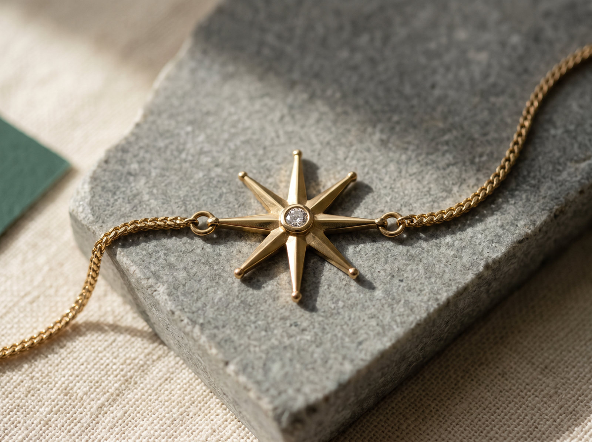
Etsy metni
Başlık 84/140
14K Gold North Star Bracelet, Lab Grown Sapphire, Eight Pointed Star, Christmas Gift
Etiketler (13)
14k gold bracelet, north star bracelet, lab grown sapphire, eight point star, guiding star, star of bethlehem, celestial jewelry, franco chain, star bracelet, christmas gift, gift for her, graduation gift, solid gold bracelet
Malzemeler
14k yellow gold, 14k gold franco chain, lab grown white sapphire
Açıklama
A single eight-pointed North Star in 14k gold on a fine Franco chain, with one lab grown white sapphire flush set at its centre. It works as a Christmas gift and keeps its meaning all year: a guiding star for a new job, a move or a graduation. THE PIECE One flat star, 11.0 mm tip to tip and 1.1 mm thick, with eight straight arms of equal length. Each arm carries a low centre ridge with two polished facets and ends in a rounded 1.0 mm tip, so nothing catches on knitwear. A raised round hub 3.4 mm wide sits at the centre. The two arms that point along the chain carry the chain rings, so the star sits face up. Franco chain 1.5 mm on both sides, high polish. GOLD WEIGHT 3.45 g of 14k gold, counting the station, chain, clasp, rings and tag. On the scale the finished bracelet weighs 3.45 g in total with the stone. Each piece is weighed after finishing and checked against this design weight. STONES One 1.5 mm round lab grown white sapphire, about 0.017 ct, flush set in the hub so its table sits level with the gold. A small hole under the stone lets light in and keeps the setting clean. LENGTH AND FIT 16.5 cm closed, plus a 2 cm extender with rings at 17.5 and 18.5 cm, so it fits 16.5-18.5 cm. It closes with a 9 mm lobster clasp, and the extender ends in a small tag stamped 14K. HOW IT IS MADE Made to order. The star, its hub and both chain rings are cast in 14k gold as one piece, then filed, faceted and polished. There is no solder in the station; every join made at the bench is closed with a laser weld. The stone setting is cut and the stone is set after polishing. CARE Wipe with a soft cloth after wearing. Take it off before swimming and keep it away from chlorine and household chemicals. Warm soapy water and a soft brush will clean the chain and the setting. GIFTING Arrives in a gift box, ready to give. Made to order. The processing time is shown at checkout.
Atölye kartı
Kapali 16.5 cm + 2.0 cm uzatma (17.5 / 18.5 cm halkalari). Yildiz 11.0 mm uc-uca, cekirdek sekizgen r 2.4 (vadi kirisi 1.84), 8 kol esit; kol ucu 1.0 mm R0.5 (tum kollar). Plaka: cekirdek 1.1 mm duz; kollarda orta sirt 1.1 mm, iki faset, faset kenari bitmis 0.75 mm (>=0.7); zincir eksenindeki 2 tasiyici kolun son 1.0 mm'si fasetsiz 1.1 mm. Model +0.2 bitirme +0.1 elmas tiras. Gobek O3.4 x 1.5 mm, alttan O0.8 delik. C-halkalar 1.0 kesit, ID1.2, bosluk 0.9 mm. Istasyon eksen boyu C-halkalarla 16.2 mm. Franco 1.5 mm x 13.48 cm.
Yildiz + gobek + iki C-halka TEK PARCA dokulur (standart 14KY, firina girmez). C-halkalar zincir eksenindeki iki karsi kolun ucuna (1.0 x 1.1 fasetsiz kok) entegre; Franco uc halkalarina gecirilip kapatilir ve LAZERLE kaynaklanir (lehim yok). Tas gobekte, altta O0.8 delikli. Hollow yok.
Tezgâh sırası
- 1. CAD: +0.2 mm bitirme payi (+0.1 mm elmas tirasli yuzlerde); C-halkalar 0.9 mm bosluklu (gecen zincir uc halkasi teli <= 0.8 mm + 0.1; tel capi tedarikciden yazili alinir); tum giyilen uclar R>=0.4
- 2. Recine baski -> yatirim -> vakum dokum, standart 14K sari dokum alasimi (bu parca firina girmez; Zn serbest)
- 3. Yolluk kesimi, gozenek kontrolu
- 4. Tesviye + on-cila (0.15-0.20 mm alinir)
- 5. Elmas tiras (diamond-cut) faseta: her kolda orta sirt + iki duz faset, faset kenari bitmis >=0.75 mm (kumpas); tasiyici 2 kolun son 1.0 mm'si fasetsiz birakilir; uc yaricaplari R0.5 korunur
- 6. Pilot cukurdan O0.8 alt delik del (gobek); flush yuva frezesi (koni, rondist 0.02 mm bindirme)
- 7. 1 x 1.5 mm lab-grown tas SOGUK oturtma, el burnisheri ile kenar itme
- 8. C-halkalari Franco uc halkalarina gecir, kapat, LAZER kaynak (lehim yok)
- 9. Kopca grubu: lobster + 4 atlama halkasi + uzatma + plaket; dikisler lazer kaynak (lehim yok)
- 10. Son cila (ultrasonik serbest)
- 11. QC: tarti vs gram kurulumu +/-3%, faset kenari >=0.75 ve tasiyici kol ucu 1.0 x 1.1 kumpas olcumu, C-halka boslugu 0.9 (zincir uc halkasi teli <=0.8), tas sikilik (igne ile itme), 17.5/18.5 uzunluk, kopca 2 kg cekme testi, 250px kucuk resim kontrolu
Malzeme listesi
- Dokum alasimi standart 14KY: bitmis istasyon(lar) + dokum C-halkalar 0.805 g x1.15 = 0.93 g
- Tas: 1 x 1.5 mm lab-grown beyaz safir ~0.017 ct
- Zincir: Franco 1.5 mm 14K solid 13.48 cm = 1.89 g (KILITSIZ g/cm; numune tartisi sart)
- Lobster kopca 14KY 9x5mm, 1 adet: 0.30 g (TAHMIN — tedarikci numunesi tartilacak; zincir kilitsiz alindigi icin yalniz burada sayilir)
- Atlama halkasi 14KY 1.0mm tel, ID1.5/OD3.5, 4 adet (kilit, 16.5 / 17.5 / 18.5 cm halkalari): 4 x 0.081 = 0.32 g
- Uzatma zinciri 14KY solid cable 1.2mm, 2 x 6.5mm = 1.3 cm: 0.059 g (kilitsiz g/cm 0.0456)
- Damga plaketi 14KY 4.0x2.5x0.6mm (14K + tescilli marka, lazer kazima): 0.073 g
- TOPLAM ALTIN 3.45 g (bant 3.2-3.9); terazide toplam 3.45 g. Gram kurulumu: 8 kollu yildiz plaka 11.0mm, r_ic 2.4, uc 1.0 R0.5; cekirdek duz 1.1, kollarda sirt 1.1 / faset kenari 0.75 (ort 0.925); tasiyici 2 kolun son 1.0 mm'si duz 1.1: cekirdek 16.29mm2 x1.1 + 8 kol x 4.340mm2 x0.925 + 0.4mm3 duz uc = 50.44mm3 x0.01307 = 0.659 g | Gobek kabartmasi O3.4 x +0.4 (1.5mm ev sahibi): pi*1.7^2*0.4 = 3.63mm3 x0.01307 = 0.047 g | Tas yuvasi + 0.8 alt delik (cikarma): -0.81mm3 x0.01307 = -0.011 g | 2 x dokum C-halka (1.0mm kesit, ID1.2; gercek torus, gomulme dusulmus): 4.2mm3 x2 x0.01307 = 0.110 g | Zincir franco15, 13.48 cm (KILITSIZ g/cm secildi, kilit ayrica sayiliyor): Franco 1.5 kilitsiz 0.140 g/cm (U.S. Jewels 16in 6.1 g ve 7in 2.9 g farkindan; eski 0.1501 kilit dahildi) x 13.48cm = 1.887 g | Lobster 14KY 9x5mm (satin alma, TAHMIN; zincir g/cm KILITSIZ alindigi icin kilit burada BIR kez sayilir): tedarikci tartisi bekleniyor = 0.300 g | 4 x atlama halkasi 1.0mm tel ID1.5 (kilit, 16.5, 17.5, 18.5): 2*pi^2*1.25*0.5^2=6.17mm3 x4 x0.01307 = 0.322 g | Uzatma zinciri cable 1.2mm 2x6.5mm (kilitsiz g/cm): 0.0456 g/cm x1.3cm = 0.059 g | Damga plaketi 4.0x2.5x0.6 (14K+tescilli marka): 5.57mm3 x0.01307 = 0.073 g
Arıza modları
| Arıza | Tasarım nasıl önlüyor |
|---|---|
| Kol ucu egilmesi/takilma (orme kumas) | Uclar 1.0 mm genis, R0.5 tam yuvarlak; kollar sirtta 1.1 mm, kol boyu ~2.8 mm |
| Tasiyici kol kokunde kopma (bilekligin tum cekme yuku 0.8 mm boyundan geciyordu) | Tasiyici 2 kolun ucu 1.0 x 1.1 mm ve son 1.0 mm fasetsiz; yuk yolu her yerde >=1.0 mm |
| Tas gevsemesi / kulet bilege degmesi | Gobek 1.5 mm (KANIT 1.5 mm tas icin min 1.5); kulet alt delikte kalir; yanal duvar 0.95 mm |
| Elmas tiras sonrasi faset kenarinin dekoratif min altina dusmesi | Faset kenari bitmis >=0.75 mm tanimli ve QC'de olculur; model +0.1 tiras payi |
| Istasyonun ters donmesi | Franco 1.5 duz kare dokuma; yildiz simetrik, tasiyici kollar zincir ekseninde |
| C-halkanin zincir uc halkasina gecmemesi | Dokum bosluk 0.9 mm; Franco uc halkasi teli <=0.8 mm tedarikciden yazili |
Tolerans
| Kural | Değer | |
|---|---|---|
| L4 tas boyu 1.3-2.0 mm, yuvarlak brilyant, lab-grown | 1.5 mm lab-grown beyaz safir | ✓ |
| L4 ev sahibi kalinligi >= KANIT (1.5 mm tas -> 1.5 mm) | gobek 1.5 mm | ✓ |
| L4 yanal duvar >=0.35 mm (<1.8 mm tas) | (3.4-1.5)/2 = 0.95 mm | ✓ |
| L4 tasin altinda delik | O0.8 delik, derinlik ~0.5 mm <= 2 x 0.8 | ✓ |
| L4 tas sayisi <=7, pave yok | 1 tas | ✓ |
| L5 dekoratif min >=0.6 mm | faset kenari 0.75 mm, kol ucu 1.0 mm | ✓ |
| L5 yapisal >=0.8 mm | plaka cekirdek/sirt 1.1 mm | ✓ |
| L5 tasiyici halka/kulp kesiti >=1.0 mm | dokum C-halka 1.0 mm kesit, hacim 4.2 mm3 (gercek torus, gomulme dusulmus); atlama halkalari 1.0 mm tel | ✓ |
| L5 aciklik >=0.6 mm, derinlik <=2 x genislik | C-halka ID 1.2 mm / derinlik 1.0 mm; dokum bosluk 0.9 mm | ✓ |
| L5 giyilen uclar R>=0.4 | 8 kol ucu 1.0 mm R0.5 tam yuvarlak | ✓ |
| L5 bitirme payi +0.2 (+0.1 elmas tiras) | model 1.4 mm sirt -> bitmis 1.1; faset kenari bitmis 0.75 | ✓ |
| L6 hollow yok (bileklik) | tum istasyonlar dolu dokum; zincir 14K solid | ✓ |
| L7 altin gram bandi 3.2-3.9 g (zincir+bulgu dahil) | 3.45 g (zincir KILITSIZ g/cm, kilit bir kez sayildi; C-halka 4.2 mm3) | ✓ |
| L8 uzunluk 16.5 + 2.0 cm uzatma, halkalar 17.5/18.5, gram 18.5 cm'de | 16.5 cm kapali + 2 x 1.0 cm uzatma segmenti; gram_build 18.5 cm'yi (uzatma zinciri + 3 halka + plaket) iceriyor | ✓ |
| L11 8 kollu yildiz kategoride <=2 | B1 + B4 = 2 | ✓ |
| L12 tek kahraman ozellik | tek 11 mm sekiz kollu yildiz + merkez tas | ✓ |
| Tasiyici yuk yolu (halka koku dahil) her yerde >=1.0 mm kesit | tasiyici 2 kolun ucu 1.0 genis x 1.1 kalin (son 1.0 mm fasetsiz; eski 0.8 x 1.1); C-halka 1.0 kesit; Franco 1.5 | ✓ |
| C-halka boslugu >= gecen tel + 0.1 mm | dokum bosluk 0.9 mm >= gecen tel 0.80 + 0.1 (tel capi tedarikci spesifikasyonuyla kilitlenir) | ✓ |
Görsel promptları (16)
- 01Hero / arama küçük resmi: tek ürün, marka natürmortu, 4:3.Referanssız
Quiet luxury editorial still-life product photography. Warm ivory linen ground, honed grey stone slab, a sliver of deep jade-green matte card. Soft directional window light from upper left, long soft shadow, shallow depth of field. Solid yellow gold with warm antique tone. Restrained heirloom mood. No text, no logo, no glitter, no Christmas decoration. The piece: 14K yellow gold bracelet on a 1.5 mm Franco chain, 16.5 cm long, 2.0 cm extender. One flat eight-pointed star station, 11.0 mm tip to tip and 1.1 mm thick, with exactly 8 straight arms of equal length, each ending in a rounded 1.0 mm tip; two opposite arms point along the chain and carry the chain rings. Each arm has a low central ridge with two polished flat facets. A raised round hub 3.4 mm wide at the centre holds one 1.5 mm round lab-grown white sapphire, flush set. High polish. 9 mm lobster clasp. The stones are exactly these and no others: one 1.5 mm round lab-grown white sapphire flush-set in the raised hub at the centre of the eight-pointed star. No other stone and no empty setting anywhere on the piece. The piece has no enamel and no colour: every surface is yellow gold. The decorated centre of the bracelet lies face up at the centre of the honed grey stone slab, close to the camera; the chain runs away from it on both sides in a soft curve and leaves the frame at the left and right edges; the clasp is out of frame. Seen from about 30 degrees above with a 100 mm macro lens, the decorated part in razor-sharp focus, filling about a third of the frame width, with the chain softly out of focus toward the frame edges. No people and no hands.
Alt metin 14K gold North Star bracelet, eight-pointed star with a flush-set lab-grown white sapphire on a Franco chain
- 02Takılı hâli: ölçek ve duruş. Hero'dan sonra dönüşümü en çok etkileyen kare.Referans: hero kırpımı
Quiet luxury editorial photography in warm ivory, stone grey and deep jade-green tones, soft directional window light from the upper left, true colour, fine film grain, no heavy retouching. No text, no logo, no watermark, no glitter. The attached reference image is a crop of this exact piece: keep its shape, proportions, gold colour and stones exactly as in the reference. The piece: 14K yellow gold bracelet on a 1.5 mm Franco chain, 16.5 cm long, 2.0 cm extender. One flat eight-pointed star station, 11.0 mm tip to tip and 1.1 mm thick, with exactly 8 straight arms of equal length, each ending in a rounded 1.0 mm tip; two opposite arms point along the chain and carry the chain rings. Each arm has a low central ridge with two polished flat facets. A raised round hub 3.4 mm wide at the centre holds one 1.5 mm round lab-grown white sapphire, flush set. High polish. 9 mm lobster clasp. The stones are exactly these and no others: one 1.5 mm round lab-grown white sapphire flush-set in the raised hub at the centre of the eight-pointed star. No other stone and no empty setting anywhere on the piece. The piece has no enamel and no colour: every surface is yellow gold. Worn on a woman's left wrist, the forearm resting on a folded warm-ivory wool knit, hand relaxed and open; the stations sit face up on the top of the wrist; it is the only jewellery in the image, no watch and no rings; true to scale, the main element measures about 11 mm across; anatomically correct hands with five fingers, short natural unpolished nails.
Alt metin 14K gold North Star bracelet, eight-pointed star with a flush-set lab-grown white sapphire on a Franco chain, worn
- 03Makro işçilik: fiyatı meşrulaştıran detay (mine yüzeyi, flush taş, kenar bitimi).Referans: hero kırpımı
Quiet luxury editorial photography in warm ivory, stone grey and deep jade-green tones, soft directional window light from the upper left, true colour, fine film grain, no heavy retouching. No text, no logo, no watermark, no glitter. The attached reference image is a crop of this exact piece: keep its shape, proportions, gold colour and stones exactly as in the reference. The piece: 14K yellow gold bracelet on a 1.5 mm Franco chain, 16.5 cm long, 2.0 cm extender. One flat eight-pointed star station, 11.0 mm tip to tip and 1.1 mm thick, with exactly 8 straight arms of equal length, each ending in a rounded 1.0 mm tip; two opposite arms point along the chain and carry the chain rings. Each arm has a low central ridge with two polished flat facets. A raised round hub 3.4 mm wide at the centre holds one 1.5 mm round lab-grown white sapphire, flush set. High polish. 9 mm lobster clasp. The stones are exactly these and no others: one 1.5 mm round lab-grown white sapphire flush-set in the raised hub at the centre of the eight-pointed star. No other stone and no empty setting anywhere on the piece. The piece has no enamel and no colour: every surface is yellow gold. Extreme close-up macro, 100 mm macro lens: The eight-pointed star with its faceted arms and the 1.5 mm lab-grown white sapphire flush-set in the raised centre hub, level with the gold. The rest of the piece falls away into soft focus on warm-ivory linen.
Alt metin Close-up of the faceted eight-pointed star and the flush-set lab-grown sapphire in its hub
- 04Elde ölçek: mm'yi parmak ucuna çevirir, 'beklediğimden küçük' iadesini önler.Referans: hero kırpımı
Quiet luxury editorial photography in warm ivory, stone grey and deep jade-green tones, soft directional window light from the upper left, true colour, fine film grain, no heavy retouching. No text, no logo, no watermark, no glitter. The attached reference image is a crop of this exact piece: keep its shape, proportions, gold colour and stones exactly as in the reference. The piece: 14K yellow gold bracelet on a 1.5 mm Franco chain, 16.5 cm long, 2.0 cm extender. One flat eight-pointed star station, 11.0 mm tip to tip and 1.1 mm thick, with exactly 8 straight arms of equal length, each ending in a rounded 1.0 mm tip; two opposite arms point along the chain and carry the chain rings. Each arm has a low central ridge with two polished flat facets. A raised round hub 3.4 mm wide at the centre holds one 1.5 mm round lab-grown white sapphire, flush set. High polish. 9 mm lobster clasp. The stones are exactly these and no others: one 1.5 mm round lab-grown white sapphire flush-set in the raised hub at the centre of the eight-pointed star. No other stone and no empty setting anywhere on the piece. The piece has no enamel and no colour: every surface is yellow gold. Close-up for scale against a plain warm-ivory background thrown softly out of focus: the bracelet held up between the thumb and index finger of a woman's hand by its clasp, the chain hanging straight down so every station faces the camera; true to scale, the main element measures about 11 mm across, a fingertip is about 16 mm wide; it is the only jewellery in the image; anatomically correct hands with five fingers, short natural unpolished nails.
Alt metin 14K gold North Star bracelet, eight-pointed star with a flush-set lab-grown white sapphire on a Franco chain, held between fingers for scale
- 05Arka ve bulgular: dolu gövde, kilit / çivi / iğne; sağlamlık sorusunu cevaplar.Referans: hero kırpımı
Quiet luxury editorial photography in warm ivory, stone grey and deep jade-green tones, soft directional window light from the upper left, true colour, fine film grain, no heavy retouching. No text, no logo, no watermark, no glitter. The attached reference image is a crop of this exact piece: keep its shape, proportions, gold colour and stones exactly as in the reference. The piece: 14K yellow gold bracelet on a 1.5 mm Franco chain, 16.5 cm long, 2.0 cm extender. One flat eight-pointed star station, 11.0 mm tip to tip and 1.1 mm thick, with exactly 8 straight arms of equal length, each ending in a rounded 1.0 mm tip; two opposite arms point along the chain and carry the chain rings. Each arm has a low central ridge with two polished flat facets. A raised round hub 3.4 mm wide at the centre holds one 1.5 mm round lab-grown white sapphire, flush set. High polish. 9 mm lobster clasp. The stones are exactly these and no others: one 1.5 mm round lab-grown white sapphire flush-set in the raised hub at the centre of the eight-pointed star. No other stone and no empty setting anywhere on the piece. The piece has no enamel and no colour: every surface is yellow gold. The back of the piece, top-down on honed grey stone: The flat solid back of the star, with a small round hole under the stone and the two chain rings at opposite arm tips.
Alt metin Back of the bracelet showing the flat solid back of the star with the hole under the stone
- 06Tam boy / çift / mekanizma: uzunluk, ayar ve ne geldiğini tek karede gösterir.Referans: hero kırpımı
Quiet luxury editorial photography in warm ivory, stone grey and deep jade-green tones, soft directional window light from the upper left, true colour, fine film grain, no heavy retouching. No text, no logo, no watermark, no glitter. The attached reference image is a crop of this exact piece: keep its shape, proportions, gold colour and stones exactly as in the reference. The piece: 14K yellow gold bracelet on a 1.5 mm Franco chain, 16.5 cm long, 2.0 cm extender. One flat eight-pointed star station, 11.0 mm tip to tip and 1.1 mm thick, with exactly 8 straight arms of equal length, each ending in a rounded 1.0 mm tip; two opposite arms point along the chain and carry the chain rings. Each arm has a low central ridge with two polished flat facets. A raised round hub 3.4 mm wide at the centre holds one 1.5 mm round lab-grown white sapphire, flush set. High polish. 9 mm lobster clasp. The stones are exactly these and no others: one 1.5 mm round lab-grown white sapphire flush-set in the raised hub at the centre of the eight-pointed star. No other stone and no empty setting anywhere on the piece. The piece has no enamel and no colour: every surface is yellow gold. The whole bracelet laid out in one straight horizontal line on warm-ivory linen, top-down, from the lobster clasp at one end to the extender chain at the other, every station face up and the extender rings visible.
Alt metin 14K gold North Star bracelet, eight-pointed star with a flush-set lab-grown white sapphire on a Franco chain, full length
- 07Yan profil: kalınlık ve kütle, düz baskı değil gerçek altın olduğunu gösterir.Referans: hero kırpımı
Quiet luxury editorial photography in warm ivory, stone grey and deep jade-green tones, soft directional window light from the upper left, true colour, fine film grain, no heavy retouching. No text, no logo, no watermark, no glitter. The attached reference image is a crop of this exact piece: keep its shape, proportions, gold colour and stones exactly as in the reference. The piece: 14K yellow gold bracelet on a 1.5 mm Franco chain, 16.5 cm long, 2.0 cm extender. One flat eight-pointed star station, 11.0 mm tip to tip and 1.1 mm thick, with exactly 8 straight arms of equal length, each ending in a rounded 1.0 mm tip; two opposite arms point along the chain and carry the chain rings. Each arm has a low central ridge with two polished flat facets. A raised round hub 3.4 mm wide at the centre holds one 1.5 mm round lab-grown white sapphire, flush set. High polish. 9 mm lobster clasp. The stones are exactly these and no others: one 1.5 mm round lab-grown white sapphire flush-set in the raised hub at the centre of the eight-pointed star. No other stone and no empty setting anywhere on the piece. The piece has no enamel and no colour: every surface is yellow gold. Side profile at eye level on honed grey stone, the camera level with the piece: Side profile: a flat star plate 1.1 mm thick with the centre hub rising to 1.5 mm.
Alt metin Side profile of the bracelet showing its thickness
- 08Kış yaşam stili: sezonu Noel dekoru olmadan kurar.Referans: hero kırpımı
Quiet luxury editorial photography in warm ivory, stone grey and deep jade-green tones, soft directional window light from the upper left, true colour, fine film grain, no heavy retouching. No text, no logo, no watermark, no glitter. The attached reference image is a crop of this exact piece: keep its shape, proportions, gold colour and stones exactly as in the reference. The piece: 14K yellow gold bracelet on a 1.5 mm Franco chain, 16.5 cm long, 2.0 cm extender. One flat eight-pointed star station, 11.0 mm tip to tip and 1.1 mm thick, with exactly 8 straight arms of equal length, each ending in a rounded 1.0 mm tip; two opposite arms point along the chain and carry the chain rings. Each arm has a low central ridge with two polished flat facets. A raised round hub 3.4 mm wide at the centre holds one 1.5 mm round lab-grown white sapphire, flush set. High polish. 9 mm lobster clasp. The stones are exactly these and no others: one 1.5 mm round lab-grown white sapphire flush-set in the raised hub at the centre of the eight-pointed star. No other stone and no empty setting anywhere on the piece. The piece has no enamel and no colour: every surface is yellow gold. Morning window light: a woman's left wrist wearing the bracelet rests on the cuff of an ivory cable-knit sweater beside a small stoneware cup of black coffee on a pale oak table; it is the only jewellery in the image; anatomically correct hands with five fingers, short natural unpolished nails.
Alt metin 14K gold North Star bracelet, eight-pointed star with a flush-set lab-grown white sapphire on a Franco chain, styled with winter knitwear
- 09Hediye kutusu: Noel alıcısının ilk sorusu, hediyeye hazır mı?Referans: hero kırpımı
Quiet luxury editorial photography in warm ivory, stone grey and deep jade-green tones, soft directional window light from the upper left, true colour, fine film grain, no heavy retouching. No text, no logo, no watermark, no glitter. The attached reference image is a crop of this exact piece: keep its shape, proportions, gold colour and stones exactly as in the reference. The piece: 14K yellow gold bracelet on a 1.5 mm Franco chain, 16.5 cm long, 2.0 cm extender. One flat eight-pointed star station, 11.0 mm tip to tip and 1.1 mm thick, with exactly 8 straight arms of equal length, each ending in a rounded 1.0 mm tip; two opposite arms point along the chain and carry the chain rings. Each arm has a low central ridge with two polished flat facets. A raised round hub 3.4 mm wide at the centre holds one 1.5 mm round lab-grown white sapphire, flush set. High polish. 9 mm lobster clasp. The stones are exactly these and no others: one 1.5 mm round lab-grown white sapphire flush-set in the raised hub at the centre of the eight-pointed star. No other stone and no empty setting anywhere on the piece. The piece has no enamel and no colour: every surface is yellow gold. Top-down: the bracelet coiled loosely inside a small open square gift box in plain warm-ivory card with a soft ivory insert, the lid set beside it, a length of narrow deep jade-green ribbon untied beside the box, on honed grey stone. No branding, no printed pattern, no tissue paper, no Christmas decoration, exactly one box.
Alt metin 14K gold North Star bracelet, eight-pointed star with a flush-set lab-grown white sapphire on a Franco chain in a gift box
- 10Gerçek renk: nötr gün ışığında altın ve mine rengi; renk kaynaklı iadeyi azaltır.Referans: hero kırpımı
Quiet luxury editorial photography in warm ivory, stone grey and deep jade-green tones, soft directional window light from the upper left, true colour, fine film grain, no heavy retouching. No text, no logo, no watermark, no glitter. The attached reference image is a crop of this exact piece: keep its shape, proportions, gold colour and stones exactly as in the reference. The piece: 14K yellow gold bracelet on a 1.5 mm Franco chain, 16.5 cm long, 2.0 cm extender. One flat eight-pointed star station, 11.0 mm tip to tip and 1.1 mm thick, with exactly 8 straight arms of equal length, each ending in a rounded 1.0 mm tip; two opposite arms point along the chain and carry the chain rings. Each arm has a low central ridge with two polished flat facets. A raised round hub 3.4 mm wide at the centre holds one 1.5 mm round lab-grown white sapphire, flush set. High polish. 9 mm lobster clasp. The stones are exactly these and no others: one 1.5 mm round lab-grown white sapphire flush-set in the raised hub at the centre of the eight-pointed star. No other stone and no empty setting anywhere on the piece. The piece has no enamel and no colour: every surface is yellow gold. Colour-accurate reference shot: the piece alone, top-down on plain matte white-ivory paper under even neutral north daylight, no shadow drama, no props, the piece centred and filling half the frame.
Alt metin 14K gold North Star bracelet, eight-pointed star with a flush-set lab-grown white sapphire on a Franco chain in neutral daylight, true colour
- 11Ölçü grafiği tabanı: sağ üçte bir boş; mm etiketleri sonra eklenir.Referans: hero kırpımı
Quiet luxury editorial photography in warm ivory, stone grey and deep jade-green tones, soft directional window light from the upper left, true colour, fine film grain, no heavy retouching. No text, no logo, no watermark, no glitter. The attached reference image is a crop of this exact piece: keep its shape, proportions, gold colour and stones exactly as in the reference. The piece: 14K yellow gold bracelet on a 1.5 mm Franco chain, 16.5 cm long, 2.0 cm extender. One flat eight-pointed star station, 11.0 mm tip to tip and 1.1 mm thick, with exactly 8 straight arms of equal length, each ending in a rounded 1.0 mm tip; two opposite arms point along the chain and carry the chain rings. Each arm has a low central ridge with two polished flat facets. A raised round hub 3.4 mm wide at the centre holds one 1.5 mm round lab-grown white sapphire, flush set. High polish. 9 mm lobster clasp. The stones are exactly these and no others: one 1.5 mm round lab-grown white sapphire flush-set in the raised hub at the centre of the eight-pointed star. No other stone and no empty setting anywhere on the piece. The piece has no enamel and no colour: every surface is yellow gold. The piece alone, top-down on plain warm-ivory paper, placed in the left two thirds of the frame; the right third is empty paper for dimension labels to be added later; even soft light, no props.
Alt metin 14K gold North Star bracelet, eight-pointed star with a flush-set lab-grown white sapphire on a Franco chain with space for dimensions
- 12El işçiliği: siparişe üretim hikâyesi, tezgâhta parça.Referans: hero kırpımı
Quiet luxury editorial photography in warm ivory, stone grey and deep jade-green tones, soft directional window light from the upper left, true colour, fine film grain, no heavy retouching. No text, no logo, no watermark, no glitter. The attached reference image is a crop of this exact piece: keep its shape, proportions, gold colour and stones exactly as in the reference. The piece: 14K yellow gold bracelet on a 1.5 mm Franco chain, 16.5 cm long, 2.0 cm extender. One flat eight-pointed star station, 11.0 mm tip to tip and 1.1 mm thick, with exactly 8 straight arms of equal length, each ending in a rounded 1.0 mm tip; two opposite arms point along the chain and carry the chain rings. Each arm has a low central ridge with two polished flat facets. A raised round hub 3.4 mm wide at the centre holds one 1.5 mm round lab-grown white sapphire, flush set. High polish. 9 mm lobster clasp. The stones are exactly these and no others: one 1.5 mm round lab-grown white sapphire flush-set in the raised hub at the centre of the eight-pointed star. No other stone and no empty setting anywhere on the piece. The piece has no enamel and no colour: every surface is yellow gold. The finished piece lying on a worn wooden jeweller's bench pin beside a steel burnisher, a fine half-round file and a pair of brass tweezers, warm lamp light, shallow depth of field, the piece in sharp focus; no hands.
Alt metin 14K gold North Star bracelet, eight-pointed star with a flush-set lab-grown white sapphire on a Franco chain on a jeweller's bench
- 13Motifin anlamı: sol üçte bir boş; sembol hikâyesi metni sonra eklenir.Referans: hero kırpımı
Quiet luxury editorial photography in warm ivory, stone grey and deep jade-green tones, soft directional window light from the upper left, true colour, fine film grain, no heavy retouching. No text, no logo, no watermark, no glitter. The attached reference image is a crop of this exact piece: keep its shape, proportions, gold colour and stones exactly as in the reference. The piece: 14K yellow gold bracelet on a 1.5 mm Franco chain, 16.5 cm long, 2.0 cm extender. One flat eight-pointed star station, 11.0 mm tip to tip and 1.1 mm thick, with exactly 8 straight arms of equal length, each ending in a rounded 1.0 mm tip; two opposite arms point along the chain and carry the chain rings. Each arm has a low central ridge with two polished flat facets. A raised round hub 3.4 mm wide at the centre holds one 1.5 mm round lab-grown white sapphire, flush set. High polish. 9 mm lobster clasp. The stones are exactly these and no others: one 1.5 mm round lab-grown white sapphire flush-set in the raised hub at the centre of the eight-pointed star. No other stone and no empty setting anywhere on the piece. The piece has no enamel and no colour: every surface is yellow gold. The piece alone, top-down on a deep jade-green matte card, placed in the right two thirds of the frame; the left third is empty card for a caption to be added later; soft directional light.
Alt metin 14K gold North Star bracelet, eight-pointed star with a flush-set lab-grown white sapphire on a Franco chain on a deep green card
- 14Yıl boyu takılır: 'yalnız Noel' itirazını kırar.Referans: hero kırpımı
Quiet luxury editorial photography in warm ivory, stone grey and deep jade-green tones, soft directional window light from the upper left, true colour, fine film grain, no heavy retouching. No text, no logo, no watermark, no glitter. The attached reference image is a crop of this exact piece: keep its shape, proportions, gold colour and stones exactly as in the reference. The piece: 14K yellow gold bracelet on a 1.5 mm Franco chain, 16.5 cm long, 2.0 cm extender. One flat eight-pointed star station, 11.0 mm tip to tip and 1.1 mm thick, with exactly 8 straight arms of equal length, each ending in a rounded 1.0 mm tip; two opposite arms point along the chain and carry the chain rings. Each arm has a low central ridge with two polished flat facets. A raised round hub 3.4 mm wide at the centre holds one 1.5 mm round lab-grown white sapphire, flush set. High polish. 9 mm lobster clasp. The stones are exactly these and no others: one 1.5 mm round lab-grown white sapphire flush-set in the raised hub at the centre of the eight-pointed star. No other stone and no empty setting anywhere on the piece. The piece has no enamel and no colour: every surface is yellow gold. Everyday wear, no season: a woman's left wrist wearing the bracelet over a laptop keyboard in soft daylight, plain white cotton shirt cuff; only jewellery in the image; anatomically correct hands with five fingers, short natural unpolished nails.
Alt metin 14K gold North Star bracelet, eight-pointed star with a flush-set lab-grown white sapphire on a Franco chain, everyday wear
- 15Hediye anı: duygu; Noel satın alma niyetine bağlar.Referans: hero kırpımı
Quiet luxury editorial photography in warm ivory, stone grey and deep jade-green tones, soft directional window light from the upper left, true colour, fine film grain, no heavy retouching. No text, no logo, no watermark, no glitter. The attached reference image is a crop of this exact piece: keep its shape, proportions, gold colour and stones exactly as in the reference. The piece: 14K yellow gold bracelet on a 1.5 mm Franco chain, 16.5 cm long, 2.0 cm extender. One flat eight-pointed star station, 11.0 mm tip to tip and 1.1 mm thick, with exactly 8 straight arms of equal length, each ending in a rounded 1.0 mm tip; two opposite arms point along the chain and carry the chain rings. Each arm has a low central ridge with two polished flat facets. A raised round hub 3.4 mm wide at the centre holds one 1.5 mm round lab-grown white sapphire, flush set. High polish. 9 mm lobster clasp. The stones are exactly these and no others: one 1.5 mm round lab-grown white sapphire flush-set in the raised hub at the centre of the eight-pointed star. No other stone and no empty setting anywhere on the piece. The piece has no enamel and no colour: every surface is yellow gold. A gift being given: two pairs of hands across a pale oak table, one pair holding out the small open warm-ivory gift box with the piece visible inside, the other reaching for it, soft warm window light, sleeves of ivory and grey knitwear; exactly one box and one piece of jewellery; anatomically correct hands with five fingers, short natural unpolished nails.
Alt metin 14K gold North Star bracelet, eight-pointed star with a flush-set lab-grown white sapphire on a Franco chain given as a gift
- 16Mağaza ızgarası / Pinterest: koyu jade zeminde yüksek kontrast kare.Referans: hero kırpımı
Quiet luxury editorial photography in warm ivory, stone grey and deep jade-green tones, soft directional window light from the upper left, true colour, fine film grain, no heavy retouching. No text, no logo, no watermark, no glitter. The attached reference image is a crop of this exact piece: keep its shape, proportions, gold colour and stones exactly as in the reference. The piece: 14K yellow gold bracelet on a 1.5 mm Franco chain, 16.5 cm long, 2.0 cm extender. One flat eight-pointed star station, 11.0 mm tip to tip and 1.1 mm thick, with exactly 8 straight arms of equal length, each ending in a rounded 1.0 mm tip; two opposite arms point along the chain and carry the chain rings. Each arm has a low central ridge with two polished flat facets. A raised round hub 3.4 mm wide at the centre holds one 1.5 mm round lab-grown white sapphire, flush set. High polish. 9 mm lobster clasp. The stones are exactly these and no others: one 1.5 mm round lab-grown white sapphire flush-set in the raised hub at the centre of the eight-pointed star. No other stone and no empty setting anywhere on the piece. The piece has no enamel and no colour: every surface is yellow gold. Top-down flat lay of the piece centred on a deep jade-green matte card with a narrow border of warm-ivory linen at the top edge, crisp soft light, the piece filling about 40 percent of the frame so a square crop keeps all of it.
Alt metin 14K gold North Star bracelet, eight-pointed star with a flush-set lab-grown white sapphire on a Franco chain, flat lay on deep green
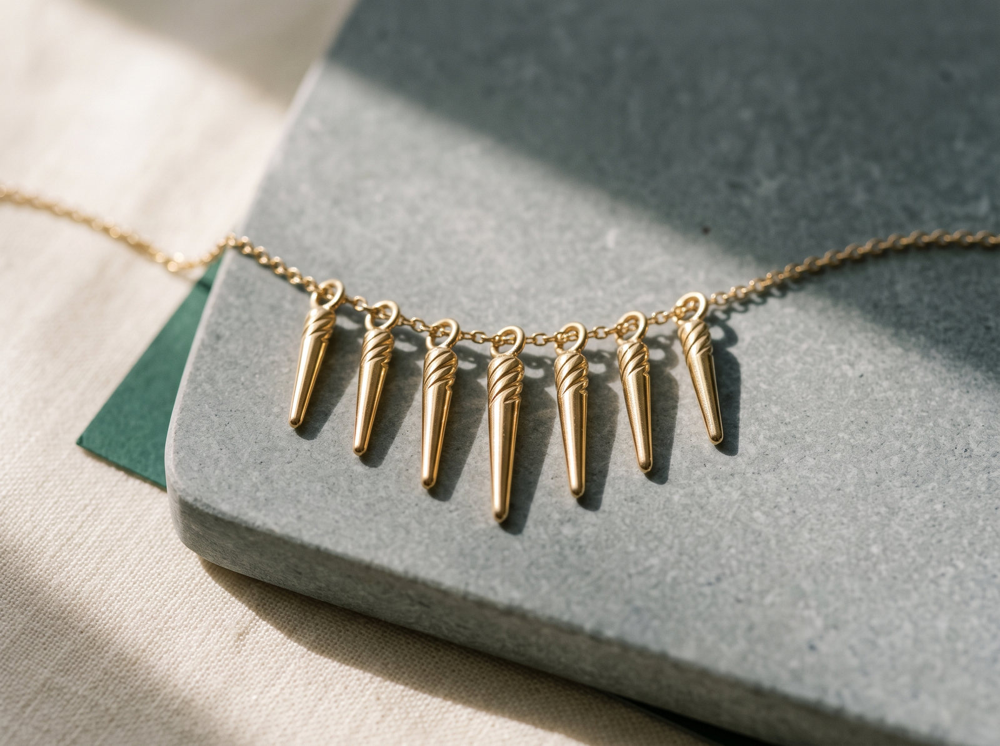
Etsy metni
Başlık 86/140
14K Gold Icicle Fringe Bracelet, Seven Solid Gold Drops, Winter Christmas Gift for Her
Etiketler (13)
14k gold bracelet, icicle bracelet, fringe bracelet, gold drop bracelet, winter jewelry, icicle jewelry, cable chain bracelet, dainty bracelet, layering bracelet, christmas gift, gift for her, new year gift, solid gold bracelet
Malzemeler
14k yellow gold, 14k gold cable chain
Açıklama
Seven solid 14k gold icicles hang from the centre of a fine cable chain, graded from 8 mm at the ends to 12 mm in the middle. A winter Christmas gift that moves with the wrist and still looks right in spring as a simple gold fringe. THE PIECE Seven solid tapered drops, 8, 9, 10, 12, 10, 9 and 8 mm long, spaced 3.0 mm centre to centre for a fringe about 20 mm wide. Each drop is 2.2 mm wide at the top and narrows to a rounded 0.8 mm tip, with a shallow spiral line on its upper part and a high polish. Each one hangs from its own small gold loop on a 1.2 mm cable chain and swings freely. GOLD WEIGHT 3.37 g of 14k gold, counting the station, chain, clasp, rings and tag. On the scale the finished bracelet weighs 3.37 g in total. Each piece is weighed after finishing and checked against this design weight. LENGTH AND FIT 16.5 cm closed, plus a 2 cm extender with rings at 17.5 and 18.5 cm, so it fits 16.5-18.5 cm. It closes with a 9 mm lobster clasp, and the extender ends in a small tag stamped 14K. HOW IT IS MADE Made to order. Each icicle is cast in 14k gold in one piece with its loop, then polished and given its spiral line. There is no solder: each loop is closed around its chain link with a laser weld, and so is every other join made at the bench. CARE Wipe with a soft cloth after wearing. Take it off before swimming and keep it away from chlorine and household chemicals. Warm soapy water and a soft brush will clean the chain and the setting. GIFTING Arrives in a gift box, ready to give. Made to order. The processing time is shown at checkout.
Atölye kartı
Kapali 16.5 cm + 2.0 cm uzatma. 7 sarkit: 8-9-10-12-10-9-8 mm, taban O2.2, uc O0.8 R0.4; spiral oluk <=0.10 mm derin, ~0.3 mm genis, adim 1.5 mm, uca 2.0 mm kala biter (ucta O0.8 tam kesit korunur). Merkez-merkez 3.0 mm (komsu arasi 0.8 mm), sacak genisligi ~20.2 mm. Aralik cable baklasi adimina baglidir: hedef bakla adimi 1.5 mm, her 2. bakla = 3.0 mm; tedarikci adimi farkliysa (or. 1.2 mm) her 3. bakla = 3.6 mm kullanilir (sacak ~24 mm). C-kulp 1.0 kesit, ID1.2, bosluk 0.8. Cable 1.2 mm x 15.10 cm.
Her sarkit ust C-kulpuyla birlikte TEK PARCA ve dolu dokulur (hollow yok). C-kulp zincirin belirlenmis 7 cable baklasina gecirilir, kapatilir ve LAZERLE kaynaklanir (lehim yok). Sarkitlar serbest sallanir.
Tezgâh sırası
- 1. CAD: +0.2 mm bitirme payi; C-kulplar 0.8 mm bosluklu (cable bakla teli 0.35 + 0.1 = 0.45 <= 0.8); tum giyilen uclar R>=0.4
- 2. Recine baski -> yatirim -> vakum dokum, standart 14K sari dokum alasimi (bu parca firina girmez; Zn serbest)
- 3. Yolluk kesimi, gozenek kontrolu
- 4. Tesviye + on-cila (0.15-0.20 mm alinir)
- 5. Spiral oluk: <=0.10 mm derin, uca 2.0 mm kala biter; yuksek parlatma; tirastan sonra uc O0.8 R0.4 kumpasla olculur
- 6. Tedarikciden cable 1.2 bakla adimini yazili al; 3.0 mm (gerekirse 3.6 mm) araliga gore 7 baklayi isaretle; C-kulplari gecir, kapat, LAZER kaynak (lehim yok)
- 7. Kopca grubu: lobster + 4 atlama halkasi + uzatma + plaket; dikisler lazer kaynak (lehim yok)
- 8. Son cila (ultrasonik serbest)
- 9. QC: tarti vs gram kurulumu +/-3%, spiral oluk derinligi <=0.10 ve uc O0.8, sarkit araligi (carpismasiz), 17.5/18.5 uzunluk, kopca 2 kg cekme testi, 250px kucuk resim kontrolu
Malzeme listesi
- Dokum alasimi standart 14KY: bitmis istasyon(lar) + dokum C-halkalar 1.928 g x1.15 = 2.22 g
- Tas: yok
- Zincir: cable 1.2 mm 14K solid 15.10 cm = 0.69 g (KILITSIZ g/cm; numune tartisi sart)
- Lobster kopca 14KY 9x5mm, 1 adet: 0.30 g (TAHMIN — tedarikci numunesi tartilacak; zincir kilitsiz alindigi icin yalniz burada sayilir)
- Atlama halkasi 14KY 1.0mm tel, ID1.5/OD3.5, 4 adet (kilit, 16.5 / 17.5 / 18.5 cm halkalari): 4 x 0.081 = 0.32 g
- Uzatma zinciri 14KY solid cable 1.2mm, 2 x 6.5mm = 1.3 cm: 0.059 g (kilitsiz g/cm 0.0456)
- Damga plaketi 14KY 4.0x2.5x0.6mm (14K + tescilli marka, lazer kazima): 0.073 g
- TOPLAM ALTIN 3.37 g (bant 3.2-3.9); terazide toplam 3.37 g. Gram kurulumu: 7 buz sarkiti kesik koni O2.2->O0.8, 8-9-10-12-10-9-8mm, uc yarikure R0.4: 120.73mm3 x0.01307 = 1.578 g | Spiral oluk (cikarma): <=0.10 mm derin, ~0.3 mm genis V, adim 1.5 mm, uca 2.0 mm kala biter: 7 x ~25mm helis x 0.015mm2 = -2.6mm3 x0.01307 = -0.034 g | 7 x dokum C-kulp (1.0mm kesit, ID1.2; gercek torus, gomulme dusulmus): 4.2mm3 x7 x0.01307 = 0.384 g | Zincir cable12, 15.10 cm (KILITSIZ g/cm secildi, kilit ayrica sayiliyor): cable 1.2 kilitsiz 0.0456 g/cm (0.0489 kilit dahil ara deger x 0.933) x 15.10cm = 0.689 g | Lobster 14KY 9x5mm (satin alma, TAHMIN; zincir g/cm KILITSIZ alindigi icin kilit burada BIR kez sayilir): tedarikci tartisi bekleniyor = 0.300 g | 4 x atlama halkasi 1.0mm tel ID1.5 (kilit, 16.5, 17.5, 18.5): 2*pi^2*1.25*0.5^2=6.17mm3 x4 x0.01307 = 0.322 g | Uzatma zinciri cable 1.2mm 2x6.5mm (kilitsiz g/cm): 0.0456 g/cm x1.3cm = 0.059 g | Damga plaketi 4.0x2.5x0.6 (14K+tescilli marka): 5.57mm3 x0.01307 = 0.073 g
Arıza modları
| Arıza | Tasarım nasıl önlüyor |
|---|---|
| Sivri ucun orgu kumasa takilmasi, egilip acilmasi | Uc O0.8 mm bitmis, R0.4 yarikure; spiral oluk uca 2.0 mm kala biter, uc kesiti tam kalir |
| Spiral olugun kesiti 0.6 mm altina dusurmesi (L5) | Oluk derinligi <=0.10 mm; en ince bolgede (oluk sonu, ~O1.0) kalan kesit >=0.8 mm |
| Sarkitlarin birbirine carpip ezilmesi/cizilmesi | Merkez-merkez 3.0 mm, taban O2.2 -> 0.8 mm bosluk; aralik gercek bakla adimina gore (gerekirse 3.6 mm) |
| Kulp acilip sarkitin dusmesi | Kulp 1.0 mm kesitli, kapatilip lazerle kaynakli (acik halka kalmaz) |
| Zincir baklasinin kulpta asinmasi | Kulp ID1.2, bakla teli 0.35 mm — serbest doner; QC'de 2 kg cekme |
Tolerans
| Kural | Değer | |
|---|---|---|
| L5 dekoratif min >=0.6 mm | sarkit ucu O0.8 mm (oluk uca 2.0 mm kala biter); oluk sonu kesit >=0.8 | ✓ |
| L5 yapisal >=0.8 mm | sarkit tabani O2.2 dolu | ✓ |
| L5 tasiyici halka/kulp kesiti >=1.0 mm | dokum C-kulp 1.0 mm kesit, hacim 4.2 mm3 (gercek torus, gomulme dusulmus); atlama halkalari 1.0 mm tel | ✓ |
| L5 aciklik >=0.6 mm, derinlik <=2 x genislik | C-kulp ID 1.2 mm / derinlik 1.0 mm; dokum bosluk 0.8 mm | ✓ |
| L5 giyilen uclar R>=0.4 (igne uc yok) | 7 uc R0.4 yarikure | ✓ |
| L5 bitirme payi +0.2 | koni capi modelde +0.2 | ✓ |
| L4 tas | tas yok — uygulanmaz | ✓ |
| L2 mine | mine yok — uygulanmaz | ✓ |
| L6 hollow yok (bileklik) | tum sarkitlar dolu dokum; zincir 14K solid | ✓ |
| L7 altin gram bandi 3.2-3.9 g (zincir+bulgu dahil) | 3.37 g (zincir KILITSIZ g/cm, kilit bir kez sayildi; C-halka 4.2 mm3) | ✓ |
| L8 uzunluk 16.5 + 2.0 cm uzatma, halkalar 17.5/18.5, gram 18.5 cm'de | 16.5 cm kapali + 2 x 1.0 cm uzatma segmenti; gram_build 18.5 cm'yi iceriyor | ✓ |
| L11 buz yalniz kristal/dendrit geometrisi ya da havuz ogesi | sarkit L11 havuzunda; buz ailesi B2+B9 = 2 | ✓ |
| L12 tek kahraman ozellik | 7 sarkitli merkez sacak | ✓ |
| Tasiyici yuk yolu (halka koku dahil) her yerde >=1.0 mm kesit | C-kulp 1.0 kesit, koku O2.2 dolu sarkit tabaninda; cable 1.2 zincir (bakla teli tedarikci spesifikasyonu, yuk kucuk) | ✓ |
| C-halka boslugu >= gecen tel + 0.1 mm | dokum bosluk 0.8 mm >= gecen tel 0.35 + 0.1 (tel capi tedarikci spesifikasyonuyla kilitlenir) | ✓ |
Görsel promptları (16)
- 01Hero / arama küçük resmi: tek ürün, marka natürmortu, 4:3.Referanssız
Quiet luxury editorial still-life product photography. Warm ivory linen ground, honed grey stone slab, a sliver of deep jade-green matte card. Soft directional window light from upper left, long soft shadow, shallow depth of field. Solid yellow gold with warm antique tone. Restrained heirloom mood. No text, no logo, no glitter, no Christmas decoration. The piece: 14K yellow gold bracelet on a 1.2 mm cable chain, 16.5 cm long, 2.0 cm extender. Exactly seven solid gold icicle drops hang side by side from the centre of the chain, 3.0 mm centre to centre, lengths 8, 9, 10, 12, 10, 9 and 8 mm (longest in the middle). Each drop is a smooth tapered cone, 2.2 mm wide at the top and 0.8 mm at the rounded tip, with a shallow spiral line on its upper part, high polish. Each drop hangs from its own small round gold loop. 9 mm lobster clasp. The piece carries no gemstones at all and no empty settings. The piece has no enamel and no colour: every surface is yellow gold. The decorated centre of the bracelet lies face up at the centre of the honed grey stone slab, close to the camera; the chain runs away from it on both sides in a soft curve and leaves the frame at the left and right edges; the clasp is out of frame. Seen from about 30 degrees above with a 100 mm macro lens, the decorated part in razor-sharp focus, filling about a third of the frame width, with the chain softly out of focus toward the frame edges. No people and no hands.
Alt metin 14K gold icicle fringe bracelet with seven tapered solid gold drops on a 1.2 mm cable chain
- 02Takılı hâli: ölçek ve duruş. Hero'dan sonra dönüşümü en çok etkileyen kare.Referans: hero kırpımı
Quiet luxury editorial photography in warm ivory, stone grey and deep jade-green tones, soft directional window light from the upper left, true colour, fine film grain, no heavy retouching. No text, no logo, no watermark, no glitter. The attached reference image is a crop of this exact piece: keep its shape, proportions and gold colour exactly as in the reference. The piece: 14K yellow gold bracelet on a 1.2 mm cable chain, 16.5 cm long, 2.0 cm extender. Exactly seven solid gold icicle drops hang side by side from the centre of the chain, 3.0 mm centre to centre, lengths 8, 9, 10, 12, 10, 9 and 8 mm (longest in the middle). Each drop is a smooth tapered cone, 2.2 mm wide at the top and 0.8 mm at the rounded tip, with a shallow spiral line on its upper part, high polish. Each drop hangs from its own small round gold loop. 9 mm lobster clasp. The piece carries no gemstones at all and no empty settings. The piece has no enamel and no colour: every surface is yellow gold. Worn on a woman's left wrist, the forearm resting on a folded warm-ivory wool knit, hand relaxed and open; the stations sit face up on the top of the wrist; it is the only jewellery in the image, no watch and no rings; true to scale, the main element measures about 20.2 mm across; anatomically correct hands with five fingers, short natural unpolished nails.
Alt metin 14K gold icicle fringe bracelet with seven tapered solid gold drops on a 1.2 mm cable chain, worn
- 03Makro işçilik: fiyatı meşrulaştıran detay (mine yüzeyi, flush taş, kenar bitimi).Referans: hero kırpımı
Quiet luxury editorial photography in warm ivory, stone grey and deep jade-green tones, soft directional window light from the upper left, true colour, fine film grain, no heavy retouching. No text, no logo, no watermark, no glitter. The attached reference image is a crop of this exact piece: keep its shape, proportions and gold colour exactly as in the reference. The piece: 14K yellow gold bracelet on a 1.2 mm cable chain, 16.5 cm long, 2.0 cm extender. Exactly seven solid gold icicle drops hang side by side from the centre of the chain, 3.0 mm centre to centre, lengths 8, 9, 10, 12, 10, 9 and 8 mm (longest in the middle). Each drop is a smooth tapered cone, 2.2 mm wide at the top and 0.8 mm at the rounded tip, with a shallow spiral line on its upper part, high polish. Each drop hangs from its own small round gold loop. 9 mm lobster clasp. The piece carries no gemstones at all and no empty settings. The piece has no enamel and no colour: every surface is yellow gold. Extreme close-up macro, 100 mm macro lens: The seven tapered gold icicle drops, longest in the middle, with the shallow spiral line on their upper parts and their rounded tips. The rest of the piece falls away into soft focus on warm-ivory linen.
Alt metin Close-up of the seven tapered gold icicle drops with their spiral lines and rounded tips
- 04Elde ölçek: mm'yi parmak ucuna çevirir, 'beklediğimden küçük' iadesini önler.Referans: hero kırpımı
Quiet luxury editorial photography in warm ivory, stone grey and deep jade-green tones, soft directional window light from the upper left, true colour, fine film grain, no heavy retouching. No text, no logo, no watermark, no glitter. The attached reference image is a crop of this exact piece: keep its shape, proportions and gold colour exactly as in the reference. The piece: 14K yellow gold bracelet on a 1.2 mm cable chain, 16.5 cm long, 2.0 cm extender. Exactly seven solid gold icicle drops hang side by side from the centre of the chain, 3.0 mm centre to centre, lengths 8, 9, 10, 12, 10, 9 and 8 mm (longest in the middle). Each drop is a smooth tapered cone, 2.2 mm wide at the top and 0.8 mm at the rounded tip, with a shallow spiral line on its upper part, high polish. Each drop hangs from its own small round gold loop. 9 mm lobster clasp. The piece carries no gemstones at all and no empty settings. The piece has no enamel and no colour: every surface is yellow gold. Close-up for scale against a plain warm-ivory background thrown softly out of focus: the bracelet held up between the thumb and index finger of a woman's hand by its clasp, the chain hanging straight down so every station faces the camera; true to scale, the main element measures about 20.2 mm across, a fingertip is about 16 mm wide; it is the only jewellery in the image; anatomically correct hands with five fingers, short natural unpolished nails.
Alt metin 14K gold icicle fringe bracelet with seven tapered solid gold drops on a 1.2 mm cable chain, held between fingers for scale
- 05Arka ve bulgular: dolu gövde, kilit / çivi / iğne; sağlamlık sorusunu cevaplar.Referans: hero kırpımı
Quiet luxury editorial photography in warm ivory, stone grey and deep jade-green tones, soft directional window light from the upper left, true colour, fine film grain, no heavy retouching. No text, no logo, no watermark, no glitter. The attached reference image is a crop of this exact piece: keep its shape, proportions and gold colour exactly as in the reference. The piece: 14K yellow gold bracelet on a 1.2 mm cable chain, 16.5 cm long, 2.0 cm extender. Exactly seven solid gold icicle drops hang side by side from the centre of the chain, 3.0 mm centre to centre, lengths 8, 9, 10, 12, 10, 9 and 8 mm (longest in the middle). Each drop is a smooth tapered cone, 2.2 mm wide at the top and 0.8 mm at the rounded tip, with a shallow spiral line on its upper part, high polish. Each drop hangs from its own small round gold loop. 9 mm lobster clasp. The piece carries no gemstones at all and no empty settings. The piece has no enamel and no colour: every surface is yellow gold. The back of the piece, top-down on honed grey stone: The smooth solid backs of the seven drops and the small round loops that join each drop to the cable chain.
Alt metin Back of the bracelet showing the solid backs of the drops and their loops on the cable chain
- 06Tam boy / çift / mekanizma: uzunluk, ayar ve ne geldiğini tek karede gösterir.Referans: hero kırpımı
Quiet luxury editorial photography in warm ivory, stone grey and deep jade-green tones, soft directional window light from the upper left, true colour, fine film grain, no heavy retouching. No text, no logo, no watermark, no glitter. The attached reference image is a crop of this exact piece: keep its shape, proportions and gold colour exactly as in the reference. The piece: 14K yellow gold bracelet on a 1.2 mm cable chain, 16.5 cm long, 2.0 cm extender. Exactly seven solid gold icicle drops hang side by side from the centre of the chain, 3.0 mm centre to centre, lengths 8, 9, 10, 12, 10, 9 and 8 mm (longest in the middle). Each drop is a smooth tapered cone, 2.2 mm wide at the top and 0.8 mm at the rounded tip, with a shallow spiral line on its upper part, high polish. Each drop hangs from its own small round gold loop. 9 mm lobster clasp. The piece carries no gemstones at all and no empty settings. The piece has no enamel and no colour: every surface is yellow gold. The whole bracelet laid out in one straight horizontal line on warm-ivory linen, top-down, from the lobster clasp at one end to the extender chain at the other, every station face up and the extender rings visible.
Alt metin 14K gold icicle fringe bracelet with seven tapered solid gold drops on a 1.2 mm cable chain, full length
- 07Yan profil: kalınlık ve kütle, düz baskı değil gerçek altın olduğunu gösterir.Referans: hero kırpımı
Quiet luxury editorial photography in warm ivory, stone grey and deep jade-green tones, soft directional window light from the upper left, true colour, fine film grain, no heavy retouching. No text, no logo, no watermark, no glitter. The attached reference image is a crop of this exact piece: keep its shape, proportions and gold colour exactly as in the reference. The piece: 14K yellow gold bracelet on a 1.2 mm cable chain, 16.5 cm long, 2.0 cm extender. Exactly seven solid gold icicle drops hang side by side from the centre of the chain, 3.0 mm centre to centre, lengths 8, 9, 10, 12, 10, 9 and 8 mm (longest in the middle). Each drop is a smooth tapered cone, 2.2 mm wide at the top and 0.8 mm at the rounded tip, with a shallow spiral line on its upper part, high polish. Each drop hangs from its own small round gold loop. 9 mm lobster clasp. The piece carries no gemstones at all and no empty settings. The piece has no enamel and no colour: every surface is yellow gold. Side profile at eye level on honed grey stone, the camera level with the piece: Side profile: solid round cones tapering from 2.2 mm at the top to 0.8 mm at the tip, 8 to 12 mm long.
Alt metin Side profile of the bracelet showing its thickness
- 08Kış yaşam stili: sezonu Noel dekoru olmadan kurar.Referans: hero kırpımı
Quiet luxury editorial photography in warm ivory, stone grey and deep jade-green tones, soft directional window light from the upper left, true colour, fine film grain, no heavy retouching. No text, no logo, no watermark, no glitter. The attached reference image is a crop of this exact piece: keep its shape, proportions and gold colour exactly as in the reference. The piece: 14K yellow gold bracelet on a 1.2 mm cable chain, 16.5 cm long, 2.0 cm extender. Exactly seven solid gold icicle drops hang side by side from the centre of the chain, 3.0 mm centre to centre, lengths 8, 9, 10, 12, 10, 9 and 8 mm (longest in the middle). Each drop is a smooth tapered cone, 2.2 mm wide at the top and 0.8 mm at the rounded tip, with a shallow spiral line on its upper part, high polish. Each drop hangs from its own small round gold loop. 9 mm lobster clasp. The piece carries no gemstones at all and no empty settings. The piece has no enamel and no colour: every surface is yellow gold. Morning window light: a woman's left wrist wearing the bracelet rests on the cuff of an ivory cable-knit sweater beside a small stoneware cup of black coffee on a pale oak table; it is the only jewellery in the image; anatomically correct hands with five fingers, short natural unpolished nails.
Alt metin 14K gold icicle fringe bracelet with seven tapered solid gold drops on a 1.2 mm cable chain, styled with winter knitwear
- 09Hediye kutusu: Noel alıcısının ilk sorusu, hediyeye hazır mı?Referans: hero kırpımı
Quiet luxury editorial photography in warm ivory, stone grey and deep jade-green tones, soft directional window light from the upper left, true colour, fine film grain, no heavy retouching. No text, no logo, no watermark, no glitter. The attached reference image is a crop of this exact piece: keep its shape, proportions and gold colour exactly as in the reference. The piece: 14K yellow gold bracelet on a 1.2 mm cable chain, 16.5 cm long, 2.0 cm extender. Exactly seven solid gold icicle drops hang side by side from the centre of the chain, 3.0 mm centre to centre, lengths 8, 9, 10, 12, 10, 9 and 8 mm (longest in the middle). Each drop is a smooth tapered cone, 2.2 mm wide at the top and 0.8 mm at the rounded tip, with a shallow spiral line on its upper part, high polish. Each drop hangs from its own small round gold loop. 9 mm lobster clasp. The piece carries no gemstones at all and no empty settings. The piece has no enamel and no colour: every surface is yellow gold. Top-down: the bracelet coiled loosely inside a small open square gift box in plain warm-ivory card with a soft ivory insert, the lid set beside it, a length of narrow deep jade-green ribbon untied beside the box, on honed grey stone. No branding, no printed pattern, no tissue paper, no Christmas decoration, exactly one box.
Alt metin 14K gold icicle fringe bracelet with seven tapered solid gold drops on a 1.2 mm cable chain in a gift box
- 10Gerçek renk: nötr gün ışığında altın ve mine rengi; renk kaynaklı iadeyi azaltır.Referans: hero kırpımı
Quiet luxury editorial photography in warm ivory, stone grey and deep jade-green tones, soft directional window light from the upper left, true colour, fine film grain, no heavy retouching. No text, no logo, no watermark, no glitter. The attached reference image is a crop of this exact piece: keep its shape, proportions and gold colour exactly as in the reference. The piece: 14K yellow gold bracelet on a 1.2 mm cable chain, 16.5 cm long, 2.0 cm extender. Exactly seven solid gold icicle drops hang side by side from the centre of the chain, 3.0 mm centre to centre, lengths 8, 9, 10, 12, 10, 9 and 8 mm (longest in the middle). Each drop is a smooth tapered cone, 2.2 mm wide at the top and 0.8 mm at the rounded tip, with a shallow spiral line on its upper part, high polish. Each drop hangs from its own small round gold loop. 9 mm lobster clasp. The piece carries no gemstones at all and no empty settings. The piece has no enamel and no colour: every surface is yellow gold. Colour-accurate reference shot: the piece alone, top-down on plain matte white-ivory paper under even neutral north daylight, no shadow drama, no props, the piece centred and filling half the frame.
Alt metin 14K gold icicle fringe bracelet with seven tapered solid gold drops on a 1.2 mm cable chain in neutral daylight, true colour
- 11Ölçü grafiği tabanı: sağ üçte bir boş; mm etiketleri sonra eklenir.Referans: hero kırpımı
Quiet luxury editorial photography in warm ivory, stone grey and deep jade-green tones, soft directional window light from the upper left, true colour, fine film grain, no heavy retouching. No text, no logo, no watermark, no glitter. The attached reference image is a crop of this exact piece: keep its shape, proportions and gold colour exactly as in the reference. The piece: 14K yellow gold bracelet on a 1.2 mm cable chain, 16.5 cm long, 2.0 cm extender. Exactly seven solid gold icicle drops hang side by side from the centre of the chain, 3.0 mm centre to centre, lengths 8, 9, 10, 12, 10, 9 and 8 mm (longest in the middle). Each drop is a smooth tapered cone, 2.2 mm wide at the top and 0.8 mm at the rounded tip, with a shallow spiral line on its upper part, high polish. Each drop hangs from its own small round gold loop. 9 mm lobster clasp. The piece carries no gemstones at all and no empty settings. The piece has no enamel and no colour: every surface is yellow gold. The piece alone, top-down on plain warm-ivory paper, placed in the left two thirds of the frame; the right third is empty paper for dimension labels to be added later; even soft light, no props.
Alt metin 14K gold icicle fringe bracelet with seven tapered solid gold drops on a 1.2 mm cable chain with space for dimensions
- 12El işçiliği: siparişe üretim hikâyesi, tezgâhta parça.Referans: hero kırpımı
Quiet luxury editorial photography in warm ivory, stone grey and deep jade-green tones, soft directional window light from the upper left, true colour, fine film grain, no heavy retouching. No text, no logo, no watermark, no glitter. The attached reference image is a crop of this exact piece: keep its shape, proportions and gold colour exactly as in the reference. The piece: 14K yellow gold bracelet on a 1.2 mm cable chain, 16.5 cm long, 2.0 cm extender. Exactly seven solid gold icicle drops hang side by side from the centre of the chain, 3.0 mm centre to centre, lengths 8, 9, 10, 12, 10, 9 and 8 mm (longest in the middle). Each drop is a smooth tapered cone, 2.2 mm wide at the top and 0.8 mm at the rounded tip, with a shallow spiral line on its upper part, high polish. Each drop hangs from its own small round gold loop. 9 mm lobster clasp. The piece carries no gemstones at all and no empty settings. The piece has no enamel and no colour: every surface is yellow gold. The finished piece lying on a worn wooden jeweller's bench pin beside a steel burnisher and a fine half-round file, warm lamp light, shallow depth of field, the piece in sharp focus; no hands.
Alt metin 14K gold icicle fringe bracelet with seven tapered solid gold drops on a 1.2 mm cable chain on a jeweller's bench
- 13Motifin anlamı: sol üçte bir boş; sembol hikâyesi metni sonra eklenir.Referans: hero kırpımı
Quiet luxury editorial photography in warm ivory, stone grey and deep jade-green tones, soft directional window light from the upper left, true colour, fine film grain, no heavy retouching. No text, no logo, no watermark, no glitter. The attached reference image is a crop of this exact piece: keep its shape, proportions and gold colour exactly as in the reference. The piece: 14K yellow gold bracelet on a 1.2 mm cable chain, 16.5 cm long, 2.0 cm extender. Exactly seven solid gold icicle drops hang side by side from the centre of the chain, 3.0 mm centre to centre, lengths 8, 9, 10, 12, 10, 9 and 8 mm (longest in the middle). Each drop is a smooth tapered cone, 2.2 mm wide at the top and 0.8 mm at the rounded tip, with a shallow spiral line on its upper part, high polish. Each drop hangs from its own small round gold loop. 9 mm lobster clasp. The piece carries no gemstones at all and no empty settings. The piece has no enamel and no colour: every surface is yellow gold. The piece alone, top-down on a deep jade-green matte card, placed in the right two thirds of the frame; the left third is empty card for a caption to be added later; soft directional light.
Alt metin 14K gold icicle fringe bracelet with seven tapered solid gold drops on a 1.2 mm cable chain on a deep green card
- 14Yıl boyu takılır: 'yalnız Noel' itirazını kırar.Referans: hero kırpımı
Quiet luxury editorial photography in warm ivory, stone grey and deep jade-green tones, soft directional window light from the upper left, true colour, fine film grain, no heavy retouching. No text, no logo, no watermark, no glitter. The attached reference image is a crop of this exact piece: keep its shape, proportions and gold colour exactly as in the reference. The piece: 14K yellow gold bracelet on a 1.2 mm cable chain, 16.5 cm long, 2.0 cm extender. Exactly seven solid gold icicle drops hang side by side from the centre of the chain, 3.0 mm centre to centre, lengths 8, 9, 10, 12, 10, 9 and 8 mm (longest in the middle). Each drop is a smooth tapered cone, 2.2 mm wide at the top and 0.8 mm at the rounded tip, with a shallow spiral line on its upper part, high polish. Each drop hangs from its own small round gold loop. 9 mm lobster clasp. The piece carries no gemstones at all and no empty settings. The piece has no enamel and no colour: every surface is yellow gold. Everyday wear, no season: a woman's left wrist wearing the bracelet over a laptop keyboard in soft daylight, plain white cotton shirt cuff; only jewellery in the image; anatomically correct hands with five fingers, short natural unpolished nails.
Alt metin 14K gold icicle fringe bracelet with seven tapered solid gold drops on a 1.2 mm cable chain, everyday wear
- 15Hediye anı: duygu; Noel satın alma niyetine bağlar.Referans: hero kırpımı
Quiet luxury editorial photography in warm ivory, stone grey and deep jade-green tones, soft directional window light from the upper left, true colour, fine film grain, no heavy retouching. No text, no logo, no watermark, no glitter. The attached reference image is a crop of this exact piece: keep its shape, proportions and gold colour exactly as in the reference. The piece: 14K yellow gold bracelet on a 1.2 mm cable chain, 16.5 cm long, 2.0 cm extender. Exactly seven solid gold icicle drops hang side by side from the centre of the chain, 3.0 mm centre to centre, lengths 8, 9, 10, 12, 10, 9 and 8 mm (longest in the middle). Each drop is a smooth tapered cone, 2.2 mm wide at the top and 0.8 mm at the rounded tip, with a shallow spiral line on its upper part, high polish. Each drop hangs from its own small round gold loop. 9 mm lobster clasp. The piece carries no gemstones at all and no empty settings. The piece has no enamel and no colour: every surface is yellow gold. A gift being given: two pairs of hands across a pale oak table, one pair holding out the small open warm-ivory gift box with the piece visible inside, the other reaching for it, soft warm window light, sleeves of ivory and grey knitwear; exactly one box and one piece of jewellery; anatomically correct hands with five fingers, short natural unpolished nails.
Alt metin 14K gold icicle fringe bracelet with seven tapered solid gold drops on a 1.2 mm cable chain given as a gift
- 16Mağaza ızgarası / Pinterest: koyu jade zeminde yüksek kontrast kare.Referans: hero kırpımı
Quiet luxury editorial photography in warm ivory, stone grey and deep jade-green tones, soft directional window light from the upper left, true colour, fine film grain, no heavy retouching. No text, no logo, no watermark, no glitter. The attached reference image is a crop of this exact piece: keep its shape, proportions and gold colour exactly as in the reference. The piece: 14K yellow gold bracelet on a 1.2 mm cable chain, 16.5 cm long, 2.0 cm extender. Exactly seven solid gold icicle drops hang side by side from the centre of the chain, 3.0 mm centre to centre, lengths 8, 9, 10, 12, 10, 9 and 8 mm (longest in the middle). Each drop is a smooth tapered cone, 2.2 mm wide at the top and 0.8 mm at the rounded tip, with a shallow spiral line on its upper part, high polish. Each drop hangs from its own small round gold loop. 9 mm lobster clasp. The piece carries no gemstones at all and no empty settings. The piece has no enamel and no colour: every surface is yellow gold. Top-down flat lay of the piece centred on a deep jade-green matte card with a narrow border of warm-ivory linen at the top edge, crisp soft light, the piece filling about 40 percent of the frame so a square crop keeps all of it.
Alt metin 14K gold icicle fringe bracelet with seven tapered solid gold drops on a 1.2 mm cable chain, flat lay on deep green
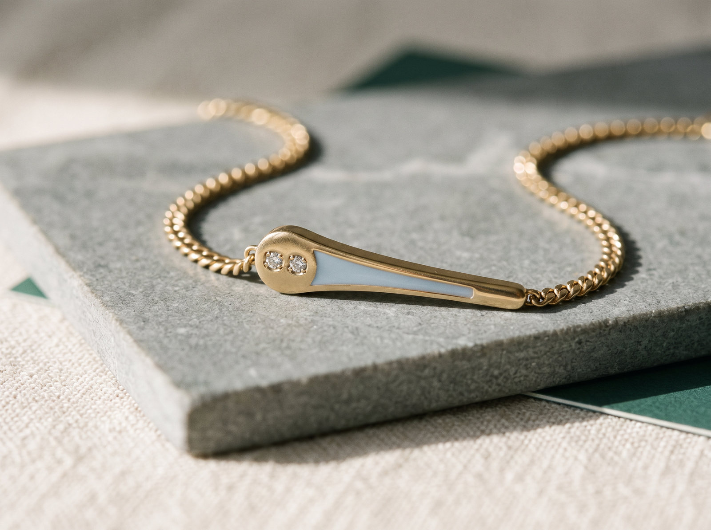
Etsy metni
Başlık 89/140
14K Gold Comet Bracelet, Ice Blue Enamel, Lab Grown Sapphire, Cuban Chain, Celestial Gift
Etiketler (13)
14k gold bracelet, comet bracelet, ice blue enamel, enamel bracelet, lab grown sapphire, celestial jewelry, miami cuban chain, shooting star, vitreous enamel, christmas gift, gift for her, solid gold bracelet, station bracelet
Malzemeler
14k yellow gold, vitreous enamel, lab grown white sapphire, 14k gold miami cuban chain
Açıklama
One 14k gold comet on a 2.0 mm Miami Cuban chain, its tail inlaid with opaque ice-blue glass enamel and its head set with two lab grown white sapphires. A Christmas gift with a sky theme rather than a holiday one, so it is worn long after the season. THE PIECE One station 19 mm long with a slight arch along its length. The head is 5.0 mm wide; its front half is a flat platform 1.6 mm thick that holds the stones. The tail narrows from 3.0 mm at the head to 1.2 mm at the rounded tip. An enamel channel runs along the first 11 mm of the tail inside 0.7 mm gold walls, and the last 3 mm is plain polished gold. Miami Cuban chain 2.0 mm. GOLD WEIGHT 3.29 g of 14k gold, counting the station, chain, clasp, rings and tag. On the scale the finished bracelet weighs 3.31 g in total with the enamel and stones. Each piece is weighed after finishing and checked against this design weight. ENAMEL Kiln-fired vitreous enamel (glass), opaque ice-blue. It fills one narrowing channel along the comet tail. The enamel surface sits 0.1 mm below the gold edge, so the gold takes knocks first. Fired glass is hard but can chip under a sharp knock, so take the bracelet off for the gym and the pool, keep it away from chlorine and harsh chemicals, and clean the enamel with warm soapy water and a soft brush. STONES Two 1.5 mm round lab grown white sapphires, about 0.034 ct together, flush set side by side at the front of the head, level with the gold. Each sits over a small hole that lets light in and keeps the setting clean. LENGTH AND FIT 16.5 cm closed, plus a 2 cm extender with rings at 17.5 and 18.5 cm, so it fits 16.5-18.5 cm. It closes with a 9 mm lobster clasp, and the extender ends in a small tag stamped 14K. HOW IT IS MADE Made to order. The station is cast in zinc-free 14k gold in one piece with its chain rings, and the enamel cells are formed in the casting itself. There is no solder in the station: the enamel is fired three times, and every join is closed afterwards with a laser weld away from the enamel. The stones are set last, after the final firing. CARE Wipe the gold with a soft cloth. Store the bracelet on its own so harder pieces do not knock the enamel. No ultrasonic or steam cleaning. GIFTING Arrives in a gift box, ready to give. Made to order. The processing time is shown at checkout.
Atölye kartı
Kapali 16.5 + 2.0 cm. Istasyon 19.0 mm (bas O5.0 + kuyruk 14.0 mm); C-halkalarla eksen boyu 24.2 mm; R29 mm'ye on-egrili. Bas: on yarisi 1.6 mm DUZ tas platformu, arka yarisi kuyruga dogru 1.6 -> 1.4 mm egim (kubbe yok). Kuyruk 0-11 mm: genislik 3.0->2.3, kalinlik SABIT 1.4. Kuyruk 11-14 mm: genislik 2.3->1.2, kalinlik 1.4->1.0, uc R0.6. Kanal 11 mm, 1.2->0.9 genis, 0.55 derin. Taslar platformda +/-60 derece, merkezden 1.3 mm, aralarinda 0.75 mm. C-halka bosluk 1.1. Cuban 2.0 x 12.68 cm.
Bas + kuyruk + iki C-halka TEK PARCA; cinkosuz 14KY vakum dokum, R29 mm'ye on-egrili. Mine hucresi dokumde birakilir. Hicbir lehim yok. Tas yerleri basin duz on platformunda, kanaldan >=2.4 mm uzakta. C-halkalar pisirimden sonra zincir uc halkalarina kapatilip lazerle kaynaklanir (bastaki dikis mineden 3+ mm, kuyruk ucundaki kanal sonundan 3 mm).
Tezgâh sırası
- 1. CAD: hucreler DOKUMDE birakilir (oyma yok), taban fileto R0.2, tum yuzeylere +0.2 mm bitirme payi; C-halkalar 1.1 mm bosluklu (gecen zincir uc halkasi teli <= 1.0 mm + 0.1; tel capi tedarikciden yazili alinir); tas yerine yalniz 0.5 mm pilot cukur (delik pisirimden sonra delinir); R29 on-egri
- 2. Recine baski (yuksek cozunurluk DLP, dokulebilir recine) -> yatirim -> cinkosuz 'enamelable' 14K sari (Otto Frei 846-180 no-zinc master alloy esasli; dokumhaneden yazili Zn=0 sertifikasi + solidus/DSC degeri), vakum dokum
- 3. Yolluk kesimi, gozenek kontrolu (hucre tabanlari 10x lupla; gozenekli parca HURDA, mine altina gozenek girmez)
- 4. Tesviye: dis yuzlere on-cila; hucre tabanlari grafit/karbur frezle TEMIZLENIR (derinlik 0.55 olculur, fileto korunur); hamlac lehimi YOK
- 5. Yuzey zenginlestirme (depletion gilding) 4 dongu: ~593 C kiraz kirmizisi + %10 H2SO4 asitleme, durulama
- 6. Yag alma + saf su; buz mavisi opak mine (<=780 C'de olgunlasan kursunsuz yumusak opak mine (or. Soyer soft serisi), renk basina kupon) yas-dolgu kat 1 (hucre derinliginin ~%60'i)
- 7. Pisirim 1: 780 C, 60-75 sn, kalibre pirometre + termokupl, paslanmaz trivet
- 8. Kat 2 dolgu (kenarin hafif ustune kadar); Pisirim 2: 780 C, 60-75 sn
- 9. Tasla zimpara (alundum/elmas ped, su altinda): mine yuzeyi altin kenardan 0.10-0.15 mm ASAGIDA bitirilir, derinlik saatiyle olculur
- 10. Pisirim 3 (parlatma/flash): 770 C, 40-50 sn — toplam 3 pisirim (KANIT siniri 4)
- 11. Asitsiz oksit temizligi (sulfurik/nitrik banyo YOK): fiberglas firca + 3M radyal disk, mine bantla maskeli
- 12. Pilot cukurdan O0.8 alt delik del (bas on kenari); flush yuva frezesi (koni, rondist 0.02 mm bindirme)
- 13. 2 x 1.5 mm lab-grown tas SOGUK oturtma, el burnisheriyle kenar itme (mine maskeli; mine yaninda cekicli el aleti KULLANILMAZ)
- 14. C-halkalari zincir uc halkalarina gecir, yastikli fikstur icinde soguk kapat; dikisi lazerle kaynakla (mine Plasti-tac + parlak gumus siperle maskeli, dusuk guc, hava nozuluyla sogutma, dikis mine kenarindan >=1.5 mm)
- 15. Kopca grubu: lobster + 4 atlama halkasi + uzatma + plaket; halka dikisleri lazer kaynak (istasyondan uzakta)
- 16. Son cila: mine maskeli, keceli disk + rouge; ultrasonik/buhar YOK, ilik sabunlu su + yumusak firca
- 17. QC: tarti (altin+mine+tas) vs gram kurulumu +/-3%, istasyon boyu 19.0 mm, bas platformu 1.6 mm, mine 10x igne deligi/kabarcik taramasi, mine-kenar derinligi min 0.10 mm, C-halka bosluk 1.1 (Cuban uc halkasi teli <=1.0), 17.5/18.5 uzunluk, kopca 2 kg cekme testi, 250px kucuk resim
Malzeme listesi
- Dokum alasimi cinkosuz 14KY (yazili Zn=0 sertifikasi + solidus/DSC): bitmis istasyon(lar) + dokum C-halkalar 1.020 g x1.15 = 1.17 g
- Mine tozu: opak buz mavisi, <=780 C'de olgunlasan kursunsuz yumusak opak mine (or. Soyer soft serisi), renk basina kupon; dolu 13 mg, tuketim ~40 mg
- Taslar: 2 x 1.5 mm lab-grown beyaz safir, toplam ~0.034 ct
- Zincir: Miami Cuban 2.0 mm 14K solid 12.68 cm = 1.51 g (KILITSIZ g/cm; numune tartisi sart)
- Lobster kopca 14KY 9x5mm, 1 adet: 0.30 g (TAHMIN — tedarikci numunesi tartilacak; zincir kilitsiz alindigi icin yalniz burada sayilir)
- Atlama halkasi 14KY 1.0mm tel, ID1.5/OD3.5, 4 adet (kilit, 16.5 / 17.5 / 18.5 cm halkalari): 4 x 0.081 = 0.32 g
- Uzatma zinciri 14KY solid cable 1.2mm, 2 x 6.5mm = 1.3 cm: 0.059 g (kilitsiz g/cm 0.0456)
- Damga plaketi 14KY 4.0x2.5x0.6mm (14K + tescilli marka, lazer kazima): 0.073 g
- TOPLAM ALTIN 3.29 g (bant 3.2-3.9); terazide toplam 3.31 g. Gram kurulumu: Bas diski O5.0: on yari 1.6 duz tas platformu, arka yari 1.6->1.4 egim (ort 1.5): 9.82mm2 x1.6 + 9.82mm2 x1.5 = 30.43mm3 x0.01307 = 0.398 g | Kuyruk 14 mm: 0-11mm 3.0->2.3 x1.4 + 11-14mm 2.3->1.2 x1.4->1.0: 29.15*1.4 + 5.25*1.2 = 47.11mm3 x0.01307 = 0.616 g | Mine kanali (cikarma) 11mm x 1.2->0.9 x0.55: 11.55mm2 x0.55 = -6.35mm3 x0.01307 = -0.083 g | 2 tas yuvasi + O0.8 delik (cikarma): -1.62mm3 x0.01307 = -0.021 g | 2 x dokum C-halka (1.0mm kesit, ID1.2; gercek torus, gomulme dusulmus): 4.2mm3 x2 x0.01307 = 0.110 g | Zincir cuban20, 12.68 cm (KILITSIZ g/cm secildi, kilit ayrica sayiliyor): Miami Cuban 2.0 kilitsiz 0.1194 g/cm (0.128 Etsy kilit dahil toplam x 0.933) x 12.68cm = 1.514 g | Lobster 14KY 9x5mm (satin alma, TAHMIN; zincir g/cm KILITSIZ alindigi icin kilit burada BIR kez sayilir): tedarikci tartisi bekleniyor = 0.300 g | 4 x atlama halkasi 1.0mm tel ID1.5 (kilit, 16.5, 17.5, 18.5): 2*pi^2*1.25*0.5^2=6.17mm3 x4 x0.01307 = 0.322 g | Uzatma zinciri cable 1.2mm 2x6.5mm (kilitsiz g/cm): 0.0456 g/cm x1.3cm = 0.059 g | Damga plaketi 4.0x2.5x0.6 (14K+tescilli marka): 5.57mm3 x0.01307 = 0.073 g
Arıza modları
| Arıza | Tasarım nasıl önlüyor |
|---|---|
| Kanal duvarinin cokmesi/sarkmasi (14K solidus payi dar) | Duvar kanal boyunca >=0.70 mm (kuyruk genisligi = kanal + 1.40); pisirim 780 C (KANIT ust siniri 800), termokupl kalibre |
| Kanal sonunda taban incelmesi -> catlama (orijinalde gizli hata) | Kuyruk kalinligi kanal boyunca SABIT 1.4; incelme yalniz kanal bittikten sonra; taban her noktada 0.85 |
| Igne deligi/kabarcik (Zn, gozenek) | Cinkosuz sertifikali alasim + vakum dokum + 4 dongu yuzey zenginlestirme; gozenekli parca hurda |
| Darbede mine kenarinin kirilmasi | Mine yuzeyi altin kenardan 0.10-0.15 mm asagida; on-egrili disbukey yuzeyde mine basma altinda |
| Tas oturturken komsu minenin catlamasi | Taslar kanaldan >=2.4 mm uzakta, el burnisheri, mine maskeli; taslar son adimda |
| Az pisirme (sekerimsi/mat mine) — 780 C orta-isi minenin olgunlasma araliginin altinda | BOM'da <=780 C'de olgunlasan yumusak mine; renk basina kupon seri oncesi kapidir |
| Tas yerinde kubbe kenarinin incelmesi | Basin on yarisi 1.6 mm duz platform; kubbe kaldirildi |
Tolerans
| Kural | Değer | |
|---|---|---|
| L2 hucre derinligi 0.5-0.6 | 0.55 mm | ✓ |
| L2 hucre genisligi >=0.7 | min 0.9 mm | ✓ |
| L2 derinlik <= 2 x genislik | 0.55/0.9 = 0.61 | ✓ |
| L2 taban >=0.8 | 1.4-0.55 = 0.85 mm (kanal boyunca sabit) | ✓ |
| L2 cevre altin duvar >=0.70 | 0.90 (bas) -> 0.70 (kanal sonu) | ✓ |
| L2 mine yuzeyi kenardan >=0.1 asagida | 0.10-0.15 mm | ✓ |
| L2 hucre icinde kabartma yok | duz taban, R0.2 fileto | ✓ |
| L2 palet + renk sayisi <=2 | 1 renk: buz mavisi | ✓ |
| L2/KANIT pisirim <=4, 760-790 C | 3 pisirim, 770-780 C | ✓ |
| L3 ilk pisirimden sonra hamlac lehimi yok | lehim yok; C-halka lazerle, mineden >=3 mm | ✓ |
| L4 ev sahibi kalinligi >=1.5 (1.5 mm tas) | 1.6 mm duz on platform | ✓ |
| L4 yanal duvar >=0.35 | 0.45 mm (bas kenarina) | ✓ |
| L4 taslar arasi >=0.5 (KANIT Ganoksin) | 0.75 mm | ✓ |
| L4 tas-mine mesafesi >=0.5 (KANIT 0.6-0.8) | >=2.4 mm | ✓ |
| L4 tas pisirimden sonra, <=7, pave yok | 2 tas, soguk | ✓ |
| L5 yapisal >=0.8 | kuyruk ucu 1.2 x 1.0 mm | ✓ |
| L5 tasiyici halka/kulp kesiti >=1.0 mm | dokum C-halka 1.0 mm kesit, hacim 4.2 mm3 (gercek torus, gomulme dusulmus); atlama halkalari 1.0 mm tel | ✓ |
| L5 aciklik >=0.6 mm, derinlik <=2 x genislik | C-halka ID 1.2 mm / derinlik 1.0 mm; dokum bosluk 1.1 mm | ✓ |
| L5 uc R>=0.4 | kuyruk ucu R0.6 | ✓ |
| L6 hollow yok (bileklik) | istasyon dolu dokum; zincir 14K solid | ✓ |
| L7 altin gram bandi 3.2-3.9 g (zincir+bulgu dahil) | 3.29 g (zincir KILITSIZ g/cm, kilit bir kez sayildi; C-halka 4.2 mm3) | ✓ |
| L8 uzunluk 16.5 + 2.0 cm uzatma, halkalar 17.5/18.5, gram 18.5 cm'de | 16.5 cm kapali + 2 x 1.0 cm uzatma segmenti; gram_build 18.5 cm'yi iceriyor | ✓ |
| L12 tek kahraman | tek kuyruklu yildiz, buz mavisi kuyruk | ✓ |
| Tasiyici yuk yolu (halka koku dahil) her yerde >=1.0 mm kesit | bas kokunde disk 1.6 kalin; kuyruk ucu kokunde 1.2 genis x 1.0 kalin; C-halka 1.0 kesit | ✓ |
| C-halka boslugu >= gecen tel + 0.1 mm | dokum bosluk 1.1 mm >= gecen tel 1.00 + 0.1 (tel capi tedarikci spesifikasyonuyla kilitlenir) | ✓ |
| Mine olgunlasma sicakligi <= pisirim sicakligi | BOM: <=780 C'de olgunlasan kursunsuz yumusak opak mine (or. Soyer soft serisi), renk basina kupon; kupon sonucu seri oncesi kapidir | ✓ |
| Istasyon boyu tek deger, bilesen toplamiyla tutarli | 5.0 bas + 14.0 kuyruk = 19.0 mm; eksen 24.2; zincir 15.10 - 2.42 = 12.68 cm | ✓ |
Görsel promptları (16)
- 01Hero / arama küçük resmi: tek ürün, marka natürmortu, 4:3.Referanssız
Quiet luxury editorial still-life product photography. Warm ivory linen ground, honed grey stone slab, a sliver of deep jade-green matte card. Soft directional window light from upper left, long soft shadow, shallow depth of field. Solid yellow gold with warm antique tone. Restrained heirloom mood. No text, no logo, no glitter, no Christmas decoration. The piece: 14K yellow gold bracelet on a 2.0 mm Miami Cuban chain, 16.5 cm long, 2.0 cm extender. One comet-shaped gold station, 19 mm long with a slight lengthwise arch: a round gold head 5.0 mm wide holding two 1.5 mm round lab-grown white sapphires flush set side by side near its front edge, and a straight tail narrowing from 3.0 mm to a rounded 1.2 mm end. The first 11 mm of the tail carries one narrowing inlaid channel of opaque ice-blue enamel (a soft pale powder blue with a grey cast) between 0.7 mm polished gold walls; the last 3 mm is plain gold. 9 mm lobster clasp. The stones are exactly these and no others: two 1.5 mm round lab-grown white sapphires flush-set side by side at the front edge of the comet head. No other stone and no empty setting anywhere on the piece. The only colour on the piece is opaque ice-blue enamel filling the single narrowing channel along the first 11 mm of the comet tail; every other surface is yellow gold. The decorated centre of the bracelet lies face up at the centre of the honed grey stone slab, close to the camera; the chain runs away from it on both sides in a soft curve and leaves the frame at the left and right edges; the clasp is out of frame. Seen from about 30 degrees above with a 100 mm macro lens, the decorated part in razor-sharp focus, filling about a third of the frame width, with the chain softly out of focus toward the frame edges. No people and no hands.
Alt metin 14K gold comet bracelet with an ice-blue enamel tail and two lab-grown white sapphires on a Miami Cuban chain
- 02Takılı hâli: ölçek ve duruş. Hero'dan sonra dönüşümü en çok etkileyen kare.Referans: hero kırpımı
Quiet luxury editorial photography in warm ivory, stone grey and deep jade-green tones, soft directional window light from the upper left, true colour, fine film grain, no heavy retouching. No text, no logo, no watermark, no glitter. The attached reference image is a crop of this exact piece: keep its shape, proportions, gold colour, enamel colours and stones exactly as in the reference. The piece: 14K yellow gold bracelet on a 2.0 mm Miami Cuban chain, 16.5 cm long, 2.0 cm extender. One comet-shaped gold station, 19 mm long with a slight lengthwise arch: a round gold head 5.0 mm wide holding two 1.5 mm round lab-grown white sapphires flush set side by side near its front edge, and a straight tail narrowing from 3.0 mm to a rounded 1.2 mm end. The first 11 mm of the tail carries one narrowing inlaid channel of opaque ice-blue enamel (a soft pale powder blue with a grey cast) between 0.7 mm polished gold walls; the last 3 mm is plain gold. 9 mm lobster clasp. The stones are exactly these and no others: two 1.5 mm round lab-grown white sapphires flush-set side by side at the front edge of the comet head. No other stone and no empty setting anywhere on the piece. The only colour on the piece is opaque ice-blue enamel filling the single narrowing channel along the first 11 mm of the comet tail; every other surface is yellow gold. Worn on a woman's left wrist, the forearm resting on a folded warm-ivory wool knit, hand relaxed and open; the stations sit face up on the top of the wrist; it is the only jewellery in the image, no watch and no rings; true to scale, the main element measures about 19 mm across; anatomically correct hands with five fingers, short natural unpolished nails.
Alt metin 14K gold comet bracelet with an ice-blue enamel tail and two lab-grown white sapphires on a Miami Cuban chain, worn
- 03Makro işçilik: fiyatı meşrulaştıran detay (mine yüzeyi, flush taş, kenar bitimi).Referans: hero kırpımı
Quiet luxury editorial photography in warm ivory, stone grey and deep jade-green tones, soft directional window light from the upper left, true colour, fine film grain, no heavy retouching. No text, no logo, no watermark, no glitter. The attached reference image is a crop of this exact piece: keep its shape, proportions, gold colour, enamel colours and stones exactly as in the reference. The piece: 14K yellow gold bracelet on a 2.0 mm Miami Cuban chain, 16.5 cm long, 2.0 cm extender. One comet-shaped gold station, 19 mm long with a slight lengthwise arch: a round gold head 5.0 mm wide holding two 1.5 mm round lab-grown white sapphires flush set side by side near its front edge, and a straight tail narrowing from 3.0 mm to a rounded 1.2 mm end. The first 11 mm of the tail carries one narrowing inlaid channel of opaque ice-blue enamel (a soft pale powder blue with a grey cast) between 0.7 mm polished gold walls; the last 3 mm is plain gold. 9 mm lobster clasp. The stones are exactly these and no others: two 1.5 mm round lab-grown white sapphires flush-set side by side at the front edge of the comet head. No other stone and no empty setting anywhere on the piece. The only colour on the piece is opaque ice-blue enamel filling the single narrowing channel along the first 11 mm of the comet tail; every other surface is yellow gold. Extreme close-up macro, 100 mm macro lens: The comet head with its two flush-set lab-grown white sapphires and the start of the narrowing opaque ice-blue enamel channel between polished gold walls. The rest of the piece falls away into soft focus on warm-ivory linen.
Alt metin Close-up of the comet head with two flush-set lab-grown sapphires and the ice-blue enamel tail
- 04Elde ölçek: mm'yi parmak ucuna çevirir, 'beklediğimden küçük' iadesini önler.Referans: hero kırpımı
Quiet luxury editorial photography in warm ivory, stone grey and deep jade-green tones, soft directional window light from the upper left, true colour, fine film grain, no heavy retouching. No text, no logo, no watermark, no glitter. The attached reference image is a crop of this exact piece: keep its shape, proportions, gold colour, enamel colours and stones exactly as in the reference. The piece: 14K yellow gold bracelet on a 2.0 mm Miami Cuban chain, 16.5 cm long, 2.0 cm extender. One comet-shaped gold station, 19 mm long with a slight lengthwise arch: a round gold head 5.0 mm wide holding two 1.5 mm round lab-grown white sapphires flush set side by side near its front edge, and a straight tail narrowing from 3.0 mm to a rounded 1.2 mm end. The first 11 mm of the tail carries one narrowing inlaid channel of opaque ice-blue enamel (a soft pale powder blue with a grey cast) between 0.7 mm polished gold walls; the last 3 mm is plain gold. 9 mm lobster clasp. The stones are exactly these and no others: two 1.5 mm round lab-grown white sapphires flush-set side by side at the front edge of the comet head. No other stone and no empty setting anywhere on the piece. The only colour on the piece is opaque ice-blue enamel filling the single narrowing channel along the first 11 mm of the comet tail; every other surface is yellow gold. Close-up for scale against a plain warm-ivory background thrown softly out of focus: the bracelet held up between the thumb and index finger of a woman's hand by its clasp, the chain hanging straight down so every station faces the camera; true to scale, the main element measures about 19 mm across, a fingertip is about 16 mm wide; it is the only jewellery in the image; anatomically correct hands with five fingers, short natural unpolished nails.
Alt metin 14K gold comet bracelet with an ice-blue enamel tail and two lab-grown white sapphires on a Miami Cuban chain, held between fingers for scale
- 05Arka ve bulgular: dolu gövde, kilit / çivi / iğne; sağlamlık sorusunu cevaplar.Referans: hero kırpımı
Quiet luxury editorial photography in warm ivory, stone grey and deep jade-green tones, soft directional window light from the upper left, true colour, fine film grain, no heavy retouching. No text, no logo, no watermark, no glitter. The attached reference image is a crop of this exact piece: keep its shape, proportions, gold colour, enamel colours and stones exactly as in the reference. The piece: 14K yellow gold bracelet on a 2.0 mm Miami Cuban chain, 16.5 cm long, 2.0 cm extender. One comet-shaped gold station, 19 mm long with a slight lengthwise arch: a round gold head 5.0 mm wide holding two 1.5 mm round lab-grown white sapphires flush set side by side near its front edge, and a straight tail narrowing from 3.0 mm to a rounded 1.2 mm end. The first 11 mm of the tail carries one narrowing inlaid channel of opaque ice-blue enamel (a soft pale powder blue with a grey cast) between 0.7 mm polished gold walls; the last 3 mm is plain gold. 9 mm lobster clasp. The stones are exactly these and no others: two 1.5 mm round lab-grown white sapphires flush-set side by side at the front edge of the comet head. No other stone and no empty setting anywhere on the piece. The only colour on the piece is opaque ice-blue enamel filling the single narrowing channel along the first 11 mm of the comet tail; every other surface is yellow gold. The back of the piece, top-down on honed grey stone: A flat solid polished gold back under the head and tail, with two small round holes under the stones.
Alt metin Back of the bracelet showing the flat solid gold back of the comet with holes under the stones
- 06Tam boy / çift / mekanizma: uzunluk, ayar ve ne geldiğini tek karede gösterir.Referans: hero kırpımı
Quiet luxury editorial photography in warm ivory, stone grey and deep jade-green tones, soft directional window light from the upper left, true colour, fine film grain, no heavy retouching. No text, no logo, no watermark, no glitter. The attached reference image is a crop of this exact piece: keep its shape, proportions, gold colour, enamel colours and stones exactly as in the reference. The piece: 14K yellow gold bracelet on a 2.0 mm Miami Cuban chain, 16.5 cm long, 2.0 cm extender. One comet-shaped gold station, 19 mm long with a slight lengthwise arch: a round gold head 5.0 mm wide holding two 1.5 mm round lab-grown white sapphires flush set side by side near its front edge, and a straight tail narrowing from 3.0 mm to a rounded 1.2 mm end. The first 11 mm of the tail carries one narrowing inlaid channel of opaque ice-blue enamel (a soft pale powder blue with a grey cast) between 0.7 mm polished gold walls; the last 3 mm is plain gold. 9 mm lobster clasp. The stones are exactly these and no others: two 1.5 mm round lab-grown white sapphires flush-set side by side at the front edge of the comet head. No other stone and no empty setting anywhere on the piece. The only colour on the piece is opaque ice-blue enamel filling the single narrowing channel along the first 11 mm of the comet tail; every other surface is yellow gold. The whole bracelet laid out in one straight horizontal line on warm-ivory linen, top-down, from the lobster clasp at one end to the extender chain at the other, every station face up and the extender rings visible.
Alt metin 14K gold comet bracelet with an ice-blue enamel tail and two lab-grown white sapphires on a Miami Cuban chain, full length
- 07Yan profil: kalınlık ve kütle, düz baskı değil gerçek altın olduğunu gösterir.Referans: hero kırpımı
Quiet luxury editorial photography in warm ivory, stone grey and deep jade-green tones, soft directional window light from the upper left, true colour, fine film grain, no heavy retouching. No text, no logo, no watermark, no glitter. The attached reference image is a crop of this exact piece: keep its shape, proportions, gold colour, enamel colours and stones exactly as in the reference. The piece: 14K yellow gold bracelet on a 2.0 mm Miami Cuban chain, 16.5 cm long, 2.0 cm extender. One comet-shaped gold station, 19 mm long with a slight lengthwise arch: a round gold head 5.0 mm wide holding two 1.5 mm round lab-grown white sapphires flush set side by side near its front edge, and a straight tail narrowing from 3.0 mm to a rounded 1.2 mm end. The first 11 mm of the tail carries one narrowing inlaid channel of opaque ice-blue enamel (a soft pale powder blue with a grey cast) between 0.7 mm polished gold walls; the last 3 mm is plain gold. 9 mm lobster clasp. The stones are exactly these and no others: two 1.5 mm round lab-grown white sapphires flush-set side by side at the front edge of the comet head. No other stone and no empty setting anywhere on the piece. The only colour on the piece is opaque ice-blue enamel filling the single narrowing channel along the first 11 mm of the comet tail; every other surface is yellow gold. Side profile at eye level on honed grey stone, the camera level with the piece: Side profile: the head 1.6 mm thick at the front, the tail 1.4 mm thick along the enamel and thinning to 1.0 mm at the tip.
Alt metin Side profile of the bracelet showing its thickness
- 08Kış yaşam stili: sezonu Noel dekoru olmadan kurar.Referans: hero kırpımı
Quiet luxury editorial photography in warm ivory, stone grey and deep jade-green tones, soft directional window light from the upper left, true colour, fine film grain, no heavy retouching. No text, no logo, no watermark, no glitter. The attached reference image is a crop of this exact piece: keep its shape, proportions, gold colour, enamel colours and stones exactly as in the reference. The piece: 14K yellow gold bracelet on a 2.0 mm Miami Cuban chain, 16.5 cm long, 2.0 cm extender. One comet-shaped gold station, 19 mm long with a slight lengthwise arch: a round gold head 5.0 mm wide holding two 1.5 mm round lab-grown white sapphires flush set side by side near its front edge, and a straight tail narrowing from 3.0 mm to a rounded 1.2 mm end. The first 11 mm of the tail carries one narrowing inlaid channel of opaque ice-blue enamel (a soft pale powder blue with a grey cast) between 0.7 mm polished gold walls; the last 3 mm is plain gold. 9 mm lobster clasp. The stones are exactly these and no others: two 1.5 mm round lab-grown white sapphires flush-set side by side at the front edge of the comet head. No other stone and no empty setting anywhere on the piece. The only colour on the piece is opaque ice-blue enamel filling the single narrowing channel along the first 11 mm of the comet tail; every other surface is yellow gold. Morning window light: a woman's left wrist wearing the bracelet rests on the cuff of an ivory cable-knit sweater beside a small stoneware cup of black coffee on a pale oak table; it is the only jewellery in the image; anatomically correct hands with five fingers, short natural unpolished nails.
Alt metin 14K gold comet bracelet with an ice-blue enamel tail and two lab-grown white sapphires on a Miami Cuban chain, styled with winter knitwear
- 09Hediye kutusu: Noel alıcısının ilk sorusu, hediyeye hazır mı?Referans: hero kırpımı
Quiet luxury editorial photography in warm ivory, stone grey and deep jade-green tones, soft directional window light from the upper left, true colour, fine film grain, no heavy retouching. No text, no logo, no watermark, no glitter. The attached reference image is a crop of this exact piece: keep its shape, proportions, gold colour, enamel colours and stones exactly as in the reference. The piece: 14K yellow gold bracelet on a 2.0 mm Miami Cuban chain, 16.5 cm long, 2.0 cm extender. One comet-shaped gold station, 19 mm long with a slight lengthwise arch: a round gold head 5.0 mm wide holding two 1.5 mm round lab-grown white sapphires flush set side by side near its front edge, and a straight tail narrowing from 3.0 mm to a rounded 1.2 mm end. The first 11 mm of the tail carries one narrowing inlaid channel of opaque ice-blue enamel (a soft pale powder blue with a grey cast) between 0.7 mm polished gold walls; the last 3 mm is plain gold. 9 mm lobster clasp. The stones are exactly these and no others: two 1.5 mm round lab-grown white sapphires flush-set side by side at the front edge of the comet head. No other stone and no empty setting anywhere on the piece. The only colour on the piece is opaque ice-blue enamel filling the single narrowing channel along the first 11 mm of the comet tail; every other surface is yellow gold. Top-down: the bracelet coiled loosely inside a small open square gift box in plain warm-ivory card with a soft ivory insert, the lid set beside it, a length of narrow deep jade-green ribbon untied beside the box, on honed grey stone. No branding, no printed pattern, no tissue paper, no Christmas decoration, exactly one box.
Alt metin 14K gold comet bracelet with an ice-blue enamel tail and two lab-grown white sapphires on a Miami Cuban chain in a gift box
- 10Gerçek renk: nötr gün ışığında altın ve mine rengi; renk kaynaklı iadeyi azaltır.Referans: hero kırpımı
Quiet luxury editorial photography in warm ivory, stone grey and deep jade-green tones, soft directional window light from the upper left, true colour, fine film grain, no heavy retouching. No text, no logo, no watermark, no glitter. The attached reference image is a crop of this exact piece: keep its shape, proportions, gold colour, enamel colours and stones exactly as in the reference. The piece: 14K yellow gold bracelet on a 2.0 mm Miami Cuban chain, 16.5 cm long, 2.0 cm extender. One comet-shaped gold station, 19 mm long with a slight lengthwise arch: a round gold head 5.0 mm wide holding two 1.5 mm round lab-grown white sapphires flush set side by side near its front edge, and a straight tail narrowing from 3.0 mm to a rounded 1.2 mm end. The first 11 mm of the tail carries one narrowing inlaid channel of opaque ice-blue enamel (a soft pale powder blue with a grey cast) between 0.7 mm polished gold walls; the last 3 mm is plain gold. 9 mm lobster clasp. The stones are exactly these and no others: two 1.5 mm round lab-grown white sapphires flush-set side by side at the front edge of the comet head. No other stone and no empty setting anywhere on the piece. The only colour on the piece is opaque ice-blue enamel filling the single narrowing channel along the first 11 mm of the comet tail; every other surface is yellow gold. Colour-accurate reference shot: the piece alone, top-down on plain matte white-ivory paper under even neutral north daylight, no shadow drama, no props, the piece centred and filling half the frame.
Alt metin 14K gold comet bracelet with an ice-blue enamel tail and two lab-grown white sapphires on a Miami Cuban chain in neutral daylight, true colour
- 11Ölçü grafiği tabanı: sağ üçte bir boş; mm etiketleri sonra eklenir.Referans: hero kırpımı
Quiet luxury editorial photography in warm ivory, stone grey and deep jade-green tones, soft directional window light from the upper left, true colour, fine film grain, no heavy retouching. No text, no logo, no watermark, no glitter. The attached reference image is a crop of this exact piece: keep its shape, proportions, gold colour, enamel colours and stones exactly as in the reference. The piece: 14K yellow gold bracelet on a 2.0 mm Miami Cuban chain, 16.5 cm long, 2.0 cm extender. One comet-shaped gold station, 19 mm long with a slight lengthwise arch: a round gold head 5.0 mm wide holding two 1.5 mm round lab-grown white sapphires flush set side by side near its front edge, and a straight tail narrowing from 3.0 mm to a rounded 1.2 mm end. The first 11 mm of the tail carries one narrowing inlaid channel of opaque ice-blue enamel (a soft pale powder blue with a grey cast) between 0.7 mm polished gold walls; the last 3 mm is plain gold. 9 mm lobster clasp. The stones are exactly these and no others: two 1.5 mm round lab-grown white sapphires flush-set side by side at the front edge of the comet head. No other stone and no empty setting anywhere on the piece. The only colour on the piece is opaque ice-blue enamel filling the single narrowing channel along the first 11 mm of the comet tail; every other surface is yellow gold. The piece alone, top-down on plain warm-ivory paper, placed in the left two thirds of the frame; the right third is empty paper for dimension labels to be added later; even soft light, no props.
Alt metin 14K gold comet bracelet with an ice-blue enamel tail and two lab-grown white sapphires on a Miami Cuban chain with space for dimensions
- 12El işçiliği: siparişe üretim hikâyesi, tezgâhta parça.Referans: hero kırpımı
Quiet luxury editorial photography in warm ivory, stone grey and deep jade-green tones, soft directional window light from the upper left, true colour, fine film grain, no heavy retouching. No text, no logo, no watermark, no glitter. The attached reference image is a crop of this exact piece: keep its shape, proportions, gold colour, enamel colours and stones exactly as in the reference. The piece: 14K yellow gold bracelet on a 2.0 mm Miami Cuban chain, 16.5 cm long, 2.0 cm extender. One comet-shaped gold station, 19 mm long with a slight lengthwise arch: a round gold head 5.0 mm wide holding two 1.5 mm round lab-grown white sapphires flush set side by side near its front edge, and a straight tail narrowing from 3.0 mm to a rounded 1.2 mm end. The first 11 mm of the tail carries one narrowing inlaid channel of opaque ice-blue enamel (a soft pale powder blue with a grey cast) between 0.7 mm polished gold walls; the last 3 mm is plain gold. 9 mm lobster clasp. The stones are exactly these and no others: two 1.5 mm round lab-grown white sapphires flush-set side by side at the front edge of the comet head. No other stone and no empty setting anywhere on the piece. The only colour on the piece is opaque ice-blue enamel filling the single narrowing channel along the first 11 mm of the comet tail; every other surface is yellow gold. The finished piece lying on a worn wooden jeweller's bench pin beside a small porcelain dish of ice-blue enamel powder, a fine sable brush and a pair of brass tweezers, warm lamp light, shallow depth of field, the piece in sharp focus; no hands.
Alt metin 14K gold comet bracelet with an ice-blue enamel tail and two lab-grown white sapphires on a Miami Cuban chain on a jeweller's bench
- 13Motifin anlamı: sol üçte bir boş; sembol hikâyesi metni sonra eklenir.Referans: hero kırpımı
Quiet luxury editorial photography in warm ivory, stone grey and deep jade-green tones, soft directional window light from the upper left, true colour, fine film grain, no heavy retouching. No text, no logo, no watermark, no glitter. The attached reference image is a crop of this exact piece: keep its shape, proportions, gold colour, enamel colours and stones exactly as in the reference. The piece: 14K yellow gold bracelet on a 2.0 mm Miami Cuban chain, 16.5 cm long, 2.0 cm extender. One comet-shaped gold station, 19 mm long with a slight lengthwise arch: a round gold head 5.0 mm wide holding two 1.5 mm round lab-grown white sapphires flush set side by side near its front edge, and a straight tail narrowing from 3.0 mm to a rounded 1.2 mm end. The first 11 mm of the tail carries one narrowing inlaid channel of opaque ice-blue enamel (a soft pale powder blue with a grey cast) between 0.7 mm polished gold walls; the last 3 mm is plain gold. 9 mm lobster clasp. The stones are exactly these and no others: two 1.5 mm round lab-grown white sapphires flush-set side by side at the front edge of the comet head. No other stone and no empty setting anywhere on the piece. The only colour on the piece is opaque ice-blue enamel filling the single narrowing channel along the first 11 mm of the comet tail; every other surface is yellow gold. The piece alone, top-down on a deep jade-green matte card, placed in the right two thirds of the frame; the left third is empty card for a caption to be added later; soft directional light.
Alt metin 14K gold comet bracelet with an ice-blue enamel tail and two lab-grown white sapphires on a Miami Cuban chain on a deep green card
- 14Yıl boyu takılır: 'yalnız Noel' itirazını kırar.Referans: hero kırpımı
Quiet luxury editorial photography in warm ivory, stone grey and deep jade-green tones, soft directional window light from the upper left, true colour, fine film grain, no heavy retouching. No text, no logo, no watermark, no glitter. The attached reference image is a crop of this exact piece: keep its shape, proportions, gold colour, enamel colours and stones exactly as in the reference. The piece: 14K yellow gold bracelet on a 2.0 mm Miami Cuban chain, 16.5 cm long, 2.0 cm extender. One comet-shaped gold station, 19 mm long with a slight lengthwise arch: a round gold head 5.0 mm wide holding two 1.5 mm round lab-grown white sapphires flush set side by side near its front edge, and a straight tail narrowing from 3.0 mm to a rounded 1.2 mm end. The first 11 mm of the tail carries one narrowing inlaid channel of opaque ice-blue enamel (a soft pale powder blue with a grey cast) between 0.7 mm polished gold walls; the last 3 mm is plain gold. 9 mm lobster clasp. The stones are exactly these and no others: two 1.5 mm round lab-grown white sapphires flush-set side by side at the front edge of the comet head. No other stone and no empty setting anywhere on the piece. The only colour on the piece is opaque ice-blue enamel filling the single narrowing channel along the first 11 mm of the comet tail; every other surface is yellow gold. Everyday wear, no season: a woman's left wrist wearing the bracelet over a laptop keyboard in soft daylight, plain white cotton shirt cuff; only jewellery in the image; anatomically correct hands with five fingers, short natural unpolished nails.
Alt metin 14K gold comet bracelet with an ice-blue enamel tail and two lab-grown white sapphires on a Miami Cuban chain, everyday wear
- 15Hediye anı: duygu; Noel satın alma niyetine bağlar.Referans: hero kırpımı
Quiet luxury editorial photography in warm ivory, stone grey and deep jade-green tones, soft directional window light from the upper left, true colour, fine film grain, no heavy retouching. No text, no logo, no watermark, no glitter. The attached reference image is a crop of this exact piece: keep its shape, proportions, gold colour, enamel colours and stones exactly as in the reference. The piece: 14K yellow gold bracelet on a 2.0 mm Miami Cuban chain, 16.5 cm long, 2.0 cm extender. One comet-shaped gold station, 19 mm long with a slight lengthwise arch: a round gold head 5.0 mm wide holding two 1.5 mm round lab-grown white sapphires flush set side by side near its front edge, and a straight tail narrowing from 3.0 mm to a rounded 1.2 mm end. The first 11 mm of the tail carries one narrowing inlaid channel of opaque ice-blue enamel (a soft pale powder blue with a grey cast) between 0.7 mm polished gold walls; the last 3 mm is plain gold. 9 mm lobster clasp. The stones are exactly these and no others: two 1.5 mm round lab-grown white sapphires flush-set side by side at the front edge of the comet head. No other stone and no empty setting anywhere on the piece. The only colour on the piece is opaque ice-blue enamel filling the single narrowing channel along the first 11 mm of the comet tail; every other surface is yellow gold. A gift being given: two pairs of hands across a pale oak table, one pair holding out the small open warm-ivory gift box with the piece visible inside, the other reaching for it, soft warm window light, sleeves of ivory and grey knitwear; exactly one box and one piece of jewellery; anatomically correct hands with five fingers, short natural unpolished nails.
Alt metin 14K gold comet bracelet with an ice-blue enamel tail and two lab-grown white sapphires on a Miami Cuban chain given as a gift
- 16Mağaza ızgarası / Pinterest: koyu jade zeminde yüksek kontrast kare.Referans: hero kırpımı
Quiet luxury editorial photography in warm ivory, stone grey and deep jade-green tones, soft directional window light from the upper left, true colour, fine film grain, no heavy retouching. No text, no logo, no watermark, no glitter. The attached reference image is a crop of this exact piece: keep its shape, proportions, gold colour, enamel colours and stones exactly as in the reference. The piece: 14K yellow gold bracelet on a 2.0 mm Miami Cuban chain, 16.5 cm long, 2.0 cm extender. One comet-shaped gold station, 19 mm long with a slight lengthwise arch: a round gold head 5.0 mm wide holding two 1.5 mm round lab-grown white sapphires flush set side by side near its front edge, and a straight tail narrowing from 3.0 mm to a rounded 1.2 mm end. The first 11 mm of the tail carries one narrowing inlaid channel of opaque ice-blue enamel (a soft pale powder blue with a grey cast) between 0.7 mm polished gold walls; the last 3 mm is plain gold. 9 mm lobster clasp. The stones are exactly these and no others: two 1.5 mm round lab-grown white sapphires flush-set side by side at the front edge of the comet head. No other stone and no empty setting anywhere on the piece. The only colour on the piece is opaque ice-blue enamel filling the single narrowing channel along the first 11 mm of the comet tail; every other surface is yellow gold. Top-down flat lay of the piece centred on a deep jade-green matte card with a narrow border of warm-ivory linen at the top edge, crisp soft light, the piece filling about 40 percent of the frame so a square crop keeps all of it.
Alt metin 14K gold comet bracelet with an ice-blue enamel tail and two lab-grown white sapphires on a Miami Cuban chain, flat lay on deep green
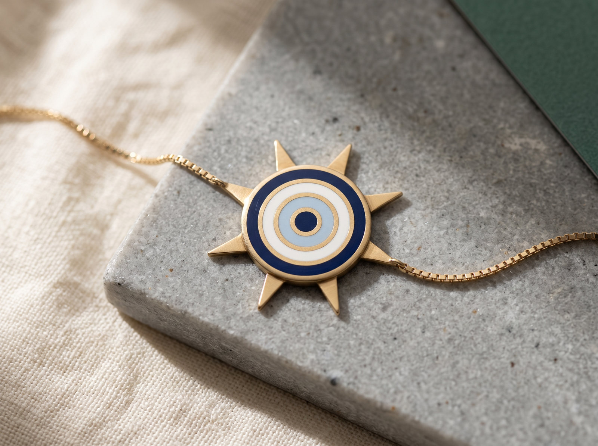
Etsy metni
Başlık 85/140
14K Gold Evil Eye Bracelet, Enamel Nazar Sunburst, Box Chain, Protection Gift for Her
Etiketler (13)
14k gold bracelet, evil eye bracelet, nazar bracelet, enamel bracelet, navy enamel, vitreous enamel, protection amulet, sunburst bracelet, box chain bracelet, talisman jewelry, christmas gift, gift for her, solid gold bracelet
Malzemeler
14k yellow gold, vitreous enamel, 14k gold box chain
Açıklama
A traditional evil eye in kiln-fired glass enamel, set in a 14k gold sunburst on a fine box chain. Given as a Christmas gift, it is a protection charm worn every day of the year. THE PIECE One flat round station 11.8 mm wide and 1.4 mm thick, with eight short gold rays that bring it to 15.0 mm across. The rays are 1.6 mm long with rounded 1.0 mm tips. The face carries four enamel cells divided by 0.7 mm gold walls inside a 0.7 mm gold border. The back is flat polished gold. Box chain 1.0 mm. GOLD WEIGHT 3.68 g of 14k gold, counting the station, chain, clasp, rings and tag. On the scale the finished bracelet weighs 3.74 g in total with the enamel. Each piece is weighed after finishing and checked against this design weight. ENAMEL Kiln-fired vitreous enamel (glass), opaque navy-blue, white and ice-blue. The colours follow the traditional nazar order, from the outside inward: a navy-blue ring, a white ring, an ice-blue ring and a navy-blue centre dot. The enamel surface sits 0.1 mm below the gold edge, so the gold takes knocks first. Fired glass is hard but can chip under a sharp knock, so take the bracelet off for the gym and the pool, keep it away from chlorine and harsh chemicals, and clean the enamel with warm soapy water and a soft brush. LENGTH AND FIT 16.5 cm closed, plus a 2 cm extender with rings at 17.5 and 18.5 cm, so it fits 16.5-18.5 cm. It closes with a 9 mm lobster clasp, and the extender ends in a small tag stamped 14K. HOW IT IS MADE Made to order. The station is cast in zinc-free 14k gold in one piece with its chain rings, and the enamel cells are formed in the casting itself. There is no solder in the station: the enamel is fired three times, and every join is closed afterwards with a laser weld away from the enamel. CARE Wipe the gold with a soft cloth. Store the bracelet on its own so harder pieces do not knock the enamel. No ultrasonic or steam cleaning. GIFTING Arrives in a gift box, ready to give. Made to order. The processing time is shown at checkout.
Atölye kartı
Kapali 16.5 + 2.0 cm. Disk O11.8 x 1.4 mm; 8 isin 2.4->1.0 mm genis, 1.6 mm boy, uc R0.5, 1.0 mm kalin; toplam O15.0; C-halkalarla eksen boyu 20.2 mm. Hucreler (GELENEKSEL nazar sirasi, distan iceri): dis bordur 0.70 (r5.2-5.9) | lacivert halka 0.7 (r4.5-5.2) | duvar 0.70 | beyaz halka 0.8 (r3.0-3.8) | duvar 0.70 | buz mavisi halka 0.7 (r1.6-2.3) | duvar 0.70 | lacivert gozbebegi O1.8 (r0-0.9). Hepsi 0.55 derin, taban 0.85. Arka DUZ. C-halkalar 3 ve 9 yonundeki isin uclarinda, bosluk 0.9. Box 1.0 x 13.08 cm.
Disk + 8 isin + iki C-halka (3 ve 9 yonundeki isin uclarinda, 1.0 x 1.0 kok) TEK PARCA; cinkosuz 14KY vakum dokum. 4 hucre dokumde birakilir. Lehim yok. Zincir pisirimden sonra takilir; C-halka dikisi mineden 2.5 mm uzakta (KANIT >=1.5).
Tezgâh sırası
- 1. CAD: hucreler DOKUMDE birakilir (oyma yok), taban fileto R0.2, tum yuzeylere +0.2 mm bitirme payi; C-halkalar 0.9 mm bosluklu (gecen zincir uc halkasi teli <= 0.8 mm + 0.1; tel capi tedarikciden yazili alinir); arka duz
- 2. Recine baski -> yatirim -> cinkosuz 'enamelable' 14K sari (Otto Frei 846-180 no-zinc master alloy esasli; yazili Zn=0 sertifikasi + solidus/DSC), vakum dokum
- 3. Yolluk kesimi, gozenek kontrolu (hucre tabanlari 10x lupla; gozenekli parca HURDA)
- 4. Tesviye: dis yuzlere on-cila; hucre tabanlari frezle TEMIZLENIR (derinlik 0.55 olculur, fileto korunur); hamlac lehimi YOK
- 5. Yuzey zenginlestirme 4 dongu: ~593 C + %10 H2SO4 asitleme, durulama
- 6. Yag alma + saf su; <=780 C'de olgunlasan kursunsuz yumusak opak mine (or. Soyer soft serisi), renk basina kupon: lacivert (dis halka + gozbebegi), beyaz (orta halka), buz mavisi (ic halka) ayni katta yas-dolgu kat 1 (~%60 derinlik)
- 7. Pisirim 1: 780 C, 60-75 sn, kalibre pirometre + termokupl
- 8. Kat 2 dolgu, uc renk birlikte (4 hucre); Pisirim 2: 780 C, 60-75 sn
- 9. Tasla zimpara (su altinda): mine yuzeyi altin kenardan 0.10-0.15 mm ASAGIDA, derinlik saatiyle olculur
- 10. Pisirim 3 (parlatma/flash): 770 C, 40-50 sn — toplam 3 pisirim (KANIT siniri 4)
- 11. Asitsiz oksit temizligi: fiberglas firca + 3M radyal disk, mine maskeli
- 12. C-halkalari box zincir uc halkalarina gecir, yastikli fiksturde soguk kapat; lazer kaynak (Plasti-tac + parlak gumus siper, dusuk guc, hava sogutma, dikis mineden 2.5 mm)
- 13. Kopca grubu: lobster + 4 atlama halkasi + uzatma + plaket; lazer kaynak
- 14. Son cila: mine maskeli; ultrasonik/buhar YOK
- 15. QC: tarti vs gram kurulumu +/-3%, renk sirasi distan iceri lacivert-beyaz-buz mavisi-lacivert kontrolu, mine 10x igne deligi/kabarcik ve beyaz kenar renk kontrolu, mine-kenar derinligi min 0.10, isin ucu 1.0 olcumu, 17.5/18.5 uzunluk, kopca 2 kg cekme, 250px kucuk resim
Malzeme listesi
- Dokum alasimi cinkosuz 14KY (yazili Zn=0 sertifikasi + solidus/DSC): bitmis istasyon(lar) + dokum C-halkalar 1.991 g x1.15 = 2.29 g
- Mine tozu (tuketim): <=780 C'de olgunlasan kursunsuz yumusak opak mine (or. Soyer soft serisi), renk basina kupon — opak lacivert ~70 mg, opak beyaz ~45 mg, opak buz mavisi ~30 mg (dolu toplam 56 mg); lacivert/beyaz icin Co/Pb/Cd SDS
- Tas: yok
- Zincir: box 1.0 mm 14K solid 13.08 cm = 0.93 g (KILITSIZ g/cm; numune tartisi sart)
- Lobster kopca 14KY 9x5mm, 1 adet: 0.30 g (TAHMIN — tedarikci numunesi tartilacak; zincir kilitsiz alindigi icin yalniz burada sayilir)
- Atlama halkasi 14KY 1.0mm tel, ID1.5/OD3.5, 4 adet (kilit, 16.5 / 17.5 / 18.5 cm halkalari): 4 x 0.081 = 0.32 g
- Uzatma zinciri 14KY solid cable 1.2mm, 2 x 6.5mm = 1.3 cm: 0.059 g (kilitsiz g/cm 0.0456)
- Damga plaketi 14KY 4.0x2.5x0.6mm (14K + tescilli marka, lazer kazima): 0.073 g
- TOPLAM ALTIN 3.68 g (bant 3.2-3.9); terazide toplam 3.74 g. Gram kurulumu: Nazar diski O11.8 x1.4: pi*5.9^2*1.4 = 153.10mm3 x0.01307 = 2.001 g | 4 hucre (cikarma) 0.55 derin: lacivert gozbebegi O1.8 + buz mavisi r1.6-2.3 + beyaz r3.0-3.8 + lacivert r4.5-5.2: 49.54mm2 x0.55 = -27.25mm3 x0.01307 = -0.356 g | 8 isin (2.4->1.0, 1.6 boy, R0.5 uc) x1.0: 8 x 2.263mm2 x1.0 = 18.10mm3 x0.01307 = 0.237 g | 2 x dokum C-halka (1.0mm kesit, ID1.2; gercek torus, gomulme dusulmus): 4.2mm3 x2 x0.01307 = 0.110 g | Zincir box10, 13.08 cm (KILITSIZ g/cm secildi, kilit ayrica sayiliyor): box 1.0 kilitsiz 0.0712 g/cm (0.0763 U.S. Jewels kilit dahil x 0.933) x 13.08cm = 0.931 g | Lobster 14KY 9x5mm (satin alma, TAHMIN; zincir g/cm KILITSIZ alindigi icin kilit burada BIR kez sayilir): tedarikci tartisi bekleniyor = 0.300 g | 4 x atlama halkasi 1.0mm tel ID1.5 (kilit, 16.5, 17.5, 18.5): 2*pi^2*1.25*0.5^2=6.17mm3 x4 x0.01307 = 0.322 g | Uzatma zinciri cable 1.2mm 2x6.5mm (kilitsiz g/cm): 0.0456 g/cm x1.3cm = 0.059 g | Damga plaketi 4.0x2.5x0.6 (14K+tescilli marka): 5.57mm3 x0.01307 = 0.073 g
Arıza modları
| Arıza | Tasarım nasıl önlüyor |
|---|---|
| Ince taban + iki yuzde mine ile carpilma/catlama | Arka cukur yok; taban her noktada 0.85; karsi-mine gereksiz |
| Duvarlarin pisirimde sarkmasi | Duvarlar 0.70; renkler ayni anda pisiriliyor, 770-780 C |
| Beyazin kenarda Cu oksitle grilesmesi | 4 dongu yuzey zenginlestirme; beyaz halka 0.8 mm; seri oncesi kupon testi |
| Ters renk sirasi (alici 'yanlis nazar' okur) | Geleneksel sira sabit: distan iceri lacivert, beyaz, buz mavisi, lacivert gozbebegi; QC'de kontrol |
| Tasiyici isin kokunde kopma (tavli parca, 0.8 mm uc) | Isin uclari 1.0 x 1.0 mm, R0.5; yuk yolu >=1.0 |
| 15 mm duz madalyonun bilekte kopru yapmasi | R29'da sagitta ~1.0 mm; istasyon iki C-halkayla mafsalli, rijit bant degil |
Tolerans
| Kural | Değer | |
|---|---|---|
| L2 derinlik 0.5-0.6 | 0.55 | ✓ |
| L2 genislik >=0.7 | min 0.7 (buz mavisi ve lacivert halka); beyaz 0.8; gozbebegi O1.8 | ✓ |
| L2 derinlik <=2x genislik | 0.55/0.7 = 0.79 | ✓ |
| L2 taban >=0.8 | 0.85 (cukur yok) | ✓ |
| L2 duvarlar >=0.70 | 0.70 hucre arasi ve bordur | ✓ |
| L2 mine kenardan >=0.1 asagida | 0.10 | ✓ |
| L2 palet: nazar istisnasi 3 renk | lacivert + beyaz (nazar istisnasi) + buz mavisi; geleneksel sira distan iceri lacivert-beyaz-buz mavisi-lacivert | ✓ |
| L2 seffaf yok | hepsi opak | ✓ |
| KANIT pisirim <=4, 760-790 C | 3 pisirim, 770-780 C | ✓ |
| L3 lehim yok, lazer >=1.5 mm | C-halka mineden 2.5 mm | ✓ |
| L5 dekoratif >=0.6 | isin ucu 1.0 | ✓ |
| L5 yapisal >=0.8 | isin 1.0, disk 1.4 | ✓ |
| L5 tasiyici halka/kulp kesiti >=1.0 mm | dokum C-halka 1.0 mm kesit, hacim 4.2 mm3 (gercek torus, gomulme dusulmus); atlama halkalari 1.0 mm tel | ✓ |
| L5 aciklik >=0.6 mm, derinlik <=2 x genislik | C-halka ID 1.2 mm / derinlik 1.0 mm; dokum bosluk 0.9 mm | ✓ |
| L5 uclar R>=0.4 | R0.5 | ✓ |
| L1 karat 14K | 14K (18K iptal) | ✓ |
| L6 hollow yok | dolu dokum | ✓ |
| L7 altin gram bandi 3.2-3.9 g | 3.68 g (zincir KILITSIZ g/cm, kilit bir kez sayildi; C-halka 4.2 mm3) | ✓ |
| L8 16.5 + 2.0 cm, gram 18.5 cm'de | 16.5 kapali + 2 x 1.0 cm uzatma; gram_build uzatmayi iceriyor | ✓ |
| L11 8 kollu yildiz <=2 | B1 + B4 | ✓ |
| L12 tek kahraman | tek nazar gunesi | ✓ |
| Tasiyici yuk yolu (halka koku dahil) her yerde >=1.0 mm kesit | 8 isin ucu 1.0 genis x 1.0 kalin (eski 0.8 x 1.0); C-halka 1.0 kesit; isin tabani 2.4 x 1.0 | ✓ |
| C-halka boslugu >= gecen tel + 0.1 mm | dokum bosluk 0.9 mm >= gecen tel 0.80 + 0.1 (tel capi tedarikci spesifikasyonuyla kilitlenir) | ✓ |
| Mine olgunlasma sicakligi <= pisirim sicakligi | BOM: <=780 C'de olgunlasan kursunsuz yumusak opak mine (or. Soyer soft serisi), renk basina kupon; kupon sonucu seri oncesi kapidir | ✓ |
Görsel promptları (16)
- 01Hero / arama küçük resmi: tek ürün, marka natürmortu, 4:3.Referanssız
Quiet luxury editorial still-life product photography. Warm ivory linen ground, honed grey stone slab, a sliver of deep jade-green matte card. Soft directional window light from upper left, long soft shadow, shallow depth of field. Solid yellow gold with warm antique tone. Restrained heirloom mood. No text, no logo, no glitter, no Christmas decoration. The piece: 14K yellow gold bracelet on a 1.0 mm box chain, 16.5 cm long, 2.0 cm extender. One flat round gold station 11.8 mm wide with exactly 8 short gold rays, 15.0 mm across. Flat concentric enamel bands from the outside inward: a 0.7 mm ring of opaque navy-blue enamel (a deep dark blue), a 0.8 mm ring of opaque white enamel, a 0.7 mm ring of opaque ice-blue enamel (a soft pale powder blue with a grey cast), and a 1.8 mm centre dot of opaque navy-blue enamel, separated by 0.7 mm polished gold walls inside a 0.7 mm gold border. Rays 1.6 mm long with rounded tips. 9 mm lobster clasp. The piece carries no gemstones at all and no empty settings. The only colour on the piece is opaque enamel in four concentric cells, from the outside inward: a navy-blue ring, a white ring, an ice-blue ring and a navy-blue centre dot; every other surface is yellow gold. The decorated centre of the bracelet lies face up at the centre of the honed grey stone slab, close to the camera; the chain runs away from it on both sides in a soft curve and leaves the frame at the left and right edges; the clasp is out of frame. Seen from about 30 degrees above with a 100 mm macro lens, the decorated part in razor-sharp focus, filling about a third of the frame width, with the chain softly out of focus toward the frame edges. No people and no hands.
Alt metin 14K gold evil eye bracelet: navy, white and ice-blue enamel rings with a navy centre and eight gold rays on a box chain
- 02Takılı hâli: ölçek ve duruş. Hero'dan sonra dönüşümü en çok etkileyen kare.Referans: hero kırpımı
Quiet luxury editorial photography in warm ivory, stone grey and deep jade-green tones, soft directional window light from the upper left, true colour, fine film grain, no heavy retouching. No text, no logo, no watermark, no glitter. The attached reference image is a crop of this exact piece: keep its shape, proportions, gold colour and enamel colours exactly as in the reference. The piece: 14K yellow gold bracelet on a 1.0 mm box chain, 16.5 cm long, 2.0 cm extender. One flat round gold station 11.8 mm wide with exactly 8 short gold rays, 15.0 mm across. Flat concentric enamel bands from the outside inward: a 0.7 mm ring of opaque navy-blue enamel (a deep dark blue), a 0.8 mm ring of opaque white enamel, a 0.7 mm ring of opaque ice-blue enamel (a soft pale powder blue with a grey cast), and a 1.8 mm centre dot of opaque navy-blue enamel, separated by 0.7 mm polished gold walls inside a 0.7 mm gold border. Rays 1.6 mm long with rounded tips. 9 mm lobster clasp. The piece carries no gemstones at all and no empty settings. The only colour on the piece is opaque enamel in four concentric cells, from the outside inward: a navy-blue ring, a white ring, an ice-blue ring and a navy-blue centre dot; every other surface is yellow gold. Worn on a woman's left wrist, the forearm resting on a folded warm-ivory wool knit, hand relaxed and open; the stations sit face up on the top of the wrist; it is the only jewellery in the image, no watch and no rings; true to scale, the main element measures about 15 mm across; anatomically correct hands with five fingers, short natural unpolished nails.
Alt metin 14K gold evil eye bracelet: navy, white and ice-blue enamel rings with a navy centre and eight gold rays on a box chain, worn
- 03Makro işçilik: fiyatı meşrulaştıran detay (mine yüzeyi, flush taş, kenar bitimi).Referans: hero kırpımı
Quiet luxury editorial photography in warm ivory, stone grey and deep jade-green tones, soft directional window light from the upper left, true colour, fine film grain, no heavy retouching. No text, no logo, no watermark, no glitter. The attached reference image is a crop of this exact piece: keep its shape, proportions, gold colour and enamel colours exactly as in the reference. The piece: 14K yellow gold bracelet on a 1.0 mm box chain, 16.5 cm long, 2.0 cm extender. One flat round gold station 11.8 mm wide with exactly 8 short gold rays, 15.0 mm across. Flat concentric enamel bands from the outside inward: a 0.7 mm ring of opaque navy-blue enamel (a deep dark blue), a 0.8 mm ring of opaque white enamel, a 0.7 mm ring of opaque ice-blue enamel (a soft pale powder blue with a grey cast), and a 1.8 mm centre dot of opaque navy-blue enamel, separated by 0.7 mm polished gold walls inside a 0.7 mm gold border. Rays 1.6 mm long with rounded tips. 9 mm lobster clasp. The piece carries no gemstones at all and no empty settings. The only colour on the piece is opaque enamel in four concentric cells, from the outside inward: a navy-blue ring, a white ring, an ice-blue ring and a navy-blue centre dot; every other surface is yellow gold. Extreme close-up macro, 100 mm macro lens: The round station face with, from the outside inward, its rings of opaque navy-blue, white and ice-blue enamel around the navy-blue centre dot, framed by eight short gold rays. The rest of the piece falls away into soft focus on warm-ivory linen.
Alt metin Close-up of the navy, white and ice-blue enamel rings of the evil eye and its gold rays
- 04Elde ölçek: mm'yi parmak ucuna çevirir, 'beklediğimden küçük' iadesini önler.Referans: hero kırpımı
Quiet luxury editorial photography in warm ivory, stone grey and deep jade-green tones, soft directional window light from the upper left, true colour, fine film grain, no heavy retouching. No text, no logo, no watermark, no glitter. The attached reference image is a crop of this exact piece: keep its shape, proportions, gold colour and enamel colours exactly as in the reference. The piece: 14K yellow gold bracelet on a 1.0 mm box chain, 16.5 cm long, 2.0 cm extender. One flat round gold station 11.8 mm wide with exactly 8 short gold rays, 15.0 mm across. Flat concentric enamel bands from the outside inward: a 0.7 mm ring of opaque navy-blue enamel (a deep dark blue), a 0.8 mm ring of opaque white enamel, a 0.7 mm ring of opaque ice-blue enamel (a soft pale powder blue with a grey cast), and a 1.8 mm centre dot of opaque navy-blue enamel, separated by 0.7 mm polished gold walls inside a 0.7 mm gold border. Rays 1.6 mm long with rounded tips. 9 mm lobster clasp. The piece carries no gemstones at all and no empty settings. The only colour on the piece is opaque enamel in four concentric cells, from the outside inward: a navy-blue ring, a white ring, an ice-blue ring and a navy-blue centre dot; every other surface is yellow gold. Close-up for scale against a plain warm-ivory background thrown softly out of focus: the bracelet held up between the thumb and index finger of a woman's hand by its clasp, the chain hanging straight down so every station faces the camera; true to scale, the main element measures about 15 mm across, a fingertip is about 16 mm wide; it is the only jewellery in the image; anatomically correct hands with five fingers, short natural unpolished nails.
Alt metin 14K gold evil eye bracelet: navy, white and ice-blue enamel rings with a navy centre and eight gold rays on a box chain, held between fingers for scale
- 05Arka ve bulgular: dolu gövde, kilit / çivi / iğne; sağlamlık sorusunu cevaplar.Referans: hero kırpımı
Quiet luxury editorial photography in warm ivory, stone grey and deep jade-green tones, soft directional window light from the upper left, true colour, fine film grain, no heavy retouching. No text, no logo, no watermark, no glitter. The attached reference image is a crop of this exact piece: keep its shape, proportions, gold colour and enamel colours exactly as in the reference. The piece: 14K yellow gold bracelet on a 1.0 mm box chain, 16.5 cm long, 2.0 cm extender. One flat round gold station 11.8 mm wide with exactly 8 short gold rays, 15.0 mm across. Flat concentric enamel bands from the outside inward: a 0.7 mm ring of opaque navy-blue enamel (a deep dark blue), a 0.8 mm ring of opaque white enamel, a 0.7 mm ring of opaque ice-blue enamel (a soft pale powder blue with a grey cast), and a 1.8 mm centre dot of opaque navy-blue enamel, separated by 0.7 mm polished gold walls inside a 0.7 mm gold border. Rays 1.6 mm long with rounded tips. 9 mm lobster clasp. The piece carries no gemstones at all and no empty settings. The only colour on the piece is opaque enamel in four concentric cells, from the outside inward: a navy-blue ring, a white ring, an ice-blue ring and a navy-blue centre dot; every other surface is yellow gold. The back of the piece, top-down on honed grey stone: A flat solid polished gold back across the disc and rays, with the two chain rings at opposite ray tips.
Alt metin Back of the bracelet showing the flat solid gold back of the evil eye station
- 06Tam boy / çift / mekanizma: uzunluk, ayar ve ne geldiğini tek karede gösterir.Referans: hero kırpımı
Quiet luxury editorial photography in warm ivory, stone grey and deep jade-green tones, soft directional window light from the upper left, true colour, fine film grain, no heavy retouching. No text, no logo, no watermark, no glitter. The attached reference image is a crop of this exact piece: keep its shape, proportions, gold colour and enamel colours exactly as in the reference. The piece: 14K yellow gold bracelet on a 1.0 mm box chain, 16.5 cm long, 2.0 cm extender. One flat round gold station 11.8 mm wide with exactly 8 short gold rays, 15.0 mm across. Flat concentric enamel bands from the outside inward: a 0.7 mm ring of opaque navy-blue enamel (a deep dark blue), a 0.8 mm ring of opaque white enamel, a 0.7 mm ring of opaque ice-blue enamel (a soft pale powder blue with a grey cast), and a 1.8 mm centre dot of opaque navy-blue enamel, separated by 0.7 mm polished gold walls inside a 0.7 mm gold border. Rays 1.6 mm long with rounded tips. 9 mm lobster clasp. The piece carries no gemstones at all and no empty settings. The only colour on the piece is opaque enamel in four concentric cells, from the outside inward: a navy-blue ring, a white ring, an ice-blue ring and a navy-blue centre dot; every other surface is yellow gold. The whole bracelet laid out in one straight horizontal line on warm-ivory linen, top-down, from the lobster clasp at one end to the extender chain at the other, every station face up and the extender rings visible.
Alt metin 14K gold evil eye bracelet: navy, white and ice-blue enamel rings with a navy centre and eight gold rays on a box chain, full length
- 07Yan profil: kalınlık ve kütle, düz baskı değil gerçek altın olduğunu gösterir.Referans: hero kırpımı
Quiet luxury editorial photography in warm ivory, stone grey and deep jade-green tones, soft directional window light from the upper left, true colour, fine film grain, no heavy retouching. No text, no logo, no watermark, no glitter. The attached reference image is a crop of this exact piece: keep its shape, proportions, gold colour and enamel colours exactly as in the reference. The piece: 14K yellow gold bracelet on a 1.0 mm box chain, 16.5 cm long, 2.0 cm extender. One flat round gold station 11.8 mm wide with exactly 8 short gold rays, 15.0 mm across. Flat concentric enamel bands from the outside inward: a 0.7 mm ring of opaque navy-blue enamel (a deep dark blue), a 0.8 mm ring of opaque white enamel, a 0.7 mm ring of opaque ice-blue enamel (a soft pale powder blue with a grey cast), and a 1.8 mm centre dot of opaque navy-blue enamel, separated by 0.7 mm polished gold walls inside a 0.7 mm gold border. Rays 1.6 mm long with rounded tips. 9 mm lobster clasp. The piece carries no gemstones at all and no empty settings. The only colour on the piece is opaque enamel in four concentric cells, from the outside inward: a navy-blue ring, a white ring, an ice-blue ring and a navy-blue centre dot; every other surface is yellow gold. Side profile at eye level on honed grey stone, the camera level with the piece: Side profile: a flat disc 1.4 mm thick with rays 1.0 mm thick.
Alt metin Side profile of the bracelet showing its thickness
- 08Kış yaşam stili: sezonu Noel dekoru olmadan kurar.Referans: hero kırpımı
Quiet luxury editorial photography in warm ivory, stone grey and deep jade-green tones, soft directional window light from the upper left, true colour, fine film grain, no heavy retouching. No text, no logo, no watermark, no glitter. The attached reference image is a crop of this exact piece: keep its shape, proportions, gold colour and enamel colours exactly as in the reference. The piece: 14K yellow gold bracelet on a 1.0 mm box chain, 16.5 cm long, 2.0 cm extender. One flat round gold station 11.8 mm wide with exactly 8 short gold rays, 15.0 mm across. Flat concentric enamel bands from the outside inward: a 0.7 mm ring of opaque navy-blue enamel (a deep dark blue), a 0.8 mm ring of opaque white enamel, a 0.7 mm ring of opaque ice-blue enamel (a soft pale powder blue with a grey cast), and a 1.8 mm centre dot of opaque navy-blue enamel, separated by 0.7 mm polished gold walls inside a 0.7 mm gold border. Rays 1.6 mm long with rounded tips. 9 mm lobster clasp. The piece carries no gemstones at all and no empty settings. The only colour on the piece is opaque enamel in four concentric cells, from the outside inward: a navy-blue ring, a white ring, an ice-blue ring and a navy-blue centre dot; every other surface is yellow gold. Morning window light: a woman's left wrist wearing the bracelet rests on the cuff of an ivory cable-knit sweater beside a small stoneware cup of black coffee on a pale oak table; it is the only jewellery in the image; anatomically correct hands with five fingers, short natural unpolished nails.
Alt metin 14K gold evil eye bracelet: navy, white and ice-blue enamel rings with a navy centre and eight gold rays on a box chain, styled with winter knitwear
- 09Hediye kutusu: Noel alıcısının ilk sorusu, hediyeye hazır mı?Referans: hero kırpımı
Quiet luxury editorial photography in warm ivory, stone grey and deep jade-green tones, soft directional window light from the upper left, true colour, fine film grain, no heavy retouching. No text, no logo, no watermark, no glitter. The attached reference image is a crop of this exact piece: keep its shape, proportions, gold colour and enamel colours exactly as in the reference. The piece: 14K yellow gold bracelet on a 1.0 mm box chain, 16.5 cm long, 2.0 cm extender. One flat round gold station 11.8 mm wide with exactly 8 short gold rays, 15.0 mm across. Flat concentric enamel bands from the outside inward: a 0.7 mm ring of opaque navy-blue enamel (a deep dark blue), a 0.8 mm ring of opaque white enamel, a 0.7 mm ring of opaque ice-blue enamel (a soft pale powder blue with a grey cast), and a 1.8 mm centre dot of opaque navy-blue enamel, separated by 0.7 mm polished gold walls inside a 0.7 mm gold border. Rays 1.6 mm long with rounded tips. 9 mm lobster clasp. The piece carries no gemstones at all and no empty settings. The only colour on the piece is opaque enamel in four concentric cells, from the outside inward: a navy-blue ring, a white ring, an ice-blue ring and a navy-blue centre dot; every other surface is yellow gold. Top-down: the bracelet coiled loosely inside a small open square gift box in plain warm-ivory card with a soft ivory insert, the lid set beside it, a length of narrow deep jade-green ribbon untied beside the box, on honed grey stone. No branding, no printed pattern, no tissue paper, no Christmas decoration, exactly one box.
Alt metin 14K gold evil eye bracelet: navy, white and ice-blue enamel rings with a navy centre and eight gold rays on a box chain in a gift box
- 10Gerçek renk: nötr gün ışığında altın ve mine rengi; renk kaynaklı iadeyi azaltır.Referans: hero kırpımı
Quiet luxury editorial photography in warm ivory, stone grey and deep jade-green tones, soft directional window light from the upper left, true colour, fine film grain, no heavy retouching. No text, no logo, no watermark, no glitter. The attached reference image is a crop of this exact piece: keep its shape, proportions, gold colour and enamel colours exactly as in the reference. The piece: 14K yellow gold bracelet on a 1.0 mm box chain, 16.5 cm long, 2.0 cm extender. One flat round gold station 11.8 mm wide with exactly 8 short gold rays, 15.0 mm across. Flat concentric enamel bands from the outside inward: a 0.7 mm ring of opaque navy-blue enamel (a deep dark blue), a 0.8 mm ring of opaque white enamel, a 0.7 mm ring of opaque ice-blue enamel (a soft pale powder blue with a grey cast), and a 1.8 mm centre dot of opaque navy-blue enamel, separated by 0.7 mm polished gold walls inside a 0.7 mm gold border. Rays 1.6 mm long with rounded tips. 9 mm lobster clasp. The piece carries no gemstones at all and no empty settings. The only colour on the piece is opaque enamel in four concentric cells, from the outside inward: a navy-blue ring, a white ring, an ice-blue ring and a navy-blue centre dot; every other surface is yellow gold. Colour-accurate reference shot: the piece alone, top-down on plain matte white-ivory paper under even neutral north daylight, no shadow drama, no props, the piece centred and filling half the frame.
Alt metin 14K gold evil eye bracelet: navy, white and ice-blue enamel rings with a navy centre and eight gold rays on a box chain in neutral daylight, true colour
- 11Ölçü grafiği tabanı: sağ üçte bir boş; mm etiketleri sonra eklenir.Referans: hero kırpımı
Quiet luxury editorial photography in warm ivory, stone grey and deep jade-green tones, soft directional window light from the upper left, true colour, fine film grain, no heavy retouching. No text, no logo, no watermark, no glitter. The attached reference image is a crop of this exact piece: keep its shape, proportions, gold colour and enamel colours exactly as in the reference. The piece: 14K yellow gold bracelet on a 1.0 mm box chain, 16.5 cm long, 2.0 cm extender. One flat round gold station 11.8 mm wide with exactly 8 short gold rays, 15.0 mm across. Flat concentric enamel bands from the outside inward: a 0.7 mm ring of opaque navy-blue enamel (a deep dark blue), a 0.8 mm ring of opaque white enamel, a 0.7 mm ring of opaque ice-blue enamel (a soft pale powder blue with a grey cast), and a 1.8 mm centre dot of opaque navy-blue enamel, separated by 0.7 mm polished gold walls inside a 0.7 mm gold border. Rays 1.6 mm long with rounded tips. 9 mm lobster clasp. The piece carries no gemstones at all and no empty settings. The only colour on the piece is opaque enamel in four concentric cells, from the outside inward: a navy-blue ring, a white ring, an ice-blue ring and a navy-blue centre dot; every other surface is yellow gold. The piece alone, top-down on plain warm-ivory paper, placed in the left two thirds of the frame; the right third is empty paper for dimension labels to be added later; even soft light, no props.
Alt metin 14K gold evil eye bracelet: navy, white and ice-blue enamel rings with a navy centre and eight gold rays on a box chain with space for dimensions
- 12El işçiliği: siparişe üretim hikâyesi, tezgâhta parça.Referans: hero kırpımı
Quiet luxury editorial photography in warm ivory, stone grey and deep jade-green tones, soft directional window light from the upper left, true colour, fine film grain, no heavy retouching. No text, no logo, no watermark, no glitter. The attached reference image is a crop of this exact piece: keep its shape, proportions, gold colour and enamel colours exactly as in the reference. The piece: 14K yellow gold bracelet on a 1.0 mm box chain, 16.5 cm long, 2.0 cm extender. One flat round gold station 11.8 mm wide with exactly 8 short gold rays, 15.0 mm across. Flat concentric enamel bands from the outside inward: a 0.7 mm ring of opaque navy-blue enamel (a deep dark blue), a 0.8 mm ring of opaque white enamel, a 0.7 mm ring of opaque ice-blue enamel (a soft pale powder blue with a grey cast), and a 1.8 mm centre dot of opaque navy-blue enamel, separated by 0.7 mm polished gold walls inside a 0.7 mm gold border. Rays 1.6 mm long with rounded tips. 9 mm lobster clasp. The piece carries no gemstones at all and no empty settings. The only colour on the piece is opaque enamel in four concentric cells, from the outside inward: a navy-blue ring, a white ring, an ice-blue ring and a navy-blue centre dot; every other surface is yellow gold. The finished piece lying on a worn wooden jeweller's bench pin beside three small porcelain dishes of navy-blue, white and ice-blue enamel powder and a fine sable brush, warm lamp light, shallow depth of field, the piece in sharp focus; no hands.
Alt metin 14K gold evil eye bracelet: navy, white and ice-blue enamel rings with a navy centre and eight gold rays on a box chain on a jeweller's bench
- 13Motifin anlamı: sol üçte bir boş; sembol hikâyesi metni sonra eklenir.Referans: hero kırpımı
Quiet luxury editorial photography in warm ivory, stone grey and deep jade-green tones, soft directional window light from the upper left, true colour, fine film grain, no heavy retouching. No text, no logo, no watermark, no glitter. The attached reference image is a crop of this exact piece: keep its shape, proportions, gold colour and enamel colours exactly as in the reference. The piece: 14K yellow gold bracelet on a 1.0 mm box chain, 16.5 cm long, 2.0 cm extender. One flat round gold station 11.8 mm wide with exactly 8 short gold rays, 15.0 mm across. Flat concentric enamel bands from the outside inward: a 0.7 mm ring of opaque navy-blue enamel (a deep dark blue), a 0.8 mm ring of opaque white enamel, a 0.7 mm ring of opaque ice-blue enamel (a soft pale powder blue with a grey cast), and a 1.8 mm centre dot of opaque navy-blue enamel, separated by 0.7 mm polished gold walls inside a 0.7 mm gold border. Rays 1.6 mm long with rounded tips. 9 mm lobster clasp. The piece carries no gemstones at all and no empty settings. The only colour on the piece is opaque enamel in four concentric cells, from the outside inward: a navy-blue ring, a white ring, an ice-blue ring and a navy-blue centre dot; every other surface is yellow gold. The piece alone, top-down on a deep jade-green matte card, placed in the right two thirds of the frame; the left third is empty card for a caption to be added later; soft directional light.
Alt metin 14K gold evil eye bracelet: navy, white and ice-blue enamel rings with a navy centre and eight gold rays on a box chain on a deep green card
- 14Yıl boyu takılır: 'yalnız Noel' itirazını kırar.Referans: hero kırpımı
Quiet luxury editorial photography in warm ivory, stone grey and deep jade-green tones, soft directional window light from the upper left, true colour, fine film grain, no heavy retouching. No text, no logo, no watermark, no glitter. The attached reference image is a crop of this exact piece: keep its shape, proportions, gold colour and enamel colours exactly as in the reference. The piece: 14K yellow gold bracelet on a 1.0 mm box chain, 16.5 cm long, 2.0 cm extender. One flat round gold station 11.8 mm wide with exactly 8 short gold rays, 15.0 mm across. Flat concentric enamel bands from the outside inward: a 0.7 mm ring of opaque navy-blue enamel (a deep dark blue), a 0.8 mm ring of opaque white enamel, a 0.7 mm ring of opaque ice-blue enamel (a soft pale powder blue with a grey cast), and a 1.8 mm centre dot of opaque navy-blue enamel, separated by 0.7 mm polished gold walls inside a 0.7 mm gold border. Rays 1.6 mm long with rounded tips. 9 mm lobster clasp. The piece carries no gemstones at all and no empty settings. The only colour on the piece is opaque enamel in four concentric cells, from the outside inward: a navy-blue ring, a white ring, an ice-blue ring and a navy-blue centre dot; every other surface is yellow gold. Everyday wear, no season: a woman's left wrist wearing the bracelet over a laptop keyboard in soft daylight, plain white cotton shirt cuff; only jewellery in the image; anatomically correct hands with five fingers, short natural unpolished nails.
Alt metin 14K gold evil eye bracelet: navy, white and ice-blue enamel rings with a navy centre and eight gold rays on a box chain, everyday wear
- 15Hediye anı: duygu; Noel satın alma niyetine bağlar.Referans: hero kırpımı
Quiet luxury editorial photography in warm ivory, stone grey and deep jade-green tones, soft directional window light from the upper left, true colour, fine film grain, no heavy retouching. No text, no logo, no watermark, no glitter. The attached reference image is a crop of this exact piece: keep its shape, proportions, gold colour and enamel colours exactly as in the reference. The piece: 14K yellow gold bracelet on a 1.0 mm box chain, 16.5 cm long, 2.0 cm extender. One flat round gold station 11.8 mm wide with exactly 8 short gold rays, 15.0 mm across. Flat concentric enamel bands from the outside inward: a 0.7 mm ring of opaque navy-blue enamel (a deep dark blue), a 0.8 mm ring of opaque white enamel, a 0.7 mm ring of opaque ice-blue enamel (a soft pale powder blue with a grey cast), and a 1.8 mm centre dot of opaque navy-blue enamel, separated by 0.7 mm polished gold walls inside a 0.7 mm gold border. Rays 1.6 mm long with rounded tips. 9 mm lobster clasp. The piece carries no gemstones at all and no empty settings. The only colour on the piece is opaque enamel in four concentric cells, from the outside inward: a navy-blue ring, a white ring, an ice-blue ring and a navy-blue centre dot; every other surface is yellow gold. A gift being given: two pairs of hands across a pale oak table, one pair holding out the small open warm-ivory gift box with the piece visible inside, the other reaching for it, soft warm window light, sleeves of ivory and grey knitwear; exactly one box and one piece of jewellery; anatomically correct hands with five fingers, short natural unpolished nails.
Alt metin 14K gold evil eye bracelet: navy, white and ice-blue enamel rings with a navy centre and eight gold rays on a box chain given as a gift
- 16Mağaza ızgarası / Pinterest: koyu jade zeminde yüksek kontrast kare.Referans: hero kırpımı
Quiet luxury editorial photography in warm ivory, stone grey and deep jade-green tones, soft directional window light from the upper left, true colour, fine film grain, no heavy retouching. No text, no logo, no watermark, no glitter. The attached reference image is a crop of this exact piece: keep its shape, proportions, gold colour and enamel colours exactly as in the reference. The piece: 14K yellow gold bracelet on a 1.0 mm box chain, 16.5 cm long, 2.0 cm extender. One flat round gold station 11.8 mm wide with exactly 8 short gold rays, 15.0 mm across. Flat concentric enamel bands from the outside inward: a 0.7 mm ring of opaque navy-blue enamel (a deep dark blue), a 0.8 mm ring of opaque white enamel, a 0.7 mm ring of opaque ice-blue enamel (a soft pale powder blue with a grey cast), and a 1.8 mm centre dot of opaque navy-blue enamel, separated by 0.7 mm polished gold walls inside a 0.7 mm gold border. Rays 1.6 mm long with rounded tips. 9 mm lobster clasp. The piece carries no gemstones at all and no empty settings. The only colour on the piece is opaque enamel in four concentric cells, from the outside inward: a navy-blue ring, a white ring, an ice-blue ring and a navy-blue centre dot; every other surface is yellow gold. Top-down flat lay of the piece centred on a deep jade-green matte card with a narrow border of warm-ivory linen at the top edge, crisp soft light, the piece filling about 40 percent of the frame so a square crop keeps all of it.
Alt metin 14K gold evil eye bracelet: navy, white and ice-blue enamel rings with a navy centre and eight gold rays on a box chain, flat lay on deep green
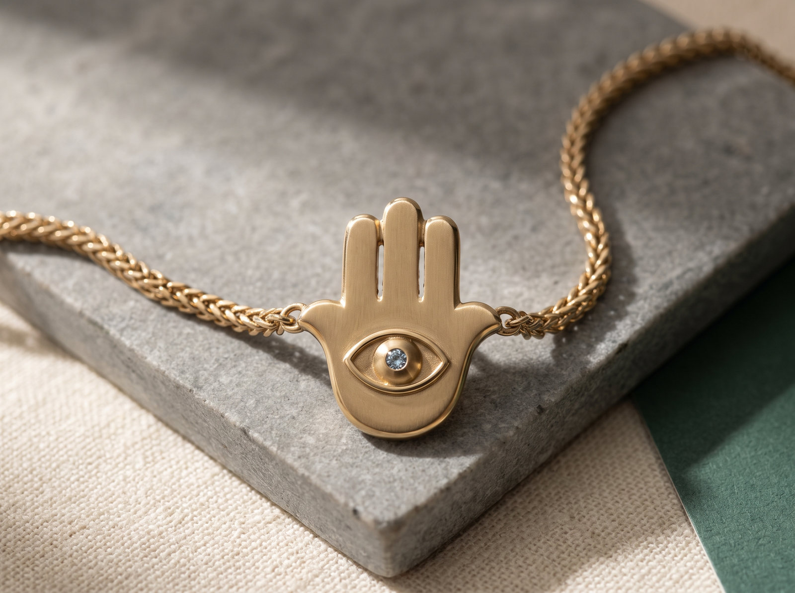
Etsy metni
Başlık 83/140
14K Gold Hamsa Bracelet, Lab Grown Blue Sapphire Eye, Franco Chain, Protection Gift
Etiketler (13)
14k gold bracelet, hamsa bracelet, hamsa hand, lab grown sapphire, blue lab sapphire, franco chain, protection amulet, talisman jewelry, hamsa charm, christmas gift, gift for her, new year gift, solid gold bracelet
Malzemeler
14k yellow gold, 14k gold franco chain, lab grown blue sapphire
Açıklama
A 14k gold hamsa hand with a pale ice-blue lab grown sapphire set as the eye in its palm, on a fine Franco chain. A Christmas gift that carries straight into the new year as an everyday protection charm. THE PIECE One flat hamsa 10.0 mm wide, 12.0 mm tall and 1.0 mm thick, with three upright fingers, two outward-curving thumbs and a polished bevelled edge. All tips are fully rounded. In the palm a raised gold almond outline 6.5 mm wide frames a small domed boss that holds the stone. The chain attaches at the two thumb tips so the hand sits upright. Franco chain 1.3 mm. GOLD WEIGHT 3.53 g of 14k gold, counting the station, chain, clasp, rings and tag. On the scale the finished bracelet weighs 3.54 g in total with the stone. Each piece is weighed after finishing and checked against this design weight. STONES One 2.0 mm round lab grown sapphire in a pale ice-blue tone, about 0.034 ct, flush set in the boss so its table sits level with the gold. A small hole under the stone lets light in and keeps the setting clean. LENGTH AND FIT 16.5 cm closed, plus a 2 cm extender with rings at 17.5 and 18.5 cm, so it fits 16.5-18.5 cm. It closes with a 9 mm lobster clasp, and the extender ends in a small tag stamped 14K. HOW IT IS MADE Made to order. The hamsa, its eye outline, the stone boss and both chain rings are cast in 14k gold as one piece, then bevelled and polished. There is no solder in the station; every join made at the bench is closed with a laser weld. The stone setting is cut and the stone is set after polishing. CARE Wipe with a soft cloth after wearing. Take it off before swimming and keep it away from chlorine and household chemicals. Warm soapy water and a soft brush will clean the chain and the setting. GIFTING Arrives in a gift box, ready to give. Made to order. The processing time is shown at checkout.
Atölye kartı
Kapali 16.5 + 2.0 cm. Hamsa 10.0 x 12.0 x 1.0 mm (avuc 8.0 x 6.0; parmaklar 1.8 mm genis, aralarinda 1.3 mm tam boy acik yarik). Goz kabartmasi O3.4 x 1.8 mm. Badem cerceve merkez hatti 6.5 x 4.8 mm (cevre ~18 mm), kabartma 0.6 genis x 0.4 yuksek; ic acikligi ~5.9 x 4.2 -> kabartmayla bosluk >=0.4 mm (>=0.3). Avucta kenar payi ~0.6 mm. C-halkalar iki basparmak ucunda, bosluk 0.9; eksen boyu 15.2 mm. Franco 1.3 x 13.58 cm.
Hamsa + goz kabartmasi + badem cerceve + iki C-halka (basparmak uclarinda) TEK PARCA, standart 14KY. Avuc dolu plaka, kopru yok; parmaklar arasi yariklar dokumde acik. Tasin altinda O0.8 delik. C-halkalar Franco uc halkalarina LAZERLE kapatilir (lehim yok).
Tezgâh sırası
- 1. CAD: +0.2 mm bitirme payi; C-halkalar 0.9 mm bosluklu (gecen zincir uc halkasi teli <= 0.8 mm + 0.1; tel capi tedarikciden yazili alinir); tum giyilen uclar R>=0.4
- 2. Recine baski -> yatirim -> vakum dokum, standart 14K sari dokum alasimi (firina girmez)
- 3. Yolluk kesimi, gozenek kontrolu
- 4. Tesviye + on-cila (0.15-0.20 mm alinir)
- 5. Kenar pahi 0.3 mm + parlatma; badem cerceve kabartmasi (0.4 mm) korunur
- 6. Pilot cukurdan O0.8 alt delik del (avuc kabartmasi); flush yuva frezesi (koni, rondist 0.02 mm bindirme)
- 7. 1 x 2.0 mm lab-grown mavi safir SOGUK oturtma, el burnisheriyle kenar itme
- 8. C-halkalari Franco uc halkalarina gecir, kapat, LAZER kaynak (lehim yok)
- 9. Kopca grubu: lobster + 4 atlama halkasi + uzatma + plaket; lazer kaynak (lehim yok)
- 10. Son cila (ultrasonik serbest)
- 11. QC: tarti vs gram kurulumu +/-3%, badem-kabartma boslugu >=0.3, parmak yarigi 1.3, tas sikilik (igneyle itme), 17.5/18.5 uzunluk, kopca 2 kg cekme testi, 250px kucuk resim kontrolu
Malzeme listesi
- Dokum alasimi standart 14KY: bitmis istasyon(lar) + dokum C-halkalar 1.350 g x1.15 = 1.55 g
- Tas: 1 x 2.0 mm lab-grown mavi safir (acik/buz mavisi ton) ~0.034 ct
- Zincir: Franco 1.3 mm 14K solid 13.58 cm = 1.43 g (KILITSIZ g/cm; numune tartisi sart)
- Lobster kopca 14KY 9x5mm, 1 adet: 0.30 g (TAHMIN — tedarikci numunesi tartilacak; zincir kilitsiz alindigi icin yalniz burada sayilir)
- Atlama halkasi 14KY 1.0mm tel, ID1.5/OD3.5, 4 adet (kilit, 16.5 / 17.5 / 18.5 cm halkalari): 4 x 0.081 = 0.32 g
- Uzatma zinciri 14KY solid cable 1.2mm, 2 x 6.5mm = 1.3 cm: 0.059 g (kilitsiz g/cm 0.0456)
- Damga plaketi 14KY 4.0x2.5x0.6mm (14K + tescilli marka, lazer kazima): 0.073 g
- TOPLAM ALTIN 3.53 g (bant 3.2-3.9); terazide toplam 3.54 g. Gram kurulumu: Hamsa plakasi 10.0x12.0 (avuc 8.0x6.0 + 3 parmak 1.8 genis, aralarinda 1.3 mm tam boy yarik + 2 basparmak) x1.0: (80.90 + 8.0x0.5) = 84.90mm3 x0.01307 = 1.110 g | Goz kabartmasi O3.4 x +0.8 (1.8mm ev sahibi): pi*1.7^2*0.8 = 7.26mm3 x0.01307 = 0.095 g | Badem cerceve kabartma 6.5x4.8 merkez hat (cevre ~18mm) x0.6 x0.4: 18*0.6*0.4 = 4.32mm3 x0.01307 = 0.056 g | 2.0mm tas yuvasi + delik (cikarma): -1.57mm3 x0.01307 = -0.021 g | 2 x dokum C-halka (1.0mm kesit, ID1.2; gercek torus, gomulme dusulmus): 4.2mm3 x2 x0.01307 = 0.110 g | Zincir franco13, 13.58 cm (KILITSIZ g/cm secildi, kilit ayrica sayiliyor): Franco 1.3 kilitsiz 0.1051 g/cm (0.1127 kilit dahil ara deger x 0.933 Franco 1.5 kilit orani) x 13.58cm = 1.427 g | Lobster 14KY 9x5mm (satin alma, TAHMIN; zincir g/cm KILITSIZ alindigi icin kilit burada BIR kez sayilir): tedarikci tartisi bekleniyor = 0.300 g | 4 x atlama halkasi 1.0mm tel ID1.5 (kilit, 16.5, 17.5, 18.5): 2*pi^2*1.25*0.5^2=6.17mm3 x4 x0.01307 = 0.322 g | Uzatma zinciri cable 1.2mm 2x6.5mm (kilitsiz g/cm): 0.0456 g/cm x1.3cm = 0.059 g | Damga plaketi 4.0x2.5x0.6 (14K+tescilli marka): 5.57mm3 x0.01307 = 0.073 g
Arıza modları
| Arıza | Tasarım nasıl önlüyor |
|---|---|
| Tas kuletinin arkadan tasmasi ve bilekte kirilmasi (orijinal: 1.24 mm derin tas, 1.0 mm plaka) | Kabartma 1.8 mm (KANIT 2.0 mm tas icin min 1.8); kulet alttaki delige oturur |
| Oturtma kuvvetiyle asili diskin egilip tasin gevsemesi | Avuc dolu plaka; kabartma plakaya tum cevresinden bagli, kopru yok |
| Parmak uclarinin takilmasi | Parmak uclari 1.8 mm genis, tam yuvarlak R0.9 |
| Istasyonun donup arka yuzu gostermesi | Franco duz dokuma; C-halkalar basparmak uclarinda, agirlik merkezi zincir ekseninde |
| Badem cerceve ile tas kabartmasinin birlesip okunmamasi / dokumde dolmamasi | Badem 6.5 x 4.8 merkez hat, kabartmaya bosluk >=0.4 mm; avuc 6.0 mm'ye yukseltildi |
Tolerans
| Kural | Değer | |
|---|---|---|
| L4 tas 1.3-2.0 mm, lab-grown, buz mavisi icin lab mavi safir | 2.0 mm lab mavi safir | ✓ |
| L4 ev sahibi >= KANIT (2.0 mm tas -> 1.8) | 1.8 mm | ✓ |
| L4 yanal duvar >=0.45 (1.8-2.5 mm tas) | (3.4-2.0)/2 = 0.70 | ✓ |
| L4 alt delik | O0.8 | ✓ |
| L4 <=7 tas, pave yok | 1 | ✓ |
| L5 dekoratif >=0.6 | badem cerceve 0.6 x 0.4; cerceve-kabartma boslugu >=0.4 | ✓ |
| L5 yapisal >=0.8 | plaka 1.0 | ✓ |
| L5 tasiyici halka/kulp kesiti >=1.0 mm | dokum C-halka 1.0 mm kesit, hacim 4.2 mm3 (gercek torus, gomulme dusulmus); atlama halkalari 1.0 mm tel | ✓ |
| L5 aciklik >=0.6 mm, derinlik <=2 x genislik | parmak yarigi 1.3 mm tam boy; C-halka ID 1.2 / derinlik 1.0, bosluk 0.9 | ✓ |
| L5 uclar R>=0.4 | parmak/basparmak R0.9 | ✓ |
| L6 hollow yok | dolu dokum | ✓ |
| L7 altin gram bandi 3.2-3.9 g | 3.53 g (zincir KILITSIZ g/cm, kilit bir kez sayildi; C-halka 4.2 mm3) | ✓ |
| L8 16.5 + 2.0 cm, gram 18.5 cm'de | 16.5 kapali + 2 x 1.0 cm uzatma; gram_build uzatmayi iceriyor | ✓ |
| L11 8 kollu yildiz <=2 ve ayni aile <=3 | yildiz yok; tilsim ailesi B4+B5+B10 = 3 | ✓ |
| L12 tek kahraman | hamsa + mavi goz | ✓ |
| Tasiyici yuk yolu (halka koku dahil) her yerde >=1.0 mm kesit | basparmak ucu 1.8 genis x 1.0 kalin; C-halka 1.0 kesit | ✓ |
| C-halka boslugu >= gecen tel + 0.1 mm | dokum bosluk 0.9 mm >= gecen tel 0.80 + 0.1 (tel capi tedarikci spesifikasyonuyla kilitlenir) | ✓ |
Görsel promptları (16)
- 01Hero / arama küçük resmi: tek ürün, marka natürmortu, 4:3.Referanssız
Quiet luxury editorial still-life product photography. Warm ivory linen ground, honed grey stone slab, a sliver of deep jade-green matte card. Soft directional window light from upper left, long soft shadow, shallow depth of field. Solid yellow gold with warm antique tone. Restrained heirloom mood. No text, no logo, no glitter, no Christmas decoration. The piece: 14K yellow gold bracelet on a 1.3 mm Franco chain, 16.5 cm long, 2.0 cm extender. One flat hamsa hand station, 10.0 mm wide, 12.0 mm tall and 1.0 mm thick: 3 upright straight fingers separated by 1.3 mm open slits and 2 short thumbs curving outward at the lower sides, all with rounded tips and a polished bevelled edge; the chain attaches at the two thumb tips. In the palm, a thin raised gold almond outline 6.5 mm wide surrounds a domed gold boss holding one 2.0 mm round pale ice-blue lab-grown sapphire, flush set. 9 mm lobster clasp. The stones are exactly these and no others: one 2.0 mm round pale ice-blue lab-grown sapphire flush-set in the domed boss at the centre of the hamsa palm. No other stone and no empty setting anywhere on the piece. The piece has no enamel and no colour: every surface is yellow gold. The decorated centre of the bracelet lies face up at the centre of the honed grey stone slab, close to the camera; the chain runs away from it on both sides in a soft curve and leaves the frame at the left and right edges; the clasp is out of frame. Seen from about 30 degrees above with a 100 mm macro lens, the decorated part in razor-sharp focus, filling about a third of the frame width, with the chain softly out of focus toward the frame edges. No people and no hands.
Alt metin 14K gold hamsa bracelet with a pale ice-blue lab-grown sapphire in a gold almond eye on a Franco chain
- 02Takılı hâli: ölçek ve duruş. Hero'dan sonra dönüşümü en çok etkileyen kare.Referans: hero kırpımı
Quiet luxury editorial photography in warm ivory, stone grey and deep jade-green tones, soft directional window light from the upper left, true colour, fine film grain, no heavy retouching. No text, no logo, no watermark, no glitter. The attached reference image is a crop of this exact piece: keep its shape, proportions, gold colour and stones exactly as in the reference. The piece: 14K yellow gold bracelet on a 1.3 mm Franco chain, 16.5 cm long, 2.0 cm extender. One flat hamsa hand station, 10.0 mm wide, 12.0 mm tall and 1.0 mm thick: 3 upright straight fingers separated by 1.3 mm open slits and 2 short thumbs curving outward at the lower sides, all with rounded tips and a polished bevelled edge; the chain attaches at the two thumb tips. In the palm, a thin raised gold almond outline 6.5 mm wide surrounds a domed gold boss holding one 2.0 mm round pale ice-blue lab-grown sapphire, flush set. 9 mm lobster clasp. The stones are exactly these and no others: one 2.0 mm round pale ice-blue lab-grown sapphire flush-set in the domed boss at the centre of the hamsa palm. No other stone and no empty setting anywhere on the piece. The piece has no enamel and no colour: every surface is yellow gold. Worn on a woman's left wrist, the forearm resting on a folded warm-ivory wool knit, hand relaxed and open; the stations sit face up on the top of the wrist; it is the only jewellery in the image, no watch and no rings; true to scale, the main element measures about 12 mm across; anatomically correct hands with five fingers, short natural unpolished nails.
Alt metin 14K gold hamsa bracelet with a pale ice-blue lab-grown sapphire in a gold almond eye on a Franco chain, worn
- 03Makro işçilik: fiyatı meşrulaştıran detay (mine yüzeyi, flush taş, kenar bitimi).Referans: hero kırpımı
Quiet luxury editorial photography in warm ivory, stone grey and deep jade-green tones, soft directional window light from the upper left, true colour, fine film grain, no heavy retouching. No text, no logo, no watermark, no glitter. The attached reference image is a crop of this exact piece: keep its shape, proportions, gold colour and stones exactly as in the reference. The piece: 14K yellow gold bracelet on a 1.3 mm Franco chain, 16.5 cm long, 2.0 cm extender. One flat hamsa hand station, 10.0 mm wide, 12.0 mm tall and 1.0 mm thick: 3 upright straight fingers separated by 1.3 mm open slits and 2 short thumbs curving outward at the lower sides, all with rounded tips and a polished bevelled edge; the chain attaches at the two thumb tips. In the palm, a thin raised gold almond outline 6.5 mm wide surrounds a domed gold boss holding one 2.0 mm round pale ice-blue lab-grown sapphire, flush set. 9 mm lobster clasp. The stones are exactly these and no others: one 2.0 mm round pale ice-blue lab-grown sapphire flush-set in the domed boss at the centre of the hamsa palm. No other stone and no empty setting anywhere on the piece. The piece has no enamel and no colour: every surface is yellow gold. Extreme close-up macro, 100 mm macro lens: The hamsa palm with its raised gold almond outline and the 2.0 mm pale ice-blue lab-grown sapphire flush-set in the domed centre boss. The rest of the piece falls away into soft focus on warm-ivory linen.
Alt metin Close-up of the gold almond eye and pale ice-blue lab-grown sapphire in the hamsa palm
- 04Elde ölçek: mm'yi parmak ucuna çevirir, 'beklediğimden küçük' iadesini önler.Referans: hero kırpımı
Quiet luxury editorial photography in warm ivory, stone grey and deep jade-green tones, soft directional window light from the upper left, true colour, fine film grain, no heavy retouching. No text, no logo, no watermark, no glitter. The attached reference image is a crop of this exact piece: keep its shape, proportions, gold colour and stones exactly as in the reference. The piece: 14K yellow gold bracelet on a 1.3 mm Franco chain, 16.5 cm long, 2.0 cm extender. One flat hamsa hand station, 10.0 mm wide, 12.0 mm tall and 1.0 mm thick: 3 upright straight fingers separated by 1.3 mm open slits and 2 short thumbs curving outward at the lower sides, all with rounded tips and a polished bevelled edge; the chain attaches at the two thumb tips. In the palm, a thin raised gold almond outline 6.5 mm wide surrounds a domed gold boss holding one 2.0 mm round pale ice-blue lab-grown sapphire, flush set. 9 mm lobster clasp. The stones are exactly these and no others: one 2.0 mm round pale ice-blue lab-grown sapphire flush-set in the domed boss at the centre of the hamsa palm. No other stone and no empty setting anywhere on the piece. The piece has no enamel and no colour: every surface is yellow gold. Close-up for scale against a plain warm-ivory background thrown softly out of focus: the bracelet held up between the thumb and index finger of a woman's hand by its clasp, the chain hanging straight down so every station faces the camera; true to scale, the main element measures about 12 mm across, a fingertip is about 16 mm wide; it is the only jewellery in the image; anatomically correct hands with five fingers, short natural unpolished nails.
Alt metin 14K gold hamsa bracelet with a pale ice-blue lab-grown sapphire in a gold almond eye on a Franco chain, held between fingers for scale
- 05Arka ve bulgular: dolu gövde, kilit / çivi / iğne; sağlamlık sorusunu cevaplar.Referans: hero kırpımı
Quiet luxury editorial photography in warm ivory, stone grey and deep jade-green tones, soft directional window light from the upper left, true colour, fine film grain, no heavy retouching. No text, no logo, no watermark, no glitter. The attached reference image is a crop of this exact piece: keep its shape, proportions, gold colour and stones exactly as in the reference. The piece: 14K yellow gold bracelet on a 1.3 mm Franco chain, 16.5 cm long, 2.0 cm extender. One flat hamsa hand station, 10.0 mm wide, 12.0 mm tall and 1.0 mm thick: 3 upright straight fingers separated by 1.3 mm open slits and 2 short thumbs curving outward at the lower sides, all with rounded tips and a polished bevelled edge; the chain attaches at the two thumb tips. In the palm, a thin raised gold almond outline 6.5 mm wide surrounds a domed gold boss holding one 2.0 mm round pale ice-blue lab-grown sapphire, flush set. 9 mm lobster clasp. The stones are exactly these and no others: one 2.0 mm round pale ice-blue lab-grown sapphire flush-set in the domed boss at the centre of the hamsa palm. No other stone and no empty setting anywhere on the piece. The piece has no enamel and no colour: every surface is yellow gold. The back of the piece, top-down on honed grey stone: The flat solid back of the hamsa, with a small round hole under the stone and the chain rings at the two thumb tips.
Alt metin Back of the bracelet showing the flat solid back of the hamsa with the hole under the stone
- 06Tam boy / çift / mekanizma: uzunluk, ayar ve ne geldiğini tek karede gösterir.Referans: hero kırpımı
Quiet luxury editorial photography in warm ivory, stone grey and deep jade-green tones, soft directional window light from the upper left, true colour, fine film grain, no heavy retouching. No text, no logo, no watermark, no glitter. The attached reference image is a crop of this exact piece: keep its shape, proportions, gold colour and stones exactly as in the reference. The piece: 14K yellow gold bracelet on a 1.3 mm Franco chain, 16.5 cm long, 2.0 cm extender. One flat hamsa hand station, 10.0 mm wide, 12.0 mm tall and 1.0 mm thick: 3 upright straight fingers separated by 1.3 mm open slits and 2 short thumbs curving outward at the lower sides, all with rounded tips and a polished bevelled edge; the chain attaches at the two thumb tips. In the palm, a thin raised gold almond outline 6.5 mm wide surrounds a domed gold boss holding one 2.0 mm round pale ice-blue lab-grown sapphire, flush set. 9 mm lobster clasp. The stones are exactly these and no others: one 2.0 mm round pale ice-blue lab-grown sapphire flush-set in the domed boss at the centre of the hamsa palm. No other stone and no empty setting anywhere on the piece. The piece has no enamel and no colour: every surface is yellow gold. The whole bracelet laid out in one straight horizontal line on warm-ivory linen, top-down, from the lobster clasp at one end to the extender chain at the other, every station face up and the extender rings visible.
Alt metin 14K gold hamsa bracelet with a pale ice-blue lab-grown sapphire in a gold almond eye on a Franco chain, full length
- 07Yan profil: kalınlık ve kütle, düz baskı değil gerçek altın olduğunu gösterir.Referans: hero kırpımı
Quiet luxury editorial photography in warm ivory, stone grey and deep jade-green tones, soft directional window light from the upper left, true colour, fine film grain, no heavy retouching. No text, no logo, no watermark, no glitter. The attached reference image is a crop of this exact piece: keep its shape, proportions, gold colour and stones exactly as in the reference. The piece: 14K yellow gold bracelet on a 1.3 mm Franco chain, 16.5 cm long, 2.0 cm extender. One flat hamsa hand station, 10.0 mm wide, 12.0 mm tall and 1.0 mm thick: 3 upright straight fingers separated by 1.3 mm open slits and 2 short thumbs curving outward at the lower sides, all with rounded tips and a polished bevelled edge; the chain attaches at the two thumb tips. In the palm, a thin raised gold almond outline 6.5 mm wide surrounds a domed gold boss holding one 2.0 mm round pale ice-blue lab-grown sapphire, flush set. 9 mm lobster clasp. The stones are exactly these and no others: one 2.0 mm round pale ice-blue lab-grown sapphire flush-set in the domed boss at the centre of the hamsa palm. No other stone and no empty setting anywhere on the piece. The piece has no enamel and no colour: every surface is yellow gold. Side profile at eye level on honed grey stone, the camera level with the piece: Side profile: a flat hand plate 1.0 mm thick with the centre boss rising to 1.8 mm.
Alt metin Side profile of the bracelet showing its thickness
- 08Kış yaşam stili: sezonu Noel dekoru olmadan kurar.Referans: hero kırpımı
Quiet luxury editorial photography in warm ivory, stone grey and deep jade-green tones, soft directional window light from the upper left, true colour, fine film grain, no heavy retouching. No text, no logo, no watermark, no glitter. The attached reference image is a crop of this exact piece: keep its shape, proportions, gold colour and stones exactly as in the reference. The piece: 14K yellow gold bracelet on a 1.3 mm Franco chain, 16.5 cm long, 2.0 cm extender. One flat hamsa hand station, 10.0 mm wide, 12.0 mm tall and 1.0 mm thick: 3 upright straight fingers separated by 1.3 mm open slits and 2 short thumbs curving outward at the lower sides, all with rounded tips and a polished bevelled edge; the chain attaches at the two thumb tips. In the palm, a thin raised gold almond outline 6.5 mm wide surrounds a domed gold boss holding one 2.0 mm round pale ice-blue lab-grown sapphire, flush set. 9 mm lobster clasp. The stones are exactly these and no others: one 2.0 mm round pale ice-blue lab-grown sapphire flush-set in the domed boss at the centre of the hamsa palm. No other stone and no empty setting anywhere on the piece. The piece has no enamel and no colour: every surface is yellow gold. Morning window light: a woman's left wrist wearing the bracelet rests on the cuff of an ivory cable-knit sweater beside a small stoneware cup of black coffee on a pale oak table; it is the only jewellery in the image; anatomically correct hands with five fingers, short natural unpolished nails.
Alt metin 14K gold hamsa bracelet with a pale ice-blue lab-grown sapphire in a gold almond eye on a Franco chain, styled with winter knitwear
- 09Hediye kutusu: Noel alıcısının ilk sorusu, hediyeye hazır mı?Referans: hero kırpımı
Quiet luxury editorial photography in warm ivory, stone grey and deep jade-green tones, soft directional window light from the upper left, true colour, fine film grain, no heavy retouching. No text, no logo, no watermark, no glitter. The attached reference image is a crop of this exact piece: keep its shape, proportions, gold colour and stones exactly as in the reference. The piece: 14K yellow gold bracelet on a 1.3 mm Franco chain, 16.5 cm long, 2.0 cm extender. One flat hamsa hand station, 10.0 mm wide, 12.0 mm tall and 1.0 mm thick: 3 upright straight fingers separated by 1.3 mm open slits and 2 short thumbs curving outward at the lower sides, all with rounded tips and a polished bevelled edge; the chain attaches at the two thumb tips. In the palm, a thin raised gold almond outline 6.5 mm wide surrounds a domed gold boss holding one 2.0 mm round pale ice-blue lab-grown sapphire, flush set. 9 mm lobster clasp. The stones are exactly these and no others: one 2.0 mm round pale ice-blue lab-grown sapphire flush-set in the domed boss at the centre of the hamsa palm. No other stone and no empty setting anywhere on the piece. The piece has no enamel and no colour: every surface is yellow gold. Top-down: the bracelet coiled loosely inside a small open square gift box in plain warm-ivory card with a soft ivory insert, the lid set beside it, a length of narrow deep jade-green ribbon untied beside the box, on honed grey stone. No branding, no printed pattern, no tissue paper, no Christmas decoration, exactly one box.
Alt metin 14K gold hamsa bracelet with a pale ice-blue lab-grown sapphire in a gold almond eye on a Franco chain in a gift box
- 10Gerçek renk: nötr gün ışığında altın ve mine rengi; renk kaynaklı iadeyi azaltır.Referans: hero kırpımı
Quiet luxury editorial photography in warm ivory, stone grey and deep jade-green tones, soft directional window light from the upper left, true colour, fine film grain, no heavy retouching. No text, no logo, no watermark, no glitter. The attached reference image is a crop of this exact piece: keep its shape, proportions, gold colour and stones exactly as in the reference. The piece: 14K yellow gold bracelet on a 1.3 mm Franco chain, 16.5 cm long, 2.0 cm extender. One flat hamsa hand station, 10.0 mm wide, 12.0 mm tall and 1.0 mm thick: 3 upright straight fingers separated by 1.3 mm open slits and 2 short thumbs curving outward at the lower sides, all with rounded tips and a polished bevelled edge; the chain attaches at the two thumb tips. In the palm, a thin raised gold almond outline 6.5 mm wide surrounds a domed gold boss holding one 2.0 mm round pale ice-blue lab-grown sapphire, flush set. 9 mm lobster clasp. The stones are exactly these and no others: one 2.0 mm round pale ice-blue lab-grown sapphire flush-set in the domed boss at the centre of the hamsa palm. No other stone and no empty setting anywhere on the piece. The piece has no enamel and no colour: every surface is yellow gold. Colour-accurate reference shot: the piece alone, top-down on plain matte white-ivory paper under even neutral north daylight, no shadow drama, no props, the piece centred and filling half the frame.
Alt metin 14K gold hamsa bracelet with a pale ice-blue lab-grown sapphire in a gold almond eye on a Franco chain in neutral daylight, true colour
- 11Ölçü grafiği tabanı: sağ üçte bir boş; mm etiketleri sonra eklenir.Referans: hero kırpımı
Quiet luxury editorial photography in warm ivory, stone grey and deep jade-green tones, soft directional window light from the upper left, true colour, fine film grain, no heavy retouching. No text, no logo, no watermark, no glitter. The attached reference image is a crop of this exact piece: keep its shape, proportions, gold colour and stones exactly as in the reference. The piece: 14K yellow gold bracelet on a 1.3 mm Franco chain, 16.5 cm long, 2.0 cm extender. One flat hamsa hand station, 10.0 mm wide, 12.0 mm tall and 1.0 mm thick: 3 upright straight fingers separated by 1.3 mm open slits and 2 short thumbs curving outward at the lower sides, all with rounded tips and a polished bevelled edge; the chain attaches at the two thumb tips. In the palm, a thin raised gold almond outline 6.5 mm wide surrounds a domed gold boss holding one 2.0 mm round pale ice-blue lab-grown sapphire, flush set. 9 mm lobster clasp. The stones are exactly these and no others: one 2.0 mm round pale ice-blue lab-grown sapphire flush-set in the domed boss at the centre of the hamsa palm. No other stone and no empty setting anywhere on the piece. The piece has no enamel and no colour: every surface is yellow gold. The piece alone, top-down on plain warm-ivory paper, placed in the left two thirds of the frame; the right third is empty paper for dimension labels to be added later; even soft light, no props.
Alt metin 14K gold hamsa bracelet with a pale ice-blue lab-grown sapphire in a gold almond eye on a Franco chain with space for dimensions
- 12El işçiliği: siparişe üretim hikâyesi, tezgâhta parça.Referans: hero kırpımı
Quiet luxury editorial photography in warm ivory, stone grey and deep jade-green tones, soft directional window light from the upper left, true colour, fine film grain, no heavy retouching. No text, no logo, no watermark, no glitter. The attached reference image is a crop of this exact piece: keep its shape, proportions, gold colour and stones exactly as in the reference. The piece: 14K yellow gold bracelet on a 1.3 mm Franco chain, 16.5 cm long, 2.0 cm extender. One flat hamsa hand station, 10.0 mm wide, 12.0 mm tall and 1.0 mm thick: 3 upright straight fingers separated by 1.3 mm open slits and 2 short thumbs curving outward at the lower sides, all with rounded tips and a polished bevelled edge; the chain attaches at the two thumb tips. In the palm, a thin raised gold almond outline 6.5 mm wide surrounds a domed gold boss holding one 2.0 mm round pale ice-blue lab-grown sapphire, flush set. 9 mm lobster clasp. The stones are exactly these and no others: one 2.0 mm round pale ice-blue lab-grown sapphire flush-set in the domed boss at the centre of the hamsa palm. No other stone and no empty setting anywhere on the piece. The piece has no enamel and no colour: every surface is yellow gold. The finished piece lying on a worn wooden jeweller's bench pin beside a steel burnisher, a fine half-round file and a pair of brass tweezers, warm lamp light, shallow depth of field, the piece in sharp focus; no hands.
Alt metin 14K gold hamsa bracelet with a pale ice-blue lab-grown sapphire in a gold almond eye on a Franco chain on a jeweller's bench
- 13Motifin anlamı: sol üçte bir boş; sembol hikâyesi metni sonra eklenir.Referans: hero kırpımı
Quiet luxury editorial photography in warm ivory, stone grey and deep jade-green tones, soft directional window light from the upper left, true colour, fine film grain, no heavy retouching. No text, no logo, no watermark, no glitter. The attached reference image is a crop of this exact piece: keep its shape, proportions, gold colour and stones exactly as in the reference. The piece: 14K yellow gold bracelet on a 1.3 mm Franco chain, 16.5 cm long, 2.0 cm extender. One flat hamsa hand station, 10.0 mm wide, 12.0 mm tall and 1.0 mm thick: 3 upright straight fingers separated by 1.3 mm open slits and 2 short thumbs curving outward at the lower sides, all with rounded tips and a polished bevelled edge; the chain attaches at the two thumb tips. In the palm, a thin raised gold almond outline 6.5 mm wide surrounds a domed gold boss holding one 2.0 mm round pale ice-blue lab-grown sapphire, flush set. 9 mm lobster clasp. The stones are exactly these and no others: one 2.0 mm round pale ice-blue lab-grown sapphire flush-set in the domed boss at the centre of the hamsa palm. No other stone and no empty setting anywhere on the piece. The piece has no enamel and no colour: every surface is yellow gold. The piece alone, top-down on a deep jade-green matte card, placed in the right two thirds of the frame; the left third is empty card for a caption to be added later; soft directional light.
Alt metin 14K gold hamsa bracelet with a pale ice-blue lab-grown sapphire in a gold almond eye on a Franco chain on a deep green card
- 14Yıl boyu takılır: 'yalnız Noel' itirazını kırar.Referans: hero kırpımı
Quiet luxury editorial photography in warm ivory, stone grey and deep jade-green tones, soft directional window light from the upper left, true colour, fine film grain, no heavy retouching. No text, no logo, no watermark, no glitter. The attached reference image is a crop of this exact piece: keep its shape, proportions, gold colour and stones exactly as in the reference. The piece: 14K yellow gold bracelet on a 1.3 mm Franco chain, 16.5 cm long, 2.0 cm extender. One flat hamsa hand station, 10.0 mm wide, 12.0 mm tall and 1.0 mm thick: 3 upright straight fingers separated by 1.3 mm open slits and 2 short thumbs curving outward at the lower sides, all with rounded tips and a polished bevelled edge; the chain attaches at the two thumb tips. In the palm, a thin raised gold almond outline 6.5 mm wide surrounds a domed gold boss holding one 2.0 mm round pale ice-blue lab-grown sapphire, flush set. 9 mm lobster clasp. The stones are exactly these and no others: one 2.0 mm round pale ice-blue lab-grown sapphire flush-set in the domed boss at the centre of the hamsa palm. No other stone and no empty setting anywhere on the piece. The piece has no enamel and no colour: every surface is yellow gold. Everyday wear, no season: a woman's left wrist wearing the bracelet over a laptop keyboard in soft daylight, plain white cotton shirt cuff; only jewellery in the image; anatomically correct hands with five fingers, short natural unpolished nails.
Alt metin 14K gold hamsa bracelet with a pale ice-blue lab-grown sapphire in a gold almond eye on a Franco chain, everyday wear
- 15Hediye anı: duygu; Noel satın alma niyetine bağlar.Referans: hero kırpımı
Quiet luxury editorial photography in warm ivory, stone grey and deep jade-green tones, soft directional window light from the upper left, true colour, fine film grain, no heavy retouching. No text, no logo, no watermark, no glitter. The attached reference image is a crop of this exact piece: keep its shape, proportions, gold colour and stones exactly as in the reference. The piece: 14K yellow gold bracelet on a 1.3 mm Franco chain, 16.5 cm long, 2.0 cm extender. One flat hamsa hand station, 10.0 mm wide, 12.0 mm tall and 1.0 mm thick: 3 upright straight fingers separated by 1.3 mm open slits and 2 short thumbs curving outward at the lower sides, all with rounded tips and a polished bevelled edge; the chain attaches at the two thumb tips. In the palm, a thin raised gold almond outline 6.5 mm wide surrounds a domed gold boss holding one 2.0 mm round pale ice-blue lab-grown sapphire, flush set. 9 mm lobster clasp. The stones are exactly these and no others: one 2.0 mm round pale ice-blue lab-grown sapphire flush-set in the domed boss at the centre of the hamsa palm. No other stone and no empty setting anywhere on the piece. The piece has no enamel and no colour: every surface is yellow gold. A gift being given: two pairs of hands across a pale oak table, one pair holding out the small open warm-ivory gift box with the piece visible inside, the other reaching for it, soft warm window light, sleeves of ivory and grey knitwear; exactly one box and one piece of jewellery; anatomically correct hands with five fingers, short natural unpolished nails.
Alt metin 14K gold hamsa bracelet with a pale ice-blue lab-grown sapphire in a gold almond eye on a Franco chain given as a gift
- 16Mağaza ızgarası / Pinterest: koyu jade zeminde yüksek kontrast kare.Referans: hero kırpımı
Quiet luxury editorial photography in warm ivory, stone grey and deep jade-green tones, soft directional window light from the upper left, true colour, fine film grain, no heavy retouching. No text, no logo, no watermark, no glitter. The attached reference image is a crop of this exact piece: keep its shape, proportions, gold colour and stones exactly as in the reference. The piece: 14K yellow gold bracelet on a 1.3 mm Franco chain, 16.5 cm long, 2.0 cm extender. One flat hamsa hand station, 10.0 mm wide, 12.0 mm tall and 1.0 mm thick: 3 upright straight fingers separated by 1.3 mm open slits and 2 short thumbs curving outward at the lower sides, all with rounded tips and a polished bevelled edge; the chain attaches at the two thumb tips. In the palm, a thin raised gold almond outline 6.5 mm wide surrounds a domed gold boss holding one 2.0 mm round pale ice-blue lab-grown sapphire, flush set. 9 mm lobster clasp. The stones are exactly these and no others: one 2.0 mm round pale ice-blue lab-grown sapphire flush-set in the domed boss at the centre of the hamsa palm. No other stone and no empty setting anywhere on the piece. The piece has no enamel and no colour: every surface is yellow gold. Top-down flat lay of the piece centred on a deep jade-green matte card with a narrow border of warm-ivory linen at the top edge, crisp soft light, the piece filling about 40 percent of the frame so a square crop keeps all of it.
Alt metin 14K gold hamsa bracelet with a pale ice-blue lab-grown sapphire in a gold almond eye on a Franco chain, flat lay on deep green
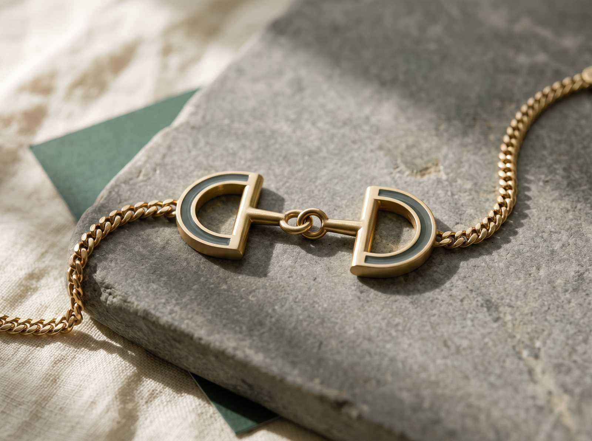
Etsy metni
Başlık 87/140
14K Gold Snaffle Bit Bracelet, Green Enamel, Miami Cuban Chain, Equestrian Gift for Her
Etiketler (13)
14k gold bracelet, snaffle bit, snaffle bracelet, equestrian jewelry, enamel bracelet, green enamel, vitreous enamel, miami cuban chain, riding jewelry, horse lover gift, christmas gift, gift for her, solid gold bracelet
Malzemeler
14k yellow gold, vitreous enamel, 14k gold miami cuban chain
Açıklama
A small 14k gold snaffle bit with a working jointed mouthpiece, its two D cheek pieces inlaid with deep jade-green glass enamel. A Christmas gift for a rider that reads as classic equestrian gold the rest of the year. THE PIECE One station 22 mm long. Two flat D-shaped cheek pieces, each 7.5 mm tall, 5.0 mm deep and 1.4 mm thick with a 1.8 mm round hole, are joined by a two-part mouthpiece of 1.5 mm round bars that link through two interlocking loops and move at the centre. Each D carries one curved enamel channel 7.5 mm long and 0.75 mm wide inside 0.7 mm gold walls. Miami Cuban chain 1.8 mm. GOLD WEIGHT 3.69 g of 14k gold, counting the station, chain, clasp, rings and tag. On the scale the finished bracelet weighs 3.70 g in total with the enamel. Each piece is weighed after finishing and checked against this design weight. ENAMEL Kiln-fired vitreous enamel (glass), opaque deep jade-green. It fills one curved channel on each cheek piece; the moving joint carries no enamel. The enamel surface sits 0.1 mm below the gold edge, so the gold takes knocks first. Fired glass is hard but can chip under a sharp knock, so take the bracelet off for the gym and the pool, keep it away from chlorine and harsh chemicals, and clean the enamel with warm soapy water and a soft brush. LENGTH AND FIT 16.5 cm closed, plus a 2 cm extender with rings at 17.5 and 18.5 cm, so it fits 16.5-18.5 cm. It closes with a 9 mm lobster clasp, and the extender ends in a small tag stamped 14K. HOW IT IS MADE Made to order. The station is cast in zinc-free 14k gold in two halves, each cheek piece in one piece with its half of the mouthpiece and its chain ring, and the enamel cells are formed in the casting itself. There is no solder in the station: the enamel is fired three times, and every join is closed afterwards with a laser weld away from the enamel. CARE Wipe the gold with a soft cloth. Store the bracelet on its own so harder pieces do not knock the enamel. No ultrasonic or steam cleaning. GIFTING Arrives in a gift box, ready to give. Made to order. The processing time is shown at checkout.
Atölye kartı
Kapali 16.5 + 2.0 cm. Istasyon 22.2 mm = D 5.0 + bar 3.0 + gecme halkalar (OD4.6 + ID1.6 = 6.2) + bar 3.0 + D 5.0; C-halkalarla eksen boyu 27.4 mm. D plaka 7.5 yuksek x 5.0 derin x 1.4 (dikdortgen 7.5 x 1.25 + yarim daire r3.75); ic delik O1.8, merkezi duz kenardan 1.9 mm -> duz bar 1.0 mm, egri bant tepe noktada 2.2 mm (kanal 0.75 + 2 x 0.70 = 2.15 sigar). Egri kanal ~7.5 mm yay x 0.75 x 0.55, yalniz D tepesinin iki yaninda; dis C-halka D'nin egri tepesinde dis duvara kokludur. Agizlik yarilari O1.5 x 3.0; gecme halkalar 1.5 kesit, ID1.6; sag halka 1.6 mm bosluklu (gecen tel 1.5 + 0.1). Dis C-halka bosluk 1.1. Cuban 1.8 x 12.36 cm.
Her yanak plakasi kendi agizlik yarisi, merkez gecme halkasi ve dis C-halkasiyla TEK PARCA dokulur (iki dokum, cinkosuz 14KY). Sol yarinin merkez halkasi kapali; saginki 1.6 mm bosluklu dokulur. Tum pisirimlerden SONRA sag halka sol kapali halkaya gecirilir, bosluk 14K O1.5 dolgu teliyle doldurulur ve lazerle kaynaklanir (dikis mineden ~5 mm). Soguk kapatma/percin YOK. Mafsal islevsel; mine yalniz rijit D plakalarda.
Tezgâh sırası
- 1. CAD: hucreler DOKUMDE birakilir, taban fileto R0.2, +0.2 mm bitirme payi; D ic delik O1.8 (duz bar 1.0, egri bant >=2.2); sag merkez halka 1.6 mm bosluklu, dis C-halkalar 1.1 mm bosluklu (Cuban uc halkasi teli <=1.0 + 0.1)
- 2. Recine baski -> yatirim -> cinkosuz 'enamelable' 14K sari (Otto Frei 846-180 esasli, yazili Zn=0 sertifikasi + solidus/DSC), vakum dokum (2 parca)
- 3. Yolluk kesimi, gozenek kontrolu (kanal tabanlari 10x; gozenekli parca HURDA)
- 4. Tesviye; kanal tabanlari temizlenir (0.55 olculur); hamlac lehimi YOK
- 5. Yuzey zenginlestirme 4 dongu: ~593 C + %10 H2SO4
- 6. <=780 C'de olgunlasan kursunsuz yumusak opak mine (or. Soyer soft serisi), renk basina kupon: derin yesil opak mine yas-dolgu kat 1 (iki plaka)
- 7. Pisirim 1: 780 C, 60-75 sn, kalibre termokupl
- 8. Kat 2; Pisirim 2: 780 C, 60-75 sn
- 9. Tasla zimpara (su altinda): mine yuzeyi kenardan 0.10-0.15 mm asagida
- 10. Pisirim 3 (flash): 770 C, 40-50 sn — toplam 3
- 11. Asitsiz oksit temizligi, mine maskeli
- 12. Agizlik mafsali: sag halkayi (1.6 mm bosluk) sol kapali halkaya gecir; bosluga 14K O1.5 dolgu teli yerlestir, lazer kaynak (mine Plasti-tac + parlak gumus siper, dusuk guc, hava sogutma; dikis mineden ~5 mm); once hurda kuponda parametre denemesi
- 13. Dis C-halkalari Cuban uc halkalarina kapat, lazer kaynak (mineden >=1.5 mm)
- 14. Kopca grubu: lobster + 4 atlama halkasi + uzatma + plaket; lazer
- 15. Son cila, mine maskeli; ultrasonik/buhar YOK
- 16. QC: tarti vs gram kurulumu +/-3%, D duz bar 1.0 ve egri bant 2.2 olcumu, mine 10x igne deligi taramasi, mafsal serbest donus + 2 kg cekme, 17.5/18.5 uzunluk, 250px kucuk resim
Malzeme listesi
- Dokum alasimi cinkosuz 14KY (yazili Zn=0 sertifikasi + solidus/DSC): bitmis istasyon(lar) + dokum C-halkalar 1.577 g x1.15 = 1.81 g
- Mine tozu: opak derin yesil, <=780 C'de olgunlasan kursunsuz yumusak opak mine (or. Soyer soft serisi), renk basina kupon; dolu 13 mg, tuketim ~40 mg
- Tas: yok
- Zincir: Miami Cuban 1.8 mm 14K solid 12.36 cm = 1.36 g (KILITSIZ g/cm; numune tartisi sart)
- Lobster kopca 14KY 9x5mm, 1 adet: 0.30 g (TAHMIN — tedarikci numunesi tartilacak; zincir kilitsiz alindigi icin yalniz burada sayilir)
- Atlama halkasi 14KY 1.0mm tel, ID1.5/OD3.5, 4 adet (kilit, 16.5 / 17.5 / 18.5 cm halkalari): 4 x 0.081 = 0.32 g
- Uzatma zinciri 14KY solid cable 1.2mm, 2 x 6.5mm = 1.3 cm: 0.059 g (kilitsiz g/cm 0.0456)
- Damga plaketi 14KY 4.0x2.5x0.6mm (14K + tescilli marka, lazer kazima): 0.073 g
- Dolgu teli 14KY O1.5 mm, ~1.6 mm boy (gecme halka kapatma): 0.037 g (gram kurulumunda)
- TOPLAM ALTIN 3.69 g (bant 3.2-3.9); terazide toplam 3.70 g. Gram kurulumu: 2 D yanak plakasi 7.5x5.0 (dikdortgen 7.5x1.25 + yarim daire r3.75) - O1.8 delik (duz bar 1.0, egri bant >=2.2) x1.4: 2 x 28.92mm2 x1.4 = 80.97mm3 x0.01307 = 1.058 g | 2 egri mine kanali (cikarma) 7.5x0.75x0.55: 2 x 5.63mm2 x0.55 = -6.19mm3 x0.01307 = -0.081 g | 2 agizlik yarisi O1.5 x3.0 + gecme halka (1.5 kesit, ID1.6; sagdaki 1.6 mm bosluklu): 34.70mm3 x0.01307 = 0.453 g | Gecme halka dolgu teli 14K (1.6 mm bosluk kapatma, lazer): pi*0.75^2*1.6 = 2.83mm3 x0.01307 = 0.037 g | 2 x dokum C-halka (1.0mm kesit, ID1.2; gercek torus, gomulme dusulmus): 4.2mm3 x2 x0.01307 = 0.110 g | Zincir cuban18, 12.36 cm (KILITSIZ g/cm secildi, kilit ayrica sayiliyor): Miami Cuban 1.8 kilitsiz 0.1099 g/cm (0.1178 kilit dahil ara deger x 0.933) x 12.36cm = 1.358 g | Lobster 14KY 9x5mm (satin alma, TAHMIN; zincir g/cm KILITSIZ alindigi icin kilit burada BIR kez sayilir): tedarikci tartisi bekleniyor = 0.300 g | 4 x atlama halkasi 1.0mm tel ID1.5 (kilit, 16.5, 17.5, 18.5): 2*pi^2*1.25*0.5^2=6.17mm3 x4 x0.01307 = 0.322 g | Uzatma zinciri cable 1.2mm 2x6.5mm (kilitsiz g/cm): 0.0456 g/cm x1.3cm = 0.059 g | Damga plaketi 4.0x2.5x0.6 (14K+tescilli marka): 5.57mm3 x0.01307 = 0.073 g
Arıza modları
| Arıza | Tasarım nasıl önlüyor |
|---|---|
| Merkez mafsalin asinip acilmasi | 1.5 mm kesitli iki gecme halka, 14K dolgu teliyle lazer kaynakli kapali; percin/soguk kapatma yok |
| 1.5 mm halkanin 0.8 mm bosluktan gecmemesi (eski tasarim) | Sag halka 1.6 mm bosluklu dokulur (1.5 + 0.1), sonra dolgu teliyle kapatilir |
| Delikten duz bara tasip bari delmek (eski O3.2 geometri imkansizdi) | Delik O1.8, duz bar 1.0, egri bant 2.2; kanal 2.15 sigar |
| Kanal duvarinin pisirimde sarkmasi | Kanal 0.75, duvarlar 0.70 (L2) |
| Mineli plakanin bukulmesi | Bukulme yalniz merkez mafsalda; D plakalar 1.4 mm ve rijit, mine yalniz onlarda |
| Yesil minede igne deligi / az pisirme | Cinkosuz alasim, vakum dokum, 4 dongu yuzey zenginlestirme; <=780 C yumusak mine, kupon testi |
Tolerans
| Kural | Değer | |
|---|---|---|
| L2 derinlik 0.5-0.6 | 0.55 | ✓ |
| L2 genislik >=0.7 | 0.75 | ✓ |
| L2 derinlik <=2x genislik | 0.73 | ✓ |
| L2 taban >=0.8 | 0.85 | ✓ |
| L2 duvar >=0.70 | her yanda 0.70 | ✓ |
| L2 mine kenardan >=0.1 asagida | 0.10 | ✓ |
| L2 bukulen parcada mine yok | mine yalniz rijit D plakalarda; mafsal ciplak altin | ✓ |
| L2 palet, <=2 renk | 1: derin yesil | ✓ |
| KANIT pisirim <=4, 760-790 C | 3 pisirim, 770-780 C | ✓ |
| L3 pisirimden sonra lehim yok; mafsal topuzu govdeyle tek parca | gecme halkalar dokumle gelir, lazerle kapatilir | ✓ |
| L5 yapisal >=0.8 | plaka 1.4, bar O1.5 | ✓ |
| L5 tasiyici halka >=1.0 | merkez halkalar 1.5 kesit, dis C-halka 1.0 kesit (4.2 mm3), duz bar 1.0 x 1.4 | ✓ |
| L5 aciklik >=0.6, derinlik <=2x genislik | D ic delik O1.8 / 1.4 derin (0.78); C-halka ID 1.2 / 1.0, bosluk 1.1; merkez halka bosluk 1.6 | ✓ |
| L6 hollow yok | dolu dokum | ✓ |
| L7 altin gram bandi 3.2-3.9 g | 3.69 g (zincir KILITSIZ g/cm, kilit bir kez sayildi; C-halka 4.2 mm3) | ✓ |
| L8 16.5 + 2.0 cm, gram 18.5 cm'de | 16.5 kapali + 2 x 1.0 cm uzatma; gram_build uzatmayi iceriyor | ✓ |
| L11 equestrian ailesi <=3 | B6 + B7 = 2 | ✓ |
| L12 tek kahraman | tek snaffle bit | ✓ |
| Tasiyici yuk yolu (halka koku dahil) her yerde >=1.0 mm kesit | D duz bar 1.0 x 1.4 (eski 0.8 x 1.4), egri bant >=2.2 x 1.4, agizlik O1.5, gecme halkalar 1.5 kesit, dis C-halka 1.0 kesit | ✓ |
| C-halka boslugu >= gecen tel + 0.1 mm | dokum bosluk 1.1 mm >= gecen tel 1.00 + 0.1 (tel capi tedarikci spesifikasyonuyla kilitlenir) | ✓ |
| Mine olgunlasma sicakligi <= pisirim sicakligi | BOM: <=780 C'de olgunlasan kursunsuz yumusak opak mine (or. Soyer soft serisi), renk basina kupon; kupon sonucu seri oncesi kapidir | ✓ |
| Istasyon boyu bilesenlerden toplanir | 5.0 + 3.0 + 6.2 + 3.0 + 5.0 = 22.2 mm; eksen 27.4; zincir 15.10 - 2.74 = 12.36 cm | ✓ |
| Egri bant >= kanal + 2 x duvar | tepe noktada 2.2 >= 0.75 + 1.40 = 2.15 | ✓ |
Görsel promptları (16)
- 01Hero / arama küçük resmi: tek ürün, marka natürmortu, 4:3.Referanssız
Quiet luxury editorial still-life product photography. Warm ivory linen ground, honed grey stone slab, a sliver of deep jade-green matte card. Soft directional window light from upper left, long soft shadow, shallow depth of field. Solid yellow gold with warm antique tone. Restrained heirloom mood. No text, no logo, no glitter, no Christmas decoration. The piece: 14K yellow gold bracelet on a 1.8 mm Miami Cuban chain, 16.5 cm long, 2.0 cm extender. One snaffle bit station 22 mm long: two flat D-shaped gold cheek pieces, each 7.5 mm tall, 5.0 mm deep and 1.4 mm thick with a 1.8 mm round hole, straight sides facing the centre; the chain attaches at their rounded outer points. A jointed mouthpiece of 1.5 mm round gold bars links them through two interlocking loops. Each D carries one curved 7.5 mm channel of opaque deep jade-green enamel (a dark muted grey-green) along its rounded edge, between 0.7 mm gold walls. 9 mm lobster clasp. The piece carries no gemstones at all and no empty settings. The only colour on the piece is opaque deep jade-green enamel filling one curved channel along the rounded outer edge of each of the two D-shaped cheek pieces, two channels in total; every other surface is yellow gold. The decorated centre of the bracelet lies face up at the centre of the honed grey stone slab, close to the camera; the chain runs away from it on both sides in a soft curve and leaves the frame at the left and right edges; the clasp is out of frame. Seen from about 30 degrees above with a 100 mm macro lens, the decorated part in razor-sharp focus, filling about a third of the frame width, with the chain softly out of focus toward the frame edges. No people and no hands.
Alt metin 14K gold snaffle bit bracelet with deep jade-green enamel on two D cheek pieces, Miami Cuban chain
- 02Takılı hâli: ölçek ve duruş. Hero'dan sonra dönüşümü en çok etkileyen kare.Referans: hero kırpımı
Quiet luxury editorial photography in warm ivory, stone grey and deep jade-green tones, soft directional window light from the upper left, true colour, fine film grain, no heavy retouching. No text, no logo, no watermark, no glitter. The attached reference image is a crop of this exact piece: keep its shape, proportions, gold colour and enamel colours exactly as in the reference. The piece: 14K yellow gold bracelet on a 1.8 mm Miami Cuban chain, 16.5 cm long, 2.0 cm extender. One snaffle bit station 22 mm long: two flat D-shaped gold cheek pieces, each 7.5 mm tall, 5.0 mm deep and 1.4 mm thick with a 1.8 mm round hole, straight sides facing the centre; the chain attaches at their rounded outer points. A jointed mouthpiece of 1.5 mm round gold bars links them through two interlocking loops. Each D carries one curved 7.5 mm channel of opaque deep jade-green enamel (a dark muted grey-green) along its rounded edge, between 0.7 mm gold walls. 9 mm lobster clasp. The piece carries no gemstones at all and no empty settings. The only colour on the piece is opaque deep jade-green enamel filling one curved channel along the rounded outer edge of each of the two D-shaped cheek pieces, two channels in total; every other surface is yellow gold. Worn on a woman's left wrist, the forearm resting on a folded warm-ivory wool knit, hand relaxed and open; the stations sit face up on the top of the wrist; it is the only jewellery in the image, no watch and no rings; true to scale, the main element measures about 22.2 mm across; anatomically correct hands with five fingers, short natural unpolished nails.
Alt metin 14K gold snaffle bit bracelet with deep jade-green enamel on two D cheek pieces, Miami Cuban chain, worn
- 03Makro işçilik: fiyatı meşrulaştıran detay (mine yüzeyi, flush taş, kenar bitimi).Referans: hero kırpımı
Quiet luxury editorial photography in warm ivory, stone grey and deep jade-green tones, soft directional window light from the upper left, true colour, fine film grain, no heavy retouching. No text, no logo, no watermark, no glitter. The attached reference image is a crop of this exact piece: keep its shape, proportions, gold colour and enamel colours exactly as in the reference. The piece: 14K yellow gold bracelet on a 1.8 mm Miami Cuban chain, 16.5 cm long, 2.0 cm extender. One snaffle bit station 22 mm long: two flat D-shaped gold cheek pieces, each 7.5 mm tall, 5.0 mm deep and 1.4 mm thick with a 1.8 mm round hole, straight sides facing the centre; the chain attaches at their rounded outer points. A jointed mouthpiece of 1.5 mm round gold bars links them through two interlocking loops. Each D carries one curved 7.5 mm channel of opaque deep jade-green enamel (a dark muted grey-green) along its rounded edge, between 0.7 mm gold walls. 9 mm lobster clasp. The piece carries no gemstones at all and no empty settings. The only colour on the piece is opaque deep jade-green enamel filling one curved channel along the rounded outer edge of each of the two D-shaped cheek pieces, two channels in total; every other surface is yellow gold. Extreme close-up macro, 100 mm macro lens: One D-shaped cheek piece with its curved channel of opaque deep jade-green enamel and the interlocking gold loops of the jointed mouthpiece. The rest of the piece falls away into soft focus on warm-ivory linen.
Alt metin Close-up of the jade-green enamel D cheek piece and the jointed gold mouthpiece
- 04Elde ölçek: mm'yi parmak ucuna çevirir, 'beklediğimden küçük' iadesini önler.Referans: hero kırpımı
Quiet luxury editorial photography in warm ivory, stone grey and deep jade-green tones, soft directional window light from the upper left, true colour, fine film grain, no heavy retouching. No text, no logo, no watermark, no glitter. The attached reference image is a crop of this exact piece: keep its shape, proportions, gold colour and enamel colours exactly as in the reference. The piece: 14K yellow gold bracelet on a 1.8 mm Miami Cuban chain, 16.5 cm long, 2.0 cm extender. One snaffle bit station 22 mm long: two flat D-shaped gold cheek pieces, each 7.5 mm tall, 5.0 mm deep and 1.4 mm thick with a 1.8 mm round hole, straight sides facing the centre; the chain attaches at their rounded outer points. A jointed mouthpiece of 1.5 mm round gold bars links them through two interlocking loops. Each D carries one curved 7.5 mm channel of opaque deep jade-green enamel (a dark muted grey-green) along its rounded edge, between 0.7 mm gold walls. 9 mm lobster clasp. The piece carries no gemstones at all and no empty settings. The only colour on the piece is opaque deep jade-green enamel filling one curved channel along the rounded outer edge of each of the two D-shaped cheek pieces, two channels in total; every other surface is yellow gold. Close-up for scale against a plain warm-ivory background thrown softly out of focus: the bracelet held up between the thumb and index finger of a woman's hand by its clasp, the chain hanging straight down so every station faces the camera; true to scale, the main element measures about 22.2 mm across, a fingertip is about 16 mm wide; it is the only jewellery in the image; anatomically correct hands with five fingers, short natural unpolished nails.
Alt metin 14K gold snaffle bit bracelet with deep jade-green enamel on two D cheek pieces, Miami Cuban chain, held between fingers for scale
- 05Arka ve bulgular: dolu gövde, kilit / çivi / iğne; sağlamlık sorusunu cevaplar.Referans: hero kırpımı
Quiet luxury editorial photography in warm ivory, stone grey and deep jade-green tones, soft directional window light from the upper left, true colour, fine film grain, no heavy retouching. No text, no logo, no watermark, no glitter. The attached reference image is a crop of this exact piece: keep its shape, proportions, gold colour and enamel colours exactly as in the reference. The piece: 14K yellow gold bracelet on a 1.8 mm Miami Cuban chain, 16.5 cm long, 2.0 cm extender. One snaffle bit station 22 mm long: two flat D-shaped gold cheek pieces, each 7.5 mm tall, 5.0 mm deep and 1.4 mm thick with a 1.8 mm round hole, straight sides facing the centre; the chain attaches at their rounded outer points. A jointed mouthpiece of 1.5 mm round gold bars links them through two interlocking loops. Each D carries one curved 7.5 mm channel of opaque deep jade-green enamel (a dark muted grey-green) along its rounded edge, between 0.7 mm gold walls. 9 mm lobster clasp. The piece carries no gemstones at all and no empty settings. The only colour on the piece is opaque deep jade-green enamel filling one curved channel along the rounded outer edge of each of the two D-shaped cheek pieces, two channels in total; every other surface is yellow gold. The back of the piece, top-down on honed grey stone: The flat solid polished gold backs of both D-shaped cheek pieces and the round mouthpiece bars.
Alt metin Back of the bracelet showing the flat solid gold backs of the snaffle bit
- 06Tam boy / çift / mekanizma: uzunluk, ayar ve ne geldiğini tek karede gösterir.Referans: hero kırpımı
Quiet luxury editorial photography in warm ivory, stone grey and deep jade-green tones, soft directional window light from the upper left, true colour, fine film grain, no heavy retouching. No text, no logo, no watermark, no glitter. The attached reference image is a crop of this exact piece: keep its shape, proportions, gold colour and enamel colours exactly as in the reference. The piece: 14K yellow gold bracelet on a 1.8 mm Miami Cuban chain, 16.5 cm long, 2.0 cm extender. One snaffle bit station 22 mm long: two flat D-shaped gold cheek pieces, each 7.5 mm tall, 5.0 mm deep and 1.4 mm thick with a 1.8 mm round hole, straight sides facing the centre; the chain attaches at their rounded outer points. A jointed mouthpiece of 1.5 mm round gold bars links them through two interlocking loops. Each D carries one curved 7.5 mm channel of opaque deep jade-green enamel (a dark muted grey-green) along its rounded edge, between 0.7 mm gold walls. 9 mm lobster clasp. The piece carries no gemstones at all and no empty settings. The only colour on the piece is opaque deep jade-green enamel filling one curved channel along the rounded outer edge of each of the two D-shaped cheek pieces, two channels in total; every other surface is yellow gold. The whole bracelet laid out in one straight horizontal line on warm-ivory linen, top-down, from the lobster clasp at one end to the extender chain at the other, every station face up and the extender rings visible.
Alt metin 14K gold snaffle bit bracelet with deep jade-green enamel on two D cheek pieces, Miami Cuban chain, full length
- 07Yan profil: kalınlık ve kütle, düz baskı değil gerçek altın olduğunu gösterir.Referans: hero kırpımı
Quiet luxury editorial photography in warm ivory, stone grey and deep jade-green tones, soft directional window light from the upper left, true colour, fine film grain, no heavy retouching. No text, no logo, no watermark, no glitter. The attached reference image is a crop of this exact piece: keep its shape, proportions, gold colour and enamel colours exactly as in the reference. The piece: 14K yellow gold bracelet on a 1.8 mm Miami Cuban chain, 16.5 cm long, 2.0 cm extender. One snaffle bit station 22 mm long: two flat D-shaped gold cheek pieces, each 7.5 mm tall, 5.0 mm deep and 1.4 mm thick with a 1.8 mm round hole, straight sides facing the centre; the chain attaches at their rounded outer points. A jointed mouthpiece of 1.5 mm round gold bars links them through two interlocking loops. Each D carries one curved 7.5 mm channel of opaque deep jade-green enamel (a dark muted grey-green) along its rounded edge, between 0.7 mm gold walls. 9 mm lobster clasp. The piece carries no gemstones at all and no empty settings. The only colour on the piece is opaque deep jade-green enamel filling one curved channel along the rounded outer edge of each of the two D-shaped cheek pieces, two channels in total; every other surface is yellow gold. Side profile at eye level on honed grey stone, the camera level with the piece: Side profile: flat cheek pieces 1.4 mm thick and round mouthpiece bars 1.5 mm thick.
Alt metin Side profile of the bracelet showing its thickness
- 08Kış yaşam stili: sezonu Noel dekoru olmadan kurar.Referans: hero kırpımı
Quiet luxury editorial photography in warm ivory, stone grey and deep jade-green tones, soft directional window light from the upper left, true colour, fine film grain, no heavy retouching. No text, no logo, no watermark, no glitter. The attached reference image is a crop of this exact piece: keep its shape, proportions, gold colour and enamel colours exactly as in the reference. The piece: 14K yellow gold bracelet on a 1.8 mm Miami Cuban chain, 16.5 cm long, 2.0 cm extender. One snaffle bit station 22 mm long: two flat D-shaped gold cheek pieces, each 7.5 mm tall, 5.0 mm deep and 1.4 mm thick with a 1.8 mm round hole, straight sides facing the centre; the chain attaches at their rounded outer points. A jointed mouthpiece of 1.5 mm round gold bars links them through two interlocking loops. Each D carries one curved 7.5 mm channel of opaque deep jade-green enamel (a dark muted grey-green) along its rounded edge, between 0.7 mm gold walls. 9 mm lobster clasp. The piece carries no gemstones at all and no empty settings. The only colour on the piece is opaque deep jade-green enamel filling one curved channel along the rounded outer edge of each of the two D-shaped cheek pieces, two channels in total; every other surface is yellow gold. Morning window light: a woman's left wrist wearing the bracelet rests on the cuff of an ivory cable-knit sweater beside a small stoneware cup of black coffee on a pale oak table; it is the only jewellery in the image; anatomically correct hands with five fingers, short natural unpolished nails.
Alt metin 14K gold snaffle bit bracelet with deep jade-green enamel on two D cheek pieces, Miami Cuban chain, styled with winter knitwear
- 09Hediye kutusu: Noel alıcısının ilk sorusu, hediyeye hazır mı?Referans: hero kırpımı
Quiet luxury editorial photography in warm ivory, stone grey and deep jade-green tones, soft directional window light from the upper left, true colour, fine film grain, no heavy retouching. No text, no logo, no watermark, no glitter. The attached reference image is a crop of this exact piece: keep its shape, proportions, gold colour and enamel colours exactly as in the reference. The piece: 14K yellow gold bracelet on a 1.8 mm Miami Cuban chain, 16.5 cm long, 2.0 cm extender. One snaffle bit station 22 mm long: two flat D-shaped gold cheek pieces, each 7.5 mm tall, 5.0 mm deep and 1.4 mm thick with a 1.8 mm round hole, straight sides facing the centre; the chain attaches at their rounded outer points. A jointed mouthpiece of 1.5 mm round gold bars links them through two interlocking loops. Each D carries one curved 7.5 mm channel of opaque deep jade-green enamel (a dark muted grey-green) along its rounded edge, between 0.7 mm gold walls. 9 mm lobster clasp. The piece carries no gemstones at all and no empty settings. The only colour on the piece is opaque deep jade-green enamel filling one curved channel along the rounded outer edge of each of the two D-shaped cheek pieces, two channels in total; every other surface is yellow gold. Top-down: the bracelet coiled loosely inside a small open square gift box in plain warm-ivory card with a soft ivory insert, the lid set beside it, a length of narrow deep jade-green ribbon untied beside the box, on honed grey stone. No branding, no printed pattern, no tissue paper, no Christmas decoration, exactly one box.
Alt metin 14K gold snaffle bit bracelet with deep jade-green enamel on two D cheek pieces, Miami Cuban chain in a gift box
- 10Gerçek renk: nötr gün ışığında altın ve mine rengi; renk kaynaklı iadeyi azaltır.Referans: hero kırpımı
Quiet luxury editorial photography in warm ivory, stone grey and deep jade-green tones, soft directional window light from the upper left, true colour, fine film grain, no heavy retouching. No text, no logo, no watermark, no glitter. The attached reference image is a crop of this exact piece: keep its shape, proportions, gold colour and enamel colours exactly as in the reference. The piece: 14K yellow gold bracelet on a 1.8 mm Miami Cuban chain, 16.5 cm long, 2.0 cm extender. One snaffle bit station 22 mm long: two flat D-shaped gold cheek pieces, each 7.5 mm tall, 5.0 mm deep and 1.4 mm thick with a 1.8 mm round hole, straight sides facing the centre; the chain attaches at their rounded outer points. A jointed mouthpiece of 1.5 mm round gold bars links them through two interlocking loops. Each D carries one curved 7.5 mm channel of opaque deep jade-green enamel (a dark muted grey-green) along its rounded edge, between 0.7 mm gold walls. 9 mm lobster clasp. The piece carries no gemstones at all and no empty settings. The only colour on the piece is opaque deep jade-green enamel filling one curved channel along the rounded outer edge of each of the two D-shaped cheek pieces, two channels in total; every other surface is yellow gold. Colour-accurate reference shot: the piece alone, top-down on plain matte white-ivory paper under even neutral north daylight, no shadow drama, no props, the piece centred and filling half the frame.
Alt metin 14K gold snaffle bit bracelet with deep jade-green enamel on two D cheek pieces, Miami Cuban chain in neutral daylight, true colour
- 11Ölçü grafiği tabanı: sağ üçte bir boş; mm etiketleri sonra eklenir.Referans: hero kırpımı
Quiet luxury editorial photography in warm ivory, stone grey and deep jade-green tones, soft directional window light from the upper left, true colour, fine film grain, no heavy retouching. No text, no logo, no watermark, no glitter. The attached reference image is a crop of this exact piece: keep its shape, proportions, gold colour and enamel colours exactly as in the reference. The piece: 14K yellow gold bracelet on a 1.8 mm Miami Cuban chain, 16.5 cm long, 2.0 cm extender. One snaffle bit station 22 mm long: two flat D-shaped gold cheek pieces, each 7.5 mm tall, 5.0 mm deep and 1.4 mm thick with a 1.8 mm round hole, straight sides facing the centre; the chain attaches at their rounded outer points. A jointed mouthpiece of 1.5 mm round gold bars links them through two interlocking loops. Each D carries one curved 7.5 mm channel of opaque deep jade-green enamel (a dark muted grey-green) along its rounded edge, between 0.7 mm gold walls. 9 mm lobster clasp. The piece carries no gemstones at all and no empty settings. The only colour on the piece is opaque deep jade-green enamel filling one curved channel along the rounded outer edge of each of the two D-shaped cheek pieces, two channels in total; every other surface is yellow gold. The piece alone, top-down on plain warm-ivory paper, placed in the left two thirds of the frame; the right third is empty paper for dimension labels to be added later; even soft light, no props.
Alt metin 14K gold snaffle bit bracelet with deep jade-green enamel on two D cheek pieces, Miami Cuban chain with space for dimensions
- 12El işçiliği: siparişe üretim hikâyesi, tezgâhta parça.Referans: hero kırpımı
Quiet luxury editorial photography in warm ivory, stone grey and deep jade-green tones, soft directional window light from the upper left, true colour, fine film grain, no heavy retouching. No text, no logo, no watermark, no glitter. The attached reference image is a crop of this exact piece: keep its shape, proportions, gold colour and enamel colours exactly as in the reference. The piece: 14K yellow gold bracelet on a 1.8 mm Miami Cuban chain, 16.5 cm long, 2.0 cm extender. One snaffle bit station 22 mm long: two flat D-shaped gold cheek pieces, each 7.5 mm tall, 5.0 mm deep and 1.4 mm thick with a 1.8 mm round hole, straight sides facing the centre; the chain attaches at their rounded outer points. A jointed mouthpiece of 1.5 mm round gold bars links them through two interlocking loops. Each D carries one curved 7.5 mm channel of opaque deep jade-green enamel (a dark muted grey-green) along its rounded edge, between 0.7 mm gold walls. 9 mm lobster clasp. The piece carries no gemstones at all and no empty settings. The only colour on the piece is opaque deep jade-green enamel filling one curved channel along the rounded outer edge of each of the two D-shaped cheek pieces, two channels in total; every other surface is yellow gold. The finished piece lying on a worn wooden jeweller's bench pin beside a small porcelain dish of deep jade-green enamel powder and a fine sable brush, warm lamp light, shallow depth of field, the piece in sharp focus; no hands.
Alt metin 14K gold snaffle bit bracelet with deep jade-green enamel on two D cheek pieces, Miami Cuban chain on a jeweller's bench
- 13Motifin anlamı: sol üçte bir boş; sembol hikâyesi metni sonra eklenir.Referans: hero kırpımı
Quiet luxury editorial photography in warm ivory, stone grey and deep jade-green tones, soft directional window light from the upper left, true colour, fine film grain, no heavy retouching. No text, no logo, no watermark, no glitter. The attached reference image is a crop of this exact piece: keep its shape, proportions, gold colour and enamel colours exactly as in the reference. The piece: 14K yellow gold bracelet on a 1.8 mm Miami Cuban chain, 16.5 cm long, 2.0 cm extender. One snaffle bit station 22 mm long: two flat D-shaped gold cheek pieces, each 7.5 mm tall, 5.0 mm deep and 1.4 mm thick with a 1.8 mm round hole, straight sides facing the centre; the chain attaches at their rounded outer points. A jointed mouthpiece of 1.5 mm round gold bars links them through two interlocking loops. Each D carries one curved 7.5 mm channel of opaque deep jade-green enamel (a dark muted grey-green) along its rounded edge, between 0.7 mm gold walls. 9 mm lobster clasp. The piece carries no gemstones at all and no empty settings. The only colour on the piece is opaque deep jade-green enamel filling one curved channel along the rounded outer edge of each of the two D-shaped cheek pieces, two channels in total; every other surface is yellow gold. The piece alone, top-down on a deep jade-green matte card, placed in the right two thirds of the frame; the left third is empty card for a caption to be added later; soft directional light.
Alt metin 14K gold snaffle bit bracelet with deep jade-green enamel on two D cheek pieces, Miami Cuban chain on a deep green card
- 14Yıl boyu takılır: 'yalnız Noel' itirazını kırar.Referans: hero kırpımı
Quiet luxury editorial photography in warm ivory, stone grey and deep jade-green tones, soft directional window light from the upper left, true colour, fine film grain, no heavy retouching. No text, no logo, no watermark, no glitter. The attached reference image is a crop of this exact piece: keep its shape, proportions, gold colour and enamel colours exactly as in the reference. The piece: 14K yellow gold bracelet on a 1.8 mm Miami Cuban chain, 16.5 cm long, 2.0 cm extender. One snaffle bit station 22 mm long: two flat D-shaped gold cheek pieces, each 7.5 mm tall, 5.0 mm deep and 1.4 mm thick with a 1.8 mm round hole, straight sides facing the centre; the chain attaches at their rounded outer points. A jointed mouthpiece of 1.5 mm round gold bars links them through two interlocking loops. Each D carries one curved 7.5 mm channel of opaque deep jade-green enamel (a dark muted grey-green) along its rounded edge, between 0.7 mm gold walls. 9 mm lobster clasp. The piece carries no gemstones at all and no empty settings. The only colour on the piece is opaque deep jade-green enamel filling one curved channel along the rounded outer edge of each of the two D-shaped cheek pieces, two channels in total; every other surface is yellow gold. Everyday wear, no season: a woman's left wrist wearing the bracelet over a laptop keyboard in soft daylight, plain white cotton shirt cuff; only jewellery in the image; anatomically correct hands with five fingers, short natural unpolished nails.
Alt metin 14K gold snaffle bit bracelet with deep jade-green enamel on two D cheek pieces, Miami Cuban chain, everyday wear
- 15Hediye anı: duygu; Noel satın alma niyetine bağlar.Referans: hero kırpımı
Quiet luxury editorial photography in warm ivory, stone grey and deep jade-green tones, soft directional window light from the upper left, true colour, fine film grain, no heavy retouching. No text, no logo, no watermark, no glitter. The attached reference image is a crop of this exact piece: keep its shape, proportions, gold colour and enamel colours exactly as in the reference. The piece: 14K yellow gold bracelet on a 1.8 mm Miami Cuban chain, 16.5 cm long, 2.0 cm extender. One snaffle bit station 22 mm long: two flat D-shaped gold cheek pieces, each 7.5 mm tall, 5.0 mm deep and 1.4 mm thick with a 1.8 mm round hole, straight sides facing the centre; the chain attaches at their rounded outer points. A jointed mouthpiece of 1.5 mm round gold bars links them through two interlocking loops. Each D carries one curved 7.5 mm channel of opaque deep jade-green enamel (a dark muted grey-green) along its rounded edge, between 0.7 mm gold walls. 9 mm lobster clasp. The piece carries no gemstones at all and no empty settings. The only colour on the piece is opaque deep jade-green enamel filling one curved channel along the rounded outer edge of each of the two D-shaped cheek pieces, two channels in total; every other surface is yellow gold. A gift being given: two pairs of hands across a pale oak table, one pair holding out the small open warm-ivory gift box with the piece visible inside, the other reaching for it, soft warm window light, sleeves of ivory and grey knitwear; exactly one box and one piece of jewellery; anatomically correct hands with five fingers, short natural unpolished nails.
Alt metin 14K gold snaffle bit bracelet with deep jade-green enamel on two D cheek pieces, Miami Cuban chain given as a gift
- 16Mağaza ızgarası / Pinterest: koyu jade zeminde yüksek kontrast kare.Referans: hero kırpımı
Quiet luxury editorial photography in warm ivory, stone grey and deep jade-green tones, soft directional window light from the upper left, true colour, fine film grain, no heavy retouching. No text, no logo, no watermark, no glitter. The attached reference image is a crop of this exact piece: keep its shape, proportions, gold colour and enamel colours exactly as in the reference. The piece: 14K yellow gold bracelet on a 1.8 mm Miami Cuban chain, 16.5 cm long, 2.0 cm extender. One snaffle bit station 22 mm long: two flat D-shaped gold cheek pieces, each 7.5 mm tall, 5.0 mm deep and 1.4 mm thick with a 1.8 mm round hole, straight sides facing the centre; the chain attaches at their rounded outer points. A jointed mouthpiece of 1.5 mm round gold bars links them through two interlocking loops. Each D carries one curved 7.5 mm channel of opaque deep jade-green enamel (a dark muted grey-green) along its rounded edge, between 0.7 mm gold walls. 9 mm lobster clasp. The piece carries no gemstones at all and no empty settings. The only colour on the piece is opaque deep jade-green enamel filling one curved channel along the rounded outer edge of each of the two D-shaped cheek pieces, two channels in total; every other surface is yellow gold. Top-down flat lay of the piece centred on a deep jade-green matte card with a narrow border of warm-ivory linen at the top edge, crisp soft light, the piece filling about 40 percent of the frame so a square crop keeps all of it.
Alt metin 14K gold snaffle bit bracelet with deep jade-green enamel on two D cheek pieces, Miami Cuban chain, flat lay on deep green
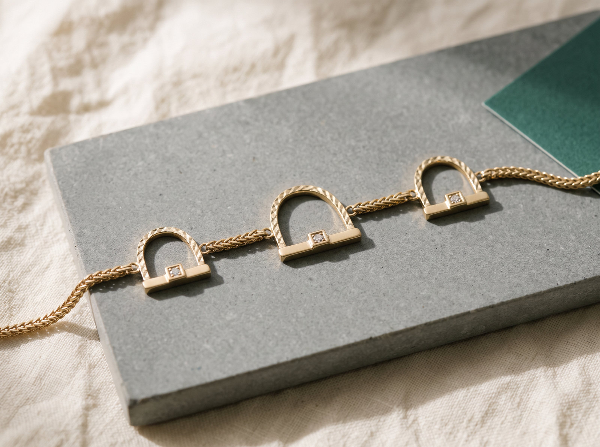
Etsy metni
Başlık 91/140
14K Gold Stirrup Bracelet, Three Lab Grown Sapphires, Franco Chain, Equestrian Gift for Her
Etiketler (13)
14k gold bracelet, stirrup bracelet, equestrian jewelry, lab grown sapphire, franco chain, horse lover gift, station bracelet, riding jewelry, diamond cut gold, derby jewelry, christmas gift, gift for her, solid gold bracelet
Malzemeler
14k yellow gold, 14k gold franco chain, lab grown white sapphire
Açıklama
Three small 14k gold stirrups on a fine Franco chain, each with one lab grown white sapphire flush set in its base. A Christmas gift for a rider, and a quiet equestrian piece for every season after it. THE PIECE Three flat stations about 13 mm apart: a centre stirrup 8.5 mm tall and two side stirrups 6.5 mm tall. Each is a rounded open arch of diamond-cut gold, 1.3 by 1.1 mm in section, on a flat base bar 1.0 mm thick, with the inner arch mirror-polished. A raised square pad 2.4 mm wide in the middle of each base bar holds the stone. Franco chain 1.3 mm. GOLD WEIGHT 3.64 g of 14k gold, counting the station, chain, clasp, rings and tag. On the scale the finished bracelet weighs 3.65 g in total with the stones. Each piece is weighed after finishing and checked against this design weight. STONES Three 1.5 mm round lab grown white sapphires, about 0.051 ct together, one flush set in each stirrup base so its table sits level with the gold. A small hole under each stone lets light in and keeps the setting clean. LENGTH AND FIT 16.5 cm closed, plus a 2 cm extender with rings at 17.5 and 18.5 cm, so it fits 16.5-18.5 cm. It closes with a 9 mm lobster clasp, and the extender ends in a small tag stamped 14K. HOW IT IS MADE Made to order. Each stirrup is cast in 14k gold as one piece with its pad and both chain rings, then diamond-cut and polished. There is no solder in the stations; every join made at the bench is closed with a laser weld. The stone settings are cut and the stones are set after polishing. CARE Wipe with a soft cloth after wearing. Take it off before swimming and keep it away from chlorine and household chemicals. Warm soapy water and a soft brush will clean the chain and the setting. GIFTING Arrives in a gift box, ready to give. Made to order. The processing time is shown at checkout.
Atölye kartı
Kapali 16.5 + 2.0 cm. Merkez uzengi: 8.5 yuksek, ic genislik 4.2, tread 7.5 x 1.8 x 1.0, kemer merkez hatti 16.9 mm. Yanlar: 6.5 yuksek, ic genislik 3.2, tread 5.5 x 1.6 x 1.0, kemer merkez hatti 12.3 mm. Kemer bitmis 1.3 x 1.1 (model 1.6 x 1.4; kucuk resim okunurlugu icin 1.2 x 1.0'dan buyutuldu). Tas boss 2.4 x 2.4 x 1.5. Eksen boylari 12.7 / 10.7 / 10.7 mm. Franco 1.3 toplam 11.69 cm, 4 segment: 4.52 + 1.33 + 1.33 + 4.52 cm; istasyonlar arasi 13.3 mm. C-halka bosluk 0.9.
Her uzengi kemer + tread + boss + iki C-halkayla (tread uclarinda) TEK PARCA dokulur, standart 14KY. Boss tread'in ustune kalkar, arka duz; tasin altinda O0.8 delik. C-halkalar Franco segment uclarina LAZERLE kapatilir (lehim yok).
Tezgâh sırası
- 1. CAD: +0.2 mm bitirme payi (+0.1 mm elmas tirasli kemerlerde; kemer model 1.6 x 1.4 -> bitmis 1.3 x 1.1); C-halkalar 0.9 mm bosluklu (Franco uc halkasi teli <=0.8 + 0.1); tum giyilen uclar R>=0.4
- 2. Recine baski -> yatirim -> vakum dokum, standart 14K sari dokum alasimi (firina girmez)
- 3. Yolluk kesimi, gozenek kontrolu
- 4. Tesviye + on-cila (0.15-0.20 mm alinir)
- 5. Ic kemer ayna parlatma
- 6. Elmas tiras (diamond-cut) faseta, kemer dis yuzleri
- 7. Pilot cukurlardan O0.8 alt delik del (3 tread boss'u); flush yuva frezesi (koni, rondist 0.02 mm bindirme)
- 8. 3 x 1.5 mm lab-grown tas SOGUK oturtma, el burnisheriyle kenar itme
- 9. Franco'yu 4.52 / 1.33 / 1.33 / 4.52 cm kes; C-halkalari segment uc halkalarina gecir, kapat, LAZER kaynak (lehim yok)
- 10. Kopca grubu: lobster + 4 atlama halkasi + uzatma + plaket; lazer kaynak
- 11. Son cila (ultrasonik serbest)
- 12. QC: tarti vs gram kurulumu +/-3%, istasyon araligi 13.3 mm, kemer kesiti 1.3 x 1.1, tas sikilik (igneyle itme), 17.5/18.5 uzunluk, kopca 2 kg cekme testi, 250px kucuk resim (ana gorsel istasyon yakin cekimi)
Malzeme listesi
- Dokum alasimi standart 14KY: bitmis istasyon(lar) + dokum C-halkalar 1.662 g x1.15 = 1.91 g
- Taslar: 3 x 1.5 mm lab-grown beyaz safir, toplam ~0.051 ct
- Zincir: Franco 1.3 mm 14K solid 11.69 cm = 1.23 g (KILITSIZ g/cm; numune tartisi sart)
- Lobster kopca 14KY 9x5mm, 1 adet: 0.30 g (TAHMIN — tedarikci numunesi tartilacak; zincir kilitsiz alindigi icin yalniz burada sayilir)
- Atlama halkasi 14KY 1.0mm tel, ID1.5/OD3.5, 4 adet (kilit, 16.5 / 17.5 / 18.5 cm halkalari): 4 x 0.081 = 0.32 g
- Uzatma zinciri 14KY solid cable 1.2mm, 2 x 6.5mm = 1.3 cm: 0.059 g (kilitsiz g/cm 0.0456)
- Damga plaketi 14KY 4.0x2.5x0.6mm (14K + tescilli marka, lazer kazima): 0.073 g
- TOPLAM ALTIN 3.64 g (bant 3.2-3.9); terazide toplam 3.65 g. Gram kurulumu: Merkez uzengi 8.5 yuks: kemer merkez hat 16.9mm x 1.3x1.1 + tread 7.5x1.8x1.0 + boss 2.4x2.4x1.5 - yuva: 24.17 + 13.50 + 4.32 - 0.81 = 41.18mm3 x0.01307 = 0.538 g | 2 yan uzengi 6.5 yuks: kemer merkez hat 12.3mm x 1.3x1.1 + tread 5.5x1.6x1.0 + boss - yuva: 2 x (17.59 + 8.80 + 4.80 - 0.81) = 60.76mm3 x0.01307 = 0.794 g | 6 x dokum C-halka (1.0mm kesit, ID1.2; gercek torus, gomulme dusulmus): 4.2mm3 x6 x0.01307 = 0.329 g | Zincir franco13, 11.69 cm (KILITSIZ g/cm secildi, kilit ayrica sayiliyor): Franco 1.3 kilitsiz 0.1051 g/cm (0.1127 kilit dahil ara deger x 0.933 Franco 1.5 kilit orani) x 11.69cm = 1.229 g | Lobster 14KY 9x5mm (satin alma, TAHMIN; zincir g/cm KILITSIZ alindigi icin kilit burada BIR kez sayilir): tedarikci tartisi bekleniyor = 0.300 g | 4 x atlama halkasi 1.0mm tel ID1.5 (kilit, 16.5, 17.5, 18.5): 2*pi^2*1.25*0.5^2=6.17mm3 x4 x0.01307 = 0.322 g | Uzatma zinciri cable 1.2mm 2x6.5mm (kilitsiz g/cm): 0.0456 g/cm x1.3cm = 0.059 g | Damga plaketi 4.0x2.5x0.6 (14K+tescilli marka): 5.57mm3 x0.01307 = 0.073 g
Arıza modları
| Arıza | Tasarım nasıl önlüyor |
|---|---|
| Tread yuzundeki tas kuletinin bilege degip kirilmasi | Boss 1.5 mm kalin (KANIT); kulet alttaki delige oturur, arka duz |
| Kemerin ezilip ovallesmesi | Kemer bitmis 1.3 x 1.1, yapisal min 0.8'in ustunde; tread ile kapali halka |
| Istasyonlarin donup taslarin alta gelmesi | Franco duz kare dokuma + C-halkalar tread ekseninde |
| Tas gevsemesi | Yanal duvar 0.45, rondist bindirme 0.02 mm, burnisherle itme |
| Kucuk resimde istasyonlarin okunmamasi (~1.5 px/mm) | Kemer 1.3 x 1.1'e cikti; listing ana gorseli istasyon yakin cekimi |
Tolerans
| Kural | Değer | |
|---|---|---|
| L4 ev sahibi >=1.5 (1.5 mm tas) | boss 1.5 | ✓ |
| L4 yanal duvar >=0.35 | 0.45 | ✓ |
| L4 alt delik | O0.8 | ✓ |
| L4 <=7 tas, pave yok | 3 | ✓ |
| L5 dekoratif >=0.6 | en ince kemer-tread birlesimi 1.0 | ✓ |
| L5 yapisal >=0.8 | kemer 1.3 x 1.1, tread 1.0 | ✓ |
| L5 tasiyici halka/kulp kesiti >=1.0 mm | dokum C-halka 1.0 mm kesit, hacim 4.2 mm3 (gercek torus, gomulme dusulmus); atlama halkalari 1.0 mm tel | ✓ |
| L5 aciklik >=0.6, derinlik <=2x genislik | kemer ici 4.2 / 3.2 genis, 1.1 derin; C-halka ID 1.2 / 1.0, bosluk 0.9 | ✓ |
| L5 elmas tiras payi +0.3 | kemer model 1.6 x 1.4 -> bitmis 1.3 x 1.1 | ✓ |
| L6 hollow yok | dolu dokum | ✓ |
| L7 altin gram bandi 3.2-3.9 g | 3.64 g (zincir KILITSIZ g/cm, kilit bir kez sayildi; C-halka 4.2 mm3) | ✓ |
| L8 16.5 + 2.0 cm, gram 18.5 cm'de | 16.5 kapali + 2 x 1.0 cm uzatma; gram_build uzatmayi iceriyor | ✓ |
| L11 equestrian ailesi <=3 | B6 + B7 = 2 | ✓ |
| L12 tek kahraman | uc kademeli uzengi + 3 tas | ✓ |
| Tasiyici yuk yolu (halka koku dahil) her yerde >=1.0 mm kesit | tread ucu 1.8 x 1.0 (merkez) / 1.6 x 1.0 (yan); C-halka 1.0 kesit | ✓ |
| C-halka boslugu >= gecen tel + 0.1 mm | dokum bosluk 0.9 mm >= gecen tel 0.80 + 0.1 (tel capi tedarikci spesifikasyonuyla kilitlenir) | ✓ |
| Zincir segmentleri ve istasyon araligi tanimli | 4.52 + 1.33 + 1.33 + 4.52 = 11.70 cm (~11.69); istasyonlar arasi 13.3 mm | ✓ |
Görsel promptları (16)
- 01Hero / arama küçük resmi: tek ürün, marka natürmortu, 4:3.Referanssız
Quiet luxury editorial still-life product photography. Warm ivory linen ground, honed grey stone slab, a sliver of deep jade-green matte card. Soft directional window light from upper left, long soft shadow, shallow depth of field. Solid yellow gold with warm antique tone. Restrained heirloom mood. No text, no logo, no glitter, no Christmas decoration. The piece: 14K yellow gold bracelet on a 1.3 mm Franco chain, 16.5 cm long, 2.0 cm extender. Three flat stirrup-shaped stations, 13 mm apart: one 8.5 mm tall in the middle, two 6.5 mm tall at the sides. Each stirrup is a rounded arch of 1.3 by 1.1 mm diamond-cut gold on a flat base bar; the chain attaches at both ends of the base bar and the arch extends sideways from the chain. A raised square pad 2.4 mm wide at the middle of each base bar holds one 1.5 mm round lab-grown white sapphire, flush set. 9 mm lobster clasp. The stones are exactly these and no others: three 1.5 mm round lab-grown white sapphires, one flush-set in the square pad at the middle of each stirrup base bar. No other stone and no empty setting anywhere on the piece. The piece has no enamel and no colour: every surface is yellow gold. The decorated centre of the bracelet lies face up at the centre of the honed grey stone slab, close to the camera; the chain runs away from it on both sides in a soft curve and leaves the frame at the left and right edges; the clasp is out of frame. Seen from about 30 degrees above with a 100 mm macro lens, the decorated part in razor-sharp focus, filling about a third of the frame width, with the chain softly out of focus toward the frame edges. No people and no hands.
Alt metin 14K gold stirrup bracelet, three diamond-cut gold stirrups each set with a lab-grown white sapphire, Franco chain
- 02Takılı hâli: ölçek ve duruş. Hero'dan sonra dönüşümü en çok etkileyen kare.Referans: hero kırpımı
Quiet luxury editorial photography in warm ivory, stone grey and deep jade-green tones, soft directional window light from the upper left, true colour, fine film grain, no heavy retouching. No text, no logo, no watermark, no glitter. The attached reference image is a crop of this exact piece: keep its shape, proportions, gold colour and stones exactly as in the reference. The piece: 14K yellow gold bracelet on a 1.3 mm Franco chain, 16.5 cm long, 2.0 cm extender. Three flat stirrup-shaped stations, 13 mm apart: one 8.5 mm tall in the middle, two 6.5 mm tall at the sides. Each stirrup is a rounded arch of 1.3 by 1.1 mm diamond-cut gold on a flat base bar; the chain attaches at both ends of the base bar and the arch extends sideways from the chain. A raised square pad 2.4 mm wide at the middle of each base bar holds one 1.5 mm round lab-grown white sapphire, flush set. 9 mm lobster clasp. The stones are exactly these and no others: three 1.5 mm round lab-grown white sapphires, one flush-set in the square pad at the middle of each stirrup base bar. No other stone and no empty setting anywhere on the piece. The piece has no enamel and no colour: every surface is yellow gold. Worn on a woman's left wrist, the forearm resting on a folded warm-ivory wool knit, hand relaxed and open; the stations sit face up on the top of the wrist; it is the only jewellery in the image, no watch and no rings; true to scale, the main element measures about 8.5 mm across; anatomically correct hands with five fingers, short natural unpolished nails.
Alt metin 14K gold stirrup bracelet, three diamond-cut gold stirrups each set with a lab-grown white sapphire, Franco chain, worn
- 03Makro işçilik: fiyatı meşrulaştıran detay (mine yüzeyi, flush taş, kenar bitimi).Referans: hero kırpımı
Quiet luxury editorial photography in warm ivory, stone grey and deep jade-green tones, soft directional window light from the upper left, true colour, fine film grain, no heavy retouching. No text, no logo, no watermark, no glitter. The attached reference image is a crop of this exact piece: keep its shape, proportions, gold colour and stones exactly as in the reference. The piece: 14K yellow gold bracelet on a 1.3 mm Franco chain, 16.5 cm long, 2.0 cm extender. Three flat stirrup-shaped stations, 13 mm apart: one 8.5 mm tall in the middle, two 6.5 mm tall at the sides. Each stirrup is a rounded arch of 1.3 by 1.1 mm diamond-cut gold on a flat base bar; the chain attaches at both ends of the base bar and the arch extends sideways from the chain. A raised square pad 2.4 mm wide at the middle of each base bar holds one 1.5 mm round lab-grown white sapphire, flush set. 9 mm lobster clasp. The stones are exactly these and no others: three 1.5 mm round lab-grown white sapphires, one flush-set in the square pad at the middle of each stirrup base bar. No other stone and no empty setting anywhere on the piece. The piece has no enamel and no colour: every surface is yellow gold. Extreme close-up macro, 100 mm macro lens: The centre stirrup with its diamond-cut gold arch and the 1.5 mm lab-grown white sapphire flush-set in the square pad on its base bar. The rest of the piece falls away into soft focus on warm-ivory linen.
Alt metin Close-up of the diamond-cut gold stirrup arch and its flush-set lab-grown sapphire
- 04Elde ölçek: mm'yi parmak ucuna çevirir, 'beklediğimden küçük' iadesini önler.Referans: hero kırpımı
Quiet luxury editorial photography in warm ivory, stone grey and deep jade-green tones, soft directional window light from the upper left, true colour, fine film grain, no heavy retouching. No text, no logo, no watermark, no glitter. The attached reference image is a crop of this exact piece: keep its shape, proportions, gold colour and stones exactly as in the reference. The piece: 14K yellow gold bracelet on a 1.3 mm Franco chain, 16.5 cm long, 2.0 cm extender. Three flat stirrup-shaped stations, 13 mm apart: one 8.5 mm tall in the middle, two 6.5 mm tall at the sides. Each stirrup is a rounded arch of 1.3 by 1.1 mm diamond-cut gold on a flat base bar; the chain attaches at both ends of the base bar and the arch extends sideways from the chain. A raised square pad 2.4 mm wide at the middle of each base bar holds one 1.5 mm round lab-grown white sapphire, flush set. 9 mm lobster clasp. The stones are exactly these and no others: three 1.5 mm round lab-grown white sapphires, one flush-set in the square pad at the middle of each stirrup base bar. No other stone and no empty setting anywhere on the piece. The piece has no enamel and no colour: every surface is yellow gold. Close-up for scale against a plain warm-ivory background thrown softly out of focus: the bracelet held up between the thumb and index finger of a woman's hand by its clasp, the chain hanging straight down so every station faces the camera; true to scale, the main element measures about 8.5 mm across, a fingertip is about 16 mm wide; it is the only jewellery in the image; anatomically correct hands with five fingers, short natural unpolished nails.
Alt metin 14K gold stirrup bracelet, three diamond-cut gold stirrups each set with a lab-grown white sapphire, Franco chain, held between fingers for scale
- 05Arka ve bulgular: dolu gövde, kilit / çivi / iğne; sağlamlık sorusunu cevaplar.Referans: hero kırpımı
Quiet luxury editorial photography in warm ivory, stone grey and deep jade-green tones, soft directional window light from the upper left, true colour, fine film grain, no heavy retouching. No text, no logo, no watermark, no glitter. The attached reference image is a crop of this exact piece: keep its shape, proportions, gold colour and stones exactly as in the reference. The piece: 14K yellow gold bracelet on a 1.3 mm Franco chain, 16.5 cm long, 2.0 cm extender. Three flat stirrup-shaped stations, 13 mm apart: one 8.5 mm tall in the middle, two 6.5 mm tall at the sides. Each stirrup is a rounded arch of 1.3 by 1.1 mm diamond-cut gold on a flat base bar; the chain attaches at both ends of the base bar and the arch extends sideways from the chain. A raised square pad 2.4 mm wide at the middle of each base bar holds one 1.5 mm round lab-grown white sapphire, flush set. 9 mm lobster clasp. The stones are exactly these and no others: three 1.5 mm round lab-grown white sapphires, one flush-set in the square pad at the middle of each stirrup base bar. No other stone and no empty setting anywhere on the piece. The piece has no enamel and no colour: every surface is yellow gold. The back of the piece, top-down on honed grey stone: The flat solid backs of the three base bars, with a small round hole under each stone.
Alt metin Back of the bracelet showing the flat solid backs of the stirrups with holes under the stones
- 06Tam boy / çift / mekanizma: uzunluk, ayar ve ne geldiğini tek karede gösterir.Referans: hero kırpımı
Quiet luxury editorial photography in warm ivory, stone grey and deep jade-green tones, soft directional window light from the upper left, true colour, fine film grain, no heavy retouching. No text, no logo, no watermark, no glitter. The attached reference image is a crop of this exact piece: keep its shape, proportions, gold colour and stones exactly as in the reference. The piece: 14K yellow gold bracelet on a 1.3 mm Franco chain, 16.5 cm long, 2.0 cm extender. Three flat stirrup-shaped stations, 13 mm apart: one 8.5 mm tall in the middle, two 6.5 mm tall at the sides. Each stirrup is a rounded arch of 1.3 by 1.1 mm diamond-cut gold on a flat base bar; the chain attaches at both ends of the base bar and the arch extends sideways from the chain. A raised square pad 2.4 mm wide at the middle of each base bar holds one 1.5 mm round lab-grown white sapphire, flush set. 9 mm lobster clasp. The stones are exactly these and no others: three 1.5 mm round lab-grown white sapphires, one flush-set in the square pad at the middle of each stirrup base bar. No other stone and no empty setting anywhere on the piece. The piece has no enamel and no colour: every surface is yellow gold. The whole bracelet laid out in one straight horizontal line on warm-ivory linen, top-down, from the lobster clasp at one end to the extender chain at the other, every station face up and the extender rings visible.
Alt metin 14K gold stirrup bracelet, three diamond-cut gold stirrups each set with a lab-grown white sapphire, Franco chain, full length
- 07Yan profil: kalınlık ve kütle, düz baskı değil gerçek altın olduğunu gösterir.Referans: hero kırpımı
Quiet luxury editorial photography in warm ivory, stone grey and deep jade-green tones, soft directional window light from the upper left, true colour, fine film grain, no heavy retouching. No text, no logo, no watermark, no glitter. The attached reference image is a crop of this exact piece: keep its shape, proportions, gold colour and stones exactly as in the reference. The piece: 14K yellow gold bracelet on a 1.3 mm Franco chain, 16.5 cm long, 2.0 cm extender. Three flat stirrup-shaped stations, 13 mm apart: one 8.5 mm tall in the middle, two 6.5 mm tall at the sides. Each stirrup is a rounded arch of 1.3 by 1.1 mm diamond-cut gold on a flat base bar; the chain attaches at both ends of the base bar and the arch extends sideways from the chain. A raised square pad 2.4 mm wide at the middle of each base bar holds one 1.5 mm round lab-grown white sapphire, flush set. 9 mm lobster clasp. The stones are exactly these and no others: three 1.5 mm round lab-grown white sapphires, one flush-set in the square pad at the middle of each stirrup base bar. No other stone and no empty setting anywhere on the piece. The piece has no enamel and no colour: every surface is yellow gold. Side profile at eye level on honed grey stone, the camera level with the piece: Side profile: flat stirrups 1.0 mm thick at the base bar and 1.1 mm at the arch, with the stone pads rising to 1.5 mm.
Alt metin Side profile of the bracelet showing its thickness
- 08Kış yaşam stili: sezonu Noel dekoru olmadan kurar.Referans: hero kırpımı
Quiet luxury editorial photography in warm ivory, stone grey and deep jade-green tones, soft directional window light from the upper left, true colour, fine film grain, no heavy retouching. No text, no logo, no watermark, no glitter. The attached reference image is a crop of this exact piece: keep its shape, proportions, gold colour and stones exactly as in the reference. The piece: 14K yellow gold bracelet on a 1.3 mm Franco chain, 16.5 cm long, 2.0 cm extender. Three flat stirrup-shaped stations, 13 mm apart: one 8.5 mm tall in the middle, two 6.5 mm tall at the sides. Each stirrup is a rounded arch of 1.3 by 1.1 mm diamond-cut gold on a flat base bar; the chain attaches at both ends of the base bar and the arch extends sideways from the chain. A raised square pad 2.4 mm wide at the middle of each base bar holds one 1.5 mm round lab-grown white sapphire, flush set. 9 mm lobster clasp. The stones are exactly these and no others: three 1.5 mm round lab-grown white sapphires, one flush-set in the square pad at the middle of each stirrup base bar. No other stone and no empty setting anywhere on the piece. The piece has no enamel and no colour: every surface is yellow gold. Morning window light: a woman's left wrist wearing the bracelet rests on the cuff of an ivory cable-knit sweater beside a small stoneware cup of black coffee on a pale oak table; it is the only jewellery in the image; anatomically correct hands with five fingers, short natural unpolished nails.
Alt metin 14K gold stirrup bracelet, three diamond-cut gold stirrups each set with a lab-grown white sapphire, Franco chain, styled with winter knitwear
- 09Hediye kutusu: Noel alıcısının ilk sorusu, hediyeye hazır mı?Referans: hero kırpımı
Quiet luxury editorial photography in warm ivory, stone grey and deep jade-green tones, soft directional window light from the upper left, true colour, fine film grain, no heavy retouching. No text, no logo, no watermark, no glitter. The attached reference image is a crop of this exact piece: keep its shape, proportions, gold colour and stones exactly as in the reference. The piece: 14K yellow gold bracelet on a 1.3 mm Franco chain, 16.5 cm long, 2.0 cm extender. Three flat stirrup-shaped stations, 13 mm apart: one 8.5 mm tall in the middle, two 6.5 mm tall at the sides. Each stirrup is a rounded arch of 1.3 by 1.1 mm diamond-cut gold on a flat base bar; the chain attaches at both ends of the base bar and the arch extends sideways from the chain. A raised square pad 2.4 mm wide at the middle of each base bar holds one 1.5 mm round lab-grown white sapphire, flush set. 9 mm lobster clasp. The stones are exactly these and no others: three 1.5 mm round lab-grown white sapphires, one flush-set in the square pad at the middle of each stirrup base bar. No other stone and no empty setting anywhere on the piece. The piece has no enamel and no colour: every surface is yellow gold. Top-down: the bracelet coiled loosely inside a small open square gift box in plain warm-ivory card with a soft ivory insert, the lid set beside it, a length of narrow deep jade-green ribbon untied beside the box, on honed grey stone. No branding, no printed pattern, no tissue paper, no Christmas decoration, exactly one box.
Alt metin 14K gold stirrup bracelet, three diamond-cut gold stirrups each set with a lab-grown white sapphire, Franco chain in a gift box
- 10Gerçek renk: nötr gün ışığında altın ve mine rengi; renk kaynaklı iadeyi azaltır.Referans: hero kırpımı
Quiet luxury editorial photography in warm ivory, stone grey and deep jade-green tones, soft directional window light from the upper left, true colour, fine film grain, no heavy retouching. No text, no logo, no watermark, no glitter. The attached reference image is a crop of this exact piece: keep its shape, proportions, gold colour and stones exactly as in the reference. The piece: 14K yellow gold bracelet on a 1.3 mm Franco chain, 16.5 cm long, 2.0 cm extender. Three flat stirrup-shaped stations, 13 mm apart: one 8.5 mm tall in the middle, two 6.5 mm tall at the sides. Each stirrup is a rounded arch of 1.3 by 1.1 mm diamond-cut gold on a flat base bar; the chain attaches at both ends of the base bar and the arch extends sideways from the chain. A raised square pad 2.4 mm wide at the middle of each base bar holds one 1.5 mm round lab-grown white sapphire, flush set. 9 mm lobster clasp. The stones are exactly these and no others: three 1.5 mm round lab-grown white sapphires, one flush-set in the square pad at the middle of each stirrup base bar. No other stone and no empty setting anywhere on the piece. The piece has no enamel and no colour: every surface is yellow gold. Colour-accurate reference shot: the piece alone, top-down on plain matte white-ivory paper under even neutral north daylight, no shadow drama, no props, the piece centred and filling half the frame.
Alt metin 14K gold stirrup bracelet, three diamond-cut gold stirrups each set with a lab-grown white sapphire, Franco chain in neutral daylight, true colour
- 11Ölçü grafiği tabanı: sağ üçte bir boş; mm etiketleri sonra eklenir.Referans: hero kırpımı
Quiet luxury editorial photography in warm ivory, stone grey and deep jade-green tones, soft directional window light from the upper left, true colour, fine film grain, no heavy retouching. No text, no logo, no watermark, no glitter. The attached reference image is a crop of this exact piece: keep its shape, proportions, gold colour and stones exactly as in the reference. The piece: 14K yellow gold bracelet on a 1.3 mm Franco chain, 16.5 cm long, 2.0 cm extender. Three flat stirrup-shaped stations, 13 mm apart: one 8.5 mm tall in the middle, two 6.5 mm tall at the sides. Each stirrup is a rounded arch of 1.3 by 1.1 mm diamond-cut gold on a flat base bar; the chain attaches at both ends of the base bar and the arch extends sideways from the chain. A raised square pad 2.4 mm wide at the middle of each base bar holds one 1.5 mm round lab-grown white sapphire, flush set. 9 mm lobster clasp. The stones are exactly these and no others: three 1.5 mm round lab-grown white sapphires, one flush-set in the square pad at the middle of each stirrup base bar. No other stone and no empty setting anywhere on the piece. The piece has no enamel and no colour: every surface is yellow gold. The piece alone, top-down on plain warm-ivory paper, placed in the left two thirds of the frame; the right third is empty paper for dimension labels to be added later; even soft light, no props.
Alt metin 14K gold stirrup bracelet, three diamond-cut gold stirrups each set with a lab-grown white sapphire, Franco chain with space for dimensions
- 12El işçiliği: siparişe üretim hikâyesi, tezgâhta parça.Referans: hero kırpımı
Quiet luxury editorial photography in warm ivory, stone grey and deep jade-green tones, soft directional window light from the upper left, true colour, fine film grain, no heavy retouching. No text, no logo, no watermark, no glitter. The attached reference image is a crop of this exact piece: keep its shape, proportions, gold colour and stones exactly as in the reference. The piece: 14K yellow gold bracelet on a 1.3 mm Franco chain, 16.5 cm long, 2.0 cm extender. Three flat stirrup-shaped stations, 13 mm apart: one 8.5 mm tall in the middle, two 6.5 mm tall at the sides. Each stirrup is a rounded arch of 1.3 by 1.1 mm diamond-cut gold on a flat base bar; the chain attaches at both ends of the base bar and the arch extends sideways from the chain. A raised square pad 2.4 mm wide at the middle of each base bar holds one 1.5 mm round lab-grown white sapphire, flush set. 9 mm lobster clasp. The stones are exactly these and no others: three 1.5 mm round lab-grown white sapphires, one flush-set in the square pad at the middle of each stirrup base bar. No other stone and no empty setting anywhere on the piece. The piece has no enamel and no colour: every surface is yellow gold. The finished piece lying on a worn wooden jeweller's bench pin beside a steel burnisher, a fine half-round file and a pair of brass tweezers, warm lamp light, shallow depth of field, the piece in sharp focus; no hands.
Alt metin 14K gold stirrup bracelet, three diamond-cut gold stirrups each set with a lab-grown white sapphire, Franco chain on a jeweller's bench
- 13Motifin anlamı: sol üçte bir boş; sembol hikâyesi metni sonra eklenir.Referans: hero kırpımı
Quiet luxury editorial photography in warm ivory, stone grey and deep jade-green tones, soft directional window light from the upper left, true colour, fine film grain, no heavy retouching. No text, no logo, no watermark, no glitter. The attached reference image is a crop of this exact piece: keep its shape, proportions, gold colour and stones exactly as in the reference. The piece: 14K yellow gold bracelet on a 1.3 mm Franco chain, 16.5 cm long, 2.0 cm extender. Three flat stirrup-shaped stations, 13 mm apart: one 8.5 mm tall in the middle, two 6.5 mm tall at the sides. Each stirrup is a rounded arch of 1.3 by 1.1 mm diamond-cut gold on a flat base bar; the chain attaches at both ends of the base bar and the arch extends sideways from the chain. A raised square pad 2.4 mm wide at the middle of each base bar holds one 1.5 mm round lab-grown white sapphire, flush set. 9 mm lobster clasp. The stones are exactly these and no others: three 1.5 mm round lab-grown white sapphires, one flush-set in the square pad at the middle of each stirrup base bar. No other stone and no empty setting anywhere on the piece. The piece has no enamel and no colour: every surface is yellow gold. The piece alone, top-down on a deep jade-green matte card, placed in the right two thirds of the frame; the left third is empty card for a caption to be added later; soft directional light.
Alt metin 14K gold stirrup bracelet, three diamond-cut gold stirrups each set with a lab-grown white sapphire, Franco chain on a deep green card
- 14Yıl boyu takılır: 'yalnız Noel' itirazını kırar.Referans: hero kırpımı
Quiet luxury editorial photography in warm ivory, stone grey and deep jade-green tones, soft directional window light from the upper left, true colour, fine film grain, no heavy retouching. No text, no logo, no watermark, no glitter. The attached reference image is a crop of this exact piece: keep its shape, proportions, gold colour and stones exactly as in the reference. The piece: 14K yellow gold bracelet on a 1.3 mm Franco chain, 16.5 cm long, 2.0 cm extender. Three flat stirrup-shaped stations, 13 mm apart: one 8.5 mm tall in the middle, two 6.5 mm tall at the sides. Each stirrup is a rounded arch of 1.3 by 1.1 mm diamond-cut gold on a flat base bar; the chain attaches at both ends of the base bar and the arch extends sideways from the chain. A raised square pad 2.4 mm wide at the middle of each base bar holds one 1.5 mm round lab-grown white sapphire, flush set. 9 mm lobster clasp. The stones are exactly these and no others: three 1.5 mm round lab-grown white sapphires, one flush-set in the square pad at the middle of each stirrup base bar. No other stone and no empty setting anywhere on the piece. The piece has no enamel and no colour: every surface is yellow gold. Everyday wear, no season: a woman's left wrist wearing the bracelet over a laptop keyboard in soft daylight, plain white cotton shirt cuff; only jewellery in the image; anatomically correct hands with five fingers, short natural unpolished nails.
Alt metin 14K gold stirrup bracelet, three diamond-cut gold stirrups each set with a lab-grown white sapphire, Franco chain, everyday wear
- 15Hediye anı: duygu; Noel satın alma niyetine bağlar.Referans: hero kırpımı
Quiet luxury editorial photography in warm ivory, stone grey and deep jade-green tones, soft directional window light from the upper left, true colour, fine film grain, no heavy retouching. No text, no logo, no watermark, no glitter. The attached reference image is a crop of this exact piece: keep its shape, proportions, gold colour and stones exactly as in the reference. The piece: 14K yellow gold bracelet on a 1.3 mm Franco chain, 16.5 cm long, 2.0 cm extender. Three flat stirrup-shaped stations, 13 mm apart: one 8.5 mm tall in the middle, two 6.5 mm tall at the sides. Each stirrup is a rounded arch of 1.3 by 1.1 mm diamond-cut gold on a flat base bar; the chain attaches at both ends of the base bar and the arch extends sideways from the chain. A raised square pad 2.4 mm wide at the middle of each base bar holds one 1.5 mm round lab-grown white sapphire, flush set. 9 mm lobster clasp. The stones are exactly these and no others: three 1.5 mm round lab-grown white sapphires, one flush-set in the square pad at the middle of each stirrup base bar. No other stone and no empty setting anywhere on the piece. The piece has no enamel and no colour: every surface is yellow gold. A gift being given: two pairs of hands across a pale oak table, one pair holding out the small open warm-ivory gift box with the piece visible inside, the other reaching for it, soft warm window light, sleeves of ivory and grey knitwear; exactly one box and one piece of jewellery; anatomically correct hands with five fingers, short natural unpolished nails.
Alt metin 14K gold stirrup bracelet, three diamond-cut gold stirrups each set with a lab-grown white sapphire, Franco chain given as a gift
- 16Mağaza ızgarası / Pinterest: koyu jade zeminde yüksek kontrast kare.Referans: hero kırpımı
Quiet luxury editorial photography in warm ivory, stone grey and deep jade-green tones, soft directional window light from the upper left, true colour, fine film grain, no heavy retouching. No text, no logo, no watermark, no glitter. The attached reference image is a crop of this exact piece: keep its shape, proportions, gold colour and stones exactly as in the reference. The piece: 14K yellow gold bracelet on a 1.3 mm Franco chain, 16.5 cm long, 2.0 cm extender. Three flat stirrup-shaped stations, 13 mm apart: one 8.5 mm tall in the middle, two 6.5 mm tall at the sides. Each stirrup is a rounded arch of 1.3 by 1.1 mm diamond-cut gold on a flat base bar; the chain attaches at both ends of the base bar and the arch extends sideways from the chain. A raised square pad 2.4 mm wide at the middle of each base bar holds one 1.5 mm round lab-grown white sapphire, flush set. 9 mm lobster clasp. The stones are exactly these and no others: three 1.5 mm round lab-grown white sapphires, one flush-set in the square pad at the middle of each stirrup base bar. No other stone and no empty setting anywhere on the piece. The piece has no enamel and no colour: every surface is yellow gold. Top-down flat lay of the piece centred on a deep jade-green matte card with a narrow border of warm-ivory linen at the top edge, crisp soft light, the piece filling about 40 percent of the frame so a square crop keeps all of it.
Alt metin 14K gold stirrup bracelet, three diamond-cut gold stirrups each set with a lab-grown white sapphire, Franco chain, flat lay on deep green
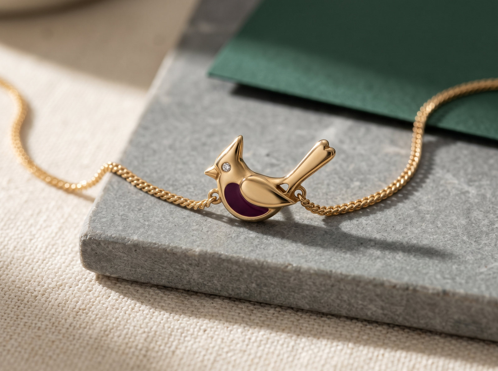
Etsy metni
Başlık 84/140
14K Gold Cardinal Bracelet, Berry Enamel Bird, Lab Grown Sapphire Eye, Memorial Gift
Etiketler (13)
14k gold bracelet, cardinal bracelet, cardinal jewelry, memorial jewelry, enamel bracelet, berry enamel, vitreous enamel, lab grown sapphire, bird bracelet, franco chain, christmas gift, sympathy gift, solid gold bracelet
Malzemeler
14k yellow gold, vitreous enamel, lab grown white sapphire, 14k gold franco chain
Açıklama
A small 14k gold cardinal in profile, its breast inlaid with deep berry glass enamel and a lab grown white sapphire set as its eye. Often chosen as a Christmas gift, the cardinal is also a remembrance bird, which keeps it meaningful all year. THE PIECE One flat bird 10.5 mm long, 8.5 mm tall and 1.4 mm thick, with an upright crest, a short beak and a raised tail, all with rounded tips. The body and wing are smooth polished gold, with two small open cut-outs behind the wing and under the tail. The breast is a single enamel field inside a 0.7 mm gold rim. Franco chain 1.5 mm. GOLD WEIGHT 3.52 g of 14k gold, counting the station, chain, clasp, rings and tag. On the scale the finished bracelet weighs 3.54 g in total with the enamel and stone. Each piece is weighed after finishing and checked against this design weight. ENAMEL Kiln-fired vitreous enamel (glass), opaque deep berry (dark purple-red). It fills the single breast cell. The enamel surface sits 0.1 mm below the gold edge, so the gold takes knocks first. Fired glass is hard but can chip under a sharp knock, so take the bracelet off for the gym and the pool, keep it away from chlorine and harsh chemicals, and clean the enamel with warm soapy water and a soft brush. STONES One 1.5 mm round lab grown white sapphire, about 0.017 ct, flush set as the eye, level with the gold and 1.2 mm away from the enamel. A small hole behind the stone lets light in. LENGTH AND FIT 16.5 cm closed, plus a 2 cm extender with rings at 17.5 and 18.5 cm, so it fits 16.5-18.5 cm. It closes with a 9 mm lobster clasp, and the extender ends in a small tag stamped 14K. HOW IT IS MADE Made to order. The station is cast in zinc-free 14k gold in one piece with its chain rings, and the enamel cells are formed in the casting itself. There is no solder in the station: the enamel is fired three times, and every join is closed afterwards with a laser weld away from the enamel. The stone is set last, after the final firing. CARE Wipe the gold with a soft cloth. Store the bracelet on its own so harder pieces do not knock the enamel. No ultrasonic or steam cleaning. GIFTING Arrives in a gift box, ready to give. Made to order. The processing time is shown at checkout.
Atölye kartı
Kapali 16.5 + 2.0 cm. Kus 10.5 x 8.5 x 1.4 mm (goz yerinde 1.5); govde ve kanat duz, parlak, dokusuz altin (kanatta kazima/tuy yok); 2 openwork (kanat arkasi 1.3, kuyruk alti 1.1 mm); gogus hucresi ~14.5 mm2, en dar 1.6 mm, 0.55 derin; cevre duvar 0.70. Tas mineden 1.2 mm. C-halkalar kuyruk ucu ve gogus onunde 1.5 mm ciplak pedde, bosluk 0.9; eksen boyu 15.7 mm. Franco 1.5 x 13.53 cm.
Kus + iki C-halka (1.5 mm ciplak pedler uzerinde) TEK PARCA; cinkosuz 14KY vakum dokum. Hucre dokumde birakilir. Lehim yok. Zincir ve tas pisirimden sonra takilir; C-halkalar lazerle kapatilir.
Tezgâh sırası
- 1. CAD: hucre DOKUMDE birakilir, taban fileto R0.2, +0.2 mm bitirme payi; gaga/tepelik/kuyruk uclari 0.8 R0.4; C-halkalar 0.9 mm bosluklu (gecen zincir uc halkasi teli <= 0.8 mm + 0.1); goz yerine yalniz 0.5 mm pilot cukur
- 2. Recine baski -> yatirim -> cinkosuz 'enamelable' 14K sari (Otto Frei 846-180 esasli, yazili Zn=0 sertifikasi + solidus/DSC), vakum dokum
- 3. Yolluk kesimi, gozenek kontrolu (hucre tabani 10x; gozenekli parca HURDA)
- 4. Tesviye; hucre tabani temizlenir (0.55 olculur); hamlac lehimi YOK
- 5. Yuzey zenginlestirme 4 dongu: ~593 C + %10 H2SO4
- 6. <=760 C'de olgunlasan kursunsuz yumusak opak mine (or. Soyer soft serisi), renk basina kupon; 760 C kuponunda olgunlasmazsa pisirim 770 C ile sinirlanir (bogurtlen yanmasina karsi en dusuk olgunlasma sicakligi secilir): derin bogurtlen opak mine yas-dolgu kat 1
- 7. Pisirim 1: 760 C, 60-75 sn, kalibre termokupl
- 8. Kat 2; Pisirim 2: 760 C, 60-75 sn
- 9. Tasla zimpara (su altinda): yuzey kenardan 0.10-0.15 mm asagida
- 10. Pisirim 3 (flash): 760 C, 40-50 sn — toplam 3, hepsi bandin alt ucunda (bogurtlen burnout korumasi)
- 11. Asitsiz oksit temizligi, mine maskeli
- 12. Goz: pilot cukurdan O0.8 alt delik, flush yuva frezesi
- 13. 1 x 1.5 mm lab-grown tas SOGUK oturtma, el burnisheri (mine maskeli; cekicli el aleti KULLANILMAZ)
- 14. C-halkalari Franco uc halkalarina gecir, yastikli fiksturde soguk kapat; lazer kaynak (Plasti-tac + parlak gumus siper, dusuk guc, hava sogutma; dikis mineden >=1.5 mm, ciplak ped uzerinde)
- 15. Kopca grubu: lobster + 4 atlama halkasi + uzatma + plaket; lazer
- 16. Son cila, mine maskeli; ultrasonik/buhar YOK
- 17. QC: tarti vs gram kurulumu +/-3%, mine 10x igne deligi + renk (kararma) + olgunlasma (parlaklik) kontrolu, kanat yuzeyi dokusuz, mine-kenar derinligi min 0.10, 17.5/18.5 uzunluk, kopca 2 kg cekme, 250px kucuk resim
Malzeme listesi
- Dokum alasimi cinkosuz 14KY (yazili Zn=0 sertifikasi + solidus/DSC): bitmis istasyon(lar) + dokum C-halkalar 0.871 g x1.15 = 1.00 g
- Mine tozu: opak derin bogurtlen, <=760 C'de olgunlasan kursunsuz yumusak opak mine (or. Soyer soft serisi), renk basina kupon; 760 C kuponunda olgunlasmazsa pisirim 770 C ile sinirlanir (bogurtlen yanmasina karsi en dusuk olgunlasma sicakligi secilir); Cd/Se icerigi SDS ile teyit; dolu 16 mg, tuketim ~50 mg
- Tas: 1 x 1.5 mm lab-grown beyaz safir ~0.017 ct
- Zincir: Franco 1.5 mm 14K solid 13.53 cm = 1.89 g (KILITSIZ g/cm; numune tartisi sart)
- Lobster kopca 14KY 9x5mm, 1 adet: 0.30 g (TAHMIN — tedarikci numunesi tartilacak; zincir kilitsiz alindigi icin yalniz burada sayilir)
- Atlama halkasi 14KY 1.0mm tel, ID1.5/OD3.5, 4 adet (kilit, 16.5 / 17.5 / 18.5 cm halkalari): 4 x 0.081 = 0.32 g
- Uzatma zinciri 14KY solid cable 1.2mm, 2 x 6.5mm = 1.3 cm: 0.059 g (kilitsiz g/cm 0.0456)
- Damga plaketi 14KY 4.0x2.5x0.6mm (14K + tescilli marka, lazer kazima): 0.073 g
- TOPLAM ALTIN 3.52 g (bant 3.2-3.9); terazide toplam 3.54 g. Gram kurulumu: Kardinal profil plaka 10.5x8.5 (dolgu 0.60) - 6.0mm2 openwork, x1.4: 47.55mm2 x1.4 = 66.57mm3 x0.01307 = 0.870 g | Gogus hucresi (cikarma) 14.5mm2 x0.55: -7.98mm3 x0.01307 = -0.104 g | Goz kabartmasi O2.4 x +0.1 - 1.5 tas yuvasi: -0.36mm3 x0.01307 = -0.005 g | 2 x dokum C-halka (1.0mm kesit, ID1.2; gercek torus, gomulme dusulmus): 4.2mm3 x2 x0.01307 = 0.110 g | Zincir franco15, 13.53 cm (KILITSIZ g/cm secildi, kilit ayrica sayiliyor): Franco 1.5 kilitsiz 0.140 g/cm (U.S. Jewels 16in 6.1 g ve 7in 2.9 g farkindan; eski 0.1501 kilit dahildi) x 13.53cm = 1.894 g | Lobster 14KY 9x5mm (satin alma, TAHMIN; zincir g/cm KILITSIZ alindigi icin kilit burada BIR kez sayilir): tedarikci tartisi bekleniyor = 0.300 g | 4 x atlama halkasi 1.0mm tel ID1.5 (kilit, 16.5, 17.5, 18.5): 2*pi^2*1.25*0.5^2=6.17mm3 x4 x0.01307 = 0.322 g | Uzatma zinciri cable 1.2mm 2x6.5mm (kilitsiz g/cm): 0.0456 g/cm x1.3cm = 0.059 g | Damga plaketi 4.0x2.5x0.6 (14K+tescilli marka): 5.57mm3 x0.01307 = 0.073 g
Arıza modları
| Arıza | Tasarım nasıl önlüyor |
|---|---|
| Kirmizi-aile minenin yanip kararmasi (burnout) | Tum pisirimler 760 C'de (curutucu + L2: bandin alt ucu), kisa sure; bogurtlen tek renk |
| 0.6 duvarin sarkmasi | Duvar 0.70 (L2) |
| Profil kusun zincirde donup arka yuzu gostermesi | Rope -> Franco 1.5 (burulmaya direncli) |
| Gaga/tepelik ucunun takilmasi | Uclar 0.8 mm, R0.4 (eskiden 0.6-0.7 sivri) |
| Pisirimde ince gaganin erimesi (solidus payi) | Gaga 0.8 bitmis / 1.0 model; 760 C ile solidus (830-870 C) arasinda 70 C'den fazla pay |
| 760 C'de az pisirme (sekerimsi, mat, igne delikli yuzey) | <=760 C'de olgunlasan yumusak bogurtlen mine kodu BOM'da; kupon olgunlasmazsa pisirim 770 C ile sinirli |
| Goruntu/uretimde kanada doku eklenmesi | Kanat bolgesi duz, parlak, dokusuz altin olarak tanimli |
Tolerans
| Kural | Değer | |
|---|---|---|
| L2 derinlik 0.5-0.6 | 0.55 | ✓ |
| L2 genislik >=0.7 | 1.6 | ✓ |
| L2 taban >=0.8 | 0.85 | ✓ |
| L2 duvar >=0.70 | 0.70 | ✓ |
| L2 mine kenardan >=0.1 asagida | 0.10 | ✓ |
| L2 bogurtlen en son ve bandin alt ucunda | tek renk, her pisirim 760 C; olgunlasma <=760 C yumusak mine (gerekirse 770 C) | ✓ |
| KANIT pisirim <=4, 760-790 C | 3 x 760 C | ✓ |
| L3 lehim yok, lazer >=1.5 mm | C-halkalar 1.5 mm ciplak ped uzerinde | ✓ |
| L4 ev sahibi >=1.5 | 1.5 | ✓ |
| L4 yanal duvar >=0.35 | 0.45 | ✓ |
| L4 tas-mine >=0.5 | 1.2 | ✓ |
| L5 dekoratif >=0.6 | gaga/tepelik/kuyruk ucu 0.8 | ✓ |
| L5 aciklik >=0.6, derinlik <=2x | openwork 1.1 / 1.4 -> 1.27; C-halka ID 1.2 / 1.0, bosluk 0.9 | ✓ |
| L5 tasiyici halka/kulp kesiti >=1.0 mm | dokum C-halka 1.0 mm kesit, hacim 4.2 mm3 (gercek torus, gomulme dusulmus); atlama halkalari 1.0 mm tel | ✓ |
| L5 uclar R>=0.4 | R0.4 | ✓ |
| L1 karat 14K | 14K (18K iptal) | ✓ |
| L6 hollow yok | dolu dokum | ✓ |
| L7 altin gram bandi 3.2-3.9 g | 3.52 g (zincir KILITSIZ g/cm, kilit bir kez sayildi; C-halka 4.2 mm3) | ✓ |
| L8 16.5 + 2.0 cm, gram 18.5 cm'de | 16.5 kapali + 2 x 1.0 cm uzatma; gram_build uzatmayi iceriyor | ✓ |
| L12 tek kahraman | kardinal profili | ✓ |
| Tasiyici yuk yolu (halka koku dahil) her yerde >=1.0 mm kesit | C-halka kokleri 1.5 genis x 1.4 kalin ciplak ped; C-halka 1.0 kesit | ✓ |
| C-halka boslugu >= gecen tel + 0.1 mm | dokum bosluk 0.9 mm >= gecen tel 0.80 + 0.1 (tel capi tedarikci spesifikasyonuyla kilitlenir) | ✓ |
| Mine olgunlasma sicakligi <= pisirim sicakligi | BOM: <=760 C'de olgunlasan kursunsuz yumusak opak mine (or. Soyer soft serisi), renk basina kupon; 760 C kuponunda olgunlasmazsa pisirim 770 C ile sinirlanir (bogurtlen yanmasina karsi en dusuk olgunlasma sicakligi secilir); kupon sonucu seri oncesi kapidir | ✓ |
Görsel promptları (16)
- 01Hero / arama küçük resmi: tek ürün, marka natürmortu, 4:3.Referanssız
Quiet luxury editorial still-life product photography. Warm ivory linen ground, honed grey stone slab, a sliver of deep jade-green matte card. Soft directional window light from upper left, long soft shadow, shallow depth of field. Solid yellow gold with warm antique tone. Restrained heirloom mood. No text, no logo, no glitter, no Christmas decoration. The piece: 14K yellow gold bracelet on a 1.5 mm Franco chain, 16.5 cm long, 2.0 cm extender. One flat cardinal bird station in side profile, 10.5 mm long, 8.5 mm tall and 1.4 mm thick: upright pointed crest, short thick beak and raised tail with rounded tips, smooth plain polished gold body and wing, and two small open cut-outs behind the wing and under the tail. The breast is one inlaid field of opaque deep berry (dark purple-red) enamel below a polished gold rim. One 1.5 mm round lab-grown white sapphire is flush set as the eye. 9 mm lobster clasp. The stones are exactly these and no others: one 1.5 mm round lab-grown white sapphire flush-set as the cardinal's eye. No other stone and no empty setting anywhere on the piece. The only colour on the piece is opaque deep berry (dark purple-red) enamel filling the single breast cell of the cardinal; every other surface is yellow gold. The decorated centre of the bracelet lies face up at the centre of the honed grey stone slab, close to the camera; the chain runs away from it on both sides in a soft curve and leaves the frame at the left and right edges; the clasp is out of frame. Seen from about 30 degrees above with a 100 mm macro lens, the decorated part in razor-sharp focus, filling about a third of the frame width, with the chain softly out of focus toward the frame edges. No people and no hands.
Alt metin 14K gold cardinal bracelet with a deep berry enamel breast and a lab-grown white sapphire eye on a Franco chain
- 02Takılı hâli: ölçek ve duruş. Hero'dan sonra dönüşümü en çok etkileyen kare.Referans: hero kırpımı
Quiet luxury editorial photography in warm ivory, stone grey and deep jade-green tones, soft directional window light from the upper left, true colour, fine film grain, no heavy retouching. No text, no logo, no watermark, no glitter. The attached reference image is a crop of this exact piece: keep its shape, proportions, gold colour, enamel colours and stones exactly as in the reference. The piece: 14K yellow gold bracelet on a 1.5 mm Franco chain, 16.5 cm long, 2.0 cm extender. One flat cardinal bird station in side profile, 10.5 mm long, 8.5 mm tall and 1.4 mm thick: upright pointed crest, short thick beak and raised tail with rounded tips, smooth plain polished gold body and wing, and two small open cut-outs behind the wing and under the tail. The breast is one inlaid field of opaque deep berry (dark purple-red) enamel below a polished gold rim. One 1.5 mm round lab-grown white sapphire is flush set as the eye. 9 mm lobster clasp. The stones are exactly these and no others: one 1.5 mm round lab-grown white sapphire flush-set as the cardinal's eye. No other stone and no empty setting anywhere on the piece. The only colour on the piece is opaque deep berry (dark purple-red) enamel filling the single breast cell of the cardinal; every other surface is yellow gold. Worn on a woman's left wrist, the forearm resting on a folded warm-ivory wool knit, hand relaxed and open; the stations sit face up on the top of the wrist; it is the only jewellery in the image, no watch and no rings; true to scale, the main element measures about 10.5 mm across; anatomically correct hands with five fingers, short natural unpolished nails.
Alt metin 14K gold cardinal bracelet with a deep berry enamel breast and a lab-grown white sapphire eye on a Franco chain, worn
- 03Makro işçilik: fiyatı meşrulaştıran detay (mine yüzeyi, flush taş, kenar bitimi).Referans: hero kırpımı
Quiet luxury editorial photography in warm ivory, stone grey and deep jade-green tones, soft directional window light from the upper left, true colour, fine film grain, no heavy retouching. No text, no logo, no watermark, no glitter. The attached reference image is a crop of this exact piece: keep its shape, proportions, gold colour, enamel colours and stones exactly as in the reference. The piece: 14K yellow gold bracelet on a 1.5 mm Franco chain, 16.5 cm long, 2.0 cm extender. One flat cardinal bird station in side profile, 10.5 mm long, 8.5 mm tall and 1.4 mm thick: upright pointed crest, short thick beak and raised tail with rounded tips, smooth plain polished gold body and wing, and two small open cut-outs behind the wing and under the tail. The breast is one inlaid field of opaque deep berry (dark purple-red) enamel below a polished gold rim. One 1.5 mm round lab-grown white sapphire is flush set as the eye. 9 mm lobster clasp. The stones are exactly these and no others: one 1.5 mm round lab-grown white sapphire flush-set as the cardinal's eye. No other stone and no empty setting anywhere on the piece. The only colour on the piece is opaque deep berry (dark purple-red) enamel filling the single breast cell of the cardinal; every other surface is yellow gold. Extreme close-up macro, 100 mm macro lens: The cardinal's head and breast: the flush-set lab-grown white sapphire eye, the upright crest and the opaque deep berry enamel (a dark wine red, not bright red) below its gold rim. The rest of the piece falls away into soft focus on warm-ivory linen.
Alt metin Close-up of the deep berry enamel breast and lab-grown sapphire eye of the gold cardinal
- 04Elde ölçek: mm'yi parmak ucuna çevirir, 'beklediğimden küçük' iadesini önler.Referans: hero kırpımı
Quiet luxury editorial photography in warm ivory, stone grey and deep jade-green tones, soft directional window light from the upper left, true colour, fine film grain, no heavy retouching. No text, no logo, no watermark, no glitter. The attached reference image is a crop of this exact piece: keep its shape, proportions, gold colour, enamel colours and stones exactly as in the reference. The piece: 14K yellow gold bracelet on a 1.5 mm Franco chain, 16.5 cm long, 2.0 cm extender. One flat cardinal bird station in side profile, 10.5 mm long, 8.5 mm tall and 1.4 mm thick: upright pointed crest, short thick beak and raised tail with rounded tips, smooth plain polished gold body and wing, and two small open cut-outs behind the wing and under the tail. The breast is one inlaid field of opaque deep berry (dark purple-red) enamel below a polished gold rim. One 1.5 mm round lab-grown white sapphire is flush set as the eye. 9 mm lobster clasp. The stones are exactly these and no others: one 1.5 mm round lab-grown white sapphire flush-set as the cardinal's eye. No other stone and no empty setting anywhere on the piece. The only colour on the piece is opaque deep berry (dark purple-red) enamel filling the single breast cell of the cardinal; every other surface is yellow gold. Close-up for scale against a plain warm-ivory background thrown softly out of focus: the bracelet held up between the thumb and index finger of a woman's hand by its clasp, the chain hanging straight down so every station faces the camera; true to scale, the main element measures about 10.5 mm across, a fingertip is about 16 mm wide; it is the only jewellery in the image; anatomically correct hands with five fingers, short natural unpolished nails.
Alt metin 14K gold cardinal bracelet with a deep berry enamel breast and a lab-grown white sapphire eye on a Franco chain, held between fingers for scale
- 05Arka ve bulgular: dolu gövde, kilit / çivi / iğne; sağlamlık sorusunu cevaplar.Referans: hero kırpımı
Quiet luxury editorial photography in warm ivory, stone grey and deep jade-green tones, soft directional window light from the upper left, true colour, fine film grain, no heavy retouching. No text, no logo, no watermark, no glitter. The attached reference image is a crop of this exact piece: keep its shape, proportions, gold colour, enamel colours and stones exactly as in the reference. The piece: 14K yellow gold bracelet on a 1.5 mm Franco chain, 16.5 cm long, 2.0 cm extender. One flat cardinal bird station in side profile, 10.5 mm long, 8.5 mm tall and 1.4 mm thick: upright pointed crest, short thick beak and raised tail with rounded tips, smooth plain polished gold body and wing, and two small open cut-outs behind the wing and under the tail. The breast is one inlaid field of opaque deep berry (dark purple-red) enamel below a polished gold rim. One 1.5 mm round lab-grown white sapphire is flush set as the eye. 9 mm lobster clasp. The stones are exactly these and no others: one 1.5 mm round lab-grown white sapphire flush-set as the cardinal's eye. No other stone and no empty setting anywhere on the piece. The only colour on the piece is opaque deep berry (dark purple-red) enamel filling the single breast cell of the cardinal; every other surface is yellow gold. The back of the piece, top-down on honed grey stone: A flat solid polished gold back of the bird, with a small round hole behind the eye stone and the two open cut-outs.
Alt metin Back of the bracelet showing the flat solid gold back of the cardinal with the hole behind the eye
- 06Tam boy / çift / mekanizma: uzunluk, ayar ve ne geldiğini tek karede gösterir.Referans: hero kırpımı
Quiet luxury editorial photography in warm ivory, stone grey and deep jade-green tones, soft directional window light from the upper left, true colour, fine film grain, no heavy retouching. No text, no logo, no watermark, no glitter. The attached reference image is a crop of this exact piece: keep its shape, proportions, gold colour, enamel colours and stones exactly as in the reference. The piece: 14K yellow gold bracelet on a 1.5 mm Franco chain, 16.5 cm long, 2.0 cm extender. One flat cardinal bird station in side profile, 10.5 mm long, 8.5 mm tall and 1.4 mm thick: upright pointed crest, short thick beak and raised tail with rounded tips, smooth plain polished gold body and wing, and two small open cut-outs behind the wing and under the tail. The breast is one inlaid field of opaque deep berry (dark purple-red) enamel below a polished gold rim. One 1.5 mm round lab-grown white sapphire is flush set as the eye. 9 mm lobster clasp. The stones are exactly these and no others: one 1.5 mm round lab-grown white sapphire flush-set as the cardinal's eye. No other stone and no empty setting anywhere on the piece. The only colour on the piece is opaque deep berry (dark purple-red) enamel filling the single breast cell of the cardinal; every other surface is yellow gold. The whole bracelet laid out in one straight horizontal line on warm-ivory linen, top-down, from the lobster clasp at one end to the extender chain at the other, every station face up and the extender rings visible.
Alt metin 14K gold cardinal bracelet with a deep berry enamel breast and a lab-grown white sapphire eye on a Franco chain, full length
- 07Yan profil: kalınlık ve kütle, düz baskı değil gerçek altın olduğunu gösterir.Referans: hero kırpımı
Quiet luxury editorial photography in warm ivory, stone grey and deep jade-green tones, soft directional window light from the upper left, true colour, fine film grain, no heavy retouching. No text, no logo, no watermark, no glitter. The attached reference image is a crop of this exact piece: keep its shape, proportions, gold colour, enamel colours and stones exactly as in the reference. The piece: 14K yellow gold bracelet on a 1.5 mm Franco chain, 16.5 cm long, 2.0 cm extender. One flat cardinal bird station in side profile, 10.5 mm long, 8.5 mm tall and 1.4 mm thick: upright pointed crest, short thick beak and raised tail with rounded tips, smooth plain polished gold body and wing, and two small open cut-outs behind the wing and under the tail. The breast is one inlaid field of opaque deep berry (dark purple-red) enamel below a polished gold rim. One 1.5 mm round lab-grown white sapphire is flush set as the eye. 9 mm lobster clasp. The stones are exactly these and no others: one 1.5 mm round lab-grown white sapphire flush-set as the cardinal's eye. No other stone and no empty setting anywhere on the piece. The only colour on the piece is opaque deep berry (dark purple-red) enamel filling the single breast cell of the cardinal; every other surface is yellow gold. Side profile at eye level on honed grey stone, the camera level with the piece: Side profile: a flat bird plate 1.4 mm thick, rising to 1.5 mm at the eye.
Alt metin Side profile of the bracelet showing its thickness
- 08Kış yaşam stili: sezonu Noel dekoru olmadan kurar.Referans: hero kırpımı
Quiet luxury editorial photography in warm ivory, stone grey and deep jade-green tones, soft directional window light from the upper left, true colour, fine film grain, no heavy retouching. No text, no logo, no watermark, no glitter. The attached reference image is a crop of this exact piece: keep its shape, proportions, gold colour, enamel colours and stones exactly as in the reference. The piece: 14K yellow gold bracelet on a 1.5 mm Franco chain, 16.5 cm long, 2.0 cm extender. One flat cardinal bird station in side profile, 10.5 mm long, 8.5 mm tall and 1.4 mm thick: upright pointed crest, short thick beak and raised tail with rounded tips, smooth plain polished gold body and wing, and two small open cut-outs behind the wing and under the tail. The breast is one inlaid field of opaque deep berry (dark purple-red) enamel below a polished gold rim. One 1.5 mm round lab-grown white sapphire is flush set as the eye. 9 mm lobster clasp. The stones are exactly these and no others: one 1.5 mm round lab-grown white sapphire flush-set as the cardinal's eye. No other stone and no empty setting anywhere on the piece. The only colour on the piece is opaque deep berry (dark purple-red) enamel filling the single breast cell of the cardinal; every other surface is yellow gold. Morning window light: a woman's left wrist wearing the bracelet rests on the cuff of an ivory cable-knit sweater beside a small stoneware cup of black coffee on a pale oak table; it is the only jewellery in the image; anatomically correct hands with five fingers, short natural unpolished nails.
Alt metin 14K gold cardinal bracelet with a deep berry enamel breast and a lab-grown white sapphire eye on a Franco chain, styled with winter knitwear
- 09Hediye kutusu: Noel alıcısının ilk sorusu, hediyeye hazır mı?Referans: hero kırpımı
Quiet luxury editorial photography in warm ivory, stone grey and deep jade-green tones, soft directional window light from the upper left, true colour, fine film grain, no heavy retouching. No text, no logo, no watermark, no glitter. The attached reference image is a crop of this exact piece: keep its shape, proportions, gold colour, enamel colours and stones exactly as in the reference. The piece: 14K yellow gold bracelet on a 1.5 mm Franco chain, 16.5 cm long, 2.0 cm extender. One flat cardinal bird station in side profile, 10.5 mm long, 8.5 mm tall and 1.4 mm thick: upright pointed crest, short thick beak and raised tail with rounded tips, smooth plain polished gold body and wing, and two small open cut-outs behind the wing and under the tail. The breast is one inlaid field of opaque deep berry (dark purple-red) enamel below a polished gold rim. One 1.5 mm round lab-grown white sapphire is flush set as the eye. 9 mm lobster clasp. The stones are exactly these and no others: one 1.5 mm round lab-grown white sapphire flush-set as the cardinal's eye. No other stone and no empty setting anywhere on the piece. The only colour on the piece is opaque deep berry (dark purple-red) enamel filling the single breast cell of the cardinal; every other surface is yellow gold. Top-down: the bracelet coiled loosely inside a small open square gift box in plain warm-ivory card with a soft ivory insert, the lid set beside it, a length of narrow deep jade-green ribbon untied beside the box, on honed grey stone. No branding, no printed pattern, no tissue paper, no Christmas decoration, exactly one box.
Alt metin 14K gold cardinal bracelet with a deep berry enamel breast and a lab-grown white sapphire eye on a Franco chain in a gift box
- 10Gerçek renk: nötr gün ışığında altın ve mine rengi; renk kaynaklı iadeyi azaltır.Referans: hero kırpımı
Quiet luxury editorial photography in warm ivory, stone grey and deep jade-green tones, soft directional window light from the upper left, true colour, fine film grain, no heavy retouching. No text, no logo, no watermark, no glitter. The attached reference image is a crop of this exact piece: keep its shape, proportions, gold colour, enamel colours and stones exactly as in the reference. The piece: 14K yellow gold bracelet on a 1.5 mm Franco chain, 16.5 cm long, 2.0 cm extender. One flat cardinal bird station in side profile, 10.5 mm long, 8.5 mm tall and 1.4 mm thick: upright pointed crest, short thick beak and raised tail with rounded tips, smooth plain polished gold body and wing, and two small open cut-outs behind the wing and under the tail. The breast is one inlaid field of opaque deep berry (dark purple-red) enamel below a polished gold rim. One 1.5 mm round lab-grown white sapphire is flush set as the eye. 9 mm lobster clasp. The stones are exactly these and no others: one 1.5 mm round lab-grown white sapphire flush-set as the cardinal's eye. No other stone and no empty setting anywhere on the piece. The only colour on the piece is opaque deep berry (dark purple-red) enamel filling the single breast cell of the cardinal; every other surface is yellow gold. Colour-accurate reference shot: the piece alone, top-down on plain matte white-ivory paper under even neutral north daylight, no shadow drama, no props, the piece centred and filling half the frame.
Alt metin 14K gold cardinal bracelet with a deep berry enamel breast and a lab-grown white sapphire eye on a Franco chain in neutral daylight, true colour
- 11Ölçü grafiği tabanı: sağ üçte bir boş; mm etiketleri sonra eklenir.Referans: hero kırpımı
Quiet luxury editorial photography in warm ivory, stone grey and deep jade-green tones, soft directional window light from the upper left, true colour, fine film grain, no heavy retouching. No text, no logo, no watermark, no glitter. The attached reference image is a crop of this exact piece: keep its shape, proportions, gold colour, enamel colours and stones exactly as in the reference. The piece: 14K yellow gold bracelet on a 1.5 mm Franco chain, 16.5 cm long, 2.0 cm extender. One flat cardinal bird station in side profile, 10.5 mm long, 8.5 mm tall and 1.4 mm thick: upright pointed crest, short thick beak and raised tail with rounded tips, smooth plain polished gold body and wing, and two small open cut-outs behind the wing and under the tail. The breast is one inlaid field of opaque deep berry (dark purple-red) enamel below a polished gold rim. One 1.5 mm round lab-grown white sapphire is flush set as the eye. 9 mm lobster clasp. The stones are exactly these and no others: one 1.5 mm round lab-grown white sapphire flush-set as the cardinal's eye. No other stone and no empty setting anywhere on the piece. The only colour on the piece is opaque deep berry (dark purple-red) enamel filling the single breast cell of the cardinal; every other surface is yellow gold. The piece alone, top-down on plain warm-ivory paper, placed in the left two thirds of the frame; the right third is empty paper for dimension labels to be added later; even soft light, no props.
Alt metin 14K gold cardinal bracelet with a deep berry enamel breast and a lab-grown white sapphire eye on a Franco chain with space for dimensions
- 12El işçiliği: siparişe üretim hikâyesi, tezgâhta parça.Referans: hero kırpımı
Quiet luxury editorial photography in warm ivory, stone grey and deep jade-green tones, soft directional window light from the upper left, true colour, fine film grain, no heavy retouching. No text, no logo, no watermark, no glitter. The attached reference image is a crop of this exact piece: keep its shape, proportions, gold colour, enamel colours and stones exactly as in the reference. The piece: 14K yellow gold bracelet on a 1.5 mm Franco chain, 16.5 cm long, 2.0 cm extender. One flat cardinal bird station in side profile, 10.5 mm long, 8.5 mm tall and 1.4 mm thick: upright pointed crest, short thick beak and raised tail with rounded tips, smooth plain polished gold body and wing, and two small open cut-outs behind the wing and under the tail. The breast is one inlaid field of opaque deep berry (dark purple-red) enamel below a polished gold rim. One 1.5 mm round lab-grown white sapphire is flush set as the eye. 9 mm lobster clasp. The stones are exactly these and no others: one 1.5 mm round lab-grown white sapphire flush-set as the cardinal's eye. No other stone and no empty setting anywhere on the piece. The only colour on the piece is opaque deep berry (dark purple-red) enamel filling the single breast cell of the cardinal; every other surface is yellow gold. The finished piece lying on a worn wooden jeweller's bench pin beside a small porcelain dish of deep berry enamel (a dark wine red, not bright red) powder, a fine sable brush and a pair of brass tweezers, warm lamp light, shallow depth of field, the piece in sharp focus; no hands.
Alt metin 14K gold cardinal bracelet with a deep berry enamel breast and a lab-grown white sapphire eye on a Franco chain on a jeweller's bench
- 13Motifin anlamı: sol üçte bir boş; sembol hikâyesi metni sonra eklenir.Referans: hero kırpımı
Quiet luxury editorial photography in warm ivory, stone grey and deep jade-green tones, soft directional window light from the upper left, true colour, fine film grain, no heavy retouching. No text, no logo, no watermark, no glitter. The attached reference image is a crop of this exact piece: keep its shape, proportions, gold colour, enamel colours and stones exactly as in the reference. The piece: 14K yellow gold bracelet on a 1.5 mm Franco chain, 16.5 cm long, 2.0 cm extender. One flat cardinal bird station in side profile, 10.5 mm long, 8.5 mm tall and 1.4 mm thick: upright pointed crest, short thick beak and raised tail with rounded tips, smooth plain polished gold body and wing, and two small open cut-outs behind the wing and under the tail. The breast is one inlaid field of opaque deep berry (dark purple-red) enamel below a polished gold rim. One 1.5 mm round lab-grown white sapphire is flush set as the eye. 9 mm lobster clasp. The stones are exactly these and no others: one 1.5 mm round lab-grown white sapphire flush-set as the cardinal's eye. No other stone and no empty setting anywhere on the piece. The only colour on the piece is opaque deep berry (dark purple-red) enamel filling the single breast cell of the cardinal; every other surface is yellow gold. The piece alone, top-down on a deep jade-green matte card, placed in the right two thirds of the frame; the left third is empty card for a caption to be added later; soft directional light.
Alt metin 14K gold cardinal bracelet with a deep berry enamel breast and a lab-grown white sapphire eye on a Franco chain on a deep green card
- 14Yıl boyu takılır: 'yalnız Noel' itirazını kırar.Referans: hero kırpımı
Quiet luxury editorial photography in warm ivory, stone grey and deep jade-green tones, soft directional window light from the upper left, true colour, fine film grain, no heavy retouching. No text, no logo, no watermark, no glitter. The attached reference image is a crop of this exact piece: keep its shape, proportions, gold colour, enamel colours and stones exactly as in the reference. The piece: 14K yellow gold bracelet on a 1.5 mm Franco chain, 16.5 cm long, 2.0 cm extender. One flat cardinal bird station in side profile, 10.5 mm long, 8.5 mm tall and 1.4 mm thick: upright pointed crest, short thick beak and raised tail with rounded tips, smooth plain polished gold body and wing, and two small open cut-outs behind the wing and under the tail. The breast is one inlaid field of opaque deep berry (dark purple-red) enamel below a polished gold rim. One 1.5 mm round lab-grown white sapphire is flush set as the eye. 9 mm lobster clasp. The stones are exactly these and no others: one 1.5 mm round lab-grown white sapphire flush-set as the cardinal's eye. No other stone and no empty setting anywhere on the piece. The only colour on the piece is opaque deep berry (dark purple-red) enamel filling the single breast cell of the cardinal; every other surface is yellow gold. Everyday wear, no season: a woman's left wrist wearing the bracelet over a laptop keyboard in soft daylight, plain white cotton shirt cuff; only jewellery in the image; anatomically correct hands with five fingers, short natural unpolished nails.
Alt metin 14K gold cardinal bracelet with a deep berry enamel breast and a lab-grown white sapphire eye on a Franco chain, everyday wear
- 15Hediye anı: duygu; Noel satın alma niyetine bağlar.Referans: hero kırpımı
Quiet luxury editorial photography in warm ivory, stone grey and deep jade-green tones, soft directional window light from the upper left, true colour, fine film grain, no heavy retouching. No text, no logo, no watermark, no glitter. The attached reference image is a crop of this exact piece: keep its shape, proportions, gold colour, enamel colours and stones exactly as in the reference. The piece: 14K yellow gold bracelet on a 1.5 mm Franco chain, 16.5 cm long, 2.0 cm extender. One flat cardinal bird station in side profile, 10.5 mm long, 8.5 mm tall and 1.4 mm thick: upright pointed crest, short thick beak and raised tail with rounded tips, smooth plain polished gold body and wing, and two small open cut-outs behind the wing and under the tail. The breast is one inlaid field of opaque deep berry (dark purple-red) enamel below a polished gold rim. One 1.5 mm round lab-grown white sapphire is flush set as the eye. 9 mm lobster clasp. The stones are exactly these and no others: one 1.5 mm round lab-grown white sapphire flush-set as the cardinal's eye. No other stone and no empty setting anywhere on the piece. The only colour on the piece is opaque deep berry (dark purple-red) enamel filling the single breast cell of the cardinal; every other surface is yellow gold. A gift being given: two pairs of hands across a pale oak table, one pair holding out the small open warm-ivory gift box with the piece visible inside, the other reaching for it, soft warm window light, sleeves of ivory and grey knitwear; exactly one box and one piece of jewellery; anatomically correct hands with five fingers, short natural unpolished nails.
Alt metin 14K gold cardinal bracelet with a deep berry enamel breast and a lab-grown white sapphire eye on a Franco chain given as a gift
- 16Mağaza ızgarası / Pinterest: koyu jade zeminde yüksek kontrast kare.Referans: hero kırpımı
Quiet luxury editorial photography in warm ivory, stone grey and deep jade-green tones, soft directional window light from the upper left, true colour, fine film grain, no heavy retouching. No text, no logo, no watermark, no glitter. The attached reference image is a crop of this exact piece: keep its shape, proportions, gold colour, enamel colours and stones exactly as in the reference. The piece: 14K yellow gold bracelet on a 1.5 mm Franco chain, 16.5 cm long, 2.0 cm extender. One flat cardinal bird station in side profile, 10.5 mm long, 8.5 mm tall and 1.4 mm thick: upright pointed crest, short thick beak and raised tail with rounded tips, smooth plain polished gold body and wing, and two small open cut-outs behind the wing and under the tail. The breast is one inlaid field of opaque deep berry (dark purple-red) enamel below a polished gold rim. One 1.5 mm round lab-grown white sapphire is flush set as the eye. 9 mm lobster clasp. The stones are exactly these and no others: one 1.5 mm round lab-grown white sapphire flush-set as the cardinal's eye. No other stone and no empty setting anywhere on the piece. The only colour on the piece is opaque deep berry (dark purple-red) enamel filling the single breast cell of the cardinal; every other surface is yellow gold. Top-down flat lay of the piece centred on a deep jade-green matte card with a narrow border of warm-ivory linen at the top edge, crisp soft light, the piece filling about 40 percent of the frame so a square crop keeps all of it.
Alt metin 14K gold cardinal bracelet with a deep berry enamel breast and a lab-grown white sapphire eye on a Franco chain, flat lay on deep green
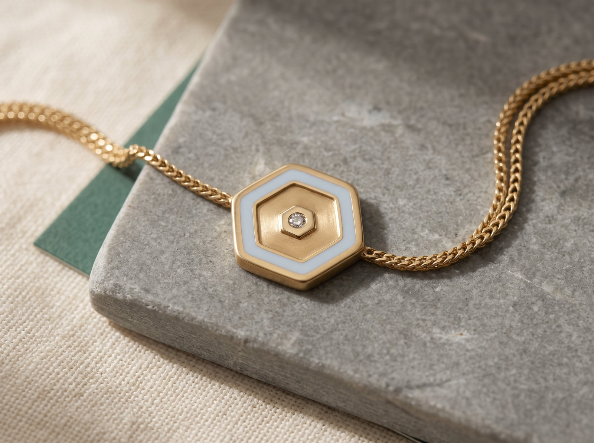
Etsy metni
Başlık 87/140
14K Gold Hexagon Ice Crystal Bracelet, Ice Blue Enamel, Lab Grown Sapphire, Winter Gift
Etiketler (13)
14k gold bracelet, ice crystal, hexagon bracelet, enamel bracelet, ice blue enamel, vitreous enamel, lab grown sapphire, geometric jewelry, winter jewelry, franco chain, christmas gift, gift for her, solid gold bracelet
Malzemeler
14k yellow gold, vitreous enamel, lab grown white sapphire, 14k gold franco chain
Açıklama
A flat 14k gold hexagon, the shape of a plate ice crystal, with a band of pale ice-blue glass enamel around a lab grown white sapphire. A winter Christmas gift that turns into a clean geometric piece once the season is over. THE PIECE One flat hexagon 11.0 mm across the corners and 1.4 mm thick, with slightly rounded corners and a 0.8 mm polished gold rim. Inside the rim, one continuous enamel band 2.4 mm wide surrounds a raised gold centre hexagon 3.1 mm across that holds the stone. The chain attaches at the middle of two opposite edges. Franco chain 1.3 mm. GOLD WEIGHT 3.40 g of 14k gold, counting the station, chain, clasp, rings and tag. On the scale the finished bracelet weighs 3.46 g in total with the enamel and stone. Each piece is weighed after finishing and checked against this design weight. ENAMEL Kiln-fired vitreous enamel (glass), opaque pale ice-blue. It fills one continuous hexagonal band around the gold centre. The enamel surface sits 0.1 mm below the gold edge, so the gold takes knocks first. Fired glass is hard but can chip under a sharp knock, so take the bracelet off for the gym and the pool, keep it away from chlorine and harsh chemicals, and clean the enamel with warm soapy water and a soft brush. STONES One 1.5 mm round lab grown white sapphire, about 0.017 ct, flush set in the centre hexagon, level with the gold and 0.8 mm away from the enamel. A small hole under the stone lets light in. LENGTH AND FIT 16.5 cm closed, plus a 2 cm extender with rings at 17.5 and 18.5 cm, so it fits 16.5-18.5 cm. It closes with a 9 mm lobster clasp, and the extender ends in a small tag stamped 14K. HOW IT IS MADE Made to order. The station is cast in zinc-free 14k gold in one piece with its chain rings, and the enamel cells are formed in the casting itself. There is no solder in the station: the enamel is fired three times, and every join is closed afterwards with a laser weld away from the enamel. The stone is set last, after the final firing. CARE Wipe the gold with a soft cloth. Store the bracelet on its own so harder pieces do not knock the enamel. No ultrasonic or steam cleaning. GIFTING Arrives in a gift box, ready to give. Made to order. The processing time is shown at checkout.
Atölye kartı
Kapali 16.5 + 2.0 cm. Altigen kose-kose 11.0 / kenar-kenar 9.53 x 1.4 mm (gobekte 1.5); koseler R0.5; bordur 0.80. TEK altigen halka hucre: dis kenar-kenar 7.93, ic sinir = gobek altigeni kenar-kenar 3.1; radyal genislik 2.41 mm (kenar-kenar yonunde), 0.55 derin, taban 0.85, alan ~46.1 mm2. Sirt yok (6 sirtli sektorlu levha kar tanesi okumasi riski nedeniyle kaldirildi). Tas gobekte, mineye 0.8 mm. C-halkalar iki karsi kenarin ortasinda, bosluk 0.9; C-halkalarla eksen boyu 14.7 mm. Franco 1.3 x 13.63 cm.
Altigen + tek halka hucre + gobek + iki C-halka TEK PARCA; cinkosuz 14KY vakum dokum. Hucre ici duz (kabartma/doku yok). Lehim yok. Tas pisirimden sonra gobege takilir. 9.5 mm'lik rijit istasyonun R29'daki sagittasi ~0.4 mm; duz dokulur.
Tezgâh sırası
- 1. CAD: tek altigen halka hucre DOKUMDE birakilir, taban fileto R0.2, +0.2 mm bitirme payi; altigen koseleri R0.5; C-halkalar 0.9 mm bosluklu (Franco uc halkasi teli <=0.8 + 0.1); gobekte yalniz 0.5 mm pilot cukur
- 2. Recine baski -> yatirim -> cinkosuz 'enamelable' 14K sari (Otto Frei 846-180 esasli, yazili Zn=0 sertifikasi + solidus/DSC), vakum dokum
- 3. Yolluk kesimi, gozenek kontrolu (hucre tabanlari 10x; gozenekli parca HURDA)
- 4. Tesviye; hucre tabanlari temizlenir (0.55 olculur); hamlac lehimi YOK
- 5. Yuzey zenginlestirme 4 dongu: ~593 C + %10 H2SO4
- 6. <=780 C'de olgunlasan kursunsuz yumusak opak mine (or. Soyer soft serisi), renk basina kupon: buz mavisi opak mine yas-dolgu kat 1 (tek halka hucre)
- 7. Pisirim 1: 780 C, 60-75 sn, kalibre termokupl
- 8. Kat 2; Pisirim 2: 780 C, 60-75 sn
- 9. Tasla zimpara (su altinda): yuzey kenardan 0.10-0.15 mm asagida
- 10. Pisirim 3 (flash): 770 C, 40-50 sn — toplam 3
- 11. Asitsiz oksit temizligi, mine maskeli
- 12. Gobek: pilot cukurdan O0.8 alt delik, flush yuva frezesi
- 13. 1 x 1.5 mm lab-grown tas SOGUK oturtma, el burnisheri (mine maskeli; cekicli el aleti KULLANILMAZ)
- 14. C-halkalari Franco uc halkalarina gecir, yastikli fiksturde soguk kapat; lazer kaynak (Plasti-tac + parlak gumus siper, dusuk guc, hava sogutma, dikis mineden >=1.5 mm)
- 15. Kopca grubu: lobster + 4 atlama halkasi + uzatma + plaket; lazer
- 16. Son cila, mine maskeli; ultrasonik/buhar YOK
- 17. QC: tarti vs gram kurulumu +/-3%, mine 10x igne deligi taramasi, mine-kenar derinligi min 0.10, 17.5/18.5 uzunluk, kopca 2 kg cekme, 250px kucuk resim (kar tanesi gibi okunmuyor teyidi)
Malzeme listesi
- Dokum alasimi cinkosuz 14KY (yazili Zn=0 sertifikasi + solidus/DSC): bitmis istasyon(lar) + dokum C-halkalar 1.217 g x1.15 = 1.40 g
- Mine tozu: opak buz mavisi, <=780 C'de olgunlasan kursunsuz yumusak opak mine (or. Soyer soft serisi), renk basina kupon; dolu 52 mg, tuketim ~100 mg
- Tas: 1 x 1.5 mm lab-grown beyaz safir ~0.017 ct
- Zincir: Franco 1.3 mm 14K solid 13.63 cm = 1.43 g (KILITSIZ g/cm; numune tartisi sart)
- Lobster kopca 14KY 9x5mm, 1 adet: 0.30 g (TAHMIN — tedarikci numunesi tartilacak; zincir kilitsiz alindigi icin yalniz burada sayilir)
- Atlama halkasi 14KY 1.0mm tel, ID1.5/OD3.5, 4 adet (kilit, 16.5 / 17.5 / 18.5 cm halkalari): 4 x 0.081 = 0.32 g
- Uzatma zinciri 14KY solid cable 1.2mm, 2 x 6.5mm = 1.3 cm: 0.059 g (kilitsiz g/cm 0.0456)
- Damga plaketi 14KY 4.0x2.5x0.6mm (14K + tescilli marka, lazer kazima): 0.073 g
- TOPLAM ALTIN 3.40 g (bant 3.2-3.9); terazide toplam 3.46 g. Gram kurulumu: Altigen plaka 11.0 kose-kose (9.53 kenar-kenar) x1.4: 78.59mm2 x1.4 = 110.03mm3 x0.01307 = 1.438 g | Tek altigen halka hucre (cikarma): dis kenar-kenar 7.93, ic gobek 3.1, 0.55 derin: 46.09mm2 x0.55 = -25.35mm3 x0.01307 = -0.331 g | Gobek altigeni +0.1 (1.5 ev sahibi) - tas yuvasi: 8.32mm2 x0.1 - 0.81 = 0.02mm3 = 0.000 g | 2 x dokum C-halka (1.0mm kesit, ID1.2; gercek torus, gomulme dusulmus): 4.2mm3 x2 x0.01307 = 0.110 g | Zincir franco13, 13.63 cm (KILITSIZ g/cm secildi, kilit ayrica sayiliyor): Franco 1.3 kilitsiz 0.1051 g/cm (0.1127 kilit dahil ara deger x 0.933 Franco 1.5 kilit orani) x 13.63cm = 1.432 g | Lobster 14KY 9x5mm (satin alma, TAHMIN; zincir g/cm KILITSIZ alindigi icin kilit burada BIR kez sayilir): tedarikci tartisi bekleniyor = 0.300 g | 4 x atlama halkasi 1.0mm tel ID1.5 (kilit, 16.5, 17.5, 18.5): 2*pi^2*1.25*0.5^2=6.17mm3 x4 x0.01307 = 0.322 g | Uzatma zinciri cable 1.2mm 2x6.5mm (kilitsiz g/cm): 0.0456 g/cm x1.3cm = 0.059 g | Damga plaketi 4.0x2.5x0.6 (14K+tescilli marka): 5.57mm3 x0.01307 = 0.073 g
Arıza modları
| Arıza | Tasarım nasıl önlüyor |
|---|---|
| Genis tek hucrede minenin catlamasi/carpilmasi | Taban 0.85 her noktada, hucre radyal 2.41 mm (B4'teki toplam mine alanindan kucuk); 3 pisirim, 780 C |
| Tas oturtulurken gobege komsu minenin catlamasi | Tas ile mine arasinda 0.8 mm ciplak altin, el burnisheri, mine maskeli |
| Kose ucunun takilmasi | Altigen koseleri R0.5 yuvarlatilir |
| Kar tanesi gibi okunup L11 yasagina takilmasi | Radyal sirtlar kaldirildi; kapali altigen + tek mine bandi + merkez tas; 250px testinde kontrol |
| Gram bandinin altina dusme (tek hucre daha fazla altin cikarir) | Altigen 10.0 -> 11.0 mm kose-kose; 3.40 g |
Tolerans
| Kural | Değer | |
|---|---|---|
| L2 derinlik 0.5-0.6 | 0.55 | ✓ |
| L2 genislik >=0.7 | 2.41 (radyal, tek halka) | ✓ |
| L2 derinlik <=2x genislik | 0.55/2.41 = 0.23 | ✓ |
| L2 taban >=0.8 | 0.85 | ✓ |
| L2 duvar >=0.70 | bordur 0.80, gobek-mine 0.80 | ✓ |
| L2 mine kenardan >=0.1 asagida | 0.10 | ✓ |
| L2 hucre icinde doku yok | duz | ✓ |
| L2 palet <=2 renk | 1: buz mavisi | ✓ |
| KANIT pisirim <=4, 760-790 C | 3 pisirim, 770-780 C | ✓ |
| L3 lehim yok | C-halka lazerle, mineden >=1.5 | ✓ |
| L4 ev sahibi >=1.5 | 1.5 | ✓ |
| L4 yanal duvar >=0.35 | 0.80 | ✓ |
| L4 tas-mine >=0.5 | 0.80 | ✓ |
| L5 dekoratif >=0.6 | bordur 0.80 | ✓ |
| L5 yapisal >=0.8 | plaka 1.4 | ✓ |
| L5 tasiyici halka/kulp kesiti >=1.0 mm | dokum C-halka 1.0 mm kesit, hacim 4.2 mm3 (gercek torus, gomulme dusulmus); atlama halkalari 1.0 mm tel | ✓ |
| L5 aciklik >=0.6, derinlik <=2x | C-halka ID 1.2 / derinlik 1.0, bosluk 0.9 | ✓ |
| L6 hollow yok | dolu dokum | ✓ |
| L7 altin gram bandi 3.2-3.9 g | 3.40 g (zincir KILITSIZ g/cm, kilit bir kez sayildi; C-halka 4.2 mm3) | ✓ |
| L8 16.5 + 2.0 cm, gram 18.5 cm'de | 16.5 kapali + 2 x 1.0 cm uzatma; gram_build uzatmayi iceriyor | ✓ |
| L11 pinnate form yok; duz 6 kollu kar tanesi yok | kapali altigen levha, radyal sirt yok (kar tanesi okumasi giderildi); buz ailesi 2 | ✓ |
| L12 tek kahraman | buz mavisi altigen kristal + merkez tas | ✓ |
| Tasiyici yuk yolu (halka koku dahil) her yerde >=1.0 mm kesit | C-halka koku kenar ortasinda 1.0 x 1.4 kesitli dolu kenar; yuk 0.8 bordur + 0.85 taban plakasi uzerinden tum kenara yayilir | ✓ |
| C-halka boslugu >= gecen tel + 0.1 mm | dokum bosluk 0.9 mm >= gecen tel 0.80 + 0.1 (tel capi tedarikci spesifikasyonuyla kilitlenir) | ✓ |
| Mine olgunlasma sicakligi <= pisirim sicakligi | BOM: <=780 C'de olgunlasan kursunsuz yumusak opak mine (or. Soyer soft serisi), renk basina kupon; kupon sonucu seri oncesi kapidir | ✓ |
Görsel promptları (16)
- 01Hero / arama küçük resmi: tek ürün, marka natürmortu, 4:3.Referanssız
Quiet luxury editorial still-life product photography. Warm ivory linen ground, honed grey stone slab, a sliver of deep jade-green matte card. Soft directional window light from upper left, long soft shadow, shallow depth of field. Solid yellow gold with warm antique tone. Restrained heirloom mood. No text, no logo, no glitter, no Christmas decoration. The piece: 14K yellow gold bracelet on a 1.3 mm Franco chain, 16.5 cm long, 2.0 cm extender. One flat solid hexagon-shaped plate station, 11.0 mm across the corners and 1.4 mm thick, with six straight edges, slightly rounded corners and a 0.8 mm polished gold rim; the chain attaches at the middle of two opposite edges. Inside the rim, one continuous hexagonal band of opaque pale ice-blue enamel (a soft pale powder blue with a grey cast), 2.4 mm wide, surrounds a raised polished gold centre hexagon 3.1 mm across, which holds one 1.5 mm round lab-grown white sapphire, flush set. 9 mm lobster clasp. The stones are exactly these and no others: one 1.5 mm round lab-grown white sapphire flush-set in the raised gold hexagon at the centre of the plate. No other stone and no empty setting anywhere on the piece. The only colour on the piece is opaque pale ice-blue enamel filling one continuous hexagonal band between the gold rim and the gold centre hexagon; every other surface is yellow gold. The decorated centre of the bracelet lies face up at the centre of the honed grey stone slab, close to the camera; the chain runs away from it on both sides in a soft curve and leaves the frame at the left and right edges; the clasp is out of frame. Seen from about 30 degrees above with a 100 mm macro lens, the decorated part in razor-sharp focus, filling about a third of the frame width, with the chain softly out of focus toward the frame edges. No people and no hands.
Alt metin 14K gold hexagon ice crystal bracelet with a pale ice-blue enamel band and a lab-grown white sapphire centre
- 02Takılı hâli: ölçek ve duruş. Hero'dan sonra dönüşümü en çok etkileyen kare.Referans: hero kırpımı
Quiet luxury editorial photography in warm ivory, stone grey and deep jade-green tones, soft directional window light from the upper left, true colour, fine film grain, no heavy retouching. No text, no logo, no watermark, no glitter. The attached reference image is a crop of this exact piece: keep its shape, proportions, gold colour, enamel colours and stones exactly as in the reference. The piece: 14K yellow gold bracelet on a 1.3 mm Franco chain, 16.5 cm long, 2.0 cm extender. One flat solid hexagon-shaped plate station, 11.0 mm across the corners and 1.4 mm thick, with six straight edges, slightly rounded corners and a 0.8 mm polished gold rim; the chain attaches at the middle of two opposite edges. Inside the rim, one continuous hexagonal band of opaque pale ice-blue enamel (a soft pale powder blue with a grey cast), 2.4 mm wide, surrounds a raised polished gold centre hexagon 3.1 mm across, which holds one 1.5 mm round lab-grown white sapphire, flush set. 9 mm lobster clasp. The stones are exactly these and no others: one 1.5 mm round lab-grown white sapphire flush-set in the raised gold hexagon at the centre of the plate. No other stone and no empty setting anywhere on the piece. The only colour on the piece is opaque pale ice-blue enamel filling one continuous hexagonal band between the gold rim and the gold centre hexagon; every other surface is yellow gold. Worn on a woman's left wrist, the forearm resting on a folded warm-ivory wool knit, hand relaxed and open; the stations sit face up on the top of the wrist; it is the only jewellery in the image, no watch and no rings; true to scale, the main element measures about 11 mm across; anatomically correct hands with five fingers, short natural unpolished nails.
Alt metin 14K gold hexagon ice crystal bracelet with a pale ice-blue enamel band and a lab-grown white sapphire centre, worn
- 03Makro işçilik: fiyatı meşrulaştıran detay (mine yüzeyi, flush taş, kenar bitimi).Referans: hero kırpımı
Quiet luxury editorial photography in warm ivory, stone grey and deep jade-green tones, soft directional window light from the upper left, true colour, fine film grain, no heavy retouching. No text, no logo, no watermark, no glitter. The attached reference image is a crop of this exact piece: keep its shape, proportions, gold colour, enamel colours and stones exactly as in the reference. The piece: 14K yellow gold bracelet on a 1.3 mm Franco chain, 16.5 cm long, 2.0 cm extender. One flat solid hexagon-shaped plate station, 11.0 mm across the corners and 1.4 mm thick, with six straight edges, slightly rounded corners and a 0.8 mm polished gold rim; the chain attaches at the middle of two opposite edges. Inside the rim, one continuous hexagonal band of opaque pale ice-blue enamel (a soft pale powder blue with a grey cast), 2.4 mm wide, surrounds a raised polished gold centre hexagon 3.1 mm across, which holds one 1.5 mm round lab-grown white sapphire, flush set. 9 mm lobster clasp. The stones are exactly these and no others: one 1.5 mm round lab-grown white sapphire flush-set in the raised gold hexagon at the centre of the plate. No other stone and no empty setting anywhere on the piece. The only colour on the piece is opaque pale ice-blue enamel filling one continuous hexagonal band between the gold rim and the gold centre hexagon; every other surface is yellow gold. Extreme close-up macro, 100 mm macro lens: The hexagon face with its continuous band of opaque pale ice-blue enamel around the gold centre hexagon and the flush-set lab-grown white sapphire. The rest of the piece falls away into soft focus on warm-ivory linen.
Alt metin Close-up of the ice-blue enamel band and flush-set lab-grown sapphire of the gold hexagon
- 04Elde ölçek: mm'yi parmak ucuna çevirir, 'beklediğimden küçük' iadesini önler.Referans: hero kırpımı
Quiet luxury editorial photography in warm ivory, stone grey and deep jade-green tones, soft directional window light from the upper left, true colour, fine film grain, no heavy retouching. No text, no logo, no watermark, no glitter. The attached reference image is a crop of this exact piece: keep its shape, proportions, gold colour, enamel colours and stones exactly as in the reference. The piece: 14K yellow gold bracelet on a 1.3 mm Franco chain, 16.5 cm long, 2.0 cm extender. One flat solid hexagon-shaped plate station, 11.0 mm across the corners and 1.4 mm thick, with six straight edges, slightly rounded corners and a 0.8 mm polished gold rim; the chain attaches at the middle of two opposite edges. Inside the rim, one continuous hexagonal band of opaque pale ice-blue enamel (a soft pale powder blue with a grey cast), 2.4 mm wide, surrounds a raised polished gold centre hexagon 3.1 mm across, which holds one 1.5 mm round lab-grown white sapphire, flush set. 9 mm lobster clasp. The stones are exactly these and no others: one 1.5 mm round lab-grown white sapphire flush-set in the raised gold hexagon at the centre of the plate. No other stone and no empty setting anywhere on the piece. The only colour on the piece is opaque pale ice-blue enamel filling one continuous hexagonal band between the gold rim and the gold centre hexagon; every other surface is yellow gold. Close-up for scale against a plain warm-ivory background thrown softly out of focus: the bracelet held up between the thumb and index finger of a woman's hand by its clasp, the chain hanging straight down so every station faces the camera; true to scale, the main element measures about 11 mm across, a fingertip is about 16 mm wide; it is the only jewellery in the image; anatomically correct hands with five fingers, short natural unpolished nails.
Alt metin 14K gold hexagon ice crystal bracelet with a pale ice-blue enamel band and a lab-grown white sapphire centre, held between fingers for scale
- 05Arka ve bulgular: dolu gövde, kilit / çivi / iğne; sağlamlık sorusunu cevaplar.Referans: hero kırpımı
Quiet luxury editorial photography in warm ivory, stone grey and deep jade-green tones, soft directional window light from the upper left, true colour, fine film grain, no heavy retouching. No text, no logo, no watermark, no glitter. The attached reference image is a crop of this exact piece: keep its shape, proportions, gold colour, enamel colours and stones exactly as in the reference. The piece: 14K yellow gold bracelet on a 1.3 mm Franco chain, 16.5 cm long, 2.0 cm extender. One flat solid hexagon-shaped plate station, 11.0 mm across the corners and 1.4 mm thick, with six straight edges, slightly rounded corners and a 0.8 mm polished gold rim; the chain attaches at the middle of two opposite edges. Inside the rim, one continuous hexagonal band of opaque pale ice-blue enamel (a soft pale powder blue with a grey cast), 2.4 mm wide, surrounds a raised polished gold centre hexagon 3.1 mm across, which holds one 1.5 mm round lab-grown white sapphire, flush set. 9 mm lobster clasp. The stones are exactly these and no others: one 1.5 mm round lab-grown white sapphire flush-set in the raised gold hexagon at the centre of the plate. No other stone and no empty setting anywhere on the piece. The only colour on the piece is opaque pale ice-blue enamel filling one continuous hexagonal band between the gold rim and the gold centre hexagon; every other surface is yellow gold. The back of the piece, top-down on honed grey stone: A flat solid polished gold back of the hexagon, with a small round hole under the centre stone.
Alt metin Back of the bracelet showing the flat solid gold back of the hexagon with the hole under the stone
- 06Tam boy / çift / mekanizma: uzunluk, ayar ve ne geldiğini tek karede gösterir.Referans: hero kırpımı
Quiet luxury editorial photography in warm ivory, stone grey and deep jade-green tones, soft directional window light from the upper left, true colour, fine film grain, no heavy retouching. No text, no logo, no watermark, no glitter. The attached reference image is a crop of this exact piece: keep its shape, proportions, gold colour, enamel colours and stones exactly as in the reference. The piece: 14K yellow gold bracelet on a 1.3 mm Franco chain, 16.5 cm long, 2.0 cm extender. One flat solid hexagon-shaped plate station, 11.0 mm across the corners and 1.4 mm thick, with six straight edges, slightly rounded corners and a 0.8 mm polished gold rim; the chain attaches at the middle of two opposite edges. Inside the rim, one continuous hexagonal band of opaque pale ice-blue enamel (a soft pale powder blue with a grey cast), 2.4 mm wide, surrounds a raised polished gold centre hexagon 3.1 mm across, which holds one 1.5 mm round lab-grown white sapphire, flush set. 9 mm lobster clasp. The stones are exactly these and no others: one 1.5 mm round lab-grown white sapphire flush-set in the raised gold hexagon at the centre of the plate. No other stone and no empty setting anywhere on the piece. The only colour on the piece is opaque pale ice-blue enamel filling one continuous hexagonal band between the gold rim and the gold centre hexagon; every other surface is yellow gold. The whole bracelet laid out in one straight horizontal line on warm-ivory linen, top-down, from the lobster clasp at one end to the extender chain at the other, every station face up and the extender rings visible.
Alt metin 14K gold hexagon ice crystal bracelet with a pale ice-blue enamel band and a lab-grown white sapphire centre, full length
- 07Yan profil: kalınlık ve kütle, düz baskı değil gerçek altın olduğunu gösterir.Referans: hero kırpımı
Quiet luxury editorial photography in warm ivory, stone grey and deep jade-green tones, soft directional window light from the upper left, true colour, fine film grain, no heavy retouching. No text, no logo, no watermark, no glitter. The attached reference image is a crop of this exact piece: keep its shape, proportions, gold colour, enamel colours and stones exactly as in the reference. The piece: 14K yellow gold bracelet on a 1.3 mm Franco chain, 16.5 cm long, 2.0 cm extender. One flat solid hexagon-shaped plate station, 11.0 mm across the corners and 1.4 mm thick, with six straight edges, slightly rounded corners and a 0.8 mm polished gold rim; the chain attaches at the middle of two opposite edges. Inside the rim, one continuous hexagonal band of opaque pale ice-blue enamel (a soft pale powder blue with a grey cast), 2.4 mm wide, surrounds a raised polished gold centre hexagon 3.1 mm across, which holds one 1.5 mm round lab-grown white sapphire, flush set. 9 mm lobster clasp. The stones are exactly these and no others: one 1.5 mm round lab-grown white sapphire flush-set in the raised gold hexagon at the centre of the plate. No other stone and no empty setting anywhere on the piece. The only colour on the piece is opaque pale ice-blue enamel filling one continuous hexagonal band between the gold rim and the gold centre hexagon; every other surface is yellow gold. Side profile at eye level on honed grey stone, the camera level with the piece: Side profile: a flat hexagon plate 1.4 mm thick, rising to 1.5 mm at the centre hexagon.
Alt metin Side profile of the bracelet showing its thickness
- 08Kış yaşam stili: sezonu Noel dekoru olmadan kurar.Referans: hero kırpımı
Quiet luxury editorial photography in warm ivory, stone grey and deep jade-green tones, soft directional window light from the upper left, true colour, fine film grain, no heavy retouching. No text, no logo, no watermark, no glitter. The attached reference image is a crop of this exact piece: keep its shape, proportions, gold colour, enamel colours and stones exactly as in the reference. The piece: 14K yellow gold bracelet on a 1.3 mm Franco chain, 16.5 cm long, 2.0 cm extender. One flat solid hexagon-shaped plate station, 11.0 mm across the corners and 1.4 mm thick, with six straight edges, slightly rounded corners and a 0.8 mm polished gold rim; the chain attaches at the middle of two opposite edges. Inside the rim, one continuous hexagonal band of opaque pale ice-blue enamel (a soft pale powder blue with a grey cast), 2.4 mm wide, surrounds a raised polished gold centre hexagon 3.1 mm across, which holds one 1.5 mm round lab-grown white sapphire, flush set. 9 mm lobster clasp. The stones are exactly these and no others: one 1.5 mm round lab-grown white sapphire flush-set in the raised gold hexagon at the centre of the plate. No other stone and no empty setting anywhere on the piece. The only colour on the piece is opaque pale ice-blue enamel filling one continuous hexagonal band between the gold rim and the gold centre hexagon; every other surface is yellow gold. Morning window light: a woman's left wrist wearing the bracelet rests on the cuff of an ivory cable-knit sweater beside a small stoneware cup of black coffee on a pale oak table; it is the only jewellery in the image; anatomically correct hands with five fingers, short natural unpolished nails.
Alt metin 14K gold hexagon ice crystal bracelet with a pale ice-blue enamel band and a lab-grown white sapphire centre, styled with winter knitwear
- 09Hediye kutusu: Noel alıcısının ilk sorusu, hediyeye hazır mı?Referans: hero kırpımı
Quiet luxury editorial photography in warm ivory, stone grey and deep jade-green tones, soft directional window light from the upper left, true colour, fine film grain, no heavy retouching. No text, no logo, no watermark, no glitter. The attached reference image is a crop of this exact piece: keep its shape, proportions, gold colour, enamel colours and stones exactly as in the reference. The piece: 14K yellow gold bracelet on a 1.3 mm Franco chain, 16.5 cm long, 2.0 cm extender. One flat solid hexagon-shaped plate station, 11.0 mm across the corners and 1.4 mm thick, with six straight edges, slightly rounded corners and a 0.8 mm polished gold rim; the chain attaches at the middle of two opposite edges. Inside the rim, one continuous hexagonal band of opaque pale ice-blue enamel (a soft pale powder blue with a grey cast), 2.4 mm wide, surrounds a raised polished gold centre hexagon 3.1 mm across, which holds one 1.5 mm round lab-grown white sapphire, flush set. 9 mm lobster clasp. The stones are exactly these and no others: one 1.5 mm round lab-grown white sapphire flush-set in the raised gold hexagon at the centre of the plate. No other stone and no empty setting anywhere on the piece. The only colour on the piece is opaque pale ice-blue enamel filling one continuous hexagonal band between the gold rim and the gold centre hexagon; every other surface is yellow gold. Top-down: the bracelet coiled loosely inside a small open square gift box in plain warm-ivory card with a soft ivory insert, the lid set beside it, a length of narrow deep jade-green ribbon untied beside the box, on honed grey stone. No branding, no printed pattern, no tissue paper, no Christmas decoration, exactly one box.
Alt metin 14K gold hexagon ice crystal bracelet with a pale ice-blue enamel band and a lab-grown white sapphire centre in a gift box
- 10Gerçek renk: nötr gün ışığında altın ve mine rengi; renk kaynaklı iadeyi azaltır.Referans: hero kırpımı
Quiet luxury editorial photography in warm ivory, stone grey and deep jade-green tones, soft directional window light from the upper left, true colour, fine film grain, no heavy retouching. No text, no logo, no watermark, no glitter. The attached reference image is a crop of this exact piece: keep its shape, proportions, gold colour, enamel colours and stones exactly as in the reference. The piece: 14K yellow gold bracelet on a 1.3 mm Franco chain, 16.5 cm long, 2.0 cm extender. One flat solid hexagon-shaped plate station, 11.0 mm across the corners and 1.4 mm thick, with six straight edges, slightly rounded corners and a 0.8 mm polished gold rim; the chain attaches at the middle of two opposite edges. Inside the rim, one continuous hexagonal band of opaque pale ice-blue enamel (a soft pale powder blue with a grey cast), 2.4 mm wide, surrounds a raised polished gold centre hexagon 3.1 mm across, which holds one 1.5 mm round lab-grown white sapphire, flush set. 9 mm lobster clasp. The stones are exactly these and no others: one 1.5 mm round lab-grown white sapphire flush-set in the raised gold hexagon at the centre of the plate. No other stone and no empty setting anywhere on the piece. The only colour on the piece is opaque pale ice-blue enamel filling one continuous hexagonal band between the gold rim and the gold centre hexagon; every other surface is yellow gold. Colour-accurate reference shot: the piece alone, top-down on plain matte white-ivory paper under even neutral north daylight, no shadow drama, no props, the piece centred and filling half the frame.
Alt metin 14K gold hexagon ice crystal bracelet with a pale ice-blue enamel band and a lab-grown white sapphire centre in neutral daylight, true colour
- 11Ölçü grafiği tabanı: sağ üçte bir boş; mm etiketleri sonra eklenir.Referans: hero kırpımı
Quiet luxury editorial photography in warm ivory, stone grey and deep jade-green tones, soft directional window light from the upper left, true colour, fine film grain, no heavy retouching. No text, no logo, no watermark, no glitter. The attached reference image is a crop of this exact piece: keep its shape, proportions, gold colour, enamel colours and stones exactly as in the reference. The piece: 14K yellow gold bracelet on a 1.3 mm Franco chain, 16.5 cm long, 2.0 cm extender. One flat solid hexagon-shaped plate station, 11.0 mm across the corners and 1.4 mm thick, with six straight edges, slightly rounded corners and a 0.8 mm polished gold rim; the chain attaches at the middle of two opposite edges. Inside the rim, one continuous hexagonal band of opaque pale ice-blue enamel (a soft pale powder blue with a grey cast), 2.4 mm wide, surrounds a raised polished gold centre hexagon 3.1 mm across, which holds one 1.5 mm round lab-grown white sapphire, flush set. 9 mm lobster clasp. The stones are exactly these and no others: one 1.5 mm round lab-grown white sapphire flush-set in the raised gold hexagon at the centre of the plate. No other stone and no empty setting anywhere on the piece. The only colour on the piece is opaque pale ice-blue enamel filling one continuous hexagonal band between the gold rim and the gold centre hexagon; every other surface is yellow gold. The piece alone, top-down on plain warm-ivory paper, placed in the left two thirds of the frame; the right third is empty paper for dimension labels to be added later; even soft light, no props.
Alt metin 14K gold hexagon ice crystal bracelet with a pale ice-blue enamel band and a lab-grown white sapphire centre with space for dimensions
- 12El işçiliği: siparişe üretim hikâyesi, tezgâhta parça.Referans: hero kırpımı
Quiet luxury editorial photography in warm ivory, stone grey and deep jade-green tones, soft directional window light from the upper left, true colour, fine film grain, no heavy retouching. No text, no logo, no watermark, no glitter. The attached reference image is a crop of this exact piece: keep its shape, proportions, gold colour, enamel colours and stones exactly as in the reference. The piece: 14K yellow gold bracelet on a 1.3 mm Franco chain, 16.5 cm long, 2.0 cm extender. One flat solid hexagon-shaped plate station, 11.0 mm across the corners and 1.4 mm thick, with six straight edges, slightly rounded corners and a 0.8 mm polished gold rim; the chain attaches at the middle of two opposite edges. Inside the rim, one continuous hexagonal band of opaque pale ice-blue enamel (a soft pale powder blue with a grey cast), 2.4 mm wide, surrounds a raised polished gold centre hexagon 3.1 mm across, which holds one 1.5 mm round lab-grown white sapphire, flush set. 9 mm lobster clasp. The stones are exactly these and no others: one 1.5 mm round lab-grown white sapphire flush-set in the raised gold hexagon at the centre of the plate. No other stone and no empty setting anywhere on the piece. The only colour on the piece is opaque pale ice-blue enamel filling one continuous hexagonal band between the gold rim and the gold centre hexagon; every other surface is yellow gold. The finished piece lying on a worn wooden jeweller's bench pin beside a small porcelain dish of ice-blue enamel powder, a fine sable brush and a pair of brass tweezers, warm lamp light, shallow depth of field, the piece in sharp focus; no hands.
Alt metin 14K gold hexagon ice crystal bracelet with a pale ice-blue enamel band and a lab-grown white sapphire centre on a jeweller's bench
- 13Motifin anlamı: sol üçte bir boş; sembol hikâyesi metni sonra eklenir.Referans: hero kırpımı
Quiet luxury editorial photography in warm ivory, stone grey and deep jade-green tones, soft directional window light from the upper left, true colour, fine film grain, no heavy retouching. No text, no logo, no watermark, no glitter. The attached reference image is a crop of this exact piece: keep its shape, proportions, gold colour, enamel colours and stones exactly as in the reference. The piece: 14K yellow gold bracelet on a 1.3 mm Franco chain, 16.5 cm long, 2.0 cm extender. One flat solid hexagon-shaped plate station, 11.0 mm across the corners and 1.4 mm thick, with six straight edges, slightly rounded corners and a 0.8 mm polished gold rim; the chain attaches at the middle of two opposite edges. Inside the rim, one continuous hexagonal band of opaque pale ice-blue enamel (a soft pale powder blue with a grey cast), 2.4 mm wide, surrounds a raised polished gold centre hexagon 3.1 mm across, which holds one 1.5 mm round lab-grown white sapphire, flush set. 9 mm lobster clasp. The stones are exactly these and no others: one 1.5 mm round lab-grown white sapphire flush-set in the raised gold hexagon at the centre of the plate. No other stone and no empty setting anywhere on the piece. The only colour on the piece is opaque pale ice-blue enamel filling one continuous hexagonal band between the gold rim and the gold centre hexagon; every other surface is yellow gold. The piece alone, top-down on a deep jade-green matte card, placed in the right two thirds of the frame; the left third is empty card for a caption to be added later; soft directional light.
Alt metin 14K gold hexagon ice crystal bracelet with a pale ice-blue enamel band and a lab-grown white sapphire centre on a deep green card
- 14Yıl boyu takılır: 'yalnız Noel' itirazını kırar.Referans: hero kırpımı
Quiet luxury editorial photography in warm ivory, stone grey and deep jade-green tones, soft directional window light from the upper left, true colour, fine film grain, no heavy retouching. No text, no logo, no watermark, no glitter. The attached reference image is a crop of this exact piece: keep its shape, proportions, gold colour, enamel colours and stones exactly as in the reference. The piece: 14K yellow gold bracelet on a 1.3 mm Franco chain, 16.5 cm long, 2.0 cm extender. One flat solid hexagon-shaped plate station, 11.0 mm across the corners and 1.4 mm thick, with six straight edges, slightly rounded corners and a 0.8 mm polished gold rim; the chain attaches at the middle of two opposite edges. Inside the rim, one continuous hexagonal band of opaque pale ice-blue enamel (a soft pale powder blue with a grey cast), 2.4 mm wide, surrounds a raised polished gold centre hexagon 3.1 mm across, which holds one 1.5 mm round lab-grown white sapphire, flush set. 9 mm lobster clasp. The stones are exactly these and no others: one 1.5 mm round lab-grown white sapphire flush-set in the raised gold hexagon at the centre of the plate. No other stone and no empty setting anywhere on the piece. The only colour on the piece is opaque pale ice-blue enamel filling one continuous hexagonal band between the gold rim and the gold centre hexagon; every other surface is yellow gold. Everyday wear, no season: a woman's left wrist wearing the bracelet over a laptop keyboard in soft daylight, plain white cotton shirt cuff; only jewellery in the image; anatomically correct hands with five fingers, short natural unpolished nails.
Alt metin 14K gold hexagon ice crystal bracelet with a pale ice-blue enamel band and a lab-grown white sapphire centre, everyday wear
- 15Hediye anı: duygu; Noel satın alma niyetine bağlar.Referans: hero kırpımı
Quiet luxury editorial photography in warm ivory, stone grey and deep jade-green tones, soft directional window light from the upper left, true colour, fine film grain, no heavy retouching. No text, no logo, no watermark, no glitter. The attached reference image is a crop of this exact piece: keep its shape, proportions, gold colour, enamel colours and stones exactly as in the reference. The piece: 14K yellow gold bracelet on a 1.3 mm Franco chain, 16.5 cm long, 2.0 cm extender. One flat solid hexagon-shaped plate station, 11.0 mm across the corners and 1.4 mm thick, with six straight edges, slightly rounded corners and a 0.8 mm polished gold rim; the chain attaches at the middle of two opposite edges. Inside the rim, one continuous hexagonal band of opaque pale ice-blue enamel (a soft pale powder blue with a grey cast), 2.4 mm wide, surrounds a raised polished gold centre hexagon 3.1 mm across, which holds one 1.5 mm round lab-grown white sapphire, flush set. 9 mm lobster clasp. The stones are exactly these and no others: one 1.5 mm round lab-grown white sapphire flush-set in the raised gold hexagon at the centre of the plate. No other stone and no empty setting anywhere on the piece. The only colour on the piece is opaque pale ice-blue enamel filling one continuous hexagonal band between the gold rim and the gold centre hexagon; every other surface is yellow gold. A gift being given: two pairs of hands across a pale oak table, one pair holding out the small open warm-ivory gift box with the piece visible inside, the other reaching for it, soft warm window light, sleeves of ivory and grey knitwear; exactly one box and one piece of jewellery; anatomically correct hands with five fingers, short natural unpolished nails.
Alt metin 14K gold hexagon ice crystal bracelet with a pale ice-blue enamel band and a lab-grown white sapphire centre given as a gift
- 16Mağaza ızgarası / Pinterest: koyu jade zeminde yüksek kontrast kare.Referans: hero kırpımı
Quiet luxury editorial photography in warm ivory, stone grey and deep jade-green tones, soft directional window light from the upper left, true colour, fine film grain, no heavy retouching. No text, no logo, no watermark, no glitter. The attached reference image is a crop of this exact piece: keep its shape, proportions, gold colour, enamel colours and stones exactly as in the reference. The piece: 14K yellow gold bracelet on a 1.3 mm Franco chain, 16.5 cm long, 2.0 cm extender. One flat solid hexagon-shaped plate station, 11.0 mm across the corners and 1.4 mm thick, with six straight edges, slightly rounded corners and a 0.8 mm polished gold rim; the chain attaches at the middle of two opposite edges. Inside the rim, one continuous hexagonal band of opaque pale ice-blue enamel (a soft pale powder blue with a grey cast), 2.4 mm wide, surrounds a raised polished gold centre hexagon 3.1 mm across, which holds one 1.5 mm round lab-grown white sapphire, flush set. 9 mm lobster clasp. The stones are exactly these and no others: one 1.5 mm round lab-grown white sapphire flush-set in the raised gold hexagon at the centre of the plate. No other stone and no empty setting anywhere on the piece. The only colour on the piece is opaque pale ice-blue enamel filling one continuous hexagonal band between the gold rim and the gold centre hexagon; every other surface is yellow gold. Top-down flat lay of the piece centred on a deep jade-green matte card with a narrow border of warm-ivory linen at the top edge, crisp soft light, the piece filling about 40 percent of the frame so a square crop keeps all of it.
Alt metin 14K gold hexagon ice crystal bracelet with a pale ice-blue enamel band and a lab-grown white sapphire centre, flat lay on deep green
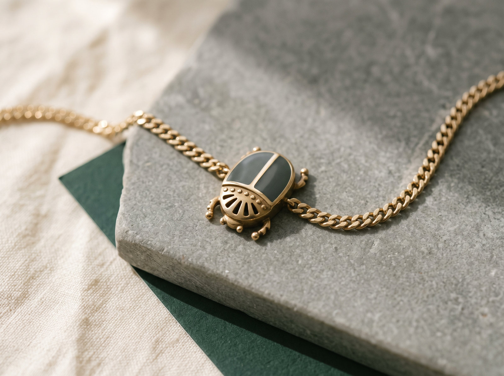
Etsy metni
Başlık 81/140
14K Gold Scarab Bracelet, Green Enamel Beetle Amulet, Cuban Chain, Good Luck Gift
Etiketler (13)
14k gold bracelet, scarab bracelet, scarab amulet, beetle jewelry, enamel bracelet, green enamel, vitreous enamel, miami cuban chain, good luck gift, talisman jewelry, christmas gift, new beginnings, solid gold bracelet
Malzemeler
14k yellow gold, vitreous enamel, 14k gold miami cuban chain
Açıklama
A stylised 14k gold scarab with deep jade-green glass enamel wing cases, on a 2.0 mm Miami Cuban chain. The scarab is an old amulet of renewal, so a Christmas gift of it carries naturally into the new year. THE PIECE One station 11.0 mm long and 8.0 mm wide including its six legs, with a body 6.4 mm wide and a solid domed back 1.6 mm high. Two enamel wing cases sit either side of a 0.7 mm gold centre line. The front gold shield has five fan-shaped open slits and a row of six raised dots. The underside is flat polished gold. Miami Cuban chain 2.0 mm. GOLD WEIGHT 3.41 g of 14k gold, counting the station, chain, clasp, rings and tag. On the scale the finished bracelet weighs 3.43 g in total with the enamel. Each piece is weighed after finishing and checked against this design weight. ENAMEL Kiln-fired vitreous enamel (glass), opaque deep jade-green. It fills the two wing-case cells and follows the curve of the dome. The enamel surface sits 0.1 mm below the gold edge, so the gold takes knocks first. Fired glass is hard but can chip under a sharp knock, so take the bracelet off for the gym and the pool, keep it away from chlorine and harsh chemicals, and clean the enamel with warm soapy water and a soft brush. LENGTH AND FIT 16.5 cm closed, plus a 2 cm extender with rings at 17.5 and 18.5 cm, so it fits 16.5-18.5 cm. It closes with a 9 mm lobster clasp, and the extender ends in a small tag stamped 14K. HOW IT IS MADE Made to order. The station is cast in zinc-free 14k gold in one piece with its chain rings, and the enamel cells are formed in the casting itself. There is no solder in the station: the enamel is fired three times, and every join is closed afterwards with a laser weld away from the enamel. CARE Wipe the gold with a soft cloth. Store the bracelet on its own so harder pieces do not knock the enamel. No ultrasonic or steam cleaning. GIFTING Arrives in a gift box, ready to give. Made to order. The processing time is shown at checkout.
Atölye kartı
Kapali 16.5 + 2.0 cm. Zarf bacaklar dahil 8.0 x 11.0 mm; govde 6.4 x 9.5 mm; kalinlik kenarda 1.45, kubbe tepesinde 1.6; on kalkan (pronotum) yerel 1.4. Elytra hucreleri 2 x ~10 mm2, genislik ~2.15 (= (6.4 - 2 x 0.70 - 0.70) / 2), 0.55 derin, taban 0.9; omurga 0.70; dis duvar 0.70. On kalkanda 5 yelpaze yarik (0.8 genis) ve 6 nokta (O0.6 x 0.4). 6 bacak 0.8 genis, uc R0.4, bacak araliklari 0.8. C-halkalar bas ve kuyruk ucunda 1.2 mm ciplak pedde, bosluk 1.1; eksen boyu 16.2 mm. Cuban 2.0 x 13.48 cm.
Govde + kubbe + 2 hucre + on kalkan yariklari + bacaklar + iki C-halka TEK PARCA; cinkosuz 14KY vakum dokum. Kubbe DOLU (hollow yok). Yolluk kubbe tepesine konur (kalin kesit, cekinti gozenegi riski). Lehim yok. Yarik ve noktalar yalniz ON KALKANDA (pronotum); hucre ici duz.
Tezgâh sırası
- 1. CAD: elytra hucreleri (2 x ~10 mm2, genislik 2.15) DOKUMDE birakilir, taban fileto R0.2, +0.2 mm bitirme payi; yarik ve noktalar yalniz on kalkanda; bacak uclari 0.8 R0.4; C-halkalar 1.1 mm bosluklu (Cuban uc halkasi teli <=1.0 + 0.1)
- 2. Dokumhaneye yazili yolluk plani (kubbe tepesi) -> recine baski -> yatirim -> cinkosuz 'enamelable' 14K sari (Otto Frei 846-180 esasli, yazili Zn=0 sertifikasi + solidus/DSC), vakum dokum
- 3. Yolluk kesimi; ilk parcada kubbe kesiti/X-ray ile cekinti gozenegi kontrolu; hucre tabanlari 10x (gozenekli parca HURDA)
- 4. Tesviye; hucre tabanlari temizlenir (0.55 olculur); hamlac lehimi YOK
- 5. Yuzey zenginlestirme 4 dongu: ~593 C + %10 H2SO4
- 6. <=780 C'de olgunlasan kursunsuz yumusak opak mine (or. Soyer soft serisi), renk basina kupon: derin yesil opak mine yas-dolgu kat 1 (2 elytra)
- 7. Pisirim 1: 780 C, 60-75 sn, kalibre termokupl
- 8. Kat 2; Pisirim 2: 780 C, 60-75 sn
- 9. Tasla zimpara (su altinda), kubbe egrisini izleyerek: yuzey kenardan 0.10-0.15 mm asagida
- 10. Pisirim 3 (flash): 770 C, 40-50 sn — toplam 3
- 11. Asitsiz oksit temizligi; on kalkan ve omurga parlatma, mine maskeli
- 12. C-halkalari Cuban uc halkalarina gecir, yastikli fiksturde soguk kapat; lazer kaynak (Plasti-tac + parlak gumus siper, dusuk guc, hava sogutma, dikis mineden >=1.5 mm, ciplak ped uzerinde)
- 13. Kopca grubu: lobster + 4 atlama halkasi + uzatma + plaket; lazer
- 14. Son cila, mine maskeli; ultrasonik/buhar YOK
- 15. QC: tarti vs gram_build +/-3%, mine 10x igne deligi/kabarcik taramasi, mine-kenar derinligi min 0.10, 17.5/18.5 uzunluk, kopca 2 kg cekme, 250px kucuk resim
Malzeme listesi
- Dokum alasimi cinkosuz 14KY (yazili Zn=0 sertifikasi + solidus/DSC): bitmis istasyon(lar) + dokum C-halkalar 1.042 g x1.15 = 1.20 g
- Mine tozu: opak derin yesil, <=780 C'de olgunlasan kursunsuz yumusak opak mine (or. Soyer soft serisi), renk basina kupon; dolu 22 mg, tuketim ~65 mg
- Tas: yok
- Zincir: Miami Cuban 2.0 mm 14K solid 13.48 cm = 1.61 g (KILITSIZ g/cm; numune tartisi sart)
- Lobster kopca 14KY 9x5mm, 1 adet: 0.30 g (TAHMIN — tedarikci numunesi tartilacak; zincir kilitsiz alindigi icin yalniz burada sayilir)
- Atlama halkasi 14KY 1.0mm tel, ID1.5/OD3.5, 4 adet (kilit, 16.5 / 17.5 / 18.5 cm halkalari): 4 x 0.081 = 0.32 g
- Uzatma zinciri 14KY solid cable 1.2mm, 2 x 6.5mm = 1.3 cm: 0.059 g (kilitsiz g/cm 0.0456)
- Damga plaketi 14KY 4.0x2.5x0.6mm (14K + tescilli marka, lazer kazima): 0.073 g
- TOPLAM ALTIN 3.41 g (bant 3.2-3.9); terazide toplam 3.43 g. Gram kurulumu: Skarabe govdesi 6.4x9.5 (dolgu 0.85) - 4.0mm2 on kalkan yariklari, ort 1.5 (kubbe): 47.68mm2 x1.5 = 71.52mm3 x0.01307 = 0.935 g | 6 bacak 0.8 genis x ~1.6 boy (R0.4 uc) x1.2: 6 x 1.4mm2 x1.2 = 10.08mm3 x0.01307 = 0.132 g | 2 elytra hucresi (cikarma) 2 x ~10mm2 (genislik 2.15) x0.55: 20.0*0.55 = -11.0mm3 x0.01307 = -0.144 g | On kalkan noktalama kabartmasi 6 x O0.6 x0.4 (hucre DISINDA): 0.68mm3 x0.01307 = 0.009 g | 2 x dokum C-halka (1.0mm kesit, ID1.2; gercek torus, gomulme dusulmus): 4.2mm3 x2 x0.01307 = 0.110 g | Zincir cuban20, 13.48 cm (KILITSIZ g/cm secildi, kilit ayrica sayiliyor): Miami Cuban 2.0 kilitsiz 0.1194 g/cm (0.128 Etsy kilit dahil toplam x 0.933) x 13.48cm = 1.610 g | Lobster 14KY 9x5mm (satin alma, TAHMIN; zincir g/cm KILITSIZ alindigi icin kilit burada BIR kez sayilir): tedarikci tartisi bekleniyor = 0.300 g | 4 x atlama halkasi 1.0mm tel ID1.5 (kilit, 16.5, 17.5, 18.5): 2*pi^2*1.25*0.5^2=6.17mm3 x4 x0.01307 = 0.322 g | Uzatma zinciri cable 1.2mm 2x6.5mm (kilitsiz g/cm): 0.0456 g/cm x1.3cm = 0.059 g | Damga plaketi 4.0x2.5x0.6 (14K+tescilli marka): 5.57mm3 x0.01307 = 0.073 g
Arıza modları
| Arıza | Tasarım nasıl önlüyor |
|---|---|
| Hucre icindeki kabartmanin mineyi delmesi | Noktalama hucreden cikarildi, on kalkana tasindi; hucre tabani duz |
| Iki hucre arasindaki omurganin iki taraftan mine baskisiyla cokmesi | Omurga 0.70; hucreler 2.15 mm genis, 6.4 mm govdeye sigar |
| Kalin kubbede cekinti gozenegi -> mine altinda kabarcik | Yolluk kubbe tepesine, vakum dokum, ilk parcada kesit/X-ray, hucre tabanlari 10x lup; gozenekli parca hurda |
| On kalkan yariklarinda yatirimin kopmasi ya da metalin dolmamasi | Yarik 0.8, on kalkan yerel 1.4 -> derinlik/genislik 1.75 |
| Bacak ucunun takilmasi | Bacak uclari 0.8, R0.4 |
Tolerans
| Kural | Değer | |
|---|---|---|
| L2 derinlik 0.5-0.6 | 0.55 | ✓ |
| L2 genislik >=0.7 | 2.15 (elytra) | ✓ |
| L2 taban >=0.8 ya da kubbe | 0.9 + kubbe | ✓ |
| L2 duvar >=0.70 | omurga 0.70, dis 0.70 | ✓ |
| L2 hucre icinde kabartma/doku yok | yok (noktalar on kalkanda) | ✓ |
| L2 mine kenardan >=0.1 asagida | 0.10 | ✓ |
| L2 palet <=2 renk | 1: derin yesil | ✓ |
| KANIT pisirim <=4, 760-790 C | 3 pisirim, 770-780 C | ✓ |
| L3 lehim yok | C-halka lazerle, mineden >=1.5 | ✓ |
| L5 dekoratif >=0.6 | nokta O0.6, bacak 0.8 | ✓ |
| L5 aciklik >=0.6, derinlik <=2x | yarik 0.8 / 1.4 = 1.75; bacak araligi 0.8 / 1.45 = 1.81; C-halka bosluk 1.1 | ✓ |
| L5 kabartma yuksekligi >=0.4 (KANIT Shapeways) | 0.4 | ✓ |
| L5 tasiyici halka/kulp kesiti >=1.0 mm | dokum C-halka 1.0 mm kesit, hacim 4.2 mm3 (gercek torus, gomulme dusulmus); atlama halkalari 1.0 mm tel | ✓ |
| L5 uclar R>=0.4 | bacak R0.4 | ✓ |
| L6 hollow yok | kubbe dolu dokum | ✓ |
| L7 altin gram bandi 3.2-3.9 g | 3.41 g (zincir KILITSIZ g/cm, kilit bir kez sayildi; C-halka 4.2 mm3) | ✓ |
| L8 16.5 + 2.0 cm, gram 18.5 cm'de | 16.5 kapali + 2 x 1.0 cm uzatma; gram_build uzatmayi iceriyor | ✓ |
| L11 tilsim ailesi <=3 | B4 + B5 + B10 | ✓ |
| L12 tek kahraman | yesil skarabe | ✓ |
| Tasiyici yuk yolu (halka koku dahil) her yerde >=1.0 mm kesit | C-halka kokleri bas ve kuyruk ucunda 1.2 genis x 1.4 kalin ciplak ped; C-halka 1.0 kesit | ✓ |
| C-halka boslugu >= gecen tel + 0.1 mm | dokum bosluk 1.1 mm >= gecen tel 1.00 + 0.1 (tel capi tedarikci spesifikasyonuyla kilitlenir) | ✓ |
| Mine olgunlasma sicakligi <= pisirim sicakligi | BOM: <=780 C'de olgunlasan kursunsuz yumusak opak mine (or. Soyer soft serisi), renk basina kupon; kupon sonucu seri oncesi kapidir | ✓ |
| Zarf ve hucre genisligi tutarli | govde 6.4 = 2 x 0.70 dis duvar + 0.70 omurga + 2 x 2.15 hucre; bacaklar dahil 8.0 x 11.0 | ✓ |
Görsel promptları (16)
- 01Hero / arama küçük resmi: tek ürün, marka natürmortu, 4:3.Referanssız
Quiet luxury editorial still-life product photography. Warm ivory linen ground, honed grey stone slab, a sliver of deep jade-green matte card. Soft directional window light from upper left, long soft shadow, shallow depth of field. Solid yellow gold with warm antique tone. Restrained heirloom mood. No text, no logo, no glitter, no Christmas decoration. The piece: 14K yellow gold bracelet on a 2.0 mm Miami Cuban chain, 16.5 cm long, 2.0 cm extender. One stylised scarab beetle station, 11.0 mm long and 8.0 mm wide including its legs, with a 6.4 mm wide body and a smoothly domed solid gold back. Two wing cases are flat smooth fields of opaque deep jade-green enamel (a dark muted grey-green) either side of a 0.7 mm polished gold centre line. The front gold shield has 5 small fan-shaped open slits and a row of 6 tiny raised gold dots. Six short gold legs with rounded tips. 9 mm lobster clasp. The piece carries no gemstones at all and no empty settings. The only colour on the piece is opaque deep jade-green enamel filling the two wing-case cells of the scarab, one on each side of the gold centre line; every other surface is yellow gold. The decorated centre of the bracelet lies face up at the centre of the honed grey stone slab, close to the camera; the chain runs away from it on both sides in a soft curve and leaves the frame at the left and right edges; the clasp is out of frame. Seen from about 30 degrees above with a 100 mm macro lens, the decorated part in razor-sharp focus, filling about a third of the frame width, with the chain softly out of focus toward the frame edges. No people and no hands.
Alt metin 14K gold scarab bracelet with deep jade-green enamel wing cases on a Miami Cuban chain
- 02Takılı hâli: ölçek ve duruş. Hero'dan sonra dönüşümü en çok etkileyen kare.Referans: hero kırpımı
Quiet luxury editorial photography in warm ivory, stone grey and deep jade-green tones, soft directional window light from the upper left, true colour, fine film grain, no heavy retouching. No text, no logo, no watermark, no glitter. The attached reference image is a crop of this exact piece: keep its shape, proportions, gold colour and enamel colours exactly as in the reference. The piece: 14K yellow gold bracelet on a 2.0 mm Miami Cuban chain, 16.5 cm long, 2.0 cm extender. One stylised scarab beetle station, 11.0 mm long and 8.0 mm wide including its legs, with a 6.4 mm wide body and a smoothly domed solid gold back. Two wing cases are flat smooth fields of opaque deep jade-green enamel (a dark muted grey-green) either side of a 0.7 mm polished gold centre line. The front gold shield has 5 small fan-shaped open slits and a row of 6 tiny raised gold dots. Six short gold legs with rounded tips. 9 mm lobster clasp. The piece carries no gemstones at all and no empty settings. The only colour on the piece is opaque deep jade-green enamel filling the two wing-case cells of the scarab, one on each side of the gold centre line; every other surface is yellow gold. Worn on a woman's left wrist, the forearm resting on a folded warm-ivory wool knit, hand relaxed and open; the stations sit face up on the top of the wrist; it is the only jewellery in the image, no watch and no rings; true to scale, the main element measures about 11 mm across; anatomically correct hands with five fingers, short natural unpolished nails.
Alt metin 14K gold scarab bracelet with deep jade-green enamel wing cases on a Miami Cuban chain, worn
- 03Makro işçilik: fiyatı meşrulaştıran detay (mine yüzeyi, flush taş, kenar bitimi).Referans: hero kırpımı
Quiet luxury editorial photography in warm ivory, stone grey and deep jade-green tones, soft directional window light from the upper left, true colour, fine film grain, no heavy retouching. No text, no logo, no watermark, no glitter. The attached reference image is a crop of this exact piece: keep its shape, proportions, gold colour and enamel colours exactly as in the reference. The piece: 14K yellow gold bracelet on a 2.0 mm Miami Cuban chain, 16.5 cm long, 2.0 cm extender. One stylised scarab beetle station, 11.0 mm long and 8.0 mm wide including its legs, with a 6.4 mm wide body and a smoothly domed solid gold back. Two wing cases are flat smooth fields of opaque deep jade-green enamel (a dark muted grey-green) either side of a 0.7 mm polished gold centre line. The front gold shield has 5 small fan-shaped open slits and a row of 6 tiny raised gold dots. Six short gold legs with rounded tips. 9 mm lobster clasp. The piece carries no gemstones at all and no empty settings. The only colour on the piece is opaque deep jade-green enamel filling the two wing-case cells of the scarab, one on each side of the gold centre line; every other surface is yellow gold. Extreme close-up macro, 100 mm macro lens: The scarab's two opaque deep jade-green enamel wing cases either side of the gold centre line, and the front gold shield with its fan slits and raised dots. The rest of the piece falls away into soft focus on warm-ivory linen.
Alt metin Close-up of the jade-green enamel wing cases and slotted gold front shield of the scarab
- 04Elde ölçek: mm'yi parmak ucuna çevirir, 'beklediğimden küçük' iadesini önler.Referans: hero kırpımı
Quiet luxury editorial photography in warm ivory, stone grey and deep jade-green tones, soft directional window light from the upper left, true colour, fine film grain, no heavy retouching. No text, no logo, no watermark, no glitter. The attached reference image is a crop of this exact piece: keep its shape, proportions, gold colour and enamel colours exactly as in the reference. The piece: 14K yellow gold bracelet on a 2.0 mm Miami Cuban chain, 16.5 cm long, 2.0 cm extender. One stylised scarab beetle station, 11.0 mm long and 8.0 mm wide including its legs, with a 6.4 mm wide body and a smoothly domed solid gold back. Two wing cases are flat smooth fields of opaque deep jade-green enamel (a dark muted grey-green) either side of a 0.7 mm polished gold centre line. The front gold shield has 5 small fan-shaped open slits and a row of 6 tiny raised gold dots. Six short gold legs with rounded tips. 9 mm lobster clasp. The piece carries no gemstones at all and no empty settings. The only colour on the piece is opaque deep jade-green enamel filling the two wing-case cells of the scarab, one on each side of the gold centre line; every other surface is yellow gold. Close-up for scale against a plain warm-ivory background thrown softly out of focus: the bracelet held up between the thumb and index finger of a woman's hand by its clasp, the chain hanging straight down so every station faces the camera; true to scale, the main element measures about 11 mm across, a fingertip is about 16 mm wide; it is the only jewellery in the image; anatomically correct hands with five fingers, short natural unpolished nails.
Alt metin 14K gold scarab bracelet with deep jade-green enamel wing cases on a Miami Cuban chain, held between fingers for scale
- 05Arka ve bulgular: dolu gövde, kilit / çivi / iğne; sağlamlık sorusunu cevaplar.Referans: hero kırpımı
Quiet luxury editorial photography in warm ivory, stone grey and deep jade-green tones, soft directional window light from the upper left, true colour, fine film grain, no heavy retouching. No text, no logo, no watermark, no glitter. The attached reference image is a crop of this exact piece: keep its shape, proportions, gold colour and enamel colours exactly as in the reference. The piece: 14K yellow gold bracelet on a 2.0 mm Miami Cuban chain, 16.5 cm long, 2.0 cm extender. One stylised scarab beetle station, 11.0 mm long and 8.0 mm wide including its legs, with a 6.4 mm wide body and a smoothly domed solid gold back. Two wing cases are flat smooth fields of opaque deep jade-green enamel (a dark muted grey-green) either side of a 0.7 mm polished gold centre line. The front gold shield has 5 small fan-shaped open slits and a row of 6 tiny raised gold dots. Six short gold legs with rounded tips. 9 mm lobster clasp. The piece carries no gemstones at all and no empty settings. The only colour on the piece is opaque deep jade-green enamel filling the two wing-case cells of the scarab, one on each side of the gold centre line; every other surface is yellow gold. The back of the piece, top-down on honed grey stone: A flat polished gold underside, with the open slits of the front shield and the gaps between the legs.
Alt metin Back of the bracelet showing the flat polished gold underside of the scarab
- 06Tam boy / çift / mekanizma: uzunluk, ayar ve ne geldiğini tek karede gösterir.Referans: hero kırpımı
Quiet luxury editorial photography in warm ivory, stone grey and deep jade-green tones, soft directional window light from the upper left, true colour, fine film grain, no heavy retouching. No text, no logo, no watermark, no glitter. The attached reference image is a crop of this exact piece: keep its shape, proportions, gold colour and enamel colours exactly as in the reference. The piece: 14K yellow gold bracelet on a 2.0 mm Miami Cuban chain, 16.5 cm long, 2.0 cm extender. One stylised scarab beetle station, 11.0 mm long and 8.0 mm wide including its legs, with a 6.4 mm wide body and a smoothly domed solid gold back. Two wing cases are flat smooth fields of opaque deep jade-green enamel (a dark muted grey-green) either side of a 0.7 mm polished gold centre line. The front gold shield has 5 small fan-shaped open slits and a row of 6 tiny raised gold dots. Six short gold legs with rounded tips. 9 mm lobster clasp. The piece carries no gemstones at all and no empty settings. The only colour on the piece is opaque deep jade-green enamel filling the two wing-case cells of the scarab, one on each side of the gold centre line; every other surface is yellow gold. The whole bracelet laid out in one straight horizontal line on warm-ivory linen, top-down, from the lobster clasp at one end to the extender chain at the other, every station face up and the extender rings visible.
Alt metin 14K gold scarab bracelet with deep jade-green enamel wing cases on a Miami Cuban chain, full length
- 07Yan profil: kalınlık ve kütle, düz baskı değil gerçek altın olduğunu gösterir.Referans: hero kırpımı
Quiet luxury editorial photography in warm ivory, stone grey and deep jade-green tones, soft directional window light from the upper left, true colour, fine film grain, no heavy retouching. No text, no logo, no watermark, no glitter. The attached reference image is a crop of this exact piece: keep its shape, proportions, gold colour and enamel colours exactly as in the reference. The piece: 14K yellow gold bracelet on a 2.0 mm Miami Cuban chain, 16.5 cm long, 2.0 cm extender. One stylised scarab beetle station, 11.0 mm long and 8.0 mm wide including its legs, with a 6.4 mm wide body and a smoothly domed solid gold back. Two wing cases are flat smooth fields of opaque deep jade-green enamel (a dark muted grey-green) either side of a 0.7 mm polished gold centre line. The front gold shield has 5 small fan-shaped open slits and a row of 6 tiny raised gold dots. Six short gold legs with rounded tips. 9 mm lobster clasp. The piece carries no gemstones at all and no empty settings. The only colour on the piece is opaque deep jade-green enamel filling the two wing-case cells of the scarab, one on each side of the gold centre line; every other surface is yellow gold. Side profile at eye level on honed grey stone, the camera level with the piece: Side profile: a low dome 1.6 mm high at the top of the back and 1.45 mm at the edge.
Alt metin Side profile of the bracelet showing its thickness
- 08Kış yaşam stili: sezonu Noel dekoru olmadan kurar.Referans: hero kırpımı
Quiet luxury editorial photography in warm ivory, stone grey and deep jade-green tones, soft directional window light from the upper left, true colour, fine film grain, no heavy retouching. No text, no logo, no watermark, no glitter. The attached reference image is a crop of this exact piece: keep its shape, proportions, gold colour and enamel colours exactly as in the reference. The piece: 14K yellow gold bracelet on a 2.0 mm Miami Cuban chain, 16.5 cm long, 2.0 cm extender. One stylised scarab beetle station, 11.0 mm long and 8.0 mm wide including its legs, with a 6.4 mm wide body and a smoothly domed solid gold back. Two wing cases are flat smooth fields of opaque deep jade-green enamel (a dark muted grey-green) either side of a 0.7 mm polished gold centre line. The front gold shield has 5 small fan-shaped open slits and a row of 6 tiny raised gold dots. Six short gold legs with rounded tips. 9 mm lobster clasp. The piece carries no gemstones at all and no empty settings. The only colour on the piece is opaque deep jade-green enamel filling the two wing-case cells of the scarab, one on each side of the gold centre line; every other surface is yellow gold. Morning window light: a woman's left wrist wearing the bracelet rests on the cuff of an ivory cable-knit sweater beside a small stoneware cup of black coffee on a pale oak table; it is the only jewellery in the image; anatomically correct hands with five fingers, short natural unpolished nails.
Alt metin 14K gold scarab bracelet with deep jade-green enamel wing cases on a Miami Cuban chain, styled with winter knitwear
- 09Hediye kutusu: Noel alıcısının ilk sorusu, hediyeye hazır mı?Referans: hero kırpımı
Quiet luxury editorial photography in warm ivory, stone grey and deep jade-green tones, soft directional window light from the upper left, true colour, fine film grain, no heavy retouching. No text, no logo, no watermark, no glitter. The attached reference image is a crop of this exact piece: keep its shape, proportions, gold colour and enamel colours exactly as in the reference. The piece: 14K yellow gold bracelet on a 2.0 mm Miami Cuban chain, 16.5 cm long, 2.0 cm extender. One stylised scarab beetle station, 11.0 mm long and 8.0 mm wide including its legs, with a 6.4 mm wide body and a smoothly domed solid gold back. Two wing cases are flat smooth fields of opaque deep jade-green enamel (a dark muted grey-green) either side of a 0.7 mm polished gold centre line. The front gold shield has 5 small fan-shaped open slits and a row of 6 tiny raised gold dots. Six short gold legs with rounded tips. 9 mm lobster clasp. The piece carries no gemstones at all and no empty settings. The only colour on the piece is opaque deep jade-green enamel filling the two wing-case cells of the scarab, one on each side of the gold centre line; every other surface is yellow gold. Top-down: the bracelet coiled loosely inside a small open square gift box in plain warm-ivory card with a soft ivory insert, the lid set beside it, a length of narrow deep jade-green ribbon untied beside the box, on honed grey stone. No branding, no printed pattern, no tissue paper, no Christmas decoration, exactly one box.
Alt metin 14K gold scarab bracelet with deep jade-green enamel wing cases on a Miami Cuban chain in a gift box
- 10Gerçek renk: nötr gün ışığında altın ve mine rengi; renk kaynaklı iadeyi azaltır.Referans: hero kırpımı
Quiet luxury editorial photography in warm ivory, stone grey and deep jade-green tones, soft directional window light from the upper left, true colour, fine film grain, no heavy retouching. No text, no logo, no watermark, no glitter. The attached reference image is a crop of this exact piece: keep its shape, proportions, gold colour and enamel colours exactly as in the reference. The piece: 14K yellow gold bracelet on a 2.0 mm Miami Cuban chain, 16.5 cm long, 2.0 cm extender. One stylised scarab beetle station, 11.0 mm long and 8.0 mm wide including its legs, with a 6.4 mm wide body and a smoothly domed solid gold back. Two wing cases are flat smooth fields of opaque deep jade-green enamel (a dark muted grey-green) either side of a 0.7 mm polished gold centre line. The front gold shield has 5 small fan-shaped open slits and a row of 6 tiny raised gold dots. Six short gold legs with rounded tips. 9 mm lobster clasp. The piece carries no gemstones at all and no empty settings. The only colour on the piece is opaque deep jade-green enamel filling the two wing-case cells of the scarab, one on each side of the gold centre line; every other surface is yellow gold. Colour-accurate reference shot: the piece alone, top-down on plain matte white-ivory paper under even neutral north daylight, no shadow drama, no props, the piece centred and filling half the frame.
Alt metin 14K gold scarab bracelet with deep jade-green enamel wing cases on a Miami Cuban chain in neutral daylight, true colour
- 11Ölçü grafiği tabanı: sağ üçte bir boş; mm etiketleri sonra eklenir.Referans: hero kırpımı
Quiet luxury editorial photography in warm ivory, stone grey and deep jade-green tones, soft directional window light from the upper left, true colour, fine film grain, no heavy retouching. No text, no logo, no watermark, no glitter. The attached reference image is a crop of this exact piece: keep its shape, proportions, gold colour and enamel colours exactly as in the reference. The piece: 14K yellow gold bracelet on a 2.0 mm Miami Cuban chain, 16.5 cm long, 2.0 cm extender. One stylised scarab beetle station, 11.0 mm long and 8.0 mm wide including its legs, with a 6.4 mm wide body and a smoothly domed solid gold back. Two wing cases are flat smooth fields of opaque deep jade-green enamel (a dark muted grey-green) either side of a 0.7 mm polished gold centre line. The front gold shield has 5 small fan-shaped open slits and a row of 6 tiny raised gold dots. Six short gold legs with rounded tips. 9 mm lobster clasp. The piece carries no gemstones at all and no empty settings. The only colour on the piece is opaque deep jade-green enamel filling the two wing-case cells of the scarab, one on each side of the gold centre line; every other surface is yellow gold. The piece alone, top-down on plain warm-ivory paper, placed in the left two thirds of the frame; the right third is empty paper for dimension labels to be added later; even soft light, no props.
Alt metin 14K gold scarab bracelet with deep jade-green enamel wing cases on a Miami Cuban chain with space for dimensions
- 12El işçiliği: siparişe üretim hikâyesi, tezgâhta parça.Referans: hero kırpımı
Quiet luxury editorial photography in warm ivory, stone grey and deep jade-green tones, soft directional window light from the upper left, true colour, fine film grain, no heavy retouching. No text, no logo, no watermark, no glitter. The attached reference image is a crop of this exact piece: keep its shape, proportions, gold colour and enamel colours exactly as in the reference. The piece: 14K yellow gold bracelet on a 2.0 mm Miami Cuban chain, 16.5 cm long, 2.0 cm extender. One stylised scarab beetle station, 11.0 mm long and 8.0 mm wide including its legs, with a 6.4 mm wide body and a smoothly domed solid gold back. Two wing cases are flat smooth fields of opaque deep jade-green enamel (a dark muted grey-green) either side of a 0.7 mm polished gold centre line. The front gold shield has 5 small fan-shaped open slits and a row of 6 tiny raised gold dots. Six short gold legs with rounded tips. 9 mm lobster clasp. The piece carries no gemstones at all and no empty settings. The only colour on the piece is opaque deep jade-green enamel filling the two wing-case cells of the scarab, one on each side of the gold centre line; every other surface is yellow gold. The finished piece lying on a worn wooden jeweller's bench pin beside a small porcelain dish of deep jade-green enamel powder and a fine sable brush, warm lamp light, shallow depth of field, the piece in sharp focus; no hands.
Alt metin 14K gold scarab bracelet with deep jade-green enamel wing cases on a Miami Cuban chain on a jeweller's bench
- 13Motifin anlamı: sol üçte bir boş; sembol hikâyesi metni sonra eklenir.Referans: hero kırpımı
Quiet luxury editorial photography in warm ivory, stone grey and deep jade-green tones, soft directional window light from the upper left, true colour, fine film grain, no heavy retouching. No text, no logo, no watermark, no glitter. The attached reference image is a crop of this exact piece: keep its shape, proportions, gold colour and enamel colours exactly as in the reference. The piece: 14K yellow gold bracelet on a 2.0 mm Miami Cuban chain, 16.5 cm long, 2.0 cm extender. One stylised scarab beetle station, 11.0 mm long and 8.0 mm wide including its legs, with a 6.4 mm wide body and a smoothly domed solid gold back. Two wing cases are flat smooth fields of opaque deep jade-green enamel (a dark muted grey-green) either side of a 0.7 mm polished gold centre line. The front gold shield has 5 small fan-shaped open slits and a row of 6 tiny raised gold dots. Six short gold legs with rounded tips. 9 mm lobster clasp. The piece carries no gemstones at all and no empty settings. The only colour on the piece is opaque deep jade-green enamel filling the two wing-case cells of the scarab, one on each side of the gold centre line; every other surface is yellow gold. The piece alone, top-down on a deep jade-green matte card, placed in the right two thirds of the frame; the left third is empty card for a caption to be added later; soft directional light.
Alt metin 14K gold scarab bracelet with deep jade-green enamel wing cases on a Miami Cuban chain on a deep green card
- 14Yıl boyu takılır: 'yalnız Noel' itirazını kırar.Referans: hero kırpımı
Quiet luxury editorial photography in warm ivory, stone grey and deep jade-green tones, soft directional window light from the upper left, true colour, fine film grain, no heavy retouching. No text, no logo, no watermark, no glitter. The attached reference image is a crop of this exact piece: keep its shape, proportions, gold colour and enamel colours exactly as in the reference. The piece: 14K yellow gold bracelet on a 2.0 mm Miami Cuban chain, 16.5 cm long, 2.0 cm extender. One stylised scarab beetle station, 11.0 mm long and 8.0 mm wide including its legs, with a 6.4 mm wide body and a smoothly domed solid gold back. Two wing cases are flat smooth fields of opaque deep jade-green enamel (a dark muted grey-green) either side of a 0.7 mm polished gold centre line. The front gold shield has 5 small fan-shaped open slits and a row of 6 tiny raised gold dots. Six short gold legs with rounded tips. 9 mm lobster clasp. The piece carries no gemstones at all and no empty settings. The only colour on the piece is opaque deep jade-green enamel filling the two wing-case cells of the scarab, one on each side of the gold centre line; every other surface is yellow gold. Everyday wear, no season: a woman's left wrist wearing the bracelet over a laptop keyboard in soft daylight, plain white cotton shirt cuff; only jewellery in the image; anatomically correct hands with five fingers, short natural unpolished nails.
Alt metin 14K gold scarab bracelet with deep jade-green enamel wing cases on a Miami Cuban chain, everyday wear
- 15Hediye anı: duygu; Noel satın alma niyetine bağlar.Referans: hero kırpımı
Quiet luxury editorial photography in warm ivory, stone grey and deep jade-green tones, soft directional window light from the upper left, true colour, fine film grain, no heavy retouching. No text, no logo, no watermark, no glitter. The attached reference image is a crop of this exact piece: keep its shape, proportions, gold colour and enamel colours exactly as in the reference. The piece: 14K yellow gold bracelet on a 2.0 mm Miami Cuban chain, 16.5 cm long, 2.0 cm extender. One stylised scarab beetle station, 11.0 mm long and 8.0 mm wide including its legs, with a 6.4 mm wide body and a smoothly domed solid gold back. Two wing cases are flat smooth fields of opaque deep jade-green enamel (a dark muted grey-green) either side of a 0.7 mm polished gold centre line. The front gold shield has 5 small fan-shaped open slits and a row of 6 tiny raised gold dots. Six short gold legs with rounded tips. 9 mm lobster clasp. The piece carries no gemstones at all and no empty settings. The only colour on the piece is opaque deep jade-green enamel filling the two wing-case cells of the scarab, one on each side of the gold centre line; every other surface is yellow gold. A gift being given: two pairs of hands across a pale oak table, one pair holding out the small open warm-ivory gift box with the piece visible inside, the other reaching for it, soft warm window light, sleeves of ivory and grey knitwear; exactly one box and one piece of jewellery; anatomically correct hands with five fingers, short natural unpolished nails.
Alt metin 14K gold scarab bracelet with deep jade-green enamel wing cases on a Miami Cuban chain given as a gift
- 16Mağaza ızgarası / Pinterest: koyu jade zeminde yüksek kontrast kare.Referans: hero kırpımı
Quiet luxury editorial photography in warm ivory, stone grey and deep jade-green tones, soft directional window light from the upper left, true colour, fine film grain, no heavy retouching. No text, no logo, no watermark, no glitter. The attached reference image is a crop of this exact piece: keep its shape, proportions, gold colour and enamel colours exactly as in the reference. The piece: 14K yellow gold bracelet on a 2.0 mm Miami Cuban chain, 16.5 cm long, 2.0 cm extender. One stylised scarab beetle station, 11.0 mm long and 8.0 mm wide including its legs, with a 6.4 mm wide body and a smoothly domed solid gold back. Two wing cases are flat smooth fields of opaque deep jade-green enamel (a dark muted grey-green) either side of a 0.7 mm polished gold centre line. The front gold shield has 5 small fan-shaped open slits and a row of 6 tiny raised gold dots. Six short gold legs with rounded tips. 9 mm lobster clasp. The piece carries no gemstones at all and no empty settings. The only colour on the piece is opaque deep jade-green enamel filling the two wing-case cells of the scarab, one on each side of the gold centre line; every other surface is yellow gold. Top-down flat lay of the piece centred on a deep jade-green matte card with a narrow border of warm-ivory linen at the top edge, crisp soft light, the piece filling about 40 percent of the frame so a square crop keeps all of it.
Alt metin 14K gold scarab bracelet with deep jade-green enamel wing cases on a Miami Cuban chain, flat lay on deep green
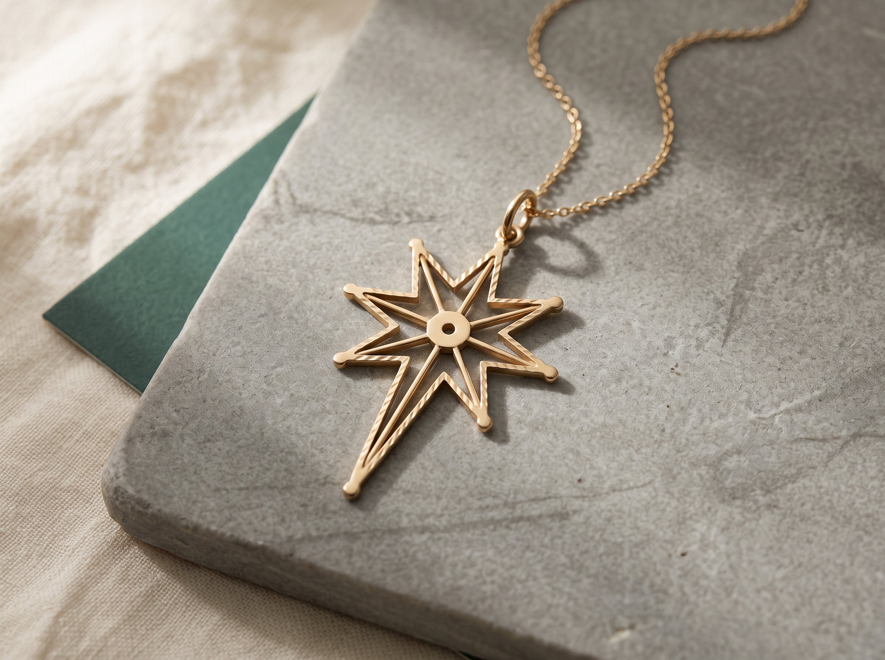
Etsy metni
Başlık 81/140
14K Gold Star Pendant Necklace, Openwork Eight Point Guiding Star, Christmas Gift
Etiketler (13)
14k gold necklace, star necklace, guiding star, north star pendant, openwork pendant, eight point star, celestial jewelry, star of bethlehem, christmas gift, gift for her, cable chain necklace, solid gold pendant, diamond cut gold
Malzemeler
14k yellow gold, 14k gold cable chain, 14k gold lobster clasp
Açıklama
An eight-pointed star drawn in gold: an open rail, eight short spokes and a small round window at the centre, with the lower ray drawn longer. A quiet Christmas gift that keeps being worn long after. THE PIECE The star is 18 mm wide and 23 mm tall. Seven rays reach 9 mm from the centre and the lower ray 14 mm. The 1.0 mm rail is diamond-cut on its face; the centre disc is 4.5 mm across with a 2.0 mm hole. The ray tips are rounded. The bail is cast with the star. GOLD WEIGHT 4.07 g of 14k gold, counting the chain, clasp and extender. On the scale the finished piece weighs 4.07 g in total with everything on it. LENGTH AND FIT A 1.0 mm 14k cable chain, 16 in with a 2 in extender, so it sits from 16 to 18 in. The chain is part of the design and its weight is counted in the gold weight above. HOW IT IS MADE Made to order. Cast in 14k gold in one piece. CARE Wipe with a soft dry cloth, or wash in warm water with a drop of mild soap and a soft brush. Take it off for swimming and cleaning. No bleach or chlorine. GIFTING Arrives in a gift box, ready to give. Made to order. The processing time is shown at checkout.
Atölye kartı
Yildiz 18.0 x 23.0 mm (7 kol R9.0, alt kol R14.0, vadi r4.2) + kulp D4.0 -> toplam boy ~27 mm. Ray bitmis 1.0 gen x 0.9 kal (model 1.2 x 1.2: +0.2 bitirme, on yuz elmas tiras +0.1). Merkez gobek D4.5 x 1.1, ortada D2.0 yuvarlak delik. 8 vadi kirisi 1.95 x 0.8 x 0.9; alt kol orta kaburgasi 11.25 x 0.8 x 0.9. Kulp kesit 1.0 x 1.6, ic cap 2.0.
Tek parca kayip-mum dokum (ray, kirisler, kaburga, gobek, kulp ayni mumdan; montaj ve lehim yok). 9 pencere (7 kol + uzun kolda kaburganin iki yani) mumdan acik gelir; her pencere ucu, aciklik 0.6 mm'ye indigi yerde 0.3 mm yaricapla biter, otesi kati dolgu (ag/perde olusmasin). Merkezde yildiz deligi YOK; D2.0 yuvarlak delik (1.0 kalinlikta derinlik/genislik 0.55). Mine yok, tas yok.
Tezgâh sırası
- 1. CAD: bitmis olculer + 0.2 mm bitirme payi, on yuz elmas tiras yuzeylerine +0.1 mm (ray modeli 1.2 x 1.2). Pencere uclari 0.6 mm genislikte r0.3 ile kapatilir.
- 2. Mum/recine baski (DLP, 25-50 um katman), destekler arka yuzde; 3 besleme: alt kol ucu arkasi + iki yan kol ucu (ince rayda eksik dolumu onler).
- 3. Yatirim, mum yakma programi (recine icin 730 C'ye kadar kademeli), 14K standart alasim vakum dokum ~1060-1090 C metal, flaska ~600 C.
- 4. Yolluk kesimi (alt kol arkasi), tesviye: ince egeler ve 600-1200 zimpara; ray kalinligi kumpasla 0.9 +/- 0.05, genislik 1.0 +/- 0.05 kontrol.
- 5. Pencere uclarini ve D2.0 deligi 0.6 mm pin-gauge ile kontrol; perde (flash) varsa tel testere ile temizle.
- 6. Elmas tiras (on yuz ray fasetleri) - son metal kaldirma islemi; tiras sonrasi ray kalinligi >=0.85.
- 7. Kulp ici cila (zincir surtunmesi), elde cila; tamburda kisa (20 dk) porselen/celik bilye, elmas tiras kenarlari korunur.
- 8. QC: tartim (uc 1.81 g +/- %5), uc yaricaplari >=0.4 (parmakla takilma testi), kulp kesiti 1.0 x 1.6 kontrol, zincire takma.
Malzeme listesi
- Alasim: 14K sari standart dokum alasimi (minesiz parca; Zn serbest), vakum dokum. Bitmis uc altini 1.808 g x 1.15 = 2.08 g dokum metali (yolluk/kayip payi).
- Mine tozu: yok.
- Tas: yok.
- Zincir: 14K solid cable 1.0 mm, 18in toplam (16in + 2in uzatma) = 1.902 g.
- Bulgular: 14K istakoz kopca ~9mm 0.25 g (tahmin), 2 x 14K atlama halkasi 0.060 g, 14K uzatma etiketi 0.046 g.
Arıza modları
| Arıza | Tasarım nasıl önlüyor |
|---|---|
| Ince rayda eksik dolum / soguk birlesme (0.9 mm rayin uzak kol uclari) | Model kalinligi 1.2, uc besleme kanali, vakum dokum; ray 0.85 ust sinirdan degil 0.9 bitmisten kuruldu. |
| Pencere uclarinda yatirim perdesi / kor delik (0.6 alti aciklik) | Her pencere 0.6 mm genislige inince r0.3 ile kapatildi; merkez yildiz delik yerine D2.0 yuvarlak delik. |
| Uzun alt kolun egilmesi/takilmasi (kumas) | Alt kola gobekten uca orta kaburga eklendi (iki 10.25 mm kenari ucgenler); tum uclar r>=0.5 yuvarlak. |
| Elmas tirasin rayi 0.8 alti inceltmesi | On yuze +0.1 ek model payi; tiras sonrasi kalinlik QC >=0.85. |
Tolerans
| Kural | Değer | |
|---|---|---|
| L1 karat 14K (KANIT karat_policy; 14K vitreous 'marginal', not_viable degil) | 14K sari | ✓ |
| L2 mine | mine yok - uygulanmaz | ✓ |
| L3 ilk pisirimden sonra hamlac lehimi yok; kulp govdeyle tek dokum | lehim baglantisi 0; kulp entegre dokum; pisirim sonrasi ek yok | ✓ |
| L4 tas | tas yok - uygulanmaz | ✓ |
| L5 dekoratif metal >=0.6 | kiris 0.8, kaburga 0.8, pencere uc dolgusu kati | ✓ |
| L5 yapisal >=0.8 | ray 1.0 x 0.9 bitmis | ✓ |
| L5 kulp kesiti >=1.0 | 1.0 x 1.6 | ✓ |
| L5 aciklik >=0.6 ve derinlik <=2x genislik | min pencere 0.6 (derinlik 0.9 -> oran 1.5); merkez delik D2.0 (oran 0.55) | ✓ |
| L5 model +0.2 (elmas tiras yuzunde +0.3) | ray modeli 1.2 gen x 1.2 kal | ✓ |
| L5 giyilen uc yaricapi >=0.4 | kol uclari r0.5 (ray yarim genisligi) | ✓ |
| L6 hollow | kati - 'solid' baslikta kalabilir | ✓ |
| L7 kolye bandi 2.8-4.2 g (zincir+bulgu dahil altin) | 4.067 g (uc 1.808 + zincir 1.902 + bulgu 0.356); tavana pay 0.133 g | ✓ |
| L8 zincir 14K solid, tip+genislik yazili, 16in+2in uzatma, varyant degil | 14K solid cable 1.0 mm, 16+2 in, sabit | ✓ |
Görsel promptları (16)
- 01Hero / arama küçük resmi: tek ürün, marka natürmortu, 4:3.Referanssız
Quiet luxury editorial still-life product photography. Warm ivory linen ground, honed grey stone slab, a sliver of deep jade-green matte card. Soft directional window light from upper left, long soft shadow, shallow depth of field. Solid yellow gold with warm antique tone. Restrained heirloom mood. No text, no logo, no glitter, no Christmas decoration. The piece: Eight-pointed star pendant in 14K yellow gold, 18 mm wide and 23 mm tall. The lower ray is longer, 14 mm from the centre, than the other seven rays at 9 mm. Openwork construction: a 1.0 mm wide rail traces the star outline, eight short spokes join the inner corners to a 4.5 mm round centre disc with a 2.0 mm round hole through it, and a thin rib runs down the middle of the long lower ray. Rail faces are diamond-cut with bright facets; ray tips are rounded. Integral round bail at the top ray. 1.0 mm 14K cable chain, 16 inch plus 2 inch extender. The piece carries no gemstones at all and no empty settings. The piece has no enamel and no colour: every surface is yellow gold. The pendant lies flat and face up on the honed grey stone slab, the chain running in a soft loose curve up and out of the top edge of the frame. Seen from about 30 degrees above with a 100 mm macro lens, the decorated part in razor-sharp focus, filling about a third of the frame width, with the chain softly out of focus toward the frame edges. No people and no hands.
Alt metin 14K gold eight-pointed openwork star pendant on a fine cable chain
- 02Takılı hâli: ölçek ve duruş. Hero'dan sonra dönüşümü en çok etkileyen kare.Referans: hero kırpımı
Quiet luxury editorial photography in warm ivory, stone grey and deep jade-green tones, soft directional window light from the upper left, true colour, fine film grain, no heavy retouching. No text, no logo, no watermark, no glitter. The attached reference image is a crop of this exact piece: keep its shape, proportions and gold colour exactly as in the reference. The piece: Eight-pointed star pendant in 14K yellow gold, 18 mm wide and 23 mm tall. The lower ray is longer, 14 mm from the centre, than the other seven rays at 9 mm. Openwork construction: a 1.0 mm wide rail traces the star outline, eight short spokes join the inner corners to a 4.5 mm round centre disc with a 2.0 mm round hole through it, and a thin rib runs down the middle of the long lower ray. Rail faces are diamond-cut with bright facets; ray tips are rounded. Integral round bail at the top ray. 1.0 mm 14K cable chain, 16 inch plus 2 inch extender. The piece carries no gemstones at all and no empty settings. The piece has no enamel and no colour: every surface is yellow gold. Worn by a woman against bare skin just below the collarbone, above the open neckline of a warm-ivory silk blouse, cropped from chin to mid-chest so no face shows; the pendant hangs centred and faces the camera; it is the only jewellery in the image; true to scale, the main element measures about 23 mm across.
Alt metin 14K gold eight-pointed openwork star pendant on a fine cable chain, worn
- 03Makro işçilik: fiyatı meşrulaştıran detay (mine yüzeyi, flush taş, kenar bitimi).Referans: hero kırpımı
Quiet luxury editorial photography in warm ivory, stone grey and deep jade-green tones, soft directional window light from the upper left, true colour, fine film grain, no heavy retouching. No text, no logo, no watermark, no glitter. The attached reference image is a crop of this exact piece: keep its shape, proportions and gold colour exactly as in the reference. The piece: Eight-pointed star pendant in 14K yellow gold, 18 mm wide and 23 mm tall. The lower ray is longer, 14 mm from the centre, than the other seven rays at 9 mm. Openwork construction: a 1.0 mm wide rail traces the star outline, eight short spokes join the inner corners to a 4.5 mm round centre disc with a 2.0 mm round hole through it, and a thin rib runs down the middle of the long lower ray. Rail faces are diamond-cut with bright facets; ray tips are rounded. Integral round bail at the top ray. 1.0 mm 14K cable chain, 16 inch plus 2 inch extender. The piece carries no gemstones at all and no empty settings. The piece has no enamel and no colour: every surface is yellow gold. Extreme close-up macro, 100 mm macro lens: The open centre disc with its 2.0 mm round hole, the eight short spokes and the bright diamond-cut facets on the rail. The rest of the piece falls away into soft focus on warm-ivory linen.
Alt metin Close-up of the open centre disc and diamond-cut rail of the star
- 04Elde ölçek: mm'yi parmak ucuna çevirir, 'beklediğimden küçük' iadesini önler.Referans: hero kırpımı
Quiet luxury editorial photography in warm ivory, stone grey and deep jade-green tones, soft directional window light from the upper left, true colour, fine film grain, no heavy retouching. No text, no logo, no watermark, no glitter. The attached reference image is a crop of this exact piece: keep its shape, proportions and gold colour exactly as in the reference. The piece: Eight-pointed star pendant in 14K yellow gold, 18 mm wide and 23 mm tall. The lower ray is longer, 14 mm from the centre, than the other seven rays at 9 mm. Openwork construction: a 1.0 mm wide rail traces the star outline, eight short spokes join the inner corners to a 4.5 mm round centre disc with a 2.0 mm round hole through it, and a thin rib runs down the middle of the long lower ray. Rail faces are diamond-cut with bright facets; ray tips are rounded. Integral round bail at the top ray. 1.0 mm 14K cable chain, 16 inch plus 2 inch extender. The piece carries no gemstones at all and no empty settings. The piece has no enamel and no colour: every surface is yellow gold. Close-up for scale against a plain warm-ivory background thrown softly out of focus: the pendant resting on the fingertips of a woman's open hand, face up, the chain running out of the frame; true to scale, the main element measures about 23 mm across, a fingertip is about 16 mm wide; it is the only jewellery in the image; anatomically correct hands with five fingers, short natural unpolished nails.
Alt metin 14K gold eight-pointed openwork star pendant on a fine cable chain, held between fingers for scale
- 05Arka ve bulgular: dolu gövde, kilit / çivi / iğne; sağlamlık sorusunu cevaplar.Referans: hero kırpımı
Quiet luxury editorial photography in warm ivory, stone grey and deep jade-green tones, soft directional window light from the upper left, true colour, fine film grain, no heavy retouching. No text, no logo, no watermark, no glitter. The attached reference image is a crop of this exact piece: keep its shape, proportions and gold colour exactly as in the reference. The piece: Eight-pointed star pendant in 14K yellow gold, 18 mm wide and 23 mm tall. The lower ray is longer, 14 mm from the centre, than the other seven rays at 9 mm. Openwork construction: a 1.0 mm wide rail traces the star outline, eight short spokes join the inner corners to a 4.5 mm round centre disc with a 2.0 mm round hole through it, and a thin rib runs down the middle of the long lower ray. Rail faces are diamond-cut with bright facets; ray tips are rounded. Integral round bail at the top ray. 1.0 mm 14K cable chain, 16 inch plus 2 inch extender. The piece carries no gemstones at all and no empty settings. The piece has no enamel and no colour: every surface is yellow gold. The back of the piece, top-down on honed grey stone: The flat open back of the star rail, the spokes and the round bail at the top ray.
Alt metin Back of the pendant necklace showing the open back and the bail
- 06Tam boy / çift / mekanizma: uzunluk, ayar ve ne geldiğini tek karede gösterir.Referans: hero kırpımı
Quiet luxury editorial photography in warm ivory, stone grey and deep jade-green tones, soft directional window light from the upper left, true colour, fine film grain, no heavy retouching. No text, no logo, no watermark, no glitter. The attached reference image is a crop of this exact piece: keep its shape, proportions and gold colour exactly as in the reference. The piece: Eight-pointed star pendant in 14K yellow gold, 18 mm wide and 23 mm tall. The lower ray is longer, 14 mm from the centre, than the other seven rays at 9 mm. Openwork construction: a 1.0 mm wide rail traces the star outline, eight short spokes join the inner corners to a 4.5 mm round centre disc with a 2.0 mm round hole through it, and a thin rib runs down the middle of the long lower ray. Rail faces are diamond-cut with bright facets; ray tips are rounded. Integral round bail at the top ray. 1.0 mm 14K cable chain, 16 inch plus 2 inch extender. The piece carries no gemstones at all and no empty settings. The piece has no enamel and no colour: every surface is yellow gold. The whole necklace laid out top-down on warm-ivory linen in a straight vertical line, chain doubled into a narrow U, pendant face up at the bottom, lobster clasp and extender chain at the top.
Alt metin 14K gold eight-pointed openwork star pendant on a fine cable chain, full length
- 07Yan profil: kalınlık ve kütle, düz baskı değil gerçek altın olduğunu gösterir.Referans: hero kırpımı
Quiet luxury editorial photography in warm ivory, stone grey and deep jade-green tones, soft directional window light from the upper left, true colour, fine film grain, no heavy retouching. No text, no logo, no watermark, no glitter. The attached reference image is a crop of this exact piece: keep its shape, proportions and gold colour exactly as in the reference. The piece: Eight-pointed star pendant in 14K yellow gold, 18 mm wide and 23 mm tall. The lower ray is longer, 14 mm from the centre, than the other seven rays at 9 mm. Openwork construction: a 1.0 mm wide rail traces the star outline, eight short spokes join the inner corners to a 4.5 mm round centre disc with a 2.0 mm round hole through it, and a thin rib runs down the middle of the long lower ray. Rail faces are diamond-cut with bright facets; ray tips are rounded. Integral round bail at the top ray. 1.0 mm 14K cable chain, 16 inch plus 2 inch extender. The piece carries no gemstones at all and no empty settings. The piece has no enamel and no colour: every surface is yellow gold. Side profile at eye level on honed grey stone, the camera level with the piece: A flat openwork star 0.9 mm thick with the centre disc at 1.1 mm.
Alt metin Side profile of the pendant necklace showing its thickness
- 08Kış yaşam stili: sezonu Noel dekoru olmadan kurar.Referans: hero kırpımı
Quiet luxury editorial photography in warm ivory, stone grey and deep jade-green tones, soft directional window light from the upper left, true colour, fine film grain, no heavy retouching. No text, no logo, no watermark, no glitter. The attached reference image is a crop of this exact piece: keep its shape, proportions and gold colour exactly as in the reference. The piece: Eight-pointed star pendant in 14K yellow gold, 18 mm wide and 23 mm tall. The lower ray is longer, 14 mm from the centre, than the other seven rays at 9 mm. Openwork construction: a 1.0 mm wide rail traces the star outline, eight short spokes join the inner corners to a 4.5 mm round centre disc with a 2.0 mm round hole through it, and a thin rib runs down the middle of the long lower ray. Rail faces are diamond-cut with bright facets; ray tips are rounded. Integral round bail at the top ray. 1.0 mm 14K cable chain, 16 inch plus 2 inch extender. The piece carries no gemstones at all and no empty settings. The piece has no enamel and no colour: every surface is yellow gold. Winter afternoon light: a woman wearing the necklace over a fine ivory cashmere crew-neck sweater, cropped from chin to chest, a grey wool coat collar at the edge of the frame; it is the only jewellery in the image.
Alt metin 14K gold eight-pointed openwork star pendant on a fine cable chain, styled with winter knitwear
- 09Hediye kutusu: Noel alıcısının ilk sorusu, hediyeye hazır mı?Referans: hero kırpımı
Quiet luxury editorial photography in warm ivory, stone grey and deep jade-green tones, soft directional window light from the upper left, true colour, fine film grain, no heavy retouching. No text, no logo, no watermark, no glitter. The attached reference image is a crop of this exact piece: keep its shape, proportions and gold colour exactly as in the reference. The piece: Eight-pointed star pendant in 14K yellow gold, 18 mm wide and 23 mm tall. The lower ray is longer, 14 mm from the centre, than the other seven rays at 9 mm. Openwork construction: a 1.0 mm wide rail traces the star outline, eight short spokes join the inner corners to a 4.5 mm round centre disc with a 2.0 mm round hole through it, and a thin rib runs down the middle of the long lower ray. Rail faces are diamond-cut with bright facets; ray tips are rounded. Integral round bail at the top ray. 1.0 mm 14K cable chain, 16 inch plus 2 inch extender. The piece carries no gemstones at all and no empty settings. The piece has no enamel and no colour: every surface is yellow gold. Top-down: the pendant face up, chain coiled inside a small open square gift box in plain warm-ivory card with a soft ivory insert, the lid set beside it, a length of narrow deep jade-green ribbon untied beside the box, on honed grey stone. No branding, no printed pattern, no tissue paper, no Christmas decoration, exactly one box.
Alt metin 14K gold eight-pointed openwork star pendant on a fine cable chain in a gift box
- 10Gerçek renk: nötr gün ışığında altın ve mine rengi; renk kaynaklı iadeyi azaltır.Referans: hero kırpımı
Quiet luxury editorial photography in warm ivory, stone grey and deep jade-green tones, soft directional window light from the upper left, true colour, fine film grain, no heavy retouching. No text, no logo, no watermark, no glitter. The attached reference image is a crop of this exact piece: keep its shape, proportions and gold colour exactly as in the reference. The piece: Eight-pointed star pendant in 14K yellow gold, 18 mm wide and 23 mm tall. The lower ray is longer, 14 mm from the centre, than the other seven rays at 9 mm. Openwork construction: a 1.0 mm wide rail traces the star outline, eight short spokes join the inner corners to a 4.5 mm round centre disc with a 2.0 mm round hole through it, and a thin rib runs down the middle of the long lower ray. Rail faces are diamond-cut with bright facets; ray tips are rounded. Integral round bail at the top ray. 1.0 mm 14K cable chain, 16 inch plus 2 inch extender. The piece carries no gemstones at all and no empty settings. The piece has no enamel and no colour: every surface is yellow gold. Colour-accurate reference shot: the piece alone, top-down on plain matte white-ivory paper under even neutral north daylight, no shadow drama, no props, the piece centred and filling half the frame.
Alt metin 14K gold eight-pointed openwork star pendant on a fine cable chain in neutral daylight, true colour
- 11Ölçü grafiği tabanı: sağ üçte bir boş; mm etiketleri sonra eklenir.Referans: hero kırpımı
Quiet luxury editorial photography in warm ivory, stone grey and deep jade-green tones, soft directional window light from the upper left, true colour, fine film grain, no heavy retouching. No text, no logo, no watermark, no glitter. The attached reference image is a crop of this exact piece: keep its shape, proportions and gold colour exactly as in the reference. The piece: Eight-pointed star pendant in 14K yellow gold, 18 mm wide and 23 mm tall. The lower ray is longer, 14 mm from the centre, than the other seven rays at 9 mm. Openwork construction: a 1.0 mm wide rail traces the star outline, eight short spokes join the inner corners to a 4.5 mm round centre disc with a 2.0 mm round hole through it, and a thin rib runs down the middle of the long lower ray. Rail faces are diamond-cut with bright facets; ray tips are rounded. Integral round bail at the top ray. 1.0 mm 14K cable chain, 16 inch plus 2 inch extender. The piece carries no gemstones at all and no empty settings. The piece has no enamel and no colour: every surface is yellow gold. The piece alone, top-down on plain warm-ivory paper, placed in the left two thirds of the frame; the right third is empty paper for dimension labels to be added later; even soft light, no props.
Alt metin 14K gold eight-pointed openwork star pendant on a fine cable chain with space for dimensions
- 12El işçiliği: siparişe üretim hikâyesi, tezgâhta parça.Referans: hero kırpımı
Quiet luxury editorial photography in warm ivory, stone grey and deep jade-green tones, soft directional window light from the upper left, true colour, fine film grain, no heavy retouching. No text, no logo, no watermark, no glitter. The attached reference image is a crop of this exact piece: keep its shape, proportions and gold colour exactly as in the reference. The piece: Eight-pointed star pendant in 14K yellow gold, 18 mm wide and 23 mm tall. The lower ray is longer, 14 mm from the centre, than the other seven rays at 9 mm. Openwork construction: a 1.0 mm wide rail traces the star outline, eight short spokes join the inner corners to a 4.5 mm round centre disc with a 2.0 mm round hole through it, and a thin rib runs down the middle of the long lower ray. Rail faces are diamond-cut with bright facets; ray tips are rounded. Integral round bail at the top ray. 1.0 mm 14K cable chain, 16 inch plus 2 inch extender. The piece carries no gemstones at all and no empty settings. The piece has no enamel and no colour: every surface is yellow gold. The finished piece lying on a worn wooden jeweller's bench pin beside a steel burnisher and a fine half-round file, warm lamp light, shallow depth of field, the piece in sharp focus; no hands.
Alt metin 14K gold eight-pointed openwork star pendant on a fine cable chain on a jeweller's bench
- 13Motifin anlamı: sol üçte bir boş; sembol hikâyesi metni sonra eklenir.Referans: hero kırpımı
Quiet luxury editorial photography in warm ivory, stone grey and deep jade-green tones, soft directional window light from the upper left, true colour, fine film grain, no heavy retouching. No text, no logo, no watermark, no glitter. The attached reference image is a crop of this exact piece: keep its shape, proportions and gold colour exactly as in the reference. The piece: Eight-pointed star pendant in 14K yellow gold, 18 mm wide and 23 mm tall. The lower ray is longer, 14 mm from the centre, than the other seven rays at 9 mm. Openwork construction: a 1.0 mm wide rail traces the star outline, eight short spokes join the inner corners to a 4.5 mm round centre disc with a 2.0 mm round hole through it, and a thin rib runs down the middle of the long lower ray. Rail faces are diamond-cut with bright facets; ray tips are rounded. Integral round bail at the top ray. 1.0 mm 14K cable chain, 16 inch plus 2 inch extender. The piece carries no gemstones at all and no empty settings. The piece has no enamel and no colour: every surface is yellow gold. The piece alone, top-down on a deep jade-green matte card, placed in the right two thirds of the frame; the left third is empty card for a caption to be added later; soft directional light.
Alt metin 14K gold eight-pointed openwork star pendant on a fine cable chain on a deep green card
- 14Yıl boyu takılır: 'yalnız Noel' itirazını kırar.Referans: hero kırpımı
Quiet luxury editorial photography in warm ivory, stone grey and deep jade-green tones, soft directional window light from the upper left, true colour, fine film grain, no heavy retouching. No text, no logo, no watermark, no glitter. The attached reference image is a crop of this exact piece: keep its shape, proportions and gold colour exactly as in the reference. The piece: Eight-pointed star pendant in 14K yellow gold, 18 mm wide and 23 mm tall. The lower ray is longer, 14 mm from the centre, than the other seven rays at 9 mm. Openwork construction: a 1.0 mm wide rail traces the star outline, eight short spokes join the inner corners to a 4.5 mm round centre disc with a 2.0 mm round hole through it, and a thin rib runs down the middle of the long lower ray. Rail faces are diamond-cut with bright facets; ray tips are rounded. Integral round bail at the top ray. 1.0 mm 14K cable chain, 16 inch plus 2 inch extender. The piece carries no gemstones at all and no empty settings. The piece has no enamel and no colour: every surface is yellow gold. Everyday wear, no season: a woman wearing the necklace with a plain white cotton shirt open at the collar, soft daylight, cropped from chin to chest; the only jewellery in the image.
Alt metin 14K gold eight-pointed openwork star pendant on a fine cable chain, everyday wear
- 15Hediye anı: duygu; Noel satın alma niyetine bağlar.Referans: hero kırpımı
Quiet luxury editorial photography in warm ivory, stone grey and deep jade-green tones, soft directional window light from the upper left, true colour, fine film grain, no heavy retouching. No text, no logo, no watermark, no glitter. The attached reference image is a crop of this exact piece: keep its shape, proportions and gold colour exactly as in the reference. The piece: Eight-pointed star pendant in 14K yellow gold, 18 mm wide and 23 mm tall. The lower ray is longer, 14 mm from the centre, than the other seven rays at 9 mm. Openwork construction: a 1.0 mm wide rail traces the star outline, eight short spokes join the inner corners to a 4.5 mm round centre disc with a 2.0 mm round hole through it, and a thin rib runs down the middle of the long lower ray. Rail faces are diamond-cut with bright facets; ray tips are rounded. Integral round bail at the top ray. 1.0 mm 14K cable chain, 16 inch plus 2 inch extender. The piece carries no gemstones at all and no empty settings. The piece has no enamel and no colour: every surface is yellow gold. A gift being given: two pairs of hands across a pale oak table, one pair holding out the small open warm-ivory gift box with the piece visible inside, the other reaching for it, soft warm window light, sleeves of ivory and grey knitwear; exactly one box and one piece of jewellery; anatomically correct hands with five fingers, short natural unpolished nails.
Alt metin 14K gold eight-pointed openwork star pendant on a fine cable chain given as a gift
- 16Mağaza ızgarası / Pinterest: koyu jade zeminde yüksek kontrast kare.Referans: hero kırpımı
Quiet luxury editorial photography in warm ivory, stone grey and deep jade-green tones, soft directional window light from the upper left, true colour, fine film grain, no heavy retouching. No text, no logo, no watermark, no glitter. The attached reference image is a crop of this exact piece: keep its shape, proportions and gold colour exactly as in the reference. The piece: Eight-pointed star pendant in 14K yellow gold, 18 mm wide and 23 mm tall. The lower ray is longer, 14 mm from the centre, than the other seven rays at 9 mm. Openwork construction: a 1.0 mm wide rail traces the star outline, eight short spokes join the inner corners to a 4.5 mm round centre disc with a 2.0 mm round hole through it, and a thin rib runs down the middle of the long lower ray. Rail faces are diamond-cut with bright facets; ray tips are rounded. Integral round bail at the top ray. 1.0 mm 14K cable chain, 16 inch plus 2 inch extender. The piece carries no gemstones at all and no empty settings. The piece has no enamel and no colour: every surface is yellow gold. Top-down flat lay of the piece centred on a deep jade-green matte card with a narrow border of warm-ivory linen at the top edge, crisp soft light, the piece filling about 40 percent of the frame so a square crop keeps all of it.
Alt metin 14K gold eight-pointed openwork star pendant on a fine cable chain, flat lay on deep green
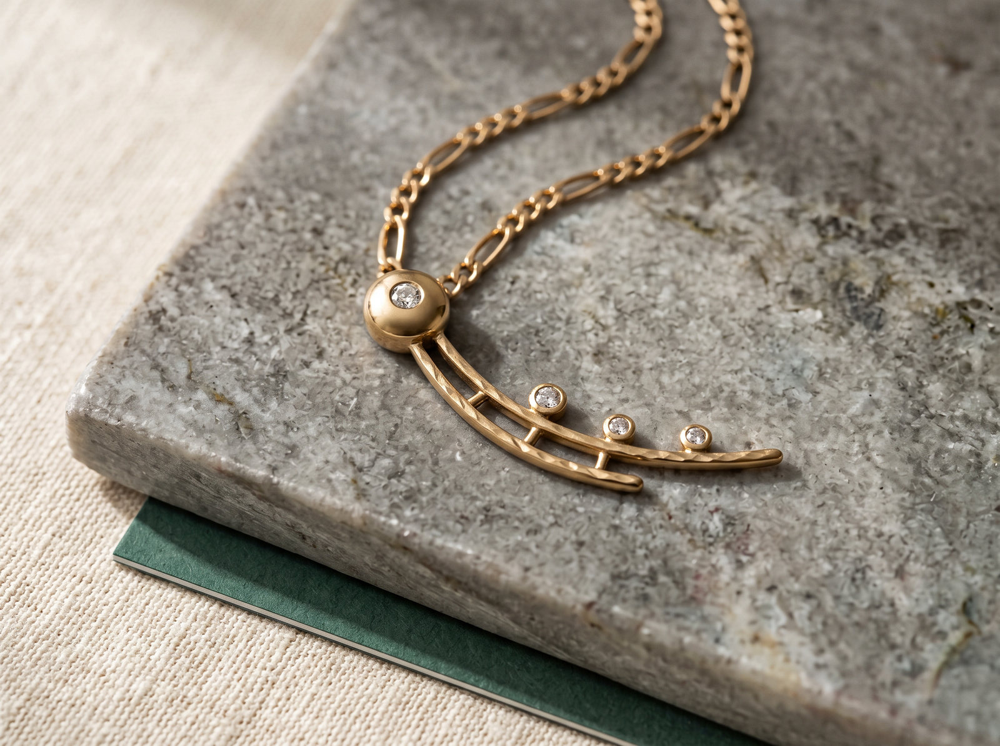
Etsy metni
Başlık 77/140
14K Gold Comet Pendant Necklace, Four Lab Grown Sapphires, Shooting Star Gift
Etiketler (13)
14k gold necklace, comet necklace, shooting star, lab grown sapphire, celestial jewelry, star pendant, figaro chain, wish necklace, christmas gift, gift for her, solid gold pendant, astronomy gift, new year gift
Malzemeler
14k yellow gold, lab grown white sapphire, 14k gold figaro chain, 14k gold lobster clasp
Açıklama
A comet in gold: a domed head with a lab-grown white sapphire and two tail rails that sweep away from it, three more sapphires running down the main rail. A shooting-star wish for Christmas and every day after. THE PIECE About 31 mm long. The domed head is 6.0 mm across; the main tail rail is 26 mm long and narrows from 1.6 mm to 1.0 mm, the second rail is 18 mm, joined by three short cross bars. Rail faces are diamond-cut, the head is polished, every tip is rounded. Because the head is the heaviest part, the pendant hangs with the tail turned about 20 degrees off vertical. GOLD WEIGHT 4.10 g of 14k gold, counting the chain, clasp and extender. On the scale the finished piece weighs 4.12 g in total with the stones. STONES Four round lab-grown white sapphires, all flush set: one 2.0 mm in the head, one 1.8 mm and two 1.5 mm along the main rail, 0.09 ct in total. Each sits level with the gold over a small hole that lets light and cleaning water through. Lab-grown sapphire has the hardness of mined sapphire (Mohs 9). LENGTH AND FIT A 1.5 mm 14k figaro chain, 16 in with a 2 in extender, so it sits from 16 to 18 in. The chain is part of the design and its weight is counted in the gold weight above. HOW IT IS MADE Made to order. Cast in 14k gold in one piece. The stones are set last, cold, after all firing and polishing. CARE Wipe with a soft dry cloth, or wash in warm water with a drop of mild soap and a soft brush. Take it off for swimming and cleaning. No bleach or chlorine. GIFTING Arrives in a gift box, ready to give. Made to order. The processing time is shown at checkout.
Atölye kartı
Toplam ~31 mm capraz (bas D6.0 + kuyruk 26 mm). Bas: D6.0, kenar 1.0, merkez 1.8 (kure kapak). Ana kuyruk rayi 26 mm, genislik 1.6->1.0, kalinlik 1.0. Ikinci ray 18 x 1.0 x 1.0. 3 capraz baglanti 0.8 gen x 1.0, raylar arasi 1.8. Tas pedleri: 1.8 mm tas icin D2.8 x 1.7; 1.5 mm taslar icin D2.4 x 1.5. Kuyruk ucu r0.5. Kulp kesit 1.0 x 1.6 (bas arkasi ust-yan).
Tek parca 14K dokum: bas, iki ray, 3 baglanti, 3 ped ve kulp ayni mumdan; lehim yok. Ray boyunca kalinlik 1.0, yalniz tas noktalarinda KANIT flush_seat_rule'a gore yerel pedler (1.5 mm tas: 1.5, 1.8 mm tas: 1.7, 2.0 mm tas: 1.8 yerel kalinlik). Her tasin altinda boydan boya pilot delik (D0.9 / D1.0). Taslar en son, soguk, flush/gypsy.
Tezgâh sırası
- 1. CAD: bitmis olcu + 0.2 bitirme payi (kuyruk elmas tiras yuzune +0.1). Tas pedleri ve D0.9/D1.0 pilot delikleri modelde.
- 2. Recine baski; besleme bas arkasindan (en kalin kesit) + ana ray ortasindan yardimci besleme.
- 3. Yatirim, yakma, 14K vakum dokum.
- 4. Yolluk kesimi, tesviye; ray kalinligi 1.0 +/- 0.05, ped kalinliklari 1.5 / 1.7 / 1.8 kumpasla.
- 5. Bas kubbesi on cila, kuyruk raylarina elmas tiras.
- 6. Tas yuvasi: pilot deligi teyit, yuva frezesi (hart bur) ile rondis seviyesine; tas tablasi yuzeyle es ya da 0.05 asagida.
- 7. Tas oturtma (soguk): tasi yerlestir, cevre metali itici/cekicle ~0.02-0.05 mm rondis uzerine bindir, parlatici (burnisher) ile kapat. Her tas icin 10x lupla salinim testi.
- 8. Son cila (tas cevresi elde), QC: tartim (uc 1.55 g +/- %5), arkadan culet tasmasi yok (tirnakla), asilis acisi testi zincirde.
Malzeme listesi
- Alasim: 14K sari standart dokum alasimi (minesiz parca; Zn serbest), vakum dokum. Bitmis uc 1.552 g x 1.15 = 1.79 g dokum metali.
- Mine tozu: yok.
- Taslar: 1 x 2.0 mm (0.034 ct) + 1 x 1.8 mm (0.025 ct) + 2 x 1.5 mm (0.014 ct) lab grown white sapphire = 0.087 ct.
- Zincir: 14K solid figaro 1.5 mm, 18in = 2.195 g.
- Bulgular: 14K istakoz ~9mm 0.25 g (tahmin), 2 atlama halkasi 0.060 g, etiket 0.046 g.
Arıza modları
| Arıza | Tasarım nasıl önlüyor |
|---|---|
| Culet arkadan tasar / yuva dibi delinir (orijinal 0.8 mm rayda 1.5 mm tas) | Yerel kalinlik KANIT'a gore: 1.5/1.7/1.8 mm; yuva altinda planli pilot delik (0.55 mm kalan derinlik, D0.9 -> oran 0.6). |
| Ince kuyrugun dokumde eksik dolumu veya cilada egilmesi | Ray 1.0 kalinlik, 3 capraz baglanti (en uzun serbest aciklik ~6 mm), ikinci besleme kanali; cila elde, tamburda degil. |
| Tas gevsemesi (darbe/surtunme) | Yanal duvar 0.45-0.50 (KANIT Stuller tablosu), 0.02-0.05 mm bindirme, taslar tum metal islerinden sonra takilir. |
| Asimetrik parcanin zincirde ters donmesi | Kulp bas arkasinda ust-yan konumda, bas en agir kesit; agirlik merkezi kulbun altinda kalir, zincirde test edilir. |
Tolerans
| Kural | Değer | |
|---|---|---|
| L1 karat 14K (KANIT karat_policy; 14K vitreous 'marginal', not_viable degil) | 14K sari | ✓ |
| L2 mine | mine yok | ✓ |
| L3 ilk pisirimden sonra hamlac lehimi yok; kulp govdeyle tek dokum | lehim baglantisi 0; kulp entegre dokum; pisirim sonrasi ek yok | ✓ |
| L4 lab-grown, yuvarlak brilyant 1.3-2.0, flush | 4 tas: 2.0 / 1.8 / 1.5 / 1.5 lab white sapphire, flush | ✓ |
| L4 ev sahibi kalinligi (KANIT 1.5->1.5, 1.8->1.7, 2.0->1.8) | 2.0 tasta 1.8; 1.8 tasta 1.7; 1.5 taslarda 1.5 | ✓ |
| L4 yanal duvar (KANIT <1.8: 0.35; 1.8-2.5: 0.45) | 2.0: (2.9-2.0)/2=0.45; 1.8: (2.8-1.8)/2=0.50; 1.5: (2.4-1.5)/2=0.45 | ✓ |
| L4 tasin altinda delik | D1.0 (2.0 ve 1.8) / D0.9 (1.5), kalan derinlik 0.54-0.57 <= 2x cap | ✓ |
| L4 parca basina <=7 tas, pave yok | 4 tas | ✓ |
| L5 yapisal >=0.8 | ray 1.0 x 1.0 (en ince bitmis kesit 1.0 x 1.0) | ✓ |
| L5 dekoratif >=0.6 | capraz baglanti 0.8 | ✓ |
| L5 kulp kesiti >=1.0 | 1.0 x 1.6 | ✓ |
| L5 aciklik >=0.6 | raylar arasi 1.8 | ✓ |
| L5 uc yaricapi >=0.4 | kuyruk ucu r0.5 | ✓ |
| L7 kolye bandi 2.8-4.2 g (zincir+bulgu dahil altin) | 4.103 g (uc 1.552 + zincir 2.195 + bulgu 0.356); tavana pay 0.097 g | ✓ |
| L8 zincir 14K solid, tip+genislik yazili, 16in+2in uzatma, varyant degil | 14K solid figaro 1.5 mm, 16+2 in, sabit | ✓ |
Görsel promptları (16)
- 01Hero / arama küçük resmi: tek ürün, marka natürmortu, 4:3.Referanssız
Quiet luxury editorial still-life product photography. Warm ivory linen ground, honed grey stone slab, a sliver of deep jade-green matte card. Soft directional window light from upper left, long soft shadow, shallow depth of field. Solid yellow gold with warm antique tone. Restrained heirloom mood. No text, no logo, no glitter, no Christmas decoration. The piece: Comet pendant in 14K yellow gold, about 31 mm long. A 6.0 mm domed round head holds one flush-set 2.0 mm lab grown white sapphire at its centre. Two curved tail rails sweep away from the head, a 26 mm main rail and a shorter 18 mm second rail, joined by three short cross bars; the main rail narrows from 1.6 mm to 1.0 mm and both rails end in rounded tips. Three more flush-set lab grown white sapphires run along the main rail, one 1.8 mm and two 1.5 mm, each on a small round pad. Polished head, diamond-cut rails. Bail behind the upper edge of the head. 1.5 mm 14K figaro chain, 16 inch plus 2 inch extender. The stones are exactly these and no others: four round lab-grown white sapphires, all flush-set: one 2.0 mm in the comet head and one 1.8 mm and two 1.5 mm on small pads along the main tail rail. No other stone and no empty setting anywhere on the piece. The piece has no enamel and no colour: every surface is yellow gold. The pendant lies flat and face up on the honed grey stone slab, the chain running in a soft loose curve up and out of the top edge of the frame. Seen from about 30 degrees above with a 100 mm macro lens, the decorated part in razor-sharp focus, filling about a third of the frame width, with the chain softly out of focus toward the frame edges. No people and no hands.
Alt metin 14K gold comet pendant with four flush-set lab grown white sapphires
- 02Takılı hâli: ölçek ve duruş. Hero'dan sonra dönüşümü en çok etkileyen kare.Referans: hero kırpımı
Quiet luxury editorial photography in warm ivory, stone grey and deep jade-green tones, soft directional window light from the upper left, true colour, fine film grain, no heavy retouching. No text, no logo, no watermark, no glitter. The attached reference image is a crop of this exact piece: keep its shape, proportions, gold colour and stones exactly as in the reference. The piece: Comet pendant in 14K yellow gold, about 31 mm long. A 6.0 mm domed round head holds one flush-set 2.0 mm lab grown white sapphire at its centre. Two curved tail rails sweep away from the head, a 26 mm main rail and a shorter 18 mm second rail, joined by three short cross bars; the main rail narrows from 1.6 mm to 1.0 mm and both rails end in rounded tips. Three more flush-set lab grown white sapphires run along the main rail, one 1.8 mm and two 1.5 mm, each on a small round pad. Polished head, diamond-cut rails. Bail behind the upper edge of the head. 1.5 mm 14K figaro chain, 16 inch plus 2 inch extender. The stones are exactly these and no others: four round lab-grown white sapphires, all flush-set: one 2.0 mm in the comet head and one 1.8 mm and two 1.5 mm on small pads along the main tail rail. No other stone and no empty setting anywhere on the piece. The piece has no enamel and no colour: every surface is yellow gold. Worn by a woman against bare skin just below the collarbone, above the open neckline of a warm-ivory silk blouse, cropped from chin to mid-chest so no face shows; the pendant hangs centred and faces the camera; it is the only jewellery in the image; true to scale, the main element measures about 31 mm across.
Alt metin 14K gold comet pendant with four flush-set lab grown white sapphires, worn
- 03Makro işçilik: fiyatı meşrulaştıran detay (mine yüzeyi, flush taş, kenar bitimi).Referans: hero kırpımı
Quiet luxury editorial photography in warm ivory, stone grey and deep jade-green tones, soft directional window light from the upper left, true colour, fine film grain, no heavy retouching. No text, no logo, no watermark, no glitter. The attached reference image is a crop of this exact piece: keep its shape, proportions, gold colour and stones exactly as in the reference. The piece: Comet pendant in 14K yellow gold, about 31 mm long. A 6.0 mm domed round head holds one flush-set 2.0 mm lab grown white sapphire at its centre. Two curved tail rails sweep away from the head, a 26 mm main rail and a shorter 18 mm second rail, joined by three short cross bars; the main rail narrows from 1.6 mm to 1.0 mm and both rails end in rounded tips. Three more flush-set lab grown white sapphires run along the main rail, one 1.8 mm and two 1.5 mm, each on a small round pad. Polished head, diamond-cut rails. Bail behind the upper edge of the head. 1.5 mm 14K figaro chain, 16 inch plus 2 inch extender. The stones are exactly these and no others: four round lab-grown white sapphires, all flush-set: one 2.0 mm in the comet head and one 1.8 mm and two 1.5 mm on small pads along the main tail rail. No other stone and no empty setting anywhere on the piece. The piece has no enamel and no colour: every surface is yellow gold. Extreme close-up macro, 100 mm macro lens: The domed comet head with its flush-set 2.0 mm lab-grown white sapphire and the start of the two diamond-cut tail rails. The rest of the piece falls away into soft focus on warm-ivory linen.
Alt metin Close-up of the domed comet head and its flush-set lab-grown sapphire
- 04Elde ölçek: mm'yi parmak ucuna çevirir, 'beklediğimden küçük' iadesini önler.Referans: hero kırpımı
Quiet luxury editorial photography in warm ivory, stone grey and deep jade-green tones, soft directional window light from the upper left, true colour, fine film grain, no heavy retouching. No text, no logo, no watermark, no glitter. The attached reference image is a crop of this exact piece: keep its shape, proportions, gold colour and stones exactly as in the reference. The piece: Comet pendant in 14K yellow gold, about 31 mm long. A 6.0 mm domed round head holds one flush-set 2.0 mm lab grown white sapphire at its centre. Two curved tail rails sweep away from the head, a 26 mm main rail and a shorter 18 mm second rail, joined by three short cross bars; the main rail narrows from 1.6 mm to 1.0 mm and both rails end in rounded tips. Three more flush-set lab grown white sapphires run along the main rail, one 1.8 mm and two 1.5 mm, each on a small round pad. Polished head, diamond-cut rails. Bail behind the upper edge of the head. 1.5 mm 14K figaro chain, 16 inch plus 2 inch extender. The stones are exactly these and no others: four round lab-grown white sapphires, all flush-set: one 2.0 mm in the comet head and one 1.8 mm and two 1.5 mm on small pads along the main tail rail. No other stone and no empty setting anywhere on the piece. The piece has no enamel and no colour: every surface is yellow gold. Close-up for scale against a plain warm-ivory background thrown softly out of focus: the pendant resting on the fingertips of a woman's open hand, face up, the chain running out of the frame; true to scale, the main element measures about 31 mm across, a fingertip is about 16 mm wide; it is the only jewellery in the image; anatomically correct hands with five fingers, short natural unpolished nails.
Alt metin 14K gold comet pendant with four flush-set lab grown white sapphires, held between fingers for scale
- 05Arka ve bulgular: dolu gövde, kilit / çivi / iğne; sağlamlık sorusunu cevaplar.Referans: hero kırpımı
Quiet luxury editorial photography in warm ivory, stone grey and deep jade-green tones, soft directional window light from the upper left, true colour, fine film grain, no heavy retouching. No text, no logo, no watermark, no glitter. The attached reference image is a crop of this exact piece: keep its shape, proportions, gold colour and stones exactly as in the reference. The piece: Comet pendant in 14K yellow gold, about 31 mm long. A 6.0 mm domed round head holds one flush-set 2.0 mm lab grown white sapphire at its centre. Two curved tail rails sweep away from the head, a 26 mm main rail and a shorter 18 mm second rail, joined by three short cross bars; the main rail narrows from 1.6 mm to 1.0 mm and both rails end in rounded tips. Three more flush-set lab grown white sapphires run along the main rail, one 1.8 mm and two 1.5 mm, each on a small round pad. Polished head, diamond-cut rails. Bail behind the upper edge of the head. 1.5 mm 14K figaro chain, 16 inch plus 2 inch extender. The stones are exactly these and no others: four round lab-grown white sapphires, all flush-set: one 2.0 mm in the comet head and one 1.8 mm and two 1.5 mm on small pads along the main tail rail. No other stone and no empty setting anywhere on the piece. The piece has no enamel and no colour: every surface is yellow gold. The back of the piece, top-down on honed grey stone: The flat back of the head and the two tail rails, with small round holes under the four stones and the bail behind the head.
Alt metin Back of the pendant necklace showing the flat back and the bail
- 06Tam boy / çift / mekanizma: uzunluk, ayar ve ne geldiğini tek karede gösterir.Referans: hero kırpımı
Quiet luxury editorial photography in warm ivory, stone grey and deep jade-green tones, soft directional window light from the upper left, true colour, fine film grain, no heavy retouching. No text, no logo, no watermark, no glitter. The attached reference image is a crop of this exact piece: keep its shape, proportions, gold colour and stones exactly as in the reference. The piece: Comet pendant in 14K yellow gold, about 31 mm long. A 6.0 mm domed round head holds one flush-set 2.0 mm lab grown white sapphire at its centre. Two curved tail rails sweep away from the head, a 26 mm main rail and a shorter 18 mm second rail, joined by three short cross bars; the main rail narrows from 1.6 mm to 1.0 mm and both rails end in rounded tips. Three more flush-set lab grown white sapphires run along the main rail, one 1.8 mm and two 1.5 mm, each on a small round pad. Polished head, diamond-cut rails. Bail behind the upper edge of the head. 1.5 mm 14K figaro chain, 16 inch plus 2 inch extender. The stones are exactly these and no others: four round lab-grown white sapphires, all flush-set: one 2.0 mm in the comet head and one 1.8 mm and two 1.5 mm on small pads along the main tail rail. No other stone and no empty setting anywhere on the piece. The piece has no enamel and no colour: every surface is yellow gold. The whole necklace laid out top-down on warm-ivory linen in a straight vertical line, chain doubled into a narrow U, pendant face up at the bottom, lobster clasp and extender chain at the top.
Alt metin 14K gold comet pendant with four flush-set lab grown white sapphires, full length
- 07Yan profil: kalınlık ve kütle, düz baskı değil gerçek altın olduğunu gösterir.Referans: hero kırpımı
Quiet luxury editorial photography in warm ivory, stone grey and deep jade-green tones, soft directional window light from the upper left, true colour, fine film grain, no heavy retouching. No text, no logo, no watermark, no glitter. The attached reference image is a crop of this exact piece: keep its shape, proportions, gold colour and stones exactly as in the reference. The piece: Comet pendant in 14K yellow gold, about 31 mm long. A 6.0 mm domed round head holds one flush-set 2.0 mm lab grown white sapphire at its centre. Two curved tail rails sweep away from the head, a 26 mm main rail and a shorter 18 mm second rail, joined by three short cross bars; the main rail narrows from 1.6 mm to 1.0 mm and both rails end in rounded tips. Three more flush-set lab grown white sapphires run along the main rail, one 1.8 mm and two 1.5 mm, each on a small round pad. Polished head, diamond-cut rails. Bail behind the upper edge of the head. 1.5 mm 14K figaro chain, 16 inch plus 2 inch extender. The stones are exactly these and no others: four round lab-grown white sapphires, all flush-set: one 2.0 mm in the comet head and one 1.8 mm and two 1.5 mm on small pads along the main tail rail. No other stone and no empty setting anywhere on the piece. The piece has no enamel and no colour: every surface is yellow gold. Side profile at eye level on honed grey stone, the camera level with the piece: A domed head 1.8 mm high at the centre and flat tail rails 1.0 mm thick.
Alt metin Side profile of the pendant necklace showing its thickness
- 08Kış yaşam stili: sezonu Noel dekoru olmadan kurar.Referans: hero kırpımı
Quiet luxury editorial photography in warm ivory, stone grey and deep jade-green tones, soft directional window light from the upper left, true colour, fine film grain, no heavy retouching. No text, no logo, no watermark, no glitter. The attached reference image is a crop of this exact piece: keep its shape, proportions, gold colour and stones exactly as in the reference. The piece: Comet pendant in 14K yellow gold, about 31 mm long. A 6.0 mm domed round head holds one flush-set 2.0 mm lab grown white sapphire at its centre. Two curved tail rails sweep away from the head, a 26 mm main rail and a shorter 18 mm second rail, joined by three short cross bars; the main rail narrows from 1.6 mm to 1.0 mm and both rails end in rounded tips. Three more flush-set lab grown white sapphires run along the main rail, one 1.8 mm and two 1.5 mm, each on a small round pad. Polished head, diamond-cut rails. Bail behind the upper edge of the head. 1.5 mm 14K figaro chain, 16 inch plus 2 inch extender. The stones are exactly these and no others: four round lab-grown white sapphires, all flush-set: one 2.0 mm in the comet head and one 1.8 mm and two 1.5 mm on small pads along the main tail rail. No other stone and no empty setting anywhere on the piece. The piece has no enamel and no colour: every surface is yellow gold. Winter afternoon light: a woman wearing the necklace over a fine ivory cashmere crew-neck sweater, cropped from chin to chest, a grey wool coat collar at the edge of the frame; it is the only jewellery in the image.
Alt metin 14K gold comet pendant with four flush-set lab grown white sapphires, styled with winter knitwear
- 09Hediye kutusu: Noel alıcısının ilk sorusu, hediyeye hazır mı?Referans: hero kırpımı
Quiet luxury editorial photography in warm ivory, stone grey and deep jade-green tones, soft directional window light from the upper left, true colour, fine film grain, no heavy retouching. No text, no logo, no watermark, no glitter. The attached reference image is a crop of this exact piece: keep its shape, proportions, gold colour and stones exactly as in the reference. The piece: Comet pendant in 14K yellow gold, about 31 mm long. A 6.0 mm domed round head holds one flush-set 2.0 mm lab grown white sapphire at its centre. Two curved tail rails sweep away from the head, a 26 mm main rail and a shorter 18 mm second rail, joined by three short cross bars; the main rail narrows from 1.6 mm to 1.0 mm and both rails end in rounded tips. Three more flush-set lab grown white sapphires run along the main rail, one 1.8 mm and two 1.5 mm, each on a small round pad. Polished head, diamond-cut rails. Bail behind the upper edge of the head. 1.5 mm 14K figaro chain, 16 inch plus 2 inch extender. The stones are exactly these and no others: four round lab-grown white sapphires, all flush-set: one 2.0 mm in the comet head and one 1.8 mm and two 1.5 mm on small pads along the main tail rail. No other stone and no empty setting anywhere on the piece. The piece has no enamel and no colour: every surface is yellow gold. Top-down: the pendant face up, chain coiled inside a small open square gift box in plain warm-ivory card with a soft ivory insert, the lid set beside it, a length of narrow deep jade-green ribbon untied beside the box, on honed grey stone. No branding, no printed pattern, no tissue paper, no Christmas decoration, exactly one box.
Alt metin 14K gold comet pendant with four flush-set lab grown white sapphires in a gift box
- 10Gerçek renk: nötr gün ışığında altın ve mine rengi; renk kaynaklı iadeyi azaltır.Referans: hero kırpımı
Quiet luxury editorial photography in warm ivory, stone grey and deep jade-green tones, soft directional window light from the upper left, true colour, fine film grain, no heavy retouching. No text, no logo, no watermark, no glitter. The attached reference image is a crop of this exact piece: keep its shape, proportions, gold colour and stones exactly as in the reference. The piece: Comet pendant in 14K yellow gold, about 31 mm long. A 6.0 mm domed round head holds one flush-set 2.0 mm lab grown white sapphire at its centre. Two curved tail rails sweep away from the head, a 26 mm main rail and a shorter 18 mm second rail, joined by three short cross bars; the main rail narrows from 1.6 mm to 1.0 mm and both rails end in rounded tips. Three more flush-set lab grown white sapphires run along the main rail, one 1.8 mm and two 1.5 mm, each on a small round pad. Polished head, diamond-cut rails. Bail behind the upper edge of the head. 1.5 mm 14K figaro chain, 16 inch plus 2 inch extender. The stones are exactly these and no others: four round lab-grown white sapphires, all flush-set: one 2.0 mm in the comet head and one 1.8 mm and two 1.5 mm on small pads along the main tail rail. No other stone and no empty setting anywhere on the piece. The piece has no enamel and no colour: every surface is yellow gold. Colour-accurate reference shot: the piece alone, top-down on plain matte white-ivory paper under even neutral north daylight, no shadow drama, no props, the piece centred and filling half the frame.
Alt metin 14K gold comet pendant with four flush-set lab grown white sapphires in neutral daylight, true colour
- 11Ölçü grafiği tabanı: sağ üçte bir boş; mm etiketleri sonra eklenir.Referans: hero kırpımı
Quiet luxury editorial photography in warm ivory, stone grey and deep jade-green tones, soft directional window light from the upper left, true colour, fine film grain, no heavy retouching. No text, no logo, no watermark, no glitter. The attached reference image is a crop of this exact piece: keep its shape, proportions, gold colour and stones exactly as in the reference. The piece: Comet pendant in 14K yellow gold, about 31 mm long. A 6.0 mm domed round head holds one flush-set 2.0 mm lab grown white sapphire at its centre. Two curved tail rails sweep away from the head, a 26 mm main rail and a shorter 18 mm second rail, joined by three short cross bars; the main rail narrows from 1.6 mm to 1.0 mm and both rails end in rounded tips. Three more flush-set lab grown white sapphires run along the main rail, one 1.8 mm and two 1.5 mm, each on a small round pad. Polished head, diamond-cut rails. Bail behind the upper edge of the head. 1.5 mm 14K figaro chain, 16 inch plus 2 inch extender. The stones are exactly these and no others: four round lab-grown white sapphires, all flush-set: one 2.0 mm in the comet head and one 1.8 mm and two 1.5 mm on small pads along the main tail rail. No other stone and no empty setting anywhere on the piece. The piece has no enamel and no colour: every surface is yellow gold. The piece alone, top-down on plain warm-ivory paper, placed in the left two thirds of the frame; the right third is empty paper for dimension labels to be added later; even soft light, no props.
Alt metin 14K gold comet pendant with four flush-set lab grown white sapphires with space for dimensions
- 12El işçiliği: siparişe üretim hikâyesi, tezgâhta parça.Referans: hero kırpımı
Quiet luxury editorial photography in warm ivory, stone grey and deep jade-green tones, soft directional window light from the upper left, true colour, fine film grain, no heavy retouching. No text, no logo, no watermark, no glitter. The attached reference image is a crop of this exact piece: keep its shape, proportions, gold colour and stones exactly as in the reference. The piece: Comet pendant in 14K yellow gold, about 31 mm long. A 6.0 mm domed round head holds one flush-set 2.0 mm lab grown white sapphire at its centre. Two curved tail rails sweep away from the head, a 26 mm main rail and a shorter 18 mm second rail, joined by three short cross bars; the main rail narrows from 1.6 mm to 1.0 mm and both rails end in rounded tips. Three more flush-set lab grown white sapphires run along the main rail, one 1.8 mm and two 1.5 mm, each on a small round pad. Polished head, diamond-cut rails. Bail behind the upper edge of the head. 1.5 mm 14K figaro chain, 16 inch plus 2 inch extender. The stones are exactly these and no others: four round lab-grown white sapphires, all flush-set: one 2.0 mm in the comet head and one 1.8 mm and two 1.5 mm on small pads along the main tail rail. No other stone and no empty setting anywhere on the piece. The piece has no enamel and no colour: every surface is yellow gold. The finished piece lying on a worn wooden jeweller's bench pin beside a steel burnisher, a fine half-round file and a pair of brass tweezers, warm lamp light, shallow depth of field, the piece in sharp focus; no hands.
Alt metin 14K gold comet pendant with four flush-set lab grown white sapphires on a jeweller's bench
- 13Motifin anlamı: sol üçte bir boş; sembol hikâyesi metni sonra eklenir.Referans: hero kırpımı
Quiet luxury editorial photography in warm ivory, stone grey and deep jade-green tones, soft directional window light from the upper left, true colour, fine film grain, no heavy retouching. No text, no logo, no watermark, no glitter. The attached reference image is a crop of this exact piece: keep its shape, proportions, gold colour and stones exactly as in the reference. The piece: Comet pendant in 14K yellow gold, about 31 mm long. A 6.0 mm domed round head holds one flush-set 2.0 mm lab grown white sapphire at its centre. Two curved tail rails sweep away from the head, a 26 mm main rail and a shorter 18 mm second rail, joined by three short cross bars; the main rail narrows from 1.6 mm to 1.0 mm and both rails end in rounded tips. Three more flush-set lab grown white sapphires run along the main rail, one 1.8 mm and two 1.5 mm, each on a small round pad. Polished head, diamond-cut rails. Bail behind the upper edge of the head. 1.5 mm 14K figaro chain, 16 inch plus 2 inch extender. The stones are exactly these and no others: four round lab-grown white sapphires, all flush-set: one 2.0 mm in the comet head and one 1.8 mm and two 1.5 mm on small pads along the main tail rail. No other stone and no empty setting anywhere on the piece. The piece has no enamel and no colour: every surface is yellow gold. The piece alone, top-down on a deep jade-green matte card, placed in the right two thirds of the frame; the left third is empty card for a caption to be added later; soft directional light.
Alt metin 14K gold comet pendant with four flush-set lab grown white sapphires on a deep green card
- 14Yıl boyu takılır: 'yalnız Noel' itirazını kırar.Referans: hero kırpımı
Quiet luxury editorial photography in warm ivory, stone grey and deep jade-green tones, soft directional window light from the upper left, true colour, fine film grain, no heavy retouching. No text, no logo, no watermark, no glitter. The attached reference image is a crop of this exact piece: keep its shape, proportions, gold colour and stones exactly as in the reference. The piece: Comet pendant in 14K yellow gold, about 31 mm long. A 6.0 mm domed round head holds one flush-set 2.0 mm lab grown white sapphire at its centre. Two curved tail rails sweep away from the head, a 26 mm main rail and a shorter 18 mm second rail, joined by three short cross bars; the main rail narrows from 1.6 mm to 1.0 mm and both rails end in rounded tips. Three more flush-set lab grown white sapphires run along the main rail, one 1.8 mm and two 1.5 mm, each on a small round pad. Polished head, diamond-cut rails. Bail behind the upper edge of the head. 1.5 mm 14K figaro chain, 16 inch plus 2 inch extender. The stones are exactly these and no others: four round lab-grown white sapphires, all flush-set: one 2.0 mm in the comet head and one 1.8 mm and two 1.5 mm on small pads along the main tail rail. No other stone and no empty setting anywhere on the piece. The piece has no enamel and no colour: every surface is yellow gold. Everyday wear, no season: a woman wearing the necklace with a plain white cotton shirt open at the collar, soft daylight, cropped from chin to chest; the only jewellery in the image.
Alt metin 14K gold comet pendant with four flush-set lab grown white sapphires, everyday wear
- 15Hediye anı: duygu; Noel satın alma niyetine bağlar.Referans: hero kırpımı
Quiet luxury editorial photography in warm ivory, stone grey and deep jade-green tones, soft directional window light from the upper left, true colour, fine film grain, no heavy retouching. No text, no logo, no watermark, no glitter. The attached reference image is a crop of this exact piece: keep its shape, proportions, gold colour and stones exactly as in the reference. The piece: Comet pendant in 14K yellow gold, about 31 mm long. A 6.0 mm domed round head holds one flush-set 2.0 mm lab grown white sapphire at its centre. Two curved tail rails sweep away from the head, a 26 mm main rail and a shorter 18 mm second rail, joined by three short cross bars; the main rail narrows from 1.6 mm to 1.0 mm and both rails end in rounded tips. Three more flush-set lab grown white sapphires run along the main rail, one 1.8 mm and two 1.5 mm, each on a small round pad. Polished head, diamond-cut rails. Bail behind the upper edge of the head. 1.5 mm 14K figaro chain, 16 inch plus 2 inch extender. The stones are exactly these and no others: four round lab-grown white sapphires, all flush-set: one 2.0 mm in the comet head and one 1.8 mm and two 1.5 mm on small pads along the main tail rail. No other stone and no empty setting anywhere on the piece. The piece has no enamel and no colour: every surface is yellow gold. A gift being given: two pairs of hands across a pale oak table, one pair holding out the small open warm-ivory gift box with the piece visible inside, the other reaching for it, soft warm window light, sleeves of ivory and grey knitwear; exactly one box and one piece of jewellery; anatomically correct hands with five fingers, short natural unpolished nails.
Alt metin 14K gold comet pendant with four flush-set lab grown white sapphires given as a gift
- 16Mağaza ızgarası / Pinterest: koyu jade zeminde yüksek kontrast kare.Referans: hero kırpımı
Quiet luxury editorial photography in warm ivory, stone grey and deep jade-green tones, soft directional window light from the upper left, true colour, fine film grain, no heavy retouching. No text, no logo, no watermark, no glitter. The attached reference image is a crop of this exact piece: keep its shape, proportions, gold colour and stones exactly as in the reference. The piece: Comet pendant in 14K yellow gold, about 31 mm long. A 6.0 mm domed round head holds one flush-set 2.0 mm lab grown white sapphire at its centre. Two curved tail rails sweep away from the head, a 26 mm main rail and a shorter 18 mm second rail, joined by three short cross bars; the main rail narrows from 1.6 mm to 1.0 mm and both rails end in rounded tips. Three more flush-set lab grown white sapphires run along the main rail, one 1.8 mm and two 1.5 mm, each on a small round pad. Polished head, diamond-cut rails. Bail behind the upper edge of the head. 1.5 mm 14K figaro chain, 16 inch plus 2 inch extender. The stones are exactly these and no others: four round lab-grown white sapphires, all flush-set: one 2.0 mm in the comet head and one 1.8 mm and two 1.5 mm on small pads along the main tail rail. No other stone and no empty setting anywhere on the piece. The piece has no enamel and no colour: every surface is yellow gold. Top-down flat lay of the piece centred on a deep jade-green matte card with a narrow border of warm-ivory linen at the top edge, crisp soft light, the piece filling about 40 percent of the frame so a square crop keeps all of it.
Alt metin 14K gold comet pendant with four flush-set lab grown white sapphires, flat lay on deep green
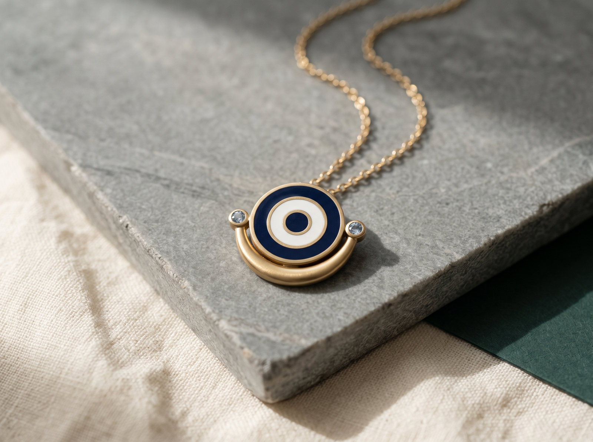
Etsy metni
Başlık 90/140
14K Gold Crescent Moon Necklace, Evil Eye Enamel, Lab Grown Blue Sapphire, Protection Gift
Etiketler (13)
14k gold necklace, crescent moon, evil eye necklace, nazar pendant, enamel necklace, vitreous enamel, lab grown sapphire, protection amulet, moon necklace, christmas gift, gift for her, talisman jewelry, solid gold pendant
Malzemeler
14k yellow gold, vitreous enamel, lab grown blue sapphire, 14k gold cable chain, 14k gold lobster clasp
Açıklama
An evil eye in navy and white glass enamel, held by a gold crescent that wraps its lower half, with a pale blue lab-grown sapphire at each tip. A protection gift for Christmas that is worn all year. THE PIECE 15.3 mm across the crescent tips and 11.6 mm tall. The eye disc is 9.2 mm across, the crescent is polished gold and joined to the disc along its inner edge. The bail is hidden behind the disc. GOLD WEIGHT 4.01 g of 14k gold, counting the chain, clasp and extender. On the scale the finished piece weighs 4.06 g in total with the enamel and stones. ENAMEL Kiln-fired vitreous enamel (glass), opaque, in navy blue and white: three fields divided by 0.7 mm gold rings, level with the gold. STONES Two 1.5 mm round lab-grown sapphires in a pale ice blue, one in a round pad at each crescent tip, flush set after the last firing. LENGTH AND FIT A 1.0 mm 14k cable chain, 16 in with a 2 in extender, so it sits from 16 to 18 in. The chain is part of the design and its weight is counted in the gold weight above. HOW IT IS MADE Made to order. Cast in 14k gold in one piece, in a zinc-free gold alloy chosen for enamel. The enamel cells are cast into the gold, filled by hand and kiln-fired. Nothing is soldered after the first firing; any fitting added later is laser welded away from the enamel. The stones are set last, cold, after all firing and polishing. CARE Wipe with a soft dry cloth, or wash in warm water with a drop of mild soap. Glass enamel is hard and does not fade, but it can chip if struck against stone or metal. Keep it away from ultrasonic cleaners. No bleach or chlorine. GIFTING Arrives in a gift box, ready to give. Made to order. The processing time is shown at checkout.
Atölye kartı
Disk D9.2 x 1.35 (hucre 0.55 + taban 0.80). Hucreler: gozbebegi D1.8; beyaz halka r1.6-2.4 (0.8 gen); lacivert halka r3.1-3.9 (0.8 gen); hucre arasi ve cevre altin duvar 0.7. Hilal: dis daire R6.0 (merkez y=-1.0), ic daire R5.6 (merkez y=+1.8), t=1.0; diskle alt 130 derecelik yay boyunca kaynasik (0.8 bindirme); hilal-disk araligi uclarda >=0.6, daha darsa kati dolgu. Boynuz uclari D2.4 x 1.5 ped (merkez +/-6.45, 0.4). Boyun min kesit 1.0 x 1.0. Toplam 15.3 x 11.6 mm + arka kulp.
Tek parca 14K cinkosuz alasim dokum: disk, hilal, iki ped, hucre duvarlari ve arka kulp ayni mumdan; lehim hic yok. Hucreler dokumde birakilir (oyma degil), tabanlar filetolu (r0.15). Disk arkasi ciplak altin (karsi-mine gerekmez: taban 0.80, L2). Mine 3 pisirim, taslar tum pisirimlerden sonra soguk.
Tezgâh sırası
- 1. CAD: bitmis olcu + 0.2 bitirme payi; hucre derinligi 0.55 (+0.05 tesviye payi), duvarlar 0.7 net (model 0.75), taban filetosu r0.15.
- 2. Recine baski, besleme disk alt-arkasindan (en kalin kesit), boynuzlara yardimci kanal.
- 3. Yatirim + yakma; CINKOSUZ 14K alasimla vakum dokum. Dokum sonrasi gozeneklilik kontrolu (10x lup, hucre tabanlari); gozenekli parca HURDA (mine pinhole verir).
- 4. Tesviye ve on cila (hilal, pedler); hucre ici: ince cam fircayla temizle, taban kalinligi 0.80 kumpas/derinlik saati ile.
- 5. Yuzey zenginlestirme (depletion gilding): 3-4 dongu ~593 C kiraz kirmizisi tav + %10 H2SO4 asit; damitik su, cam firca, yagsiz.
- 6. Mine dolumu: 80 mesh yikanmis opak beyaz ve lacivert, islak dolum; kurut (firin ustu 2-3 dk).
- 7. Pisirim 1: 780 C, 90 sn, paslanmaz sehpa (trivet), kalibre pirometre.
- 8. Pisirim 2: ikinci dolum, 780 C, 90 sn (yuzeyden hafif tasma).
- 9. Tasla zimpara (alundum cubuk + su) mine ve altin duvarlar es seviye; temizle.
- 10. Pisirim 3: 770 C, 60 sn parlatma pisirimi. Toplam 3 pisirim.
- 11. Asitleme YOK (mine korunur); sodyum bikarbonat + su ile notr temizlik.
- 12. Tas yuvalari (pedlerde): pilot delik teyidi, hart bur; mine Plasti-tac/bant ile maskelenir.
- 13. Tas oturtma soguk; itme kuvveti diskin tersine (disaridan iceri degil); mineye 1.45 mm mesafe.
- 14. Pisirim sonrasi lazer: YOK (kulp entegre dokum).
- 15. Cila: yalniz altin yuzeyler, elde, mineye dokunmadan; QC: pinhole/catlak lup 10x, tartim (uc 1.75 g +/- %5), boynuz uc kontrolu.
Malzeme listesi
- Alasim: 14K sari CINKOSUZ mine-uyumlu alasim (Otto Frei 846-180 'No Zinc' master alloy + 24K ile 14K; dokumhaneden yazili Zn=0 sertifikasi ve solidus/DSC degeri), vakum/inert gaz dokum. Bitmis uc 1.750 g x 1.15 = 2.01 g dokum metali.
- Mine tozu: kursunsuz opak lacivert ~75 mg + opak beyaz ~40 mg (pisirilmis mine 42 mg; dolum/tas kaybi icin ~2.5x).
- Taslar: 2 x 1.5 mm lab grown blue sapphire = 0.0285 ct.
- Zincir: 14K solid cable 1.0 mm 18in = 1.902 g.
- Bulgular: istakoz 0.25 g (tahmin), 2 atlama halkasi 0.060 g, etiket 0.046 g.
Arıza modları
| Arıza | Tasarım nasıl önlüyor |
|---|---|
| Kabarcik / igne deligi (alasimdaki Zn veya dokum gozenegi) | Zn=0 sertifikali alasim, vakum dokum, gozenekli dokum hurdaya; 3-4 dongu depletion gilding. |
| Beyaz minenin 14K uzerinde krem/sariya donmesi (Cu oksit) | Opak beyaz, yuzey zenginlestirme, pilot kuponda renk onayi; olmazsa beyaz halka yerine ciplak altin halka (2 renk -> 1 renk) B plani. |
| Ince hilal (1.0) veya boynuz boynunun firinda sarkmasi (14K solidus payi dar) | Pisirim <=780 C, kisa sure, kalibre pirometre; parca hilal alttan desteklenecek sekilde sehpada; boyun min kesit 1.0 x 1.0. |
| Tas oturtmada itme kuvvetiyle mine catlamasi | Taslar boynuz pedinde, mine kenarina 1.45 mm; KANIT 0.6-0.8 onerisinin ustunde; itme diskten disari yonde. |
| Diskin hilalden kopmasi (orijinalde tek tegetsel temas) | Disk ve hilal 130 derecelik yay boyunca 0.8 mm bindirmeli tek dokum. |
Tolerans
| Kural | Değer | |
|---|---|---|
| L1 karat 14K (KANIT karat_policy; 14K vitreous 'marginal', not_viable degil) | 14K sari cinkosuz mine alasimi | ✓ |
| L2 opak vitreous champleve, hucre dokumde | opak, dokumde birakilan 3 hucre | ✓ |
| L2 hucre derinligi 0.5-0.6 | 0.55 | ✓ |
| L2 hucre genisligi >=0.7 ve derinlik <=2x genislik | min 0.8 (halkalar); 0.55/0.8=0.69 | ✓ |
| L2 hucre tabani >=0.8 | 1.35-0.55 = 0.80 | ✓ |
| L2 hucre arasi/cevre altin duvar >=0.70 | 0.70 | ✓ |
| L2 hucre icinde kabartma/doku yok | duz taban | ✓ |
| L2 renk paleti (nazar istisnasi: lacivert+beyaz, en fazla 3) | 2 renk: lacivert + beyaz, yalniz goz motifinde | ✓ |
| L2 pisirim <=4, <=790 C | 3 pisirim, 770-780 C | ✓ |
| L3 ilk pisirimden sonra hamlac lehimi yok; kulp govdeyle tek dokum | lehim baglantisi 0; kulp entegre dokum; pisirim sonrasi ek yok | ✓ |
| L4 ev sahibi kalinligi (1.5 tas -> 1.5) | ped 1.5 | ✓ |
| L4 yanal duvar (<1.8: 0.35) | (2.4-1.5)/2 = 0.45 | ✓ |
| L4 tas ciplak altinda, mine kenarina >=0.5 | 1.45 mm | ✓ |
| L4 tas tum pisirimlerden sonra | adim 13, pisirim 3'ten sonra | ✓ |
| L5 yapisal >=0.8 | hilal 1.0; boyun 1.0 x 1.0; disk 1.35 | ✓ |
| L5 aciklik >=0.6 | hilal-disk araligi >=0.6, altinda kati dolgu | ✓ |
| L5 uc yaricapi >=0.4 | boynuz ucu D2.4 ped (r1.2) | ✓ |
| L6 hollow | kati (mineli parca hollow olamaz) | ✓ |
| L7 kolye bandi 2.8-4.2 g (zincir+bulgu dahil altin) | 4.008 g (uc 1.750 + zincir 1.902 + bulgu 0.356); tavana pay 0.192 g | ✓ |
| L8 zincir 14K solid, tip+genislik yazili, 16in+2in uzatma, varyant degil | 14K solid cable 1.0 mm, 16+2 in | ✓ |
Görsel promptları (16)
- 01Hero / arama küçük resmi: tek ürün, marka natürmortu, 4:3.Referanssız
Quiet luxury editorial still-life product photography. Warm ivory linen ground, honed grey stone slab, a sliver of deep jade-green matte card. Soft directional window light from upper left, long soft shadow, shallow depth of field. Solid yellow gold with warm antique tone. Restrained heirloom mood. No text, no logo, no glitter, no Christmas decoration. The piece: Pendant in 14K yellow gold: a 9.2 mm round disc set into a gold crescent that wraps its lower half and is joined to it along its inner edge; 15.3 mm across the crescent tips and 11.6 mm tall. The disc shows three concentric fields of enamel divided by 0.7 mm gold rings: an outer ring of opaque navy-blue enamel (a deep dark blue), a ring of opaque white enamel, and a 1.8 mm centre of opaque navy-blue enamel. Each crescent tip ends in a 2.4 mm round pad holding one 1.5 mm pale ice-blue lab grown sapphire, flush-set. Polished gold crescent, enamel level with the gold. Bail hidden behind the disc. 1.0 mm 14K cable chain, 16 inch plus 2 inch extender. The stones are exactly these and no others: two 1.5 mm round pale ice-blue lab-grown sapphires, one flush-set in the round pad at each crescent tip. No other stone and no empty setting anywhere on the piece. The only colour on the piece is opaque enamel in three concentric fields of the disc, from the outside inward: a navy-blue ring, a white ring and a navy-blue centre; every other surface is yellow gold. The pendant lies flat and face up on the honed grey stone slab, the chain running in a soft loose curve up and out of the top edge of the frame. Seen from about 30 degrees above with a 100 mm macro lens, the decorated part in razor-sharp focus, filling about a third of the frame width, with the chain softly out of focus toward the frame edges. No people and no hands.
Alt metin 14K gold crescent moon pendant with a navy and white evil eye enamel disc
- 02Takılı hâli: ölçek ve duruş. Hero'dan sonra dönüşümü en çok etkileyen kare.Referans: hero kırpımı
Quiet luxury editorial photography in warm ivory, stone grey and deep jade-green tones, soft directional window light from the upper left, true colour, fine film grain, no heavy retouching. No text, no logo, no watermark, no glitter. The attached reference image is a crop of this exact piece: keep its shape, proportions, gold colour, enamel colours and stones exactly as in the reference. The piece: Pendant in 14K yellow gold: a 9.2 mm round disc set into a gold crescent that wraps its lower half and is joined to it along its inner edge; 15.3 mm across the crescent tips and 11.6 mm tall. The disc shows three concentric fields of enamel divided by 0.7 mm gold rings: an outer ring of opaque navy-blue enamel (a deep dark blue), a ring of opaque white enamel, and a 1.8 mm centre of opaque navy-blue enamel. Each crescent tip ends in a 2.4 mm round pad holding one 1.5 mm pale ice-blue lab grown sapphire, flush-set. Polished gold crescent, enamel level with the gold. Bail hidden behind the disc. 1.0 mm 14K cable chain, 16 inch plus 2 inch extender. The stones are exactly these and no others: two 1.5 mm round pale ice-blue lab-grown sapphires, one flush-set in the round pad at each crescent tip. No other stone and no empty setting anywhere on the piece. The only colour on the piece is opaque enamel in three concentric fields of the disc, from the outside inward: a navy-blue ring, a white ring and a navy-blue centre; every other surface is yellow gold. Worn by a woman against bare skin just below the collarbone, above the open neckline of a warm-ivory silk blouse, cropped from chin to mid-chest so no face shows; the pendant hangs centred and faces the camera; it is the only jewellery in the image; true to scale, the main element measures about 15.3 mm across.
Alt metin 14K gold crescent moon pendant with a navy and white evil eye enamel disc, worn
- 03Makro işçilik: fiyatı meşrulaştıran detay (mine yüzeyi, flush taş, kenar bitimi).Referans: hero kırpımı
Quiet luxury editorial photography in warm ivory, stone grey and deep jade-green tones, soft directional window light from the upper left, true colour, fine film grain, no heavy retouching. No text, no logo, no watermark, no glitter. The attached reference image is a crop of this exact piece: keep its shape, proportions, gold colour, enamel colours and stones exactly as in the reference. The piece: Pendant in 14K yellow gold: a 9.2 mm round disc set into a gold crescent that wraps its lower half and is joined to it along its inner edge; 15.3 mm across the crescent tips and 11.6 mm tall. The disc shows three concentric fields of enamel divided by 0.7 mm gold rings: an outer ring of opaque navy-blue enamel (a deep dark blue), a ring of opaque white enamel, and a 1.8 mm centre of opaque navy-blue enamel. Each crescent tip ends in a 2.4 mm round pad holding one 1.5 mm pale ice-blue lab grown sapphire, flush-set. Polished gold crescent, enamel level with the gold. Bail hidden behind the disc. 1.0 mm 14K cable chain, 16 inch plus 2 inch extender. The stones are exactly these and no others: two 1.5 mm round pale ice-blue lab-grown sapphires, one flush-set in the round pad at each crescent tip. No other stone and no empty setting anywhere on the piece. The only colour on the piece is opaque enamel in three concentric fields of the disc, from the outside inward: a navy-blue ring, a white ring and a navy-blue centre; every other surface is yellow gold. Extreme close-up macro, 100 mm macro lens: The evil eye disc with its navy-blue and white enamel rings and the gold crescent wrapped around its lower half. The rest of the piece falls away into soft focus on warm-ivory linen.
Alt metin Close-up of the navy and white enamel evil eye inside the gold crescent
- 04Elde ölçek: mm'yi parmak ucuna çevirir, 'beklediğimden küçük' iadesini önler.Referans: hero kırpımı
Quiet luxury editorial photography in warm ivory, stone grey and deep jade-green tones, soft directional window light from the upper left, true colour, fine film grain, no heavy retouching. No text, no logo, no watermark, no glitter. The attached reference image is a crop of this exact piece: keep its shape, proportions, gold colour, enamel colours and stones exactly as in the reference. The piece: Pendant in 14K yellow gold: a 9.2 mm round disc set into a gold crescent that wraps its lower half and is joined to it along its inner edge; 15.3 mm across the crescent tips and 11.6 mm tall. The disc shows three concentric fields of enamel divided by 0.7 mm gold rings: an outer ring of opaque navy-blue enamel (a deep dark blue), a ring of opaque white enamel, and a 1.8 mm centre of opaque navy-blue enamel. Each crescent tip ends in a 2.4 mm round pad holding one 1.5 mm pale ice-blue lab grown sapphire, flush-set. Polished gold crescent, enamel level with the gold. Bail hidden behind the disc. 1.0 mm 14K cable chain, 16 inch plus 2 inch extender. The stones are exactly these and no others: two 1.5 mm round pale ice-blue lab-grown sapphires, one flush-set in the round pad at each crescent tip. No other stone and no empty setting anywhere on the piece. The only colour on the piece is opaque enamel in three concentric fields of the disc, from the outside inward: a navy-blue ring, a white ring and a navy-blue centre; every other surface is yellow gold. Close-up for scale against a plain warm-ivory background thrown softly out of focus: the pendant resting on the fingertips of a woman's open hand, face up, the chain running out of the frame; true to scale, the main element measures about 15.3 mm across, a fingertip is about 16 mm wide; it is the only jewellery in the image; anatomically correct hands with five fingers, short natural unpolished nails.
Alt metin 14K gold crescent moon pendant with a navy and white evil eye enamel disc, held between fingers for scale
- 05Arka ve bulgular: dolu gövde, kilit / çivi / iğne; sağlamlık sorusunu cevaplar.Referans: hero kırpımı
Quiet luxury editorial photography in warm ivory, stone grey and deep jade-green tones, soft directional window light from the upper left, true colour, fine film grain, no heavy retouching. No text, no logo, no watermark, no glitter. The attached reference image is a crop of this exact piece: keep its shape, proportions, gold colour, enamel colours and stones exactly as in the reference. The piece: Pendant in 14K yellow gold: a 9.2 mm round disc set into a gold crescent that wraps its lower half and is joined to it along its inner edge; 15.3 mm across the crescent tips and 11.6 mm tall. The disc shows three concentric fields of enamel divided by 0.7 mm gold rings: an outer ring of opaque navy-blue enamel (a deep dark blue), a ring of opaque white enamel, and a 1.8 mm centre of opaque navy-blue enamel. Each crescent tip ends in a 2.4 mm round pad holding one 1.5 mm pale ice-blue lab grown sapphire, flush-set. Polished gold crescent, enamel level with the gold. Bail hidden behind the disc. 1.0 mm 14K cable chain, 16 inch plus 2 inch extender. The stones are exactly these and no others: two 1.5 mm round pale ice-blue lab-grown sapphires, one flush-set in the round pad at each crescent tip. No other stone and no empty setting anywhere on the piece. The only colour on the piece is opaque enamel in three concentric fields of the disc, from the outside inward: a navy-blue ring, a white ring and a navy-blue centre; every other surface is yellow gold. The back of the piece, top-down on honed grey stone: The flat solid back of the disc and crescent, with small round holes under the two tip stones and the bail behind the disc.
Alt metin Back of the pendant necklace showing the solid back and the bail
- 06Tam boy / çift / mekanizma: uzunluk, ayar ve ne geldiğini tek karede gösterir.Referans: hero kırpımı
Quiet luxury editorial photography in warm ivory, stone grey and deep jade-green tones, soft directional window light from the upper left, true colour, fine film grain, no heavy retouching. No text, no logo, no watermark, no glitter. The attached reference image is a crop of this exact piece: keep its shape, proportions, gold colour, enamel colours and stones exactly as in the reference. The piece: Pendant in 14K yellow gold: a 9.2 mm round disc set into a gold crescent that wraps its lower half and is joined to it along its inner edge; 15.3 mm across the crescent tips and 11.6 mm tall. The disc shows three concentric fields of enamel divided by 0.7 mm gold rings: an outer ring of opaque navy-blue enamel (a deep dark blue), a ring of opaque white enamel, and a 1.8 mm centre of opaque navy-blue enamel. Each crescent tip ends in a 2.4 mm round pad holding one 1.5 mm pale ice-blue lab grown sapphire, flush-set. Polished gold crescent, enamel level with the gold. Bail hidden behind the disc. 1.0 mm 14K cable chain, 16 inch plus 2 inch extender. The stones are exactly these and no others: two 1.5 mm round pale ice-blue lab-grown sapphires, one flush-set in the round pad at each crescent tip. No other stone and no empty setting anywhere on the piece. The only colour on the piece is opaque enamel in three concentric fields of the disc, from the outside inward: a navy-blue ring, a white ring and a navy-blue centre; every other surface is yellow gold. The whole necklace laid out top-down on warm-ivory linen in a straight vertical line, chain doubled into a narrow U, pendant face up at the bottom, lobster clasp and extender chain at the top.
Alt metin 14K gold crescent moon pendant with a navy and white evil eye enamel disc, full length
- 07Yan profil: kalınlık ve kütle, düz baskı değil gerçek altın olduğunu gösterir.Referans: hero kırpımı
Quiet luxury editorial photography in warm ivory, stone grey and deep jade-green tones, soft directional window light from the upper left, true colour, fine film grain, no heavy retouching. No text, no logo, no watermark, no glitter. The attached reference image is a crop of this exact piece: keep its shape, proportions, gold colour, enamel colours and stones exactly as in the reference. The piece: Pendant in 14K yellow gold: a 9.2 mm round disc set into a gold crescent that wraps its lower half and is joined to it along its inner edge; 15.3 mm across the crescent tips and 11.6 mm tall. The disc shows three concentric fields of enamel divided by 0.7 mm gold rings: an outer ring of opaque navy-blue enamel (a deep dark blue), a ring of opaque white enamel, and a 1.8 mm centre of opaque navy-blue enamel. Each crescent tip ends in a 2.4 mm round pad holding one 1.5 mm pale ice-blue lab grown sapphire, flush-set. Polished gold crescent, enamel level with the gold. Bail hidden behind the disc. 1.0 mm 14K cable chain, 16 inch plus 2 inch extender. The stones are exactly these and no others: two 1.5 mm round pale ice-blue lab-grown sapphires, one flush-set in the round pad at each crescent tip. No other stone and no empty setting anywhere on the piece. The only colour on the piece is opaque enamel in three concentric fields of the disc, from the outside inward: a navy-blue ring, a white ring and a navy-blue centre; every other surface is yellow gold. Side profile at eye level on honed grey stone, the camera level with the piece: A flat disc 1.35 mm thick joined to a crescent 1.0 mm thick.
Alt metin Side profile of the pendant necklace showing its thickness
- 08Kış yaşam stili: sezonu Noel dekoru olmadan kurar.Referans: hero kırpımı
Quiet luxury editorial photography in warm ivory, stone grey and deep jade-green tones, soft directional window light from the upper left, true colour, fine film grain, no heavy retouching. No text, no logo, no watermark, no glitter. The attached reference image is a crop of this exact piece: keep its shape, proportions, gold colour, enamel colours and stones exactly as in the reference. The piece: Pendant in 14K yellow gold: a 9.2 mm round disc set into a gold crescent that wraps its lower half and is joined to it along its inner edge; 15.3 mm across the crescent tips and 11.6 mm tall. The disc shows three concentric fields of enamel divided by 0.7 mm gold rings: an outer ring of opaque navy-blue enamel (a deep dark blue), a ring of opaque white enamel, and a 1.8 mm centre of opaque navy-blue enamel. Each crescent tip ends in a 2.4 mm round pad holding one 1.5 mm pale ice-blue lab grown sapphire, flush-set. Polished gold crescent, enamel level with the gold. Bail hidden behind the disc. 1.0 mm 14K cable chain, 16 inch plus 2 inch extender. The stones are exactly these and no others: two 1.5 mm round pale ice-blue lab-grown sapphires, one flush-set in the round pad at each crescent tip. No other stone and no empty setting anywhere on the piece. The only colour on the piece is opaque enamel in three concentric fields of the disc, from the outside inward: a navy-blue ring, a white ring and a navy-blue centre; every other surface is yellow gold. Winter afternoon light: a woman wearing the necklace over a fine ivory cashmere crew-neck sweater, cropped from chin to chest, a grey wool coat collar at the edge of the frame; it is the only jewellery in the image.
Alt metin 14K gold crescent moon pendant with a navy and white evil eye enamel disc, styled with winter knitwear
- 09Hediye kutusu: Noel alıcısının ilk sorusu, hediyeye hazır mı?Referans: hero kırpımı
Quiet luxury editorial photography in warm ivory, stone grey and deep jade-green tones, soft directional window light from the upper left, true colour, fine film grain, no heavy retouching. No text, no logo, no watermark, no glitter. The attached reference image is a crop of this exact piece: keep its shape, proportions, gold colour, enamel colours and stones exactly as in the reference. The piece: Pendant in 14K yellow gold: a 9.2 mm round disc set into a gold crescent that wraps its lower half and is joined to it along its inner edge; 15.3 mm across the crescent tips and 11.6 mm tall. The disc shows three concentric fields of enamel divided by 0.7 mm gold rings: an outer ring of opaque navy-blue enamel (a deep dark blue), a ring of opaque white enamel, and a 1.8 mm centre of opaque navy-blue enamel. Each crescent tip ends in a 2.4 mm round pad holding one 1.5 mm pale ice-blue lab grown sapphire, flush-set. Polished gold crescent, enamel level with the gold. Bail hidden behind the disc. 1.0 mm 14K cable chain, 16 inch plus 2 inch extender. The stones are exactly these and no others: two 1.5 mm round pale ice-blue lab-grown sapphires, one flush-set in the round pad at each crescent tip. No other stone and no empty setting anywhere on the piece. The only colour on the piece is opaque enamel in three concentric fields of the disc, from the outside inward: a navy-blue ring, a white ring and a navy-blue centre; every other surface is yellow gold. Top-down: the pendant face up, chain coiled inside a small open square gift box in plain warm-ivory card with a soft ivory insert, the lid set beside it, a length of narrow deep jade-green ribbon untied beside the box, on honed grey stone. No branding, no printed pattern, no tissue paper, no Christmas decoration, exactly one box.
Alt metin 14K gold crescent moon pendant with a navy and white evil eye enamel disc in a gift box
- 10Gerçek renk: nötr gün ışığında altın ve mine rengi; renk kaynaklı iadeyi azaltır.Referans: hero kırpımı
Quiet luxury editorial photography in warm ivory, stone grey and deep jade-green tones, soft directional window light from the upper left, true colour, fine film grain, no heavy retouching. No text, no logo, no watermark, no glitter. The attached reference image is a crop of this exact piece: keep its shape, proportions, gold colour, enamel colours and stones exactly as in the reference. The piece: Pendant in 14K yellow gold: a 9.2 mm round disc set into a gold crescent that wraps its lower half and is joined to it along its inner edge; 15.3 mm across the crescent tips and 11.6 mm tall. The disc shows three concentric fields of enamel divided by 0.7 mm gold rings: an outer ring of opaque navy-blue enamel (a deep dark blue), a ring of opaque white enamel, and a 1.8 mm centre of opaque navy-blue enamel. Each crescent tip ends in a 2.4 mm round pad holding one 1.5 mm pale ice-blue lab grown sapphire, flush-set. Polished gold crescent, enamel level with the gold. Bail hidden behind the disc. 1.0 mm 14K cable chain, 16 inch plus 2 inch extender. The stones are exactly these and no others: two 1.5 mm round pale ice-blue lab-grown sapphires, one flush-set in the round pad at each crescent tip. No other stone and no empty setting anywhere on the piece. The only colour on the piece is opaque enamel in three concentric fields of the disc, from the outside inward: a navy-blue ring, a white ring and a navy-blue centre; every other surface is yellow gold. Colour-accurate reference shot: the piece alone, top-down on plain matte white-ivory paper under even neutral north daylight, no shadow drama, no props, the piece centred and filling half the frame.
Alt metin 14K gold crescent moon pendant with a navy and white evil eye enamel disc in neutral daylight, true colour
- 11Ölçü grafiği tabanı: sağ üçte bir boş; mm etiketleri sonra eklenir.Referans: hero kırpımı
Quiet luxury editorial photography in warm ivory, stone grey and deep jade-green tones, soft directional window light from the upper left, true colour, fine film grain, no heavy retouching. No text, no logo, no watermark, no glitter. The attached reference image is a crop of this exact piece: keep its shape, proportions, gold colour, enamel colours and stones exactly as in the reference. The piece: Pendant in 14K yellow gold: a 9.2 mm round disc set into a gold crescent that wraps its lower half and is joined to it along its inner edge; 15.3 mm across the crescent tips and 11.6 mm tall. The disc shows three concentric fields of enamel divided by 0.7 mm gold rings: an outer ring of opaque navy-blue enamel (a deep dark blue), a ring of opaque white enamel, and a 1.8 mm centre of opaque navy-blue enamel. Each crescent tip ends in a 2.4 mm round pad holding one 1.5 mm pale ice-blue lab grown sapphire, flush-set. Polished gold crescent, enamel level with the gold. Bail hidden behind the disc. 1.0 mm 14K cable chain, 16 inch plus 2 inch extender. The stones are exactly these and no others: two 1.5 mm round pale ice-blue lab-grown sapphires, one flush-set in the round pad at each crescent tip. No other stone and no empty setting anywhere on the piece. The only colour on the piece is opaque enamel in three concentric fields of the disc, from the outside inward: a navy-blue ring, a white ring and a navy-blue centre; every other surface is yellow gold. The piece alone, top-down on plain warm-ivory paper, placed in the left two thirds of the frame; the right third is empty paper for dimension labels to be added later; even soft light, no props.
Alt metin 14K gold crescent moon pendant with a navy and white evil eye enamel disc with space for dimensions
- 12El işçiliği: siparişe üretim hikâyesi, tezgâhta parça.Referans: hero kırpımı
Quiet luxury editorial photography in warm ivory, stone grey and deep jade-green tones, soft directional window light from the upper left, true colour, fine film grain, no heavy retouching. No text, no logo, no watermark, no glitter. The attached reference image is a crop of this exact piece: keep its shape, proportions, gold colour, enamel colours and stones exactly as in the reference. The piece: Pendant in 14K yellow gold: a 9.2 mm round disc set into a gold crescent that wraps its lower half and is joined to it along its inner edge; 15.3 mm across the crescent tips and 11.6 mm tall. The disc shows three concentric fields of enamel divided by 0.7 mm gold rings: an outer ring of opaque navy-blue enamel (a deep dark blue), a ring of opaque white enamel, and a 1.8 mm centre of opaque navy-blue enamel. Each crescent tip ends in a 2.4 mm round pad holding one 1.5 mm pale ice-blue lab grown sapphire, flush-set. Polished gold crescent, enamel level with the gold. Bail hidden behind the disc. 1.0 mm 14K cable chain, 16 inch plus 2 inch extender. The stones are exactly these and no others: two 1.5 mm round pale ice-blue lab-grown sapphires, one flush-set in the round pad at each crescent tip. No other stone and no empty setting anywhere on the piece. The only colour on the piece is opaque enamel in three concentric fields of the disc, from the outside inward: a navy-blue ring, a white ring and a navy-blue centre; every other surface is yellow gold. The finished piece lying on a worn wooden jeweller's bench pin beside a small porcelain dish of navy-blue enamel powder, a fine sable brush and a pair of brass tweezers, warm lamp light, shallow depth of field, the piece in sharp focus; no hands.
Alt metin 14K gold crescent moon pendant with a navy and white evil eye enamel disc on a jeweller's bench
- 13Motifin anlamı: sol üçte bir boş; sembol hikâyesi metni sonra eklenir.Referans: hero kırpımı
Quiet luxury editorial photography in warm ivory, stone grey and deep jade-green tones, soft directional window light from the upper left, true colour, fine film grain, no heavy retouching. No text, no logo, no watermark, no glitter. The attached reference image is a crop of this exact piece: keep its shape, proportions, gold colour, enamel colours and stones exactly as in the reference. The piece: Pendant in 14K yellow gold: a 9.2 mm round disc set into a gold crescent that wraps its lower half and is joined to it along its inner edge; 15.3 mm across the crescent tips and 11.6 mm tall. The disc shows three concentric fields of enamel divided by 0.7 mm gold rings: an outer ring of opaque navy-blue enamel (a deep dark blue), a ring of opaque white enamel, and a 1.8 mm centre of opaque navy-blue enamel. Each crescent tip ends in a 2.4 mm round pad holding one 1.5 mm pale ice-blue lab grown sapphire, flush-set. Polished gold crescent, enamel level with the gold. Bail hidden behind the disc. 1.0 mm 14K cable chain, 16 inch plus 2 inch extender. The stones are exactly these and no others: two 1.5 mm round pale ice-blue lab-grown sapphires, one flush-set in the round pad at each crescent tip. No other stone and no empty setting anywhere on the piece. The only colour on the piece is opaque enamel in three concentric fields of the disc, from the outside inward: a navy-blue ring, a white ring and a navy-blue centre; every other surface is yellow gold. The piece alone, top-down on a deep jade-green matte card, placed in the right two thirds of the frame; the left third is empty card for a caption to be added later; soft directional light.
Alt metin 14K gold crescent moon pendant with a navy and white evil eye enamel disc on a deep green card
- 14Yıl boyu takılır: 'yalnız Noel' itirazını kırar.Referans: hero kırpımı
Quiet luxury editorial photography in warm ivory, stone grey and deep jade-green tones, soft directional window light from the upper left, true colour, fine film grain, no heavy retouching. No text, no logo, no watermark, no glitter. The attached reference image is a crop of this exact piece: keep its shape, proportions, gold colour, enamel colours and stones exactly as in the reference. The piece: Pendant in 14K yellow gold: a 9.2 mm round disc set into a gold crescent that wraps its lower half and is joined to it along its inner edge; 15.3 mm across the crescent tips and 11.6 mm tall. The disc shows three concentric fields of enamel divided by 0.7 mm gold rings: an outer ring of opaque navy-blue enamel (a deep dark blue), a ring of opaque white enamel, and a 1.8 mm centre of opaque navy-blue enamel. Each crescent tip ends in a 2.4 mm round pad holding one 1.5 mm pale ice-blue lab grown sapphire, flush-set. Polished gold crescent, enamel level with the gold. Bail hidden behind the disc. 1.0 mm 14K cable chain, 16 inch plus 2 inch extender. The stones are exactly these and no others: two 1.5 mm round pale ice-blue lab-grown sapphires, one flush-set in the round pad at each crescent tip. No other stone and no empty setting anywhere on the piece. The only colour on the piece is opaque enamel in three concentric fields of the disc, from the outside inward: a navy-blue ring, a white ring and a navy-blue centre; every other surface is yellow gold. Everyday wear, no season: a woman wearing the necklace with a plain white cotton shirt open at the collar, soft daylight, cropped from chin to chest; the only jewellery in the image.
Alt metin 14K gold crescent moon pendant with a navy and white evil eye enamel disc, everyday wear
- 15Hediye anı: duygu; Noel satın alma niyetine bağlar.Referans: hero kırpımı
Quiet luxury editorial photography in warm ivory, stone grey and deep jade-green tones, soft directional window light from the upper left, true colour, fine film grain, no heavy retouching. No text, no logo, no watermark, no glitter. The attached reference image is a crop of this exact piece: keep its shape, proportions, gold colour, enamel colours and stones exactly as in the reference. The piece: Pendant in 14K yellow gold: a 9.2 mm round disc set into a gold crescent that wraps its lower half and is joined to it along its inner edge; 15.3 mm across the crescent tips and 11.6 mm tall. The disc shows three concentric fields of enamel divided by 0.7 mm gold rings: an outer ring of opaque navy-blue enamel (a deep dark blue), a ring of opaque white enamel, and a 1.8 mm centre of opaque navy-blue enamel. Each crescent tip ends in a 2.4 mm round pad holding one 1.5 mm pale ice-blue lab grown sapphire, flush-set. Polished gold crescent, enamel level with the gold. Bail hidden behind the disc. 1.0 mm 14K cable chain, 16 inch plus 2 inch extender. The stones are exactly these and no others: two 1.5 mm round pale ice-blue lab-grown sapphires, one flush-set in the round pad at each crescent tip. No other stone and no empty setting anywhere on the piece. The only colour on the piece is opaque enamel in three concentric fields of the disc, from the outside inward: a navy-blue ring, a white ring and a navy-blue centre; every other surface is yellow gold. A gift being given: two pairs of hands across a pale oak table, one pair holding out the small open warm-ivory gift box with the piece visible inside, the other reaching for it, soft warm window light, sleeves of ivory and grey knitwear; exactly one box and one piece of jewellery; anatomically correct hands with five fingers, short natural unpolished nails.
Alt metin 14K gold crescent moon pendant with a navy and white evil eye enamel disc given as a gift
- 16Mağaza ızgarası / Pinterest: koyu jade zeminde yüksek kontrast kare.Referans: hero kırpımı
Quiet luxury editorial photography in warm ivory, stone grey and deep jade-green tones, soft directional window light from the upper left, true colour, fine film grain, no heavy retouching. No text, no logo, no watermark, no glitter. The attached reference image is a crop of this exact piece: keep its shape, proportions, gold colour, enamel colours and stones exactly as in the reference. The piece: Pendant in 14K yellow gold: a 9.2 mm round disc set into a gold crescent that wraps its lower half and is joined to it along its inner edge; 15.3 mm across the crescent tips and 11.6 mm tall. The disc shows three concentric fields of enamel divided by 0.7 mm gold rings: an outer ring of opaque navy-blue enamel (a deep dark blue), a ring of opaque white enamel, and a 1.8 mm centre of opaque navy-blue enamel. Each crescent tip ends in a 2.4 mm round pad holding one 1.5 mm pale ice-blue lab grown sapphire, flush-set. Polished gold crescent, enamel level with the gold. Bail hidden behind the disc. 1.0 mm 14K cable chain, 16 inch plus 2 inch extender. The stones are exactly these and no others: two 1.5 mm round pale ice-blue lab-grown sapphires, one flush-set in the round pad at each crescent tip. No other stone and no empty setting anywhere on the piece. The only colour on the piece is opaque enamel in three concentric fields of the disc, from the outside inward: a navy-blue ring, a white ring and a navy-blue centre; every other surface is yellow gold. Top-down flat lay of the piece centred on a deep jade-green matte card with a narrow border of warm-ivory linen at the top edge, crisp soft light, the piece filling about 40 percent of the frame so a square crop keeps all of it.
Alt metin 14K gold crescent moon pendant with a navy and white evil eye enamel disc, flat lay on deep green
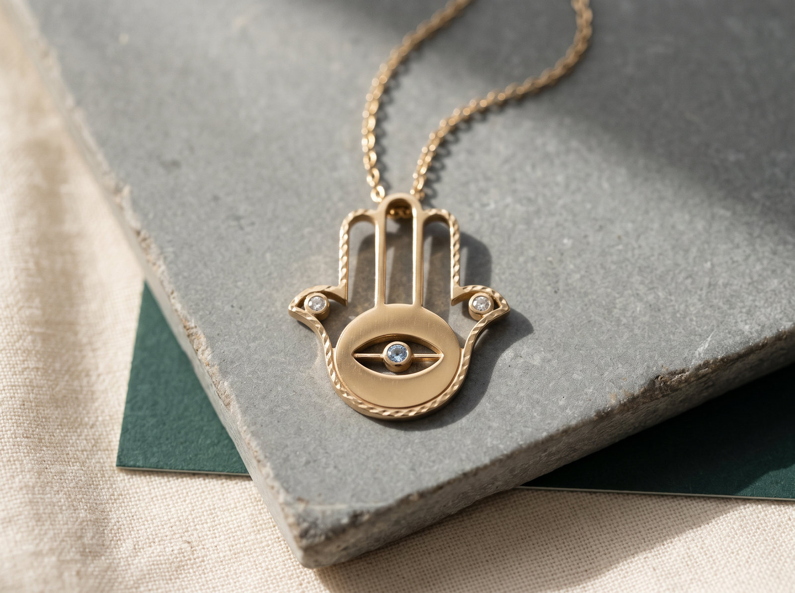
Etsy metni
Başlık 87/140
14K Gold Hamsa Hand Necklace, Openwork Pendant, Lab Grown Sapphire Eye, Protection Gift
Etiketler (13)
14k gold necklace, hamsa necklace, hamsa hand, openwork pendant, lab grown sapphire, protection amulet, talisman jewelry, hand of fatima, christmas gift, gift for her, cable chain necklace, solid gold pendant, good luck gift
Malzemeler
14k yellow gold, lab grown white sapphire, lab grown blue sapphire, 14k gold cable chain, 14k gold lobster clasp
Açıklama
A hamsa drawn as an open gold frame, with an almond eye across the palm and a pale blue lab-grown sapphire as its pupil. A protection gift for Christmas and every day after. THE PIECE 14 mm wide and 18 mm tall. A 1.0 mm rail outlines three fingers and two outward-curving thumbs; the palm is a solid oval plate with an 8.0 by 4.4 mm eye opening crossed by a thin gold bar. The rail is diamond-cut, the palm polished. The bail sits behind the middle finger. GOLD WEIGHT 3.98 g of 14k gold, counting the chain, clasp and extender. On the scale the finished piece weighs 3.99 g in total with the stones. STONES Three 1.5 mm round lab-grown sapphires, flush set: a pale ice-blue sapphire as the pupil and a white sapphire in each thumb tip, 0.04 ct in total. Mohs 9. LENGTH AND FIT A 1.0 mm 14k cable chain, 16 in with a 2 in extender, so it sits from 16 to 18 in. The chain is part of the design and its weight is counted in the gold weight above. HOW IT IS MADE Made to order. Cast in 14k gold in one piece. The stones are set last, cold, after all firing and polishing. CARE Wipe with a soft dry cloth, or wash in warm water with a drop of mild soap and a soft brush. Take it off for swimming and cleaning. No bleach or chlorine. GIFTING Arrives in a gift box, ready to give. Made to order. The processing time is shown at checkout.
Atölye kartı
El 14.0 x 18.0 mm; dis hat rayi 1.0 gen x 0.9 kal (model 1.2 x 1.2), cevre ~72 mm. Avuc plakasi elips 9.4 x 7.6 x 1.0. Badem goz acikligi 8.0 x 4.4; goz cizgisi kopru 0.7 gen x 1.0; gozbebegi gobegi D2.4 x 1.5. Badem acikligi kopru ve gobekle 4 parcaya bolunur; her biri 0.6 mm genislige indigi yerde r0.3 ile kapanir (acik uzunluk ~2.0, max yukseklik 1.7). Basparmak uc pedleri D2.4 x 1.5. Parmak ici bosluklar >=0.8. Kulp 1.0 x 1.6.
Tek parca 14K dokum; ray, avuc, kopru, gobek, pedler, kulp ayni mumdan; lehim yok, mine yok. Tum delikler mumdan. Taslar en son, soguk.
Tezgâh sırası
- 1. CAD: bitmis + 0.2 (ray on yuzu elmas tiras +0.1); badem acikliklari 0.6'da r0.3 ile kapatilir; pedler 1.5.
- 2. Recine baski, besleme bilek kenari arkasindan + avuc arkasindan.
- 3. Yatirim, yakma, 14K vakum dokum.
- 4. Yolluk kesimi, tesviye; acikliklari 0.6 pin-gauge ile; ray 0.9 +/- 0.05.
- 5. Ray yuzlerine elmas tiras; avuc on cila.
- 6. Tas yuvalari: gozbebeginde kopru arkadan ahsap/recine blokla desteklenir, pilot delik + hart bur.
- 7. Tas oturtma soguk (3 tas), 10x lupla salinim testi.
- 8. Cila elde; QC tartim (uc 1.65 g +/- %5), parmak uclari r>=0.4, culet arkadan tasmiyor.
Malzeme listesi
- Alasim: 14K sari standart dokum alasimi (minesiz parca; Zn serbest), vakum dokum. Bitmis uc 1.647 g x 1.15 = 1.89 g dokum metali.
- Mine tozu: yok.
- Taslar: 1 x 1.5 mm lab blue sapphire + 2 x 1.5 mm lab white sapphire = 0.0428 ct.
- Zincir: 14K solid cable 1.0 mm 18in = 1.902 g.
- Bulgular: istakoz 0.25 g (tahmin), 2 atlama halkasi 0.060 g, etiket 0.046 g.
Arıza modları
| Arıza | Tasarım nasıl önlüyor |
|---|---|
| Badem acikligi uclarinda perde / kor delik | Aciklik 0.6'ya indigi yerde r0.3 ile kapanir; derinlik 1.0 / genislik 0.6 = 1.67 <= 2. |
| Gozbebegi oturtmada 0.7 kopru egilmesi | Kopru 1.0 kalin, gobek 1.5; oturtma sirasinda arkadan destek blogu; kuvvet gobek ekseninde. |
| Culet basparmak arkasindan tasar (orijinal 1.1 rayda 1.8 tas) | Uc tas da 1.5 mm, pedler 1.5 kalin (KANIT), alttan delik. |
| Parmak raylarinin kumasa takilip egilmesi | Ray 1.0 x 0.9, uclar yuvarlak r0.5, parmak aralari kapali hat. |
Tolerans
| Kural | Değer | |
|---|---|---|
| L1 karat 14K (KANIT karat_policy; 14K vitreous 'marginal', not_viable degil) | 14K sari | ✓ |
| L2 mine | yok | ✓ |
| L3 ilk pisirimden sonra hamlac lehimi yok; kulp govdeyle tek dokum | lehim baglantisi 0; kulp entegre dokum; pisirim sonrasi ek yok | ✓ |
| L4 ev sahibi kalinligi 1.5 tas -> 1.5 | gobek ve pedler 1.5 | ✓ |
| L4 yanal duvar 0.35 | 0.45 | ✓ |
| L4 alttan delik | 3 x D0.9, kalan derinlik 0.555 | ✓ |
| L4 <=7 tas | 3 | ✓ |
| L5 yapisal >=0.8 | ray 1.0 x 0.9; avuc 1.0 | ✓ |
| L5 dekoratif >=0.6 | goz koprusu 0.7; badem cevresi min 0.7 | ✓ |
| L5 aciklik >=0.6, derinlik <=2x | min 0.6 (1.0/0.6 = 1.67) | ✓ |
| L5 kulp >=1.0 | 1.0 x 1.6 | ✓ |
| L5 uc yaricapi >=0.4 | parmak/basparmak uclari r0.5, pedler r1.2 | ✓ |
| L7 kolye bandi 2.8-4.2 g (zincir+bulgu dahil altin) | 3.905 g (uc 1.647 + zincir 1.902 + bulgu 0.356); tavana pay 0.295 g | ✓ |
| L8 zincir 14K solid, tip+genislik yazili, 16in+2in uzatma, varyant degil | 14K solid cable 1.0 mm, 16+2 in | ✓ |
Görsel promptları (16)
- 01Hero / arama küçük resmi: tek ürün, marka natürmortu, 4:3.Referanssız
Quiet luxury editorial still-life product photography. Warm ivory linen ground, honed grey stone slab, a sliver of deep jade-green matte card. Soft directional window light from upper left, long soft shadow, shallow depth of field. Solid yellow gold with warm antique tone. Restrained heirloom mood. No text, no logo, no glitter, no Christmas decoration. The piece: Hamsa hand pendant in 14K yellow gold, 14 mm wide and 18 mm tall, open-frame construction: a 1.0 mm rail outlines three central fingers and two outward-curving thumbs, with the finger interiors cut through. The palm is a solid oval plate with an almond-shaped eye opening 8.0 x 4.4 mm; a thin horizontal gold bar crosses the opening and holds a round pupil set with one 1.5 mm pale ice-blue lab grown sapphire. Each thumb tip holds one 1.5 mm lab grown white sapphire, flush-set. Diamond-cut rail faces, polished palm. Bail behind the middle finger. 1.0 mm 14K cable chain, 16 inch plus 2 inch extender. The stones are exactly these and no others: three round 1.5 mm lab-grown sapphires: one pale ice-blue sapphire as the pupil of the eye and one white sapphire flush-set in each thumb tip. No other stone and no empty setting anywhere on the piece. The piece has no enamel and no colour: every surface is yellow gold. The pendant lies flat and face up on the honed grey stone slab, the chain running in a soft loose curve up and out of the top edge of the frame. Seen from about 30 degrees above with a 100 mm macro lens, the decorated part in razor-sharp focus, filling about a third of the frame width, with the chain softly out of focus toward the frame edges. No people and no hands.
Alt metin 14K gold openwork hamsa hand pendant with a lab grown sapphire eye
- 02Takılı hâli: ölçek ve duruş. Hero'dan sonra dönüşümü en çok etkileyen kare.Referans: hero kırpımı
Quiet luxury editorial photography in warm ivory, stone grey and deep jade-green tones, soft directional window light from the upper left, true colour, fine film grain, no heavy retouching. No text, no logo, no watermark, no glitter. The attached reference image is a crop of this exact piece: keep its shape, proportions, gold colour and stones exactly as in the reference. The piece: Hamsa hand pendant in 14K yellow gold, 14 mm wide and 18 mm tall, open-frame construction: a 1.0 mm rail outlines three central fingers and two outward-curving thumbs, with the finger interiors cut through. The palm is a solid oval plate with an almond-shaped eye opening 8.0 x 4.4 mm; a thin horizontal gold bar crosses the opening and holds a round pupil set with one 1.5 mm pale ice-blue lab grown sapphire. Each thumb tip holds one 1.5 mm lab grown white sapphire, flush-set. Diamond-cut rail faces, polished palm. Bail behind the middle finger. 1.0 mm 14K cable chain, 16 inch plus 2 inch extender. The stones are exactly these and no others: three round 1.5 mm lab-grown sapphires: one pale ice-blue sapphire as the pupil of the eye and one white sapphire flush-set in each thumb tip. No other stone and no empty setting anywhere on the piece. The piece has no enamel and no colour: every surface is yellow gold. Worn by a woman against bare skin just below the collarbone, above the open neckline of a warm-ivory silk blouse, cropped from chin to mid-chest so no face shows; the pendant hangs centred and faces the camera; it is the only jewellery in the image; true to scale, the main element measures about 18 mm across.
Alt metin 14K gold openwork hamsa hand pendant with a lab grown sapphire eye, worn
- 03Makro işçilik: fiyatı meşrulaştıran detay (mine yüzeyi, flush taş, kenar bitimi).Referans: hero kırpımı
Quiet luxury editorial photography in warm ivory, stone grey and deep jade-green tones, soft directional window light from the upper left, true colour, fine film grain, no heavy retouching. No text, no logo, no watermark, no glitter. The attached reference image is a crop of this exact piece: keep its shape, proportions, gold colour and stones exactly as in the reference. The piece: Hamsa hand pendant in 14K yellow gold, 14 mm wide and 18 mm tall, open-frame construction: a 1.0 mm rail outlines three central fingers and two outward-curving thumbs, with the finger interiors cut through. The palm is a solid oval plate with an almond-shaped eye opening 8.0 x 4.4 mm; a thin horizontal gold bar crosses the opening and holds a round pupil set with one 1.5 mm pale ice-blue lab grown sapphire. Each thumb tip holds one 1.5 mm lab grown white sapphire, flush-set. Diamond-cut rail faces, polished palm. Bail behind the middle finger. 1.0 mm 14K cable chain, 16 inch plus 2 inch extender. The stones are exactly these and no others: three round 1.5 mm lab-grown sapphires: one pale ice-blue sapphire as the pupil of the eye and one white sapphire flush-set in each thumb tip. No other stone and no empty setting anywhere on the piece. The piece has no enamel and no colour: every surface is yellow gold. Extreme close-up macro, 100 mm macro lens: The almond eye opening with its thin gold bar and the pale ice-blue lab-grown sapphire pupil, framed by the diamond-cut rail. The rest of the piece falls away into soft focus on warm-ivory linen.
Alt metin Close-up of the almond eye and the lab-grown sapphire pupil
- 04Elde ölçek: mm'yi parmak ucuna çevirir, 'beklediğimden küçük' iadesini önler.Referans: hero kırpımı
Quiet luxury editorial photography in warm ivory, stone grey and deep jade-green tones, soft directional window light from the upper left, true colour, fine film grain, no heavy retouching. No text, no logo, no watermark, no glitter. The attached reference image is a crop of this exact piece: keep its shape, proportions, gold colour and stones exactly as in the reference. The piece: Hamsa hand pendant in 14K yellow gold, 14 mm wide and 18 mm tall, open-frame construction: a 1.0 mm rail outlines three central fingers and two outward-curving thumbs, with the finger interiors cut through. The palm is a solid oval plate with an almond-shaped eye opening 8.0 x 4.4 mm; a thin horizontal gold bar crosses the opening and holds a round pupil set with one 1.5 mm pale ice-blue lab grown sapphire. Each thumb tip holds one 1.5 mm lab grown white sapphire, flush-set. Diamond-cut rail faces, polished palm. Bail behind the middle finger. 1.0 mm 14K cable chain, 16 inch plus 2 inch extender. The stones are exactly these and no others: three round 1.5 mm lab-grown sapphires: one pale ice-blue sapphire as the pupil of the eye and one white sapphire flush-set in each thumb tip. No other stone and no empty setting anywhere on the piece. The piece has no enamel and no colour: every surface is yellow gold. Close-up for scale against a plain warm-ivory background thrown softly out of focus: the pendant resting on the fingertips of a woman's open hand, face up, the chain running out of the frame; true to scale, the main element measures about 18 mm across, a fingertip is about 16 mm wide; it is the only jewellery in the image; anatomically correct hands with five fingers, short natural unpolished nails.
Alt metin 14K gold openwork hamsa hand pendant with a lab grown sapphire eye, held between fingers for scale
- 05Arka ve bulgular: dolu gövde, kilit / çivi / iğne; sağlamlık sorusunu cevaplar.Referans: hero kırpımı
Quiet luxury editorial photography in warm ivory, stone grey and deep jade-green tones, soft directional window light from the upper left, true colour, fine film grain, no heavy retouching. No text, no logo, no watermark, no glitter. The attached reference image is a crop of this exact piece: keep its shape, proportions, gold colour and stones exactly as in the reference. The piece: Hamsa hand pendant in 14K yellow gold, 14 mm wide and 18 mm tall, open-frame construction: a 1.0 mm rail outlines three central fingers and two outward-curving thumbs, with the finger interiors cut through. The palm is a solid oval plate with an almond-shaped eye opening 8.0 x 4.4 mm; a thin horizontal gold bar crosses the opening and holds a round pupil set with one 1.5 mm pale ice-blue lab grown sapphire. Each thumb tip holds one 1.5 mm lab grown white sapphire, flush-set. Diamond-cut rail faces, polished palm. Bail behind the middle finger. 1.0 mm 14K cable chain, 16 inch plus 2 inch extender. The stones are exactly these and no others: three round 1.5 mm lab-grown sapphires: one pale ice-blue sapphire as the pupil of the eye and one white sapphire flush-set in each thumb tip. No other stone and no empty setting anywhere on the piece. The piece has no enamel and no colour: every surface is yellow gold. The back of the piece, top-down on honed grey stone: The flat back of the open hand frame and palm plate, with small round holes under the stones and the bail behind the middle finger.
Alt metin Back of the pendant necklace showing the open frame back and the bail
- 06Tam boy / çift / mekanizma: uzunluk, ayar ve ne geldiğini tek karede gösterir.Referans: hero kırpımı
Quiet luxury editorial photography in warm ivory, stone grey and deep jade-green tones, soft directional window light from the upper left, true colour, fine film grain, no heavy retouching. No text, no logo, no watermark, no glitter. The attached reference image is a crop of this exact piece: keep its shape, proportions, gold colour and stones exactly as in the reference. The piece: Hamsa hand pendant in 14K yellow gold, 14 mm wide and 18 mm tall, open-frame construction: a 1.0 mm rail outlines three central fingers and two outward-curving thumbs, with the finger interiors cut through. The palm is a solid oval plate with an almond-shaped eye opening 8.0 x 4.4 mm; a thin horizontal gold bar crosses the opening and holds a round pupil set with one 1.5 mm pale ice-blue lab grown sapphire. Each thumb tip holds one 1.5 mm lab grown white sapphire, flush-set. Diamond-cut rail faces, polished palm. Bail behind the middle finger. 1.0 mm 14K cable chain, 16 inch plus 2 inch extender. The stones are exactly these and no others: three round 1.5 mm lab-grown sapphires: one pale ice-blue sapphire as the pupil of the eye and one white sapphire flush-set in each thumb tip. No other stone and no empty setting anywhere on the piece. The piece has no enamel and no colour: every surface is yellow gold. The whole necklace laid out top-down on warm-ivory linen in a straight vertical line, chain doubled into a narrow U, pendant face up at the bottom, lobster clasp and extender chain at the top.
Alt metin 14K gold openwork hamsa hand pendant with a lab grown sapphire eye, full length
- 07Yan profil: kalınlık ve kütle, düz baskı değil gerçek altın olduğunu gösterir.Referans: hero kırpımı
Quiet luxury editorial photography in warm ivory, stone grey and deep jade-green tones, soft directional window light from the upper left, true colour, fine film grain, no heavy retouching. No text, no logo, no watermark, no glitter. The attached reference image is a crop of this exact piece: keep its shape, proportions, gold colour and stones exactly as in the reference. The piece: Hamsa hand pendant in 14K yellow gold, 14 mm wide and 18 mm tall, open-frame construction: a 1.0 mm rail outlines three central fingers and two outward-curving thumbs, with the finger interiors cut through. The palm is a solid oval plate with an almond-shaped eye opening 8.0 x 4.4 mm; a thin horizontal gold bar crosses the opening and holds a round pupil set with one 1.5 mm pale ice-blue lab grown sapphire. Each thumb tip holds one 1.5 mm lab grown white sapphire, flush-set. Diamond-cut rail faces, polished palm. Bail behind the middle finger. 1.0 mm 14K cable chain, 16 inch plus 2 inch extender. The stones are exactly these and no others: three round 1.5 mm lab-grown sapphires: one pale ice-blue sapphire as the pupil of the eye and one white sapphire flush-set in each thumb tip. No other stone and no empty setting anywhere on the piece. The piece has no enamel and no colour: every surface is yellow gold. Side profile at eye level on honed grey stone, the camera level with the piece: A flat open frame 0.9 mm thick with the palm plate at 1.0 mm.
Alt metin Side profile of the pendant necklace showing its thickness
- 08Kış yaşam stili: sezonu Noel dekoru olmadan kurar.Referans: hero kırpımı
Quiet luxury editorial photography in warm ivory, stone grey and deep jade-green tones, soft directional window light from the upper left, true colour, fine film grain, no heavy retouching. No text, no logo, no watermark, no glitter. The attached reference image is a crop of this exact piece: keep its shape, proportions, gold colour and stones exactly as in the reference. The piece: Hamsa hand pendant in 14K yellow gold, 14 mm wide and 18 mm tall, open-frame construction: a 1.0 mm rail outlines three central fingers and two outward-curving thumbs, with the finger interiors cut through. The palm is a solid oval plate with an almond-shaped eye opening 8.0 x 4.4 mm; a thin horizontal gold bar crosses the opening and holds a round pupil set with one 1.5 mm pale ice-blue lab grown sapphire. Each thumb tip holds one 1.5 mm lab grown white sapphire, flush-set. Diamond-cut rail faces, polished palm. Bail behind the middle finger. 1.0 mm 14K cable chain, 16 inch plus 2 inch extender. The stones are exactly these and no others: three round 1.5 mm lab-grown sapphires: one pale ice-blue sapphire as the pupil of the eye and one white sapphire flush-set in each thumb tip. No other stone and no empty setting anywhere on the piece. The piece has no enamel and no colour: every surface is yellow gold. Winter afternoon light: a woman wearing the necklace over a fine ivory cashmere crew-neck sweater, cropped from chin to chest, a grey wool coat collar at the edge of the frame; it is the only jewellery in the image.
Alt metin 14K gold openwork hamsa hand pendant with a lab grown sapphire eye, styled with winter knitwear
- 09Hediye kutusu: Noel alıcısının ilk sorusu, hediyeye hazır mı?Referans: hero kırpımı
Quiet luxury editorial photography in warm ivory, stone grey and deep jade-green tones, soft directional window light from the upper left, true colour, fine film grain, no heavy retouching. No text, no logo, no watermark, no glitter. The attached reference image is a crop of this exact piece: keep its shape, proportions, gold colour and stones exactly as in the reference. The piece: Hamsa hand pendant in 14K yellow gold, 14 mm wide and 18 mm tall, open-frame construction: a 1.0 mm rail outlines three central fingers and two outward-curving thumbs, with the finger interiors cut through. The palm is a solid oval plate with an almond-shaped eye opening 8.0 x 4.4 mm; a thin horizontal gold bar crosses the opening and holds a round pupil set with one 1.5 mm pale ice-blue lab grown sapphire. Each thumb tip holds one 1.5 mm lab grown white sapphire, flush-set. Diamond-cut rail faces, polished palm. Bail behind the middle finger. 1.0 mm 14K cable chain, 16 inch plus 2 inch extender. The stones are exactly these and no others: three round 1.5 mm lab-grown sapphires: one pale ice-blue sapphire as the pupil of the eye and one white sapphire flush-set in each thumb tip. No other stone and no empty setting anywhere on the piece. The piece has no enamel and no colour: every surface is yellow gold. Top-down: the pendant face up, chain coiled inside a small open square gift box in plain warm-ivory card with a soft ivory insert, the lid set beside it, a length of narrow deep jade-green ribbon untied beside the box, on honed grey stone. No branding, no printed pattern, no tissue paper, no Christmas decoration, exactly one box.
Alt metin 14K gold openwork hamsa hand pendant with a lab grown sapphire eye in a gift box
- 10Gerçek renk: nötr gün ışığında altın ve mine rengi; renk kaynaklı iadeyi azaltır.Referans: hero kırpımı
Quiet luxury editorial photography in warm ivory, stone grey and deep jade-green tones, soft directional window light from the upper left, true colour, fine film grain, no heavy retouching. No text, no logo, no watermark, no glitter. The attached reference image is a crop of this exact piece: keep its shape, proportions, gold colour and stones exactly as in the reference. The piece: Hamsa hand pendant in 14K yellow gold, 14 mm wide and 18 mm tall, open-frame construction: a 1.0 mm rail outlines three central fingers and two outward-curving thumbs, with the finger interiors cut through. The palm is a solid oval plate with an almond-shaped eye opening 8.0 x 4.4 mm; a thin horizontal gold bar crosses the opening and holds a round pupil set with one 1.5 mm pale ice-blue lab grown sapphire. Each thumb tip holds one 1.5 mm lab grown white sapphire, flush-set. Diamond-cut rail faces, polished palm. Bail behind the middle finger. 1.0 mm 14K cable chain, 16 inch plus 2 inch extender. The stones are exactly these and no others: three round 1.5 mm lab-grown sapphires: one pale ice-blue sapphire as the pupil of the eye and one white sapphire flush-set in each thumb tip. No other stone and no empty setting anywhere on the piece. The piece has no enamel and no colour: every surface is yellow gold. Colour-accurate reference shot: the piece alone, top-down on plain matte white-ivory paper under even neutral north daylight, no shadow drama, no props, the piece centred and filling half the frame.
Alt metin 14K gold openwork hamsa hand pendant with a lab grown sapphire eye in neutral daylight, true colour
- 11Ölçü grafiği tabanı: sağ üçte bir boş; mm etiketleri sonra eklenir.Referans: hero kırpımı
Quiet luxury editorial photography in warm ivory, stone grey and deep jade-green tones, soft directional window light from the upper left, true colour, fine film grain, no heavy retouching. No text, no logo, no watermark, no glitter. The attached reference image is a crop of this exact piece: keep its shape, proportions, gold colour and stones exactly as in the reference. The piece: Hamsa hand pendant in 14K yellow gold, 14 mm wide and 18 mm tall, open-frame construction: a 1.0 mm rail outlines three central fingers and two outward-curving thumbs, with the finger interiors cut through. The palm is a solid oval plate with an almond-shaped eye opening 8.0 x 4.4 mm; a thin horizontal gold bar crosses the opening and holds a round pupil set with one 1.5 mm pale ice-blue lab grown sapphire. Each thumb tip holds one 1.5 mm lab grown white sapphire, flush-set. Diamond-cut rail faces, polished palm. Bail behind the middle finger. 1.0 mm 14K cable chain, 16 inch plus 2 inch extender. The stones are exactly these and no others: three round 1.5 mm lab-grown sapphires: one pale ice-blue sapphire as the pupil of the eye and one white sapphire flush-set in each thumb tip. No other stone and no empty setting anywhere on the piece. The piece has no enamel and no colour: every surface is yellow gold. The piece alone, top-down on plain warm-ivory paper, placed in the left two thirds of the frame; the right third is empty paper for dimension labels to be added later; even soft light, no props.
Alt metin 14K gold openwork hamsa hand pendant with a lab grown sapphire eye with space for dimensions
- 12El işçiliği: siparişe üretim hikâyesi, tezgâhta parça.Referans: hero kırpımı
Quiet luxury editorial photography in warm ivory, stone grey and deep jade-green tones, soft directional window light from the upper left, true colour, fine film grain, no heavy retouching. No text, no logo, no watermark, no glitter. The attached reference image is a crop of this exact piece: keep its shape, proportions, gold colour and stones exactly as in the reference. The piece: Hamsa hand pendant in 14K yellow gold, 14 mm wide and 18 mm tall, open-frame construction: a 1.0 mm rail outlines three central fingers and two outward-curving thumbs, with the finger interiors cut through. The palm is a solid oval plate with an almond-shaped eye opening 8.0 x 4.4 mm; a thin horizontal gold bar crosses the opening and holds a round pupil set with one 1.5 mm pale ice-blue lab grown sapphire. Each thumb tip holds one 1.5 mm lab grown white sapphire, flush-set. Diamond-cut rail faces, polished palm. Bail behind the middle finger. 1.0 mm 14K cable chain, 16 inch plus 2 inch extender. The stones are exactly these and no others: three round 1.5 mm lab-grown sapphires: one pale ice-blue sapphire as the pupil of the eye and one white sapphire flush-set in each thumb tip. No other stone and no empty setting anywhere on the piece. The piece has no enamel and no colour: every surface is yellow gold. The finished piece lying on a worn wooden jeweller's bench pin beside a steel burnisher, a fine half-round file and a pair of brass tweezers, warm lamp light, shallow depth of field, the piece in sharp focus; no hands.
Alt metin 14K gold openwork hamsa hand pendant with a lab grown sapphire eye on a jeweller's bench
- 13Motifin anlamı: sol üçte bir boş; sembol hikâyesi metni sonra eklenir.Referans: hero kırpımı
Quiet luxury editorial photography in warm ivory, stone grey and deep jade-green tones, soft directional window light from the upper left, true colour, fine film grain, no heavy retouching. No text, no logo, no watermark, no glitter. The attached reference image is a crop of this exact piece: keep its shape, proportions, gold colour and stones exactly as in the reference. The piece: Hamsa hand pendant in 14K yellow gold, 14 mm wide and 18 mm tall, open-frame construction: a 1.0 mm rail outlines three central fingers and two outward-curving thumbs, with the finger interiors cut through. The palm is a solid oval plate with an almond-shaped eye opening 8.0 x 4.4 mm; a thin horizontal gold bar crosses the opening and holds a round pupil set with one 1.5 mm pale ice-blue lab grown sapphire. Each thumb tip holds one 1.5 mm lab grown white sapphire, flush-set. Diamond-cut rail faces, polished palm. Bail behind the middle finger. 1.0 mm 14K cable chain, 16 inch plus 2 inch extender. The stones are exactly these and no others: three round 1.5 mm lab-grown sapphires: one pale ice-blue sapphire as the pupil of the eye and one white sapphire flush-set in each thumb tip. No other stone and no empty setting anywhere on the piece. The piece has no enamel and no colour: every surface is yellow gold. The piece alone, top-down on a deep jade-green matte card, placed in the right two thirds of the frame; the left third is empty card for a caption to be added later; soft directional light.
Alt metin 14K gold openwork hamsa hand pendant with a lab grown sapphire eye on a deep green card
- 14Yıl boyu takılır: 'yalnız Noel' itirazını kırar.Referans: hero kırpımı
Quiet luxury editorial photography in warm ivory, stone grey and deep jade-green tones, soft directional window light from the upper left, true colour, fine film grain, no heavy retouching. No text, no logo, no watermark, no glitter. The attached reference image is a crop of this exact piece: keep its shape, proportions, gold colour and stones exactly as in the reference. The piece: Hamsa hand pendant in 14K yellow gold, 14 mm wide and 18 mm tall, open-frame construction: a 1.0 mm rail outlines three central fingers and two outward-curving thumbs, with the finger interiors cut through. The palm is a solid oval plate with an almond-shaped eye opening 8.0 x 4.4 mm; a thin horizontal gold bar crosses the opening and holds a round pupil set with one 1.5 mm pale ice-blue lab grown sapphire. Each thumb tip holds one 1.5 mm lab grown white sapphire, flush-set. Diamond-cut rail faces, polished palm. Bail behind the middle finger. 1.0 mm 14K cable chain, 16 inch plus 2 inch extender. The stones are exactly these and no others: three round 1.5 mm lab-grown sapphires: one pale ice-blue sapphire as the pupil of the eye and one white sapphire flush-set in each thumb tip. No other stone and no empty setting anywhere on the piece. The piece has no enamel and no colour: every surface is yellow gold. Everyday wear, no season: a woman wearing the necklace with a plain white cotton shirt open at the collar, soft daylight, cropped from chin to chest; the only jewellery in the image.
Alt metin 14K gold openwork hamsa hand pendant with a lab grown sapphire eye, everyday wear
- 15Hediye anı: duygu; Noel satın alma niyetine bağlar.Referans: hero kırpımı
Quiet luxury editorial photography in warm ivory, stone grey and deep jade-green tones, soft directional window light from the upper left, true colour, fine film grain, no heavy retouching. No text, no logo, no watermark, no glitter. The attached reference image is a crop of this exact piece: keep its shape, proportions, gold colour and stones exactly as in the reference. The piece: Hamsa hand pendant in 14K yellow gold, 14 mm wide and 18 mm tall, open-frame construction: a 1.0 mm rail outlines three central fingers and two outward-curving thumbs, with the finger interiors cut through. The palm is a solid oval plate with an almond-shaped eye opening 8.0 x 4.4 mm; a thin horizontal gold bar crosses the opening and holds a round pupil set with one 1.5 mm pale ice-blue lab grown sapphire. Each thumb tip holds one 1.5 mm lab grown white sapphire, flush-set. Diamond-cut rail faces, polished palm. Bail behind the middle finger. 1.0 mm 14K cable chain, 16 inch plus 2 inch extender. The stones are exactly these and no others: three round 1.5 mm lab-grown sapphires: one pale ice-blue sapphire as the pupil of the eye and one white sapphire flush-set in each thumb tip. No other stone and no empty setting anywhere on the piece. The piece has no enamel and no colour: every surface is yellow gold. A gift being given: two pairs of hands across a pale oak table, one pair holding out the small open warm-ivory gift box with the piece visible inside, the other reaching for it, soft warm window light, sleeves of ivory and grey knitwear; exactly one box and one piece of jewellery; anatomically correct hands with five fingers, short natural unpolished nails.
Alt metin 14K gold openwork hamsa hand pendant with a lab grown sapphire eye given as a gift
- 16Mağaza ızgarası / Pinterest: koyu jade zeminde yüksek kontrast kare.Referans: hero kırpımı
Quiet luxury editorial photography in warm ivory, stone grey and deep jade-green tones, soft directional window light from the upper left, true colour, fine film grain, no heavy retouching. No text, no logo, no watermark, no glitter. The attached reference image is a crop of this exact piece: keep its shape, proportions, gold colour and stones exactly as in the reference. The piece: Hamsa hand pendant in 14K yellow gold, 14 mm wide and 18 mm tall, open-frame construction: a 1.0 mm rail outlines three central fingers and two outward-curving thumbs, with the finger interiors cut through. The palm is a solid oval plate with an almond-shaped eye opening 8.0 x 4.4 mm; a thin horizontal gold bar crosses the opening and holds a round pupil set with one 1.5 mm pale ice-blue lab grown sapphire. Each thumb tip holds one 1.5 mm lab grown white sapphire, flush-set. Diamond-cut rail faces, polished palm. Bail behind the middle finger. 1.0 mm 14K cable chain, 16 inch plus 2 inch extender. The stones are exactly these and no others: three round 1.5 mm lab-grown sapphires: one pale ice-blue sapphire as the pupil of the eye and one white sapphire flush-set in each thumb tip. No other stone and no empty setting anywhere on the piece. The piece has no enamel and no colour: every surface is yellow gold. Top-down flat lay of the piece centred on a deep jade-green matte card with a narrow border of warm-ivory linen at the top edge, crisp soft light, the piece filling about 40 percent of the frame so a square crop keeps all of it.
Alt metin 14K gold openwork hamsa hand pendant with a lab grown sapphire eye, flat lay on deep green
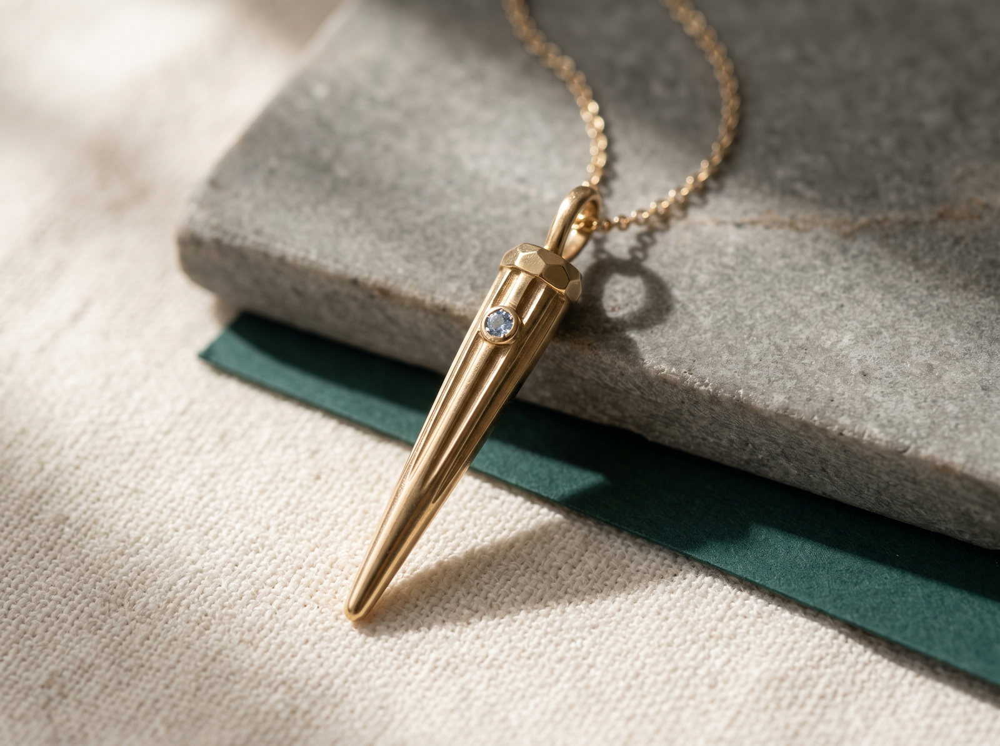
Etsy metni
Başlık 86/140
14K Gold Icicle Pendant Necklace, Lab Grown Blue Sapphire, Winter Jewelry Gift for Her
Etiketler (13)
14k gold necklace, icicle necklace, icicle pendant, winter jewelry, lab grown sapphire, blue sapphire, ice jewelry, drop pendant, christmas gift, gift for her, cable chain necklace, minimalist pendant, new year gift
Malzemeler
14k yellow gold, lab grown blue sapphire, 14k gold cable chain, 14k gold lobster clasp
Açıklama
An icicle in 14k gold, ribbed and tapering to a rounded tip, with a pale blue lab-grown sapphire under its faceted collar. A winter piece for Christmas that keeps going through January and beyond. THE PIECE 23 mm long, 4.6 mm across the faceted collar, narrowing to a rounded 0.8 mm tip. Four uneven ribs run down the upper half. The upper body is hollow-formed to keep the weight wearable, with two small drain holes on the back; the lower part is solid. The bail sits behind the collar. GOLD WEIGHT 4.15 g of 14k gold, counting the chain, clasp and extender. On the scale the finished piece weighs 4.15 g in total with the stones. STONES One 1.5 mm round lab-grown sapphire in a pale ice blue, flush set in a small raised pad. Mohs 9. LENGTH AND FIT A 1.0 mm 14k cable chain, 16 in with a 2 in extender, so it sits from 16 to 18 in. The chain is part of the design and its weight is counted in the gold weight above. HOW IT IS MADE Made to order. Cast in 14k gold in one piece. The stones are set last, cold, after all firing and polishing. CARE Wipe with a soft dry cloth, or wash in warm water with a drop of mild soap and a soft brush. Take it off for swimming and cleaning. No bleach or chlorine. GIFTING Arrives in a gift box, ready to give. Made to order. The processing time is shown at checkout.
Atölye kartı
Boy 23 mm (yaka ustu - uc), govde ust D4.2 -> uc D0.8 (r0.4 yarim kure). Yaka D4.6 x 1.8 kati, fasetli. Bosluk z=1.8..15.0, duvar 0.80 sabit (ic koni dis yuzeyle AYNI yari-aci); alttaki 8 mm kati. 2 tahliye deligi D1.6 arka yuzde (z=3 kulp altinda, z=12 kaburga ucunda). 4 kaburga 0.6 gen x 0.4 yuk x 12 mm. On tas pedi D2.4, 0.7 cikinti, z=0.6-3.0 (ust yarisi kati yakaya basar). Kulp 1.0 x 1.6. Toplam boy kulpla ~27 mm.
Tek parca 14K hollow dokum: 3D baski oyuk recine model, ic cekirdek yatirimi 3 noktadan baglanir (2 tahliye deligi + tas yuvasi delik). Dikis yok, lehim yok, mine yok. Tas yuvasi deligi bosluga acilir (tasin altinda delik sarti saglanir). 'Solid' kelimesi baslik/etiket/aciklamada GECMEZ: 'hollow-formed 14K gold' + gram beyan.
Tezgâh sırası
- 1. CAD: dis yuzey + ic koni ayni yari-aci (duvar 0.80 normal; model 1.0); kati yaka 1.8, kati uc 8 mm; 2 x D1.6 tahliye + D0.9 tas deligi cekirdek baglantisi.
- 2. Oyuk recine baski (ic yuzey destek yok, drenaj delikleri acik), recineyi iceriden IPA ile yika, UV sertlestir.
- 3. Yatirim vakum altinda (cekirdegin tam dolmasi icin 2 dk vakum), yakma, 14K vakum dokum.
- 4. Yatirimi su jeti ile tahliye deliklerinden temizle; deliklerin D1.6 acikligini pin-gauge ile dogrula; ici ultrasonik + su ile durula, firinda kurut (asit/su hapsi olmasin).
- 5. Duvar kalinligi kontrolu: ultrasonik kalinlik olcer ya da isik arkasi 3 noktada (z=4, 9, 14); <0.75 ise HURDA.
- 6. Kaburga tepelerine elmas tiras, govde cila (elde; tamburda cokme riskine karsi kisa ve hafif).
- 7. Tas yuvasi: ped arkasi kati yakaya yaslanir; parca sekilli recine/ahsap destekte; hart bur ile yuva; delik bosluga acik.
- 8. Tas oturtma soguk; QC tartim (uc 1.80 g +/- %5), uc r0.4, tahliye delikleri acik.
Malzeme listesi
- Alasim: 14K sari standart dokum alasimi (minesiz parca; Zn serbest), vakum dokum. Bitmis uc 1.800 g x 1.15 = 2.07 g dokum metali.
- Mine tozu: yok.
- Tas: 1 x 1.5 mm lab grown blue sapphire = 0.0143 ct.
- Zincir: 14K solid cable 1.0 mm 18in = 1.902 g.
- Bulgular: istakoz 0.25 g (tahmin), 2 atlama halkasi 0.060 g, etiket 0.046 g.
Arıza modları
| Arıza | Tasarım nasıl önlüyor |
|---|---|
| Cekirdek kaymasi -> duvar 0.8 altina iner (orijinalde farkli koni acilariyla 0.69'a kadar inceliyordu) | Ic koni dis yuzeyle ayni yari-aci (duvar z=2..14 boyunca 0.80 hesapla dogrulandi); cekirdek 3 noktadan bagli; dokum sonrasi kalinlik olcumu, <0.75 hurda. |
| Ic bosluga yatirim/asit/su hapsi | 2 x D1.6 tahliye + D0.9 tas deligi; su jeti, ultrasonik, notrlestirme ve firinda kurutma. |
| Cepte ezilme / gocme | Konik kabuk, 0.8 duvar, alttaki 8 mm kati uc, ustte 1.8 kati yaka. |
| Tas yuvasi acarken bosluga delip gecme / oturtmada gocme | Host 1.5 (0.7 ped + 0.8 duvar), delik planli olarak bosluga acilir; pedin ust yarisi kati yakaya basar; parca destek uzerinde oturtulur. |
Tolerans
| Kural | Değer | |
|---|---|---|
| L1 karat 14K (KANIT karat_policy; 14K vitreous 'marginal', not_viable degil) | 14K sari | ✓ |
| L2 mine | yok | ✓ |
| L3 ilk pisirimden sonra hamlac lehimi yok; kulp govdeyle tek dokum | lehim baglantisi 0; kulp entegre dokum; pisirim sonrasi ek yok | ✓ |
| L4 ev sahibi kalinligi 1.5 tas -> 1.5 | 0.7 ped + 0.8 duvar = 1.5 | ✓ |
| L4 yanal duvar 0.35 | 0.45 | ✓ |
| L4 tasin altinda delik | D0.9, ic bosluga acilir (kalan derinlik 0.555) | ✓ |
| L5 yapisal >=0.8 | kabuk duvari 0.80 (tum boyda, ayni yari-aci) | ✓ |
| L5 dekoratif >=0.6 | kaburga 0.6 x 0.4 | ✓ |
| L5 kulp >=1.0 | 1.0 x 1.6 | ✓ |
| L5 uc yaricapi >=0.4 | uc r0.4 yarim kure | ✓ |
| L6 hollow: yalniz kolye/bros, minesiz, >=2 delik >=1.5, 'solid' duser | kolye, minesiz, 2 x D1.6 (+ tas deligi), baslik 'Hollow' | ✓ |
| L7 kolye bandi 2.8-4.2 g (zincir+bulgu dahil altin) | 4.058 g (uc 1.800 + zincir 1.902 + bulgu 0.356); tavana pay 0.142 g | ✓ |
| L8 zincir 14K solid, tip+genislik yazili, 16in+2in uzatma, varyant degil | 14K solid cable 1.0 mm, 16+2 in | ✓ |
Görsel promptları (16)
- 01Hero / arama küçük resmi: tek ürün, marka natürmortu, 4:3.Referanssız
Quiet luxury editorial still-life product photography. Warm ivory linen ground, honed grey stone slab, a sliver of deep jade-green matte card. Soft directional window light from upper left, long soft shadow, shallow depth of field. Solid yellow gold with warm antique tone. Restrained heirloom mood. No text, no logo, no glitter, no Christmas decoration. The piece: Icicle pendant in 14K yellow gold, 23 mm long, tapering from a 4.6 mm faceted top collar to a rounded 0.8 mm tip. Four uneven vertical ribs run down the upper half; rib crests are polished and the surface between them is high-polish. One 1.5 mm pale ice-blue lab grown sapphire is flush-set in a small raised round pad on the front, about 2.5 mm below the top of the collar. The upper part of the body is hollow-formed, with two small drain holes on the back in the upper third. Bail behind the collar. 1.0 mm 14K cable chain, 16 inch plus 2 inch extender. The stones are exactly these and no others: one 1.5 mm round pale ice-blue lab-grown sapphire flush-set in a small raised pad just below the collar. No other stone and no empty setting anywhere on the piece. The piece has no enamel and no colour: every surface is yellow gold. The pendant lies flat and face up on the honed grey stone slab, the chain running in a soft loose curve up and out of the top edge of the frame. Seen from about 30 degrees above with a 100 mm macro lens, the decorated part in razor-sharp focus, filling about a third of the frame width, with the chain softly out of focus toward the frame edges. No people and no hands.
Alt metin 14K gold icicle pendant with a pale blue lab grown sapphire
- 02Takılı hâli: ölçek ve duruş. Hero'dan sonra dönüşümü en çok etkileyen kare.Referans: hero kırpımı
Quiet luxury editorial photography in warm ivory, stone grey and deep jade-green tones, soft directional window light from the upper left, true colour, fine film grain, no heavy retouching. No text, no logo, no watermark, no glitter. The attached reference image is a crop of this exact piece: keep its shape, proportions, gold colour and stones exactly as in the reference. The piece: Icicle pendant in 14K yellow gold, 23 mm long, tapering from a 4.6 mm faceted top collar to a rounded 0.8 mm tip. Four uneven vertical ribs run down the upper half; rib crests are polished and the surface between them is high-polish. One 1.5 mm pale ice-blue lab grown sapphire is flush-set in a small raised round pad on the front, about 2.5 mm below the top of the collar. The upper part of the body is hollow-formed, with two small drain holes on the back in the upper third. Bail behind the collar. 1.0 mm 14K cable chain, 16 inch plus 2 inch extender. The stones are exactly these and no others: one 1.5 mm round pale ice-blue lab-grown sapphire flush-set in a small raised pad just below the collar. No other stone and no empty setting anywhere on the piece. The piece has no enamel and no colour: every surface is yellow gold. Worn by a woman against bare skin just below the collarbone, above the open neckline of a warm-ivory silk blouse, cropped from chin to mid-chest so no face shows; the pendant hangs centred and faces the camera; it is the only jewellery in the image; true to scale, the main element measures about 23 mm across.
Alt metin 14K gold icicle pendant with a pale blue lab grown sapphire, worn
- 03Makro işçilik: fiyatı meşrulaştıran detay (mine yüzeyi, flush taş, kenar bitimi).Referans: hero kırpımı
Quiet luxury editorial photography in warm ivory, stone grey and deep jade-green tones, soft directional window light from the upper left, true colour, fine film grain, no heavy retouching. No text, no logo, no watermark, no glitter. The attached reference image is a crop of this exact piece: keep its shape, proportions, gold colour and stones exactly as in the reference. The piece: Icicle pendant in 14K yellow gold, 23 mm long, tapering from a 4.6 mm faceted top collar to a rounded 0.8 mm tip. Four uneven vertical ribs run down the upper half; rib crests are polished and the surface between them is high-polish. One 1.5 mm pale ice-blue lab grown sapphire is flush-set in a small raised round pad on the front, about 2.5 mm below the top of the collar. The upper part of the body is hollow-formed, with two small drain holes on the back in the upper third. Bail behind the collar. 1.0 mm 14K cable chain, 16 inch plus 2 inch extender. The stones are exactly these and no others: one 1.5 mm round pale ice-blue lab-grown sapphire flush-set in a small raised pad just below the collar. No other stone and no empty setting anywhere on the piece. The piece has no enamel and no colour: every surface is yellow gold. Extreme close-up macro, 100 mm macro lens: The faceted top collar, the flush-set pale ice-blue lab-grown sapphire below it and the polished ribs running down the icicle. The rest of the piece falls away into soft focus on warm-ivory linen.
Alt metin Close-up of the faceted collar and the pale blue lab-grown sapphire
- 04Elde ölçek: mm'yi parmak ucuna çevirir, 'beklediğimden küçük' iadesini önler.Referans: hero kırpımı
Quiet luxury editorial photography in warm ivory, stone grey and deep jade-green tones, soft directional window light from the upper left, true colour, fine film grain, no heavy retouching. No text, no logo, no watermark, no glitter. The attached reference image is a crop of this exact piece: keep its shape, proportions, gold colour and stones exactly as in the reference. The piece: Icicle pendant in 14K yellow gold, 23 mm long, tapering from a 4.6 mm faceted top collar to a rounded 0.8 mm tip. Four uneven vertical ribs run down the upper half; rib crests are polished and the surface between them is high-polish. One 1.5 mm pale ice-blue lab grown sapphire is flush-set in a small raised round pad on the front, about 2.5 mm below the top of the collar. The upper part of the body is hollow-formed, with two small drain holes on the back in the upper third. Bail behind the collar. 1.0 mm 14K cable chain, 16 inch plus 2 inch extender. The stones are exactly these and no others: one 1.5 mm round pale ice-blue lab-grown sapphire flush-set in a small raised pad just below the collar. No other stone and no empty setting anywhere on the piece. The piece has no enamel and no colour: every surface is yellow gold. Close-up for scale against a plain warm-ivory background thrown softly out of focus: the pendant resting on the fingertips of a woman's open hand, face up, the chain running out of the frame; true to scale, the main element measures about 23 mm across, a fingertip is about 16 mm wide; it is the only jewellery in the image; anatomically correct hands with five fingers, short natural unpolished nails.
Alt metin 14K gold icicle pendant with a pale blue lab grown sapphire, held between fingers for scale
- 05Arka ve bulgular: dolu gövde, kilit / çivi / iğne; sağlamlık sorusunu cevaplar.Referans: hero kırpımı
Quiet luxury editorial photography in warm ivory, stone grey and deep jade-green tones, soft directional window light from the upper left, true colour, fine film grain, no heavy retouching. No text, no logo, no watermark, no glitter. The attached reference image is a crop of this exact piece: keep its shape, proportions, gold colour and stones exactly as in the reference. The piece: Icicle pendant in 14K yellow gold, 23 mm long, tapering from a 4.6 mm faceted top collar to a rounded 0.8 mm tip. Four uneven vertical ribs run down the upper half; rib crests are polished and the surface between them is high-polish. One 1.5 mm pale ice-blue lab grown sapphire is flush-set in a small raised round pad on the front, about 2.5 mm below the top of the collar. The upper part of the body is hollow-formed, with two small drain holes on the back in the upper third. Bail behind the collar. 1.0 mm 14K cable chain, 16 inch plus 2 inch extender. The stones are exactly these and no others: one 1.5 mm round pale ice-blue lab-grown sapphire flush-set in a small raised pad just below the collar. No other stone and no empty setting anywhere on the piece. The piece has no enamel and no colour: every surface is yellow gold. The back of the piece, top-down on honed grey stone: The back of the icicle with its two small round drain holes in the upper third and the bail behind the collar.
Alt metin Back of the pendant necklace showing the drain holes and the bail
- 06Tam boy / çift / mekanizma: uzunluk, ayar ve ne geldiğini tek karede gösterir.Referans: hero kırpımı
Quiet luxury editorial photography in warm ivory, stone grey and deep jade-green tones, soft directional window light from the upper left, true colour, fine film grain, no heavy retouching. No text, no logo, no watermark, no glitter. The attached reference image is a crop of this exact piece: keep its shape, proportions, gold colour and stones exactly as in the reference. The piece: Icicle pendant in 14K yellow gold, 23 mm long, tapering from a 4.6 mm faceted top collar to a rounded 0.8 mm tip. Four uneven vertical ribs run down the upper half; rib crests are polished and the surface between them is high-polish. One 1.5 mm pale ice-blue lab grown sapphire is flush-set in a small raised round pad on the front, about 2.5 mm below the top of the collar. The upper part of the body is hollow-formed, with two small drain holes on the back in the upper third. Bail behind the collar. 1.0 mm 14K cable chain, 16 inch plus 2 inch extender. The stones are exactly these and no others: one 1.5 mm round pale ice-blue lab-grown sapphire flush-set in a small raised pad just below the collar. No other stone and no empty setting anywhere on the piece. The piece has no enamel and no colour: every surface is yellow gold. The whole necklace laid out top-down on warm-ivory linen in a straight vertical line, chain doubled into a narrow U, pendant face up at the bottom, lobster clasp and extender chain at the top.
Alt metin 14K gold icicle pendant with a pale blue lab grown sapphire, full length
- 07Yan profil: kalınlık ve kütle, düz baskı değil gerçek altın olduğunu gösterir.Referans: hero kırpımı
Quiet luxury editorial photography in warm ivory, stone grey and deep jade-green tones, soft directional window light from the upper left, true colour, fine film grain, no heavy retouching. No text, no logo, no watermark, no glitter. The attached reference image is a crop of this exact piece: keep its shape, proportions, gold colour and stones exactly as in the reference. The piece: Icicle pendant in 14K yellow gold, 23 mm long, tapering from a 4.6 mm faceted top collar to a rounded 0.8 mm tip. Four uneven vertical ribs run down the upper half; rib crests are polished and the surface between them is high-polish. One 1.5 mm pale ice-blue lab grown sapphire is flush-set in a small raised round pad on the front, about 2.5 mm below the top of the collar. The upper part of the body is hollow-formed, with two small drain holes on the back in the upper third. Bail behind the collar. 1.0 mm 14K cable chain, 16 inch plus 2 inch extender. The stones are exactly these and no others: one 1.5 mm round pale ice-blue lab-grown sapphire flush-set in a small raised pad just below the collar. No other stone and no empty setting anywhere on the piece. The piece has no enamel and no colour: every surface is yellow gold. Side profile at eye level on honed grey stone, the camera level with the piece: A round tapered icicle 4.6 mm wide at the collar narrowing to a rounded 0.8 mm tip, 23 mm long.
Alt metin Side profile of the pendant necklace showing its thickness
- 08Kış yaşam stili: sezonu Noel dekoru olmadan kurar.Referans: hero kırpımı
Quiet luxury editorial photography in warm ivory, stone grey and deep jade-green tones, soft directional window light from the upper left, true colour, fine film grain, no heavy retouching. No text, no logo, no watermark, no glitter. The attached reference image is a crop of this exact piece: keep its shape, proportions, gold colour and stones exactly as in the reference. The piece: Icicle pendant in 14K yellow gold, 23 mm long, tapering from a 4.6 mm faceted top collar to a rounded 0.8 mm tip. Four uneven vertical ribs run down the upper half; rib crests are polished and the surface between them is high-polish. One 1.5 mm pale ice-blue lab grown sapphire is flush-set in a small raised round pad on the front, about 2.5 mm below the top of the collar. The upper part of the body is hollow-formed, with two small drain holes on the back in the upper third. Bail behind the collar. 1.0 mm 14K cable chain, 16 inch plus 2 inch extender. The stones are exactly these and no others: one 1.5 mm round pale ice-blue lab-grown sapphire flush-set in a small raised pad just below the collar. No other stone and no empty setting anywhere on the piece. The piece has no enamel and no colour: every surface is yellow gold. Winter afternoon light: a woman wearing the necklace over a fine ivory cashmere crew-neck sweater, cropped from chin to chest, a grey wool coat collar at the edge of the frame; it is the only jewellery in the image.
Alt metin 14K gold icicle pendant with a pale blue lab grown sapphire, styled with winter knitwear
- 09Hediye kutusu: Noel alıcısının ilk sorusu, hediyeye hazır mı?Referans: hero kırpımı
Quiet luxury editorial photography in warm ivory, stone grey and deep jade-green tones, soft directional window light from the upper left, true colour, fine film grain, no heavy retouching. No text, no logo, no watermark, no glitter. The attached reference image is a crop of this exact piece: keep its shape, proportions, gold colour and stones exactly as in the reference. The piece: Icicle pendant in 14K yellow gold, 23 mm long, tapering from a 4.6 mm faceted top collar to a rounded 0.8 mm tip. Four uneven vertical ribs run down the upper half; rib crests are polished and the surface between them is high-polish. One 1.5 mm pale ice-blue lab grown sapphire is flush-set in a small raised round pad on the front, about 2.5 mm below the top of the collar. The upper part of the body is hollow-formed, with two small drain holes on the back in the upper third. Bail behind the collar. 1.0 mm 14K cable chain, 16 inch plus 2 inch extender. The stones are exactly these and no others: one 1.5 mm round pale ice-blue lab-grown sapphire flush-set in a small raised pad just below the collar. No other stone and no empty setting anywhere on the piece. The piece has no enamel and no colour: every surface is yellow gold. Top-down: the pendant face up, chain coiled inside a small open square gift box in plain warm-ivory card with a soft ivory insert, the lid set beside it, a length of narrow deep jade-green ribbon untied beside the box, on honed grey stone. No branding, no printed pattern, no tissue paper, no Christmas decoration, exactly one box.
Alt metin 14K gold icicle pendant with a pale blue lab grown sapphire in a gift box
- 10Gerçek renk: nötr gün ışığında altın ve mine rengi; renk kaynaklı iadeyi azaltır.Referans: hero kırpımı
Quiet luxury editorial photography in warm ivory, stone grey and deep jade-green tones, soft directional window light from the upper left, true colour, fine film grain, no heavy retouching. No text, no logo, no watermark, no glitter. The attached reference image is a crop of this exact piece: keep its shape, proportions, gold colour and stones exactly as in the reference. The piece: Icicle pendant in 14K yellow gold, 23 mm long, tapering from a 4.6 mm faceted top collar to a rounded 0.8 mm tip. Four uneven vertical ribs run down the upper half; rib crests are polished and the surface between them is high-polish. One 1.5 mm pale ice-blue lab grown sapphire is flush-set in a small raised round pad on the front, about 2.5 mm below the top of the collar. The upper part of the body is hollow-formed, with two small drain holes on the back in the upper third. Bail behind the collar. 1.0 mm 14K cable chain, 16 inch plus 2 inch extender. The stones are exactly these and no others: one 1.5 mm round pale ice-blue lab-grown sapphire flush-set in a small raised pad just below the collar. No other stone and no empty setting anywhere on the piece. The piece has no enamel and no colour: every surface is yellow gold. Colour-accurate reference shot: the piece alone, top-down on plain matte white-ivory paper under even neutral north daylight, no shadow drama, no props, the piece centred and filling half the frame.
Alt metin 14K gold icicle pendant with a pale blue lab grown sapphire in neutral daylight, true colour
- 11Ölçü grafiği tabanı: sağ üçte bir boş; mm etiketleri sonra eklenir.Referans: hero kırpımı
Quiet luxury editorial photography in warm ivory, stone grey and deep jade-green tones, soft directional window light from the upper left, true colour, fine film grain, no heavy retouching. No text, no logo, no watermark, no glitter. The attached reference image is a crop of this exact piece: keep its shape, proportions, gold colour and stones exactly as in the reference. The piece: Icicle pendant in 14K yellow gold, 23 mm long, tapering from a 4.6 mm faceted top collar to a rounded 0.8 mm tip. Four uneven vertical ribs run down the upper half; rib crests are polished and the surface between them is high-polish. One 1.5 mm pale ice-blue lab grown sapphire is flush-set in a small raised round pad on the front, about 2.5 mm below the top of the collar. The upper part of the body is hollow-formed, with two small drain holes on the back in the upper third. Bail behind the collar. 1.0 mm 14K cable chain, 16 inch plus 2 inch extender. The stones are exactly these and no others: one 1.5 mm round pale ice-blue lab-grown sapphire flush-set in a small raised pad just below the collar. No other stone and no empty setting anywhere on the piece. The piece has no enamel and no colour: every surface is yellow gold. The piece alone, top-down on plain warm-ivory paper, placed in the left two thirds of the frame; the right third is empty paper for dimension labels to be added later; even soft light, no props.
Alt metin 14K gold icicle pendant with a pale blue lab grown sapphire with space for dimensions
- 12El işçiliği: siparişe üretim hikâyesi, tezgâhta parça.Referans: hero kırpımı
Quiet luxury editorial photography in warm ivory, stone grey and deep jade-green tones, soft directional window light from the upper left, true colour, fine film grain, no heavy retouching. No text, no logo, no watermark, no glitter. The attached reference image is a crop of this exact piece: keep its shape, proportions, gold colour and stones exactly as in the reference. The piece: Icicle pendant in 14K yellow gold, 23 mm long, tapering from a 4.6 mm faceted top collar to a rounded 0.8 mm tip. Four uneven vertical ribs run down the upper half; rib crests are polished and the surface between them is high-polish. One 1.5 mm pale ice-blue lab grown sapphire is flush-set in a small raised round pad on the front, about 2.5 mm below the top of the collar. The upper part of the body is hollow-formed, with two small drain holes on the back in the upper third. Bail behind the collar. 1.0 mm 14K cable chain, 16 inch plus 2 inch extender. The stones are exactly these and no others: one 1.5 mm round pale ice-blue lab-grown sapphire flush-set in a small raised pad just below the collar. No other stone and no empty setting anywhere on the piece. The piece has no enamel and no colour: every surface is yellow gold. The finished piece lying on a worn wooden jeweller's bench pin beside a steel burnisher, a fine half-round file and a pair of brass tweezers, warm lamp light, shallow depth of field, the piece in sharp focus; no hands.
Alt metin 14K gold icicle pendant with a pale blue lab grown sapphire on a jeweller's bench
- 13Motifin anlamı: sol üçte bir boş; sembol hikâyesi metni sonra eklenir.Referans: hero kırpımı
Quiet luxury editorial photography in warm ivory, stone grey and deep jade-green tones, soft directional window light from the upper left, true colour, fine film grain, no heavy retouching. No text, no logo, no watermark, no glitter. The attached reference image is a crop of this exact piece: keep its shape, proportions, gold colour and stones exactly as in the reference. The piece: Icicle pendant in 14K yellow gold, 23 mm long, tapering from a 4.6 mm faceted top collar to a rounded 0.8 mm tip. Four uneven vertical ribs run down the upper half; rib crests are polished and the surface between them is high-polish. One 1.5 mm pale ice-blue lab grown sapphire is flush-set in a small raised round pad on the front, about 2.5 mm below the top of the collar. The upper part of the body is hollow-formed, with two small drain holes on the back in the upper third. Bail behind the collar. 1.0 mm 14K cable chain, 16 inch plus 2 inch extender. The stones are exactly these and no others: one 1.5 mm round pale ice-blue lab-grown sapphire flush-set in a small raised pad just below the collar. No other stone and no empty setting anywhere on the piece. The piece has no enamel and no colour: every surface is yellow gold. The piece alone, top-down on a deep jade-green matte card, placed in the right two thirds of the frame; the left third is empty card for a caption to be added later; soft directional light.
Alt metin 14K gold icicle pendant with a pale blue lab grown sapphire on a deep green card
- 14Yıl boyu takılır: 'yalnız Noel' itirazını kırar.Referans: hero kırpımı
Quiet luxury editorial photography in warm ivory, stone grey and deep jade-green tones, soft directional window light from the upper left, true colour, fine film grain, no heavy retouching. No text, no logo, no watermark, no glitter. The attached reference image is a crop of this exact piece: keep its shape, proportions, gold colour and stones exactly as in the reference. The piece: Icicle pendant in 14K yellow gold, 23 mm long, tapering from a 4.6 mm faceted top collar to a rounded 0.8 mm tip. Four uneven vertical ribs run down the upper half; rib crests are polished and the surface between them is high-polish. One 1.5 mm pale ice-blue lab grown sapphire is flush-set in a small raised round pad on the front, about 2.5 mm below the top of the collar. The upper part of the body is hollow-formed, with two small drain holes on the back in the upper third. Bail behind the collar. 1.0 mm 14K cable chain, 16 inch plus 2 inch extender. The stones are exactly these and no others: one 1.5 mm round pale ice-blue lab-grown sapphire flush-set in a small raised pad just below the collar. No other stone and no empty setting anywhere on the piece. The piece has no enamel and no colour: every surface is yellow gold. Everyday wear, no season: a woman wearing the necklace with a plain white cotton shirt open at the collar, soft daylight, cropped from chin to chest; the only jewellery in the image.
Alt metin 14K gold icicle pendant with a pale blue lab grown sapphire, everyday wear
- 15Hediye anı: duygu; Noel satın alma niyetine bağlar.Referans: hero kırpımı
Quiet luxury editorial photography in warm ivory, stone grey and deep jade-green tones, soft directional window light from the upper left, true colour, fine film grain, no heavy retouching. No text, no logo, no watermark, no glitter. The attached reference image is a crop of this exact piece: keep its shape, proportions, gold colour and stones exactly as in the reference. The piece: Icicle pendant in 14K yellow gold, 23 mm long, tapering from a 4.6 mm faceted top collar to a rounded 0.8 mm tip. Four uneven vertical ribs run down the upper half; rib crests are polished and the surface between them is high-polish. One 1.5 mm pale ice-blue lab grown sapphire is flush-set in a small raised round pad on the front, about 2.5 mm below the top of the collar. The upper part of the body is hollow-formed, with two small drain holes on the back in the upper third. Bail behind the collar. 1.0 mm 14K cable chain, 16 inch plus 2 inch extender. The stones are exactly these and no others: one 1.5 mm round pale ice-blue lab-grown sapphire flush-set in a small raised pad just below the collar. No other stone and no empty setting anywhere on the piece. The piece has no enamel and no colour: every surface is yellow gold. A gift being given: two pairs of hands across a pale oak table, one pair holding out the small open warm-ivory gift box with the piece visible inside, the other reaching for it, soft warm window light, sleeves of ivory and grey knitwear; exactly one box and one piece of jewellery; anatomically correct hands with five fingers, short natural unpolished nails.
Alt metin 14K gold icicle pendant with a pale blue lab grown sapphire given as a gift
- 16Mağaza ızgarası / Pinterest: koyu jade zeminde yüksek kontrast kare.Referans: hero kırpımı
Quiet luxury editorial photography in warm ivory, stone grey and deep jade-green tones, soft directional window light from the upper left, true colour, fine film grain, no heavy retouching. No text, no logo, no watermark, no glitter. The attached reference image is a crop of this exact piece: keep its shape, proportions, gold colour and stones exactly as in the reference. The piece: Icicle pendant in 14K yellow gold, 23 mm long, tapering from a 4.6 mm faceted top collar to a rounded 0.8 mm tip. Four uneven vertical ribs run down the upper half; rib crests are polished and the surface between them is high-polish. One 1.5 mm pale ice-blue lab grown sapphire is flush-set in a small raised round pad on the front, about 2.5 mm below the top of the collar. The upper part of the body is hollow-formed, with two small drain holes on the back in the upper third. Bail behind the collar. 1.0 mm 14K cable chain, 16 inch plus 2 inch extender. The stones are exactly these and no others: one 1.5 mm round pale ice-blue lab-grown sapphire flush-set in a small raised pad just below the collar. No other stone and no empty setting anywhere on the piece. The piece has no enamel and no colour: every surface is yellow gold. Top-down flat lay of the piece centred on a deep jade-green matte card with a narrow border of warm-ivory linen at the top edge, crisp soft light, the piece filling about 40 percent of the frame so a square crop keeps all of it.
Alt metin 14K gold icicle pendant with a pale blue lab grown sapphire, flat lay on deep green
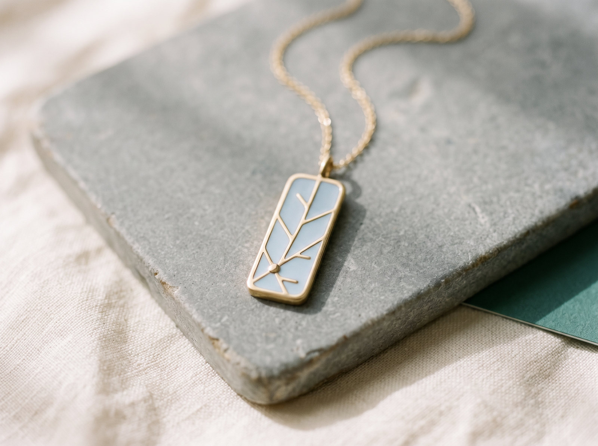
Etsy metni
Başlık 81/140
14K Gold Ice Blue Enamel Bar Necklace, Frost Crystal Pendant, Winter Gift for Her
Etiketler (13)
14k gold necklace, enamel necklace, bar necklace, ice blue enamel, vitreous enamel, frost necklace, winter jewelry, ice crystal, christmas gift, gift for her, cable chain necklace, solid gold pendant, modern pendant
Malzemeler
14k yellow gold, vitreous enamel, 14k gold cable chain, 14k gold lobster clasp
Açıklama
A slim gold bar filled with ice-blue glass enamel and crossed by fine gold lines that branch the way frost grows on a window. A winter gift for Christmas with nothing seasonal to put away in January. THE PIECE 6.5 by 17 mm with rounded corners, 1.4 mm thick. Three gold lines run out from a small round node to the frame, with short side lines branching at 60 degrees, so the blue is split into three fields. A 0.7 mm gold border frames the bar. The bail sits at the top back. GOLD WEIGHT 4.00 g of 14k gold, counting the chain, clasp and extender. On the scale the finished piece weighs 4.08 g in total with the enamel. ENAMEL Kiln-fired vitreous enamel (glass), opaque ice blue, level with the gold lines. LENGTH AND FIT A 1.0 mm 14k cable chain, 16 in with a 2 in extender, so it sits from 16 to 18 in. The chain is part of the design and its weight is counted in the gold weight above. HOW IT IS MADE Made to order. Cast in 14k gold in one piece, in a zinc-free gold alloy chosen for enamel. The enamel cells are cast into the gold, filled by hand and kiln-fired. Nothing is soldered after the first firing; any fitting added later is laser welded away from the enamel. CARE Wipe with a soft dry cloth, or wash in warm water with a drop of mild soap. Glass enamel is hard and does not fade, but it can chip if struck against stone or metal. Keep it away from ultrasonic cleaners. No bleach or chlorine. GIFTING Arrives in a gift box, ready to give. Made to order. The processing time is shown at checkout.
Atölye kartı
Plaka 6.5 x 17.0 x 1.40 (kose r1.5); cevre altin cerceve 0.7; ic alan 79.0 mm2. Dendrit: cekirdek sol-alt kosede, 3 ana eksen yalniz 3 altigen yonde (0, 60, 120 derece; ortak eksen yok, simetri yok), ana eksenlerin 3'u de cerceveye ulasir; 4 ikincil dal 1.5 mm, 60 derece, tek tarafli, uclari r0.35 serbest (tam yukseklikte duvar, kabartma degil). Toplam dendrit merkez-hatti ~30 mm, duvar 0.7. 5 hucre, en dar hucre genisligi 0.9. Mine 58 mm2 x 0.55 derin; taban 0.85.
Tek parca 14K cinkosuz alasim dokum; hucreler dokumde. Lehim yok, tas yok. Arka yuz ciplak altin (taban 0.85 >= 0.8: karsi-mine gerekmez). Mine duz, parlatma pisirimiyle biter (kubbe kacisi yok).
Tezgâh sırası
- 1. CAD: plaka 1.40 bitmis (model 1.60), dendrit duvarlari 0.7 net (model 0.75), hucre koseleri r0.2, ikincil dal uclari r0.35.
- 2. Recine baski; plaka dik, besleme alt kenar arkasindan (iki kanal).
- 3. Yatirim, yakma, CINKOSUZ 14K vakum dokum; dokum gozenegi kontrolu (hucre tabani 10x lup), gozenekli = hurda.
- 4. Tesviye, arka yuz duzleme (1.40 +/- 0.05), on cila cerceve.
- 5. Depletion gilding 3-4 dongu (593 C + %10 H2SO4).
- 6. Opak buz mavisi islak dolum, kurutma.
- 7. Pisirim 1: 780 C, 90 sn; plaka duz mika/elek uzerinde (sarkma yok).
- 8. Pisirim 2: 780 C, 90 sn.
- 9. Alundum/elmas cubukla duzleme, dendrit duvarlari ortaya cikar.
- 10. Pisirim 3: 770 C, 60 sn parlatma.
- 11. Asit yok; notr temizlik. Tas yok. Pisirim sonrasi lazer yok (kulp entegre).
- 12. Cila yalniz cerceve kenari ve arka; QC: pinhole/catlak, tartim (uc 1.77 g +/- %5).
Malzeme listesi
- Alasim: 14K sari CINKOSUZ mine-uyumlu alasim (Otto Frei 846-180 'No Zinc' master alloy + 24K ile 14K; dokumhaneden yazili Zn=0 sertifikasi ve solidus/DSC degeri), vakum/inert gaz dokum. Bitmis uc 1.767 g x 1.15 = 2.03 g dokum metali.
- Mine tozu: kursunsuz opak buz mavisi ~200 mg (pisirilmis 80 mg x ~2.5).
- Tas: yok.
- Zincir: 14K solid cable 1.0 mm 18in = 1.902 g.
- Bulgular: istakoz 0.25 g (tahmin), 2 atlama halkasi 0.060 g, etiket 0.046 g.
Arıza modları
| Arıza | Tasarım nasıl önlüyor |
|---|---|
| 0.7 dendrit duvarinda eksik dolum (iki hucre birlesir -> hurda) | Orijinal 14 paralel 0.5 duvar yerine ~30 mm toplam 0.7 duvar; model 0.75, cift besleme, vakum. |
| Uzun dar kanalda mine catlamasi | 5 genis duzensiz hucre, min 0.9 genislik, her hucre altin ile cevrili, koseler r0.2. |
| Ince plakanin firinda egrilmesi | 1.40 kalinlik, duz destek, <=780 C kisa pisirim, 3 pisirim (<=4). |
| Buz mavisinin yuksek-Ag cinkosuz alasimda yesile kaymasi | Pilot kupon ayni alasim ve parti mineyle; onaysiz seri yok. |
Tolerans
| Kural | Değer | |
|---|---|---|
| L1 karat 14K (KANIT karat_policy; 14K vitreous 'marginal', not_viable degil) | 14K sari cinkosuz mine alasimi | ✓ |
| L2 opak, hucre dokumde | opak buz mavisi, 5 dokum hucresi | ✓ |
| L2 derinlik 0.5-0.6 | 0.55 | ✓ |
| L2 genislik >=0.7, derinlik <=2x genislik | min 0.9; 0.55/0.9 = 0.61 | ✓ |
| L2 taban >=0.8 | 1.40-0.55 = 0.85 | ✓ |
| L2 duvar >=0.70 | 0.70 (dendrit ve cerceve) | ✓ |
| L2 hucre icinde kabartma yok | ikincil dallar tam yukseklik duvar, duz taban | ✓ |
| L2 palet / en fazla 2 renk | 1 renk: buz mavisi | ✓ |
| L2 pisirim <=4, <=790 C | 3, 770-780 C | ✓ |
| L3 ilk pisirimden sonra hamlac lehimi yok; kulp govdeyle tek dokum | lehim baglantisi 0; kulp entegre dokum; pisirim sonrasi ek yok | ✓ |
| L4 tas | yok | ✓ |
| L5 yapisal >=0.8 | plaka 1.40, cerceve 0.7 x 1.40 kesit | ✓ |
| L5 kulp >=1.0 | 1.0 x 1.6 | ✓ |
| L5 uc yaricapi >=0.4 | kose r1.5 | ✓ |
| L11 pinnate yok / duz 6 kollu kar tanesi yok | 3 eksen, tek cekirdek, asimetrik; orta damar + karsilikli yan dal yok | ✓ |
| L7 kolye bandi 2.8-4.2 g (zincir+bulgu dahil altin) | 4.025 g (uc 1.767 + zincir 1.902 + bulgu 0.356); tavana pay 0.175 g | ✓ |
| L8 zincir 14K solid, tip+genislik yazili, 16in+2in uzatma, varyant degil | 14K solid cable 1.0 mm, 16+2 in | ✓ |
Görsel promptları (16)
- 01Hero / arama küçük resmi: tek ürün, marka natürmortu, 4:3.Referanssız
Quiet luxury editorial still-life product photography. Warm ivory linen ground, honed grey stone slab, a sliver of deep jade-green matte card. Soft directional window light from upper left, long soft shadow, shallow depth of field. Solid yellow gold with warm antique tone. Restrained heirloom mood. No text, no logo, no glitter, no Christmas decoration. The piece: Vertical bar pendant in 14K yellow gold, 6.5 x 17 mm with rounded corners, 1.4 mm thick. The front is filled with opaque ice-blue enamel (a soft pale powder blue with a grey cast) divided by 0.7 mm gold lines: from one small round gold node 2 mm above the bottom edge and 2 mm in from the left edge, one line runs straight up to the top border, one runs up and to the right at 30 degrees above horizontal to the right border, and one runs up and to the left at 30 degrees above horizontal to the left border. A few short 1.5 mm gold side lines with rounded free ends branch off at 60 degrees, spread across the three lines, so the blue is split into three irregular fields. A 0.7 mm gold border frames the bar. Enamel level with the gold, polished gold edges. Bail at the top back. 1.0 mm 14K cable chain, 16 inch plus 2 inch extender. The piece carries no gemstones at all and no empty settings. The only colour on the piece is opaque ice-blue enamel filling the three fields of the bar between the gold frost lines; every other surface is yellow gold. The pendant lies flat and face up on the honed grey stone slab, the chain running in a soft loose curve up and out of the top edge of the frame. Seen from about 30 degrees above with a 100 mm macro lens, the decorated part in razor-sharp focus, filling about a third of the frame width, with the chain softly out of focus toward the frame edges. No people and no hands.
Alt metin 14K gold vertical bar pendant with ice blue enamel and gold frost lines
- 02Takılı hâli: ölçek ve duruş. Hero'dan sonra dönüşümü en çok etkileyen kare.Referans: hero kırpımı
Quiet luxury editorial photography in warm ivory, stone grey and deep jade-green tones, soft directional window light from the upper left, true colour, fine film grain, no heavy retouching. No text, no logo, no watermark, no glitter. The attached reference image is a crop of this exact piece: keep its shape, proportions, gold colour and enamel colours exactly as in the reference. The piece: Vertical bar pendant in 14K yellow gold, 6.5 x 17 mm with rounded corners, 1.4 mm thick. The front is filled with opaque ice-blue enamel (a soft pale powder blue with a grey cast) divided by 0.7 mm gold lines: from one small round gold node 2 mm above the bottom edge and 2 mm in from the left edge, one line runs straight up to the top border, one runs up and to the right at 30 degrees above horizontal to the right border, and one runs up and to the left at 30 degrees above horizontal to the left border. A few short 1.5 mm gold side lines with rounded free ends branch off at 60 degrees, spread across the three lines, so the blue is split into three irregular fields. A 0.7 mm gold border frames the bar. Enamel level with the gold, polished gold edges. Bail at the top back. 1.0 mm 14K cable chain, 16 inch plus 2 inch extender. The piece carries no gemstones at all and no empty settings. The only colour on the piece is opaque ice-blue enamel filling the three fields of the bar between the gold frost lines; every other surface is yellow gold. Worn by a woman against bare skin just below the collarbone, above the open neckline of a warm-ivory silk blouse, cropped from chin to mid-chest so no face shows; the pendant hangs centred and faces the camera; it is the only jewellery in the image; true to scale, the main element measures about 17 mm across.
Alt metin 14K gold vertical bar pendant with ice blue enamel and gold frost lines, worn
- 03Makro işçilik: fiyatı meşrulaştıran detay (mine yüzeyi, flush taş, kenar bitimi).Referans: hero kırpımı
Quiet luxury editorial photography in warm ivory, stone grey and deep jade-green tones, soft directional window light from the upper left, true colour, fine film grain, no heavy retouching. No text, no logo, no watermark, no glitter. The attached reference image is a crop of this exact piece: keep its shape, proportions, gold colour and enamel colours exactly as in the reference. The piece: Vertical bar pendant in 14K yellow gold, 6.5 x 17 mm with rounded corners, 1.4 mm thick. The front is filled with opaque ice-blue enamel (a soft pale powder blue with a grey cast) divided by 0.7 mm gold lines: from one small round gold node 2 mm above the bottom edge and 2 mm in from the left edge, one line runs straight up to the top border, one runs up and to the right at 30 degrees above horizontal to the right border, and one runs up and to the left at 30 degrees above horizontal to the left border. A few short 1.5 mm gold side lines with rounded free ends branch off at 60 degrees, spread across the three lines, so the blue is split into three irregular fields. A 0.7 mm gold border frames the bar. Enamel level with the gold, polished gold edges. Bail at the top back. 1.0 mm 14K cable chain, 16 inch plus 2 inch extender. The piece carries no gemstones at all and no empty settings. The only colour on the piece is opaque ice-blue enamel filling the three fields of the bar between the gold frost lines; every other surface is yellow gold. Extreme close-up macro, 100 mm macro lens: The bar face with its opaque ice-blue enamel fields and the fine gold frost lines branching from the small round node. The rest of the piece falls away into soft focus on warm-ivory linen.
Alt metin Close-up of the ice blue enamel and the gold frost lines
- 04Elde ölçek: mm'yi parmak ucuna çevirir, 'beklediğimden küçük' iadesini önler.Referans: hero kırpımı
Quiet luxury editorial photography in warm ivory, stone grey and deep jade-green tones, soft directional window light from the upper left, true colour, fine film grain, no heavy retouching. No text, no logo, no watermark, no glitter. The attached reference image is a crop of this exact piece: keep its shape, proportions, gold colour and enamel colours exactly as in the reference. The piece: Vertical bar pendant in 14K yellow gold, 6.5 x 17 mm with rounded corners, 1.4 mm thick. The front is filled with opaque ice-blue enamel (a soft pale powder blue with a grey cast) divided by 0.7 mm gold lines: from one small round gold node 2 mm above the bottom edge and 2 mm in from the left edge, one line runs straight up to the top border, one runs up and to the right at 30 degrees above horizontal to the right border, and one runs up and to the left at 30 degrees above horizontal to the left border. A few short 1.5 mm gold side lines with rounded free ends branch off at 60 degrees, spread across the three lines, so the blue is split into three irregular fields. A 0.7 mm gold border frames the bar. Enamel level with the gold, polished gold edges. Bail at the top back. 1.0 mm 14K cable chain, 16 inch plus 2 inch extender. The piece carries no gemstones at all and no empty settings. The only colour on the piece is opaque ice-blue enamel filling the three fields of the bar between the gold frost lines; every other surface is yellow gold. Close-up for scale against a plain warm-ivory background thrown softly out of focus: the pendant resting on the fingertips of a woman's open hand, face up, the chain running out of the frame; true to scale, the main element measures about 17 mm across, a fingertip is about 16 mm wide; it is the only jewellery in the image; anatomically correct hands with five fingers, short natural unpolished nails.
Alt metin 14K gold vertical bar pendant with ice blue enamel and gold frost lines, held between fingers for scale
- 05Arka ve bulgular: dolu gövde, kilit / çivi / iğne; sağlamlık sorusunu cevaplar.Referans: hero kırpımı
Quiet luxury editorial photography in warm ivory, stone grey and deep jade-green tones, soft directional window light from the upper left, true colour, fine film grain, no heavy retouching. No text, no logo, no watermark, no glitter. The attached reference image is a crop of this exact piece: keep its shape, proportions, gold colour and enamel colours exactly as in the reference. The piece: Vertical bar pendant in 14K yellow gold, 6.5 x 17 mm with rounded corners, 1.4 mm thick. The front is filled with opaque ice-blue enamel (a soft pale powder blue with a grey cast) divided by 0.7 mm gold lines: from one small round gold node 2 mm above the bottom edge and 2 mm in from the left edge, one line runs straight up to the top border, one runs up and to the right at 30 degrees above horizontal to the right border, and one runs up and to the left at 30 degrees above horizontal to the left border. A few short 1.5 mm gold side lines with rounded free ends branch off at 60 degrees, spread across the three lines, so the blue is split into three irregular fields. A 0.7 mm gold border frames the bar. Enamel level with the gold, polished gold edges. Bail at the top back. 1.0 mm 14K cable chain, 16 inch plus 2 inch extender. The piece carries no gemstones at all and no empty settings. The only colour on the piece is opaque ice-blue enamel filling the three fields of the bar between the gold frost lines; every other surface is yellow gold. The back of the piece, top-down on honed grey stone: The flat solid polished back of the bar and the bail at the top.
Alt metin Back of the pendant necklace showing the solid back and the bail
- 06Tam boy / çift / mekanizma: uzunluk, ayar ve ne geldiğini tek karede gösterir.Referans: hero kırpımı
Quiet luxury editorial photography in warm ivory, stone grey and deep jade-green tones, soft directional window light from the upper left, true colour, fine film grain, no heavy retouching. No text, no logo, no watermark, no glitter. The attached reference image is a crop of this exact piece: keep its shape, proportions, gold colour and enamel colours exactly as in the reference. The piece: Vertical bar pendant in 14K yellow gold, 6.5 x 17 mm with rounded corners, 1.4 mm thick. The front is filled with opaque ice-blue enamel (a soft pale powder blue with a grey cast) divided by 0.7 mm gold lines: from one small round gold node 2 mm above the bottom edge and 2 mm in from the left edge, one line runs straight up to the top border, one runs up and to the right at 30 degrees above horizontal to the right border, and one runs up and to the left at 30 degrees above horizontal to the left border. A few short 1.5 mm gold side lines with rounded free ends branch off at 60 degrees, spread across the three lines, so the blue is split into three irregular fields. A 0.7 mm gold border frames the bar. Enamel level with the gold, polished gold edges. Bail at the top back. 1.0 mm 14K cable chain, 16 inch plus 2 inch extender. The piece carries no gemstones at all and no empty settings. The only colour on the piece is opaque ice-blue enamel filling the three fields of the bar between the gold frost lines; every other surface is yellow gold. The whole necklace laid out top-down on warm-ivory linen in a straight vertical line, chain doubled into a narrow U, pendant face up at the bottom, lobster clasp and extender chain at the top.
Alt metin 14K gold vertical bar pendant with ice blue enamel and gold frost lines, full length
- 07Yan profil: kalınlık ve kütle, düz baskı değil gerçek altın olduğunu gösterir.Referans: hero kırpımı
Quiet luxury editorial photography in warm ivory, stone grey and deep jade-green tones, soft directional window light from the upper left, true colour, fine film grain, no heavy retouching. No text, no logo, no watermark, no glitter. The attached reference image is a crop of this exact piece: keep its shape, proportions, gold colour and enamel colours exactly as in the reference. The piece: Vertical bar pendant in 14K yellow gold, 6.5 x 17 mm with rounded corners, 1.4 mm thick. The front is filled with opaque ice-blue enamel (a soft pale powder blue with a grey cast) divided by 0.7 mm gold lines: from one small round gold node 2 mm above the bottom edge and 2 mm in from the left edge, one line runs straight up to the top border, one runs up and to the right at 30 degrees above horizontal to the right border, and one runs up and to the left at 30 degrees above horizontal to the left border. A few short 1.5 mm gold side lines with rounded free ends branch off at 60 degrees, spread across the three lines, so the blue is split into three irregular fields. A 0.7 mm gold border frames the bar. Enamel level with the gold, polished gold edges. Bail at the top back. 1.0 mm 14K cable chain, 16 inch plus 2 inch extender. The piece carries no gemstones at all and no empty settings. The only colour on the piece is opaque ice-blue enamel filling the three fields of the bar between the gold frost lines; every other surface is yellow gold. Side profile at eye level on honed grey stone, the camera level with the piece: A flat bar 1.4 mm thick with rounded corners.
Alt metin Side profile of the pendant necklace showing its thickness
- 08Kış yaşam stili: sezonu Noel dekoru olmadan kurar.Referans: hero kırpımı
Quiet luxury editorial photography in warm ivory, stone grey and deep jade-green tones, soft directional window light from the upper left, true colour, fine film grain, no heavy retouching. No text, no logo, no watermark, no glitter. The attached reference image is a crop of this exact piece: keep its shape, proportions, gold colour and enamel colours exactly as in the reference. The piece: Vertical bar pendant in 14K yellow gold, 6.5 x 17 mm with rounded corners, 1.4 mm thick. The front is filled with opaque ice-blue enamel (a soft pale powder blue with a grey cast) divided by 0.7 mm gold lines: from one small round gold node 2 mm above the bottom edge and 2 mm in from the left edge, one line runs straight up to the top border, one runs up and to the right at 30 degrees above horizontal to the right border, and one runs up and to the left at 30 degrees above horizontal to the left border. A few short 1.5 mm gold side lines with rounded free ends branch off at 60 degrees, spread across the three lines, so the blue is split into three irregular fields. A 0.7 mm gold border frames the bar. Enamel level with the gold, polished gold edges. Bail at the top back. 1.0 mm 14K cable chain, 16 inch plus 2 inch extender. The piece carries no gemstones at all and no empty settings. The only colour on the piece is opaque ice-blue enamel filling the three fields of the bar between the gold frost lines; every other surface is yellow gold. Winter afternoon light: a woman wearing the necklace over a fine ivory cashmere crew-neck sweater, cropped from chin to chest, a grey wool coat collar at the edge of the frame; it is the only jewellery in the image.
Alt metin 14K gold vertical bar pendant with ice blue enamel and gold frost lines, styled with winter knitwear
- 09Hediye kutusu: Noel alıcısının ilk sorusu, hediyeye hazır mı?Referans: hero kırpımı
Quiet luxury editorial photography in warm ivory, stone grey and deep jade-green tones, soft directional window light from the upper left, true colour, fine film grain, no heavy retouching. No text, no logo, no watermark, no glitter. The attached reference image is a crop of this exact piece: keep its shape, proportions, gold colour and enamel colours exactly as in the reference. The piece: Vertical bar pendant in 14K yellow gold, 6.5 x 17 mm with rounded corners, 1.4 mm thick. The front is filled with opaque ice-blue enamel (a soft pale powder blue with a grey cast) divided by 0.7 mm gold lines: from one small round gold node 2 mm above the bottom edge and 2 mm in from the left edge, one line runs straight up to the top border, one runs up and to the right at 30 degrees above horizontal to the right border, and one runs up and to the left at 30 degrees above horizontal to the left border. A few short 1.5 mm gold side lines with rounded free ends branch off at 60 degrees, spread across the three lines, so the blue is split into three irregular fields. A 0.7 mm gold border frames the bar. Enamel level with the gold, polished gold edges. Bail at the top back. 1.0 mm 14K cable chain, 16 inch plus 2 inch extender. The piece carries no gemstones at all and no empty settings. The only colour on the piece is opaque ice-blue enamel filling the three fields of the bar between the gold frost lines; every other surface is yellow gold. Top-down: the pendant face up, chain coiled inside a small open square gift box in plain warm-ivory card with a soft ivory insert, the lid set beside it, a length of narrow deep jade-green ribbon untied beside the box, on honed grey stone. No branding, no printed pattern, no tissue paper, no Christmas decoration, exactly one box.
Alt metin 14K gold vertical bar pendant with ice blue enamel and gold frost lines in a gift box
- 10Gerçek renk: nötr gün ışığında altın ve mine rengi; renk kaynaklı iadeyi azaltır.Referans: hero kırpımı
Quiet luxury editorial photography in warm ivory, stone grey and deep jade-green tones, soft directional window light from the upper left, true colour, fine film grain, no heavy retouching. No text, no logo, no watermark, no glitter. The attached reference image is a crop of this exact piece: keep its shape, proportions, gold colour and enamel colours exactly as in the reference. The piece: Vertical bar pendant in 14K yellow gold, 6.5 x 17 mm with rounded corners, 1.4 mm thick. The front is filled with opaque ice-blue enamel (a soft pale powder blue with a grey cast) divided by 0.7 mm gold lines: from one small round gold node 2 mm above the bottom edge and 2 mm in from the left edge, one line runs straight up to the top border, one runs up and to the right at 30 degrees above horizontal to the right border, and one runs up and to the left at 30 degrees above horizontal to the left border. A few short 1.5 mm gold side lines with rounded free ends branch off at 60 degrees, spread across the three lines, so the blue is split into three irregular fields. A 0.7 mm gold border frames the bar. Enamel level with the gold, polished gold edges. Bail at the top back. 1.0 mm 14K cable chain, 16 inch plus 2 inch extender. The piece carries no gemstones at all and no empty settings. The only colour on the piece is opaque ice-blue enamel filling the three fields of the bar between the gold frost lines; every other surface is yellow gold. Colour-accurate reference shot: the piece alone, top-down on plain matte white-ivory paper under even neutral north daylight, no shadow drama, no props, the piece centred and filling half the frame.
Alt metin 14K gold vertical bar pendant with ice blue enamel and gold frost lines in neutral daylight, true colour
- 11Ölçü grafiği tabanı: sağ üçte bir boş; mm etiketleri sonra eklenir.Referans: hero kırpımı
Quiet luxury editorial photography in warm ivory, stone grey and deep jade-green tones, soft directional window light from the upper left, true colour, fine film grain, no heavy retouching. No text, no logo, no watermark, no glitter. The attached reference image is a crop of this exact piece: keep its shape, proportions, gold colour and enamel colours exactly as in the reference. The piece: Vertical bar pendant in 14K yellow gold, 6.5 x 17 mm with rounded corners, 1.4 mm thick. The front is filled with opaque ice-blue enamel (a soft pale powder blue with a grey cast) divided by 0.7 mm gold lines: from one small round gold node 2 mm above the bottom edge and 2 mm in from the left edge, one line runs straight up to the top border, one runs up and to the right at 30 degrees above horizontal to the right border, and one runs up and to the left at 30 degrees above horizontal to the left border. A few short 1.5 mm gold side lines with rounded free ends branch off at 60 degrees, spread across the three lines, so the blue is split into three irregular fields. A 0.7 mm gold border frames the bar. Enamel level with the gold, polished gold edges. Bail at the top back. 1.0 mm 14K cable chain, 16 inch plus 2 inch extender. The piece carries no gemstones at all and no empty settings. The only colour on the piece is opaque ice-blue enamel filling the three fields of the bar between the gold frost lines; every other surface is yellow gold. The piece alone, top-down on plain warm-ivory paper, placed in the left two thirds of the frame; the right third is empty paper for dimension labels to be added later; even soft light, no props.
Alt metin 14K gold vertical bar pendant with ice blue enamel and gold frost lines with space for dimensions
- 12El işçiliği: siparişe üretim hikâyesi, tezgâhta parça.Referans: hero kırpımı
Quiet luxury editorial photography in warm ivory, stone grey and deep jade-green tones, soft directional window light from the upper left, true colour, fine film grain, no heavy retouching. No text, no logo, no watermark, no glitter. The attached reference image is a crop of this exact piece: keep its shape, proportions, gold colour and enamel colours exactly as in the reference. The piece: Vertical bar pendant in 14K yellow gold, 6.5 x 17 mm with rounded corners, 1.4 mm thick. The front is filled with opaque ice-blue enamel (a soft pale powder blue with a grey cast) divided by 0.7 mm gold lines: from one small round gold node 2 mm above the bottom edge and 2 mm in from the left edge, one line runs straight up to the top border, one runs up and to the right at 30 degrees above horizontal to the right border, and one runs up and to the left at 30 degrees above horizontal to the left border. A few short 1.5 mm gold side lines with rounded free ends branch off at 60 degrees, spread across the three lines, so the blue is split into three irregular fields. A 0.7 mm gold border frames the bar. Enamel level with the gold, polished gold edges. Bail at the top back. 1.0 mm 14K cable chain, 16 inch plus 2 inch extender. The piece carries no gemstones at all and no empty settings. The only colour on the piece is opaque ice-blue enamel filling the three fields of the bar between the gold frost lines; every other surface is yellow gold. The finished piece lying on a worn wooden jeweller's bench pin beside a small porcelain dish of ice-blue enamel powder and a fine sable brush, warm lamp light, shallow depth of field, the piece in sharp focus; no hands.
Alt metin 14K gold vertical bar pendant with ice blue enamel and gold frost lines on a jeweller's bench
- 13Motifin anlamı: sol üçte bir boş; sembol hikâyesi metni sonra eklenir.Referans: hero kırpımı
Quiet luxury editorial photography in warm ivory, stone grey and deep jade-green tones, soft directional window light from the upper left, true colour, fine film grain, no heavy retouching. No text, no logo, no watermark, no glitter. The attached reference image is a crop of this exact piece: keep its shape, proportions, gold colour and enamel colours exactly as in the reference. The piece: Vertical bar pendant in 14K yellow gold, 6.5 x 17 mm with rounded corners, 1.4 mm thick. The front is filled with opaque ice-blue enamel (a soft pale powder blue with a grey cast) divided by 0.7 mm gold lines: from one small round gold node 2 mm above the bottom edge and 2 mm in from the left edge, one line runs straight up to the top border, one runs up and to the right at 30 degrees above horizontal to the right border, and one runs up and to the left at 30 degrees above horizontal to the left border. A few short 1.5 mm gold side lines with rounded free ends branch off at 60 degrees, spread across the three lines, so the blue is split into three irregular fields. A 0.7 mm gold border frames the bar. Enamel level with the gold, polished gold edges. Bail at the top back. 1.0 mm 14K cable chain, 16 inch plus 2 inch extender. The piece carries no gemstones at all and no empty settings. The only colour on the piece is opaque ice-blue enamel filling the three fields of the bar between the gold frost lines; every other surface is yellow gold. The piece alone, top-down on a deep jade-green matte card, placed in the right two thirds of the frame; the left third is empty card for a caption to be added later; soft directional light.
Alt metin 14K gold vertical bar pendant with ice blue enamel and gold frost lines on a deep green card
- 14Yıl boyu takılır: 'yalnız Noel' itirazını kırar.Referans: hero kırpımı
Quiet luxury editorial photography in warm ivory, stone grey and deep jade-green tones, soft directional window light from the upper left, true colour, fine film grain, no heavy retouching. No text, no logo, no watermark, no glitter. The attached reference image is a crop of this exact piece: keep its shape, proportions, gold colour and enamel colours exactly as in the reference. The piece: Vertical bar pendant in 14K yellow gold, 6.5 x 17 mm with rounded corners, 1.4 mm thick. The front is filled with opaque ice-blue enamel (a soft pale powder blue with a grey cast) divided by 0.7 mm gold lines: from one small round gold node 2 mm above the bottom edge and 2 mm in from the left edge, one line runs straight up to the top border, one runs up and to the right at 30 degrees above horizontal to the right border, and one runs up and to the left at 30 degrees above horizontal to the left border. A few short 1.5 mm gold side lines with rounded free ends branch off at 60 degrees, spread across the three lines, so the blue is split into three irregular fields. A 0.7 mm gold border frames the bar. Enamel level with the gold, polished gold edges. Bail at the top back. 1.0 mm 14K cable chain, 16 inch plus 2 inch extender. The piece carries no gemstones at all and no empty settings. The only colour on the piece is opaque ice-blue enamel filling the three fields of the bar between the gold frost lines; every other surface is yellow gold. Everyday wear, no season: a woman wearing the necklace with a plain white cotton shirt open at the collar, soft daylight, cropped from chin to chest; the only jewellery in the image.
Alt metin 14K gold vertical bar pendant with ice blue enamel and gold frost lines, everyday wear
- 15Hediye anı: duygu; Noel satın alma niyetine bağlar.Referans: hero kırpımı
Quiet luxury editorial photography in warm ivory, stone grey and deep jade-green tones, soft directional window light from the upper left, true colour, fine film grain, no heavy retouching. No text, no logo, no watermark, no glitter. The attached reference image is a crop of this exact piece: keep its shape, proportions, gold colour and enamel colours exactly as in the reference. The piece: Vertical bar pendant in 14K yellow gold, 6.5 x 17 mm with rounded corners, 1.4 mm thick. The front is filled with opaque ice-blue enamel (a soft pale powder blue with a grey cast) divided by 0.7 mm gold lines: from one small round gold node 2 mm above the bottom edge and 2 mm in from the left edge, one line runs straight up to the top border, one runs up and to the right at 30 degrees above horizontal to the right border, and one runs up and to the left at 30 degrees above horizontal to the left border. A few short 1.5 mm gold side lines with rounded free ends branch off at 60 degrees, spread across the three lines, so the blue is split into three irregular fields. A 0.7 mm gold border frames the bar. Enamel level with the gold, polished gold edges. Bail at the top back. 1.0 mm 14K cable chain, 16 inch plus 2 inch extender. The piece carries no gemstones at all and no empty settings. The only colour on the piece is opaque ice-blue enamel filling the three fields of the bar between the gold frost lines; every other surface is yellow gold. A gift being given: two pairs of hands across a pale oak table, one pair holding out the small open warm-ivory gift box with the piece visible inside, the other reaching for it, soft warm window light, sleeves of ivory and grey knitwear; exactly one box and one piece of jewellery; anatomically correct hands with five fingers, short natural unpolished nails.
Alt metin 14K gold vertical bar pendant with ice blue enamel and gold frost lines given as a gift
- 16Mağaza ızgarası / Pinterest: koyu jade zeminde yüksek kontrast kare.Referans: hero kırpımı
Quiet luxury editorial photography in warm ivory, stone grey and deep jade-green tones, soft directional window light from the upper left, true colour, fine film grain, no heavy retouching. No text, no logo, no watermark, no glitter. The attached reference image is a crop of this exact piece: keep its shape, proportions, gold colour and enamel colours exactly as in the reference. The piece: Vertical bar pendant in 14K yellow gold, 6.5 x 17 mm with rounded corners, 1.4 mm thick. The front is filled with opaque ice-blue enamel (a soft pale powder blue with a grey cast) divided by 0.7 mm gold lines: from one small round gold node 2 mm above the bottom edge and 2 mm in from the left edge, one line runs straight up to the top border, one runs up and to the right at 30 degrees above horizontal to the right border, and one runs up and to the left at 30 degrees above horizontal to the left border. A few short 1.5 mm gold side lines with rounded free ends branch off at 60 degrees, spread across the three lines, so the blue is split into three irregular fields. A 0.7 mm gold border frames the bar. Enamel level with the gold, polished gold edges. Bail at the top back. 1.0 mm 14K cable chain, 16 inch plus 2 inch extender. The piece carries no gemstones at all and no empty settings. The only colour on the piece is opaque ice-blue enamel filling the three fields of the bar between the gold frost lines; every other surface is yellow gold. Top-down flat lay of the piece centred on a deep jade-green matte card with a narrow border of warm-ivory linen at the top edge, crisp soft light, the piece filling about 40 percent of the frame so a square crop keeps all of it.
Alt metin 14K gold vertical bar pendant with ice blue enamel and gold frost lines, flat lay on deep green
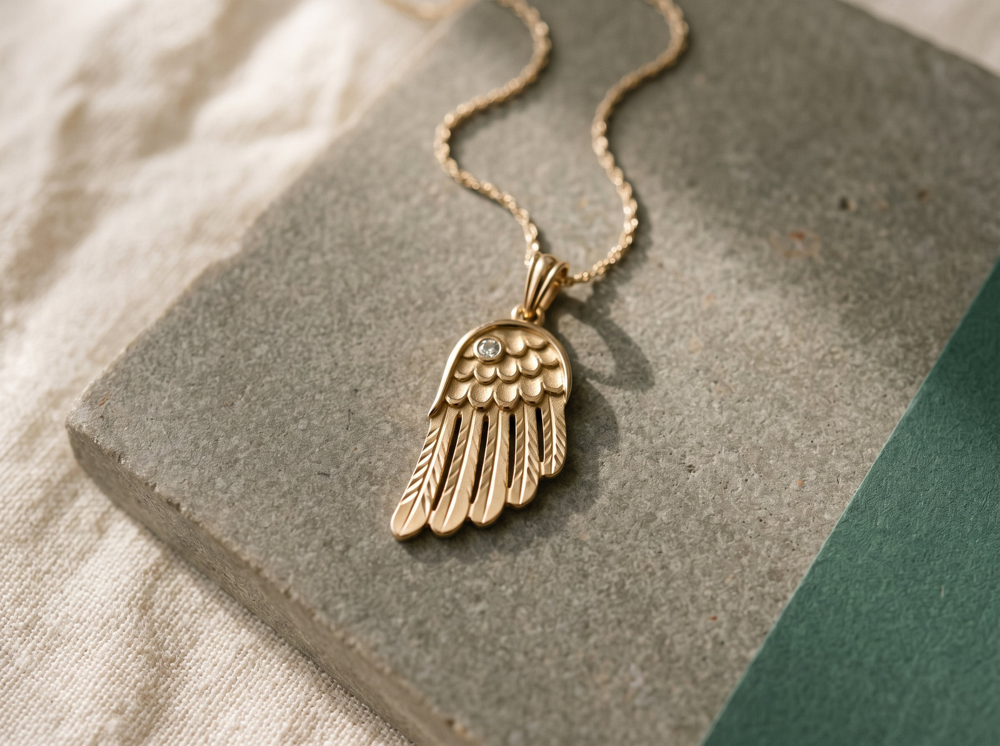
Uçuş tüyleri 5 yerine 6 okunuyor ve uçlar kapalı alt kenarla birleşmek yerine ayrı duruyor. Kare kullanılabilir; açıklama 'beş tüy' diyor, istersen yeniden üret.
Düzeltilmiş prompt (01 hero, referanssız)
Quiet luxury editorial still-life product photography. Warm ivory linen ground, honed grey stone slab, a sliver of deep jade-green matte card. Soft directional window light from upper left, long soft shadow, shallow depth of field. Solid yellow gold with warm antique tone. Restrained heirloom mood. No text, no logo, no glitter, no Christmas decoration. The piece: Single angel wing pendant in 14K yellow gold, 9 mm wide and 14.5 mm tall, 0.9 mm thick, hanging upright from a bail at the top centre of the wing. The upper part is a band of rounded covert feathers with a scalloped lower edge; below it exactly five long flight feathers, 1.3 mm wide, are separated by four narrow pierced slits that stop short of the bottom, so the five rounded tips are joined to each other along one continuous closed lower edge; five feathers, not six. One 1.5 mm lab grown white sapphire is flush-set at the inner upper corner of the wing. Feather faces diamond-cut, edges polished. 1.0 mm 14K diamond-cut rope chain, 16 inch plus 2 inch extender. The stones are exactly these and no others: one 1.5 mm round lab-grown white sapphire flush-set at the inner upper corner of the wing. No other stone and no empty setting anywhere on the piece. The piece has no enamel and no colour: every surface is yellow gold. The pendant lies flat and face up on the honed grey stone slab, the chain running in a soft loose curve up and out of the top edge of the frame. Seen from about 30 degrees above with a 100 mm macro lens, the decorated part in razor-sharp focus, filling about a third of the frame width, with the chain softly out of focus toward the frame edges. No people and no hands.
Etsy metni
Başlık 87/140
14K Gold Angel Wing Necklace, Lab Grown Sapphire, Guardian Angel Pendant, Memorial Gift
Etiketler (13)
14k gold necklace, angel wing, guardian angel, wing necklace, memorial necklace, lab grown sapphire, remembrance gift, sympathy gift, christmas gift, gift for her, rope chain necklace, solid gold pendant, angel jewelry
Malzemeler
14k yellow gold, lab grown white sapphire, 14k gold rope chain, 14k gold lobster clasp
Açıklama
A single angel wing in 14k gold, a row of rounded feathers above five long ones, with one lab-grown sapphire at the shoulder. A guardian-angel gift for Christmas, and a remembrance piece for any day. THE PIECE 9 mm wide and 14.5 mm tall, 0.9 mm thick. Five long feathers are separated by narrow pierced slits and meet along a closed lower edge, so nothing catches. Feather faces are diamond-cut. The bail sits at the top centre of the wing. GOLD WEIGHT 4.14 g of 14k gold, counting the chain, clasp and extender. On the scale the finished piece weighs 4.14 g in total with the stones. STONES One 1.5 mm round lab-grown white sapphire, flush set at the inner upper corner. Mohs 9. LENGTH AND FIT A 1.0 mm 14k diamond-cut rope chain, 16 in with a 2 in extender, so it sits from 16 to 18 in. The chain is part of the design and its weight is counted in the gold weight above. HOW IT IS MADE Made to order. Cast in 14k gold in one piece. The stones are set last, cold, after all firing and polishing. CARE Wipe with a soft dry cloth, or wash in warm water with a drop of mild soap and a soft brush. Take it off for swimming and cleaning. No bleach or chlorine. GIFTING Arrives in a gift box, ready to give. Made to order. The processing time is shown at checkout.
Atölye kartı
Kanat 9.0 x 16.0 x 0.9 (model 1.2: +0.2 bitirme +0.1 elmas tiras). Ortu tuyu bandi 9 x 5 (3 yuvarlak tarak). 5 birincil tuy 1.4 gen, boylar 9.5/9.0/8.5/7.5/6.5, aralarinda 0.6 yarik; yariklar arka kenara 1.5 mm kala biter (kapali kenar, serbest konsol yok). Uc tarak r0.7. Omuz tas pedi D2.4 x 1.5. Kulp 1.0 x 1.6.
Tek parca 14K dokum, lehim yok, mine yok. Yariklar mumdan. Tas en son soguk.
Tezgâh sırası
- 1. CAD: plaka 0.9 bitmis + 0.3 (bitirme + on yuz elmas tiras); yariklar 0.6, uclari r0.3; ped 1.5.
- 2. Recine baski, besleme omuz arkasindan + uzun tuy ucundan yardimci.
- 3. Yatirim, yakma, 14K vakum dokum.
- 4. Tesviye; yarik genisligi 0.6 pin-gauge; plaka 0.9 +/- 0.05.
- 5. Tuy yuzlerine elmas tiras (yarik kenarlari keskin kalir, uc taraklar yuvarlak).
- 6. Tas yuvasi (hart bur), tas oturtma soguk.
- 7. Cila elde (ince plakayi destekleyerek), QC tartim (uc 1.29 g +/- %5).
Malzeme listesi
- Alasim: 14K sari standart dokum alasimi (minesiz parca; Zn serbest), vakum dokum. Bitmis uc 1.290 g x 1.15 = 1.48 g dokum metali.
- Mine tozu: yok.
- Tas: 1 x 1.5 mm lab grown white sapphire = 0.0143 ct.
- Zincir: 14K solid diamond-cut rope 1.0 mm 18in = 2.451 g.
- Bulgular: istakoz 0.25 g (tahmin), 2 atlama halkasi 0.060 g, etiket 0.046 g.
Arıza modları
| Arıza | Tasarım nasıl önlüyor |
|---|---|
| 0.6 yariklarda perde / kapanma | Yarik 0.6 >= L5, derinlik 0.9/0.6 = 1.5 <= 2; uclari r0.3. |
| Serbest tuy uclarinin kumasa takilip egilmesi | Yariklar arka kenara 1.5 mm kala biter; tum tuyler kapali kenarla bagli. |
| Ince plakanin cilada egilmesi | 0.9 plaka (>=0.8), elde destekli cila; tambur yok. |
| Culet arkadan tasar | Omuz pedi 1.5 (KANIT) + alttan delik. |
Tolerans
| Kural | Değer | |
|---|---|---|
| L1 karat 14K (KANIT karat_policy; 14K vitreous 'marginal', not_viable degil) | 14K sari | ✓ |
| L2 mine | yok | ✓ |
| L3 ilk pisirimden sonra hamlac lehimi yok; kulp govdeyle tek dokum | lehim baglantisi 0; kulp entegre dokum; pisirim sonrasi ek yok | ✓ |
| L4 host 1.5 tas -> 1.5 | ped 1.5 | ✓ |
| L4 yanal duvar 0.35 | 0.45 | ✓ |
| L4 alttan delik | D0.9 | ✓ |
| L5 yapisal >=0.8 | plaka 0.9 | ✓ |
| L5 dekoratif >=0.6 | tuy 1.4, kenar bandi 1.5 | ✓ |
| L5 aciklik >=0.6 / derinlik <=2x | 0.6 / 1.5 | ✓ |
| L5 kulp >=1.0 | 1.0 x 1.6 | ✓ |
| L5 uc yaricapi >=0.4 | tarak r0.7 | ✓ |
| L11 pinnate yok | tuyler orta sapsiz duz lob | ✓ |
| L7 kolye bandi 2.8-4.2 g (zincir+bulgu dahil altin) | 4.097 g (uc 1.290 + zincir 2.451 + bulgu 0.356); tavana pay 0.103 g | ✓ |
| L8 zincir 14K solid, tip+genislik yazili, 16in+2in uzatma, varyant degil | 14K solid diamond-cut rope 1.0 mm, 16+2 in | ✓ |
Görsel promptları (16)
- 01Hero / arama küçük resmi: tek ürün, marka natürmortu, 4:3.Referanssız
Quiet luxury editorial still-life product photography. Warm ivory linen ground, honed grey stone slab, a sliver of deep jade-green matte card. Soft directional window light from upper left, long soft shadow, shallow depth of field. Solid yellow gold with warm antique tone. Restrained heirloom mood. No text, no logo, no glitter, no Christmas decoration. The piece: Single angel wing pendant in 14K yellow gold, 9 mm wide and 14.5 mm tall, 0.9 mm thick, hanging upright from a bail at the top centre of the wing. The upper part is a band of rounded covert feathers with a scalloped lower edge; below it five long flight feathers, 1.3 mm wide, are separated by narrow pierced slits and end in five rounded tips joined along a closed lower edge. One 1.5 mm lab grown white sapphire is flush-set at the inner upper corner of the wing. Feather faces diamond-cut, edges polished. 1.0 mm 14K diamond-cut rope chain, 16 inch plus 2 inch extender. The stones are exactly these and no others: one 1.5 mm round lab-grown white sapphire flush-set at the inner upper corner of the wing. No other stone and no empty setting anywhere on the piece. The piece has no enamel and no colour: every surface is yellow gold. The pendant lies flat and face up on the honed grey stone slab, the chain running in a soft loose curve up and out of the top edge of the frame. Seen from about 30 degrees above with a 100 mm macro lens, the decorated part in razor-sharp focus, filling about a third of the frame width, with the chain softly out of focus toward the frame edges. No people and no hands.
Alt metin 14K gold angel wing pendant with a lab grown white sapphire
- 02Takılı hâli: ölçek ve duruş. Hero'dan sonra dönüşümü en çok etkileyen kare.Referans: hero kırpımı
Quiet luxury editorial photography in warm ivory, stone grey and deep jade-green tones, soft directional window light from the upper left, true colour, fine film grain, no heavy retouching. No text, no logo, no watermark, no glitter. The attached reference image is a crop of this exact piece: keep its shape, proportions, gold colour and stones exactly as in the reference. The piece: Single angel wing pendant in 14K yellow gold, 9 mm wide and 14.5 mm tall, 0.9 mm thick, hanging upright from a bail at the top centre of the wing. The upper part is a band of rounded covert feathers with a scalloped lower edge; below it five long flight feathers, 1.3 mm wide, are separated by narrow pierced slits and end in five rounded tips joined along a closed lower edge. One 1.5 mm lab grown white sapphire is flush-set at the inner upper corner of the wing. Feather faces diamond-cut, edges polished. 1.0 mm 14K diamond-cut rope chain, 16 inch plus 2 inch extender. The stones are exactly these and no others: one 1.5 mm round lab-grown white sapphire flush-set at the inner upper corner of the wing. No other stone and no empty setting anywhere on the piece. The piece has no enamel and no colour: every surface is yellow gold. Worn by a woman against bare skin just below the collarbone, above the open neckline of a warm-ivory silk blouse, cropped from chin to mid-chest so no face shows; the pendant hangs centred and faces the camera; it is the only jewellery in the image; true to scale, the main element measures about 14.5 mm across.
Alt metin 14K gold angel wing pendant with a lab grown white sapphire, worn
- 03Makro işçilik: fiyatı meşrulaştıran detay (mine yüzeyi, flush taş, kenar bitimi).Referans: hero kırpımı
Quiet luxury editorial photography in warm ivory, stone grey and deep jade-green tones, soft directional window light from the upper left, true colour, fine film grain, no heavy retouching. No text, no logo, no watermark, no glitter. The attached reference image is a crop of this exact piece: keep its shape, proportions, gold colour and stones exactly as in the reference. The piece: Single angel wing pendant in 14K yellow gold, 9 mm wide and 14.5 mm tall, 0.9 mm thick, hanging upright from a bail at the top centre of the wing. The upper part is a band of rounded covert feathers with a scalloped lower edge; below it five long flight feathers, 1.3 mm wide, are separated by narrow pierced slits and end in five rounded tips joined along a closed lower edge. One 1.5 mm lab grown white sapphire is flush-set at the inner upper corner of the wing. Feather faces diamond-cut, edges polished. 1.0 mm 14K diamond-cut rope chain, 16 inch plus 2 inch extender. The stones are exactly these and no others: one 1.5 mm round lab-grown white sapphire flush-set at the inner upper corner of the wing. No other stone and no empty setting anywhere on the piece. The piece has no enamel and no colour: every surface is yellow gold. Extreme close-up macro, 100 mm macro lens: The upper band of rounded feathers with its scalloped edge and the flush-set lab-grown white sapphire at the inner corner. The rest of the piece falls away into soft focus on warm-ivory linen.
Alt metin Close-up of the feather band and the lab-grown sapphire
- 04Elde ölçek: mm'yi parmak ucuna çevirir, 'beklediğimden küçük' iadesini önler.Referans: hero kırpımı
Quiet luxury editorial photography in warm ivory, stone grey and deep jade-green tones, soft directional window light from the upper left, true colour, fine film grain, no heavy retouching. No text, no logo, no watermark, no glitter. The attached reference image is a crop of this exact piece: keep its shape, proportions, gold colour and stones exactly as in the reference. The piece: Single angel wing pendant in 14K yellow gold, 9 mm wide and 14.5 mm tall, 0.9 mm thick, hanging upright from a bail at the top centre of the wing. The upper part is a band of rounded covert feathers with a scalloped lower edge; below it five long flight feathers, 1.3 mm wide, are separated by narrow pierced slits and end in five rounded tips joined along a closed lower edge. One 1.5 mm lab grown white sapphire is flush-set at the inner upper corner of the wing. Feather faces diamond-cut, edges polished. 1.0 mm 14K diamond-cut rope chain, 16 inch plus 2 inch extender. The stones are exactly these and no others: one 1.5 mm round lab-grown white sapphire flush-set at the inner upper corner of the wing. No other stone and no empty setting anywhere on the piece. The piece has no enamel and no colour: every surface is yellow gold. Close-up for scale against a plain warm-ivory background thrown softly out of focus: the pendant resting on the fingertips of a woman's open hand, face up, the chain running out of the frame; true to scale, the main element measures about 14.5 mm across, a fingertip is about 16 mm wide; it is the only jewellery in the image; anatomically correct hands with five fingers, short natural unpolished nails.
Alt metin 14K gold angel wing pendant with a lab grown white sapphire, held between fingers for scale
- 05Arka ve bulgular: dolu gövde, kilit / çivi / iğne; sağlamlık sorusunu cevaplar.Referans: hero kırpımı
Quiet luxury editorial photography in warm ivory, stone grey and deep jade-green tones, soft directional window light from the upper left, true colour, fine film grain, no heavy retouching. No text, no logo, no watermark, no glitter. The attached reference image is a crop of this exact piece: keep its shape, proportions, gold colour and stones exactly as in the reference. The piece: Single angel wing pendant in 14K yellow gold, 9 mm wide and 14.5 mm tall, 0.9 mm thick, hanging upright from a bail at the top centre of the wing. The upper part is a band of rounded covert feathers with a scalloped lower edge; below it five long flight feathers, 1.3 mm wide, are separated by narrow pierced slits and end in five rounded tips joined along a closed lower edge. One 1.5 mm lab grown white sapphire is flush-set at the inner upper corner of the wing. Feather faces diamond-cut, edges polished. 1.0 mm 14K diamond-cut rope chain, 16 inch plus 2 inch extender. The stones are exactly these and no others: one 1.5 mm round lab-grown white sapphire flush-set at the inner upper corner of the wing. No other stone and no empty setting anywhere on the piece. The piece has no enamel and no colour: every surface is yellow gold. The back of the piece, top-down on honed grey stone: The flat solid back of the wing, the slits between the long feathers and the bail at the top centre.
Alt metin Back of the pendant necklace showing the flat back and the bail
- 06Tam boy / çift / mekanizma: uzunluk, ayar ve ne geldiğini tek karede gösterir.Referans: hero kırpımı
Quiet luxury editorial photography in warm ivory, stone grey and deep jade-green tones, soft directional window light from the upper left, true colour, fine film grain, no heavy retouching. No text, no logo, no watermark, no glitter. The attached reference image is a crop of this exact piece: keep its shape, proportions, gold colour and stones exactly as in the reference. The piece: Single angel wing pendant in 14K yellow gold, 9 mm wide and 14.5 mm tall, 0.9 mm thick, hanging upright from a bail at the top centre of the wing. The upper part is a band of rounded covert feathers with a scalloped lower edge; below it five long flight feathers, 1.3 mm wide, are separated by narrow pierced slits and end in five rounded tips joined along a closed lower edge. One 1.5 mm lab grown white sapphire is flush-set at the inner upper corner of the wing. Feather faces diamond-cut, edges polished. 1.0 mm 14K diamond-cut rope chain, 16 inch plus 2 inch extender. The stones are exactly these and no others: one 1.5 mm round lab-grown white sapphire flush-set at the inner upper corner of the wing. No other stone and no empty setting anywhere on the piece. The piece has no enamel and no colour: every surface is yellow gold. The whole necklace laid out top-down on warm-ivory linen in a straight vertical line, chain doubled into a narrow U, pendant face up at the bottom, lobster clasp and extender chain at the top.
Alt metin 14K gold angel wing pendant with a lab grown white sapphire, full length
- 07Yan profil: kalınlık ve kütle, düz baskı değil gerçek altın olduğunu gösterir.Referans: hero kırpımı
Quiet luxury editorial photography in warm ivory, stone grey and deep jade-green tones, soft directional window light from the upper left, true colour, fine film grain, no heavy retouching. No text, no logo, no watermark, no glitter. The attached reference image is a crop of this exact piece: keep its shape, proportions, gold colour and stones exactly as in the reference. The piece: Single angel wing pendant in 14K yellow gold, 9 mm wide and 14.5 mm tall, 0.9 mm thick, hanging upright from a bail at the top centre of the wing. The upper part is a band of rounded covert feathers with a scalloped lower edge; below it five long flight feathers, 1.3 mm wide, are separated by narrow pierced slits and end in five rounded tips joined along a closed lower edge. One 1.5 mm lab grown white sapphire is flush-set at the inner upper corner of the wing. Feather faces diamond-cut, edges polished. 1.0 mm 14K diamond-cut rope chain, 16 inch plus 2 inch extender. The stones are exactly these and no others: one 1.5 mm round lab-grown white sapphire flush-set at the inner upper corner of the wing. No other stone and no empty setting anywhere on the piece. The piece has no enamel and no colour: every surface is yellow gold. Side profile at eye level on honed grey stone, the camera level with the piece: A flat wing 0.9 mm thick.
Alt metin Side profile of the pendant necklace showing its thickness
- 08Kış yaşam stili: sezonu Noel dekoru olmadan kurar.Referans: hero kırpımı
Quiet luxury editorial photography in warm ivory, stone grey and deep jade-green tones, soft directional window light from the upper left, true colour, fine film grain, no heavy retouching. No text, no logo, no watermark, no glitter. The attached reference image is a crop of this exact piece: keep its shape, proportions, gold colour and stones exactly as in the reference. The piece: Single angel wing pendant in 14K yellow gold, 9 mm wide and 14.5 mm tall, 0.9 mm thick, hanging upright from a bail at the top centre of the wing. The upper part is a band of rounded covert feathers with a scalloped lower edge; below it five long flight feathers, 1.3 mm wide, are separated by narrow pierced slits and end in five rounded tips joined along a closed lower edge. One 1.5 mm lab grown white sapphire is flush-set at the inner upper corner of the wing. Feather faces diamond-cut, edges polished. 1.0 mm 14K diamond-cut rope chain, 16 inch plus 2 inch extender. The stones are exactly these and no others: one 1.5 mm round lab-grown white sapphire flush-set at the inner upper corner of the wing. No other stone and no empty setting anywhere on the piece. The piece has no enamel and no colour: every surface is yellow gold. Winter afternoon light: a woman wearing the necklace over a fine ivory cashmere crew-neck sweater, cropped from chin to chest, a grey wool coat collar at the edge of the frame; it is the only jewellery in the image.
Alt metin 14K gold angel wing pendant with a lab grown white sapphire, styled with winter knitwear
- 09Hediye kutusu: Noel alıcısının ilk sorusu, hediyeye hazır mı?Referans: hero kırpımı
Quiet luxury editorial photography in warm ivory, stone grey and deep jade-green tones, soft directional window light from the upper left, true colour, fine film grain, no heavy retouching. No text, no logo, no watermark, no glitter. The attached reference image is a crop of this exact piece: keep its shape, proportions, gold colour and stones exactly as in the reference. The piece: Single angel wing pendant in 14K yellow gold, 9 mm wide and 14.5 mm tall, 0.9 mm thick, hanging upright from a bail at the top centre of the wing. The upper part is a band of rounded covert feathers with a scalloped lower edge; below it five long flight feathers, 1.3 mm wide, are separated by narrow pierced slits and end in five rounded tips joined along a closed lower edge. One 1.5 mm lab grown white sapphire is flush-set at the inner upper corner of the wing. Feather faces diamond-cut, edges polished. 1.0 mm 14K diamond-cut rope chain, 16 inch plus 2 inch extender. The stones are exactly these and no others: one 1.5 mm round lab-grown white sapphire flush-set at the inner upper corner of the wing. No other stone and no empty setting anywhere on the piece. The piece has no enamel and no colour: every surface is yellow gold. Top-down: the pendant face up, chain coiled inside a small open square gift box in plain warm-ivory card with a soft ivory insert, the lid set beside it, a length of narrow deep jade-green ribbon untied beside the box, on honed grey stone. No branding, no printed pattern, no tissue paper, no Christmas decoration, exactly one box.
Alt metin 14K gold angel wing pendant with a lab grown white sapphire in a gift box
- 10Gerçek renk: nötr gün ışığında altın ve mine rengi; renk kaynaklı iadeyi azaltır.Referans: hero kırpımı
Quiet luxury editorial photography in warm ivory, stone grey and deep jade-green tones, soft directional window light from the upper left, true colour, fine film grain, no heavy retouching. No text, no logo, no watermark, no glitter. The attached reference image is a crop of this exact piece: keep its shape, proportions, gold colour and stones exactly as in the reference. The piece: Single angel wing pendant in 14K yellow gold, 9 mm wide and 14.5 mm tall, 0.9 mm thick, hanging upright from a bail at the top centre of the wing. The upper part is a band of rounded covert feathers with a scalloped lower edge; below it five long flight feathers, 1.3 mm wide, are separated by narrow pierced slits and end in five rounded tips joined along a closed lower edge. One 1.5 mm lab grown white sapphire is flush-set at the inner upper corner of the wing. Feather faces diamond-cut, edges polished. 1.0 mm 14K diamond-cut rope chain, 16 inch plus 2 inch extender. The stones are exactly these and no others: one 1.5 mm round lab-grown white sapphire flush-set at the inner upper corner of the wing. No other stone and no empty setting anywhere on the piece. The piece has no enamel and no colour: every surface is yellow gold. Colour-accurate reference shot: the piece alone, top-down on plain matte white-ivory paper under even neutral north daylight, no shadow drama, no props, the piece centred and filling half the frame.
Alt metin 14K gold angel wing pendant with a lab grown white sapphire in neutral daylight, true colour
- 11Ölçü grafiği tabanı: sağ üçte bir boş; mm etiketleri sonra eklenir.Referans: hero kırpımı
Quiet luxury editorial photography in warm ivory, stone grey and deep jade-green tones, soft directional window light from the upper left, true colour, fine film grain, no heavy retouching. No text, no logo, no watermark, no glitter. The attached reference image is a crop of this exact piece: keep its shape, proportions, gold colour and stones exactly as in the reference. The piece: Single angel wing pendant in 14K yellow gold, 9 mm wide and 14.5 mm tall, 0.9 mm thick, hanging upright from a bail at the top centre of the wing. The upper part is a band of rounded covert feathers with a scalloped lower edge; below it five long flight feathers, 1.3 mm wide, are separated by narrow pierced slits and end in five rounded tips joined along a closed lower edge. One 1.5 mm lab grown white sapphire is flush-set at the inner upper corner of the wing. Feather faces diamond-cut, edges polished. 1.0 mm 14K diamond-cut rope chain, 16 inch plus 2 inch extender. The stones are exactly these and no others: one 1.5 mm round lab-grown white sapphire flush-set at the inner upper corner of the wing. No other stone and no empty setting anywhere on the piece. The piece has no enamel and no colour: every surface is yellow gold. The piece alone, top-down on plain warm-ivory paper, placed in the left two thirds of the frame; the right third is empty paper for dimension labels to be added later; even soft light, no props.
Alt metin 14K gold angel wing pendant with a lab grown white sapphire with space for dimensions
- 12El işçiliği: siparişe üretim hikâyesi, tezgâhta parça.Referans: hero kırpımı
Quiet luxury editorial photography in warm ivory, stone grey and deep jade-green tones, soft directional window light from the upper left, true colour, fine film grain, no heavy retouching. No text, no logo, no watermark, no glitter. The attached reference image is a crop of this exact piece: keep its shape, proportions, gold colour and stones exactly as in the reference. The piece: Single angel wing pendant in 14K yellow gold, 9 mm wide and 14.5 mm tall, 0.9 mm thick, hanging upright from a bail at the top centre of the wing. The upper part is a band of rounded covert feathers with a scalloped lower edge; below it five long flight feathers, 1.3 mm wide, are separated by narrow pierced slits and end in five rounded tips joined along a closed lower edge. One 1.5 mm lab grown white sapphire is flush-set at the inner upper corner of the wing. Feather faces diamond-cut, edges polished. 1.0 mm 14K diamond-cut rope chain, 16 inch plus 2 inch extender. The stones are exactly these and no others: one 1.5 mm round lab-grown white sapphire flush-set at the inner upper corner of the wing. No other stone and no empty setting anywhere on the piece. The piece has no enamel and no colour: every surface is yellow gold. The finished piece lying on a worn wooden jeweller's bench pin beside a steel burnisher, a fine half-round file and a pair of brass tweezers, warm lamp light, shallow depth of field, the piece in sharp focus; no hands.
Alt metin 14K gold angel wing pendant with a lab grown white sapphire on a jeweller's bench
- 13Motifin anlamı: sol üçte bir boş; sembol hikâyesi metni sonra eklenir.Referans: hero kırpımı
Quiet luxury editorial photography in warm ivory, stone grey and deep jade-green tones, soft directional window light from the upper left, true colour, fine film grain, no heavy retouching. No text, no logo, no watermark, no glitter. The attached reference image is a crop of this exact piece: keep its shape, proportions, gold colour and stones exactly as in the reference. The piece: Single angel wing pendant in 14K yellow gold, 9 mm wide and 14.5 mm tall, 0.9 mm thick, hanging upright from a bail at the top centre of the wing. The upper part is a band of rounded covert feathers with a scalloped lower edge; below it five long flight feathers, 1.3 mm wide, are separated by narrow pierced slits and end in five rounded tips joined along a closed lower edge. One 1.5 mm lab grown white sapphire is flush-set at the inner upper corner of the wing. Feather faces diamond-cut, edges polished. 1.0 mm 14K diamond-cut rope chain, 16 inch plus 2 inch extender. The stones are exactly these and no others: one 1.5 mm round lab-grown white sapphire flush-set at the inner upper corner of the wing. No other stone and no empty setting anywhere on the piece. The piece has no enamel and no colour: every surface is yellow gold. The piece alone, top-down on a deep jade-green matte card, placed in the right two thirds of the frame; the left third is empty card for a caption to be added later; soft directional light.
Alt metin 14K gold angel wing pendant with a lab grown white sapphire on a deep green card
- 14Yıl boyu takılır: 'yalnız Noel' itirazını kırar.Referans: hero kırpımı
Quiet luxury editorial photography in warm ivory, stone grey and deep jade-green tones, soft directional window light from the upper left, true colour, fine film grain, no heavy retouching. No text, no logo, no watermark, no glitter. The attached reference image is a crop of this exact piece: keep its shape, proportions, gold colour and stones exactly as in the reference. The piece: Single angel wing pendant in 14K yellow gold, 9 mm wide and 14.5 mm tall, 0.9 mm thick, hanging upright from a bail at the top centre of the wing. The upper part is a band of rounded covert feathers with a scalloped lower edge; below it five long flight feathers, 1.3 mm wide, are separated by narrow pierced slits and end in five rounded tips joined along a closed lower edge. One 1.5 mm lab grown white sapphire is flush-set at the inner upper corner of the wing. Feather faces diamond-cut, edges polished. 1.0 mm 14K diamond-cut rope chain, 16 inch plus 2 inch extender. The stones are exactly these and no others: one 1.5 mm round lab-grown white sapphire flush-set at the inner upper corner of the wing. No other stone and no empty setting anywhere on the piece. The piece has no enamel and no colour: every surface is yellow gold. Everyday wear, no season: a woman wearing the necklace with a plain white cotton shirt open at the collar, soft daylight, cropped from chin to chest; the only jewellery in the image.
Alt metin 14K gold angel wing pendant with a lab grown white sapphire, everyday wear
- 15Hediye anı: duygu; Noel satın alma niyetine bağlar.Referans: hero kırpımı
Quiet luxury editorial photography in warm ivory, stone grey and deep jade-green tones, soft directional window light from the upper left, true colour, fine film grain, no heavy retouching. No text, no logo, no watermark, no glitter. The attached reference image is a crop of this exact piece: keep its shape, proportions, gold colour and stones exactly as in the reference. The piece: Single angel wing pendant in 14K yellow gold, 9 mm wide and 14.5 mm tall, 0.9 mm thick, hanging upright from a bail at the top centre of the wing. The upper part is a band of rounded covert feathers with a scalloped lower edge; below it five long flight feathers, 1.3 mm wide, are separated by narrow pierced slits and end in five rounded tips joined along a closed lower edge. One 1.5 mm lab grown white sapphire is flush-set at the inner upper corner of the wing. Feather faces diamond-cut, edges polished. 1.0 mm 14K diamond-cut rope chain, 16 inch plus 2 inch extender. The stones are exactly these and no others: one 1.5 mm round lab-grown white sapphire flush-set at the inner upper corner of the wing. No other stone and no empty setting anywhere on the piece. The piece has no enamel and no colour: every surface is yellow gold. A gift being given: two pairs of hands across a pale oak table, one pair holding out the small open warm-ivory gift box with the piece visible inside, the other reaching for it, soft warm window light, sleeves of ivory and grey knitwear; exactly one box and one piece of jewellery; anatomically correct hands with five fingers, short natural unpolished nails.
Alt metin 14K gold angel wing pendant with a lab grown white sapphire given as a gift
- 16Mağaza ızgarası / Pinterest: koyu jade zeminde yüksek kontrast kare.Referans: hero kırpımı
Quiet luxury editorial photography in warm ivory, stone grey and deep jade-green tones, soft directional window light from the upper left, true colour, fine film grain, no heavy retouching. No text, no logo, no watermark, no glitter. The attached reference image is a crop of this exact piece: keep its shape, proportions, gold colour and stones exactly as in the reference. The piece: Single angel wing pendant in 14K yellow gold, 9 mm wide and 14.5 mm tall, 0.9 mm thick, hanging upright from a bail at the top centre of the wing. The upper part is a band of rounded covert feathers with a scalloped lower edge; below it five long flight feathers, 1.3 mm wide, are separated by narrow pierced slits and end in five rounded tips joined along a closed lower edge. One 1.5 mm lab grown white sapphire is flush-set at the inner upper corner of the wing. Feather faces diamond-cut, edges polished. 1.0 mm 14K diamond-cut rope chain, 16 inch plus 2 inch extender. The stones are exactly these and no others: one 1.5 mm round lab-grown white sapphire flush-set at the inner upper corner of the wing. No other stone and no empty setting anywhere on the piece. The piece has no enamel and no colour: every surface is yellow gold. Top-down flat lay of the piece centred on a deep jade-green matte card with a narrow border of warm-ivory linen at the top edge, crisp soft light, the piece filling about 40 percent of the frame so a square crop keeps all of it.
Alt metin 14K gold angel wing pendant with a lab grown white sapphire, flat lay on deep green
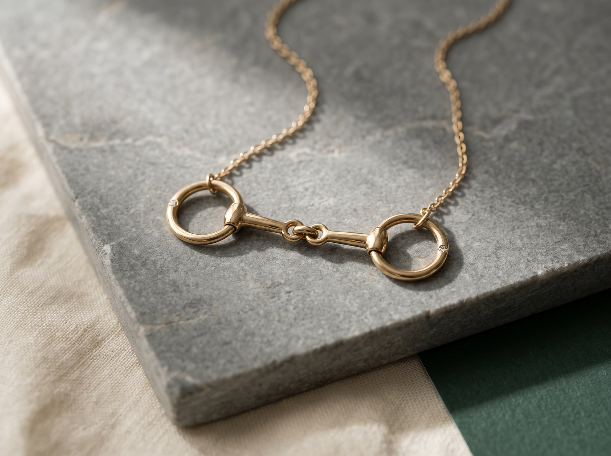
Etsy metni
Başlık 88/140
14K Gold Snaffle Bit Necklace, Lab Grown Sapphires, Equestrian Jewelry, Horse Lover Gift
Etiketler (13)
14k gold necklace, snaffle bit, equestrian jewelry, horse lover gift, lab grown sapphire, riding jewelry, equestrian gift, derby jewelry, christmas gift, gift for her, cable chain necklace, solid gold necklace, link necklace
Malzemeler
14k yellow gold, lab grown white sapphire, 14k gold cable chain, 14k gold lobster clasp
Açıklama
A snaffle bit in 14k gold: two round rings joined by a jointed mouthpiece, worn across the front of the chain, with a lab-grown sapphire on each ring. An equestrian gift for Christmas and the riding season. THE PIECE About 33 mm wide. Two 9.0 mm rings in 1.3 mm round wire are joined by a short jointed mouthpiece whose inner eyes interlock at the centre. The chain runs through both rings, so there is no bail. GOLD WEIGHT 3.70 g of 14k gold, counting the chain, clasp and extender. On the scale the finished piece weighs 3.71 g in total with the stones. STONES Two 1.5 mm round lab-grown white sapphires, one flush set on the front of each ring. Mohs 9. LENGTH AND FIT A 1.0 mm 14k cable chain, 16 in with a 2 in extender, so it sits from 16 to 18 in. The chain is part of the design and its weight is counted in the gold weight above. HOW IT IS MADE Made to order. Cast in 14k gold in one piece. The stones are set last, cold, after all firing and polishing. CARE Wipe with a soft dry cloth, or wash in warm water with a drop of mild soap and a soft brush. Take it off for swimming and cleaning. No bleach or chlorine. GIFTING Arrives in a gift box, ready to give. Made to order. The processing time is shown at checkout.
Atölye kartı
Yanak halkasi dis D9.0, tel D1.3 (ic D6.4). Agizlik yarisi 6.5 mm (goz merkezleri arasi), D1.3->1.0. Orta gozler R1.45 tel D1.1 (ic D1.8; gecen tel 1.1 -> bosluk 0.7). Dis gozler R1.6 tel D1.1 (ic D2.1; halka teli 1.3 -> bosluk 0.8). Toplam genislik ~33 mm, yukseklik 9 mm. Tas pedleri halka 12 yonu on yuz D2.4 x 1.5. Kaynaklar 6 yonu (alt).
Montajli 4 dokum (2 halka acik dokulur, 1 agizlik yarisi kapali orta gozlu, 1 yarisi ACIK orta gozlu; dis gozler kapali). Sira: dis gozlere halkalar gecirilir, A yarisinin kapali orta gozune B'nin acik gozu takilir ve lazerle kapatilir (kaynak goz ucunda, egilme yukunde degil); iki halka 6 yonunde lazerle kapatilir. Toplam 3 lazer kaynagi, lehim yok (mine yok; L3 hamlac yasagi uygulanmasa da lazer: tavlanma ve gorunur dikis yok). Pedler dokunulmamis halka kesitinde, kaynaklardan 180 derece uzakta.
Tezgâh sırası
- 1. CAD: 4 parca, bitmis + 0.2; acik halka ve acik goz uclarinda 0.3 mm kaynak hazirlik pahi; bosluklar 0.7/0.8.
- 2. Recine baski, 14K vakum dokum (4 parca ayni agac).
- 3. Her parca acikken ayri tesviye ve on cila (eklem yuzeyleri dahil); agizliklara elmas tiras.
- 4. Montaj 1: A yarisinin kapali gozune B'nin acik gozu takilir, uclar kapatilir, LAZER kaynak (dusuk guc, 2 atis her yuz), dressing, 10x lup.
- 5. Montaj 2: dis gozlere acik halkalar gecirilir, halka uclari 6 yonunde kapatilir, LAZER kaynak, kaynak dikisi elle tesviye.
- 6. Eklem serbestligi testi (baglanma yok), kaynak cekme testi (elde 2 kg).
- 7. Tas yuvalari (12 yonu, kaynaklardan uzak), soguk oturtma.
- 8. Son cila (kaplama/rodaj yok), zincir halkalardan gecirilir; QC tartim (bit 1.56 g +/- %5).
Malzeme listesi
- Alasim: 14K sari standart dokum alasimi (minesiz parca; Zn serbest), vakum dokum. Bitmis bit 1.556 g x 1.15 = 1.79 g dokum metali.
- Mine tozu: yok.
- Taslar: 2 x 1.5 mm lab grown white sapphire = 0.0285 ct.
- Zincir: 14K solid cable 1.0 mm 18in = 1.902 g.
- Bulgular: istakoz 0.25 g (tahmin), 2 atlama halkasi 0.060 g, etiket 0.046 g. Lazer kaynak teli gerekmez (ana metal eritme).
Arıza modları
| Arıza | Tasarım nasıl önlüyor |
|---|---|
| Orta eklem kaynaginin calisma sirasinda catlamasi | Kaynak acik gozun ucunda, temas/egilme bolgesinin disinda; dressing sonrasi lup ve cekme testi. |
| Tas pedinin kaynak uzerinde catlamasi (orijinal tasarim) | Kaynaklar 6 yonunde, pedler 12 yonunde dokunulmamis kesitte. |
| Eklemin cila artigi ile sikismasi | Bosluk 0.7 / 0.8 (orijinal 0.4), parcalar montaj oncesi cilalanir, kaplama yok. |
| Zincirin halka icinde asinmasi | 14K halka teli 1.3, ic yuzey cilali; bit hafif (1.56 g). |
Tolerans
| Kural | Değer | |
|---|---|---|
| L1 karat 14K (KANIT karat_policy; 14K vitreous 'marginal', not_viable degil) | 14K sari | ✓ |
| L2 mine | yok (eklemli/montajli parcada mine yasak, L2) | ✓ |
| L3 lehim yok; pisirim sonrasi ek yalniz lazer | 3 lazer kaynak, lehim yok, firin yok | ✓ |
| L4 host 1.5 tas -> 1.5 | ped 1.5 | ✓ |
| L4 yanal 0.35 | 0.45 | ✓ |
| L4 esneyen parcada tas yok | taslar rijit halkalarda, eklemde degil | ✓ |
| L5 tasiyici halka kesiti >=1.0 | yanak halkasi D1.3, gozler D1.1 | ✓ |
| L5 yapisal >=0.8 | agizlik min D1.0 | ✓ |
| L5 aciklik/bosluk >=0.6 | 0.7 / 0.8 | ✓ |
| L5 uc yaricapi >=0.4 | acik uc yok (kapali halkalar) | ✓ |
| L7 kolye bandi 2.8-4.2 g (zincir+bulgu dahil altin) | 3.814 g (uc 1.556 + zincir 1.902 + bulgu 0.356); tavana pay 0.386 g | ✓ |
| L8 zincir 14K solid, tip+genislik yazili, 16in+2in uzatma, varyant degil | 14K solid cable 1.0 mm, 16+2 in | ✓ |
Görsel promptları (16)
- 01Hero / arama küçük resmi: tek ürün, marka natürmortu, 4:3.Referanssız
Quiet luxury editorial still-life product photography. Warm ivory linen ground, honed grey stone slab, a sliver of deep jade-green matte card. Soft directional window light from upper left, long soft shadow, shallow depth of field. Solid yellow gold with warm antique tone. Restrained heirloom mood. No text, no logo, no glitter, no Christmas decoration. The piece: Snaffle bit necklace in 14K yellow gold. Two round rings, 9.0 mm across in 1.3 mm round wire, are joined by a jointed mouthpiece: from each ring a small round eye leads through a short 2.4 mm bar to a second small eye, and the two inner eyes interlock at the centre; overall width about 33 mm. The chain passes through both rings, so the bit sits across the front of the chain with no bail. Each ring has one 1.5 mm lab grown white sapphire flush-set on its front face near the top. High-polish rings and eyes. 1.0 mm 14K cable chain, 16 inch plus 2 inch extender. The stones are exactly these and no others: two 1.5 mm round lab-grown white sapphires, one flush-set on the front face of each ring near the top. No other stone and no empty setting anywhere on the piece. The piece has no enamel and no colour: every surface is yellow gold. The pendant lies flat and face up on the honed grey stone slab, the chain running in a soft loose curve up and out of the top edge of the frame. Seen from about 30 degrees above with a 100 mm macro lens, the decorated part in razor-sharp focus, filling about a third of the frame width, with the chain softly out of focus toward the frame edges. No people and no hands.
Alt metin 14K gold snaffle bit necklace with two lab grown white sapphires
- 02Takılı hâli: ölçek ve duruş. Hero'dan sonra dönüşümü en çok etkileyen kare.Referans: hero kırpımı
Quiet luxury editorial photography in warm ivory, stone grey and deep jade-green tones, soft directional window light from the upper left, true colour, fine film grain, no heavy retouching. No text, no logo, no watermark, no glitter. The attached reference image is a crop of this exact piece: keep its shape, proportions, gold colour and stones exactly as in the reference. The piece: Snaffle bit necklace in 14K yellow gold. Two round rings, 9.0 mm across in 1.3 mm round wire, are joined by a jointed mouthpiece: from each ring a small round eye leads through a short 2.4 mm bar to a second small eye, and the two inner eyes interlock at the centre; overall width about 33 mm. The chain passes through both rings, so the bit sits across the front of the chain with no bail. Each ring has one 1.5 mm lab grown white sapphire flush-set on its front face near the top. High-polish rings and eyes. 1.0 mm 14K cable chain, 16 inch plus 2 inch extender. The stones are exactly these and no others: two 1.5 mm round lab-grown white sapphires, one flush-set on the front face of each ring near the top. No other stone and no empty setting anywhere on the piece. The piece has no enamel and no colour: every surface is yellow gold. Worn by a woman against bare skin just below the collarbone, above the open neckline of a warm-ivory silk blouse, cropped from chin to mid-chest so no face shows; the pendant hangs centred and faces the camera; it is the only jewellery in the image; true to scale, the main element measures about 33 mm across.
Alt metin 14K gold snaffle bit necklace with two lab grown white sapphires, worn
- 03Makro işçilik: fiyatı meşrulaştıran detay (mine yüzeyi, flush taş, kenar bitimi).Referans: hero kırpımı
Quiet luxury editorial photography in warm ivory, stone grey and deep jade-green tones, soft directional window light from the upper left, true colour, fine film grain, no heavy retouching. No text, no logo, no watermark, no glitter. The attached reference image is a crop of this exact piece: keep its shape, proportions, gold colour and stones exactly as in the reference. The piece: Snaffle bit necklace in 14K yellow gold. Two round rings, 9.0 mm across in 1.3 mm round wire, are joined by a jointed mouthpiece: from each ring a small round eye leads through a short 2.4 mm bar to a second small eye, and the two inner eyes interlock at the centre; overall width about 33 mm. The chain passes through both rings, so the bit sits across the front of the chain with no bail. Each ring has one 1.5 mm lab grown white sapphire flush-set on its front face near the top. High-polish rings and eyes. 1.0 mm 14K cable chain, 16 inch plus 2 inch extender. The stones are exactly these and no others: two 1.5 mm round lab-grown white sapphires, one flush-set on the front face of each ring near the top. No other stone and no empty setting anywhere on the piece. The piece has no enamel and no colour: every surface is yellow gold. Extreme close-up macro, 100 mm macro lens: One gold ring of the snaffle bit with its flush-set lab-grown white sapphire and the interlocking eyes of the jointed mouthpiece. The rest of the piece falls away into soft focus on warm-ivory linen.
Alt metin Close-up of a ring of the snaffle bit and its lab-grown sapphire
- 04Elde ölçek: mm'yi parmak ucuna çevirir, 'beklediğimden küçük' iadesini önler.Referans: hero kırpımı
Quiet luxury editorial photography in warm ivory, stone grey and deep jade-green tones, soft directional window light from the upper left, true colour, fine film grain, no heavy retouching. No text, no logo, no watermark, no glitter. The attached reference image is a crop of this exact piece: keep its shape, proportions, gold colour and stones exactly as in the reference. The piece: Snaffle bit necklace in 14K yellow gold. Two round rings, 9.0 mm across in 1.3 mm round wire, are joined by a jointed mouthpiece: from each ring a small round eye leads through a short 2.4 mm bar to a second small eye, and the two inner eyes interlock at the centre; overall width about 33 mm. The chain passes through both rings, so the bit sits across the front of the chain with no bail. Each ring has one 1.5 mm lab grown white sapphire flush-set on its front face near the top. High-polish rings and eyes. 1.0 mm 14K cable chain, 16 inch plus 2 inch extender. The stones are exactly these and no others: two 1.5 mm round lab-grown white sapphires, one flush-set on the front face of each ring near the top. No other stone and no empty setting anywhere on the piece. The piece has no enamel and no colour: every surface is yellow gold. Close-up for scale against a plain warm-ivory background thrown softly out of focus: the pendant resting on the fingertips of a woman's open hand, face up, the chain running out of the frame; true to scale, the main element measures about 33 mm across, a fingertip is about 16 mm wide; it is the only jewellery in the image; anatomically correct hands with five fingers, short natural unpolished nails.
Alt metin 14K gold snaffle bit necklace with two lab grown white sapphires, held between fingers for scale
- 05Arka ve bulgular: dolu gövde, kilit / çivi / iğne; sağlamlık sorusunu cevaplar.Referans: hero kırpımı
Quiet luxury editorial photography in warm ivory, stone grey and deep jade-green tones, soft directional window light from the upper left, true colour, fine film grain, no heavy retouching. No text, no logo, no watermark, no glitter. The attached reference image is a crop of this exact piece: keep its shape, proportions, gold colour and stones exactly as in the reference. The piece: Snaffle bit necklace in 14K yellow gold. Two round rings, 9.0 mm across in 1.3 mm round wire, are joined by a jointed mouthpiece: from each ring a small round eye leads through a short 2.4 mm bar to a second small eye, and the two inner eyes interlock at the centre; overall width about 33 mm. The chain passes through both rings, so the bit sits across the front of the chain with no bail. Each ring has one 1.5 mm lab grown white sapphire flush-set on its front face near the top. High-polish rings and eyes. 1.0 mm 14K cable chain, 16 inch plus 2 inch extender. The stones are exactly these and no others: two 1.5 mm round lab-grown white sapphires, one flush-set on the front face of each ring near the top. No other stone and no empty setting anywhere on the piece. The piece has no enamel and no colour: every surface is yellow gold. The back of the piece, top-down on honed grey stone: The plain round backs of the two rings and the jointed mouthpiece, with a small hole behind each stone.
Alt metin Back of the necklace showing the plain backs of the rings
- 06Tam boy / çift / mekanizma: uzunluk, ayar ve ne geldiğini tek karede gösterir.Referans: hero kırpımı
Quiet luxury editorial photography in warm ivory, stone grey and deep jade-green tones, soft directional window light from the upper left, true colour, fine film grain, no heavy retouching. No text, no logo, no watermark, no glitter. The attached reference image is a crop of this exact piece: keep its shape, proportions, gold colour and stones exactly as in the reference. The piece: Snaffle bit necklace in 14K yellow gold. Two round rings, 9.0 mm across in 1.3 mm round wire, are joined by a jointed mouthpiece: from each ring a small round eye leads through a short 2.4 mm bar to a second small eye, and the two inner eyes interlock at the centre; overall width about 33 mm. The chain passes through both rings, so the bit sits across the front of the chain with no bail. Each ring has one 1.5 mm lab grown white sapphire flush-set on its front face near the top. High-polish rings and eyes. 1.0 mm 14K cable chain, 16 inch plus 2 inch extender. The stones are exactly these and no others: two 1.5 mm round lab-grown white sapphires, one flush-set on the front face of each ring near the top. No other stone and no empty setting anywhere on the piece. The piece has no enamel and no colour: every surface is yellow gold. The whole necklace laid out top-down on warm-ivory linen in a straight vertical line, chain doubled into a narrow U, pendant face up at the bottom, lobster clasp and extender chain at the top.
Alt metin 14K gold snaffle bit necklace with two lab grown white sapphires, full length
- 07Yan profil: kalınlık ve kütle, düz baskı değil gerçek altın olduğunu gösterir.Referans: hero kırpımı
Quiet luxury editorial photography in warm ivory, stone grey and deep jade-green tones, soft directional window light from the upper left, true colour, fine film grain, no heavy retouching. No text, no logo, no watermark, no glitter. The attached reference image is a crop of this exact piece: keep its shape, proportions, gold colour and stones exactly as in the reference. The piece: Snaffle bit necklace in 14K yellow gold. Two round rings, 9.0 mm across in 1.3 mm round wire, are joined by a jointed mouthpiece: from each ring a small round eye leads through a short 2.4 mm bar to a second small eye, and the two inner eyes interlock at the centre; overall width about 33 mm. The chain passes through both rings, so the bit sits across the front of the chain with no bail. Each ring has one 1.5 mm lab grown white sapphire flush-set on its front face near the top. High-polish rings and eyes. 1.0 mm 14K cable chain, 16 inch plus 2 inch extender. The stones are exactly these and no others: two 1.5 mm round lab-grown white sapphires, one flush-set on the front face of each ring near the top. No other stone and no empty setting anywhere on the piece. The piece has no enamel and no colour: every surface is yellow gold. Side profile at eye level on honed grey stone, the camera level with the piece: Round rings of 1.3 mm wire and a short jointed mouthpiece of 1.1 mm eyes.
Alt metin Side profile of the necklace showing its thickness
- 08Kış yaşam stili: sezonu Noel dekoru olmadan kurar.Referans: hero kırpımı
Quiet luxury editorial photography in warm ivory, stone grey and deep jade-green tones, soft directional window light from the upper left, true colour, fine film grain, no heavy retouching. No text, no logo, no watermark, no glitter. The attached reference image is a crop of this exact piece: keep its shape, proportions, gold colour and stones exactly as in the reference. The piece: Snaffle bit necklace in 14K yellow gold. Two round rings, 9.0 mm across in 1.3 mm round wire, are joined by a jointed mouthpiece: from each ring a small round eye leads through a short 2.4 mm bar to a second small eye, and the two inner eyes interlock at the centre; overall width about 33 mm. The chain passes through both rings, so the bit sits across the front of the chain with no bail. Each ring has one 1.5 mm lab grown white sapphire flush-set on its front face near the top. High-polish rings and eyes. 1.0 mm 14K cable chain, 16 inch plus 2 inch extender. The stones are exactly these and no others: two 1.5 mm round lab-grown white sapphires, one flush-set on the front face of each ring near the top. No other stone and no empty setting anywhere on the piece. The piece has no enamel and no colour: every surface is yellow gold. Winter afternoon light: a woman wearing the necklace over a fine ivory cashmere crew-neck sweater, cropped from chin to chest, a grey wool coat collar at the edge of the frame; it is the only jewellery in the image.
Alt metin 14K gold snaffle bit necklace with two lab grown white sapphires, styled with winter knitwear
- 09Hediye kutusu: Noel alıcısının ilk sorusu, hediyeye hazır mı?Referans: hero kırpımı
Quiet luxury editorial photography in warm ivory, stone grey and deep jade-green tones, soft directional window light from the upper left, true colour, fine film grain, no heavy retouching. No text, no logo, no watermark, no glitter. The attached reference image is a crop of this exact piece: keep its shape, proportions, gold colour and stones exactly as in the reference. The piece: Snaffle bit necklace in 14K yellow gold. Two round rings, 9.0 mm across in 1.3 mm round wire, are joined by a jointed mouthpiece: from each ring a small round eye leads through a short 2.4 mm bar to a second small eye, and the two inner eyes interlock at the centre; overall width about 33 mm. The chain passes through both rings, so the bit sits across the front of the chain with no bail. Each ring has one 1.5 mm lab grown white sapphire flush-set on its front face near the top. High-polish rings and eyes. 1.0 mm 14K cable chain, 16 inch plus 2 inch extender. The stones are exactly these and no others: two 1.5 mm round lab-grown white sapphires, one flush-set on the front face of each ring near the top. No other stone and no empty setting anywhere on the piece. The piece has no enamel and no colour: every surface is yellow gold. Top-down: the pendant face up, chain coiled inside a small open square gift box in plain warm-ivory card with a soft ivory insert, the lid set beside it, a length of narrow deep jade-green ribbon untied beside the box, on honed grey stone. No branding, no printed pattern, no tissue paper, no Christmas decoration, exactly one box.
Alt metin 14K gold snaffle bit necklace with two lab grown white sapphires in a gift box
- 10Gerçek renk: nötr gün ışığında altın ve mine rengi; renk kaynaklı iadeyi azaltır.Referans: hero kırpımı
Quiet luxury editorial photography in warm ivory, stone grey and deep jade-green tones, soft directional window light from the upper left, true colour, fine film grain, no heavy retouching. No text, no logo, no watermark, no glitter. The attached reference image is a crop of this exact piece: keep its shape, proportions, gold colour and stones exactly as in the reference. The piece: Snaffle bit necklace in 14K yellow gold. Two round rings, 9.0 mm across in 1.3 mm round wire, are joined by a jointed mouthpiece: from each ring a small round eye leads through a short 2.4 mm bar to a second small eye, and the two inner eyes interlock at the centre; overall width about 33 mm. The chain passes through both rings, so the bit sits across the front of the chain with no bail. Each ring has one 1.5 mm lab grown white sapphire flush-set on its front face near the top. High-polish rings and eyes. 1.0 mm 14K cable chain, 16 inch plus 2 inch extender. The stones are exactly these and no others: two 1.5 mm round lab-grown white sapphires, one flush-set on the front face of each ring near the top. No other stone and no empty setting anywhere on the piece. The piece has no enamel and no colour: every surface is yellow gold. Colour-accurate reference shot: the piece alone, top-down on plain matte white-ivory paper under even neutral north daylight, no shadow drama, no props, the piece centred and filling half the frame.
Alt metin 14K gold snaffle bit necklace with two lab grown white sapphires in neutral daylight, true colour
- 11Ölçü grafiği tabanı: sağ üçte bir boş; mm etiketleri sonra eklenir.Referans: hero kırpımı
Quiet luxury editorial photography in warm ivory, stone grey and deep jade-green tones, soft directional window light from the upper left, true colour, fine film grain, no heavy retouching. No text, no logo, no watermark, no glitter. The attached reference image is a crop of this exact piece: keep its shape, proportions, gold colour and stones exactly as in the reference. The piece: Snaffle bit necklace in 14K yellow gold. Two round rings, 9.0 mm across in 1.3 mm round wire, are joined by a jointed mouthpiece: from each ring a small round eye leads through a short 2.4 mm bar to a second small eye, and the two inner eyes interlock at the centre; overall width about 33 mm. The chain passes through both rings, so the bit sits across the front of the chain with no bail. Each ring has one 1.5 mm lab grown white sapphire flush-set on its front face near the top. High-polish rings and eyes. 1.0 mm 14K cable chain, 16 inch plus 2 inch extender. The stones are exactly these and no others: two 1.5 mm round lab-grown white sapphires, one flush-set on the front face of each ring near the top. No other stone and no empty setting anywhere on the piece. The piece has no enamel and no colour: every surface is yellow gold. The piece alone, top-down on plain warm-ivory paper, placed in the left two thirds of the frame; the right third is empty paper for dimension labels to be added later; even soft light, no props.
Alt metin 14K gold snaffle bit necklace with two lab grown white sapphires with space for dimensions
- 12El işçiliği: siparişe üretim hikâyesi, tezgâhta parça.Referans: hero kırpımı
Quiet luxury editorial photography in warm ivory, stone grey and deep jade-green tones, soft directional window light from the upper left, true colour, fine film grain, no heavy retouching. No text, no logo, no watermark, no glitter. The attached reference image is a crop of this exact piece: keep its shape, proportions, gold colour and stones exactly as in the reference. The piece: Snaffle bit necklace in 14K yellow gold. Two round rings, 9.0 mm across in 1.3 mm round wire, are joined by a jointed mouthpiece: from each ring a small round eye leads through a short 2.4 mm bar to a second small eye, and the two inner eyes interlock at the centre; overall width about 33 mm. The chain passes through both rings, so the bit sits across the front of the chain with no bail. Each ring has one 1.5 mm lab grown white sapphire flush-set on its front face near the top. High-polish rings and eyes. 1.0 mm 14K cable chain, 16 inch plus 2 inch extender. The stones are exactly these and no others: two 1.5 mm round lab-grown white sapphires, one flush-set on the front face of each ring near the top. No other stone and no empty setting anywhere on the piece. The piece has no enamel and no colour: every surface is yellow gold. The finished piece lying on a worn wooden jeweller's bench pin beside a steel burnisher, a fine half-round file and a pair of brass tweezers, warm lamp light, shallow depth of field, the piece in sharp focus; no hands.
Alt metin 14K gold snaffle bit necklace with two lab grown white sapphires on a jeweller's bench
- 13Motifin anlamı: sol üçte bir boş; sembol hikâyesi metni sonra eklenir.Referans: hero kırpımı
Quiet luxury editorial photography in warm ivory, stone grey and deep jade-green tones, soft directional window light from the upper left, true colour, fine film grain, no heavy retouching. No text, no logo, no watermark, no glitter. The attached reference image is a crop of this exact piece: keep its shape, proportions, gold colour and stones exactly as in the reference. The piece: Snaffle bit necklace in 14K yellow gold. Two round rings, 9.0 mm across in 1.3 mm round wire, are joined by a jointed mouthpiece: from each ring a small round eye leads through a short 2.4 mm bar to a second small eye, and the two inner eyes interlock at the centre; overall width about 33 mm. The chain passes through both rings, so the bit sits across the front of the chain with no bail. Each ring has one 1.5 mm lab grown white sapphire flush-set on its front face near the top. High-polish rings and eyes. 1.0 mm 14K cable chain, 16 inch plus 2 inch extender. The stones are exactly these and no others: two 1.5 mm round lab-grown white sapphires, one flush-set on the front face of each ring near the top. No other stone and no empty setting anywhere on the piece. The piece has no enamel and no colour: every surface is yellow gold. The piece alone, top-down on a deep jade-green matte card, placed in the right two thirds of the frame; the left third is empty card for a caption to be added later; soft directional light.
Alt metin 14K gold snaffle bit necklace with two lab grown white sapphires on a deep green card
- 14Yıl boyu takılır: 'yalnız Noel' itirazını kırar.Referans: hero kırpımı
Quiet luxury editorial photography in warm ivory, stone grey and deep jade-green tones, soft directional window light from the upper left, true colour, fine film grain, no heavy retouching. No text, no logo, no watermark, no glitter. The attached reference image is a crop of this exact piece: keep its shape, proportions, gold colour and stones exactly as in the reference. The piece: Snaffle bit necklace in 14K yellow gold. Two round rings, 9.0 mm across in 1.3 mm round wire, are joined by a jointed mouthpiece: from each ring a small round eye leads through a short 2.4 mm bar to a second small eye, and the two inner eyes interlock at the centre; overall width about 33 mm. The chain passes through both rings, so the bit sits across the front of the chain with no bail. Each ring has one 1.5 mm lab grown white sapphire flush-set on its front face near the top. High-polish rings and eyes. 1.0 mm 14K cable chain, 16 inch plus 2 inch extender. The stones are exactly these and no others: two 1.5 mm round lab-grown white sapphires, one flush-set on the front face of each ring near the top. No other stone and no empty setting anywhere on the piece. The piece has no enamel and no colour: every surface is yellow gold. Everyday wear, no season: a woman wearing the necklace with a plain white cotton shirt open at the collar, soft daylight, cropped from chin to chest; the only jewellery in the image.
Alt metin 14K gold snaffle bit necklace with two lab grown white sapphires, everyday wear
- 15Hediye anı: duygu; Noel satın alma niyetine bağlar.Referans: hero kırpımı
Quiet luxury editorial photography in warm ivory, stone grey and deep jade-green tones, soft directional window light from the upper left, true colour, fine film grain, no heavy retouching. No text, no logo, no watermark, no glitter. The attached reference image is a crop of this exact piece: keep its shape, proportions, gold colour and stones exactly as in the reference. The piece: Snaffle bit necklace in 14K yellow gold. Two round rings, 9.0 mm across in 1.3 mm round wire, are joined by a jointed mouthpiece: from each ring a small round eye leads through a short 2.4 mm bar to a second small eye, and the two inner eyes interlock at the centre; overall width about 33 mm. The chain passes through both rings, so the bit sits across the front of the chain with no bail. Each ring has one 1.5 mm lab grown white sapphire flush-set on its front face near the top. High-polish rings and eyes. 1.0 mm 14K cable chain, 16 inch plus 2 inch extender. The stones are exactly these and no others: two 1.5 mm round lab-grown white sapphires, one flush-set on the front face of each ring near the top. No other stone and no empty setting anywhere on the piece. The piece has no enamel and no colour: every surface is yellow gold. A gift being given: two pairs of hands across a pale oak table, one pair holding out the small open warm-ivory gift box with the piece visible inside, the other reaching for it, soft warm window light, sleeves of ivory and grey knitwear; exactly one box and one piece of jewellery; anatomically correct hands with five fingers, short natural unpolished nails.
Alt metin 14K gold snaffle bit necklace with two lab grown white sapphires given as a gift
- 16Mağaza ızgarası / Pinterest: koyu jade zeminde yüksek kontrast kare.Referans: hero kırpımı
Quiet luxury editorial photography in warm ivory, stone grey and deep jade-green tones, soft directional window light from the upper left, true colour, fine film grain, no heavy retouching. No text, no logo, no watermark, no glitter. The attached reference image is a crop of this exact piece: keep its shape, proportions, gold colour and stones exactly as in the reference. The piece: Snaffle bit necklace in 14K yellow gold. Two round rings, 9.0 mm across in 1.3 mm round wire, are joined by a jointed mouthpiece: from each ring a small round eye leads through a short 2.4 mm bar to a second small eye, and the two inner eyes interlock at the centre; overall width about 33 mm. The chain passes through both rings, so the bit sits across the front of the chain with no bail. Each ring has one 1.5 mm lab grown white sapphire flush-set on its front face near the top. High-polish rings and eyes. 1.0 mm 14K cable chain, 16 inch plus 2 inch extender. The stones are exactly these and no others: two 1.5 mm round lab-grown white sapphires, one flush-set on the front face of each ring near the top. No other stone and no empty setting anywhere on the piece. The piece has no enamel and no colour: every surface is yellow gold. Top-down flat lay of the piece centred on a deep jade-green matte card with a narrow border of warm-ivory linen at the top edge, crisp soft light, the piece filling about 40 percent of the frame so a square crop keeps all of it.
Alt metin 14K gold snaffle bit necklace with two lab grown white sapphires, flat lay on deep green
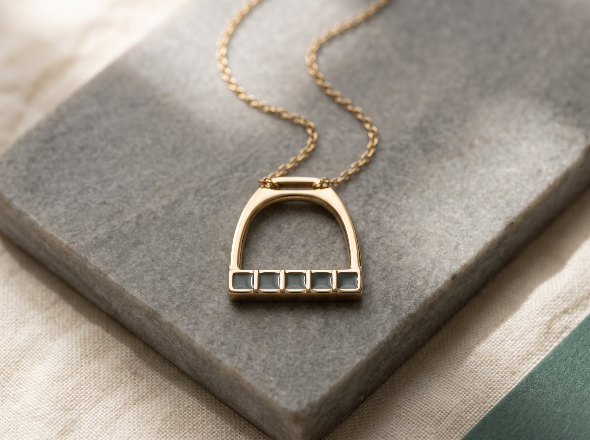
Mine hücreleri açık adaçayı yeşili çıktı; spec koyu jade-green (koyu şişe yeşili). Kare kullanılabilir ama renk açıklamayla çelişiyor; istersen düzeltilmiş promptla yeniden üret.
Düzeltilmiş prompt (01 hero, referanssız)
Quiet luxury editorial still-life product photography. Warm ivory linen ground, honed grey stone slab, a sliver of deep jade-green matte card. Soft directional window light from upper left, long soft shadow, shallow depth of field. Solid yellow gold with warm antique tone. Restrained heirloom mood. No text, no logo, no glitter, no Christmas decoration. The piece: Stirrup pendant in 14K yellow gold, 13 mm wide and 16 mm tall, open in the middle. A 1.6 mm wide rail forms an arched D shape rising from a flat 12 mm base bar. The base bar carries a row of five small cells of opaque deep jade-green enamel (a dark bottle green with a grey cast, clearly darker than the grey stone slab, never pale, never mint, never sage) separated by four 0.7 mm gold ribs, framed by gold edges that stand slightly above the enamel. A flat top bar with a 4.0 x 1.6 mm slot takes the chain, so the pendant slides on it without a bail. High-polish gold. 1.2 mm 14K cable chain, 16 inch plus 2 inch extender. The piece carries no gemstones at all and no empty settings. The only colour on the piece is opaque deep jade-green enamel, dark bottle green, filling five small cells in a row along the base bar; every other surface is yellow gold. The pendant lies flat and face up on the honed grey stone slab, the chain running in a soft loose curve up and out of the top edge of the frame. Seen from about 30 degrees above with a 100 mm macro lens, the decorated part in razor-sharp focus, filling about a third of the frame width, with the chain softly out of focus toward the frame edges. No people and no hands.
Etsy metni
Başlık 84/140
14K Gold Stirrup Necklace, Jade Green Enamel Slider Pendant, Equestrian Gift for Her
Etiketler (13)
14k gold necklace, stirrup necklace, equestrian jewelry, enamel necklace, green enamel, vitreous enamel, horse lover gift, slider pendant, riding jewelry, christmas gift, gift for her, solid gold pendant, derby jewelry
Malzemeler
14k yellow gold, vitreous enamel, 14k gold cable chain, 14k gold lobster clasp
Açıklama
A riding stirrup in 14k gold with a row of jade-green glass enamel along its tread. It slides on the chain with no bail. An equestrian gift for Christmas that belongs to every season. THE PIECE 13 mm wide and 16 mm tall. A 1.6 mm rail forms the arched stirrup over a flat 12 mm base bar; five small enamel cells sit in a row on the bar, divided by fine gold ribs. A slot in the top bar takes the chain. GOLD WEIGHT 3.89 g of 14k gold, counting the chain, clasp and extender. On the scale the finished piece weighs 3.90 g in total with the enamel. ENAMEL Kiln-fired vitreous enamel (glass), opaque deep jade green, set just below the gold edges. LENGTH AND FIT A 1.2 mm 14k cable chain, 16 in with a 2 in extender, so it sits from 16 to 18 in. The chain is part of the design and its weight is counted in the gold weight above. HOW IT IS MADE Made to order. Cast in 14k gold in one piece, in a zinc-free gold alloy chosen for enamel. The enamel cells are cast into the gold, filled by hand and kiln-fired. Nothing is soldered after the first firing; any fitting added later is laser welded away from the enamel. CARE Wipe with a soft dry cloth, or wash in warm water with a drop of mild soap. Glass enamel is hard and does not fade, but it can chip if struck against stone or metal. Keep it away from ultrasonic cleaners. No bleach or chlorine. GIFTING Arrives in a gift box, ready to give. Made to order. The processing time is shown at checkout.
Atölye kartı
Dis 13 x 16 mm. Kemer rayi 1.6 gen x 1.2 kal, merkez-hat yari elips a=5.7 b=12.5, uzunluk 29.6 mm (Ramanujan). Ust cubuk 6.0 x 3.6 x 1.4, yarik 4.0 x 1.6 (yarik cevresinde her yonde 1.0 duvar), yarik kenarlari r0.4. Basamak 12.0 x 2.6 x 1.5: kenar raylari 0.7, uc duvarlar 0.7, mine paneli 10.6 x 1.2 raylardan 0.1 asagida; 5 hucre 1.56 x 1.2 x 0.55, 4 kaburga 0.7; taban 0.85.
Tek parca 14K cinkosuz alasim dokum; kulp yok, lehim yok, tas yok. Hucreler dokumde. Arka ciplak altin (taban 0.85). Mine duz ve 0.1 cokertilmis panelde.
Tezgâh sırası
- 1. CAD: bitmis + 0.2; panel 0.1 cokertme, hucre koseleri r0.2, yarik kenarlari r0.4.
- 2. Recine baski, besleme basamak arkasindan (en kalin) + ust cubuktan.
- 3. Yatirim, yakma, CINKOSUZ 14K vakum dokum; hucre tabani gozenek kontrolu.
- 4. Tesviye; yarik ici cila (zincir yatagi).
- 5. Depletion gilding 3-4 dongu (593 C + %10 H2SO4).
- 6. Derin yesil opak islak dolum.
- 7. Pisirim 1: 780 C, 90 sn; parca basamak ve ust cubuktan desteklenir (kemer sarkmasin).
- 8. Pisirim 2: 780 C, 75 sn.
- 9. 1.0 mm elmas cubukla panel ici duzleme (kenar raylarina dokunmadan).
- 10. Pisirim 3: 770 C, 60 sn parlatma. Asit yok.
- 11. Tas yok, lazer yok. Cila yalniz altin yuzeyler; QC: tartim (uc 1.47 g +/- %5), mine raylardan asagida (cetvel + lup).
Malzeme listesi
- Alasim: 14K sari CINKOSUZ mine-uyumlu alasim (Otto Frei 846-180 'No Zinc' master alloy + 24K ile 14K; dokumhaneden yazili Zn=0 sertifikasi ve solidus/DSC degeri), vakum/inert gaz dokum. Bitmis uc 1.468 g x 1.15 = 1.69 g dokum metali.
- Mine tozu: kursunsuz opak derin yesil ~35 mg (pisirilmis 13 mg x ~2.5).
- Tas: yok.
- Zincir: 14K solid cable 1.2 mm 18in = 2.236 g.
- Bulgular: istakoz 0.25 g (tahmin), 2 atlama halkasi 0.060 g, etiket 0.046 g.
Arıza modları
| Arıza | Tasarım nasıl önlüyor |
|---|---|
| Basamak minesinin darbe ile kirilmasi (orijinalde kubbe = asinma yuzu celiskisi) | Mine duz ve kenar raylarindan 0.1 asagida; her hucre 4 yandan altinla cevrili. |
| Zincirin yarikta kesilmesi (orijinal 18K 1.0 figaro) | 14K 1.2 cable, yarik kenarlari r0.4 ve cilali, uc yalniz 1.47 g. |
| Kemerin firinda sarkmasi | Kemer 1.6 x 1.2, destek basamak + ust cubuk, <=780 C kisa pisirim. |
| Hucrede pinhole | Zn=0 alasim, vakum dokum, depletion gilding, kupon. |
Tolerans
| Kural | Değer | |
|---|---|---|
| L1 karat 14K (KANIT karat_policy; 14K vitreous 'marginal', not_viable degil) | 14K sari cinkosuz mine alasimi | ✓ |
| L2 derinlik 0.5-0.6 | 0.55 | ✓ |
| L2 genislik >=0.7, derinlik <=2x | 1.2 (min); 0.46 | ✓ |
| L2 taban >=0.8 | 1.5 - 0.1 - 0.55 = 0.85 | ✓ |
| L2 duvar >=0.70 | kaburga ve kenar 0.7 | ✓ |
| L2 esneyen parcada mine yok | rijit tek dokum | ✓ |
| L2 palet, <=2 renk | 1 renk derin yesil | ✓ |
| L2 pisirim <=4, <=790 | 3, 770-780 C | ✓ |
| L3 lehim yok; kulp yok (zincir yariktan) | lehim 0, kulp yok, pisirim sonrasi ek yok | ✓ |
| L4 tas | yok | ✓ |
| L5 yapisal >=0.8 | kemer 1.6 x 1.2; ust cubuk 3.6 x 1.4 | ✓ |
| L5 tasiyici kesit >=1.0 | yarik ust/alt duvar (3.6-1.6)/2 = 1.0 x 1.4; yanlar (6.0-4.0)/2 = 1.0 x 1.4 | ✓ |
| L5 aciklik >=0.6, derinlik <=2x | yarik 1.6 (1.4/1.6 = 0.88) | ✓ |
| L7 kolye bandi 2.8-4.2 g (zincir+bulgu dahil altin) | 4.060 g (uc 1.468 + zincir 2.236 + bulgu 0.356); tavana pay 0.140 g | ✓ |
| L8 zincir 14K solid, tip+genislik yazili, 16in+2in uzatma, varyant degil | 14K solid cable 1.2 mm, 16+2 in | ✓ |
Görsel promptları (16)
- 01Hero / arama küçük resmi: tek ürün, marka natürmortu, 4:3.Referanssız
Quiet luxury editorial still-life product photography. Warm ivory linen ground, honed grey stone slab, a sliver of deep jade-green matte card. Soft directional window light from upper left, long soft shadow, shallow depth of field. Solid yellow gold with warm antique tone. Restrained heirloom mood. No text, no logo, no glitter, no Christmas decoration. The piece: Stirrup pendant in 14K yellow gold, 13 mm wide and 16 mm tall, open in the middle. A 1.6 mm wide rail forms an arched D shape rising from a flat 12 mm base bar. The base bar carries a row of five small cells of opaque deep jade-green enamel (a dark muted grey-green) separated by four 0.7 mm gold ribs, framed by gold edges that stand slightly above the enamel. A flat top bar with a 4.0 x 1.6 mm slot takes the chain, so the pendant slides on it without a bail. High-polish gold. 1.2 mm 14K cable chain, 16 inch plus 2 inch extender. The piece carries no gemstones at all and no empty settings. The only colour on the piece is opaque deep jade-green enamel filling five small cells in a row along the base bar; every other surface is yellow gold. The pendant lies flat and face up on the honed grey stone slab, the chain running in a soft loose curve up and out of the top edge of the frame. Seen from about 30 degrees above with a 100 mm macro lens, the decorated part in razor-sharp focus, filling about a third of the frame width, with the chain softly out of focus toward the frame edges. No people and no hands.
Alt metin 14K gold stirrup slider pendant with jade green enamel
- 02Takılı hâli: ölçek ve duruş. Hero'dan sonra dönüşümü en çok etkileyen kare.Referans: hero kırpımı
Quiet luxury editorial photography in warm ivory, stone grey and deep jade-green tones, soft directional window light from the upper left, true colour, fine film grain, no heavy retouching. No text, no logo, no watermark, no glitter. The attached reference image is a crop of this exact piece: keep its shape, proportions, gold colour and enamel colours exactly as in the reference. The piece: Stirrup pendant in 14K yellow gold, 13 mm wide and 16 mm tall, open in the middle. A 1.6 mm wide rail forms an arched D shape rising from a flat 12 mm base bar. The base bar carries a row of five small cells of opaque deep jade-green enamel (a dark muted grey-green) separated by four 0.7 mm gold ribs, framed by gold edges that stand slightly above the enamel. A flat top bar with a 4.0 x 1.6 mm slot takes the chain, so the pendant slides on it without a bail. High-polish gold. 1.2 mm 14K cable chain, 16 inch plus 2 inch extender. The piece carries no gemstones at all and no empty settings. The only colour on the piece is opaque deep jade-green enamel filling five small cells in a row along the base bar; every other surface is yellow gold. Worn by a woman against bare skin just below the collarbone, above the open neckline of a warm-ivory silk blouse, cropped from chin to mid-chest so no face shows; the pendant hangs centred and faces the camera; it is the only jewellery in the image; true to scale, the main element measures about 16 mm across.
Alt metin 14K gold stirrup slider pendant with jade green enamel, worn
- 03Makro işçilik: fiyatı meşrulaştıran detay (mine yüzeyi, flush taş, kenar bitimi).Referans: hero kırpımı
Quiet luxury editorial photography in warm ivory, stone grey and deep jade-green tones, soft directional window light from the upper left, true colour, fine film grain, no heavy retouching. No text, no logo, no watermark, no glitter. The attached reference image is a crop of this exact piece: keep its shape, proportions, gold colour and enamel colours exactly as in the reference. The piece: Stirrup pendant in 14K yellow gold, 13 mm wide and 16 mm tall, open in the middle. A 1.6 mm wide rail forms an arched D shape rising from a flat 12 mm base bar. The base bar carries a row of five small cells of opaque deep jade-green enamel (a dark muted grey-green) separated by four 0.7 mm gold ribs, framed by gold edges that stand slightly above the enamel. A flat top bar with a 4.0 x 1.6 mm slot takes the chain, so the pendant slides on it without a bail. High-polish gold. 1.2 mm 14K cable chain, 16 inch plus 2 inch extender. The piece carries no gemstones at all and no empty settings. The only colour on the piece is opaque deep jade-green enamel filling five small cells in a row along the base bar; every other surface is yellow gold. Extreme close-up macro, 100 mm macro lens: The base bar with its row of five opaque deep jade-green enamel cells between fine gold ribs. The rest of the piece falls away into soft focus on warm-ivory linen.
Alt metin Close-up of the row of jade green enamel cells on the base bar
- 04Elde ölçek: mm'yi parmak ucuna çevirir, 'beklediğimden küçük' iadesini önler.Referans: hero kırpımı
Quiet luxury editorial photography in warm ivory, stone grey and deep jade-green tones, soft directional window light from the upper left, true colour, fine film grain, no heavy retouching. No text, no logo, no watermark, no glitter. The attached reference image is a crop of this exact piece: keep its shape, proportions, gold colour and enamel colours exactly as in the reference. The piece: Stirrup pendant in 14K yellow gold, 13 mm wide and 16 mm tall, open in the middle. A 1.6 mm wide rail forms an arched D shape rising from a flat 12 mm base bar. The base bar carries a row of five small cells of opaque deep jade-green enamel (a dark muted grey-green) separated by four 0.7 mm gold ribs, framed by gold edges that stand slightly above the enamel. A flat top bar with a 4.0 x 1.6 mm slot takes the chain, so the pendant slides on it without a bail. High-polish gold. 1.2 mm 14K cable chain, 16 inch plus 2 inch extender. The piece carries no gemstones at all and no empty settings. The only colour on the piece is opaque deep jade-green enamel filling five small cells in a row along the base bar; every other surface is yellow gold. Close-up for scale against a plain warm-ivory background thrown softly out of focus: the pendant resting on the fingertips of a woman's open hand, face up, the chain running out of the frame; true to scale, the main element measures about 16 mm across, a fingertip is about 16 mm wide; it is the only jewellery in the image; anatomically correct hands with five fingers, short natural unpolished nails.
Alt metin 14K gold stirrup slider pendant with jade green enamel, held between fingers for scale
- 05Arka ve bulgular: dolu gövde, kilit / çivi / iğne; sağlamlık sorusunu cevaplar.Referans: hero kırpımı
Quiet luxury editorial photography in warm ivory, stone grey and deep jade-green tones, soft directional window light from the upper left, true colour, fine film grain, no heavy retouching. No text, no logo, no watermark, no glitter. The attached reference image is a crop of this exact piece: keep its shape, proportions, gold colour and enamel colours exactly as in the reference. The piece: Stirrup pendant in 14K yellow gold, 13 mm wide and 16 mm tall, open in the middle. A 1.6 mm wide rail forms an arched D shape rising from a flat 12 mm base bar. The base bar carries a row of five small cells of opaque deep jade-green enamel (a dark muted grey-green) separated by four 0.7 mm gold ribs, framed by gold edges that stand slightly above the enamel. A flat top bar with a 4.0 x 1.6 mm slot takes the chain, so the pendant slides on it without a bail. High-polish gold. 1.2 mm 14K cable chain, 16 inch plus 2 inch extender. The piece carries no gemstones at all and no empty settings. The only colour on the piece is opaque deep jade-green enamel filling five small cells in a row along the base bar; every other surface is yellow gold. The back of the piece, top-down on honed grey stone: The flat solid back of the stirrup and the slot in the top bar that the chain runs through.
Alt metin Back of the pendant necklace showing the solid back and chain slot
- 06Tam boy / çift / mekanizma: uzunluk, ayar ve ne geldiğini tek karede gösterir.Referans: hero kırpımı
Quiet luxury editorial photography in warm ivory, stone grey and deep jade-green tones, soft directional window light from the upper left, true colour, fine film grain, no heavy retouching. No text, no logo, no watermark, no glitter. The attached reference image is a crop of this exact piece: keep its shape, proportions, gold colour and enamel colours exactly as in the reference. The piece: Stirrup pendant in 14K yellow gold, 13 mm wide and 16 mm tall, open in the middle. A 1.6 mm wide rail forms an arched D shape rising from a flat 12 mm base bar. The base bar carries a row of five small cells of opaque deep jade-green enamel (a dark muted grey-green) separated by four 0.7 mm gold ribs, framed by gold edges that stand slightly above the enamel. A flat top bar with a 4.0 x 1.6 mm slot takes the chain, so the pendant slides on it without a bail. High-polish gold. 1.2 mm 14K cable chain, 16 inch plus 2 inch extender. The piece carries no gemstones at all and no empty settings. The only colour on the piece is opaque deep jade-green enamel filling five small cells in a row along the base bar; every other surface is yellow gold. The whole necklace laid out top-down on warm-ivory linen in a straight vertical line, chain doubled into a narrow U, pendant face up at the bottom, lobster clasp and extender chain at the top.
Alt metin 14K gold stirrup slider pendant with jade green enamel, full length
- 07Yan profil: kalınlık ve kütle, düz baskı değil gerçek altın olduğunu gösterir.Referans: hero kırpımı
Quiet luxury editorial photography in warm ivory, stone grey and deep jade-green tones, soft directional window light from the upper left, true colour, fine film grain, no heavy retouching. No text, no logo, no watermark, no glitter. The attached reference image is a crop of this exact piece: keep its shape, proportions, gold colour and enamel colours exactly as in the reference. The piece: Stirrup pendant in 14K yellow gold, 13 mm wide and 16 mm tall, open in the middle. A 1.6 mm wide rail forms an arched D shape rising from a flat 12 mm base bar. The base bar carries a row of five small cells of opaque deep jade-green enamel (a dark muted grey-green) separated by four 0.7 mm gold ribs, framed by gold edges that stand slightly above the enamel. A flat top bar with a 4.0 x 1.6 mm slot takes the chain, so the pendant slides on it without a bail. High-polish gold. 1.2 mm 14K cable chain, 16 inch plus 2 inch extender. The piece carries no gemstones at all and no empty settings. The only colour on the piece is opaque deep jade-green enamel filling five small cells in a row along the base bar; every other surface is yellow gold. Side profile at eye level on honed grey stone, the camera level with the piece: A flat stirrup rail 1.2 mm thick with the base bar at 1.5 mm.
Alt metin Side profile of the pendant necklace showing its thickness
- 08Kış yaşam stili: sezonu Noel dekoru olmadan kurar.Referans: hero kırpımı
Quiet luxury editorial photography in warm ivory, stone grey and deep jade-green tones, soft directional window light from the upper left, true colour, fine film grain, no heavy retouching. No text, no logo, no watermark, no glitter. The attached reference image is a crop of this exact piece: keep its shape, proportions, gold colour and enamel colours exactly as in the reference. The piece: Stirrup pendant in 14K yellow gold, 13 mm wide and 16 mm tall, open in the middle. A 1.6 mm wide rail forms an arched D shape rising from a flat 12 mm base bar. The base bar carries a row of five small cells of opaque deep jade-green enamel (a dark muted grey-green) separated by four 0.7 mm gold ribs, framed by gold edges that stand slightly above the enamel. A flat top bar with a 4.0 x 1.6 mm slot takes the chain, so the pendant slides on it without a bail. High-polish gold. 1.2 mm 14K cable chain, 16 inch plus 2 inch extender. The piece carries no gemstones at all and no empty settings. The only colour on the piece is opaque deep jade-green enamel filling five small cells in a row along the base bar; every other surface is yellow gold. Winter afternoon light: a woman wearing the necklace over a fine ivory cashmere crew-neck sweater, cropped from chin to chest, a grey wool coat collar at the edge of the frame; it is the only jewellery in the image.
Alt metin 14K gold stirrup slider pendant with jade green enamel, styled with winter knitwear
- 09Hediye kutusu: Noel alıcısının ilk sorusu, hediyeye hazır mı?Referans: hero kırpımı
Quiet luxury editorial photography in warm ivory, stone grey and deep jade-green tones, soft directional window light from the upper left, true colour, fine film grain, no heavy retouching. No text, no logo, no watermark, no glitter. The attached reference image is a crop of this exact piece: keep its shape, proportions, gold colour and enamel colours exactly as in the reference. The piece: Stirrup pendant in 14K yellow gold, 13 mm wide and 16 mm tall, open in the middle. A 1.6 mm wide rail forms an arched D shape rising from a flat 12 mm base bar. The base bar carries a row of five small cells of opaque deep jade-green enamel (a dark muted grey-green) separated by four 0.7 mm gold ribs, framed by gold edges that stand slightly above the enamel. A flat top bar with a 4.0 x 1.6 mm slot takes the chain, so the pendant slides on it without a bail. High-polish gold. 1.2 mm 14K cable chain, 16 inch plus 2 inch extender. The piece carries no gemstones at all and no empty settings. The only colour on the piece is opaque deep jade-green enamel filling five small cells in a row along the base bar; every other surface is yellow gold. Top-down: the pendant face up, chain coiled inside a small open square gift box in plain warm-ivory card with a soft ivory insert, the lid set beside it, a length of narrow deep jade-green ribbon untied beside the box, on honed grey stone. No branding, no printed pattern, no tissue paper, no Christmas decoration, exactly one box.
Alt metin 14K gold stirrup slider pendant with jade green enamel in a gift box
- 10Gerçek renk: nötr gün ışığında altın ve mine rengi; renk kaynaklı iadeyi azaltır.Referans: hero kırpımı
Quiet luxury editorial photography in warm ivory, stone grey and deep jade-green tones, soft directional window light from the upper left, true colour, fine film grain, no heavy retouching. No text, no logo, no watermark, no glitter. The attached reference image is a crop of this exact piece: keep its shape, proportions, gold colour and enamel colours exactly as in the reference. The piece: Stirrup pendant in 14K yellow gold, 13 mm wide and 16 mm tall, open in the middle. A 1.6 mm wide rail forms an arched D shape rising from a flat 12 mm base bar. The base bar carries a row of five small cells of opaque deep jade-green enamel (a dark muted grey-green) separated by four 0.7 mm gold ribs, framed by gold edges that stand slightly above the enamel. A flat top bar with a 4.0 x 1.6 mm slot takes the chain, so the pendant slides on it without a bail. High-polish gold. 1.2 mm 14K cable chain, 16 inch plus 2 inch extender. The piece carries no gemstones at all and no empty settings. The only colour on the piece is opaque deep jade-green enamel filling five small cells in a row along the base bar; every other surface is yellow gold. Colour-accurate reference shot: the piece alone, top-down on plain matte white-ivory paper under even neutral north daylight, no shadow drama, no props, the piece centred and filling half the frame.
Alt metin 14K gold stirrup slider pendant with jade green enamel in neutral daylight, true colour
- 11Ölçü grafiği tabanı: sağ üçte bir boş; mm etiketleri sonra eklenir.Referans: hero kırpımı
Quiet luxury editorial photography in warm ivory, stone grey and deep jade-green tones, soft directional window light from the upper left, true colour, fine film grain, no heavy retouching. No text, no logo, no watermark, no glitter. The attached reference image is a crop of this exact piece: keep its shape, proportions, gold colour and enamel colours exactly as in the reference. The piece: Stirrup pendant in 14K yellow gold, 13 mm wide and 16 mm tall, open in the middle. A 1.6 mm wide rail forms an arched D shape rising from a flat 12 mm base bar. The base bar carries a row of five small cells of opaque deep jade-green enamel (a dark muted grey-green) separated by four 0.7 mm gold ribs, framed by gold edges that stand slightly above the enamel. A flat top bar with a 4.0 x 1.6 mm slot takes the chain, so the pendant slides on it without a bail. High-polish gold. 1.2 mm 14K cable chain, 16 inch plus 2 inch extender. The piece carries no gemstones at all and no empty settings. The only colour on the piece is opaque deep jade-green enamel filling five small cells in a row along the base bar; every other surface is yellow gold. The piece alone, top-down on plain warm-ivory paper, placed in the left two thirds of the frame; the right third is empty paper for dimension labels to be added later; even soft light, no props.
Alt metin 14K gold stirrup slider pendant with jade green enamel with space for dimensions
- 12El işçiliği: siparişe üretim hikâyesi, tezgâhta parça.Referans: hero kırpımı
Quiet luxury editorial photography in warm ivory, stone grey and deep jade-green tones, soft directional window light from the upper left, true colour, fine film grain, no heavy retouching. No text, no logo, no watermark, no glitter. The attached reference image is a crop of this exact piece: keep its shape, proportions, gold colour and enamel colours exactly as in the reference. The piece: Stirrup pendant in 14K yellow gold, 13 mm wide and 16 mm tall, open in the middle. A 1.6 mm wide rail forms an arched D shape rising from a flat 12 mm base bar. The base bar carries a row of five small cells of opaque deep jade-green enamel (a dark muted grey-green) separated by four 0.7 mm gold ribs, framed by gold edges that stand slightly above the enamel. A flat top bar with a 4.0 x 1.6 mm slot takes the chain, so the pendant slides on it without a bail. High-polish gold. 1.2 mm 14K cable chain, 16 inch plus 2 inch extender. The piece carries no gemstones at all and no empty settings. The only colour on the piece is opaque deep jade-green enamel filling five small cells in a row along the base bar; every other surface is yellow gold. The finished piece lying on a worn wooden jeweller's bench pin beside a small porcelain dish of deep green enamel powder and a fine sable brush, warm lamp light, shallow depth of field, the piece in sharp focus; no hands.
Alt metin 14K gold stirrup slider pendant with jade green enamel on a jeweller's bench
- 13Motifin anlamı: sol üçte bir boş; sembol hikâyesi metni sonra eklenir.Referans: hero kırpımı
Quiet luxury editorial photography in warm ivory, stone grey and deep jade-green tones, soft directional window light from the upper left, true colour, fine film grain, no heavy retouching. No text, no logo, no watermark, no glitter. The attached reference image is a crop of this exact piece: keep its shape, proportions, gold colour and enamel colours exactly as in the reference. The piece: Stirrup pendant in 14K yellow gold, 13 mm wide and 16 mm tall, open in the middle. A 1.6 mm wide rail forms an arched D shape rising from a flat 12 mm base bar. The base bar carries a row of five small cells of opaque deep jade-green enamel (a dark muted grey-green) separated by four 0.7 mm gold ribs, framed by gold edges that stand slightly above the enamel. A flat top bar with a 4.0 x 1.6 mm slot takes the chain, so the pendant slides on it without a bail. High-polish gold. 1.2 mm 14K cable chain, 16 inch plus 2 inch extender. The piece carries no gemstones at all and no empty settings. The only colour on the piece is opaque deep jade-green enamel filling five small cells in a row along the base bar; every other surface is yellow gold. The piece alone, top-down on a deep jade-green matte card, placed in the right two thirds of the frame; the left third is empty card for a caption to be added later; soft directional light.
Alt metin 14K gold stirrup slider pendant with jade green enamel on a deep green card
- 14Yıl boyu takılır: 'yalnız Noel' itirazını kırar.Referans: hero kırpımı
Quiet luxury editorial photography in warm ivory, stone grey and deep jade-green tones, soft directional window light from the upper left, true colour, fine film grain, no heavy retouching. No text, no logo, no watermark, no glitter. The attached reference image is a crop of this exact piece: keep its shape, proportions, gold colour and enamel colours exactly as in the reference. The piece: Stirrup pendant in 14K yellow gold, 13 mm wide and 16 mm tall, open in the middle. A 1.6 mm wide rail forms an arched D shape rising from a flat 12 mm base bar. The base bar carries a row of five small cells of opaque deep jade-green enamel (a dark muted grey-green) separated by four 0.7 mm gold ribs, framed by gold edges that stand slightly above the enamel. A flat top bar with a 4.0 x 1.6 mm slot takes the chain, so the pendant slides on it without a bail. High-polish gold. 1.2 mm 14K cable chain, 16 inch plus 2 inch extender. The piece carries no gemstones at all and no empty settings. The only colour on the piece is opaque deep jade-green enamel filling five small cells in a row along the base bar; every other surface is yellow gold. Everyday wear, no season: a woman wearing the necklace with a plain white cotton shirt open at the collar, soft daylight, cropped from chin to chest; the only jewellery in the image.
Alt metin 14K gold stirrup slider pendant with jade green enamel, everyday wear
- 15Hediye anı: duygu; Noel satın alma niyetine bağlar.Referans: hero kırpımı
Quiet luxury editorial photography in warm ivory, stone grey and deep jade-green tones, soft directional window light from the upper left, true colour, fine film grain, no heavy retouching. No text, no logo, no watermark, no glitter. The attached reference image is a crop of this exact piece: keep its shape, proportions, gold colour and enamel colours exactly as in the reference. The piece: Stirrup pendant in 14K yellow gold, 13 mm wide and 16 mm tall, open in the middle. A 1.6 mm wide rail forms an arched D shape rising from a flat 12 mm base bar. The base bar carries a row of five small cells of opaque deep jade-green enamel (a dark muted grey-green) separated by four 0.7 mm gold ribs, framed by gold edges that stand slightly above the enamel. A flat top bar with a 4.0 x 1.6 mm slot takes the chain, so the pendant slides on it without a bail. High-polish gold. 1.2 mm 14K cable chain, 16 inch plus 2 inch extender. The piece carries no gemstones at all and no empty settings. The only colour on the piece is opaque deep jade-green enamel filling five small cells in a row along the base bar; every other surface is yellow gold. A gift being given: two pairs of hands across a pale oak table, one pair holding out the small open warm-ivory gift box with the piece visible inside, the other reaching for it, soft warm window light, sleeves of ivory and grey knitwear; exactly one box and one piece of jewellery; anatomically correct hands with five fingers, short natural unpolished nails.
Alt metin 14K gold stirrup slider pendant with jade green enamel given as a gift
- 16Mağaza ızgarası / Pinterest: koyu jade zeminde yüksek kontrast kare.Referans: hero kırpımı
Quiet luxury editorial photography in warm ivory, stone grey and deep jade-green tones, soft directional window light from the upper left, true colour, fine film grain, no heavy retouching. No text, no logo, no watermark, no glitter. The attached reference image is a crop of this exact piece: keep its shape, proportions, gold colour and enamel colours exactly as in the reference. The piece: Stirrup pendant in 14K yellow gold, 13 mm wide and 16 mm tall, open in the middle. A 1.6 mm wide rail forms an arched D shape rising from a flat 12 mm base bar. The base bar carries a row of five small cells of opaque deep jade-green enamel (a dark muted grey-green) separated by four 0.7 mm gold ribs, framed by gold edges that stand slightly above the enamel. A flat top bar with a 4.0 x 1.6 mm slot takes the chain, so the pendant slides on it without a bail. High-polish gold. 1.2 mm 14K cable chain, 16 inch plus 2 inch extender. The piece carries no gemstones at all and no empty settings. The only colour on the piece is opaque deep jade-green enamel filling five small cells in a row along the base bar; every other surface is yellow gold. Top-down flat lay of the piece centred on a deep jade-green matte card with a narrow border of warm-ivory linen at the top edge, crisp soft light, the piece filling about 40 percent of the frame so a square crop keeps all of it.
Alt metin 14K gold stirrup slider pendant with jade green enamel, flat lay on deep green
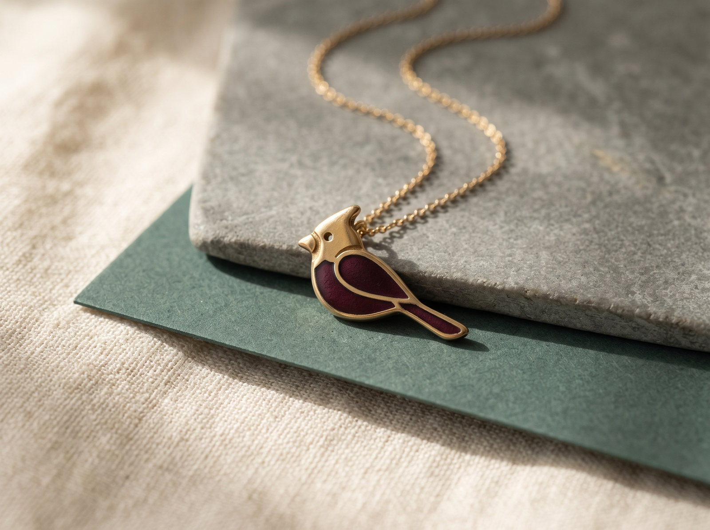
Etsy metni
Başlık 87/140
14K Gold Cardinal Necklace, Berry Enamel Bird Pendant, Memorial Keepsake, Sympathy Gift
Etiketler (13)
14k gold necklace, cardinal necklace, cardinal jewelry, memorial necklace, enamel necklace, berry enamel, vitreous enamel, bird necklace, sympathy gift, christmas gift, gift for her, remembrance gift, solid gold pendant
Malzemeler
14k yellow gold, vitreous enamel, 14k gold cable chain, 14k gold lobster clasp
Açıklama
A cardinal in profile, its breast, wing and tail in deep berry glass enamel and its crest and face in polished gold. A keepsake many people give when they remember someone at Christmas. THE PIECE 11 mm wide and 15 mm tall, 1.35 mm thick. The enamel is a dark blackberry red, divided into three fields by fine gold lines that mark the wing and tail. The eye is a small round opening through the gold. The bail is hidden behind the back. GOLD WEIGHT 3.82 g of 14k gold, counting the chain, clasp and extender. On the scale the finished piece weighs 3.89 g in total with the enamel. ENAMEL Kiln-fired vitreous enamel (glass), opaque deep berry, cadmium-free, level with the gold. LENGTH AND FIT A 1.0 mm 14k cable chain, 16 in with a 2 in extender, so it sits from 16 to 18 in. The chain is part of the design and its weight is counted in the gold weight above. HOW IT IS MADE Made to order. Cast in 14k gold in one piece, in a zinc-free gold alloy chosen for enamel. The enamel cells are cast into the gold, filled by hand and kiln-fired. Nothing is soldered after the first firing; any fitting added later is laser welded away from the enamel. CARE Wipe with a soft dry cloth, or wash in warm water with a drop of mild soap. Glass enamel is hard and does not fade, but it can chip if struck against stone or metal. Keep it away from ultrasonic cleaners. No bleach or chlorine. GIFTING Arrives in a gift box, ready to give. Made to order. The processing time is shown at checkout.
Atölye kartı
Siluet 11 x 15 x 1.35 (doluluk 0.58 -> 95.7 mm2). 3 hucre: gogus/govde 22 mm2, kanat 15 mm2, kuyruk 11 mm2; derinlik 0.55, en dar yer 1.2, duvar ve cevre 0.7, taban 0.80. Yuz maskesi/gaga/tepe kenari ciplak altin; goz D0.8 delik (1.35/0.8 = 1.69). Tepe ucu r0.5. Kulp 1.0 x 1.6 sirt arkasi.
Tek parca 14K cinkosuz alasim dokum, hucreler dokumde; lehim yok, tas yok. Arka ciplak altin (taban 0.80). Bogurtlen tek renk; tum pisirimler bant alt ucunda (760 C).
Tezgâh sırası
- 1. CAD: bitmis + 0.2; hucre koseleri r0.2; goz D0.8 delik; tepe ucu r0.5.
- 2. Recine baski, besleme sirt arkasindan.
- 3. Yatirim, yakma, CINKOSUZ 14K vakum dokum; gozenek kontrolu.
- 4. Tesviye, maske/gaga on cila, goz deligi 0.8 pin-gauge.
- 5. Depletion gilding 3-4 dongu (593 C + %10 H2SO4).
- 6. Opak derin bogurtlen (kadmiyumsuz secilmeli) islak dolum.
- 7. Pisirim 1: 760 C, 90 sn.
- 8. Pisirim 2: 760 C, 75 sn.
- 9. Tasla duzleme.
- 10. Pisirim 3: 760 C, 60 sn parlatma. Asit yok.
- 11. Tas yok, lazer yok; cila yalniz altin; QC: renk kuponla karsilastir (kahverengiye kayma yok), tartim (uc 1.53 g +/- %5).
Malzeme listesi
- Alasim: 14K sari CINKOSUZ mine-uyumlu alasim (Otto Frei 846-180 'No Zinc' master alloy + 24K ile 14K; dokumhaneden yazili Zn=0 sertifikasi ve solidus/DSC degeri), vakum/inert gaz dokum. Bitmis uc 1.532 g x 1.15 = 1.76 g dokum metali.
- Mine tozu: kursunsuz, kadmiyumsuz opak derin bogurtlen ~165 mg (pisirilmis 66 mg x ~2.5).
- Tas: yok.
- Zincir: 14K solid cable 1.0 mm 18in = 1.902 g.
- Bulgular: istakoz 0.25 g (tahmin), 2 atlama halkasi 0.060 g, etiket 0.046 g.
Arıza modları
| Arıza | Tasarım nasıl önlüyor |
|---|---|
| Kirmizi-aile minenin tekrar pisirimde yanmasi / kahverengiye donmesi | Tek renk, tum pisirimler 760 C (bant alti), kisa sure, max 3; kupon ile renk onayi. |
| Buyuk tek hucrede catlama (orijinal 45 mm2 tek govde hucresi) | Kanat ve kuyruk cizgileriyle 3 hucreye bolundu (max 22 mm2), her hucre 0.7 altinla cevrili. |
| Kenar cercevesinin ayni anda yapisal + mine duvari olmasi (orijinal 0.5) | Cevre 0.7, plaka 1.35; yuz maskesi bolgesi kati altin olarak siluete rijitlik verir. |
| Kadmiyum iceren kirmizi mine (ABD eyalet Pb/Cd sinirlari) | Kadmiyumsuz bogurtlen tedarik + SDS; uygun degilse renk degisikligi kararina kadar seri yok. |
Tolerans
| Kural | Değer | |
|---|---|---|
| L1 karat 14K (KANIT karat_policy; 14K vitreous 'marginal', not_viable degil) | 14K sari cinkosuz mine alasimi | ✓ |
| L2 derinlik 0.5-0.6 | 0.55 | ✓ |
| L2 genislik >=0.7, derinlik <=2x | min 1.2; 0.46 | ✓ |
| L2 taban >=0.8 | 1.35-0.55 = 0.80 | ✓ |
| L2 duvar >=0.70 | 0.70 | ✓ |
| L2 hucre icinde kabartma yok | goz adasi kaldirildi, goz maskede delik | ✓ |
| L2 palet | yalniz derin bogurtlen (komur rengi kaldirildi) | ✓ |
| L2 bogurtlen en son ve bant alt ucunda | tek renk, 760 C | ✓ |
| L2 pisirim <=4 | 3 | ✓ |
| L3 ilk pisirimden sonra hamlac lehimi yok; kulp govdeyle tek dokum | lehim baglantisi 0; kulp entegre dokum; pisirim sonrasi ek yok | ✓ |
| L5 yapisal >=0.8 | plaka 1.35; cevre 0.7 x 1.35 kesit | ✓ |
| L5 aciklik >=0.6 / derinlik <=2x | goz D0.8 / 1.69 | ✓ |
| L5 kulp >=1.0 | 1.0 x 1.6 | ✓ |
| L5 uc yaricapi >=0.4 | tepe r0.5, kuyruk ucu r0.5 | ✓ |
| L11 dal/yaprak yok | tuneme dali kaldirildi | ✓ |
| L7 kolye bandi 2.8-4.2 g (zincir+bulgu dahil altin) | 3.790 g (uc 1.532 + zincir 1.902 + bulgu 0.356); tavana pay 0.410 g | ✓ |
| L8 zincir 14K solid, tip+genislik yazili, 16in+2in uzatma, varyant degil | 14K solid cable 1.0 mm, 16+2 in | ✓ |
Görsel promptları (16)
- 01Hero / arama küçük resmi: tek ürün, marka natürmortu, 4:3.Referanssız
Quiet luxury editorial still-life product photography. Warm ivory linen ground, honed grey stone slab, a sliver of deep jade-green matte card. Soft directional window light from upper left, long soft shadow, shallow depth of field. Solid yellow gold with warm antique tone. Restrained heirloom mood. No text, no logo, no glitter, no Christmas decoration. The piece: Cardinal bird pendant in 14K yellow gold, side profile, 11 mm wide and 15 mm tall, 1.35 mm thick, with a raised crest that ends in a rounded tip and a short beak with a rounded point. The breast, wing and tail are filled with opaque deep berry enamel (a dark wine red, not bright red), a dark blackberry red rather than bright red, in three fields separated by 0.7 mm gold lines that mark the wing and the tail. The face, beak and outline are polished gold, and the eye is a 0.8 mm round hole through the gold face. Bail hidden behind the back. 1.0 mm 14K cable chain, 16 inch plus 2 inch extender. The piece carries no gemstones at all and no empty settings. The only colour on the piece is opaque deep berry enamel filling three fields on the breast, wing and tail; every other surface is yellow gold. The pendant lies flat and face up on the honed grey stone slab, the chain running in a soft loose curve up and out of the top edge of the frame. Seen from about 30 degrees above with a 100 mm macro lens, the decorated part in razor-sharp focus, filling about a third of the frame width, with the chain softly out of focus toward the frame edges. No people and no hands.
Alt metin 14K gold cardinal bird pendant with deep berry enamel
- 02Takılı hâli: ölçek ve duruş. Hero'dan sonra dönüşümü en çok etkileyen kare.Referans: hero kırpımı
Quiet luxury editorial photography in warm ivory, stone grey and deep jade-green tones, soft directional window light from the upper left, true colour, fine film grain, no heavy retouching. No text, no logo, no watermark, no glitter. The attached reference image is a crop of this exact piece: keep its shape, proportions, gold colour and enamel colours exactly as in the reference. The piece: Cardinal bird pendant in 14K yellow gold, side profile, 11 mm wide and 15 mm tall, 1.35 mm thick, with a raised crest that ends in a rounded tip and a short beak with a rounded point. The breast, wing and tail are filled with opaque deep berry enamel (a dark wine red, not bright red), a dark blackberry red rather than bright red, in three fields separated by 0.7 mm gold lines that mark the wing and the tail. The face, beak and outline are polished gold, and the eye is a 0.8 mm round hole through the gold face. Bail hidden behind the back. 1.0 mm 14K cable chain, 16 inch plus 2 inch extender. The piece carries no gemstones at all and no empty settings. The only colour on the piece is opaque deep berry enamel filling three fields on the breast, wing and tail; every other surface is yellow gold. Worn by a woman against bare skin just below the collarbone, above the open neckline of a warm-ivory silk blouse, cropped from chin to mid-chest so no face shows; the pendant hangs centred and faces the camera; it is the only jewellery in the image; true to scale, the main element measures about 15 mm across.
Alt metin 14K gold cardinal bird pendant with deep berry enamel, worn
- 03Makro işçilik: fiyatı meşrulaştıran detay (mine yüzeyi, flush taş, kenar bitimi).Referans: hero kırpımı
Quiet luxury editorial photography in warm ivory, stone grey and deep jade-green tones, soft directional window light from the upper left, true colour, fine film grain, no heavy retouching. No text, no logo, no watermark, no glitter. The attached reference image is a crop of this exact piece: keep its shape, proportions, gold colour and enamel colours exactly as in the reference. The piece: Cardinal bird pendant in 14K yellow gold, side profile, 11 mm wide and 15 mm tall, 1.35 mm thick, with a raised crest that ends in a rounded tip and a short beak with a rounded point. The breast, wing and tail are filled with opaque deep berry enamel (a dark wine red, not bright red), a dark blackberry red rather than bright red, in three fields separated by 0.7 mm gold lines that mark the wing and the tail. The face, beak and outline are polished gold, and the eye is a 0.8 mm round hole through the gold face. Bail hidden behind the back. 1.0 mm 14K cable chain, 16 inch plus 2 inch extender. The piece carries no gemstones at all and no empty settings. The only colour on the piece is opaque deep berry enamel filling three fields on the breast, wing and tail; every other surface is yellow gold. Extreme close-up macro, 100 mm macro lens: The cardinal's breast and wing in opaque deep berry enamel, the fine gold lines between the fields and the gold crest. The rest of the piece falls away into soft focus on warm-ivory linen.
Alt metin Close-up of the deep berry enamel breast and wing of the cardinal
- 04Elde ölçek: mm'yi parmak ucuna çevirir, 'beklediğimden küçük' iadesini önler.Referans: hero kırpımı
Quiet luxury editorial photography in warm ivory, stone grey and deep jade-green tones, soft directional window light from the upper left, true colour, fine film grain, no heavy retouching. No text, no logo, no watermark, no glitter. The attached reference image is a crop of this exact piece: keep its shape, proportions, gold colour and enamel colours exactly as in the reference. The piece: Cardinal bird pendant in 14K yellow gold, side profile, 11 mm wide and 15 mm tall, 1.35 mm thick, with a raised crest that ends in a rounded tip and a short beak with a rounded point. The breast, wing and tail are filled with opaque deep berry enamel (a dark wine red, not bright red), a dark blackberry red rather than bright red, in three fields separated by 0.7 mm gold lines that mark the wing and the tail. The face, beak and outline are polished gold, and the eye is a 0.8 mm round hole through the gold face. Bail hidden behind the back. 1.0 mm 14K cable chain, 16 inch plus 2 inch extender. The piece carries no gemstones at all and no empty settings. The only colour on the piece is opaque deep berry enamel filling three fields on the breast, wing and tail; every other surface is yellow gold. Close-up for scale against a plain warm-ivory background thrown softly out of focus: the pendant resting on the fingertips of a woman's open hand, face up, the chain running out of the frame; true to scale, the main element measures about 15 mm across, a fingertip is about 16 mm wide; it is the only jewellery in the image; anatomically correct hands with five fingers, short natural unpolished nails.
Alt metin 14K gold cardinal bird pendant with deep berry enamel, held between fingers for scale
- 05Arka ve bulgular: dolu gövde, kilit / çivi / iğne; sağlamlık sorusunu cevaplar.Referans: hero kırpımı
Quiet luxury editorial photography in warm ivory, stone grey and deep jade-green tones, soft directional window light from the upper left, true colour, fine film grain, no heavy retouching. No text, no logo, no watermark, no glitter. The attached reference image is a crop of this exact piece: keep its shape, proportions, gold colour and enamel colours exactly as in the reference. The piece: Cardinal bird pendant in 14K yellow gold, side profile, 11 mm wide and 15 mm tall, 1.35 mm thick, with a raised crest that ends in a rounded tip and a short beak with a rounded point. The breast, wing and tail are filled with opaque deep berry enamel (a dark wine red, not bright red), a dark blackberry red rather than bright red, in three fields separated by 0.7 mm gold lines that mark the wing and the tail. The face, beak and outline are polished gold, and the eye is a 0.8 mm round hole through the gold face. Bail hidden behind the back. 1.0 mm 14K cable chain, 16 inch plus 2 inch extender. The piece carries no gemstones at all and no empty settings. The only colour on the piece is opaque deep berry enamel filling three fields on the breast, wing and tail; every other surface is yellow gold. The back of the piece, top-down on honed grey stone: The flat solid back of the bird, the round eye hole and the bail hidden behind the back.
Alt metin Back of the pendant necklace showing the solid back and eye hole
- 06Tam boy / çift / mekanizma: uzunluk, ayar ve ne geldiğini tek karede gösterir.Referans: hero kırpımı
Quiet luxury editorial photography in warm ivory, stone grey and deep jade-green tones, soft directional window light from the upper left, true colour, fine film grain, no heavy retouching. No text, no logo, no watermark, no glitter. The attached reference image is a crop of this exact piece: keep its shape, proportions, gold colour and enamel colours exactly as in the reference. The piece: Cardinal bird pendant in 14K yellow gold, side profile, 11 mm wide and 15 mm tall, 1.35 mm thick, with a raised crest that ends in a rounded tip and a short beak with a rounded point. The breast, wing and tail are filled with opaque deep berry enamel (a dark wine red, not bright red), a dark blackberry red rather than bright red, in three fields separated by 0.7 mm gold lines that mark the wing and the tail. The face, beak and outline are polished gold, and the eye is a 0.8 mm round hole through the gold face. Bail hidden behind the back. 1.0 mm 14K cable chain, 16 inch plus 2 inch extender. The piece carries no gemstones at all and no empty settings. The only colour on the piece is opaque deep berry enamel filling three fields on the breast, wing and tail; every other surface is yellow gold. The whole necklace laid out top-down on warm-ivory linen in a straight vertical line, chain doubled into a narrow U, pendant face up at the bottom, lobster clasp and extender chain at the top.
Alt metin 14K gold cardinal bird pendant with deep berry enamel, full length
- 07Yan profil: kalınlık ve kütle, düz baskı değil gerçek altın olduğunu gösterir.Referans: hero kırpımı
Quiet luxury editorial photography in warm ivory, stone grey and deep jade-green tones, soft directional window light from the upper left, true colour, fine film grain, no heavy retouching. No text, no logo, no watermark, no glitter. The attached reference image is a crop of this exact piece: keep its shape, proportions, gold colour and enamel colours exactly as in the reference. The piece: Cardinal bird pendant in 14K yellow gold, side profile, 11 mm wide and 15 mm tall, 1.35 mm thick, with a raised crest that ends in a rounded tip and a short beak with a rounded point. The breast, wing and tail are filled with opaque deep berry enamel (a dark wine red, not bright red), a dark blackberry red rather than bright red, in three fields separated by 0.7 mm gold lines that mark the wing and the tail. The face, beak and outline are polished gold, and the eye is a 0.8 mm round hole through the gold face. Bail hidden behind the back. 1.0 mm 14K cable chain, 16 inch plus 2 inch extender. The piece carries no gemstones at all and no empty settings. The only colour on the piece is opaque deep berry enamel filling three fields on the breast, wing and tail; every other surface is yellow gold. Side profile at eye level on honed grey stone, the camera level with the piece: A flat bird 1.35 mm thick.
Alt metin Side profile of the pendant necklace showing its thickness
- 08Kış yaşam stili: sezonu Noel dekoru olmadan kurar.Referans: hero kırpımı
Quiet luxury editorial photography in warm ivory, stone grey and deep jade-green tones, soft directional window light from the upper left, true colour, fine film grain, no heavy retouching. No text, no logo, no watermark, no glitter. The attached reference image is a crop of this exact piece: keep its shape, proportions, gold colour and enamel colours exactly as in the reference. The piece: Cardinal bird pendant in 14K yellow gold, side profile, 11 mm wide and 15 mm tall, 1.35 mm thick, with a raised crest that ends in a rounded tip and a short beak with a rounded point. The breast, wing and tail are filled with opaque deep berry enamel (a dark wine red, not bright red), a dark blackberry red rather than bright red, in three fields separated by 0.7 mm gold lines that mark the wing and the tail. The face, beak and outline are polished gold, and the eye is a 0.8 mm round hole through the gold face. Bail hidden behind the back. 1.0 mm 14K cable chain, 16 inch plus 2 inch extender. The piece carries no gemstones at all and no empty settings. The only colour on the piece is opaque deep berry enamel filling three fields on the breast, wing and tail; every other surface is yellow gold. Winter afternoon light: a woman wearing the necklace over a fine ivory cashmere crew-neck sweater, cropped from chin to chest, a grey wool coat collar at the edge of the frame; it is the only jewellery in the image.
Alt metin 14K gold cardinal bird pendant with deep berry enamel, styled with winter knitwear
- 09Hediye kutusu: Noel alıcısının ilk sorusu, hediyeye hazır mı?Referans: hero kırpımı
Quiet luxury editorial photography in warm ivory, stone grey and deep jade-green tones, soft directional window light from the upper left, true colour, fine film grain, no heavy retouching. No text, no logo, no watermark, no glitter. The attached reference image is a crop of this exact piece: keep its shape, proportions, gold colour and enamel colours exactly as in the reference. The piece: Cardinal bird pendant in 14K yellow gold, side profile, 11 mm wide and 15 mm tall, 1.35 mm thick, with a raised crest that ends in a rounded tip and a short beak with a rounded point. The breast, wing and tail are filled with opaque deep berry enamel (a dark wine red, not bright red), a dark blackberry red rather than bright red, in three fields separated by 0.7 mm gold lines that mark the wing and the tail. The face, beak and outline are polished gold, and the eye is a 0.8 mm round hole through the gold face. Bail hidden behind the back. 1.0 mm 14K cable chain, 16 inch plus 2 inch extender. The piece carries no gemstones at all and no empty settings. The only colour on the piece is opaque deep berry enamel filling three fields on the breast, wing and tail; every other surface is yellow gold. Top-down: the pendant face up, chain coiled inside a small open square gift box in plain warm-ivory card with a soft ivory insert, the lid set beside it, a length of narrow deep jade-green ribbon untied beside the box, on honed grey stone. No branding, no printed pattern, no tissue paper, no Christmas decoration, exactly one box.
Alt metin 14K gold cardinal bird pendant with deep berry enamel in a gift box
- 10Gerçek renk: nötr gün ışığında altın ve mine rengi; renk kaynaklı iadeyi azaltır.Referans: hero kırpımı
Quiet luxury editorial photography in warm ivory, stone grey and deep jade-green tones, soft directional window light from the upper left, true colour, fine film grain, no heavy retouching. No text, no logo, no watermark, no glitter. The attached reference image is a crop of this exact piece: keep its shape, proportions, gold colour and enamel colours exactly as in the reference. The piece: Cardinal bird pendant in 14K yellow gold, side profile, 11 mm wide and 15 mm tall, 1.35 mm thick, with a raised crest that ends in a rounded tip and a short beak with a rounded point. The breast, wing and tail are filled with opaque deep berry enamel (a dark wine red, not bright red), a dark blackberry red rather than bright red, in three fields separated by 0.7 mm gold lines that mark the wing and the tail. The face, beak and outline are polished gold, and the eye is a 0.8 mm round hole through the gold face. Bail hidden behind the back. 1.0 mm 14K cable chain, 16 inch plus 2 inch extender. The piece carries no gemstones at all and no empty settings. The only colour on the piece is opaque deep berry enamel filling three fields on the breast, wing and tail; every other surface is yellow gold. Colour-accurate reference shot: the piece alone, top-down on plain matte white-ivory paper under even neutral north daylight, no shadow drama, no props, the piece centred and filling half the frame.
Alt metin 14K gold cardinal bird pendant with deep berry enamel in neutral daylight, true colour
- 11Ölçü grafiği tabanı: sağ üçte bir boş; mm etiketleri sonra eklenir.Referans: hero kırpımı
Quiet luxury editorial photography in warm ivory, stone grey and deep jade-green tones, soft directional window light from the upper left, true colour, fine film grain, no heavy retouching. No text, no logo, no watermark, no glitter. The attached reference image is a crop of this exact piece: keep its shape, proportions, gold colour and enamel colours exactly as in the reference. The piece: Cardinal bird pendant in 14K yellow gold, side profile, 11 mm wide and 15 mm tall, 1.35 mm thick, with a raised crest that ends in a rounded tip and a short beak with a rounded point. The breast, wing and tail are filled with opaque deep berry enamel (a dark wine red, not bright red), a dark blackberry red rather than bright red, in three fields separated by 0.7 mm gold lines that mark the wing and the tail. The face, beak and outline are polished gold, and the eye is a 0.8 mm round hole through the gold face. Bail hidden behind the back. 1.0 mm 14K cable chain, 16 inch plus 2 inch extender. The piece carries no gemstones at all and no empty settings. The only colour on the piece is opaque deep berry enamel filling three fields on the breast, wing and tail; every other surface is yellow gold. The piece alone, top-down on plain warm-ivory paper, placed in the left two thirds of the frame; the right third is empty paper for dimension labels to be added later; even soft light, no props.
Alt metin 14K gold cardinal bird pendant with deep berry enamel with space for dimensions
- 12El işçiliği: siparişe üretim hikâyesi, tezgâhta parça.Referans: hero kırpımı
Quiet luxury editorial photography in warm ivory, stone grey and deep jade-green tones, soft directional window light from the upper left, true colour, fine film grain, no heavy retouching. No text, no logo, no watermark, no glitter. The attached reference image is a crop of this exact piece: keep its shape, proportions, gold colour and enamel colours exactly as in the reference. The piece: Cardinal bird pendant in 14K yellow gold, side profile, 11 mm wide and 15 mm tall, 1.35 mm thick, with a raised crest that ends in a rounded tip and a short beak with a rounded point. The breast, wing and tail are filled with opaque deep berry enamel (a dark wine red, not bright red), a dark blackberry red rather than bright red, in three fields separated by 0.7 mm gold lines that mark the wing and the tail. The face, beak and outline are polished gold, and the eye is a 0.8 mm round hole through the gold face. Bail hidden behind the back. 1.0 mm 14K cable chain, 16 inch plus 2 inch extender. The piece carries no gemstones at all and no empty settings. The only colour on the piece is opaque deep berry enamel filling three fields on the breast, wing and tail; every other surface is yellow gold. The finished piece lying on a worn wooden jeweller's bench pin beside a small porcelain dish of deep berry enamel powder and a fine sable brush, warm lamp light, shallow depth of field, the piece in sharp focus; no hands.
Alt metin 14K gold cardinal bird pendant with deep berry enamel on a jeweller's bench
- 13Motifin anlamı: sol üçte bir boş; sembol hikâyesi metni sonra eklenir.Referans: hero kırpımı
Quiet luxury editorial photography in warm ivory, stone grey and deep jade-green tones, soft directional window light from the upper left, true colour, fine film grain, no heavy retouching. No text, no logo, no watermark, no glitter. The attached reference image is a crop of this exact piece: keep its shape, proportions, gold colour and enamel colours exactly as in the reference. The piece: Cardinal bird pendant in 14K yellow gold, side profile, 11 mm wide and 15 mm tall, 1.35 mm thick, with a raised crest that ends in a rounded tip and a short beak with a rounded point. The breast, wing and tail are filled with opaque deep berry enamel (a dark wine red, not bright red), a dark blackberry red rather than bright red, in three fields separated by 0.7 mm gold lines that mark the wing and the tail. The face, beak and outline are polished gold, and the eye is a 0.8 mm round hole through the gold face. Bail hidden behind the back. 1.0 mm 14K cable chain, 16 inch plus 2 inch extender. The piece carries no gemstones at all and no empty settings. The only colour on the piece is opaque deep berry enamel filling three fields on the breast, wing and tail; every other surface is yellow gold. The piece alone, top-down on a deep jade-green matte card, placed in the right two thirds of the frame; the left third is empty card for a caption to be added later; soft directional light.
Alt metin 14K gold cardinal bird pendant with deep berry enamel on a deep green card
- 14Yıl boyu takılır: 'yalnız Noel' itirazını kırar.Referans: hero kırpımı
Quiet luxury editorial photography in warm ivory, stone grey and deep jade-green tones, soft directional window light from the upper left, true colour, fine film grain, no heavy retouching. No text, no logo, no watermark, no glitter. The attached reference image is a crop of this exact piece: keep its shape, proportions, gold colour and enamel colours exactly as in the reference. The piece: Cardinal bird pendant in 14K yellow gold, side profile, 11 mm wide and 15 mm tall, 1.35 mm thick, with a raised crest that ends in a rounded tip and a short beak with a rounded point. The breast, wing and tail are filled with opaque deep berry enamel (a dark wine red, not bright red), a dark blackberry red rather than bright red, in three fields separated by 0.7 mm gold lines that mark the wing and the tail. The face, beak and outline are polished gold, and the eye is a 0.8 mm round hole through the gold face. Bail hidden behind the back. 1.0 mm 14K cable chain, 16 inch plus 2 inch extender. The piece carries no gemstones at all and no empty settings. The only colour on the piece is opaque deep berry enamel filling three fields on the breast, wing and tail; every other surface is yellow gold. Everyday wear, no season: a woman wearing the necklace with a plain white cotton shirt open at the collar, soft daylight, cropped from chin to chest; the only jewellery in the image.
Alt metin 14K gold cardinal bird pendant with deep berry enamel, everyday wear
- 15Hediye anı: duygu; Noel satın alma niyetine bağlar.Referans: hero kırpımı
Quiet luxury editorial photography in warm ivory, stone grey and deep jade-green tones, soft directional window light from the upper left, true colour, fine film grain, no heavy retouching. No text, no logo, no watermark, no glitter. The attached reference image is a crop of this exact piece: keep its shape, proportions, gold colour and enamel colours exactly as in the reference. The piece: Cardinal bird pendant in 14K yellow gold, side profile, 11 mm wide and 15 mm tall, 1.35 mm thick, with a raised crest that ends in a rounded tip and a short beak with a rounded point. The breast, wing and tail are filled with opaque deep berry enamel (a dark wine red, not bright red), a dark blackberry red rather than bright red, in three fields separated by 0.7 mm gold lines that mark the wing and the tail. The face, beak and outline are polished gold, and the eye is a 0.8 mm round hole through the gold face. Bail hidden behind the back. 1.0 mm 14K cable chain, 16 inch plus 2 inch extender. The piece carries no gemstones at all and no empty settings. The only colour on the piece is opaque deep berry enamel filling three fields on the breast, wing and tail; every other surface is yellow gold. A gift being given: two pairs of hands across a pale oak table, one pair holding out the small open warm-ivory gift box with the piece visible inside, the other reaching for it, soft warm window light, sleeves of ivory and grey knitwear; exactly one box and one piece of jewellery; anatomically correct hands with five fingers, short natural unpolished nails.
Alt metin 14K gold cardinal bird pendant with deep berry enamel given as a gift
- 16Mağaza ızgarası / Pinterest: koyu jade zeminde yüksek kontrast kare.Referans: hero kırpımı
Quiet luxury editorial photography in warm ivory, stone grey and deep jade-green tones, soft directional window light from the upper left, true colour, fine film grain, no heavy retouching. No text, no logo, no watermark, no glitter. The attached reference image is a crop of this exact piece: keep its shape, proportions, gold colour and enamel colours exactly as in the reference. The piece: Cardinal bird pendant in 14K yellow gold, side profile, 11 mm wide and 15 mm tall, 1.35 mm thick, with a raised crest that ends in a rounded tip and a short beak with a rounded point. The breast, wing and tail are filled with opaque deep berry enamel (a dark wine red, not bright red), a dark blackberry red rather than bright red, in three fields separated by 0.7 mm gold lines that mark the wing and the tail. The face, beak and outline are polished gold, and the eye is a 0.8 mm round hole through the gold face. Bail hidden behind the back. 1.0 mm 14K cable chain, 16 inch plus 2 inch extender. The piece carries no gemstones at all and no empty settings. The only colour on the piece is opaque deep berry enamel filling three fields on the breast, wing and tail; every other surface is yellow gold. Top-down flat lay of the piece centred on a deep jade-green matte card with a narrow border of warm-ivory linen at the top edge, crisp soft light, the piece filling about 40 percent of the frame so a square crop keeps all of it.
Alt metin 14K gold cardinal bird pendant with deep berry enamel, flat lay on deep green
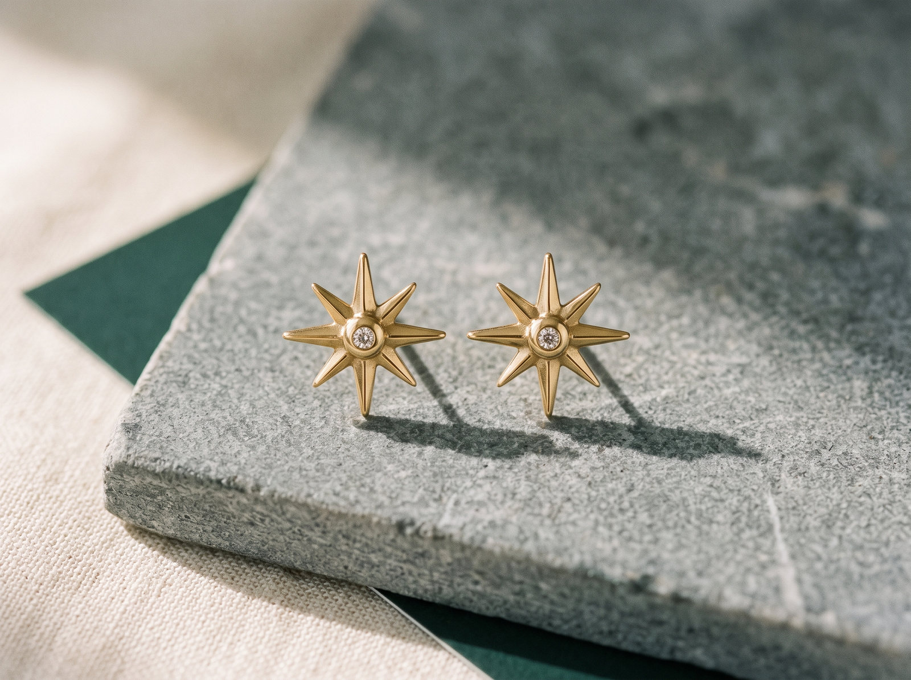
Etsy metni
Başlık 82/140
14K Gold North Star Stud Earrings, Lab Grown White Sapphire, Eight-Point Starburst
Etiketler (13)
14k gold earrings, gold stud earrings, north star earrings, star stud earrings, lab grown sapphire, celestial jewelry, starburst studs, bethlehem star, christmas gift, gift for her, minimalist studs, solid gold studs, everyday earrings
Malzemeler
14k yellow gold, lab grown white sapphire, 14k gold earring posts, 14k gold friction backs
Açıklama
An eight-pointed star in 14k gold, with a flush-set lab-grown white sapphire at the center of each stud. Bright faceted ridges run along every point, so the pair catches light at a small size, an easy Christmas gift that is worn all year. THE PIECE Each stud is an eight-pointed star: four long points 11.4 mm tip to tip and four short points 7.6 mm tip to tip. The center boss is 3.4 mm across and 1.8 mm thick. Every point has straight side walls 0.6 mm high and a low two-facet ridge, and ends in a rounded tip 0.8 mm wide. The back is flat polished gold. GOLD WEIGHT 1.55 g of 14k gold for the pair, counting both posts and friction backs. On the scale the finished pair weighs 1.56 g in total with the stones. Each pair is weighed after finishing and checked against this design weight. STONES Two 2.0 mm round lab-grown white sapphires, one per stud, 0.068 ct in total. Each is flush set, table level with the gold, over a small hole that lets light and cleaning water through. The stones are set last, after all polishing. LENGTH AND FIT Each star measures 11.4 mm across the long points. A straight 14k gold post, 0.76 mm thick and 11.1 mm long, with a 14k gold friction back. The post sits just above the center, so the star stays upright on the lobe. HOW IT IS MADE Made to order. Each star is cast in 14k gold in one piece, then the ridges are cut bright and polished. There is no solder: the post is laser welded into a small socket, so it keeps its hardness. The sapphire is set cold, after the last polish. CARE Wipe with a soft dry cloth, or wash in warm water with a drop of mild soap and a soft brush. Keep lotion out of the small hole behind the stone. No bleach or chlorine. GIFTING Arrives in a gift box, ready to give. Made to order. The processing time is shown at checkout.
Atölye kartı
Uzun uc-uca 11.4 mm, kisa uc-uca 7.6 mm (stud <=12). Gobek Ø3.4 x 1.8 mm bitmis (eski Ø3.2). Isin kesiti: yan duvar (flank) bitmis 0.6 mm SABIT (model 0.8) + ustte iki fasetli alcak sirt; kesit alani A = gen. x (sirt + 0.6)/2. Uzun isin L4.0, gen. 1.5 -> 0.8, sirt tepesi 1.5 -> 0.6 (ucta sirt yan duvara iner); kisa isin L2.1, gen. 1.1 -> 0.8, sirt 1.2 -> 0.6. Uclar 0.8 mm gen., r0.4. Isin kokleri toplami 10.4 mm < gobek cevresi 10.68 mm (bindirme yok). Civi soketi Ø0.8 x 0.5, gobek merkezinin 1.25 mm ustu (soket 0.85-1.65 mm, gobek r1.7 icinde; tas deligine 0.40 mm). Civi 0.76 x 11.1 mm. Model +0.2 (sirtta +0.3).
Tek parca dokum 14K sari. Isinlar duz yan duvarli kama kesit + iki fasetli alcak sirt (bicak sirt degil). Yolluk gobek arkasina (en kalin nokta). Gobekte Ø0.9 boydan boya tas deligi dokumde pilot, sonra delinir. Civi: satin alinan sert cekme Stuller 1800, gobek icindeki Ø0.8 x 0.5 sokete LAZER (lehim yok, civi temperini korur). Tas en son, soguk flush. Mine yok, hollow yok, montaj parcasi yok.
Tezgâh sırası
- CAD: kapali kati; isin kesiti yan duvar 0.8 (model) + iki fasetli sirt; gobek Ø3.4 + Ø0.9 pilot; arka soket Ø0.8 x 0.5 merkezin 1.25 mm ustunde; model +0.2 (sirt +0.3).
- Recine baski -> vakum dokum 14K sari; yolluk gobek arkasina.
- Yolluk kesimi, tesviye; kumpasla isin ucu 0.8 gen. ve yan duvar >=0.6, gobek 1.8 kontrolu.
- Faset sirtlarinin elmas tras kesimi + on cila (yan duvar 0.6 altina inmeden).
- Civiyi sokete oturt, dusuk guc lazer; burgu testi.
- Tas yuvasi: Ø0.9 delik kontrol, Ø2.0 yuva frezesi; lab safiri kumpasla olc.
- 2.0 mm lab beyaz safir flush oturtma (itme/burnisher), tabla altin kotunda.
- Son cila + ultrasonik (mine yok, guvenli).
- QC: cift 1.55 g +-0.05; tas sallanma testi; civi dikligi; arkalik tutusu; uclarda capak yok.
Malzeme listesi
- Alasim: 14K sari; renk birligi icin mineli parcalarla AYNI cinkosuz alasim lotu (Otto Frei 846-180 bazli); mine yok, cinko sart degil; dokum metali ~1.06 g/cift (govde x 1.15)
- Taslar: 2 x 2.0 mm lab-grown beyaz safir yuvarlak brilyant, 0.034 ct/adet = 0.068 ct
- 2 x Stuller 1800 14KY sert cekme friction civi 0.76 x 11.1 mm (0.0658 g/adet = 0.132 g)
- 2 x 14K sari friction arkalik 5-6.3 mm (0.25 g/adet VARSAYIM = 0.50 g; KANIT 0.2-0.4 g kaynaksiz - tedarikci numunesi tartilmadan CAD onayi yok)
- GRAM DOKUMU (cift, x2 x 0.01307 g/mm3): gobek O3.4 x 1.8: +16.34 mm3 -> +0.4272 g; 4 uzun isin L4.0, w1.5->0.8, sirt t1.5->0.6, yan duvar 0.6 sabit: A=w(t+0.6)/2: +15.60 mm3 -> +0.4078 g; 4 kisa isin L2.1, w1.1->0.8, sirt t1.2->0.6, yan duvar 0.6: +6.05 mm3 -> +0.1581 g; 2.0 tas yuvasi + O0.9 delik: -2.61 mm3 -> -0.0682 g; civi soketi O0.8x0.5 (merkezden 1.25): -0.25 mm3 -> -0.0066 g; civi 2 x Stuller 1800 0.76x11.1 = 0.1316 g; arkalik 2 x 0.25 g (varsayim) = 0.50 g => govde 0.9183 g, ALTIN 1.550 g (bant 1.40-1.75, tavana pay 0.200 g)
Arıza modları
| Arıza | Tasarım nasıl önlüyor |
|---|---|
| Isin ucunda ince yan duvar / eksik dolum | Yan duvar bitmis 0.6 mm her noktada sabit (model 0.8); bicak sirt kesit yasak; yolluk gobekte, dolum uclara. |
| Tas gevsemesi / dusmesi | Ev sahibi 1.8 mm (KANIT 2.0 mm tas icin 1.8), yanal duvar 0.70 mm (>=0.45); tas en son soguk. |
| Civi egilmesi / kopmasi | Sert cekme civi lazerle (lehim tavlamasi yok), soket tamamen gobek icinde; burgu testi. |
| Stud'in one devrilmesi | Civi merkezin 1.25 mm ustunde, kutle merkezinin ustunde. |
| Uclarin kiyafete takilmasi | Tum uclar r0.4. |
Tolerans
| Kural | Değer | |
|---|---|---|
| L1 karat | 14K | ✓ |
| L4 ev sahibi kalinligi (2.0 mm tas >=1.8) | 1.8 mm | ✓ |
| L4 yanal duvar (1.8-2.5 mm tas >=0.45) | (3.4-2.0)/2 = 0.70 mm | ✓ |
| L4 alt delik, derinlik <=2 x cap | Ø0.9, 0.95 mm | ✓ |
| L5 dekoratif min >=0.6 | yan duvar 0.6 sabit; uc 0.8 x 0.6 | ✓ |
| L5 yapisal min >=0.8 | gobek 1.8; isin koku 1.5/1.2 | ✓ |
| L5 elemanlar arasi >=0.3 | soket-tas deligi 0.40 mm | ✓ |
| L5 uc r>=0.4 | 8 uc r0.4 | ✓ |
| L7 cift altin 1.40-1.75 (bulgu dahil) | 1.550 g | ✓ |
| L9 stud <=12 mm | 11.4 mm | ✓ |
| L3 lehim | yok (lazer) | ✓ |
| L12 tek kahraman | 8 kollu fasetli yildiz + merkez tas | ✓ |
Görsel promptları (16)
- 01Hero / arama küçük resmi: tek ürün, marka natürmortu, 4:3.Referanssız
Quiet luxury editorial still-life product photography. Warm ivory linen ground, honed grey stone slab, a sliver of deep jade-green matte card. Soft directional window light from upper left, long soft shadow, shallow depth of field. Solid yellow gold with warm antique tone. Restrained heirloom mood. No text, no logo, no glitter, no Christmas decoration. The piece: Pair of 14K yellow gold stud earrings, each an eight-pointed star. Four long points measure 11.4 mm tip to tip and four short points 7.6 mm tip to tip, alternating. Every point has straight side walls 0.6 mm high and a low two-facet ridge along its center line from the center to the tip, finished bright, and ends in a rounded tip 0.8 mm wide. The center is a raised round boss 3.4 mm across and 1.8 mm thick holding one 2.0 mm round white lab-grown sapphire set flush, table level with the gold. High-polish yellow gold throughout. The stones are exactly these and no others: one 2.0 mm round lab-grown white sapphire flush-set at the center of each star, two in the pair. No other stone and no empty setting anywhere on the piece. The piece has no enamel and no colour: every surface is yellow gold. The pair lies side by side on the honed grey stone slab, both fronts facing the camera, about 15 mm apart, posts hidden underneath; exactly two earrings. Seen from about 30 degrees above with a 100 mm macro lens, the piece in razor-sharp focus, filling about 45 percent of the frame width, centred with generous empty margin on all four sides. No people and no hands.
Alt metin 14K gold eight-pointed star stud earrings with a flush-set lab grown white sapphire center
- 02Takılı hâli: ölçek ve duruş. Hero'dan sonra dönüşümü en çok etkileyen kare.Referans: hero kırpımı
Quiet luxury editorial photography in warm ivory, stone grey and deep jade-green tones, soft directional window light from the upper left, true colour, fine film grain, no heavy retouching. No text, no logo, no watermark, no glitter. The attached reference image is a crop of this exact piece: keep its shape, proportions, gold colour and stones exactly as in the reference. The piece: Pair of 14K yellow gold stud earrings, each an eight-pointed star. Four long points measure 11.4 mm tip to tip and four short points 7.6 mm tip to tip, alternating. Every point has straight side walls 0.6 mm high and a low two-facet ridge along its center line from the center to the tip, finished bright, and ends in a rounded tip 0.8 mm wide. The center is a raised round boss 3.4 mm across and 1.8 mm thick holding one 2.0 mm round white lab-grown sapphire set flush, table level with the gold. High-polish yellow gold throughout. The stones are exactly these and no others: one 2.0 mm round lab-grown white sapphire flush-set at the center of each star, two in the pair. No other stone and no empty setting anywhere on the piece. The piece has no enamel and no colour: every surface is yellow gold. One earring worn on a woman's left earlobe, side profile, hair tucked behind the ear, cropped tight from cheekbone to jaw; only one ear is in the frame and exactly one earring is visible; no other earrings and no piercings elsewhere; true to scale, the main element measures about 11.4 mm across.
Alt metin 14K gold eight-pointed star stud earrings with a flush-set lab grown white sapphire center, worn
- 03Makro işçilik: fiyatı meşrulaştıran detay (mine yüzeyi, flush taş, kenar bitimi).Referans: hero kırpımı
Quiet luxury editorial photography in warm ivory, stone grey and deep jade-green tones, soft directional window light from the upper left, true colour, fine film grain, no heavy retouching. No text, no logo, no watermark, no glitter. The attached reference image is a crop of this exact piece: keep its shape, proportions, gold colour and stones exactly as in the reference. The piece: Pair of 14K yellow gold stud earrings, each an eight-pointed star. Four long points measure 11.4 mm tip to tip and four short points 7.6 mm tip to tip, alternating. Every point has straight side walls 0.6 mm high and a low two-facet ridge along its center line from the center to the tip, finished bright, and ends in a rounded tip 0.8 mm wide. The center is a raised round boss 3.4 mm across and 1.8 mm thick holding one 2.0 mm round white lab-grown sapphire set flush, table level with the gold. High-polish yellow gold throughout. The stones are exactly these and no others: one 2.0 mm round lab-grown white sapphire flush-set at the center of each star, two in the pair. No other stone and no empty setting anywhere on the piece. The piece has no enamel and no colour: every surface is yellow gold. Extreme close-up macro, 100 mm macro lens: The raised center boss with its flush-set 2.0 mm lab-grown white sapphire level with the gold, and the bright two-facet ridges running out to the rounded tips. The rest of the piece falls away into soft focus on warm-ivory linen.
Alt metin Close-up of the flush-set lab-grown white sapphire in the faceted star center
- 04Elde ölçek: mm'yi parmak ucuna çevirir, 'beklediğimden küçük' iadesini önler.Referans: hero kırpımı
Quiet luxury editorial photography in warm ivory, stone grey and deep jade-green tones, soft directional window light from the upper left, true colour, fine film grain, no heavy retouching. No text, no logo, no watermark, no glitter. The attached reference image is a crop of this exact piece: keep its shape, proportions, gold colour and stones exactly as in the reference. The piece: Pair of 14K yellow gold stud earrings, each an eight-pointed star. Four long points measure 11.4 mm tip to tip and four short points 7.6 mm tip to tip, alternating. Every point has straight side walls 0.6 mm high and a low two-facet ridge along its center line from the center to the tip, finished bright, and ends in a rounded tip 0.8 mm wide. The center is a raised round boss 3.4 mm across and 1.8 mm thick holding one 2.0 mm round white lab-grown sapphire set flush, table level with the gold. High-polish yellow gold throughout. The stones are exactly these and no others: one 2.0 mm round lab-grown white sapphire flush-set at the center of each star, two in the pair. No other stone and no empty setting anywhere on the piece. The piece has no enamel and no colour: every surface is yellow gold. Close-up for scale against a plain warm-ivory background thrown softly out of focus: one earring held between the thumb and index finger of a woman's hand by its edges, front facing the camera; the second earring is not in the frame; true to scale, the main element measures about 11.4 mm across, a fingertip is about 16 mm wide; it is the only jewellery in the image; anatomically correct hands with five fingers, short natural unpolished nails.
Alt metin 14K gold eight-pointed star stud earrings with a flush-set lab grown white sapphire center, held between fingers for scale
- 05Arka ve bulgular: dolu gövde, kilit / çivi / iğne; sağlamlık sorusunu cevaplar.Referans: hero kırpımı
Quiet luxury editorial photography in warm ivory, stone grey and deep jade-green tones, soft directional window light from the upper left, true colour, fine film grain, no heavy retouching. No text, no logo, no watermark, no glitter. The attached reference image is a crop of this exact piece: keep its shape, proportions, gold colour and stones exactly as in the reference. The piece: Pair of 14K yellow gold stud earrings, each an eight-pointed star. Four long points measure 11.4 mm tip to tip and four short points 7.6 mm tip to tip, alternating. Every point has straight side walls 0.6 mm high and a low two-facet ridge along its center line from the center to the tip, finished bright, and ends in a rounded tip 0.8 mm wide. The center is a raised round boss 3.4 mm across and 1.8 mm thick holding one 2.0 mm round white lab-grown sapphire set flush, table level with the gold. High-polish yellow gold throughout. The stones are exactly these and no others: one 2.0 mm round lab-grown white sapphire flush-set at the center of each star, two in the pair. No other stone and no empty setting anywhere on the piece. The piece has no enamel and no colour: every surface is yellow gold. The back of the piece, top-down on honed grey stone: A flat solid gold back with a small round hole under the stone and a straight gold post set just above the center, with a gold friction back.
Alt metin Back of the stud earrings showing the flat solid gold back, the hole under the stone and the straight post
- 06Tam boy / çift / mekanizma: uzunluk, ayar ve ne geldiğini tek karede gösterir.Referans: hero kırpımı
Quiet luxury editorial photography in warm ivory, stone grey and deep jade-green tones, soft directional window light from the upper left, true colour, fine film grain, no heavy retouching. No text, no logo, no watermark, no glitter. The attached reference image is a crop of this exact piece: keep its shape, proportions, gold colour and stones exactly as in the reference. The piece: Pair of 14K yellow gold stud earrings, each an eight-pointed star. Four long points measure 11.4 mm tip to tip and four short points 7.6 mm tip to tip, alternating. Every point has straight side walls 0.6 mm high and a low two-facet ridge along its center line from the center to the tip, finished bright, and ends in a rounded tip 0.8 mm wide. The center is a raised round boss 3.4 mm across and 1.8 mm thick holding one 2.0 mm round white lab-grown sapphire set flush, table level with the gold. High-polish yellow gold throughout. The stones are exactly these and no others: one 2.0 mm round lab-grown white sapphire flush-set at the center of each star, two in the pair. No other stone and no empty setting anywhere on the piece. The piece has no enamel and no colour: every surface is yellow gold. The pair laid flat side by side on warm-ivory linen, top-down, both fronts to the camera, mirror-symmetric, about 15 mm apart, exactly two earrings.
Alt metin 14K gold eight-pointed star stud earrings with a flush-set lab grown white sapphire center, pair
- 07Yan profil: kalınlık ve kütle, düz baskı değil gerçek altın olduğunu gösterir.Referans: hero kırpımı
Quiet luxury editorial photography in warm ivory, stone grey and deep jade-green tones, soft directional window light from the upper left, true colour, fine film grain, no heavy retouching. No text, no logo, no watermark, no glitter. The attached reference image is a crop of this exact piece: keep its shape, proportions, gold colour and stones exactly as in the reference. The piece: Pair of 14K yellow gold stud earrings, each an eight-pointed star. Four long points measure 11.4 mm tip to tip and four short points 7.6 mm tip to tip, alternating. Every point has straight side walls 0.6 mm high and a low two-facet ridge along its center line from the center to the tip, finished bright, and ends in a rounded tip 0.8 mm wide. The center is a raised round boss 3.4 mm across and 1.8 mm thick holding one 2.0 mm round white lab-grown sapphire set flush, table level with the gold. High-polish yellow gold throughout. The stones are exactly these and no others: one 2.0 mm round lab-grown white sapphire flush-set at the center of each star, two in the pair. No other stone and no empty setting anywhere on the piece. The piece has no enamel and no colour: every surface is yellow gold. Side profile at eye level on honed grey stone, the camera level with the piece: In side profile the center boss stands 1.8 mm thick and each point slopes down to 0.6 mm at its rounded tip, across a height of 11.4 mm.
Alt metin Side profile of the stud earrings showing its thickness
- 08Kış yaşam stili: sezonu Noel dekoru olmadan kurar.Referans: hero kırpımı
Quiet luxury editorial photography in warm ivory, stone grey and deep jade-green tones, soft directional window light from the upper left, true colour, fine film grain, no heavy retouching. No text, no logo, no watermark, no glitter. The attached reference image is a crop of this exact piece: keep its shape, proportions, gold colour and stones exactly as in the reference. The piece: Pair of 14K yellow gold stud earrings, each an eight-pointed star. Four long points measure 11.4 mm tip to tip and four short points 7.6 mm tip to tip, alternating. Every point has straight side walls 0.6 mm high and a low two-facet ridge along its center line from the center to the tip, finished bright, and ends in a rounded tip 0.8 mm wide. The center is a raised round boss 3.4 mm across and 1.8 mm thick holding one 2.0 mm round white lab-grown sapphire set flush, table level with the gold. High-polish yellow gold throughout. The stones are exactly these and no others: one 2.0 mm round lab-grown white sapphire flush-set at the center of each star, two in the pair. No other stone and no empty setting anywhere on the piece. The piece has no enamel and no colour: every surface is yellow gold. Winter afternoon light: three-quarter view of a woman with dark hair pulled back into a low knot, ivory turtleneck sweater, cropped below the eyes; exactly one earring visible on the near ear; it is the only jewellery in the image.
Alt metin 14K gold eight-pointed star stud earrings with a flush-set lab grown white sapphire center, styled with winter knitwear
- 09Hediye kutusu: Noel alıcısının ilk sorusu, hediyeye hazır mı?Referans: hero kırpımı
Quiet luxury editorial photography in warm ivory, stone grey and deep jade-green tones, soft directional window light from the upper left, true colour, fine film grain, no heavy retouching. No text, no logo, no watermark, no glitter. The attached reference image is a crop of this exact piece: keep its shape, proportions, gold colour and stones exactly as in the reference. The piece: Pair of 14K yellow gold stud earrings, each an eight-pointed star. Four long points measure 11.4 mm tip to tip and four short points 7.6 mm tip to tip, alternating. Every point has straight side walls 0.6 mm high and a low two-facet ridge along its center line from the center to the tip, finished bright, and ends in a rounded tip 0.8 mm wide. The center is a raised round boss 3.4 mm across and 1.8 mm thick holding one 2.0 mm round white lab-grown sapphire set flush, table level with the gold. High-polish yellow gold throughout. The stones are exactly these and no others: one 2.0 mm round lab-grown white sapphire flush-set at the center of each star, two in the pair. No other stone and no empty setting anywhere on the piece. The piece has no enamel and no colour: every surface is yellow gold. Top-down: the pair side by side, fronts up inside a small open square gift box in plain warm-ivory card with a soft ivory insert, the lid set beside it, a length of narrow deep jade-green ribbon untied beside the box, on honed grey stone. No branding, no printed pattern, no tissue paper, no Christmas decoration, exactly one box.
Alt metin 14K gold eight-pointed star stud earrings with a flush-set lab grown white sapphire center in a gift box
- 10Gerçek renk: nötr gün ışığında altın ve mine rengi; renk kaynaklı iadeyi azaltır.Referans: hero kırpımı
Quiet luxury editorial photography in warm ivory, stone grey and deep jade-green tones, soft directional window light from the upper left, true colour, fine film grain, no heavy retouching. No text, no logo, no watermark, no glitter. The attached reference image is a crop of this exact piece: keep its shape, proportions, gold colour and stones exactly as in the reference. The piece: Pair of 14K yellow gold stud earrings, each an eight-pointed star. Four long points measure 11.4 mm tip to tip and four short points 7.6 mm tip to tip, alternating. Every point has straight side walls 0.6 mm high and a low two-facet ridge along its center line from the center to the tip, finished bright, and ends in a rounded tip 0.8 mm wide. The center is a raised round boss 3.4 mm across and 1.8 mm thick holding one 2.0 mm round white lab-grown sapphire set flush, table level with the gold. High-polish yellow gold throughout. The stones are exactly these and no others: one 2.0 mm round lab-grown white sapphire flush-set at the center of each star, two in the pair. No other stone and no empty setting anywhere on the piece. The piece has no enamel and no colour: every surface is yellow gold. Colour-accurate reference shot: the piece alone, top-down on plain matte white-ivory paper under even neutral north daylight, no shadow drama, no props, the piece centred and filling half the frame.
Alt metin 14K gold eight-pointed star stud earrings with a flush-set lab grown white sapphire center in neutral daylight, true colour
- 11Ölçü grafiği tabanı: sağ üçte bir boş; mm etiketleri sonra eklenir.Referans: hero kırpımı
Quiet luxury editorial photography in warm ivory, stone grey and deep jade-green tones, soft directional window light from the upper left, true colour, fine film grain, no heavy retouching. No text, no logo, no watermark, no glitter. The attached reference image is a crop of this exact piece: keep its shape, proportions, gold colour and stones exactly as in the reference. The piece: Pair of 14K yellow gold stud earrings, each an eight-pointed star. Four long points measure 11.4 mm tip to tip and four short points 7.6 mm tip to tip, alternating. Every point has straight side walls 0.6 mm high and a low two-facet ridge along its center line from the center to the tip, finished bright, and ends in a rounded tip 0.8 mm wide. The center is a raised round boss 3.4 mm across and 1.8 mm thick holding one 2.0 mm round white lab-grown sapphire set flush, table level with the gold. High-polish yellow gold throughout. The stones are exactly these and no others: one 2.0 mm round lab-grown white sapphire flush-set at the center of each star, two in the pair. No other stone and no empty setting anywhere on the piece. The piece has no enamel and no colour: every surface is yellow gold. The piece alone, top-down on plain warm-ivory paper, placed in the left two thirds of the frame; the right third is empty paper for dimension labels to be added later; even soft light, no props.
Alt metin 14K gold eight-pointed star stud earrings with a flush-set lab grown white sapphire center with space for dimensions
- 12El işçiliği: siparişe üretim hikâyesi, tezgâhta parça.Referans: hero kırpımı
Quiet luxury editorial photography in warm ivory, stone grey and deep jade-green tones, soft directional window light from the upper left, true colour, fine film grain, no heavy retouching. No text, no logo, no watermark, no glitter. The attached reference image is a crop of this exact piece: keep its shape, proportions, gold colour and stones exactly as in the reference. The piece: Pair of 14K yellow gold stud earrings, each an eight-pointed star. Four long points measure 11.4 mm tip to tip and four short points 7.6 mm tip to tip, alternating. Every point has straight side walls 0.6 mm high and a low two-facet ridge along its center line from the center to the tip, finished bright, and ends in a rounded tip 0.8 mm wide. The center is a raised round boss 3.4 mm across and 1.8 mm thick holding one 2.0 mm round white lab-grown sapphire set flush, table level with the gold. High-polish yellow gold throughout. The stones are exactly these and no others: one 2.0 mm round lab-grown white sapphire flush-set at the center of each star, two in the pair. No other stone and no empty setting anywhere on the piece. The piece has no enamel and no colour: every surface is yellow gold. The finished piece lying on a worn wooden jeweller's bench pin beside a steel burnisher, a fine half-round file and a pair of brass tweezers, warm lamp light, shallow depth of field, the piece in sharp focus; no hands.
Alt metin 14K gold eight-pointed star stud earrings with a flush-set lab grown white sapphire center on a jeweller's bench
- 13Motifin anlamı: sol üçte bir boş; sembol hikâyesi metni sonra eklenir.Referans: hero kırpımı
Quiet luxury editorial photography in warm ivory, stone grey and deep jade-green tones, soft directional window light from the upper left, true colour, fine film grain, no heavy retouching. No text, no logo, no watermark, no glitter. The attached reference image is a crop of this exact piece: keep its shape, proportions, gold colour and stones exactly as in the reference. The piece: Pair of 14K yellow gold stud earrings, each an eight-pointed star. Four long points measure 11.4 mm tip to tip and four short points 7.6 mm tip to tip, alternating. Every point has straight side walls 0.6 mm high and a low two-facet ridge along its center line from the center to the tip, finished bright, and ends in a rounded tip 0.8 mm wide. The center is a raised round boss 3.4 mm across and 1.8 mm thick holding one 2.0 mm round white lab-grown sapphire set flush, table level with the gold. High-polish yellow gold throughout. The stones are exactly these and no others: one 2.0 mm round lab-grown white sapphire flush-set at the center of each star, two in the pair. No other stone and no empty setting anywhere on the piece. The piece has no enamel and no colour: every surface is yellow gold. The piece alone, top-down on a deep jade-green matte card, placed in the right two thirds of the frame; the left third is empty card for a caption to be added later; soft directional light.
Alt metin 14K gold eight-pointed star stud earrings with a flush-set lab grown white sapphire center on a deep green card
- 14Yıl boyu takılır: 'yalnız Noel' itirazını kırar.Referans: hero kırpımı
Quiet luxury editorial photography in warm ivory, stone grey and deep jade-green tones, soft directional window light from the upper left, true colour, fine film grain, no heavy retouching. No text, no logo, no watermark, no glitter. The attached reference image is a crop of this exact piece: keep its shape, proportions, gold colour and stones exactly as in the reference. The piece: Pair of 14K yellow gold stud earrings, each an eight-pointed star. Four long points measure 11.4 mm tip to tip and four short points 7.6 mm tip to tip, alternating. Every point has straight side walls 0.6 mm high and a low two-facet ridge along its center line from the center to the tip, finished bright, and ends in a rounded tip 0.8 mm wide. The center is a raised round boss 3.4 mm across and 1.8 mm thick holding one 2.0 mm round white lab-grown sapphire set flush, table level with the gold. High-polish yellow gold throughout. The stones are exactly these and no others: one 2.0 mm round lab-grown white sapphire flush-set at the center of each star, two in the pair. No other stone and no empty setting anywhere on the piece. The piece has no enamel and no colour: every surface is yellow gold. Everyday wear, no season: side profile of a woman with short dark hair, plain white t-shirt collar, soft daylight, cropped from cheekbone to jaw; exactly one earring visible on the near ear.
Alt metin 14K gold eight-pointed star stud earrings with a flush-set lab grown white sapphire center, everyday wear
- 15Hediye anı: duygu; Noel satın alma niyetine bağlar.Referans: hero kırpımı
Quiet luxury editorial photography in warm ivory, stone grey and deep jade-green tones, soft directional window light from the upper left, true colour, fine film grain, no heavy retouching. No text, no logo, no watermark, no glitter. The attached reference image is a crop of this exact piece: keep its shape, proportions, gold colour and stones exactly as in the reference. The piece: Pair of 14K yellow gold stud earrings, each an eight-pointed star. Four long points measure 11.4 mm tip to tip and four short points 7.6 mm tip to tip, alternating. Every point has straight side walls 0.6 mm high and a low two-facet ridge along its center line from the center to the tip, finished bright, and ends in a rounded tip 0.8 mm wide. The center is a raised round boss 3.4 mm across and 1.8 mm thick holding one 2.0 mm round white lab-grown sapphire set flush, table level with the gold. High-polish yellow gold throughout. The stones are exactly these and no others: one 2.0 mm round lab-grown white sapphire flush-set at the center of each star, two in the pair. No other stone and no empty setting anywhere on the piece. The piece has no enamel and no colour: every surface is yellow gold. A gift being given: two pairs of hands across a pale oak table, one pair holding out the small open warm-ivory gift box with the piece visible inside, the other reaching for it, soft warm window light, sleeves of ivory and grey knitwear; exactly one box and one piece of jewellery; anatomically correct hands with five fingers, short natural unpolished nails.
Alt metin 14K gold eight-pointed star stud earrings with a flush-set lab grown white sapphire center given as a gift
- 16Mağaza ızgarası / Pinterest: koyu jade zeminde yüksek kontrast kare.Referans: hero kırpımı
Quiet luxury editorial photography in warm ivory, stone grey and deep jade-green tones, soft directional window light from the upper left, true colour, fine film grain, no heavy retouching. No text, no logo, no watermark, no glitter. The attached reference image is a crop of this exact piece: keep its shape, proportions, gold colour and stones exactly as in the reference. The piece: Pair of 14K yellow gold stud earrings, each an eight-pointed star. Four long points measure 11.4 mm tip to tip and four short points 7.6 mm tip to tip, alternating. Every point has straight side walls 0.6 mm high and a low two-facet ridge along its center line from the center to the tip, finished bright, and ends in a rounded tip 0.8 mm wide. The center is a raised round boss 3.4 mm across and 1.8 mm thick holding one 2.0 mm round white lab-grown sapphire set flush, table level with the gold. High-polish yellow gold throughout. The stones are exactly these and no others: one 2.0 mm round lab-grown white sapphire flush-set at the center of each star, two in the pair. No other stone and no empty setting anywhere on the piece. The piece has no enamel and no colour: every surface is yellow gold. Top-down flat lay of the piece centred on a deep jade-green matte card with a narrow border of warm-ivory linen at the top edge, crisp soft light, the piece filling about 40 percent of the frame so a square crop keeps all of it.
Alt metin 14K gold eight-pointed star stud earrings with a flush-set lab grown white sapphire center, flat lay on deep green
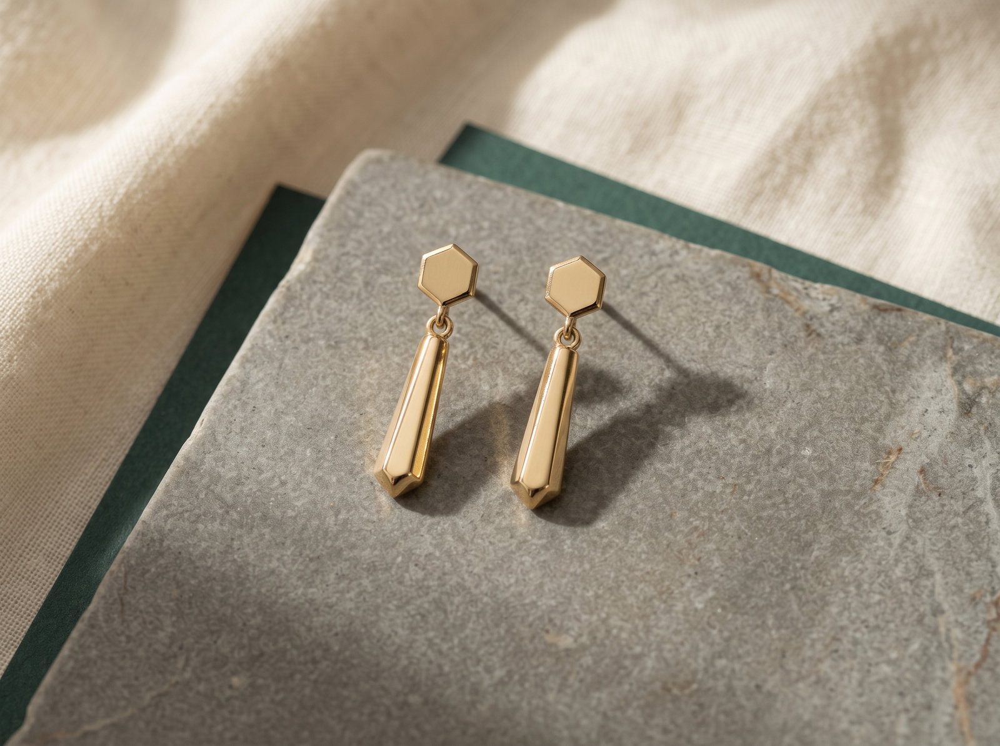
Etsy metni
Başlık 88/140
14K Gold Hexagon Icicle Drop Earrings, Faceted Solid Gold Spike, Geometric Winter Dangle
Etiketler (13)
14k gold earrings, icicle earrings, hexagon earrings, gold drop earrings, spike earrings, faceted gold drop, winter jewelry, geometric earrings, minimalist dangle, christmas gift, gift for her, solid gold drops, long gold earrings
Malzemeler
14k yellow gold, 14k gold earring posts, 14k gold friction backs
Açıklama
A six-sided icicle in solid 14k gold, hanging from a small hexagonal post top, with six long polished facets that flash as it moves. It is a clean geometric drop for winter, a natural Christmas gift that keeps working in every season. THE PIECE A flat hexagonal top, 3.4 mm across flats and 0.9 mm thick, sits on the lobe. From its lower edge a 1.0 mm gold ring holds the icicle by a small closed loop. The icicle is solid, 10.5 mm long, 2.2 mm across flats at the top and 0.8 mm at the rounded tip. Overall length about 17 mm. GOLD WEIGHT 1.68 g of 14k gold for the pair, counting both posts and friction backs. On the scale the finished pair weighs 1.68 g in total. Each pair is weighed after finishing and checked against this design weight. LENGTH AND FIT About 17 mm from the top of the hexagon to the tip of the icicle, so it hangs just below the lobe and swings freely on its ring. A straight 14k gold post, 0.76 mm thick and 11.1 mm long, with a 14k gold friction back. HOW IT IS MADE Made to order. The hexagon and the icicle are cast in 14k gold, the six facets are flattened and polished by hand, and the ring is closed with a 1.0 mm gold insert laser welded at both ends. There is no solder, and the post is laser welded, so it stays hard. CARE Wipe with a soft cloth; warm water and mild soap are fine. Take the earrings off before sleeping so the icicle does not catch on fabric. No bleach or chlorine. GIFTING Arrives in a gift box, ready to give. Made to order. The processing time is shown at checkout.
Atölye kartı
Ust plaka altigen AF3.4 x 0.9 mm, bir duz kenar altta, dar kenar pahi; arka civi pedi Ø1.6 x 0.3 (yerel 1.2; 0.5 soket sonrasi onde 0.7). Plakanin alt kenar ortasinda dokum C-halka: 1.0 kesit, ic Ø1.2, bosluk 1.1 mm (gecen tel 1.0 + 0.1). Sarkit: kati altigen kesik piramit L10.5, AF 2.2 -> 0.8, uc r0.4 kubbe; tepede dokum KAPALI goz 1.0 kesit, ic Ø1.2. Capraz delik yok. Toplam boy ~17 mm (plaka ustunden uca), cividen uca ~15.3 mm (<=30).
Iki dokum parca 14K sari. (A) altigen plaka + arka ped + dokum ACIK C-halka. (B) kati altigen sarkit + tepede dokum kapali goz (eski Ø1.2 capraz delik kaldirildi). Montaj: C-halka B gozune gecirilir; 1.1 mm bosluk 1.0 mm sert cekme 14K tel tapa (1.1 mm boy) ile doldurulur, tapa iki ucundan dolgusuz alin lazeriyle tam nufuz kaynaklanir -> yuk yolu her noktada 1.0 mm kesit (ince dolgu teli YOK). Civi Stuller 1800 pedin Ø0.8 x 0.5 soketine lazer. Mine yok, tas yok, lehim yok, hollow yok.
Tezgâh sırası
- CAD: A plaka + ped + C-halka (bosluk 1.1), B sarkit + tepe gozu; model +0.2 mm.
- Recine baski -> vakum dokum; B yollugu sarkitin kalin tepesine (goz yaninda), dolum uca dogru.
- Tesviye; 6 fasetin duzlenmesi ve elmas cila; uc r0.4 kubbe; goz ici capak alma.
- A pedine civi lazer + burgu testi.
- C-halkayi B gozune gecir; 1.0 mm tel tapayi bosluga oturt, iki ucu dolgusuz alin lazeriyle tam nufuz kaynakla; kaynak dikisi 10x; 2 kg cekme testi.
- Son cila, ultrasonik.
- QC: cift 1.68 g +-0.05; sarkit serbest salinim; uc yuvarlakligi; halka kesiti tapa bolgesinde >=1.0.
Malzeme listesi
- Alasim: 14K sari; renk birligi icin mineli parcalarla AYNI cinkosuz alasim lotu (Otto Frei 846-180 bazli); mine yok, cinko sart degil; dokum metali ~1.18 g/cift (govde x 1.15)
- 2 x Stuller 1800 14KY sert cekme friction civi 0.76 x 11.1 mm (0.0658 g/adet = 0.132 g)
- 2 x 14K sari friction arkalik 5-6.3 mm (0.25 g/adet VARSAYIM = 0.50 g; KANIT 0.2-0.4 g kaynaksiz - tedarikci numunesi tartilmadan CAD onayi yok)
- 2 x 1.0 mm sert cekme 14K sari tel tapa, 1.1 mm boy (0.864 mm3 = ~11 mg/adet, ~23 mg/cift; C-halka boslugu, iki uctan dolgusuz alin lazeri)
- GRAM DOKUMU (cift, x2 x 0.01307 g/mm3): altigen plaka AF3.4 x 0.9 (pah k=0.95): +8.56 mm3 -> +0.2237 g; arka civi pedi O1.6 x 0.3: +0.60 mm3 -> +0.0158 g; civi soketi: -0.25 mm3 -> -0.0066 g; dokum C-halka 1.0 kesit ID1.2, bosluk 1.1 (sahip degeri): +4.20 mm3 -> +0.1098 g; C-halka tapasi 1.0 tel x 1.1: +0.86 mm3 -> +0.0226 g; altigen sarkit kesik piramit AF2.2->0.8, L10.5: +21.95 mm3 -> +0.5736 g; sarkit tepesi dokum kapali goz 1.0 kesit ID1.2: +4.20 mm3 -> +0.1098 g; civi 2 x Stuller 1800 0.76x11.1 = 0.1316 g; arkalik 2 x 0.25 g (varsayim) = 0.50 g => govde 1.0487 g, ALTIN 1.680 g (bant 1.40-1.75, tavana pay 0.070 g)
Arıza modları
| Arıza | Tasarım nasıl önlüyor |
|---|---|
| C-halka kapamasinin acilmasi -> sarkitin dusmesi | Bosluk 1.0 mm tam kesit tel tapayla doldurulur, iki alin kaynagi tam nufuz; her parca 2 kg cekme testi. |
| Sarkit tepe gozu kokunun kopmasi | Goz 1.0 kesit, kok AF2.2 tepe yuzune dokumle bagli (>=1.0); capraz delik ve ince aglar kaldirildi. |
| Soket arkasinda ince metal / lazerin delip gecmesi | Arka ped Ø1.6 x 0.3: yerel 1.2, soket sonrasi onde 0.7 (>=0.6). |
| Sarkit ucunun egilmesi / eksik dolum | Uc AF0.8 bitmis (model 1.0), yolluk kalin tepede; uc r0.4. |
| Sarkitin saca/kiyafete takilmasi | Tum kenarlar kirik, uc yuvarlak. |
Tolerans
| Kural | Değer | |
|---|---|---|
| L1 karat | 14K | ✓ |
| L5 tasiyici halka/goz kesiti >=1.0 (kok dahil) | C-halka 1.0, tapa 1.0, goz 1.0 | ✓ |
| Halka boslugu >= gecen tel + 0.1 | 1.1 >= 1.0 + 0.1 | ✓ |
| Goz ic capi >= gecen tel + 0.1 | Ø1.2 >= 1.1 | ✓ |
| L5 soket arkasi metal >=0.6 | 0.7 mm (ped ile) | ✓ |
| L5 dekoratif >=0.6, uc r>=0.4 | uc AF0.8, r0.4 | ✓ |
| L5 yapisal >=0.8 | plaka 0.9 | ✓ |
| L6 hollow yok | kati sarkit | ✓ |
| L7 cift altin 1.40-1.75; tavana pay >=0.05 | 1.680 g; pay 0.070 | ✓ |
| L9 sarkit <=30 mm | ~15.3 mm cividen uca | ✓ |
| L11 kar tanesi okumasi yok | duz (sirtsiz) altigen plaka + altigen prizma | ✓ |
| L12 tek kahraman | fasetli altigen sarkit | ✓ |
Görsel promptları (16)
- 01Hero / arama küçük resmi: tek ürün, marka natürmortu, 4:3.Referanssız
Quiet luxury editorial still-life product photography. Warm ivory linen ground, honed grey stone slab, a sliver of deep jade-green matte card. Soft directional window light from upper left, long soft shadow, shallow depth of field. Solid yellow gold with warm antique tone. Restrained heirloom mood. No text, no logo, no glitter, no Christmas decoration. The piece: Pair of 14K yellow gold drop earrings. At the earlobe sits a flat hexagonal gold plate 3.4 mm across flats, one flat edge at the bottom, with a narrow beveled edge and a straight post behind. A round gold ring 1.0 mm thick hangs from the middle of that bottom edge and passes through a small closed gold loop on top of a solid six-sided tapered icicle. The icicle is 10.5 mm long, 2.2 mm across flats at the top and 0.8 mm at the rounded tip, with six long flat high-polish facets. Overall length about 17 mm. The piece carries no gemstones at all and no empty settings. The piece has no enamel and no colour: every surface is yellow gold. The pair lies side by side on the honed grey stone slab, both fronts facing the camera, about 15 mm apart, posts hidden underneath; exactly two earrings. Seen from about 30 degrees above with a 100 mm macro lens, the piece in razor-sharp focus, filling about 45 percent of the frame width, centred with generous empty margin on all four sides. No people and no hands.
Alt metin 14K gold hexagon icicle drop earrings, a six-faceted solid gold spike on a ring under a hexagonal post top
- 02Takılı hâli: ölçek ve duruş. Hero'dan sonra dönüşümü en çok etkileyen kare.Referans: hero kırpımı
Quiet luxury editorial photography in warm ivory, stone grey and deep jade-green tones, soft directional window light from the upper left, true colour, fine film grain, no heavy retouching. No text, no logo, no watermark, no glitter. The attached reference image is a crop of this exact piece: keep its shape, proportions and gold colour exactly as in the reference. The piece: Pair of 14K yellow gold drop earrings. At the earlobe sits a flat hexagonal gold plate 3.4 mm across flats, one flat edge at the bottom, with a narrow beveled edge and a straight post behind. A round gold ring 1.0 mm thick hangs from the middle of that bottom edge and passes through a small closed gold loop on top of a solid six-sided tapered icicle. The icicle is 10.5 mm long, 2.2 mm across flats at the top and 0.8 mm at the rounded tip, with six long flat high-polish facets. Overall length about 17 mm. The piece carries no gemstones at all and no empty settings. The piece has no enamel and no colour: every surface is yellow gold. One earring worn on a woman's left earlobe, side profile, hair tucked behind the ear, cropped tight from cheekbone to jaw; only one ear is in the frame and exactly one earring is visible; no other earrings and no piercings elsewhere; true to scale, the main element measures about 17 mm across.
Alt metin 14K gold hexagon icicle drop earrings, a six-faceted solid gold spike on a ring under a hexagonal post top, worn
- 03Makro işçilik: fiyatı meşrulaştıran detay (mine yüzeyi, flush taş, kenar bitimi).Referans: hero kırpımı
Quiet luxury editorial photography in warm ivory, stone grey and deep jade-green tones, soft directional window light from the upper left, true colour, fine film grain, no heavy retouching. No text, no logo, no watermark, no glitter. The attached reference image is a crop of this exact piece: keep its shape, proportions and gold colour exactly as in the reference. The piece: Pair of 14K yellow gold drop earrings. At the earlobe sits a flat hexagonal gold plate 3.4 mm across flats, one flat edge at the bottom, with a narrow beveled edge and a straight post behind. A round gold ring 1.0 mm thick hangs from the middle of that bottom edge and passes through a small closed gold loop on top of a solid six-sided tapered icicle. The icicle is 10.5 mm long, 2.2 mm across flats at the top and 0.8 mm at the rounded tip, with six long flat high-polish facets. Overall length about 17 mm. The piece carries no gemstones at all and no empty settings. The piece has no enamel and no colour: every surface is yellow gold. Extreme close-up macro, 100 mm macro lens: The small closed gold loop on top of the six-sided icicle and the bright straight edges between its six flat facets. The rest of the piece falls away into soft focus on warm-ivory linen.
Alt metin Close-up of the closed loop and six polished facets of the gold icicle
- 04Elde ölçek: mm'yi parmak ucuna çevirir, 'beklediğimden küçük' iadesini önler.Referans: hero kırpımı
Quiet luxury editorial photography in warm ivory, stone grey and deep jade-green tones, soft directional window light from the upper left, true colour, fine film grain, no heavy retouching. No text, no logo, no watermark, no glitter. The attached reference image is a crop of this exact piece: keep its shape, proportions and gold colour exactly as in the reference. The piece: Pair of 14K yellow gold drop earrings. At the earlobe sits a flat hexagonal gold plate 3.4 mm across flats, one flat edge at the bottom, with a narrow beveled edge and a straight post behind. A round gold ring 1.0 mm thick hangs from the middle of that bottom edge and passes through a small closed gold loop on top of a solid six-sided tapered icicle. The icicle is 10.5 mm long, 2.2 mm across flats at the top and 0.8 mm at the rounded tip, with six long flat high-polish facets. Overall length about 17 mm. The piece carries no gemstones at all and no empty settings. The piece has no enamel and no colour: every surface is yellow gold. Close-up for scale against a plain warm-ivory background thrown softly out of focus: one earring held between the thumb and index finger of a woman's hand by its edges, front facing the camera; the second earring is not in the frame; true to scale, the main element measures about 17 mm across, a fingertip is about 16 mm wide; it is the only jewellery in the image; anatomically correct hands with five fingers, short natural unpolished nails.
Alt metin 14K gold hexagon icicle drop earrings, a six-faceted solid gold spike on a ring under a hexagonal post top, held between fingers for scale
- 05Arka ve bulgular: dolu gövde, kilit / çivi / iğne; sağlamlık sorusunu cevaplar.Referans: hero kırpımı
Quiet luxury editorial photography in warm ivory, stone grey and deep jade-green tones, soft directional window light from the upper left, true colour, fine film grain, no heavy retouching. No text, no logo, no watermark, no glitter. The attached reference image is a crop of this exact piece: keep its shape, proportions and gold colour exactly as in the reference. The piece: Pair of 14K yellow gold drop earrings. At the earlobe sits a flat hexagonal gold plate 3.4 mm across flats, one flat edge at the bottom, with a narrow beveled edge and a straight post behind. A round gold ring 1.0 mm thick hangs from the middle of that bottom edge and passes through a small closed gold loop on top of a solid six-sided tapered icicle. The icicle is 10.5 mm long, 2.2 mm across flats at the top and 0.8 mm at the rounded tip, with six long flat high-polish facets. Overall length about 17 mm. The piece carries no gemstones at all and no empty settings. The piece has no enamel and no colour: every surface is yellow gold. The back of the piece, top-down on honed grey stone: A flat solid gold back on the hexagonal plate with a small raised round pad holding the straight post.
Alt metin Back of the drop earrings showing the flat solid gold back of the hexagon and its straight post
- 06Tam boy / çift / mekanizma: uzunluk, ayar ve ne geldiğini tek karede gösterir.Referans: hero kırpımı
Quiet luxury editorial photography in warm ivory, stone grey and deep jade-green tones, soft directional window light from the upper left, true colour, fine film grain, no heavy retouching. No text, no logo, no watermark, no glitter. The attached reference image is a crop of this exact piece: keep its shape, proportions and gold colour exactly as in the reference. The piece: Pair of 14K yellow gold drop earrings. At the earlobe sits a flat hexagonal gold plate 3.4 mm across flats, one flat edge at the bottom, with a narrow beveled edge and a straight post behind. A round gold ring 1.0 mm thick hangs from the middle of that bottom edge and passes through a small closed gold loop on top of a solid six-sided tapered icicle. The icicle is 10.5 mm long, 2.2 mm across flats at the top and 0.8 mm at the rounded tip, with six long flat high-polish facets. Overall length about 17 mm. The piece carries no gemstones at all and no empty settings. The piece has no enamel and no colour: every surface is yellow gold. The pair laid flat side by side on warm-ivory linen, top-down, both fronts to the camera, mirror-symmetric, about 15 mm apart, exactly two earrings.
Alt metin 14K gold hexagon icicle drop earrings, a six-faceted solid gold spike on a ring under a hexagonal post top, pair
- 07Yan profil: kalınlık ve kütle, düz baskı değil gerçek altın olduğunu gösterir.Referans: hero kırpımı
Quiet luxury editorial photography in warm ivory, stone grey and deep jade-green tones, soft directional window light from the upper left, true colour, fine film grain, no heavy retouching. No text, no logo, no watermark, no glitter. The attached reference image is a crop of this exact piece: keep its shape, proportions and gold colour exactly as in the reference. The piece: Pair of 14K yellow gold drop earrings. At the earlobe sits a flat hexagonal gold plate 3.4 mm across flats, one flat edge at the bottom, with a narrow beveled edge and a straight post behind. A round gold ring 1.0 mm thick hangs from the middle of that bottom edge and passes through a small closed gold loop on top of a solid six-sided tapered icicle. The icicle is 10.5 mm long, 2.2 mm across flats at the top and 0.8 mm at the rounded tip, with six long flat high-polish facets. Overall length about 17 mm. The piece carries no gemstones at all and no empty settings. The piece has no enamel and no colour: every surface is yellow gold. Side profile at eye level on honed grey stone, the camera level with the piece: In side profile the hexagonal plate is 0.9 mm thick, 1.2 mm at the post pad, and the icicle is 2.2 mm thick at the top, tapering to 0.8 mm over its 10.5 mm length, about 17 mm overall.
Alt metin Side profile of the drop earrings showing its thickness
- 08Kış yaşam stili: sezonu Noel dekoru olmadan kurar.Referans: hero kırpımı
Quiet luxury editorial photography in warm ivory, stone grey and deep jade-green tones, soft directional window light from the upper left, true colour, fine film grain, no heavy retouching. No text, no logo, no watermark, no glitter. The attached reference image is a crop of this exact piece: keep its shape, proportions and gold colour exactly as in the reference. The piece: Pair of 14K yellow gold drop earrings. At the earlobe sits a flat hexagonal gold plate 3.4 mm across flats, one flat edge at the bottom, with a narrow beveled edge and a straight post behind. A round gold ring 1.0 mm thick hangs from the middle of that bottom edge and passes through a small closed gold loop on top of a solid six-sided tapered icicle. The icicle is 10.5 mm long, 2.2 mm across flats at the top and 0.8 mm at the rounded tip, with six long flat high-polish facets. Overall length about 17 mm. The piece carries no gemstones at all and no empty settings. The piece has no enamel and no colour: every surface is yellow gold. Winter afternoon light: three-quarter view of a woman with dark hair pulled back into a low knot, ivory turtleneck sweater, cropped below the eyes; exactly one earring visible on the near ear; it is the only jewellery in the image.
Alt metin 14K gold hexagon icicle drop earrings, a six-faceted solid gold spike on a ring under a hexagonal post top, styled with winter knitwear
- 09Hediye kutusu: Noel alıcısının ilk sorusu, hediyeye hazır mı?Referans: hero kırpımı
Quiet luxury editorial photography in warm ivory, stone grey and deep jade-green tones, soft directional window light from the upper left, true colour, fine film grain, no heavy retouching. No text, no logo, no watermark, no glitter. The attached reference image is a crop of this exact piece: keep its shape, proportions and gold colour exactly as in the reference. The piece: Pair of 14K yellow gold drop earrings. At the earlobe sits a flat hexagonal gold plate 3.4 mm across flats, one flat edge at the bottom, with a narrow beveled edge and a straight post behind. A round gold ring 1.0 mm thick hangs from the middle of that bottom edge and passes through a small closed gold loop on top of a solid six-sided tapered icicle. The icicle is 10.5 mm long, 2.2 mm across flats at the top and 0.8 mm at the rounded tip, with six long flat high-polish facets. Overall length about 17 mm. The piece carries no gemstones at all and no empty settings. The piece has no enamel and no colour: every surface is yellow gold. Top-down: the pair side by side, fronts up inside a small open square gift box in plain warm-ivory card with a soft ivory insert, the lid set beside it, a length of narrow deep jade-green ribbon untied beside the box, on honed grey stone. No branding, no printed pattern, no tissue paper, no Christmas decoration, exactly one box.
Alt metin 14K gold hexagon icicle drop earrings, a six-faceted solid gold spike on a ring under a hexagonal post top in a gift box
- 10Gerçek renk: nötr gün ışığında altın ve mine rengi; renk kaynaklı iadeyi azaltır.Referans: hero kırpımı
Quiet luxury editorial photography in warm ivory, stone grey and deep jade-green tones, soft directional window light from the upper left, true colour, fine film grain, no heavy retouching. No text, no logo, no watermark, no glitter. The attached reference image is a crop of this exact piece: keep its shape, proportions and gold colour exactly as in the reference. The piece: Pair of 14K yellow gold drop earrings. At the earlobe sits a flat hexagonal gold plate 3.4 mm across flats, one flat edge at the bottom, with a narrow beveled edge and a straight post behind. A round gold ring 1.0 mm thick hangs from the middle of that bottom edge and passes through a small closed gold loop on top of a solid six-sided tapered icicle. The icicle is 10.5 mm long, 2.2 mm across flats at the top and 0.8 mm at the rounded tip, with six long flat high-polish facets. Overall length about 17 mm. The piece carries no gemstones at all and no empty settings. The piece has no enamel and no colour: every surface is yellow gold. Colour-accurate reference shot: the piece alone, top-down on plain matte white-ivory paper under even neutral north daylight, no shadow drama, no props, the piece centred and filling half the frame.
Alt metin 14K gold hexagon icicle drop earrings, a six-faceted solid gold spike on a ring under a hexagonal post top in neutral daylight, true colour
- 11Ölçü grafiği tabanı: sağ üçte bir boş; mm etiketleri sonra eklenir.Referans: hero kırpımı
Quiet luxury editorial photography in warm ivory, stone grey and deep jade-green tones, soft directional window light from the upper left, true colour, fine film grain, no heavy retouching. No text, no logo, no watermark, no glitter. The attached reference image is a crop of this exact piece: keep its shape, proportions and gold colour exactly as in the reference. The piece: Pair of 14K yellow gold drop earrings. At the earlobe sits a flat hexagonal gold plate 3.4 mm across flats, one flat edge at the bottom, with a narrow beveled edge and a straight post behind. A round gold ring 1.0 mm thick hangs from the middle of that bottom edge and passes through a small closed gold loop on top of a solid six-sided tapered icicle. The icicle is 10.5 mm long, 2.2 mm across flats at the top and 0.8 mm at the rounded tip, with six long flat high-polish facets. Overall length about 17 mm. The piece carries no gemstones at all and no empty settings. The piece has no enamel and no colour: every surface is yellow gold. The piece alone, top-down on plain warm-ivory paper, placed in the left two thirds of the frame; the right third is empty paper for dimension labels to be added later; even soft light, no props.
Alt metin 14K gold hexagon icicle drop earrings, a six-faceted solid gold spike on a ring under a hexagonal post top with space for dimensions
- 12El işçiliği: siparişe üretim hikâyesi, tezgâhta parça.Referans: hero kırpımı
Quiet luxury editorial photography in warm ivory, stone grey and deep jade-green tones, soft directional window light from the upper left, true colour, fine film grain, no heavy retouching. No text, no logo, no watermark, no glitter. The attached reference image is a crop of this exact piece: keep its shape, proportions and gold colour exactly as in the reference. The piece: Pair of 14K yellow gold drop earrings. At the earlobe sits a flat hexagonal gold plate 3.4 mm across flats, one flat edge at the bottom, with a narrow beveled edge and a straight post behind. A round gold ring 1.0 mm thick hangs from the middle of that bottom edge and passes through a small closed gold loop on top of a solid six-sided tapered icicle. The icicle is 10.5 mm long, 2.2 mm across flats at the top and 0.8 mm at the rounded tip, with six long flat high-polish facets. Overall length about 17 mm. The piece carries no gemstones at all and no empty settings. The piece has no enamel and no colour: every surface is yellow gold. The finished piece lying on a worn wooden jeweller's bench pin beside a steel burnisher and a fine half-round file, warm lamp light, shallow depth of field, the piece in sharp focus; no hands.
Alt metin 14K gold hexagon icicle drop earrings, a six-faceted solid gold spike on a ring under a hexagonal post top on a jeweller's bench
- 13Motifin anlamı: sol üçte bir boş; sembol hikâyesi metni sonra eklenir.Referans: hero kırpımı
Quiet luxury editorial photography in warm ivory, stone grey and deep jade-green tones, soft directional window light from the upper left, true colour, fine film grain, no heavy retouching. No text, no logo, no watermark, no glitter. The attached reference image is a crop of this exact piece: keep its shape, proportions and gold colour exactly as in the reference. The piece: Pair of 14K yellow gold drop earrings. At the earlobe sits a flat hexagonal gold plate 3.4 mm across flats, one flat edge at the bottom, with a narrow beveled edge and a straight post behind. A round gold ring 1.0 mm thick hangs from the middle of that bottom edge and passes through a small closed gold loop on top of a solid six-sided tapered icicle. The icicle is 10.5 mm long, 2.2 mm across flats at the top and 0.8 mm at the rounded tip, with six long flat high-polish facets. Overall length about 17 mm. The piece carries no gemstones at all and no empty settings. The piece has no enamel and no colour: every surface is yellow gold. The piece alone, top-down on a deep jade-green matte card, placed in the right two thirds of the frame; the left third is empty card for a caption to be added later; soft directional light.
Alt metin 14K gold hexagon icicle drop earrings, a six-faceted solid gold spike on a ring under a hexagonal post top on a deep green card
- 14Yıl boyu takılır: 'yalnız Noel' itirazını kırar.Referans: hero kırpımı
Quiet luxury editorial photography in warm ivory, stone grey and deep jade-green tones, soft directional window light from the upper left, true colour, fine film grain, no heavy retouching. No text, no logo, no watermark, no glitter. The attached reference image is a crop of this exact piece: keep its shape, proportions and gold colour exactly as in the reference. The piece: Pair of 14K yellow gold drop earrings. At the earlobe sits a flat hexagonal gold plate 3.4 mm across flats, one flat edge at the bottom, with a narrow beveled edge and a straight post behind. A round gold ring 1.0 mm thick hangs from the middle of that bottom edge and passes through a small closed gold loop on top of a solid six-sided tapered icicle. The icicle is 10.5 mm long, 2.2 mm across flats at the top and 0.8 mm at the rounded tip, with six long flat high-polish facets. Overall length about 17 mm. The piece carries no gemstones at all and no empty settings. The piece has no enamel and no colour: every surface is yellow gold. Everyday wear, no season: side profile of a woman with short dark hair, plain white t-shirt collar, soft daylight, cropped from cheekbone to jaw; exactly one earring visible on the near ear.
Alt metin 14K gold hexagon icicle drop earrings, a six-faceted solid gold spike on a ring under a hexagonal post top, everyday wear
- 15Hediye anı: duygu; Noel satın alma niyetine bağlar.Referans: hero kırpımı
Quiet luxury editorial photography in warm ivory, stone grey and deep jade-green tones, soft directional window light from the upper left, true colour, fine film grain, no heavy retouching. No text, no logo, no watermark, no glitter. The attached reference image is a crop of this exact piece: keep its shape, proportions and gold colour exactly as in the reference. The piece: Pair of 14K yellow gold drop earrings. At the earlobe sits a flat hexagonal gold plate 3.4 mm across flats, one flat edge at the bottom, with a narrow beveled edge and a straight post behind. A round gold ring 1.0 mm thick hangs from the middle of that bottom edge and passes through a small closed gold loop on top of a solid six-sided tapered icicle. The icicle is 10.5 mm long, 2.2 mm across flats at the top and 0.8 mm at the rounded tip, with six long flat high-polish facets. Overall length about 17 mm. The piece carries no gemstones at all and no empty settings. The piece has no enamel and no colour: every surface is yellow gold. A gift being given: two pairs of hands across a pale oak table, one pair holding out the small open warm-ivory gift box with the piece visible inside, the other reaching for it, soft warm window light, sleeves of ivory and grey knitwear; exactly one box and one piece of jewellery; anatomically correct hands with five fingers, short natural unpolished nails.
Alt metin 14K gold hexagon icicle drop earrings, a six-faceted solid gold spike on a ring under a hexagonal post top given as a gift
- 16Mağaza ızgarası / Pinterest: koyu jade zeminde yüksek kontrast kare.Referans: hero kırpımı
Quiet luxury editorial photography in warm ivory, stone grey and deep jade-green tones, soft directional window light from the upper left, true colour, fine film grain, no heavy retouching. No text, no logo, no watermark, no glitter. The attached reference image is a crop of this exact piece: keep its shape, proportions and gold colour exactly as in the reference. The piece: Pair of 14K yellow gold drop earrings. At the earlobe sits a flat hexagonal gold plate 3.4 mm across flats, one flat edge at the bottom, with a narrow beveled edge and a straight post behind. A round gold ring 1.0 mm thick hangs from the middle of that bottom edge and passes through a small closed gold loop on top of a solid six-sided tapered icicle. The icicle is 10.5 mm long, 2.2 mm across flats at the top and 0.8 mm at the rounded tip, with six long flat high-polish facets. Overall length about 17 mm. The piece carries no gemstones at all and no empty settings. The piece has no enamel and no colour: every surface is yellow gold. Top-down flat lay of the piece centred on a deep jade-green matte card with a narrow border of warm-ivory linen at the top edge, crisp soft light, the piece filling about 40 percent of the frame so a square crop keeps all of it.
Alt metin 14K gold hexagon icicle drop earrings, a six-faceted solid gold spike on a ring under a hexagonal post top, flat lay on deep green
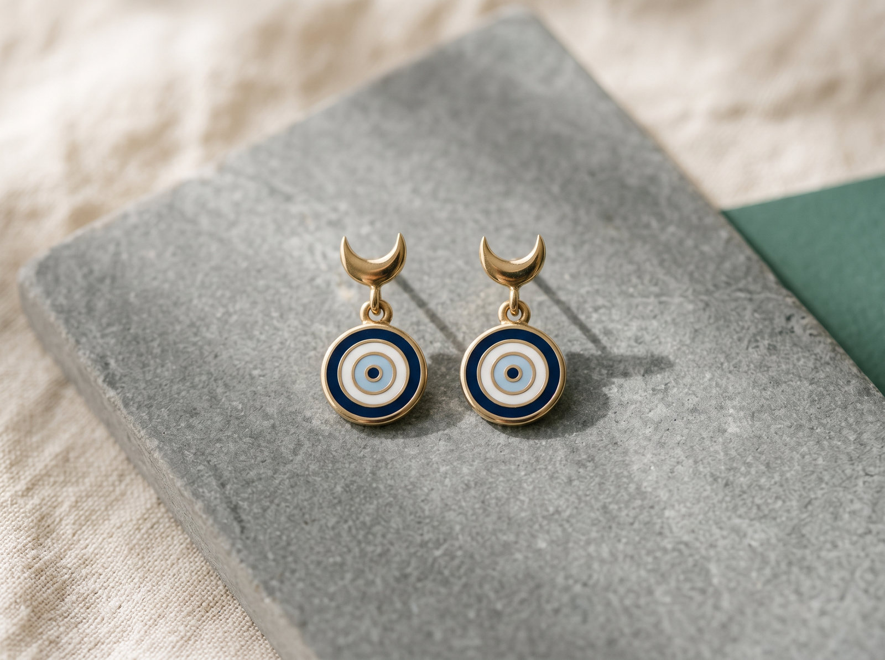
Etsy metni
Başlık 77/140
14K Gold Evil Eye Crescent Drop Earrings, Nazar Enamel Charm, Protection Gift
Etiketler (13)
14k gold earrings, evil eye earrings, nazar earrings, crescent moon, enamel earrings, vitreous enamel, protection amulet, talisman jewelry, gold drop earrings, evil eye jewelry, christmas gift, gift for her, celestial jewelry
Malzemeler
14k yellow gold, vitreous enamel, 14k gold earring posts, 14k gold friction backs
Açıklama
A small gold crescent with a traditional evil eye hanging below it, enamelled in navy-blue, white and ice-blue glass. It is a protection charm in 14k gold, given as a Christmas gift and worn all year. THE PIECE A polished crescent, 4.8 mm wide and 3.2 mm tall with its points up, sits on the lobe. Below it a 1.0 mm gold ring holds a flat disc 5.4 mm across and 1.4 mm thick. The eye on the disc is 4.0 mm across, inside a 0.7 mm polished gold rim. Overall length about 12 mm. GOLD WEIGHT 1.69 g of 14k gold for the pair, counting both posts and friction backs. On the scale the finished pair weighs 1.73 g in total with the enamel. Each pair is weighed after finishing and checked against this design weight. ENAMEL Kiln-fired vitreous enamel (glass), opaque, in the traditional nazar order from the outside inward: a navy-blue ring, a white ring and an ice-blue ring, each 0.5 mm wide, and a navy-blue center dot 1.0 mm across. The colours are laid side by side in one cell and fired together, so each colour edge is soft by a fraction of a millimetre. The enamel sits level with the gold rim or just below it. Glass does not fade, but a hard knock can chip it: keep the earrings away from chlorine and harsh chemicals, and clean the enamel with warm soapy water and a soft brush. LENGTH AND FIT About 12 mm long, sitting just below the lobe; the disc moves freely on its ring. A straight 14k gold post, 0.76 mm thick and 11.1 mm long, with a 14k gold friction back. HOW IT IS MADE Made to order. The crescent and the disc are cast separately in zinc-free 14k gold, and the enamel cell is formed in the casting itself. The enamel is fired four times at no more than 780 C. There is no solder: the post is laser welded to the crescent, which never goes into the kiln, and the ring is closed with a laser weld well away from the enamel. CARE Store the pair on its own so harder pieces do not knock the enamel. Wipe the gold with a soft cloth. No ultrasonic or steam cleaning. GIFTING Arrives in a gift box, ready to give. Made to order. The processing time is shown at checkout.
Atölye kartı
A hilal: dis Ø4.8, ic Ø3.6 (1.2 yukari kacik), alt bant 1.8, uclar 0.8 r0.4, kalinlik 1.0, genislik 4.8, yukseklik 3.2 mm; arka civi pedi Ø1.6 x 0.3 (yerel 1.3); alt bantta dokum C-halka 1.0 kesit, ic Ø1.2, bosluk 1.1. B disk Ø5.4 x 1.4; ustte dokum KAPALI goz 1.0 kesit, ic Ø1.2. Tek yuvarlak hucre Ø4.0, 0.6 derin, taban 0.8, jant 0.70 (arka pah 0.7 x 0.5, dis kenar 0.9). Hucre ici renk bantlari distan iceri: lacivert r1.5-2.0 (0.5), beyaz r1.0-1.5 (0.5), buz mavisi r0.5-1.0 (0.5), lacivert gozbebegi Ø1.0. Toplam ~12 mm.
Iki parca, 14K cinkosuz. (A) hilal + ped + C-halka; civi A'ya lazer; A HICBIR ZAMAN firina girmez. (B) nazar diski + kapali goz; tek champleve hucre DOKUMDE (oyma yok), taban duz, doku yok. Nazar geleneksel sirasi tek hucrede yan yana islak dolumla kurulur (renkler arasi altin duvar yok; 3 renk ayni yumusak seri, ayni sicaklik). B 4 pisirimle bitirilir. Montaj: C-halka B gozune gecirilir; 1.1 mm bosluk 1.0 mm 14K tel tapayla iki uctan dolgusuz alin lazeri, mine maskeli, kaynak noktasi en yakin mineden >=2.5 mm. B'de lehim/kaynak yok. Tas yok.
Tezgâh sırası
- CAD: A hilal + ped + C-halka (bosluk 1.1), B disk + goz + Ø4.0 hucre; hucre koseleri r>=0.2; model +0.2 (hucre derinligi bitmis 0.6).
- Recine baski -> vakum dokum cinkosuz 14K (Zn sertifikali); B yollugu goz karsisina, A yollugu alt banda.
- Tesviye; B hucre tabaninda 10x gozenek kontrolu; hucre temizligi doku birakmadan.
- Seri oncesi pilot: ayni alasim + ayni dokumhaneden renk basina kupon, P1-P4 cevrimiyle pisirilir; igne deligi, kabarcik, catlak ve renk tonu gecmeden uretim yok.
- Yuzey zenginlestirme (depletion gilding) x3-4: ~593 C -> %10 H2SO4 pickle -> durulama (yalniz mineden ONCE; sonra asit yok).
- Islak dolum 1. sarj ince, ICTEN DISA ve renk renk: lacivert gozbebegi Ø1.0 -> buz mavisi bant -> beyaz bant -> dis lacivert bant; her bant ince samur fircayla bir oncekinin kenarina degerek, kuruduktan sonra; bant siniri +-0.1 mm (10x) -> P1 780 C x 1:45 dk.
- 2. sarj -> P2 780 C x 1:45 dk.
- 3. sarj (jant ustune hafif tasan) -> P3 780 C x 1:45 dk.
- Su altinda alundum tas/elmas pedle mineyi jant kotuna (0-0.05 mm alti) DUZ taslama; hucre kenarinda cip kontrolu.
- P4 parlatma pisirimi 770 C x 1:00 dk (toplam 4 pisirim, hepsi <=780 C).
- Hafif sitrik pickle + durulama (H2SO4/HNO3 banyo YOK).
- A: Stuller 1800 civiyi ped soketine lazer + burgu testi (A firin gormez -> civi sert kalir).
- B jant ve arka yuz el cilasi (mine maskeli).
- Montaj: C-halkayi B gozune gecir; mineyi Plasti-tac + gumus siperle maskele; 1.0 mm tapayi bosluga oturt, iki ucu dusuk guc alin lazeri; 2 kg cekme testi.
- QC: cift 1.69 g +-0.05; mine 10x igne deligi/cip; bant sirasi distan iceri lacivert-beyaz-buz mavisi-lacivert; bant genisligi 0.5 +-0.1; mine jant kotunda veya 0-0.05 mm alti.
Malzeme listesi
- Alasim: 14K sari, CINKOSUZ 'enamelable' dokum alasimi (Otto Frei 846-180 no-zinc master alloy ile alasimlanmis; dokumhaneden yazili Zn=0 sertifikasi + DSC solidus), vakum/inert gaz dokum; dokum metali ~1.19 g/cift (govde x 1.15)
- Mine: <=780 C'de olgunlasan kursunsuz yumusak opak mine (or. Soyer soft serisi), renk basina kupon; renk: lacivert, beyaz, buz mavisi (nazar istisnasi: lacivert + beyaz); pisirilmis ~38 mg/cift
- 2 x Stuller 1800 14KY sert cekme friction civi 0.76 x 11.1 mm (0.0658 g/adet = 0.132 g)
- 2 x 14K sari friction arkalik 5-6.3 mm (0.25 g/adet VARSAYIM = 0.50 g; KANIT 0.2-0.4 g kaynaksiz - tedarikci numunesi tartilmadan CAD onayi yok)
- 2 x 1.0 mm sert cekme 14K sari tel tapa, 1.1 mm boy (0.864 mm3 = ~11 mg/adet, ~23 mg/cift; C-halka boslugu, iki uctan dolgusuz alin lazeri)
- GRAM DOKUMU (cift, x2 x 0.01307 g/mm3): A hilal (dogrulayici olcumu 9.15 mm2) x 1.0: +9.15 mm3 -> +0.2392 g; A civi pedi O1.6 x 0.3: +0.60 mm3 -> +0.0158 g; A civi soketi: -0.25 mm3 -> -0.0066 g; A dokum C-halka 1.0 kesit ID1.2, bosluk 1.1: +4.20 mm3 -> +0.1098 g; C-halka tapasi 1.0 tel x 1.1: +0.86 mm3 -> +0.0226 g; B nazar diski O5.4 x 1.4: +32.06 mm3 -> +0.8381 g; B tek yuvarlak hucre O4.0 x 0.6 (4 renk bandi): -7.54 mm3 -> -0.1971 g; B jant arka pahi 0.7x0.5: -2.71 mm3 -> -0.0709 g; B dokum kapali goz 1.0 kesit ID1.2: +4.20 mm3 -> +0.1098 g; civi 2 x Stuller 1800 0.76x11.1 = 0.1316 g; arkalik 2 x 0.25 g (varsayim) = 0.50 g => govde 1.0607 g, ALTIN 1.692 g (bant 1.40-1.75, tavana pay 0.058 g)
Arıza modları
| Arıza | Tasarım nasıl önlüyor |
|---|---|
| Renk bantlarinin birbirine akmasi (altin duvarsiz tek hucre) | Icten disa renk renk ince sarj, her bant kurutulup sonraki; ayni yumusak seri tek sicaklik; kuponla 0.5 mm bant keskinligi onayi; QC bant +-0.1 mm. |
| Beyaz opagin altin uzerinde sararmasi / lacivert ton kaymasi | Renk basina kupon ayni Zn-siz alasimda; pisirim <=780 C, 4 pisirim siniri. |
| Igne deligi / kabarcik (Zn, gozenek) | Yazili Zn=0 alasim, vakum dokum, 10x hucre tabani, kupon. |
| Civi yumusamasi | Civi A'da; A hic firina girmez; sert cekme civi lazerle. |
| C-halka kaynaginda mine catlamasi | Kaynak noktasi mineden >=2.5 mm, maske, dusuk guc; tapa tam kesit. |
| Salinimda hilal uclarinin mineye vurmasi | B hilalin altinda asili; mine jant kotunun 0-0.05 mm altinda, jant 0.70 kenari korur. |
Tolerans
| Kural | Değer | |
|---|---|---|
| L1 karat + cinkosuz alasim | 14K, Zn=0 sertifikali | ✓ |
| L2 hucre derinligi 0.5-0.6 | 0.6 mm | ✓ |
| L2 hucre genisligi >=0.7, derinlik <=2 x gen. | Ø4.0; 0.6 <= 8.0 | ✓ |
| L2 cevre altin duvar >=0.70, taban >=0.8 | jant 0.70, taban 0.8 | ✓ |
| Nazar geleneksel sira (sahip karari) | distan iceri lacivert, beyaz, buz mavisi, lacivert gozbebegi | ✓ |
| L2 renk sayisi (nazar istisnasi lacivert + beyaz), opak | 3: lacivert, beyaz, buz mavisi | ✓ |
| L2/KANIT pisirim <=4, <=780 C | 780/780/780/770 C | ✓ |
| L3 mineli parcada lehim/kaynak | B'de yok; tapa lazeri mineden >=2.5 mm | ✓ |
| L5 tasiyici yuk yolu >=1.0 (kok dahil) | C-halka/tapa/goz 1.0; hilal alt bandi 1.8 x 1.0 | ✓ |
| Halka boslugu >= gecen tel + 0.1 | 1.1 >= 1.1 | ✓ |
| L7 cift altin 1.40-1.75; tavana pay >=0.05 | 1.692 g; pay 0.058 | ✓ |
| L9 sarkit <=30 mm | ~12 mm | ✓ |
| L12 tek kahraman | mineli nazar diski | ✓ |
Görsel promptları (16)
- 01Hero / arama küçük resmi: tek ürün, marka natürmortu, 4:3.Referanssız
Quiet luxury editorial still-life product photography. Warm ivory linen ground, honed grey stone slab, a sliver of deep jade-green matte card. Soft directional window light from upper left, long soft shadow, shallow depth of field. Solid yellow gold with warm antique tone. Restrained heirloom mood. No text, no logo, no glitter, no Christmas decoration. The piece: Pair of 14K yellow gold drop earrings. At the earlobe is a small polished gold crescent, 4.8 mm wide and 3.2 mm tall, points up, with a straight post behind. A round gold ring 1.0 mm thick holds a flat gold disc 5.4 mm across with a polished gold rim 0.7 mm wide. Inside the rim, from the outside inward: a 0.5 mm ring of opaque navy-blue enamel (a deep dark blue), a 0.5 mm ring of opaque white enamel, a 0.5 mm ring of opaque ice-blue enamel (a soft pale powder blue with a grey cast) and a 1.0 mm center dot of opaque navy-blue enamel, smooth, glossy and level with the gold. Overall length about 12 mm. The piece carries no gemstones at all and no empty settings. The only colour on the piece is opaque enamel in one round cell, from the outside inward: a navy-blue ring, a white ring, an ice-blue ring and a navy-blue center dot; every other surface is yellow gold. The pair lies side by side on the honed grey stone slab, both fronts facing the camera, about 15 mm apart, posts hidden underneath; exactly two earrings. Seen from about 30 degrees above with a 100 mm macro lens, the piece in razor-sharp focus, filling about 45 percent of the frame width, centred with generous empty margin on all four sides. No people and no hands.
Alt metin 14K gold crescent moon and evil eye drop earrings in navy-blue, white and ice-blue enamel
- 02Takılı hâli: ölçek ve duruş. Hero'dan sonra dönüşümü en çok etkileyen kare.Referans: hero kırpımı
Quiet luxury editorial photography in warm ivory, stone grey and deep jade-green tones, soft directional window light from the upper left, true colour, fine film grain, no heavy retouching. No text, no logo, no watermark, no glitter. The attached reference image is a crop of this exact piece: keep its shape, proportions, gold colour and enamel colours exactly as in the reference. The piece: Pair of 14K yellow gold drop earrings. At the earlobe is a small polished gold crescent, 4.8 mm wide and 3.2 mm tall, points up, with a straight post behind. A round gold ring 1.0 mm thick holds a flat gold disc 5.4 mm across with a polished gold rim 0.7 mm wide. Inside the rim, from the outside inward: a 0.5 mm ring of opaque navy-blue enamel (a deep dark blue), a 0.5 mm ring of opaque white enamel, a 0.5 mm ring of opaque ice-blue enamel (a soft pale powder blue with a grey cast) and a 1.0 mm center dot of opaque navy-blue enamel, smooth, glossy and level with the gold. Overall length about 12 mm. The piece carries no gemstones at all and no empty settings. The only colour on the piece is opaque enamel in one round cell, from the outside inward: a navy-blue ring, a white ring, an ice-blue ring and a navy-blue center dot; every other surface is yellow gold. One earring worn on a woman's left earlobe, side profile, hair tucked behind the ear, cropped tight from cheekbone to jaw; only one ear is in the frame and exactly one earring is visible; no other earrings and no piercings elsewhere; true to scale, the main element measures about 12 mm across.
Alt metin 14K gold crescent moon and evil eye drop earrings in navy-blue, white and ice-blue enamel, worn
- 03Makro işçilik: fiyatı meşrulaştıran detay (mine yüzeyi, flush taş, kenar bitimi).Referans: hero kırpımı
Quiet luxury editorial photography in warm ivory, stone grey and deep jade-green tones, soft directional window light from the upper left, true colour, fine film grain, no heavy retouching. No text, no logo, no watermark, no glitter. The attached reference image is a crop of this exact piece: keep its shape, proportions, gold colour and enamel colours exactly as in the reference. The piece: Pair of 14K yellow gold drop earrings. At the earlobe is a small polished gold crescent, 4.8 mm wide and 3.2 mm tall, points up, with a straight post behind. A round gold ring 1.0 mm thick holds a flat gold disc 5.4 mm across with a polished gold rim 0.7 mm wide. Inside the rim, from the outside inward: a 0.5 mm ring of opaque navy-blue enamel (a deep dark blue), a 0.5 mm ring of opaque white enamel, a 0.5 mm ring of opaque ice-blue enamel (a soft pale powder blue with a grey cast) and a 1.0 mm center dot of opaque navy-blue enamel, smooth, glossy and level with the gold. Overall length about 12 mm. The piece carries no gemstones at all and no empty settings. The only colour on the piece is opaque enamel in one round cell, from the outside inward: a navy-blue ring, a white ring, an ice-blue ring and a navy-blue center dot; every other surface is yellow gold. Extreme close-up macro, 100 mm macro lens: The evil eye disc with its rings of opaque navy-blue, white and ice-blue enamel around the navy-blue center dot, inside the polished gold rim. The rest of the piece falls away into soft focus on warm-ivory linen.
Alt metin Close-up of the navy-blue, white and ice-blue enamel rings of the evil eye disc
- 04Elde ölçek: mm'yi parmak ucuna çevirir, 'beklediğimden küçük' iadesini önler.Referans: hero kırpımı
Quiet luxury editorial photography in warm ivory, stone grey and deep jade-green tones, soft directional window light from the upper left, true colour, fine film grain, no heavy retouching. No text, no logo, no watermark, no glitter. The attached reference image is a crop of this exact piece: keep its shape, proportions, gold colour and enamel colours exactly as in the reference. The piece: Pair of 14K yellow gold drop earrings. At the earlobe is a small polished gold crescent, 4.8 mm wide and 3.2 mm tall, points up, with a straight post behind. A round gold ring 1.0 mm thick holds a flat gold disc 5.4 mm across with a polished gold rim 0.7 mm wide. Inside the rim, from the outside inward: a 0.5 mm ring of opaque navy-blue enamel (a deep dark blue), a 0.5 mm ring of opaque white enamel, a 0.5 mm ring of opaque ice-blue enamel (a soft pale powder blue with a grey cast) and a 1.0 mm center dot of opaque navy-blue enamel, smooth, glossy and level with the gold. Overall length about 12 mm. The piece carries no gemstones at all and no empty settings. The only colour on the piece is opaque enamel in one round cell, from the outside inward: a navy-blue ring, a white ring, an ice-blue ring and a navy-blue center dot; every other surface is yellow gold. Close-up for scale against a plain warm-ivory background thrown softly out of focus: one earring held between the thumb and index finger of a woman's hand by its edges, front facing the camera; the second earring is not in the frame; true to scale, the main element measures about 12 mm across, a fingertip is about 16 mm wide; it is the only jewellery in the image; anatomically correct hands with five fingers, short natural unpolished nails.
Alt metin 14K gold crescent moon and evil eye drop earrings in navy-blue, white and ice-blue enamel, held between fingers for scale
- 05Arka ve bulgular: dolu gövde, kilit / çivi / iğne; sağlamlık sorusunu cevaplar.Referans: hero kırpımı
Quiet luxury editorial photography in warm ivory, stone grey and deep jade-green tones, soft directional window light from the upper left, true colour, fine film grain, no heavy retouching. No text, no logo, no watermark, no glitter. The attached reference image is a crop of this exact piece: keep its shape, proportions, gold colour and enamel colours exactly as in the reference. The piece: Pair of 14K yellow gold drop earrings. At the earlobe is a small polished gold crescent, 4.8 mm wide and 3.2 mm tall, points up, with a straight post behind. A round gold ring 1.0 mm thick holds a flat gold disc 5.4 mm across with a polished gold rim 0.7 mm wide. Inside the rim, from the outside inward: a 0.5 mm ring of opaque navy-blue enamel (a deep dark blue), a 0.5 mm ring of opaque white enamel, a 0.5 mm ring of opaque ice-blue enamel (a soft pale powder blue with a grey cast) and a 1.0 mm center dot of opaque navy-blue enamel, smooth, glossy and level with the gold. Overall length about 12 mm. The piece carries no gemstones at all and no empty settings. The only colour on the piece is opaque enamel in one round cell, from the outside inward: a navy-blue ring, a white ring, an ice-blue ring and a navy-blue center dot; every other surface is yellow gold. The back of the piece, top-down on honed grey stone: A flat solid gold back on the disc with a beveled edge, and a small raised round pad on the crescent holding the straight post.
Alt metin Back of the drop earrings showing the flat gold back of the disc and the post behind the crescent
- 06Tam boy / çift / mekanizma: uzunluk, ayar ve ne geldiğini tek karede gösterir.Referans: hero kırpımı
Quiet luxury editorial photography in warm ivory, stone grey and deep jade-green tones, soft directional window light from the upper left, true colour, fine film grain, no heavy retouching. No text, no logo, no watermark, no glitter. The attached reference image is a crop of this exact piece: keep its shape, proportions, gold colour and enamel colours exactly as in the reference. The piece: Pair of 14K yellow gold drop earrings. At the earlobe is a small polished gold crescent, 4.8 mm wide and 3.2 mm tall, points up, with a straight post behind. A round gold ring 1.0 mm thick holds a flat gold disc 5.4 mm across with a polished gold rim 0.7 mm wide. Inside the rim, from the outside inward: a 0.5 mm ring of opaque navy-blue enamel (a deep dark blue), a 0.5 mm ring of opaque white enamel, a 0.5 mm ring of opaque ice-blue enamel (a soft pale powder blue with a grey cast) and a 1.0 mm center dot of opaque navy-blue enamel, smooth, glossy and level with the gold. Overall length about 12 mm. The piece carries no gemstones at all and no empty settings. The only colour on the piece is opaque enamel in one round cell, from the outside inward: a navy-blue ring, a white ring, an ice-blue ring and a navy-blue center dot; every other surface is yellow gold. The pair laid flat side by side on warm-ivory linen, top-down, both fronts to the camera, mirror-symmetric, about 15 mm apart, exactly two earrings.
Alt metin 14K gold crescent moon and evil eye drop earrings in navy-blue, white and ice-blue enamel, pair
- 07Yan profil: kalınlık ve kütle, düz baskı değil gerçek altın olduğunu gösterir.Referans: hero kırpımı
Quiet luxury editorial photography in warm ivory, stone grey and deep jade-green tones, soft directional window light from the upper left, true colour, fine film grain, no heavy retouching. No text, no logo, no watermark, no glitter. The attached reference image is a crop of this exact piece: keep its shape, proportions, gold colour and enamel colours exactly as in the reference. The piece: Pair of 14K yellow gold drop earrings. At the earlobe is a small polished gold crescent, 4.8 mm wide and 3.2 mm tall, points up, with a straight post behind. A round gold ring 1.0 mm thick holds a flat gold disc 5.4 mm across with a polished gold rim 0.7 mm wide. Inside the rim, from the outside inward: a 0.5 mm ring of opaque navy-blue enamel (a deep dark blue), a 0.5 mm ring of opaque white enamel, a 0.5 mm ring of opaque ice-blue enamel (a soft pale powder blue with a grey cast) and a 1.0 mm center dot of opaque navy-blue enamel, smooth, glossy and level with the gold. Overall length about 12 mm. The piece carries no gemstones at all and no empty settings. The only colour on the piece is opaque enamel in one round cell, from the outside inward: a navy-blue ring, a white ring, an ice-blue ring and a navy-blue center dot; every other surface is yellow gold. Side profile at eye level on honed grey stone, the camera level with the piece: In side profile the crescent is 1.0 mm thick, 1.3 mm at the post pad, and the disc is 1.4 mm thick, about 12 mm tall overall.
Alt metin Side profile of the drop earrings showing its thickness
- 08Kış yaşam stili: sezonu Noel dekoru olmadan kurar.Referans: hero kırpımı
Quiet luxury editorial photography in warm ivory, stone grey and deep jade-green tones, soft directional window light from the upper left, true colour, fine film grain, no heavy retouching. No text, no logo, no watermark, no glitter. The attached reference image is a crop of this exact piece: keep its shape, proportions, gold colour and enamel colours exactly as in the reference. The piece: Pair of 14K yellow gold drop earrings. At the earlobe is a small polished gold crescent, 4.8 mm wide and 3.2 mm tall, points up, with a straight post behind. A round gold ring 1.0 mm thick holds a flat gold disc 5.4 mm across with a polished gold rim 0.7 mm wide. Inside the rim, from the outside inward: a 0.5 mm ring of opaque navy-blue enamel (a deep dark blue), a 0.5 mm ring of opaque white enamel, a 0.5 mm ring of opaque ice-blue enamel (a soft pale powder blue with a grey cast) and a 1.0 mm center dot of opaque navy-blue enamel, smooth, glossy and level with the gold. Overall length about 12 mm. The piece carries no gemstones at all and no empty settings. The only colour on the piece is opaque enamel in one round cell, from the outside inward: a navy-blue ring, a white ring, an ice-blue ring and a navy-blue center dot; every other surface is yellow gold. Winter afternoon light: three-quarter view of a woman with dark hair pulled back into a low knot, ivory turtleneck sweater, cropped below the eyes; exactly one earring visible on the near ear; it is the only jewellery in the image.
Alt metin 14K gold crescent moon and evil eye drop earrings in navy-blue, white and ice-blue enamel, styled with winter knitwear
- 09Hediye kutusu: Noel alıcısının ilk sorusu, hediyeye hazır mı?Referans: hero kırpımı
Quiet luxury editorial photography in warm ivory, stone grey and deep jade-green tones, soft directional window light from the upper left, true colour, fine film grain, no heavy retouching. No text, no logo, no watermark, no glitter. The attached reference image is a crop of this exact piece: keep its shape, proportions, gold colour and enamel colours exactly as in the reference. The piece: Pair of 14K yellow gold drop earrings. At the earlobe is a small polished gold crescent, 4.8 mm wide and 3.2 mm tall, points up, with a straight post behind. A round gold ring 1.0 mm thick holds a flat gold disc 5.4 mm across with a polished gold rim 0.7 mm wide. Inside the rim, from the outside inward: a 0.5 mm ring of opaque navy-blue enamel (a deep dark blue), a 0.5 mm ring of opaque white enamel, a 0.5 mm ring of opaque ice-blue enamel (a soft pale powder blue with a grey cast) and a 1.0 mm center dot of opaque navy-blue enamel, smooth, glossy and level with the gold. Overall length about 12 mm. The piece carries no gemstones at all and no empty settings. The only colour on the piece is opaque enamel in one round cell, from the outside inward: a navy-blue ring, a white ring, an ice-blue ring and a navy-blue center dot; every other surface is yellow gold. Top-down: the pair side by side, fronts up inside a small open square gift box in plain warm-ivory card with a soft ivory insert, the lid set beside it, a length of narrow deep jade-green ribbon untied beside the box, on honed grey stone. No branding, no printed pattern, no tissue paper, no Christmas decoration, exactly one box.
Alt metin 14K gold crescent moon and evil eye drop earrings in navy-blue, white and ice-blue enamel in a gift box
- 10Gerçek renk: nötr gün ışığında altın ve mine rengi; renk kaynaklı iadeyi azaltır.Referans: hero kırpımı
Quiet luxury editorial photography in warm ivory, stone grey and deep jade-green tones, soft directional window light from the upper left, true colour, fine film grain, no heavy retouching. No text, no logo, no watermark, no glitter. The attached reference image is a crop of this exact piece: keep its shape, proportions, gold colour and enamel colours exactly as in the reference. The piece: Pair of 14K yellow gold drop earrings. At the earlobe is a small polished gold crescent, 4.8 mm wide and 3.2 mm tall, points up, with a straight post behind. A round gold ring 1.0 mm thick holds a flat gold disc 5.4 mm across with a polished gold rim 0.7 mm wide. Inside the rim, from the outside inward: a 0.5 mm ring of opaque navy-blue enamel (a deep dark blue), a 0.5 mm ring of opaque white enamel, a 0.5 mm ring of opaque ice-blue enamel (a soft pale powder blue with a grey cast) and a 1.0 mm center dot of opaque navy-blue enamel, smooth, glossy and level with the gold. Overall length about 12 mm. The piece carries no gemstones at all and no empty settings. The only colour on the piece is opaque enamel in one round cell, from the outside inward: a navy-blue ring, a white ring, an ice-blue ring and a navy-blue center dot; every other surface is yellow gold. Colour-accurate reference shot: the piece alone, top-down on plain matte white-ivory paper under even neutral north daylight, no shadow drama, no props, the piece centred and filling half the frame.
Alt metin 14K gold crescent moon and evil eye drop earrings in navy-blue, white and ice-blue enamel in neutral daylight, true colour
- 11Ölçü grafiği tabanı: sağ üçte bir boş; mm etiketleri sonra eklenir.Referans: hero kırpımı
Quiet luxury editorial photography in warm ivory, stone grey and deep jade-green tones, soft directional window light from the upper left, true colour, fine film grain, no heavy retouching. No text, no logo, no watermark, no glitter. The attached reference image is a crop of this exact piece: keep its shape, proportions, gold colour and enamel colours exactly as in the reference. The piece: Pair of 14K yellow gold drop earrings. At the earlobe is a small polished gold crescent, 4.8 mm wide and 3.2 mm tall, points up, with a straight post behind. A round gold ring 1.0 mm thick holds a flat gold disc 5.4 mm across with a polished gold rim 0.7 mm wide. Inside the rim, from the outside inward: a 0.5 mm ring of opaque navy-blue enamel (a deep dark blue), a 0.5 mm ring of opaque white enamel, a 0.5 mm ring of opaque ice-blue enamel (a soft pale powder blue with a grey cast) and a 1.0 mm center dot of opaque navy-blue enamel, smooth, glossy and level with the gold. Overall length about 12 mm. The piece carries no gemstones at all and no empty settings. The only colour on the piece is opaque enamel in one round cell, from the outside inward: a navy-blue ring, a white ring, an ice-blue ring and a navy-blue center dot; every other surface is yellow gold. The piece alone, top-down on plain warm-ivory paper, placed in the left two thirds of the frame; the right third is empty paper for dimension labels to be added later; even soft light, no props.
Alt metin 14K gold crescent moon and evil eye drop earrings in navy-blue, white and ice-blue enamel with space for dimensions
- 12El işçiliği: siparişe üretim hikâyesi, tezgâhta parça.Referans: hero kırpımı
Quiet luxury editorial photography in warm ivory, stone grey and deep jade-green tones, soft directional window light from the upper left, true colour, fine film grain, no heavy retouching. No text, no logo, no watermark, no glitter. The attached reference image is a crop of this exact piece: keep its shape, proportions, gold colour and enamel colours exactly as in the reference. The piece: Pair of 14K yellow gold drop earrings. At the earlobe is a small polished gold crescent, 4.8 mm wide and 3.2 mm tall, points up, with a straight post behind. A round gold ring 1.0 mm thick holds a flat gold disc 5.4 mm across with a polished gold rim 0.7 mm wide. Inside the rim, from the outside inward: a 0.5 mm ring of opaque navy-blue enamel (a deep dark blue), a 0.5 mm ring of opaque white enamel, a 0.5 mm ring of opaque ice-blue enamel (a soft pale powder blue with a grey cast) and a 1.0 mm center dot of opaque navy-blue enamel, smooth, glossy and level with the gold. Overall length about 12 mm. The piece carries no gemstones at all and no empty settings. The only colour on the piece is opaque enamel in one round cell, from the outside inward: a navy-blue ring, a white ring, an ice-blue ring and a navy-blue center dot; every other surface is yellow gold. The finished piece lying on a worn wooden jeweller's bench pin beside three small porcelain dishes of navy-blue, white and ice-blue enamel powder and a fine sable brush, warm lamp light, shallow depth of field, the piece in sharp focus; no hands.
Alt metin 14K gold crescent moon and evil eye drop earrings in navy-blue, white and ice-blue enamel on a jeweller's bench
- 13Motifin anlamı: sol üçte bir boş; sembol hikâyesi metni sonra eklenir.Referans: hero kırpımı
Quiet luxury editorial photography in warm ivory, stone grey and deep jade-green tones, soft directional window light from the upper left, true colour, fine film grain, no heavy retouching. No text, no logo, no watermark, no glitter. The attached reference image is a crop of this exact piece: keep its shape, proportions, gold colour and enamel colours exactly as in the reference. The piece: Pair of 14K yellow gold drop earrings. At the earlobe is a small polished gold crescent, 4.8 mm wide and 3.2 mm tall, points up, with a straight post behind. A round gold ring 1.0 mm thick holds a flat gold disc 5.4 mm across with a polished gold rim 0.7 mm wide. Inside the rim, from the outside inward: a 0.5 mm ring of opaque navy-blue enamel (a deep dark blue), a 0.5 mm ring of opaque white enamel, a 0.5 mm ring of opaque ice-blue enamel (a soft pale powder blue with a grey cast) and a 1.0 mm center dot of opaque navy-blue enamel, smooth, glossy and level with the gold. Overall length about 12 mm. The piece carries no gemstones at all and no empty settings. The only colour on the piece is opaque enamel in one round cell, from the outside inward: a navy-blue ring, a white ring, an ice-blue ring and a navy-blue center dot; every other surface is yellow gold. The piece alone, top-down on a deep jade-green matte card, placed in the right two thirds of the frame; the left third is empty card for a caption to be added later; soft directional light.
Alt metin 14K gold crescent moon and evil eye drop earrings in navy-blue, white and ice-blue enamel on a deep green card
- 14Yıl boyu takılır: 'yalnız Noel' itirazını kırar.Referans: hero kırpımı
Quiet luxury editorial photography in warm ivory, stone grey and deep jade-green tones, soft directional window light from the upper left, true colour, fine film grain, no heavy retouching. No text, no logo, no watermark, no glitter. The attached reference image is a crop of this exact piece: keep its shape, proportions, gold colour and enamel colours exactly as in the reference. The piece: Pair of 14K yellow gold drop earrings. At the earlobe is a small polished gold crescent, 4.8 mm wide and 3.2 mm tall, points up, with a straight post behind. A round gold ring 1.0 mm thick holds a flat gold disc 5.4 mm across with a polished gold rim 0.7 mm wide. Inside the rim, from the outside inward: a 0.5 mm ring of opaque navy-blue enamel (a deep dark blue), a 0.5 mm ring of opaque white enamel, a 0.5 mm ring of opaque ice-blue enamel (a soft pale powder blue with a grey cast) and a 1.0 mm center dot of opaque navy-blue enamel, smooth, glossy and level with the gold. Overall length about 12 mm. The piece carries no gemstones at all and no empty settings. The only colour on the piece is opaque enamel in one round cell, from the outside inward: a navy-blue ring, a white ring, an ice-blue ring and a navy-blue center dot; every other surface is yellow gold. Everyday wear, no season: side profile of a woman with short dark hair, plain white t-shirt collar, soft daylight, cropped from cheekbone to jaw; exactly one earring visible on the near ear.
Alt metin 14K gold crescent moon and evil eye drop earrings in navy-blue, white and ice-blue enamel, everyday wear
- 15Hediye anı: duygu; Noel satın alma niyetine bağlar.Referans: hero kırpımı
Quiet luxury editorial photography in warm ivory, stone grey and deep jade-green tones, soft directional window light from the upper left, true colour, fine film grain, no heavy retouching. No text, no logo, no watermark, no glitter. The attached reference image is a crop of this exact piece: keep its shape, proportions, gold colour and enamel colours exactly as in the reference. The piece: Pair of 14K yellow gold drop earrings. At the earlobe is a small polished gold crescent, 4.8 mm wide and 3.2 mm tall, points up, with a straight post behind. A round gold ring 1.0 mm thick holds a flat gold disc 5.4 mm across with a polished gold rim 0.7 mm wide. Inside the rim, from the outside inward: a 0.5 mm ring of opaque navy-blue enamel (a deep dark blue), a 0.5 mm ring of opaque white enamel, a 0.5 mm ring of opaque ice-blue enamel (a soft pale powder blue with a grey cast) and a 1.0 mm center dot of opaque navy-blue enamel, smooth, glossy and level with the gold. Overall length about 12 mm. The piece carries no gemstones at all and no empty settings. The only colour on the piece is opaque enamel in one round cell, from the outside inward: a navy-blue ring, a white ring, an ice-blue ring and a navy-blue center dot; every other surface is yellow gold. A gift being given: two pairs of hands across a pale oak table, one pair holding out the small open warm-ivory gift box with the piece visible inside, the other reaching for it, soft warm window light, sleeves of ivory and grey knitwear; exactly one box and one piece of jewellery; anatomically correct hands with five fingers, short natural unpolished nails.
Alt metin 14K gold crescent moon and evil eye drop earrings in navy-blue, white and ice-blue enamel given as a gift
- 16Mağaza ızgarası / Pinterest: koyu jade zeminde yüksek kontrast kare.Referans: hero kırpımı
Quiet luxury editorial photography in warm ivory, stone grey and deep jade-green tones, soft directional window light from the upper left, true colour, fine film grain, no heavy retouching. No text, no logo, no watermark, no glitter. The attached reference image is a crop of this exact piece: keep its shape, proportions, gold colour and enamel colours exactly as in the reference. The piece: Pair of 14K yellow gold drop earrings. At the earlobe is a small polished gold crescent, 4.8 mm wide and 3.2 mm tall, points up, with a straight post behind. A round gold ring 1.0 mm thick holds a flat gold disc 5.4 mm across with a polished gold rim 0.7 mm wide. Inside the rim, from the outside inward: a 0.5 mm ring of opaque navy-blue enamel (a deep dark blue), a 0.5 mm ring of opaque white enamel, a 0.5 mm ring of opaque ice-blue enamel (a soft pale powder blue with a grey cast) and a 1.0 mm center dot of opaque navy-blue enamel, smooth, glossy and level with the gold. Overall length about 12 mm. The piece carries no gemstones at all and no empty settings. The only colour on the piece is opaque enamel in one round cell, from the outside inward: a navy-blue ring, a white ring, an ice-blue ring and a navy-blue center dot; every other surface is yellow gold. Top-down flat lay of the piece centred on a deep jade-green matte card with a narrow border of warm-ivory linen at the top edge, crisp soft light, the piece filling about 40 percent of the frame so a square crop keeps all of it.
Alt metin 14K gold crescent moon and evil eye drop earrings in navy-blue, white and ice-blue enamel, flat lay on deep green
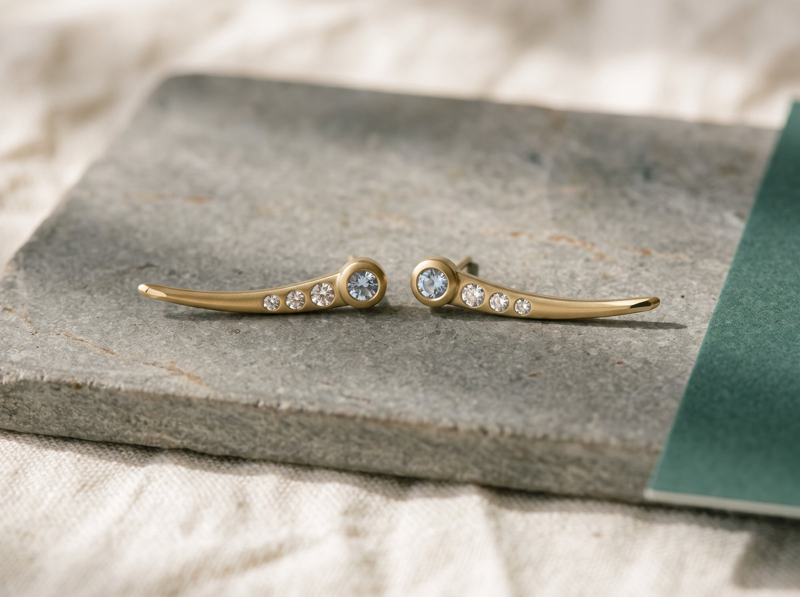
Etsy metni
Başlık 85/140
14K Gold Comet Ear Climber Earrings, Lab Grown Sapphire, Ice Blue and White Celestial
Etiketler (13)
14k gold earrings, ear climber, lab grown sapphire, comet earrings, celestial jewelry, lab blue sapphire, climber earrings, ear crawler, september birthstone, christmas gift, gift for her, flush set earrings, solid gold climber
Malzemeler
14k yellow gold, lab grown blue sapphire, lab grown white sapphire, 14k gold earring posts, 14k gold friction backs
Açıklama
A comet for the ear: a pale ice-blue lab-grown sapphire at the head and three white lab-grown sapphires stepping down along a tapered 14k gold tail. It follows the edge of the ear, makes a bright Christmas gift and wears well every day of the year. THE PIECE Each climber is 16.6 mm long and gently curved. The round head is 3.2 mm across and 1.8 mm thick. A bar 2.4 mm to 2.1 mm wide and 1.5 mm thick carries the three white stones, then tapers into a faceted tail 7.8 mm long that ends in a rounded 0.8 mm tip. GOLD WEIGHT 1.60 g of 14k gold for the pair, counting both posts and friction backs. On the scale the finished pair weighs 1.63 g in total with the stones. Each pair is weighed after finishing and checked against this design weight. STONES Eight lab-grown sapphires in the pair, 0.152 ct in total. Each climber has one 2.0 mm round pale ice-blue sapphire in the head and three round white sapphires of 1.5, 1.4 and 1.3 mm along the bar. Every stone is flush set in its own seat, table level with the gold, over a small hole. The stones are set last, after all polishing. LENGTH AND FIT 16.6 mm long. The head rests on the lobe with the post behind it, and the tail runs up along the outer edge of the ear. A straight 14k gold post, 0.76 mm thick and 11.1 mm long, with a 14k gold friction back. The curve is fixed in the casting; please do not bend the climber, as bending can loosen the flush-set stones. HOW IT IS MADE Made to order. Each climber is cast in 14k gold in one piece with its curve, the tail edges are cut bright, and the post is laser welded, so there is no solder. The stones are set cold, after the last polish, each in its own seat. CARE Wipe with a soft cloth; warm water, mild soap and a soft brush clean the holes behind the stones. No bleach or chlorine. GIFTING Arrives in a gift box, ready to give. Made to order. The processing time is shown at checkout.
Atölye kartı
Toplam 16.6 mm (bas Ø3.2 x 1.8; tas cubugu 5.6 mm, 2.4 -> 2.1 gen., 1.5 kalin; kuyruk 7.8 mm, 2.1 -> 0.8 gen., 1.2 -> 0.7 kalin, uc r0.4; model ucu 1.0 x 0.9 -> bitmis 0.8 x 0.7). Yuva kenarlari arasi 0.5 mm. Civi bas merkezinden 1.17 mm kuyruk yonunde. Egri modelde (heliks), dokumden sonra bukulmez.
Tek parca egri dokum 14K; kulak heliksine gore modelde egilmis, dokumden sonra BUKULMEZ (flush yuvalar acilmasin). Yolluk tas cubugunun kokune. Taslar tek tek flush (kanal yok), her yuvanin altinda delik (Ø0.9 / Ø0.7). Civi Stuller 1800, bas ile ilk yuva arasindaki Ø0.8 x 0.5 sokete lazer (iki delige 0.32/0.33 mm). Mine yok, lehim yok.
Tezgâh sırası
- CAD: heliks egrisi modelde; 4 yuva pilotu + alt delikler; civi soketi; model +0.2 (fasetli kenarda +0.3).
- Recine baski -> vakum dokum; yolluk cubuk kokune.
- Tesviye (egriyi bukmeden), kuyruk faset kenarlarinin elmas tras islemi.
- Civi lazer kaynak + burgu testi.
- Yuvalar: delik kontrol (Ø0.9/0.7), yuva frezesi 2.0/1.5/1.4/1.3; tas partisini kumpasla olc (lab melee >%63 derin olabilir).
- Taslar en son, soguk: once bas 2.0 buz mavisi, sonra 1.5 -> 1.4 -> 1.3 flush.
- Son cila, ultrasonik.
- QC: cift 1.60 g +-0.05; 8 tas sallanma testi; kuyruk ucu yuvarlakligi; 5 farkli kulak maketinde oturma ve one devrilme kontrolu.
Malzeme listesi
- Alasim: 14K sari; renk birligi icin mineli parcalarla AYNI cinkosuz alasim lotu (Otto Frei 846-180 bazli); mine yok, cinko sart degil; dokum metali ~1.11 g/cift (govde x 1.15)
- Taslar: 2 x 2.0 mm lab mavi safir acik buz mavisi (0.034 ct) + 2 x 1.5 (0.017) + 2 x 1.4 (0.014) + 2 x 1.3 (0.011) lab beyaz safir = 0.152 ct/cift
- 2 x Stuller 1800 14KY sert cekme friction civi 0.76 x 11.1 mm (0.0658 g/adet = 0.132 g)
- 2 x 14K sari friction arkalik 5-6.3 mm (0.25 g/adet VARSAYIM = 0.50 g; KANIT 0.2-0.4 g kaynaksiz - tedarikci numunesi tartilmadan CAD onayi yok)
- GRAM DOKUMU (cift, x2 x 0.01307 g/mm3): bas topuzu O3.2 x 1.8: +14.48 mm3 -> +0.3784 g; 2.0 yuva + O0.9 delik: -2.61 mm3 -> -0.0682 g; tas cubugu L5.6 w2.4->2.1 t1.5: +18.90 mm3 -> +0.4940 g; 1.5/1.4/1.3 yuvalari + O0.7 delikler: -3.14 mm3 -> -0.0821 g; kuyruk kama L7.8 w2.1->0.8 t1.2->0.7 (k=0.85): +9.49 mm3 -> +0.2481 g; civi soketi: -0.25 mm3 -> -0.0066 g; civi 2 x Stuller 1800 0.76x11.1 = 0.1316 g; arkalik 2 x 0.25 g (varsayim) = 0.50 g => govde 0.9637 g, ALTIN 1.595 g (bant 1.40-1.75, tavana pay 0.155 g)
Arıza modları
| Arıza | Tasarım nasıl önlüyor |
|---|---|
| Musterinin tirmaniciyi bukmesi -> flush taslarin gevsemesi | 1.5 mm rijit kesit; aciklamada ve bakim kartinda 'bukmeyin'; egri kulak maketlerinde dogrulanir. |
| Tas dusmesi (ince yanal duvar) | Ev sahibi 1.5/1.8 mm, yanal duvar 0.43 (>=0.35), yuva arasi 0.5 mm. |
| One devrilme / kulaktan ayrilma (tek friction arkalik) | Kuyruk heliks kenarina yaslanir; 5 kulak maketi provasi; gerekirse S/M iki egri. |
| Kuyruk ucunun kulaga batmasi | Uc 0.8 mm r0.4. |
Tolerans
| Kural | Değer | |
|---|---|---|
| L1 karat | 14K | ✓ |
| L4 ev sahibi 2.0 mm tas (>=1.8) | 1.8 mm | ✓ |
| L4 ev sahibi 1.5/1.4/1.3 mm taslar (>=1.5) | 1.5 mm | ✓ |
| L4 yanal duvar (<1.8 tas >=0.35; 2.0 tas >=0.45) | 0.43 / 0.60 mm | ✓ |
| L4 taslar arasi >=0.5 | 0.5 mm | ✓ |
| L4 tas sayisi <=7, flush, kanal/pave yok | 4/kupe | ✓ |
| L4 alt delik, derinlik <=2 x cap | Ø0.7 x 0.87 / Ø0.9 x 0.95 | ✓ |
| L5 dekoratif >=0.6, uc r>=0.4 | kuyruk ucu 0.8 x 0.7, r0.4 | ✓ |
| L5 elemanlar arasi >=0.3 | soket-delik 0.32 mm | ✓ |
| L7 cift altin 1.40-1.75 | 1.595 g | ✓ |
| L9 ear climber istisnasi (onerilen: <=20 mm, civi bas ucta) - hat sahibi onayi bekliyor | 16.6 mm, civi basin arkasinda | ✓ |
| L12 tek kahraman | buz mavisi basli kademeli tas cizgisi | ✓ |
Görsel promptları (16)
- 01Hero / arama küçük resmi: tek ürün, marka natürmortu, 4:3.Referanssız
Quiet luxury editorial still-life product photography. Warm ivory linen ground, honed grey stone slab, a sliver of deep jade-green matte card. Soft directional window light from upper left, long soft shadow, shallow depth of field. Solid yellow gold with warm antique tone. Restrained heirloom mood. No text, no logo, no glitter, no Christmas decoration. The piece: Pair of 14K yellow gold ear climber earrings, each 16.6 mm long and gently curved along its length. A round gold head 3.2 mm across holds one 2.0 mm round pale ice-blue lab-grown sapphire set flush. Next to it, along its length, a straight bar tapering from 2.4 mm to 2.1 mm wide holds three round white lab-grown sapphires set flush in a line, 1.5 mm, 1.4 mm and 1.3 mm, spaced 0.5 mm apart. The bar continues into a tapered tail 7.8 mm long ending in a rounded tip 0.8 mm wide, with bright faceted edges. A straight post sits behind the head. The stones are exactly these and no others: one 2.0 mm round pale ice-blue lab-grown sapphire flush-set in the head and three round white lab-grown sapphires of 1.5, 1.4 and 1.3 mm flush-set along the bar of each climber, eight in the pair. No other stone and no empty setting anywhere on the piece. The piece has no enamel and no colour: every surface is yellow gold. The pair lies side by side on the honed grey stone slab, both fronts facing the camera, about 15 mm apart, posts hidden underneath; exactly two earrings. Seen from about 30 degrees above with a 100 mm macro lens, the piece in razor-sharp focus, filling about 45 percent of the frame width, centred with generous empty margin on all four sides. No people and no hands.
Alt metin 14K gold comet ear climber earrings with one ice-blue and three white lab grown sapphires set flush
- 02Takılı hâli: ölçek ve duruş. Hero'dan sonra dönüşümü en çok etkileyen kare.Referans: hero kırpımı
Quiet luxury editorial photography in warm ivory, stone grey and deep jade-green tones, soft directional window light from the upper left, true colour, fine film grain, no heavy retouching. No text, no logo, no watermark, no glitter. The attached reference image is a crop of this exact piece: keep its shape, proportions, gold colour and stones exactly as in the reference. The piece: Pair of 14K yellow gold ear climber earrings, each 16.6 mm long and gently curved along its length. A round gold head 3.2 mm across holds one 2.0 mm round pale ice-blue lab-grown sapphire set flush. Next to it, along its length, a straight bar tapering from 2.4 mm to 2.1 mm wide holds three round white lab-grown sapphires set flush in a line, 1.5 mm, 1.4 mm and 1.3 mm, spaced 0.5 mm apart. The bar continues into a tapered tail 7.8 mm long ending in a rounded tip 0.8 mm wide, with bright faceted edges. A straight post sits behind the head. The stones are exactly these and no others: one 2.0 mm round pale ice-blue lab-grown sapphire flush-set in the head and three round white lab-grown sapphires of 1.5, 1.4 and 1.3 mm flush-set along the bar of each climber, eight in the pair. No other stone and no empty setting anywhere on the piece. The piece has no enamel and no colour: every surface is yellow gold. One earring worn on a woman's left earlobe, side profile, hair tucked behind the ear, cropped tight from cheekbone to jaw; only one ear is in the frame and exactly one earring is visible; no other earrings and no piercings elsewhere; true to scale, the main element measures about 16.6 mm across.
Alt metin 14K gold comet ear climber earrings with one ice-blue and three white lab grown sapphires set flush, worn
- 03Makro işçilik: fiyatı meşrulaştıran detay (mine yüzeyi, flush taş, kenar bitimi).Referans: hero kırpımı
Quiet luxury editorial photography in warm ivory, stone grey and deep jade-green tones, soft directional window light from the upper left, true colour, fine film grain, no heavy retouching. No text, no logo, no watermark, no glitter. The attached reference image is a crop of this exact piece: keep its shape, proportions, gold colour and stones exactly as in the reference. The piece: Pair of 14K yellow gold ear climber earrings, each 16.6 mm long and gently curved along its length. A round gold head 3.2 mm across holds one 2.0 mm round pale ice-blue lab-grown sapphire set flush. Next to it, along its length, a straight bar tapering from 2.4 mm to 2.1 mm wide holds three round white lab-grown sapphires set flush in a line, 1.5 mm, 1.4 mm and 1.3 mm, spaced 0.5 mm apart. The bar continues into a tapered tail 7.8 mm long ending in a rounded tip 0.8 mm wide, with bright faceted edges. A straight post sits behind the head. The stones are exactly these and no others: one 2.0 mm round pale ice-blue lab-grown sapphire flush-set in the head and three round white lab-grown sapphires of 1.5, 1.4 and 1.3 mm flush-set along the bar of each climber, eight in the pair. No other stone and no empty setting anywhere on the piece. The piece has no enamel and no colour: every surface is yellow gold. Extreme close-up macro, 100 mm macro lens: The round head with its flush-set 2.0 mm pale ice-blue lab-grown sapphire and the three white lab-grown sapphires stepping down 1.5, 1.4 and 1.3 mm along the bar. The rest of the piece falls away into soft focus on warm-ivory linen.
Alt metin Close-up of the ice-blue lab-grown sapphire head and the graduated white lab-grown sapphires
- 04Elde ölçek: mm'yi parmak ucuna çevirir, 'beklediğimden küçük' iadesini önler.Referans: hero kırpımı
Quiet luxury editorial photography in warm ivory, stone grey and deep jade-green tones, soft directional window light from the upper left, true colour, fine film grain, no heavy retouching. No text, no logo, no watermark, no glitter. The attached reference image is a crop of this exact piece: keep its shape, proportions, gold colour and stones exactly as in the reference. The piece: Pair of 14K yellow gold ear climber earrings, each 16.6 mm long and gently curved along its length. A round gold head 3.2 mm across holds one 2.0 mm round pale ice-blue lab-grown sapphire set flush. Next to it, along its length, a straight bar tapering from 2.4 mm to 2.1 mm wide holds three round white lab-grown sapphires set flush in a line, 1.5 mm, 1.4 mm and 1.3 mm, spaced 0.5 mm apart. The bar continues into a tapered tail 7.8 mm long ending in a rounded tip 0.8 mm wide, with bright faceted edges. A straight post sits behind the head. The stones are exactly these and no others: one 2.0 mm round pale ice-blue lab-grown sapphire flush-set in the head and three round white lab-grown sapphires of 1.5, 1.4 and 1.3 mm flush-set along the bar of each climber, eight in the pair. No other stone and no empty setting anywhere on the piece. The piece has no enamel and no colour: every surface is yellow gold. Close-up for scale against a plain warm-ivory background thrown softly out of focus: one earring held between the thumb and index finger of a woman's hand by its edges, front facing the camera; the second earring is not in the frame; true to scale, the main element measures about 16.6 mm across, a fingertip is about 16 mm wide; it is the only jewellery in the image; anatomically correct hands with five fingers, short natural unpolished nails.
Alt metin 14K gold comet ear climber earrings with one ice-blue and three white lab grown sapphires set flush, held between fingers for scale
- 05Arka ve bulgular: dolu gövde, kilit / çivi / iğne; sağlamlık sorusunu cevaplar.Referans: hero kırpımı
Quiet luxury editorial photography in warm ivory, stone grey and deep jade-green tones, soft directional window light from the upper left, true colour, fine film grain, no heavy retouching. No text, no logo, no watermark, no glitter. The attached reference image is a crop of this exact piece: keep its shape, proportions, gold colour and stones exactly as in the reference. The piece: Pair of 14K yellow gold ear climber earrings, each 16.6 mm long and gently curved along its length. A round gold head 3.2 mm across holds one 2.0 mm round pale ice-blue lab-grown sapphire set flush. Next to it, along its length, a straight bar tapering from 2.4 mm to 2.1 mm wide holds three round white lab-grown sapphires set flush in a line, 1.5 mm, 1.4 mm and 1.3 mm, spaced 0.5 mm apart. The bar continues into a tapered tail 7.8 mm long ending in a rounded tip 0.8 mm wide, with bright faceted edges. A straight post sits behind the head. The stones are exactly these and no others: one 2.0 mm round pale ice-blue lab-grown sapphire flush-set in the head and three round white lab-grown sapphires of 1.5, 1.4 and 1.3 mm flush-set along the bar of each climber, eight in the pair. No other stone and no empty setting anywhere on the piece. The piece has no enamel and no colour: every surface is yellow gold. The back of the piece, top-down on honed grey stone: A smooth solid gold back with a small round hole under each of the four stones and a straight post behind the head.
Alt metin Back of the ear climber earrings showing the solid gold back with holes under the stones and the post behind the head
- 06Tam boy / çift / mekanizma: uzunluk, ayar ve ne geldiğini tek karede gösterir.Referans: hero kırpımı
Quiet luxury editorial photography in warm ivory, stone grey and deep jade-green tones, soft directional window light from the upper left, true colour, fine film grain, no heavy retouching. No text, no logo, no watermark, no glitter. The attached reference image is a crop of this exact piece: keep its shape, proportions, gold colour and stones exactly as in the reference. The piece: Pair of 14K yellow gold ear climber earrings, each 16.6 mm long and gently curved along its length. A round gold head 3.2 mm across holds one 2.0 mm round pale ice-blue lab-grown sapphire set flush. Next to it, along its length, a straight bar tapering from 2.4 mm to 2.1 mm wide holds three round white lab-grown sapphires set flush in a line, 1.5 mm, 1.4 mm and 1.3 mm, spaced 0.5 mm apart. The bar continues into a tapered tail 7.8 mm long ending in a rounded tip 0.8 mm wide, with bright faceted edges. A straight post sits behind the head. The stones are exactly these and no others: one 2.0 mm round pale ice-blue lab-grown sapphire flush-set in the head and three round white lab-grown sapphires of 1.5, 1.4 and 1.3 mm flush-set along the bar of each climber, eight in the pair. No other stone and no empty setting anywhere on the piece. The piece has no enamel and no colour: every surface is yellow gold. The pair laid flat side by side on warm-ivory linen, top-down, both fronts to the camera, mirror-symmetric, about 15 mm apart, exactly two earrings.
Alt metin 14K gold comet ear climber earrings with one ice-blue and three white lab grown sapphires set flush, pair
- 07Yan profil: kalınlık ve kütle, düz baskı değil gerçek altın olduğunu gösterir.Referans: hero kırpımı
Quiet luxury editorial photography in warm ivory, stone grey and deep jade-green tones, soft directional window light from the upper left, true colour, fine film grain, no heavy retouching. No text, no logo, no watermark, no glitter. The attached reference image is a crop of this exact piece: keep its shape, proportions, gold colour and stones exactly as in the reference. The piece: Pair of 14K yellow gold ear climber earrings, each 16.6 mm long and gently curved along its length. A round gold head 3.2 mm across holds one 2.0 mm round pale ice-blue lab-grown sapphire set flush. Next to it, along its length, a straight bar tapering from 2.4 mm to 2.1 mm wide holds three round white lab-grown sapphires set flush in a line, 1.5 mm, 1.4 mm and 1.3 mm, spaced 0.5 mm apart. The bar continues into a tapered tail 7.8 mm long ending in a rounded tip 0.8 mm wide, with bright faceted edges. A straight post sits behind the head. The stones are exactly these and no others: one 2.0 mm round pale ice-blue lab-grown sapphire flush-set in the head and three round white lab-grown sapphires of 1.5, 1.4 and 1.3 mm flush-set along the bar of each climber, eight in the pair. No other stone and no empty setting anywhere on the piece. The piece has no enamel and no colour: every surface is yellow gold. Side profile at eye level on honed grey stone, the camera level with the piece: In side profile the climber is 1.8 mm thick at the head and 1.5 mm along the stone bar, thinning to 0.7 mm at the tail tip, over a gentle curve 16.6 mm long.
Alt metin Side profile of the ear climber earrings showing its thickness
- 08Kış yaşam stili: sezonu Noel dekoru olmadan kurar.Referans: hero kırpımı
Quiet luxury editorial photography in warm ivory, stone grey and deep jade-green tones, soft directional window light from the upper left, true colour, fine film grain, no heavy retouching. No text, no logo, no watermark, no glitter. The attached reference image is a crop of this exact piece: keep its shape, proportions, gold colour and stones exactly as in the reference. The piece: Pair of 14K yellow gold ear climber earrings, each 16.6 mm long and gently curved along its length. A round gold head 3.2 mm across holds one 2.0 mm round pale ice-blue lab-grown sapphire set flush. Next to it, along its length, a straight bar tapering from 2.4 mm to 2.1 mm wide holds three round white lab-grown sapphires set flush in a line, 1.5 mm, 1.4 mm and 1.3 mm, spaced 0.5 mm apart. The bar continues into a tapered tail 7.8 mm long ending in a rounded tip 0.8 mm wide, with bright faceted edges. A straight post sits behind the head. The stones are exactly these and no others: one 2.0 mm round pale ice-blue lab-grown sapphire flush-set in the head and three round white lab-grown sapphires of 1.5, 1.4 and 1.3 mm flush-set along the bar of each climber, eight in the pair. No other stone and no empty setting anywhere on the piece. The piece has no enamel and no colour: every surface is yellow gold. Winter afternoon light: three-quarter view of a woman with dark hair pulled back into a low knot, ivory turtleneck sweater, cropped below the eyes; exactly one earring visible on the near ear; it is the only jewellery in the image.
Alt metin 14K gold comet ear climber earrings with one ice-blue and three white lab grown sapphires set flush, styled with winter knitwear
- 09Hediye kutusu: Noel alıcısının ilk sorusu, hediyeye hazır mı?Referans: hero kırpımı
Quiet luxury editorial photography in warm ivory, stone grey and deep jade-green tones, soft directional window light from the upper left, true colour, fine film grain, no heavy retouching. No text, no logo, no watermark, no glitter. The attached reference image is a crop of this exact piece: keep its shape, proportions, gold colour and stones exactly as in the reference. The piece: Pair of 14K yellow gold ear climber earrings, each 16.6 mm long and gently curved along its length. A round gold head 3.2 mm across holds one 2.0 mm round pale ice-blue lab-grown sapphire set flush. Next to it, along its length, a straight bar tapering from 2.4 mm to 2.1 mm wide holds three round white lab-grown sapphires set flush in a line, 1.5 mm, 1.4 mm and 1.3 mm, spaced 0.5 mm apart. The bar continues into a tapered tail 7.8 mm long ending in a rounded tip 0.8 mm wide, with bright faceted edges. A straight post sits behind the head. The stones are exactly these and no others: one 2.0 mm round pale ice-blue lab-grown sapphire flush-set in the head and three round white lab-grown sapphires of 1.5, 1.4 and 1.3 mm flush-set along the bar of each climber, eight in the pair. No other stone and no empty setting anywhere on the piece. The piece has no enamel and no colour: every surface is yellow gold. Top-down: the pair side by side, fronts up inside a small open square gift box in plain warm-ivory card with a soft ivory insert, the lid set beside it, a length of narrow deep jade-green ribbon untied beside the box, on honed grey stone. No branding, no printed pattern, no tissue paper, no Christmas decoration, exactly one box.
Alt metin 14K gold comet ear climber earrings with one ice-blue and three white lab grown sapphires set flush in a gift box
- 10Gerçek renk: nötr gün ışığında altın ve mine rengi; renk kaynaklı iadeyi azaltır.Referans: hero kırpımı
Quiet luxury editorial photography in warm ivory, stone grey and deep jade-green tones, soft directional window light from the upper left, true colour, fine film grain, no heavy retouching. No text, no logo, no watermark, no glitter. The attached reference image is a crop of this exact piece: keep its shape, proportions, gold colour and stones exactly as in the reference. The piece: Pair of 14K yellow gold ear climber earrings, each 16.6 mm long and gently curved along its length. A round gold head 3.2 mm across holds one 2.0 mm round pale ice-blue lab-grown sapphire set flush. Next to it, along its length, a straight bar tapering from 2.4 mm to 2.1 mm wide holds three round white lab-grown sapphires set flush in a line, 1.5 mm, 1.4 mm and 1.3 mm, spaced 0.5 mm apart. The bar continues into a tapered tail 7.8 mm long ending in a rounded tip 0.8 mm wide, with bright faceted edges. A straight post sits behind the head. The stones are exactly these and no others: one 2.0 mm round pale ice-blue lab-grown sapphire flush-set in the head and three round white lab-grown sapphires of 1.5, 1.4 and 1.3 mm flush-set along the bar of each climber, eight in the pair. No other stone and no empty setting anywhere on the piece. The piece has no enamel and no colour: every surface is yellow gold. Colour-accurate reference shot: the piece alone, top-down on plain matte white-ivory paper under even neutral north daylight, no shadow drama, no props, the piece centred and filling half the frame.
Alt metin 14K gold comet ear climber earrings with one ice-blue and three white lab grown sapphires set flush in neutral daylight, true colour
- 11Ölçü grafiği tabanı: sağ üçte bir boş; mm etiketleri sonra eklenir.Referans: hero kırpımı
Quiet luxury editorial photography in warm ivory, stone grey and deep jade-green tones, soft directional window light from the upper left, true colour, fine film grain, no heavy retouching. No text, no logo, no watermark, no glitter. The attached reference image is a crop of this exact piece: keep its shape, proportions, gold colour and stones exactly as in the reference. The piece: Pair of 14K yellow gold ear climber earrings, each 16.6 mm long and gently curved along its length. A round gold head 3.2 mm across holds one 2.0 mm round pale ice-blue lab-grown sapphire set flush. Next to it, along its length, a straight bar tapering from 2.4 mm to 2.1 mm wide holds three round white lab-grown sapphires set flush in a line, 1.5 mm, 1.4 mm and 1.3 mm, spaced 0.5 mm apart. The bar continues into a tapered tail 7.8 mm long ending in a rounded tip 0.8 mm wide, with bright faceted edges. A straight post sits behind the head. The stones are exactly these and no others: one 2.0 mm round pale ice-blue lab-grown sapphire flush-set in the head and three round white lab-grown sapphires of 1.5, 1.4 and 1.3 mm flush-set along the bar of each climber, eight in the pair. No other stone and no empty setting anywhere on the piece. The piece has no enamel and no colour: every surface is yellow gold. The piece alone, top-down on plain warm-ivory paper, placed in the left two thirds of the frame; the right third is empty paper for dimension labels to be added later; even soft light, no props.
Alt metin 14K gold comet ear climber earrings with one ice-blue and three white lab grown sapphires set flush with space for dimensions
- 12El işçiliği: siparişe üretim hikâyesi, tezgâhta parça.Referans: hero kırpımı
Quiet luxury editorial photography in warm ivory, stone grey and deep jade-green tones, soft directional window light from the upper left, true colour, fine film grain, no heavy retouching. No text, no logo, no watermark, no glitter. The attached reference image is a crop of this exact piece: keep its shape, proportions, gold colour and stones exactly as in the reference. The piece: Pair of 14K yellow gold ear climber earrings, each 16.6 mm long and gently curved along its length. A round gold head 3.2 mm across holds one 2.0 mm round pale ice-blue lab-grown sapphire set flush. Next to it, along its length, a straight bar tapering from 2.4 mm to 2.1 mm wide holds three round white lab-grown sapphires set flush in a line, 1.5 mm, 1.4 mm and 1.3 mm, spaced 0.5 mm apart. The bar continues into a tapered tail 7.8 mm long ending in a rounded tip 0.8 mm wide, with bright faceted edges. A straight post sits behind the head. The stones are exactly these and no others: one 2.0 mm round pale ice-blue lab-grown sapphire flush-set in the head and three round white lab-grown sapphires of 1.5, 1.4 and 1.3 mm flush-set along the bar of each climber, eight in the pair. No other stone and no empty setting anywhere on the piece. The piece has no enamel and no colour: every surface is yellow gold. The finished piece lying on a worn wooden jeweller's bench pin beside a steel burnisher, a fine half-round file and a pair of brass tweezers, warm lamp light, shallow depth of field, the piece in sharp focus; no hands.
Alt metin 14K gold comet ear climber earrings with one ice-blue and three white lab grown sapphires set flush on a jeweller's bench
- 13Motifin anlamı: sol üçte bir boş; sembol hikâyesi metni sonra eklenir.Referans: hero kırpımı
Quiet luxury editorial photography in warm ivory, stone grey and deep jade-green tones, soft directional window light from the upper left, true colour, fine film grain, no heavy retouching. No text, no logo, no watermark, no glitter. The attached reference image is a crop of this exact piece: keep its shape, proportions, gold colour and stones exactly as in the reference. The piece: Pair of 14K yellow gold ear climber earrings, each 16.6 mm long and gently curved along its length. A round gold head 3.2 mm across holds one 2.0 mm round pale ice-blue lab-grown sapphire set flush. Next to it, along its length, a straight bar tapering from 2.4 mm to 2.1 mm wide holds three round white lab-grown sapphires set flush in a line, 1.5 mm, 1.4 mm and 1.3 mm, spaced 0.5 mm apart. The bar continues into a tapered tail 7.8 mm long ending in a rounded tip 0.8 mm wide, with bright faceted edges. A straight post sits behind the head. The stones are exactly these and no others: one 2.0 mm round pale ice-blue lab-grown sapphire flush-set in the head and three round white lab-grown sapphires of 1.5, 1.4 and 1.3 mm flush-set along the bar of each climber, eight in the pair. No other stone and no empty setting anywhere on the piece. The piece has no enamel and no colour: every surface is yellow gold. The piece alone, top-down on a deep jade-green matte card, placed in the right two thirds of the frame; the left third is empty card for a caption to be added later; soft directional light.
Alt metin 14K gold comet ear climber earrings with one ice-blue and three white lab grown sapphires set flush on a deep green card
- 14Yıl boyu takılır: 'yalnız Noel' itirazını kırar.Referans: hero kırpımı
Quiet luxury editorial photography in warm ivory, stone grey and deep jade-green tones, soft directional window light from the upper left, true colour, fine film grain, no heavy retouching. No text, no logo, no watermark, no glitter. The attached reference image is a crop of this exact piece: keep its shape, proportions, gold colour and stones exactly as in the reference. The piece: Pair of 14K yellow gold ear climber earrings, each 16.6 mm long and gently curved along its length. A round gold head 3.2 mm across holds one 2.0 mm round pale ice-blue lab-grown sapphire set flush. Next to it, along its length, a straight bar tapering from 2.4 mm to 2.1 mm wide holds three round white lab-grown sapphires set flush in a line, 1.5 mm, 1.4 mm and 1.3 mm, spaced 0.5 mm apart. The bar continues into a tapered tail 7.8 mm long ending in a rounded tip 0.8 mm wide, with bright faceted edges. A straight post sits behind the head. The stones are exactly these and no others: one 2.0 mm round pale ice-blue lab-grown sapphire flush-set in the head and three round white lab-grown sapphires of 1.5, 1.4 and 1.3 mm flush-set along the bar of each climber, eight in the pair. No other stone and no empty setting anywhere on the piece. The piece has no enamel and no colour: every surface is yellow gold. Everyday wear, no season: side profile of a woman with short dark hair, plain white t-shirt collar, soft daylight, cropped from cheekbone to jaw; exactly one earring visible on the near ear.
Alt metin 14K gold comet ear climber earrings with one ice-blue and three white lab grown sapphires set flush, everyday wear
- 15Hediye anı: duygu; Noel satın alma niyetine bağlar.Referans: hero kırpımı
Quiet luxury editorial photography in warm ivory, stone grey and deep jade-green tones, soft directional window light from the upper left, true colour, fine film grain, no heavy retouching. No text, no logo, no watermark, no glitter. The attached reference image is a crop of this exact piece: keep its shape, proportions, gold colour and stones exactly as in the reference. The piece: Pair of 14K yellow gold ear climber earrings, each 16.6 mm long and gently curved along its length. A round gold head 3.2 mm across holds one 2.0 mm round pale ice-blue lab-grown sapphire set flush. Next to it, along its length, a straight bar tapering from 2.4 mm to 2.1 mm wide holds three round white lab-grown sapphires set flush in a line, 1.5 mm, 1.4 mm and 1.3 mm, spaced 0.5 mm apart. The bar continues into a tapered tail 7.8 mm long ending in a rounded tip 0.8 mm wide, with bright faceted edges. A straight post sits behind the head. The stones are exactly these and no others: one 2.0 mm round pale ice-blue lab-grown sapphire flush-set in the head and three round white lab-grown sapphires of 1.5, 1.4 and 1.3 mm flush-set along the bar of each climber, eight in the pair. No other stone and no empty setting anywhere on the piece. The piece has no enamel and no colour: every surface is yellow gold. A gift being given: two pairs of hands across a pale oak table, one pair holding out the small open warm-ivory gift box with the piece visible inside, the other reaching for it, soft warm window light, sleeves of ivory and grey knitwear; exactly one box and one piece of jewellery; anatomically correct hands with five fingers, short natural unpolished nails.
Alt metin 14K gold comet ear climber earrings with one ice-blue and three white lab grown sapphires set flush given as a gift
- 16Mağaza ızgarası / Pinterest: koyu jade zeminde yüksek kontrast kare.Referans: hero kırpımı
Quiet luxury editorial photography in warm ivory, stone grey and deep jade-green tones, soft directional window light from the upper left, true colour, fine film grain, no heavy retouching. No text, no logo, no watermark, no glitter. The attached reference image is a crop of this exact piece: keep its shape, proportions, gold colour and stones exactly as in the reference. The piece: Pair of 14K yellow gold ear climber earrings, each 16.6 mm long and gently curved along its length. A round gold head 3.2 mm across holds one 2.0 mm round pale ice-blue lab-grown sapphire set flush. Next to it, along its length, a straight bar tapering from 2.4 mm to 2.1 mm wide holds three round white lab-grown sapphires set flush in a line, 1.5 mm, 1.4 mm and 1.3 mm, spaced 0.5 mm apart. The bar continues into a tapered tail 7.8 mm long ending in a rounded tip 0.8 mm wide, with bright faceted edges. A straight post sits behind the head. The stones are exactly these and no others: one 2.0 mm round pale ice-blue lab-grown sapphire flush-set in the head and three round white lab-grown sapphires of 1.5, 1.4 and 1.3 mm flush-set along the bar of each climber, eight in the pair. No other stone and no empty setting anywhere on the piece. The piece has no enamel and no colour: every surface is yellow gold. Top-down flat lay of the piece centred on a deep jade-green matte card with a narrow border of warm-ivory linen at the top edge, crisp soft light, the piece filling about 40 percent of the frame so a square crop keeps all of it.
Alt metin 14K gold comet ear climber earrings with one ice-blue and three white lab grown sapphires set flush, flat lay on deep green
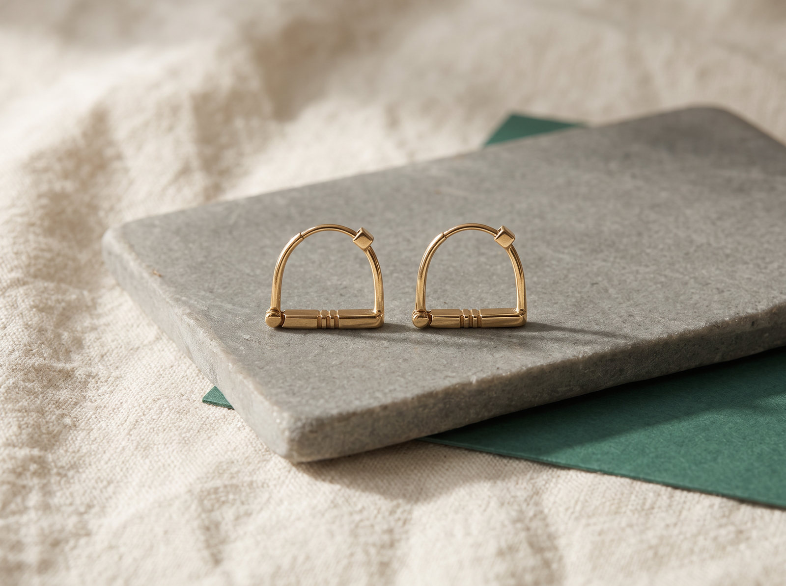
Etsy metni
Başlık 75/140
14K Gold Stirrup Hoop Earrings, Hinged Equestrian Huggies, Horse Lover Gift
Etiketler (13)
14k gold earrings, stirrup earrings, equestrian gift, hinged hoops, gold huggie hoops, horse jewelry, equestrian jewelry, hoop earrings, horse lover gift, christmas gift, unisex earrings, solid gold hoops, gift for rider
Malzemeler
14k yellow gold
Açıklama
A stirrup in 14k gold, made as a hinged hoop that clicks shut through the ear. It is an equestrian classic for riders and horse lovers, an easy Christmas gift with no seasonal detail at all. THE PIECE Each hoop is 11.3 mm wide and 10.1 mm tall. A round arch of 1.0 mm gold wire rises over the top and meets two short sides, 1.3 mm by 1.1 mm, standing on a flat bottom bar 11.3 mm long and 1.8 mm tall with three bright crosswise grooves. The inside opening is 8.7 mm wide. GOLD WEIGHT 1.43 g of 14k gold for the pair; hoops need no posts or backs. On the scale the finished pair weighs 1.43 g in total. Each pair is weighed after finishing and checked against this design weight. LENGTH AND FIT 11.3 mm wide and 10.1 mm tall, sitting close to the lobe. The left side and the arch open on a hinge at the lower corner; the arch wire passes through the piercing and clicks into a catch at the top of the right side, held by a small spring-hard 14k gold tongue. The wire that passes through the ear is 1.0 mm (18 gauge). HOW IT IS MADE Made to order. The two halves are cast in 14k gold. The hinge is a hard 14k gold pin riveted cold at both ends, and the spring tongue is laser welded, so there is no solder anywhere and the catch keeps its spring. CARE Wipe with a soft cloth; warm water and mild soap are fine. Open and close the hinge gently, without forcing it past its stop. No bleach or chlorine. GIFTING Arrives in a gift box, ready to give. Made to order. The processing time is shown at checkout.
Atölye kartı
Dis 11.3 x 10.1 mm, ic aciklik 8.7 x 7.3 mm. Kemer 180 derece, merkez hat R5.0, YUVARLAK Ø1.0 tel (kulaktan gecen bolum, 18G; eski 1.3 x 1.1). Bacaklar 2.8 mm, kesit 1.3 x 1.1 (kemere gecis 1.0 mm'ye yumusak). Taban 11.3 x 1.8 x 1.1, 3 V-oluk 0.5 x 0.4. Mentese topuzu Ø2.8 x 2.2 (2 x 1.1; on/arka yuzden 0.55 mm tasar), pim Ø0.8. Kilit blogu 1.6 mm kup (sag bacak tepesi): kemer ucu icin Ø1.05 x 1.0 yuva + 0.4 x 1.0 x 1.6 yay dili yarigi.
Iki dokum parca 14K: (A) sabit: taban + sag bacak + kilit blogu + alt mentese topuzu; (B) acilan: sol bacak + Ø1.0 kemer + ust topuz. Geometri kapanir: kemer kirisi 2R = 10.0 mm = taban uzerindeki bacak eksen araligi. Mentese: dokum topuzlar hizali delinir (Ø0.8), sert cekme 14K pim sokulup iki ucundan soguk percinlenir - LEHIM YOK. Kapanma: kemerin kubbe uclu Ø1.0 ucu kilit blogundaki Ø1.05 yuvaya girer; yariga lazerle kaynakli yay sertliginde 14K dil ucu 0.3 mm on-yukle yandan sikistirir (surtunmeli klik). Kemer ucunda yarik/olu yok -> Ø1.0 kesit kesintisiz. Tas yok, mine yok, hollow yok, civi/arkalik yok.
Tezgâh sırası
- CAD: iki parca kapali kati; kemer Ø1.0 yuvarlak, kiris = taban araligi kontrolu; topuzlarda Ø0.5 pilot; kilit blogu yuva + dil yarigi; model +0.2 mm (kemer modelde Ø1.2 -> bitmis Ø1.0).
- Recine baski -> vakum dokum; yolluk taban arkasina ve kemer tepesine.
- Tesviye; kemerin kulaktan gecen bolumu ve ic yuzeyler ayna cila; kemer ucu kubbe r0.5.
- Topuzlari aparatta hizali Ø0.8 del; pimi sok, iki ucu soguk percinle.
- Kilit blogu yarigina yay dilini lazerle kaynakla (lehim yok); 0.3 mm on-yuk ayari.
- Taban oluklarinin elmas tras kesimi, son cila.
- QC: cift 1.43 g +-0.05; kemer Ø1.0 +-0.03 (kumpas); 200 ac-kapa dongusu sonrasi tutus; mentese boslugu <=0.3 mm.
Malzeme listesi
- Alasim: 14K sari; renk birligi icin mineli parcalarla AYNI cinkosuz alasim lotu (Otto Frei 846-180 bazli); dokum metali ~1.58 g/cift (govde x 1.15)
- 2 x sert cekme 14K pim Ø0.8 x 2.4 mm (0.016 g/adet)
- 2 x 14K yay sertliginde yassi dil 0.4 x 1.0 x 2.5 mm (0.013 g/adet)
- GRAM DOKUMU (cift, x2 x 0.01307 g/mm3): kemer 180 deg, R5.0, yuvarlak O1.0: +12.34 mm3 -> +0.3225 g; 2 bacak 2.8 x 1.3 x 1.1: +8.01 mm3 -> +0.2093 g; uzengi tabani 11.3 x 1.8 x 1.1: +22.37 mm3 -> +0.5849 g; 3 enine V-oluk 0.5x0.4: -0.54 mm3 -> -0.0141 g; mentese blogu O2.8x2.2 - pim deligi - tel ortusmesi (dogrulayici): +7.87 mm3 -> +0.2057 g; kilit blogu 1.6^3 - O1.05x1.0 yuva - 0.4x1.0x1.6 dil yarigi: +2.59 mm3 -> +0.0677 g; mentese pimi O0.8 x 2.4 (satin alma): +1.21 mm3 -> +0.0315 g; yay dili 0.4x1.0x2.5 (satin alma): +1.00 mm3 -> +0.0261 g => govde 1.4337 g, ALTIN 1.434 g (bant 1.40-1.75, tavana pay 0.316 g)
Arıza modları
| Arıza | Tasarım nasıl önlüyor |
|---|---|
| Kalin tel kulak deligine girmez / acitir | Kulaktan gecen kemer Ø1.0 yuvarlak (18G), ayna cila, kubbe uc. |
| Kilidin gevsemesi | Yay sertliginde 14K dil, lazerle; 0.3 mm on-yuk; 200 dongu testi. |
| Pimin kayip mentese bosalmasi | Sert pim iki uctan percinli; topuz duvari 1.0 mm. |
| Ince kemerin egilmesi | Ø1.0 kati kesit, 180 derece kemer kisa; acma kapama durdurucuya kadar. |
| Mentese boslugunda meme sikismasi | Topuz boslugu <=0.3 mm, kenarlar kirik. |
Tolerans
| Kural | Değer | |
|---|---|---|
| L1 karat | 14K | ✓ |
| Geometri kapanisi | kemer kirisi 2R = 10.0 = bacak araligi 10.0 mm | ✓ |
| L5 tasiyici yuk yolu >=1.0 | kemer Ø1.0; bacak/taban 1.1 | ✓ |
| Kulaktan gecen tel 0.8-1.0 mm | Ø1.0 (18G) | ✓ |
| L5 mentese topuzu duvar >=1.0 | (2.8-0.8)/2 = 1.0 mm | ✓ |
| L5 oluk sonrasi dekoratif >=0.6 | 1.1 - 0.4 = 0.7 mm | ✓ |
| L6 hollow yok | kati | ✓ |
| L3 lehim | yok (percin + lazer) | ✓ |
| L7 cift altin 1.40-1.75 | 1.434 g | ✓ |
| L12 tek kahraman | uzengi silueti | ✓ |
Görsel promptları (16)
- 01Hero / arama küçük resmi: tek ürün, marka natürmortu, 4:3.Referanssız
Quiet luxury editorial still-life product photography. Warm ivory linen ground, honed grey stone slab, a sliver of deep jade-green matte card. Soft directional window light from upper left, long soft shadow, shallow depth of field. Solid yellow gold with warm antique tone. Restrained heirloom mood. No text, no logo, no glitter, no Christmas decoration. The piece: Pair of 14K yellow gold hinged hoop earrings shaped as a stirrup, 11.3 mm wide and 10.1 mm tall. A rounded arch of round gold wire 1.0 mm thick rises over the top and meets two short straight sides, 1.3 mm by 1.1 mm, which stand on a flat bottom bar 11.3 mm long and 1.8 mm tall. The bottom bar has three bright crosswise grooves. A round hinge barrel 2.8 mm across sits at the lower left corner, and a small square catch block 1.6 mm across sits at the top of the right side. All surfaces high-polish. The piece carries no gemstones at all and no empty settings. The piece has no enamel and no colour: every surface is yellow gold. The pair lies side by side on the honed grey stone slab, both fronts facing the camera, about 15 mm apart, posts hidden underneath; exactly two earrings. Seen from about 30 degrees above with a 100 mm macro lens, the piece in razor-sharp focus, filling about 45 percent of the frame width, centred with generous empty margin on all four sides. No people and no hands.
Alt metin 14K gold hinged stirrup hoop earrings with a round wire arch and a grooved flat bottom bar
- 02Takılı hâli: ölçek ve duruş. Hero'dan sonra dönüşümü en çok etkileyen kare.Referans: hero kırpımı
Quiet luxury editorial photography in warm ivory, stone grey and deep jade-green tones, soft directional window light from the upper left, true colour, fine film grain, no heavy retouching. No text, no logo, no watermark, no glitter. The attached reference image is a crop of this exact piece: keep its shape, proportions and gold colour exactly as in the reference. The piece: Pair of 14K yellow gold hinged hoop earrings shaped as a stirrup, 11.3 mm wide and 10.1 mm tall. A rounded arch of round gold wire 1.0 mm thick rises over the top and meets two short straight sides, 1.3 mm by 1.1 mm, which stand on a flat bottom bar 11.3 mm long and 1.8 mm tall. The bottom bar has three bright crosswise grooves. A round hinge barrel 2.8 mm across sits at the lower left corner, and a small square catch block 1.6 mm across sits at the top of the right side. All surfaces high-polish. The piece carries no gemstones at all and no empty settings. The piece has no enamel and no colour: every surface is yellow gold. One earring worn on a woman's left earlobe, side profile, hair tucked behind the ear, cropped tight from cheekbone to jaw; only one ear is in the frame and exactly one earring is visible; no other earrings and no piercings elsewhere; true to scale, the main element measures about 11.3 mm across.
Alt metin 14K gold hinged stirrup hoop earrings with a round wire arch and a grooved flat bottom bar, worn
- 03Makro işçilik: fiyatı meşrulaştıran detay (mine yüzeyi, flush taş, kenar bitimi).Referans: hero kırpımı
Quiet luxury editorial photography in warm ivory, stone grey and deep jade-green tones, soft directional window light from the upper left, true colour, fine film grain, no heavy retouching. No text, no logo, no watermark, no glitter. The attached reference image is a crop of this exact piece: keep its shape, proportions and gold colour exactly as in the reference. The piece: Pair of 14K yellow gold hinged hoop earrings shaped as a stirrup, 11.3 mm wide and 10.1 mm tall. A rounded arch of round gold wire 1.0 mm thick rises over the top and meets two short straight sides, 1.3 mm by 1.1 mm, which stand on a flat bottom bar 11.3 mm long and 1.8 mm tall. The bottom bar has three bright crosswise grooves. A round hinge barrel 2.8 mm across sits at the lower left corner, and a small square catch block 1.6 mm across sits at the top of the right side. All surfaces high-polish. The piece carries no gemstones at all and no empty settings. The piece has no enamel and no colour: every surface is yellow gold. Extreme close-up macro, 100 mm macro lens: The round hinge barrel at the lower corner and the three bright crosswise grooves cut into the flat bottom bar. The rest of the piece falls away into soft focus on warm-ivory linen.
Alt metin Close-up of the hinge barrel and the grooved bottom bar of the stirrup hoop
- 04Elde ölçek: mm'yi parmak ucuna çevirir, 'beklediğimden küçük' iadesini önler.Referans: hero kırpımı
Quiet luxury editorial photography in warm ivory, stone grey and deep jade-green tones, soft directional window light from the upper left, true colour, fine film grain, no heavy retouching. No text, no logo, no watermark, no glitter. The attached reference image is a crop of this exact piece: keep its shape, proportions and gold colour exactly as in the reference. The piece: Pair of 14K yellow gold hinged hoop earrings shaped as a stirrup, 11.3 mm wide and 10.1 mm tall. A rounded arch of round gold wire 1.0 mm thick rises over the top and meets two short straight sides, 1.3 mm by 1.1 mm, which stand on a flat bottom bar 11.3 mm long and 1.8 mm tall. The bottom bar has three bright crosswise grooves. A round hinge barrel 2.8 mm across sits at the lower left corner, and a small square catch block 1.6 mm across sits at the top of the right side. All surfaces high-polish. The piece carries no gemstones at all and no empty settings. The piece has no enamel and no colour: every surface is yellow gold. Close-up for scale against a plain warm-ivory background thrown softly out of focus: one earring held between the thumb and index finger of a woman's hand by its edges, front facing the camera; the second earring is not in the frame; true to scale, the main element measures about 11.3 mm across, a fingertip is about 16 mm wide; it is the only jewellery in the image; anatomically correct hands with five fingers, short natural unpolished nails.
Alt metin 14K gold hinged stirrup hoop earrings with a round wire arch and a grooved flat bottom bar, held between fingers for scale
- 05Arka ve bulgular: dolu gövde, kilit / çivi / iğne; sağlamlık sorusunu cevaplar.Referans: hero kırpımı
Quiet luxury editorial photography in warm ivory, stone grey and deep jade-green tones, soft directional window light from the upper left, true colour, fine film grain, no heavy retouching. No text, no logo, no watermark, no glitter. The attached reference image is a crop of this exact piece: keep its shape, proportions and gold colour exactly as in the reference. The piece: Pair of 14K yellow gold hinged hoop earrings shaped as a stirrup, 11.3 mm wide and 10.1 mm tall. A rounded arch of round gold wire 1.0 mm thick rises over the top and meets two short straight sides, 1.3 mm by 1.1 mm, which stand on a flat bottom bar 11.3 mm long and 1.8 mm tall. The bottom bar has three bright crosswise grooves. A round hinge barrel 2.8 mm across sits at the lower left corner, and a small square catch block 1.6 mm across sits at the top of the right side. All surfaces high-polish. The piece carries no gemstones at all and no empty settings. The piece has no enamel and no colour: every surface is yellow gold. The back of the piece, top-down on honed grey stone: The back shows the same smooth polished wire and bar, with the riveted hinge pin ends flush with the barrel.
Alt metin Back of the hoop earrings showing the polished back of the stirrup hoop and the riveted hinge pin
- 06Tam boy / çift / mekanizma: uzunluk, ayar ve ne geldiğini tek karede gösterir.Referans: hero kırpımı
Quiet luxury editorial photography in warm ivory, stone grey and deep jade-green tones, soft directional window light from the upper left, true colour, fine film grain, no heavy retouching. No text, no logo, no watermark, no glitter. The attached reference image is a crop of this exact piece: keep its shape, proportions and gold colour exactly as in the reference. The piece: Pair of 14K yellow gold hinged hoop earrings shaped as a stirrup, 11.3 mm wide and 10.1 mm tall. A rounded arch of round gold wire 1.0 mm thick rises over the top and meets two short straight sides, 1.3 mm by 1.1 mm, which stand on a flat bottom bar 11.3 mm long and 1.8 mm tall. The bottom bar has three bright crosswise grooves. A round hinge barrel 2.8 mm across sits at the lower left corner, and a small square catch block 1.6 mm across sits at the top of the right side. All surfaces high-polish. The piece carries no gemstones at all and no empty settings. The piece has no enamel and no colour: every surface is yellow gold. The pair laid flat side by side on warm-ivory linen, top-down, both fronts to the camera, mirror-symmetric, about 15 mm apart, exactly two earrings.
Alt metin 14K gold hinged stirrup hoop earrings with a round wire arch and a grooved flat bottom bar, pair
- 07Yan profil: kalınlık ve kütle, düz baskı değil gerçek altın olduğunu gösterir.Referans: hero kırpımı
Quiet luxury editorial photography in warm ivory, stone grey and deep jade-green tones, soft directional window light from the upper left, true colour, fine film grain, no heavy retouching. No text, no logo, no watermark, no glitter. The attached reference image is a crop of this exact piece: keep its shape, proportions and gold colour exactly as in the reference. The piece: Pair of 14K yellow gold hinged hoop earrings shaped as a stirrup, 11.3 mm wide and 10.1 mm tall. A rounded arch of round gold wire 1.0 mm thick rises over the top and meets two short straight sides, 1.3 mm by 1.1 mm, which stand on a flat bottom bar 11.3 mm long and 1.8 mm tall. The bottom bar has three bright crosswise grooves. A round hinge barrel 2.8 mm across sits at the lower left corner, and a small square catch block 1.6 mm across sits at the top of the right side. All surfaces high-polish. The piece carries no gemstones at all and no empty settings. The piece has no enamel and no colour: every surface is yellow gold. Side profile at eye level on honed grey stone, the camera level with the piece: In side profile the hoop is 1.1 mm thick along the sides and the bottom bar, 1.0 mm at the round arch and 2.2 mm at the hinge barrel, 10.1 mm tall.
Alt metin Side profile of the hoop earrings showing its thickness
- 08Kış yaşam stili: sezonu Noel dekoru olmadan kurar.Referans: hero kırpımı
Quiet luxury editorial photography in warm ivory, stone grey and deep jade-green tones, soft directional window light from the upper left, true colour, fine film grain, no heavy retouching. No text, no logo, no watermark, no glitter. The attached reference image is a crop of this exact piece: keep its shape, proportions and gold colour exactly as in the reference. The piece: Pair of 14K yellow gold hinged hoop earrings shaped as a stirrup, 11.3 mm wide and 10.1 mm tall. A rounded arch of round gold wire 1.0 mm thick rises over the top and meets two short straight sides, 1.3 mm by 1.1 mm, which stand on a flat bottom bar 11.3 mm long and 1.8 mm tall. The bottom bar has three bright crosswise grooves. A round hinge barrel 2.8 mm across sits at the lower left corner, and a small square catch block 1.6 mm across sits at the top of the right side. All surfaces high-polish. The piece carries no gemstones at all and no empty settings. The piece has no enamel and no colour: every surface is yellow gold. Winter afternoon light: three-quarter view of a woman with dark hair pulled back into a low knot, ivory turtleneck sweater, cropped below the eyes; exactly one earring visible on the near ear; it is the only jewellery in the image.
Alt metin 14K gold hinged stirrup hoop earrings with a round wire arch and a grooved flat bottom bar, styled with winter knitwear
- 09Hediye kutusu: Noel alıcısının ilk sorusu, hediyeye hazır mı?Referans: hero kırpımı
Quiet luxury editorial photography in warm ivory, stone grey and deep jade-green tones, soft directional window light from the upper left, true colour, fine film grain, no heavy retouching. No text, no logo, no watermark, no glitter. The attached reference image is a crop of this exact piece: keep its shape, proportions and gold colour exactly as in the reference. The piece: Pair of 14K yellow gold hinged hoop earrings shaped as a stirrup, 11.3 mm wide and 10.1 mm tall. A rounded arch of round gold wire 1.0 mm thick rises over the top and meets two short straight sides, 1.3 mm by 1.1 mm, which stand on a flat bottom bar 11.3 mm long and 1.8 mm tall. The bottom bar has three bright crosswise grooves. A round hinge barrel 2.8 mm across sits at the lower left corner, and a small square catch block 1.6 mm across sits at the top of the right side. All surfaces high-polish. The piece carries no gemstones at all and no empty settings. The piece has no enamel and no colour: every surface is yellow gold. Top-down: the pair side by side, fronts up inside a small open square gift box in plain warm-ivory card with a soft ivory insert, the lid set beside it, a length of narrow deep jade-green ribbon untied beside the box, on honed grey stone. No branding, no printed pattern, no tissue paper, no Christmas decoration, exactly one box.
Alt metin 14K gold hinged stirrup hoop earrings with a round wire arch and a grooved flat bottom bar in a gift box
- 10Gerçek renk: nötr gün ışığında altın ve mine rengi; renk kaynaklı iadeyi azaltır.Referans: hero kırpımı
Quiet luxury editorial photography in warm ivory, stone grey and deep jade-green tones, soft directional window light from the upper left, true colour, fine film grain, no heavy retouching. No text, no logo, no watermark, no glitter. The attached reference image is a crop of this exact piece: keep its shape, proportions and gold colour exactly as in the reference. The piece: Pair of 14K yellow gold hinged hoop earrings shaped as a stirrup, 11.3 mm wide and 10.1 mm tall. A rounded arch of round gold wire 1.0 mm thick rises over the top and meets two short straight sides, 1.3 mm by 1.1 mm, which stand on a flat bottom bar 11.3 mm long and 1.8 mm tall. The bottom bar has three bright crosswise grooves. A round hinge barrel 2.8 mm across sits at the lower left corner, and a small square catch block 1.6 mm across sits at the top of the right side. All surfaces high-polish. The piece carries no gemstones at all and no empty settings. The piece has no enamel and no colour: every surface is yellow gold. Colour-accurate reference shot: the piece alone, top-down on plain matte white-ivory paper under even neutral north daylight, no shadow drama, no props, the piece centred and filling half the frame.
Alt metin 14K gold hinged stirrup hoop earrings with a round wire arch and a grooved flat bottom bar in neutral daylight, true colour
- 11Ölçü grafiği tabanı: sağ üçte bir boş; mm etiketleri sonra eklenir.Referans: hero kırpımı
Quiet luxury editorial photography in warm ivory, stone grey and deep jade-green tones, soft directional window light from the upper left, true colour, fine film grain, no heavy retouching. No text, no logo, no watermark, no glitter. The attached reference image is a crop of this exact piece: keep its shape, proportions and gold colour exactly as in the reference. The piece: Pair of 14K yellow gold hinged hoop earrings shaped as a stirrup, 11.3 mm wide and 10.1 mm tall. A rounded arch of round gold wire 1.0 mm thick rises over the top and meets two short straight sides, 1.3 mm by 1.1 mm, which stand on a flat bottom bar 11.3 mm long and 1.8 mm tall. The bottom bar has three bright crosswise grooves. A round hinge barrel 2.8 mm across sits at the lower left corner, and a small square catch block 1.6 mm across sits at the top of the right side. All surfaces high-polish. The piece carries no gemstones at all and no empty settings. The piece has no enamel and no colour: every surface is yellow gold. The piece alone, top-down on plain warm-ivory paper, placed in the left two thirds of the frame; the right third is empty paper for dimension labels to be added later; even soft light, no props.
Alt metin 14K gold hinged stirrup hoop earrings with a round wire arch and a grooved flat bottom bar with space for dimensions
- 12El işçiliği: siparişe üretim hikâyesi, tezgâhta parça.Referans: hero kırpımı
Quiet luxury editorial photography in warm ivory, stone grey and deep jade-green tones, soft directional window light from the upper left, true colour, fine film grain, no heavy retouching. No text, no logo, no watermark, no glitter. The attached reference image is a crop of this exact piece: keep its shape, proportions and gold colour exactly as in the reference. The piece: Pair of 14K yellow gold hinged hoop earrings shaped as a stirrup, 11.3 mm wide and 10.1 mm tall. A rounded arch of round gold wire 1.0 mm thick rises over the top and meets two short straight sides, 1.3 mm by 1.1 mm, which stand on a flat bottom bar 11.3 mm long and 1.8 mm tall. The bottom bar has three bright crosswise grooves. A round hinge barrel 2.8 mm across sits at the lower left corner, and a small square catch block 1.6 mm across sits at the top of the right side. All surfaces high-polish. The piece carries no gemstones at all and no empty settings. The piece has no enamel and no colour: every surface is yellow gold. The finished piece lying on a worn wooden jeweller's bench pin beside a steel burnisher and a fine half-round file, warm lamp light, shallow depth of field, the piece in sharp focus; no hands.
Alt metin 14K gold hinged stirrup hoop earrings with a round wire arch and a grooved flat bottom bar on a jeweller's bench
- 13Motifin anlamı: sol üçte bir boş; sembol hikâyesi metni sonra eklenir.Referans: hero kırpımı
Quiet luxury editorial photography in warm ivory, stone grey and deep jade-green tones, soft directional window light from the upper left, true colour, fine film grain, no heavy retouching. No text, no logo, no watermark, no glitter. The attached reference image is a crop of this exact piece: keep its shape, proportions and gold colour exactly as in the reference. The piece: Pair of 14K yellow gold hinged hoop earrings shaped as a stirrup, 11.3 mm wide and 10.1 mm tall. A rounded arch of round gold wire 1.0 mm thick rises over the top and meets two short straight sides, 1.3 mm by 1.1 mm, which stand on a flat bottom bar 11.3 mm long and 1.8 mm tall. The bottom bar has three bright crosswise grooves. A round hinge barrel 2.8 mm across sits at the lower left corner, and a small square catch block 1.6 mm across sits at the top of the right side. All surfaces high-polish. The piece carries no gemstones at all and no empty settings. The piece has no enamel and no colour: every surface is yellow gold. The piece alone, top-down on a deep jade-green matte card, placed in the right two thirds of the frame; the left third is empty card for a caption to be added later; soft directional light.
Alt metin 14K gold hinged stirrup hoop earrings with a round wire arch and a grooved flat bottom bar on a deep green card
- 14Yıl boyu takılır: 'yalnız Noel' itirazını kırar.Referans: hero kırpımı
Quiet luxury editorial photography in warm ivory, stone grey and deep jade-green tones, soft directional window light from the upper left, true colour, fine film grain, no heavy retouching. No text, no logo, no watermark, no glitter. The attached reference image is a crop of this exact piece: keep its shape, proportions and gold colour exactly as in the reference. The piece: Pair of 14K yellow gold hinged hoop earrings shaped as a stirrup, 11.3 mm wide and 10.1 mm tall. A rounded arch of round gold wire 1.0 mm thick rises over the top and meets two short straight sides, 1.3 mm by 1.1 mm, which stand on a flat bottom bar 11.3 mm long and 1.8 mm tall. The bottom bar has three bright crosswise grooves. A round hinge barrel 2.8 mm across sits at the lower left corner, and a small square catch block 1.6 mm across sits at the top of the right side. All surfaces high-polish. The piece carries no gemstones at all and no empty settings. The piece has no enamel and no colour: every surface is yellow gold. Everyday wear, no season: side profile of a woman with short dark hair, plain white t-shirt collar, soft daylight, cropped from cheekbone to jaw; exactly one earring visible on the near ear.
Alt metin 14K gold hinged stirrup hoop earrings with a round wire arch and a grooved flat bottom bar, everyday wear
- 15Hediye anı: duygu; Noel satın alma niyetine bağlar.Referans: hero kırpımı
Quiet luxury editorial photography in warm ivory, stone grey and deep jade-green tones, soft directional window light from the upper left, true colour, fine film grain, no heavy retouching. No text, no logo, no watermark, no glitter. The attached reference image is a crop of this exact piece: keep its shape, proportions and gold colour exactly as in the reference. The piece: Pair of 14K yellow gold hinged hoop earrings shaped as a stirrup, 11.3 mm wide and 10.1 mm tall. A rounded arch of round gold wire 1.0 mm thick rises over the top and meets two short straight sides, 1.3 mm by 1.1 mm, which stand on a flat bottom bar 11.3 mm long and 1.8 mm tall. The bottom bar has three bright crosswise grooves. A round hinge barrel 2.8 mm across sits at the lower left corner, and a small square catch block 1.6 mm across sits at the top of the right side. All surfaces high-polish. The piece carries no gemstones at all and no empty settings. The piece has no enamel and no colour: every surface is yellow gold. A gift being given: two pairs of hands across a pale oak table, one pair holding out the small open warm-ivory gift box with the piece visible inside, the other reaching for it, soft warm window light, sleeves of ivory and grey knitwear; exactly one box and one piece of jewellery; anatomically correct hands with five fingers, short natural unpolished nails.
Alt metin 14K gold hinged stirrup hoop earrings with a round wire arch and a grooved flat bottom bar given as a gift
- 16Mağaza ızgarası / Pinterest: koyu jade zeminde yüksek kontrast kare.Referans: hero kırpımı
Quiet luxury editorial photography in warm ivory, stone grey and deep jade-green tones, soft directional window light from the upper left, true colour, fine film grain, no heavy retouching. No text, no logo, no watermark, no glitter. The attached reference image is a crop of this exact piece: keep its shape, proportions and gold colour exactly as in the reference. The piece: Pair of 14K yellow gold hinged hoop earrings shaped as a stirrup, 11.3 mm wide and 10.1 mm tall. A rounded arch of round gold wire 1.0 mm thick rises over the top and meets two short straight sides, 1.3 mm by 1.1 mm, which stand on a flat bottom bar 11.3 mm long and 1.8 mm tall. The bottom bar has three bright crosswise grooves. A round hinge barrel 2.8 mm across sits at the lower left corner, and a small square catch block 1.6 mm across sits at the top of the right side. All surfaces high-polish. The piece carries no gemstones at all and no empty settings. The piece has no enamel and no colour: every surface is yellow gold. Top-down flat lay of the piece centred on a deep jade-green matte card with a narrow border of warm-ivory linen at the top edge, crisp soft light, the piece filling about 40 percent of the frame so a square crop keeps all of it.
Alt metin 14K gold hinged stirrup hoop earrings with a round wire arch and a grooved flat bottom bar, flat lay on deep green
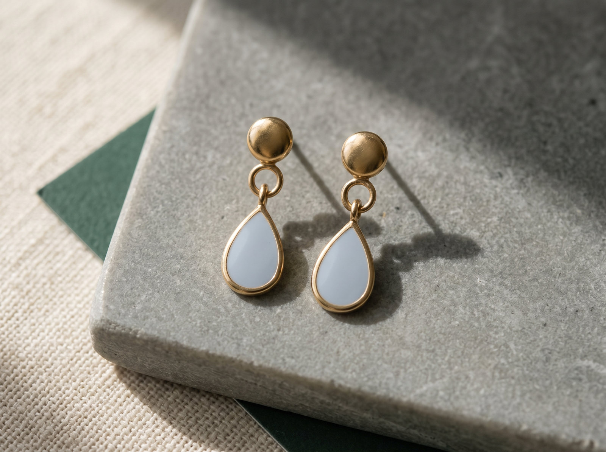
Etsy metni
Başlık 82/140
14K Gold Ice Blue Enamel Teardrop Earrings, Fired Glass Enamel Drop, Winter Dangle
Etiketler (13)
14k gold earrings, ice blue enamel, enamel earrings, teardrop earrings, gold drop earrings, vitreous enamel, winter jewelry, blue drop earrings, champleve enamel, christmas gift, gift for her, icy blue jewelry, dangle earrings
Malzemeler
14k yellow gold, vitreous enamel, 14k gold earring posts, 14k gold friction backs
Açıklama
A small teardrop of ice-blue glass enamel in a polished 14k gold border, hanging point up from a domed gold disc. Clear winter blue for a Christmas gift, and a simple drop that is worn the whole year. THE PIECE A domed gold disc 3.4 mm across sits on the lobe. A 1.0 mm gold ring joins it to the teardrop, which is 7.2 mm long, 4.6 mm wide and 1.4 mm thick, with a 0.7 mm polished gold border. Overall length about 12.5 mm. GOLD WEIGHT 1.69 g of 14k gold for the pair, counting both posts and friction backs. On the scale the finished pair weighs 1.72 g in total with the enamel. Each pair is weighed after finishing and checked against this design weight. ENAMEL Kiln-fired vitreous enamel (glass), opaque ice-blue. The enamel fills the teardrop flat and level with the gold border or just below it. Glass does not fade, but a hard knock can chip it: keep the earrings away from chlorine and harsh chemicals, and clean the enamel with warm soapy water and a soft brush. LENGTH AND FIT About 12.5 mm long, sitting just below the lobe; the teardrop moves freely on its ring. A straight 14k gold post, 0.76 mm thick and 11.1 mm long, with a 14k gold friction back. HOW IT IS MADE Made to order. The disc and the teardrop are cast separately in zinc-free 14k gold, and the enamel cell is formed in the casting itself. The enamel is fired four times at no more than 780 C. There is no solder: the post is laser welded to the disc, which never goes into the kiln, and the ring is closed with a laser weld well away from the enamel. CARE Store the pair on its own so harder pieces do not knock the enamel. Wipe the gold with a soft cloth. No ultrasonic or steam cleaning. GIFTING Arrives in a gift box, ready to give. Made to order. The processing time is shown at checkout.
Atölye kartı
A: Ø3.4 x 0.9 + 0.3 kubbe (merkez 1.2; soket sonrasi 0.7); altta dokum C-halka 1.0 kesit, ic Ø1.2, bosluk 1.1. B: damla (Ø4.6 alt daire + Ø1.2 ust daire zarfi) 7.2 x 4.6 x 1.4 mm, ucu yukari; ucta dokum KAPALI goz 1.0 kesit, ic Ø1.2. Hucre (Ø3.2 + Ø0.7 zarf) 0.6 derin, taban 0.8, jant 0.70, jant arka pahi 0.7 x 0.5. Mine DUZ, jant kotunda (0-0.05 mm alti). Toplam ~12.5 mm.
Iki parca 14K cinkosuz. (A) kubbeli disk + dokum ACIK C-halka; civi A'ya lazer; A firin gormez. (B) damla plaka + dokum KAPALI goz; hucre dokumde, taban duz, doku yok; 4 pisirim; mine taslanarak DUZ biter. Montaj: C-halka B gozune gecirilir; 1.1 mm bosluk 1.0 mm 14K tel tapa ile iki uctan dolgusuz alin lazeri, mine maskeli; kaynak-mine mesafesi >=3.5 mm. B'de lehim/kaynak yok. Tas yok.
Tezgâh sırası
- CAD: A disk + C-halka (bosluk 1.1), B damla + goz; hucre modelde, uc r0.35; model +0.2 mm.
- Recine baski -> vakum dokum cinkosuz 14K; B yollugu alt yaya (gozun karsisi).
- Tesviye, 10x hucre tabani gozenek kontrolu, hucre temizligi (doku yok).
- Seri oncesi pilot: ayni alasim + ayni dokumhaneden renk basina kupon, P1-P4 cevrimiyle pisirilir; igne deligi, kabarcik, catlak ve renk tonu gecmeden uretim yok.
- Yuzey zenginlestirme (depletion gilding) x3-4: ~593 C -> %10 H2SO4 pickle -> durulama (yalniz mineden ONCE; sonra asit yok).
- Islak dolum 1. sarj ince (buz mavisi) -> kurut -> P1 780 C x 1:45 dk (kalibre pirometre, firin termokupl kontrolu).
- 2. sarj -> P2 780 C x 1:45 dk.
- 3. sarj (jant ustune hafif tasan) -> P3 780 C x 1:45 dk.
- Su altinda alundum tas/elmas pedle mineyi jant kotuna (0-0.05 mm alti) DUZ taslama; hucre kenarinda cip kontrolu.
- P4 parlatma pisirimi 770 C x 1:00 dk (toplam 4 pisirim, hepsi <=780 C).
- Hafif sitrik pickle + durulama (H2SO4/HNO3 banyo YOK).
- A: civi lazer + burgu testi (A firin gormez).
- Montaj: C-halkayi B gozune gecir, mine maskeli; 1.0 mm tapa iki uctan alin lazeri; 2 kg cekme testi.
- El cilasi yalniz ciplak altina; QC: cift 1.69 g +-0.05; mine 10x; mine duz ve jant kotunda; salinim serbestligi.
Malzeme listesi
- Alasim: 14K sari, CINKOSUZ 'enamelable' dokum alasimi (Otto Frei 846-180 no-zinc master alloy ile alasimlanmis; dokumhaneden yazili Zn=0 sertifikasi + DSC solidus), vakum/inert gaz dokum; dokum metali ~1.19 g/cift (govde x 1.15)
- Mine: <=780 C'de olgunlasan kursunsuz yumusak opak mine (or. Soyer soft serisi), renk basina kupon; renk: buz mavisi; pisirilmis ~30 mg/cift
- 2 x Stuller 1800 14KY sert cekme friction civi 0.76 x 11.1 mm (0.0658 g/adet = 0.132 g)
- 2 x 14K sari friction arkalik 5-6.3 mm (0.25 g/adet VARSAYIM = 0.50 g; KANIT 0.2-0.4 g kaynaksiz - tedarikci numunesi tartilmadan CAD onayi yok)
- 2 x 1.0 mm sert cekme 14K sari tel tapa, 1.1 mm boy (0.864 mm3 = ~11 mg/adet, ~23 mg/cift; C-halka boslugu, iki uctan dolgusuz alin lazeri)
- GRAM DOKUMU (cift, x2 x 0.01307 g/mm3): A ust disk O3.4 x 0.9 + 0.3 kubbe: +9.55 mm3 -> +0.2496 g; A civi soketi: -0.25 mm3 -> -0.0066 g; A dokum C-halka 1.0 kesit ID1.2, bosluk 1.1: +4.20 mm3 -> +0.1098 g; C-halka tapasi 1.0 tel x 1.1: +0.86 mm3 -> +0.0226 g; B damla plaka 22.33 mm2 x 1.4: +31.26 mm3 -> +0.8172 g; B hucre 10.14 mm2 x 0.6: -6.08 mm3 -> -0.1590 g; B jant arka pahi 0.175 mm2 x cevre 18.39: -3.22 mm3 -> -0.0841 g; B dokum kapali goz 1.0 kesit ID1.2: +4.20 mm3 -> +0.1098 g; civi 2 x Stuller 1800 0.76x11.1 = 0.1316 g; arkalik 2 x 0.25 g (varsayim) = 0.50 g => govde 1.0593 g, ALTIN 1.691 g (bant 1.40-1.75, tavana pay 0.059 g)
Arıza modları
| Arıza | Tasarım nasıl önlüyor |
|---|---|
| Mine yuzeyi tanim celiskisi (kubbe/duz) -> QC ret | Tek tanim: mine DUZ, jant kotunda veya 0-0.05 mm alti; kubbe yalniz A altin diskinde. |
| Igne deligi/kabarcik | Zn=0 alasim, vakum dokum, kupon, 10x. |
| C-halka kapamasinin acilmasi | 1.0 mm tam kesit tapa + iki tam nufuz alin kaynagi; 2 kg cekme. |
| Mine kenar cipi | Jant 0.70; mine jant kotunun 0-0.05 mm altinda. |
Tolerans
| Kural | Değer | |
|---|---|---|
| L1 karat + cinkosuz | 14K, Zn=0 | ✓ |
| L2 hucre 0.5-0.6 derin, >=0.7 gen., derinlik <=2 x gen. | 0.6; en dar 0.70; 0.6 <= 1.4 | ✓ |
| L2 cevre duvar >=0.70, taban >=0.8 | 0.70 / 0.8 mm | ✓ |
| L2 renk, opak | 1: buz mavisi | ✓ |
| L2/KANIT pisirim <=4, <=780 C | 780/780/780/770 C | ✓ |
| L3 kaynak-mine mesafesi (KANIT >=1.5) | >=3.5 mm; B'de lehim yok | ✓ |
| L5 tasiyici yuk yolu >=1.0 | C-halka/tapa/goz 1.0 | ✓ |
| Halka boslugu >= gecen tel + 0.1 | 1.1 >= 1.1 | ✓ |
| L5 yapisal >=0.8 | A 0.9; B jant dis kenari 0.9 | ✓ |
| L7 cift altin 1.40-1.75; tavana pay >=0.05 | 1.691 g; pay 0.059 | ✓ |
| L9 sarkit <=30 | ~12.5 mm | ✓ |
| L12 tek kahraman | buz mavisi mineli damla | ✓ |
Görsel promptları (16)
- 01Hero / arama küçük resmi: tek ürün, marka natürmortu, 4:3.Referanssız
Quiet luxury editorial still-life product photography. Warm ivory linen ground, honed grey stone slab, a sliver of deep jade-green matte card. Soft directional window light from upper left, long soft shadow, shallow depth of field. Solid yellow gold with warm antique tone. Restrained heirloom mood. No text, no logo, no glitter, no Christmas decoration. The piece: Pair of 14K yellow gold drop earrings. At the earlobe is a round domed gold disc 3.4 mm across with a straight post behind. A round gold ring 1.0 mm thick joins it to a small closed gold loop at the point of a teardrop plate 7.2 mm long and 4.6 mm wide, point up. The teardrop is filled with smooth, glossy opaque ice-blue enamel (a soft pale powder blue with a grey cast), flat and level with a polished gold border 0.7 mm wide. The gold is high-polish throughout. Overall length about 12.5 mm. The piece carries no gemstones at all and no empty settings. The only colour on the piece is opaque ice-blue enamel filling the single teardrop cell inside a 0.7 mm gold border; every other surface is yellow gold. The pair lies side by side on the honed grey stone slab, both fronts facing the camera, about 15 mm apart, posts hidden underneath; exactly two earrings. Seen from about 30 degrees above with a 100 mm macro lens, the piece in razor-sharp focus, filling about 45 percent of the frame width, centred with generous empty margin on all four sides. No people and no hands.
Alt metin 14K gold teardrop drop earrings filled with ice-blue enamel, hanging from a domed gold disc
- 02Takılı hâli: ölçek ve duruş. Hero'dan sonra dönüşümü en çok etkileyen kare.Referans: hero kırpımı
Quiet luxury editorial photography in warm ivory, stone grey and deep jade-green tones, soft directional window light from the upper left, true colour, fine film grain, no heavy retouching. No text, no logo, no watermark, no glitter. The attached reference image is a crop of this exact piece: keep its shape, proportions, gold colour and enamel colours exactly as in the reference. The piece: Pair of 14K yellow gold drop earrings. At the earlobe is a round domed gold disc 3.4 mm across with a straight post behind. A round gold ring 1.0 mm thick joins it to a small closed gold loop at the point of a teardrop plate 7.2 mm long and 4.6 mm wide, point up. The teardrop is filled with smooth, glossy opaque ice-blue enamel (a soft pale powder blue with a grey cast), flat and level with a polished gold border 0.7 mm wide. The gold is high-polish throughout. Overall length about 12.5 mm. The piece carries no gemstones at all and no empty settings. The only colour on the piece is opaque ice-blue enamel filling the single teardrop cell inside a 0.7 mm gold border; every other surface is yellow gold. One earring worn on a woman's left earlobe, side profile, hair tucked behind the ear, cropped tight from cheekbone to jaw; only one ear is in the frame and exactly one earring is visible; no other earrings and no piercings elsewhere; true to scale, the main element measures about 12.5 mm across.
Alt metin 14K gold teardrop drop earrings filled with ice-blue enamel, hanging from a domed gold disc, worn
- 03Makro işçilik: fiyatı meşrulaştıran detay (mine yüzeyi, flush taş, kenar bitimi).Referans: hero kırpımı
Quiet luxury editorial photography in warm ivory, stone grey and deep jade-green tones, soft directional window light from the upper left, true colour, fine film grain, no heavy retouching. No text, no logo, no watermark, no glitter. The attached reference image is a crop of this exact piece: keep its shape, proportions, gold colour and enamel colours exactly as in the reference. The piece: Pair of 14K yellow gold drop earrings. At the earlobe is a round domed gold disc 3.4 mm across with a straight post behind. A round gold ring 1.0 mm thick joins it to a small closed gold loop at the point of a teardrop plate 7.2 mm long and 4.6 mm wide, point up. The teardrop is filled with smooth, glossy opaque ice-blue enamel (a soft pale powder blue with a grey cast), flat and level with a polished gold border 0.7 mm wide. The gold is high-polish throughout. Overall length about 12.5 mm. The piece carries no gemstones at all and no empty settings. The only colour on the piece is opaque ice-blue enamel filling the single teardrop cell inside a 0.7 mm gold border; every other surface is yellow gold. Extreme close-up macro, 100 mm macro lens: The flat glossy ice-blue enamel teardrop level with its 0.7 mm polished gold border, and the small closed loop at its point. The rest of the piece falls away into soft focus on warm-ivory linen.
Alt metin Close-up of the ice-blue enamel teardrop in its polished gold border
- 04Elde ölçek: mm'yi parmak ucuna çevirir, 'beklediğimden küçük' iadesini önler.Referans: hero kırpımı
Quiet luxury editorial photography in warm ivory, stone grey and deep jade-green tones, soft directional window light from the upper left, true colour, fine film grain, no heavy retouching. No text, no logo, no watermark, no glitter. The attached reference image is a crop of this exact piece: keep its shape, proportions, gold colour and enamel colours exactly as in the reference. The piece: Pair of 14K yellow gold drop earrings. At the earlobe is a round domed gold disc 3.4 mm across with a straight post behind. A round gold ring 1.0 mm thick joins it to a small closed gold loop at the point of a teardrop plate 7.2 mm long and 4.6 mm wide, point up. The teardrop is filled with smooth, glossy opaque ice-blue enamel (a soft pale powder blue with a grey cast), flat and level with a polished gold border 0.7 mm wide. The gold is high-polish throughout. Overall length about 12.5 mm. The piece carries no gemstones at all and no empty settings. The only colour on the piece is opaque ice-blue enamel filling the single teardrop cell inside a 0.7 mm gold border; every other surface is yellow gold. Close-up for scale against a plain warm-ivory background thrown softly out of focus: one earring held between the thumb and index finger of a woman's hand by its edges, front facing the camera; the second earring is not in the frame; true to scale, the main element measures about 12.5 mm across, a fingertip is about 16 mm wide; it is the only jewellery in the image; anatomically correct hands with five fingers, short natural unpolished nails.
Alt metin 14K gold teardrop drop earrings filled with ice-blue enamel, hanging from a domed gold disc, held between fingers for scale
- 05Arka ve bulgular: dolu gövde, kilit / çivi / iğne; sağlamlık sorusunu cevaplar.Referans: hero kırpımı
Quiet luxury editorial photography in warm ivory, stone grey and deep jade-green tones, soft directional window light from the upper left, true colour, fine film grain, no heavy retouching. No text, no logo, no watermark, no glitter. The attached reference image is a crop of this exact piece: keep its shape, proportions, gold colour and enamel colours exactly as in the reference. The piece: Pair of 14K yellow gold drop earrings. At the earlobe is a round domed gold disc 3.4 mm across with a straight post behind. A round gold ring 1.0 mm thick joins it to a small closed gold loop at the point of a teardrop plate 7.2 mm long and 4.6 mm wide, point up. The teardrop is filled with smooth, glossy opaque ice-blue enamel (a soft pale powder blue with a grey cast), flat and level with a polished gold border 0.7 mm wide. The gold is high-polish throughout. Overall length about 12.5 mm. The piece carries no gemstones at all and no empty settings. The only colour on the piece is opaque ice-blue enamel filling the single teardrop cell inside a 0.7 mm gold border; every other surface is yellow gold. The back of the piece, top-down on honed grey stone: A flat solid gold back on the teardrop with a beveled edge, and a straight post behind the domed top disc.
Alt metin Back of the drop earrings showing the flat solid gold back of the teardrop and the post behind the disc
- 06Tam boy / çift / mekanizma: uzunluk, ayar ve ne geldiğini tek karede gösterir.Referans: hero kırpımı
Quiet luxury editorial photography in warm ivory, stone grey and deep jade-green tones, soft directional window light from the upper left, true colour, fine film grain, no heavy retouching. No text, no logo, no watermark, no glitter. The attached reference image is a crop of this exact piece: keep its shape, proportions, gold colour and enamel colours exactly as in the reference. The piece: Pair of 14K yellow gold drop earrings. At the earlobe is a round domed gold disc 3.4 mm across with a straight post behind. A round gold ring 1.0 mm thick joins it to a small closed gold loop at the point of a teardrop plate 7.2 mm long and 4.6 mm wide, point up. The teardrop is filled with smooth, glossy opaque ice-blue enamel (a soft pale powder blue with a grey cast), flat and level with a polished gold border 0.7 mm wide. The gold is high-polish throughout. Overall length about 12.5 mm. The piece carries no gemstones at all and no empty settings. The only colour on the piece is opaque ice-blue enamel filling the single teardrop cell inside a 0.7 mm gold border; every other surface is yellow gold. The pair laid flat side by side on warm-ivory linen, top-down, both fronts to the camera, mirror-symmetric, about 15 mm apart, exactly two earrings.
Alt metin 14K gold teardrop drop earrings filled with ice-blue enamel, hanging from a domed gold disc, pair
- 07Yan profil: kalınlık ve kütle, düz baskı değil gerçek altın olduğunu gösterir.Referans: hero kırpımı
Quiet luxury editorial photography in warm ivory, stone grey and deep jade-green tones, soft directional window light from the upper left, true colour, fine film grain, no heavy retouching. No text, no logo, no watermark, no glitter. The attached reference image is a crop of this exact piece: keep its shape, proportions, gold colour and enamel colours exactly as in the reference. The piece: Pair of 14K yellow gold drop earrings. At the earlobe is a round domed gold disc 3.4 mm across with a straight post behind. A round gold ring 1.0 mm thick joins it to a small closed gold loop at the point of a teardrop plate 7.2 mm long and 4.6 mm wide, point up. The teardrop is filled with smooth, glossy opaque ice-blue enamel (a soft pale powder blue with a grey cast), flat and level with a polished gold border 0.7 mm wide. The gold is high-polish throughout. Overall length about 12.5 mm. The piece carries no gemstones at all and no empty settings. The only colour on the piece is opaque ice-blue enamel filling the single teardrop cell inside a 0.7 mm gold border; every other surface is yellow gold. Side profile at eye level on honed grey stone, the camera level with the piece: In side profile the top disc is 0.9 mm thick with a 0.3 mm dome and the teardrop plate is 1.4 mm thick, about 12.5 mm tall overall.
Alt metin Side profile of the drop earrings showing its thickness
- 08Kış yaşam stili: sezonu Noel dekoru olmadan kurar.Referans: hero kırpımı
Quiet luxury editorial photography in warm ivory, stone grey and deep jade-green tones, soft directional window light from the upper left, true colour, fine film grain, no heavy retouching. No text, no logo, no watermark, no glitter. The attached reference image is a crop of this exact piece: keep its shape, proportions, gold colour and enamel colours exactly as in the reference. The piece: Pair of 14K yellow gold drop earrings. At the earlobe is a round domed gold disc 3.4 mm across with a straight post behind. A round gold ring 1.0 mm thick joins it to a small closed gold loop at the point of a teardrop plate 7.2 mm long and 4.6 mm wide, point up. The teardrop is filled with smooth, glossy opaque ice-blue enamel (a soft pale powder blue with a grey cast), flat and level with a polished gold border 0.7 mm wide. The gold is high-polish throughout. Overall length about 12.5 mm. The piece carries no gemstones at all and no empty settings. The only colour on the piece is opaque ice-blue enamel filling the single teardrop cell inside a 0.7 mm gold border; every other surface is yellow gold. Winter afternoon light: three-quarter view of a woman with dark hair pulled back into a low knot, ivory turtleneck sweater, cropped below the eyes; exactly one earring visible on the near ear; it is the only jewellery in the image.
Alt metin 14K gold teardrop drop earrings filled with ice-blue enamel, hanging from a domed gold disc, styled with winter knitwear
- 09Hediye kutusu: Noel alıcısının ilk sorusu, hediyeye hazır mı?Referans: hero kırpımı
Quiet luxury editorial photography in warm ivory, stone grey and deep jade-green tones, soft directional window light from the upper left, true colour, fine film grain, no heavy retouching. No text, no logo, no watermark, no glitter. The attached reference image is a crop of this exact piece: keep its shape, proportions, gold colour and enamel colours exactly as in the reference. The piece: Pair of 14K yellow gold drop earrings. At the earlobe is a round domed gold disc 3.4 mm across with a straight post behind. A round gold ring 1.0 mm thick joins it to a small closed gold loop at the point of a teardrop plate 7.2 mm long and 4.6 mm wide, point up. The teardrop is filled with smooth, glossy opaque ice-blue enamel (a soft pale powder blue with a grey cast), flat and level with a polished gold border 0.7 mm wide. The gold is high-polish throughout. Overall length about 12.5 mm. The piece carries no gemstones at all and no empty settings. The only colour on the piece is opaque ice-blue enamel filling the single teardrop cell inside a 0.7 mm gold border; every other surface is yellow gold. Top-down: the pair side by side, fronts up inside a small open square gift box in plain warm-ivory card with a soft ivory insert, the lid set beside it, a length of narrow deep jade-green ribbon untied beside the box, on honed grey stone. No branding, no printed pattern, no tissue paper, no Christmas decoration, exactly one box.
Alt metin 14K gold teardrop drop earrings filled with ice-blue enamel, hanging from a domed gold disc in a gift box
- 10Gerçek renk: nötr gün ışığında altın ve mine rengi; renk kaynaklı iadeyi azaltır.Referans: hero kırpımı
Quiet luxury editorial photography in warm ivory, stone grey and deep jade-green tones, soft directional window light from the upper left, true colour, fine film grain, no heavy retouching. No text, no logo, no watermark, no glitter. The attached reference image is a crop of this exact piece: keep its shape, proportions, gold colour and enamel colours exactly as in the reference. The piece: Pair of 14K yellow gold drop earrings. At the earlobe is a round domed gold disc 3.4 mm across with a straight post behind. A round gold ring 1.0 mm thick joins it to a small closed gold loop at the point of a teardrop plate 7.2 mm long and 4.6 mm wide, point up. The teardrop is filled with smooth, glossy opaque ice-blue enamel (a soft pale powder blue with a grey cast), flat and level with a polished gold border 0.7 mm wide. The gold is high-polish throughout. Overall length about 12.5 mm. The piece carries no gemstones at all and no empty settings. The only colour on the piece is opaque ice-blue enamel filling the single teardrop cell inside a 0.7 mm gold border; every other surface is yellow gold. Colour-accurate reference shot: the piece alone, top-down on plain matte white-ivory paper under even neutral north daylight, no shadow drama, no props, the piece centred and filling half the frame.
Alt metin 14K gold teardrop drop earrings filled with ice-blue enamel, hanging from a domed gold disc in neutral daylight, true colour
- 11Ölçü grafiği tabanı: sağ üçte bir boş; mm etiketleri sonra eklenir.Referans: hero kırpımı
Quiet luxury editorial photography in warm ivory, stone grey and deep jade-green tones, soft directional window light from the upper left, true colour, fine film grain, no heavy retouching. No text, no logo, no watermark, no glitter. The attached reference image is a crop of this exact piece: keep its shape, proportions, gold colour and enamel colours exactly as in the reference. The piece: Pair of 14K yellow gold drop earrings. At the earlobe is a round domed gold disc 3.4 mm across with a straight post behind. A round gold ring 1.0 mm thick joins it to a small closed gold loop at the point of a teardrop plate 7.2 mm long and 4.6 mm wide, point up. The teardrop is filled with smooth, glossy opaque ice-blue enamel (a soft pale powder blue with a grey cast), flat and level with a polished gold border 0.7 mm wide. The gold is high-polish throughout. Overall length about 12.5 mm. The piece carries no gemstones at all and no empty settings. The only colour on the piece is opaque ice-blue enamel filling the single teardrop cell inside a 0.7 mm gold border; every other surface is yellow gold. The piece alone, top-down on plain warm-ivory paper, placed in the left two thirds of the frame; the right third is empty paper for dimension labels to be added later; even soft light, no props.
Alt metin 14K gold teardrop drop earrings filled with ice-blue enamel, hanging from a domed gold disc with space for dimensions
- 12El işçiliği: siparişe üretim hikâyesi, tezgâhta parça.Referans: hero kırpımı
Quiet luxury editorial photography in warm ivory, stone grey and deep jade-green tones, soft directional window light from the upper left, true colour, fine film grain, no heavy retouching. No text, no logo, no watermark, no glitter. The attached reference image is a crop of this exact piece: keep its shape, proportions, gold colour and enamel colours exactly as in the reference. The piece: Pair of 14K yellow gold drop earrings. At the earlobe is a round domed gold disc 3.4 mm across with a straight post behind. A round gold ring 1.0 mm thick joins it to a small closed gold loop at the point of a teardrop plate 7.2 mm long and 4.6 mm wide, point up. The teardrop is filled with smooth, glossy opaque ice-blue enamel (a soft pale powder blue with a grey cast), flat and level with a polished gold border 0.7 mm wide. The gold is high-polish throughout. Overall length about 12.5 mm. The piece carries no gemstones at all and no empty settings. The only colour on the piece is opaque ice-blue enamel filling the single teardrop cell inside a 0.7 mm gold border; every other surface is yellow gold. The finished piece lying on a worn wooden jeweller's bench pin beside a small porcelain dish of ice-blue enamel powder and a fine sable brush, warm lamp light, shallow depth of field, the piece in sharp focus; no hands.
Alt metin 14K gold teardrop drop earrings filled with ice-blue enamel, hanging from a domed gold disc on a jeweller's bench
- 13Motifin anlamı: sol üçte bir boş; sembol hikâyesi metni sonra eklenir.Referans: hero kırpımı
Quiet luxury editorial photography in warm ivory, stone grey and deep jade-green tones, soft directional window light from the upper left, true colour, fine film grain, no heavy retouching. No text, no logo, no watermark, no glitter. The attached reference image is a crop of this exact piece: keep its shape, proportions, gold colour and enamel colours exactly as in the reference. The piece: Pair of 14K yellow gold drop earrings. At the earlobe is a round domed gold disc 3.4 mm across with a straight post behind. A round gold ring 1.0 mm thick joins it to a small closed gold loop at the point of a teardrop plate 7.2 mm long and 4.6 mm wide, point up. The teardrop is filled with smooth, glossy opaque ice-blue enamel (a soft pale powder blue with a grey cast), flat and level with a polished gold border 0.7 mm wide. The gold is high-polish throughout. Overall length about 12.5 mm. The piece carries no gemstones at all and no empty settings. The only colour on the piece is opaque ice-blue enamel filling the single teardrop cell inside a 0.7 mm gold border; every other surface is yellow gold. The piece alone, top-down on a deep jade-green matte card, placed in the right two thirds of the frame; the left third is empty card for a caption to be added later; soft directional light.
Alt metin 14K gold teardrop drop earrings filled with ice-blue enamel, hanging from a domed gold disc on a deep green card
- 14Yıl boyu takılır: 'yalnız Noel' itirazını kırar.Referans: hero kırpımı
Quiet luxury editorial photography in warm ivory, stone grey and deep jade-green tones, soft directional window light from the upper left, true colour, fine film grain, no heavy retouching. No text, no logo, no watermark, no glitter. The attached reference image is a crop of this exact piece: keep its shape, proportions, gold colour and enamel colours exactly as in the reference. The piece: Pair of 14K yellow gold drop earrings. At the earlobe is a round domed gold disc 3.4 mm across with a straight post behind. A round gold ring 1.0 mm thick joins it to a small closed gold loop at the point of a teardrop plate 7.2 mm long and 4.6 mm wide, point up. The teardrop is filled with smooth, glossy opaque ice-blue enamel (a soft pale powder blue with a grey cast), flat and level with a polished gold border 0.7 mm wide. The gold is high-polish throughout. Overall length about 12.5 mm. The piece carries no gemstones at all and no empty settings. The only colour on the piece is opaque ice-blue enamel filling the single teardrop cell inside a 0.7 mm gold border; every other surface is yellow gold. Everyday wear, no season: side profile of a woman with short dark hair, plain white t-shirt collar, soft daylight, cropped from cheekbone to jaw; exactly one earring visible on the near ear.
Alt metin 14K gold teardrop drop earrings filled with ice-blue enamel, hanging from a domed gold disc, everyday wear
- 15Hediye anı: duygu; Noel satın alma niyetine bağlar.Referans: hero kırpımı
Quiet luxury editorial photography in warm ivory, stone grey and deep jade-green tones, soft directional window light from the upper left, true colour, fine film grain, no heavy retouching. No text, no logo, no watermark, no glitter. The attached reference image is a crop of this exact piece: keep its shape, proportions, gold colour and enamel colours exactly as in the reference. The piece: Pair of 14K yellow gold drop earrings. At the earlobe is a round domed gold disc 3.4 mm across with a straight post behind. A round gold ring 1.0 mm thick joins it to a small closed gold loop at the point of a teardrop plate 7.2 mm long and 4.6 mm wide, point up. The teardrop is filled with smooth, glossy opaque ice-blue enamel (a soft pale powder blue with a grey cast), flat and level with a polished gold border 0.7 mm wide. The gold is high-polish throughout. Overall length about 12.5 mm. The piece carries no gemstones at all and no empty settings. The only colour on the piece is opaque ice-blue enamel filling the single teardrop cell inside a 0.7 mm gold border; every other surface is yellow gold. A gift being given: two pairs of hands across a pale oak table, one pair holding out the small open warm-ivory gift box with the piece visible inside, the other reaching for it, soft warm window light, sleeves of ivory and grey knitwear; exactly one box and one piece of jewellery; anatomically correct hands with five fingers, short natural unpolished nails.
Alt metin 14K gold teardrop drop earrings filled with ice-blue enamel, hanging from a domed gold disc given as a gift
- 16Mağaza ızgarası / Pinterest: koyu jade zeminde yüksek kontrast kare.Referans: hero kırpımı
Quiet luxury editorial photography in warm ivory, stone grey and deep jade-green tones, soft directional window light from the upper left, true colour, fine film grain, no heavy retouching. No text, no logo, no watermark, no glitter. The attached reference image is a crop of this exact piece: keep its shape, proportions, gold colour and enamel colours exactly as in the reference. The piece: Pair of 14K yellow gold drop earrings. At the earlobe is a round domed gold disc 3.4 mm across with a straight post behind. A round gold ring 1.0 mm thick joins it to a small closed gold loop at the point of a teardrop plate 7.2 mm long and 4.6 mm wide, point up. The teardrop is filled with smooth, glossy opaque ice-blue enamel (a soft pale powder blue with a grey cast), flat and level with a polished gold border 0.7 mm wide. The gold is high-polish throughout. Overall length about 12.5 mm. The piece carries no gemstones at all and no empty settings. The only colour on the piece is opaque ice-blue enamel filling the single teardrop cell inside a 0.7 mm gold border; every other surface is yellow gold. Top-down flat lay of the piece centred on a deep jade-green matte card with a narrow border of warm-ivory linen at the top edge, crisp soft light, the piece filling about 40 percent of the frame so a square crop keeps all of it.
Alt metin 14K gold teardrop drop earrings filled with ice-blue enamel, hanging from a domed gold disc, flat lay on deep green
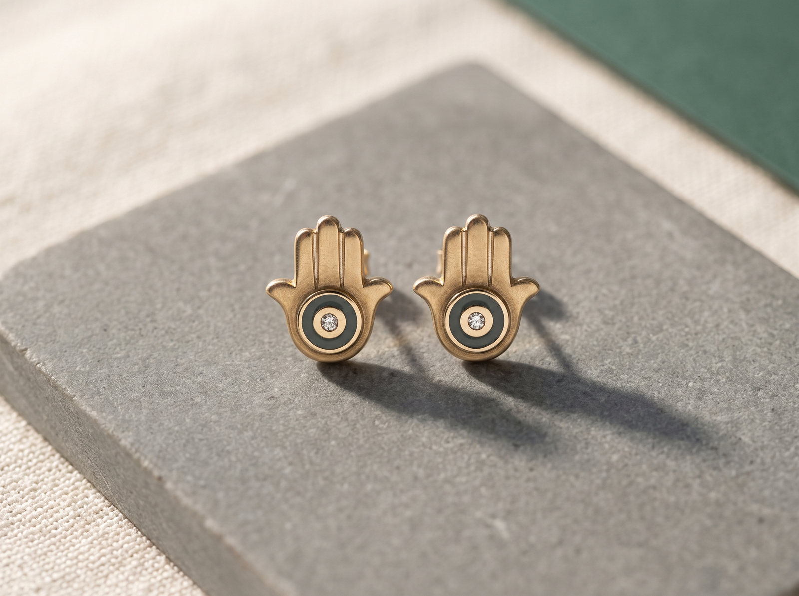
Etsy metni
Başlık 78/140
14K Gold Hamsa Stud Earrings, Jade Green Enamel, Lab Grown White Sapphire Palm
Etiketler (13)
14k gold earrings, hamsa earrings, hamsa stud, green enamel, enamel earrings, lab grown sapphire, protection amulet, hand of fatima, talisman jewelry, gold stud earrings, christmas gift, gift for her, jade green enamel
Malzemeler
14k yellow gold, vitreous enamel, lab grown white sapphire, 14k gold earring posts, 14k gold friction backs
Açıklama
A hamsa hand in 14k gold with a ring of deep jade-green glass enamel around a lab-grown white sapphire in the palm. A protection charm that makes a thoughtful Christmas gift and is worn every day after. THE PIECE Each stud is 6.8 mm wide and 8.9 mm tall, fingers up. Three fingers and two outward-turned thumbs form one plate, divided by fine bright grooves. The round palm is 5.3 mm across and 1.4 mm thick, with a 0.7 mm enamel ring around a 2.5 mm polished gold center and a 0.7 mm gold rim. GOLD WEIGHT 1.68 g of 14k gold for the pair, counting both posts and friction backs. On the scale the finished pair weighs 1.70 g in total with the enamel and stones. Each pair is weighed after finishing and checked against this design weight. ENAMEL Kiln-fired vitreous enamel (glass), opaque deep jade-green. The enamel ring sits level with the gold or just below it. Glass does not fade, but a hard knock can chip it: keep the earrings away from chlorine and harsh chemicals, and clean the enamel with warm soapy water and a soft brush. STONES Two 1.3 mm round lab-grown white sapphires, one in the center of each palm, 0.022 ct in total. Each is flush set in bare gold, table level with the gold, over a small hole, and set by hand after the enamel firings are finished. LENGTH AND FIT 8.9 mm tall. The post sits behind the fingers, above the middle of the piece, so the hamsa stays upright with its fingers up. A straight 14k gold post, 0.76 mm thick and 11.1 mm long, with a 14k gold friction back. HOW IT IS MADE Made to order. Each hamsa is cast in zinc-free 14k gold in one piece, with the enamel cell formed in the casting. The enamel is fired four times at no more than 780 C. There is no solder: the hard gold post is laser welded on afterwards, on a pad away from the enamel, and the sapphire is set last, after the firings. CARE Store the pair on its own so harder pieces do not knock the enamel. Wipe the gold with a soft cloth. No ultrasonic or steam cleaning. GIFTING Arrives in a gift box, ready to give. Made to order. The processing time is shown at checkout.
Atölye kartı
6.8 x 8.9 mm. Avuc Ø5.3 x 1.4; ada Ø2.5 (+0.1 on kabartma, yerel 1.5); hucre halkasi r1.25-1.95 (0.70), 0.6 derin, taban 0.8, jant 0.70; jant arka pahi 0.7 x 0.5 YALNIZ serbest avuc kenarinda (parmaklara bagli ust ~%40 pahsiz). Parmaklar tek plaka 0.8 kalin, oluklar 0.4 x 0.2. Civi pedi Ø2.2 arka kabartma (yerel 1.2), avuc merkezinin 4.6 mm ustu; ped-hucre plan 1.55 mm.
Tek parca dokum 14K cinkosuz; hucre halkasi dokumde. Civi pedi parmak bolgesinde (ciplak altin), hucreden plan 1.55 mm. Tas yuvasi frezesi ve Ø0.7 delik dokum tesviyesinden sonra, MINEDEN ONCE acilir (ciplak altin adada, mine girmez). Pisirimlerden sonra civi lazer, en son tas: 1.3 mm safir el itme/burnisher ile (cekic yok), mine maskeli. Lehim yok.
Tezgâh sırası
- CAD: hucre halkasi dokum hucresi, ada +0.1, Ø0.7 alt delik pilotu, parmak bolgesinde ped Ø2.2 + soket; ped-hucre plan >=1.5 olcumu; pah yalniz serbest avuc kenarinda.
- Recine baski -> vakum dokum cinkosuz 14K; yolluk ped arkasina.
- Tesviye, 10x gozenek, hucre temizligi; parmak oluklari mineden ONCE kesilir.
- Tas yuvasi: Ø0.7 delik kontrol + Ø1.3 yuva frezesi MINEDEN ONCE (titresim/capak pisirilmis mineye degmez).
- Seri oncesi pilot: ayni alasim + ayni dokumhaneden renk basina kupon, P1-P4 cevrimiyle pisirilir; igne deligi, kabarcik, catlak ve renk tonu gecmeden uretim yok.
- Yuzey zenginlestirme (depletion gilding) x3-4: ~593 C -> %10 H2SO4 pickle -> durulama (yalniz mineden ONCE; sonra asit yok).
- Islak dolum 1. sarj ince (derin yesim yesili) -> kurut -> P1 780 C x 1:30 dk (kalibre pirometre, firin termokupl kontrolu).
- 2. sarj -> P2 780 C x 1:30 dk.
- 3. sarj (jant ustune hafif tasan) -> P3 780 C x 1:30 dk.
- Su altinda alundum tas/elmas pedle mineyi jant kotuna (0-0.05 mm alti) DUZ taslama; hucre kenarinda cip kontrolu.
- P4 parlatma pisirimi 770 C x 1:00 dk (toplam 4 pisirim, hepsi <=780 C).
- Hafif sitrik pickle + durulama (H2SO4/HNO3 banyo YOK).
- Yuvayi pisirim kirinden temizle (yalniz mekanik, asit yok).
- Mineyi Plasti-tac + parlak gumus siperle maskele; Stuller 1800 sert civiyi ped soketine (Ø0.8 x 0.5) oturt, dusuk guc lazer, hava nozuluyla sogut (Staley yontemi).
- Civi testi: penseyle cekerken yarim-tam tur burgu (Revere) -> is sertlestirme + kaynak testi; civi dikligi 90 +-3 derece.
- Tas: 1.3 mm lab beyaz safiri hazir yuvaya el itme ucu/burnisher ile flush oturt; cekic KULLANILMAZ; mine maskeli.
- El cilasi yalniz ciplak altina; ultrasonik yok.
- QC: cift 1.68 g +-0.05; mine 10x; tas testi; ada-mine sinirinda catlak yok.
Malzeme listesi
- Alasim: 14K sari, CINKOSUZ 'enamelable' dokum alasimi (Otto Frei 846-180 no-zinc master alloy ile alasimlanmis; dokumhaneden yazili Zn=0 sertifikasi + DSC solidus), vakum/inert gaz dokum; dokum metali ~1.20 g/cift (govde x 1.15)
- Mine: <=780 C'de olgunlasan kursunsuz yumusak opak mine (or. Soyer soft serisi), renk basina kupon; renk: derin yesim yesili; pisirilmis ~21 mg/cift
- Taslar: 2 x 1.3 mm lab-grown beyaz safir (0.011 ct) = 0.022 ct
- 2 x Stuller 1800 14KY sert cekme friction civi 0.76 x 11.1 mm (0.0658 g/adet = 0.132 g)
- 2 x 14K sari friction arkalik 5-6.3 mm (0.25 g/adet VARSAYIM = 0.50 g; KANIT 0.2-0.4 g kaynaksiz - tedarikci numunesi tartilmadan CAD onayi yok)
- GRAM DOKUMU (cift, x2 x 0.01307 g/mm3): avuc O5.3 x 1.4: +30.89 mm3 -> +0.8074 g; halka hucre r1.25-1.95 x 0.6: -4.22 mm3 -> -0.1104 g; ada on kabartma O2.5 x 0.1: +0.49 mm3 -> +0.0128 g; 1.3 yuva + O0.7 delik: -0.92 mm3 -> -0.0240 g; avuc jant arka pahi yalniz serbest kenar (dogrulayici): -1.60 mm3 -> -0.0418 g; parmaklar + basparmaklar 18.25 mm2 x 0.8: +14.60 mm3 -> +0.3816 g; 4 parmak olugu 0.4x0.2 x2.8: -0.45 mm3 -> -0.0117 g; civi pedi O2.2 x 0.4 (arka): +1.52 mm3 -> +0.0397 g; civi soketi: -0.25 mm3 -> -0.0066 g; civi 2 x Stuller 1800 0.76x11.1 = 0.1316 g; arkalik 2 x 0.25 g (varsayim) = 0.50 g => govde 1.0471 g, ALTIN 1.679 g (bant 1.40-1.75, tavana pay 0.071 g)
Arıza modları
| Arıza | Tasarım nasıl önlüyor |
|---|---|
| Yuva frezesinin pisirilmis mineyi ciplemesi | Yuva ve delik mineden ONCE acilir; pisirim sonrasi yalniz el itme oturtma. |
| Tas oturtma kuvvetinin mineyi catlatmasi | Ada kenari 0.60 mm, cekic yok, el itme + maske; tas en son. |
| Lazer isisinin mineyi catlatmasi | Ped parmak bolgesinde, hucreye plan 1.55 mm; maske + dusuk guc + hava sogutma. |
| Civi tavlanmasi | Civi pisirim SONRASI sert cekme + lazer. |
| Ince halka minenin kalkmasi | Halka 0.70 gen. x 0.6 derin, dokum hucre duvarlari dik + koseler r0.2. |
Tolerans
| Kural | Değer | |
|---|---|---|
| L1 karat + cinkosuz | 14K, Zn=0 | ✓ |
| L2 hucre 0.5-0.6 derin, >=0.7 gen., derinlik <=2 x gen. | 0.6 / 0.70 / 0.6 <= 1.4 | ✓ |
| L2 cevre duvar >=0.70, taban >=0.8 | jant 0.70, taban 0.8 | ✓ |
| L2 renk | 1: derin yesim yesili | ✓ |
| L2/KANIT pisirim <=4, <=780 C | 780/780/780/770 C | ✓ |
| L3/KANIT ped-hucre plan >=1.5, ped >=0.8 | 1.55 mm; yerel 1.2 mm | ✓ |
| L4 tas ciplak altinda, yuva-mine >=0.6 | 0.60 mm; yuva mineden once | ✓ |
| L4 ev sahibi 1.3 mm tas >=1.5, yanal duvar >=0.35, alt delik | 1.5 mm; 0.60 mm; Ø0.7 | ✓ |
| L5 parmak yapisal >=0.8, oluk sonrasi >=0.6, uc r>=0.4 | 0.8 / 0.6 / r0.4 | ✓ |
| L7 cift altin 1.40-1.75; tavana pay >=0.05 | 1.679 g; pay 0.071 | ✓ |
| L9 stud <=12 | 8.9 mm | ✓ |
| L12 tek kahraman | hamsa silueti + yesil avuc halkasi | ✓ |
Görsel promptları (16)
- 01Hero / arama küçük resmi: tek ürün, marka natürmortu, 4:3.Referanssız
Quiet luxury editorial still-life product photography. Warm ivory linen ground, honed grey stone slab, a sliver of deep jade-green matte card. Soft directional window light from upper left, long soft shadow, shallow depth of field. Solid yellow gold with warm antique tone. Restrained heirloom mood. No text, no logo, no glitter, no Christmas decoration. The piece: Pair of 14K yellow gold stud earrings shaped as a hamsa hand, fingers up, 6.8 mm wide and 8.9 mm tall. Three joined fingers and two outward-turned thumbs, all with rounded tips, form one solid plate divided only by fine bright grooves. The round palm, 5.3 mm across, has a ring of opaque deep jade-green enamel (a dark muted grey-green) 0.7 mm wide around a plain polished gold center 2.5 mm across holding one 1.3 mm round white lab-grown sapphire set flush. A polished gold rim 0.7 mm wide surrounds the enamel. Straight post behind the fingers. The stones are exactly these and no others: one 1.3 mm round lab-grown white sapphire flush-set in the gold center of each palm, two in the pair. No other stone and no empty setting anywhere on the piece. The only colour on the piece is opaque deep jade-green enamel filling the single 0.7 mm ring cell around the gold palm center; every other surface is yellow gold. The pair lies side by side on the honed grey stone slab, both fronts facing the camera, about 15 mm apart, posts hidden underneath; exactly two earrings. Seen from about 30 degrees above with a 100 mm macro lens, the piece in razor-sharp focus, filling about 45 percent of the frame width, centred with generous empty margin on all four sides. No people and no hands.
Alt metin 14K gold hamsa stud earrings with a jade-green enamel palm ring and a lab grown white sapphire center
- 02Takılı hâli: ölçek ve duruş. Hero'dan sonra dönüşümü en çok etkileyen kare.Referans: hero kırpımı
Quiet luxury editorial photography in warm ivory, stone grey and deep jade-green tones, soft directional window light from the upper left, true colour, fine film grain, no heavy retouching. No text, no logo, no watermark, no glitter. The attached reference image is a crop of this exact piece: keep its shape, proportions, gold colour, enamel colours and stones exactly as in the reference. The piece: Pair of 14K yellow gold stud earrings shaped as a hamsa hand, fingers up, 6.8 mm wide and 8.9 mm tall. Three joined fingers and two outward-turned thumbs, all with rounded tips, form one solid plate divided only by fine bright grooves. The round palm, 5.3 mm across, has a ring of opaque deep jade-green enamel (a dark muted grey-green) 0.7 mm wide around a plain polished gold center 2.5 mm across holding one 1.3 mm round white lab-grown sapphire set flush. A polished gold rim 0.7 mm wide surrounds the enamel. Straight post behind the fingers. The stones are exactly these and no others: one 1.3 mm round lab-grown white sapphire flush-set in the gold center of each palm, two in the pair. No other stone and no empty setting anywhere on the piece. The only colour on the piece is opaque deep jade-green enamel filling the single 0.7 mm ring cell around the gold palm center; every other surface is yellow gold. One earring worn on a woman's left earlobe, side profile, hair tucked behind the ear, cropped tight from cheekbone to jaw; only one ear is in the frame and exactly one earring is visible; no other earrings and no piercings elsewhere; true to scale, the main element measures about 8.9 mm across.
Alt metin 14K gold hamsa stud earrings with a jade-green enamel palm ring and a lab grown white sapphire center, worn
- 03Makro işçilik: fiyatı meşrulaştıran detay (mine yüzeyi, flush taş, kenar bitimi).Referans: hero kırpımı
Quiet luxury editorial photography in warm ivory, stone grey and deep jade-green tones, soft directional window light from the upper left, true colour, fine film grain, no heavy retouching. No text, no logo, no watermark, no glitter. The attached reference image is a crop of this exact piece: keep its shape, proportions, gold colour, enamel colours and stones exactly as in the reference. The piece: Pair of 14K yellow gold stud earrings shaped as a hamsa hand, fingers up, 6.8 mm wide and 8.9 mm tall. Three joined fingers and two outward-turned thumbs, all with rounded tips, form one solid plate divided only by fine bright grooves. The round palm, 5.3 mm across, has a ring of opaque deep jade-green enamel (a dark muted grey-green) 0.7 mm wide around a plain polished gold center 2.5 mm across holding one 1.3 mm round white lab-grown sapphire set flush. A polished gold rim 0.7 mm wide surrounds the enamel. Straight post behind the fingers. The stones are exactly these and no others: one 1.3 mm round lab-grown white sapphire flush-set in the gold center of each palm, two in the pair. No other stone and no empty setting anywhere on the piece. The only colour on the piece is opaque deep jade-green enamel filling the single 0.7 mm ring cell around the gold palm center; every other surface is yellow gold. Extreme close-up macro, 100 mm macro lens: The round palm with its 0.7 mm ring of opaque deep jade-green enamel around the polished gold center and the flush-set 1.3 mm lab-grown white sapphire. The rest of the piece falls away into soft focus on warm-ivory linen.
Alt metin Close-up of the jade-green enamel ring and flush-set lab-grown white sapphire in the palm
- 04Elde ölçek: mm'yi parmak ucuna çevirir, 'beklediğimden küçük' iadesini önler.Referans: hero kırpımı
Quiet luxury editorial photography in warm ivory, stone grey and deep jade-green tones, soft directional window light from the upper left, true colour, fine film grain, no heavy retouching. No text, no logo, no watermark, no glitter. The attached reference image is a crop of this exact piece: keep its shape, proportions, gold colour, enamel colours and stones exactly as in the reference. The piece: Pair of 14K yellow gold stud earrings shaped as a hamsa hand, fingers up, 6.8 mm wide and 8.9 mm tall. Three joined fingers and two outward-turned thumbs, all with rounded tips, form one solid plate divided only by fine bright grooves. The round palm, 5.3 mm across, has a ring of opaque deep jade-green enamel (a dark muted grey-green) 0.7 mm wide around a plain polished gold center 2.5 mm across holding one 1.3 mm round white lab-grown sapphire set flush. A polished gold rim 0.7 mm wide surrounds the enamel. Straight post behind the fingers. The stones are exactly these and no others: one 1.3 mm round lab-grown white sapphire flush-set in the gold center of each palm, two in the pair. No other stone and no empty setting anywhere on the piece. The only colour on the piece is opaque deep jade-green enamel filling the single 0.7 mm ring cell around the gold palm center; every other surface is yellow gold. Close-up for scale against a plain warm-ivory background thrown softly out of focus: one earring held between the thumb and index finger of a woman's hand by its edges, front facing the camera; the second earring is not in the frame; true to scale, the main element measures about 8.9 mm across, a fingertip is about 16 mm wide; it is the only jewellery in the image; anatomically correct hands with five fingers, short natural unpolished nails.
Alt metin 14K gold hamsa stud earrings with a jade-green enamel palm ring and a lab grown white sapphire center, held between fingers for scale
- 05Arka ve bulgular: dolu gövde, kilit / çivi / iğne; sağlamlık sorusunu cevaplar.Referans: hero kırpımı
Quiet luxury editorial photography in warm ivory, stone grey and deep jade-green tones, soft directional window light from the upper left, true colour, fine film grain, no heavy retouching. No text, no logo, no watermark, no glitter. The attached reference image is a crop of this exact piece: keep its shape, proportions, gold colour, enamel colours and stones exactly as in the reference. The piece: Pair of 14K yellow gold stud earrings shaped as a hamsa hand, fingers up, 6.8 mm wide and 8.9 mm tall. Three joined fingers and two outward-turned thumbs, all with rounded tips, form one solid plate divided only by fine bright grooves. The round palm, 5.3 mm across, has a ring of opaque deep jade-green enamel (a dark muted grey-green) 0.7 mm wide around a plain polished gold center 2.5 mm across holding one 1.3 mm round white lab-grown sapphire set flush. A polished gold rim 0.7 mm wide surrounds the enamel. Straight post behind the fingers. The stones are exactly these and no others: one 1.3 mm round lab-grown white sapphire flush-set in the gold center of each palm, two in the pair. No other stone and no empty setting anywhere on the piece. The only colour on the piece is opaque deep jade-green enamel filling the single 0.7 mm ring cell around the gold palm center; every other surface is yellow gold. The back of the piece, top-down on honed grey stone: A flat solid gold back with a small round hole under the stone and a raised round pad behind the fingers holding the straight post.
Alt metin Back of the stud earrings showing the flat solid gold back, the hole under the stone and the post pad
- 06Tam boy / çift / mekanizma: uzunluk, ayar ve ne geldiğini tek karede gösterir.Referans: hero kırpımı
Quiet luxury editorial photography in warm ivory, stone grey and deep jade-green tones, soft directional window light from the upper left, true colour, fine film grain, no heavy retouching. No text, no logo, no watermark, no glitter. The attached reference image is a crop of this exact piece: keep its shape, proportions, gold colour, enamel colours and stones exactly as in the reference. The piece: Pair of 14K yellow gold stud earrings shaped as a hamsa hand, fingers up, 6.8 mm wide and 8.9 mm tall. Three joined fingers and two outward-turned thumbs, all with rounded tips, form one solid plate divided only by fine bright grooves. The round palm, 5.3 mm across, has a ring of opaque deep jade-green enamel (a dark muted grey-green) 0.7 mm wide around a plain polished gold center 2.5 mm across holding one 1.3 mm round white lab-grown sapphire set flush. A polished gold rim 0.7 mm wide surrounds the enamel. Straight post behind the fingers. The stones are exactly these and no others: one 1.3 mm round lab-grown white sapphire flush-set in the gold center of each palm, two in the pair. No other stone and no empty setting anywhere on the piece. The only colour on the piece is opaque deep jade-green enamel filling the single 0.7 mm ring cell around the gold palm center; every other surface is yellow gold. The pair laid flat side by side on warm-ivory linen, top-down, both fronts to the camera, mirror-symmetric, about 15 mm apart, exactly two earrings.
Alt metin 14K gold hamsa stud earrings with a jade-green enamel palm ring and a lab grown white sapphire center, pair
- 07Yan profil: kalınlık ve kütle, düz baskı değil gerçek altın olduğunu gösterir.Referans: hero kırpımı
Quiet luxury editorial photography in warm ivory, stone grey and deep jade-green tones, soft directional window light from the upper left, true colour, fine film grain, no heavy retouching. No text, no logo, no watermark, no glitter. The attached reference image is a crop of this exact piece: keep its shape, proportions, gold colour, enamel colours and stones exactly as in the reference. The piece: Pair of 14K yellow gold stud earrings shaped as a hamsa hand, fingers up, 6.8 mm wide and 8.9 mm tall. Three joined fingers and two outward-turned thumbs, all with rounded tips, form one solid plate divided only by fine bright grooves. The round palm, 5.3 mm across, has a ring of opaque deep jade-green enamel (a dark muted grey-green) 0.7 mm wide around a plain polished gold center 2.5 mm across holding one 1.3 mm round white lab-grown sapphire set flush. A polished gold rim 0.7 mm wide surrounds the enamel. Straight post behind the fingers. The stones are exactly these and no others: one 1.3 mm round lab-grown white sapphire flush-set in the gold center of each palm, two in the pair. No other stone and no empty setting anywhere on the piece. The only colour on the piece is opaque deep jade-green enamel filling the single 0.7 mm ring cell around the gold palm center; every other surface is yellow gold. Side profile at eye level on honed grey stone, the camera level with the piece: In side profile the palm is 1.4 mm thick and the fingers 0.8 mm thick, 8.9 mm tall.
Alt metin Side profile of the stud earrings showing its thickness
- 08Kış yaşam stili: sezonu Noel dekoru olmadan kurar.Referans: hero kırpımı
Quiet luxury editorial photography in warm ivory, stone grey and deep jade-green tones, soft directional window light from the upper left, true colour, fine film grain, no heavy retouching. No text, no logo, no watermark, no glitter. The attached reference image is a crop of this exact piece: keep its shape, proportions, gold colour, enamel colours and stones exactly as in the reference. The piece: Pair of 14K yellow gold stud earrings shaped as a hamsa hand, fingers up, 6.8 mm wide and 8.9 mm tall. Three joined fingers and two outward-turned thumbs, all with rounded tips, form one solid plate divided only by fine bright grooves. The round palm, 5.3 mm across, has a ring of opaque deep jade-green enamel (a dark muted grey-green) 0.7 mm wide around a plain polished gold center 2.5 mm across holding one 1.3 mm round white lab-grown sapphire set flush. A polished gold rim 0.7 mm wide surrounds the enamel. Straight post behind the fingers. The stones are exactly these and no others: one 1.3 mm round lab-grown white sapphire flush-set in the gold center of each palm, two in the pair. No other stone and no empty setting anywhere on the piece. The only colour on the piece is opaque deep jade-green enamel filling the single 0.7 mm ring cell around the gold palm center; every other surface is yellow gold. Winter afternoon light: three-quarter view of a woman with dark hair pulled back into a low knot, ivory turtleneck sweater, cropped below the eyes; exactly one earring visible on the near ear; it is the only jewellery in the image.
Alt metin 14K gold hamsa stud earrings with a jade-green enamel palm ring and a lab grown white sapphire center, styled with winter knitwear
- 09Hediye kutusu: Noel alıcısının ilk sorusu, hediyeye hazır mı?Referans: hero kırpımı
Quiet luxury editorial photography in warm ivory, stone grey and deep jade-green tones, soft directional window light from the upper left, true colour, fine film grain, no heavy retouching. No text, no logo, no watermark, no glitter. The attached reference image is a crop of this exact piece: keep its shape, proportions, gold colour, enamel colours and stones exactly as in the reference. The piece: Pair of 14K yellow gold stud earrings shaped as a hamsa hand, fingers up, 6.8 mm wide and 8.9 mm tall. Three joined fingers and two outward-turned thumbs, all with rounded tips, form one solid plate divided only by fine bright grooves. The round palm, 5.3 mm across, has a ring of opaque deep jade-green enamel (a dark muted grey-green) 0.7 mm wide around a plain polished gold center 2.5 mm across holding one 1.3 mm round white lab-grown sapphire set flush. A polished gold rim 0.7 mm wide surrounds the enamel. Straight post behind the fingers. The stones are exactly these and no others: one 1.3 mm round lab-grown white sapphire flush-set in the gold center of each palm, two in the pair. No other stone and no empty setting anywhere on the piece. The only colour on the piece is opaque deep jade-green enamel filling the single 0.7 mm ring cell around the gold palm center; every other surface is yellow gold. Top-down: the pair side by side, fronts up inside a small open square gift box in plain warm-ivory card with a soft ivory insert, the lid set beside it, a length of narrow deep jade-green ribbon untied beside the box, on honed grey stone. No branding, no printed pattern, no tissue paper, no Christmas decoration, exactly one box.
Alt metin 14K gold hamsa stud earrings with a jade-green enamel palm ring and a lab grown white sapphire center in a gift box
- 10Gerçek renk: nötr gün ışığında altın ve mine rengi; renk kaynaklı iadeyi azaltır.Referans: hero kırpımı
Quiet luxury editorial photography in warm ivory, stone grey and deep jade-green tones, soft directional window light from the upper left, true colour, fine film grain, no heavy retouching. No text, no logo, no watermark, no glitter. The attached reference image is a crop of this exact piece: keep its shape, proportions, gold colour, enamel colours and stones exactly as in the reference. The piece: Pair of 14K yellow gold stud earrings shaped as a hamsa hand, fingers up, 6.8 mm wide and 8.9 mm tall. Three joined fingers and two outward-turned thumbs, all with rounded tips, form one solid plate divided only by fine bright grooves. The round palm, 5.3 mm across, has a ring of opaque deep jade-green enamel (a dark muted grey-green) 0.7 mm wide around a plain polished gold center 2.5 mm across holding one 1.3 mm round white lab-grown sapphire set flush. A polished gold rim 0.7 mm wide surrounds the enamel. Straight post behind the fingers. The stones are exactly these and no others: one 1.3 mm round lab-grown white sapphire flush-set in the gold center of each palm, two in the pair. No other stone and no empty setting anywhere on the piece. The only colour on the piece is opaque deep jade-green enamel filling the single 0.7 mm ring cell around the gold palm center; every other surface is yellow gold. Colour-accurate reference shot: the piece alone, top-down on plain matte white-ivory paper under even neutral north daylight, no shadow drama, no props, the piece centred and filling half the frame.
Alt metin 14K gold hamsa stud earrings with a jade-green enamel palm ring and a lab grown white sapphire center in neutral daylight, true colour
- 11Ölçü grafiği tabanı: sağ üçte bir boş; mm etiketleri sonra eklenir.Referans: hero kırpımı
Quiet luxury editorial photography in warm ivory, stone grey and deep jade-green tones, soft directional window light from the upper left, true colour, fine film grain, no heavy retouching. No text, no logo, no watermark, no glitter. The attached reference image is a crop of this exact piece: keep its shape, proportions, gold colour, enamel colours and stones exactly as in the reference. The piece: Pair of 14K yellow gold stud earrings shaped as a hamsa hand, fingers up, 6.8 mm wide and 8.9 mm tall. Three joined fingers and two outward-turned thumbs, all with rounded tips, form one solid plate divided only by fine bright grooves. The round palm, 5.3 mm across, has a ring of opaque deep jade-green enamel (a dark muted grey-green) 0.7 mm wide around a plain polished gold center 2.5 mm across holding one 1.3 mm round white lab-grown sapphire set flush. A polished gold rim 0.7 mm wide surrounds the enamel. Straight post behind the fingers. The stones are exactly these and no others: one 1.3 mm round lab-grown white sapphire flush-set in the gold center of each palm, two in the pair. No other stone and no empty setting anywhere on the piece. The only colour on the piece is opaque deep jade-green enamel filling the single 0.7 mm ring cell around the gold palm center; every other surface is yellow gold. The piece alone, top-down on plain warm-ivory paper, placed in the left two thirds of the frame; the right third is empty paper for dimension labels to be added later; even soft light, no props.
Alt metin 14K gold hamsa stud earrings with a jade-green enamel palm ring and a lab grown white sapphire center with space for dimensions
- 12El işçiliği: siparişe üretim hikâyesi, tezgâhta parça.Referans: hero kırpımı
Quiet luxury editorial photography in warm ivory, stone grey and deep jade-green tones, soft directional window light from the upper left, true colour, fine film grain, no heavy retouching. No text, no logo, no watermark, no glitter. The attached reference image is a crop of this exact piece: keep its shape, proportions, gold colour, enamel colours and stones exactly as in the reference. The piece: Pair of 14K yellow gold stud earrings shaped as a hamsa hand, fingers up, 6.8 mm wide and 8.9 mm tall. Three joined fingers and two outward-turned thumbs, all with rounded tips, form one solid plate divided only by fine bright grooves. The round palm, 5.3 mm across, has a ring of opaque deep jade-green enamel (a dark muted grey-green) 0.7 mm wide around a plain polished gold center 2.5 mm across holding one 1.3 mm round white lab-grown sapphire set flush. A polished gold rim 0.7 mm wide surrounds the enamel. Straight post behind the fingers. The stones are exactly these and no others: one 1.3 mm round lab-grown white sapphire flush-set in the gold center of each palm, two in the pair. No other stone and no empty setting anywhere on the piece. The only colour on the piece is opaque deep jade-green enamel filling the single 0.7 mm ring cell around the gold palm center; every other surface is yellow gold. The finished piece lying on a worn wooden jeweller's bench pin beside a small porcelain dish of jade-green enamel powder, a fine sable brush and a pair of brass tweezers, warm lamp light, shallow depth of field, the piece in sharp focus; no hands.
Alt metin 14K gold hamsa stud earrings with a jade-green enamel palm ring and a lab grown white sapphire center on a jeweller's bench
- 13Motifin anlamı: sol üçte bir boş; sembol hikâyesi metni sonra eklenir.Referans: hero kırpımı
Quiet luxury editorial photography in warm ivory, stone grey and deep jade-green tones, soft directional window light from the upper left, true colour, fine film grain, no heavy retouching. No text, no logo, no watermark, no glitter. The attached reference image is a crop of this exact piece: keep its shape, proportions, gold colour, enamel colours and stones exactly as in the reference. The piece: Pair of 14K yellow gold stud earrings shaped as a hamsa hand, fingers up, 6.8 mm wide and 8.9 mm tall. Three joined fingers and two outward-turned thumbs, all with rounded tips, form one solid plate divided only by fine bright grooves. The round palm, 5.3 mm across, has a ring of opaque deep jade-green enamel (a dark muted grey-green) 0.7 mm wide around a plain polished gold center 2.5 mm across holding one 1.3 mm round white lab-grown sapphire set flush. A polished gold rim 0.7 mm wide surrounds the enamel. Straight post behind the fingers. The stones are exactly these and no others: one 1.3 mm round lab-grown white sapphire flush-set in the gold center of each palm, two in the pair. No other stone and no empty setting anywhere on the piece. The only colour on the piece is opaque deep jade-green enamel filling the single 0.7 mm ring cell around the gold palm center; every other surface is yellow gold. The piece alone, top-down on a deep jade-green matte card, placed in the right two thirds of the frame; the left third is empty card for a caption to be added later; soft directional light.
Alt metin 14K gold hamsa stud earrings with a jade-green enamel palm ring and a lab grown white sapphire center on a deep green card
- 14Yıl boyu takılır: 'yalnız Noel' itirazını kırar.Referans: hero kırpımı
Quiet luxury editorial photography in warm ivory, stone grey and deep jade-green tones, soft directional window light from the upper left, true colour, fine film grain, no heavy retouching. No text, no logo, no watermark, no glitter. The attached reference image is a crop of this exact piece: keep its shape, proportions, gold colour, enamel colours and stones exactly as in the reference. The piece: Pair of 14K yellow gold stud earrings shaped as a hamsa hand, fingers up, 6.8 mm wide and 8.9 mm tall. Three joined fingers and two outward-turned thumbs, all with rounded tips, form one solid plate divided only by fine bright grooves. The round palm, 5.3 mm across, has a ring of opaque deep jade-green enamel (a dark muted grey-green) 0.7 mm wide around a plain polished gold center 2.5 mm across holding one 1.3 mm round white lab-grown sapphire set flush. A polished gold rim 0.7 mm wide surrounds the enamel. Straight post behind the fingers. The stones are exactly these and no others: one 1.3 mm round lab-grown white sapphire flush-set in the gold center of each palm, two in the pair. No other stone and no empty setting anywhere on the piece. The only colour on the piece is opaque deep jade-green enamel filling the single 0.7 mm ring cell around the gold palm center; every other surface is yellow gold. Everyday wear, no season: side profile of a woman with short dark hair, plain white t-shirt collar, soft daylight, cropped from cheekbone to jaw; exactly one earring visible on the near ear.
Alt metin 14K gold hamsa stud earrings with a jade-green enamel palm ring and a lab grown white sapphire center, everyday wear
- 15Hediye anı: duygu; Noel satın alma niyetine bağlar.Referans: hero kırpımı
Quiet luxury editorial photography in warm ivory, stone grey and deep jade-green tones, soft directional window light from the upper left, true colour, fine film grain, no heavy retouching. No text, no logo, no watermark, no glitter. The attached reference image is a crop of this exact piece: keep its shape, proportions, gold colour, enamel colours and stones exactly as in the reference. The piece: Pair of 14K yellow gold stud earrings shaped as a hamsa hand, fingers up, 6.8 mm wide and 8.9 mm tall. Three joined fingers and two outward-turned thumbs, all with rounded tips, form one solid plate divided only by fine bright grooves. The round palm, 5.3 mm across, has a ring of opaque deep jade-green enamel (a dark muted grey-green) 0.7 mm wide around a plain polished gold center 2.5 mm across holding one 1.3 mm round white lab-grown sapphire set flush. A polished gold rim 0.7 mm wide surrounds the enamel. Straight post behind the fingers. The stones are exactly these and no others: one 1.3 mm round lab-grown white sapphire flush-set in the gold center of each palm, two in the pair. No other stone and no empty setting anywhere on the piece. The only colour on the piece is opaque deep jade-green enamel filling the single 0.7 mm ring cell around the gold palm center; every other surface is yellow gold. A gift being given: two pairs of hands across a pale oak table, one pair holding out the small open warm-ivory gift box with the piece visible inside, the other reaching for it, soft warm window light, sleeves of ivory and grey knitwear; exactly one box and one piece of jewellery; anatomically correct hands with five fingers, short natural unpolished nails.
Alt metin 14K gold hamsa stud earrings with a jade-green enamel palm ring and a lab grown white sapphire center given as a gift
- 16Mağaza ızgarası / Pinterest: koyu jade zeminde yüksek kontrast kare.Referans: hero kırpımı
Quiet luxury editorial photography in warm ivory, stone grey and deep jade-green tones, soft directional window light from the upper left, true colour, fine film grain, no heavy retouching. No text, no logo, no watermark, no glitter. The attached reference image is a crop of this exact piece: keep its shape, proportions, gold colour, enamel colours and stones exactly as in the reference. The piece: Pair of 14K yellow gold stud earrings shaped as a hamsa hand, fingers up, 6.8 mm wide and 8.9 mm tall. Three joined fingers and two outward-turned thumbs, all with rounded tips, form one solid plate divided only by fine bright grooves. The round palm, 5.3 mm across, has a ring of opaque deep jade-green enamel (a dark muted grey-green) 0.7 mm wide around a plain polished gold center 2.5 mm across holding one 1.3 mm round white lab-grown sapphire set flush. A polished gold rim 0.7 mm wide surrounds the enamel. Straight post behind the fingers. The stones are exactly these and no others: one 1.3 mm round lab-grown white sapphire flush-set in the gold center of each palm, two in the pair. No other stone and no empty setting anywhere on the piece. The only colour on the piece is opaque deep jade-green enamel filling the single 0.7 mm ring cell around the gold palm center; every other surface is yellow gold. Top-down flat lay of the piece centred on a deep jade-green matte card with a narrow border of warm-ivory linen at the top edge, crisp soft light, the piece filling about 40 percent of the frame so a square crop keeps all of it.
Alt metin 14K gold hamsa stud earrings with a jade-green enamel palm ring and a lab grown white sapphire center, flat lay on deep green
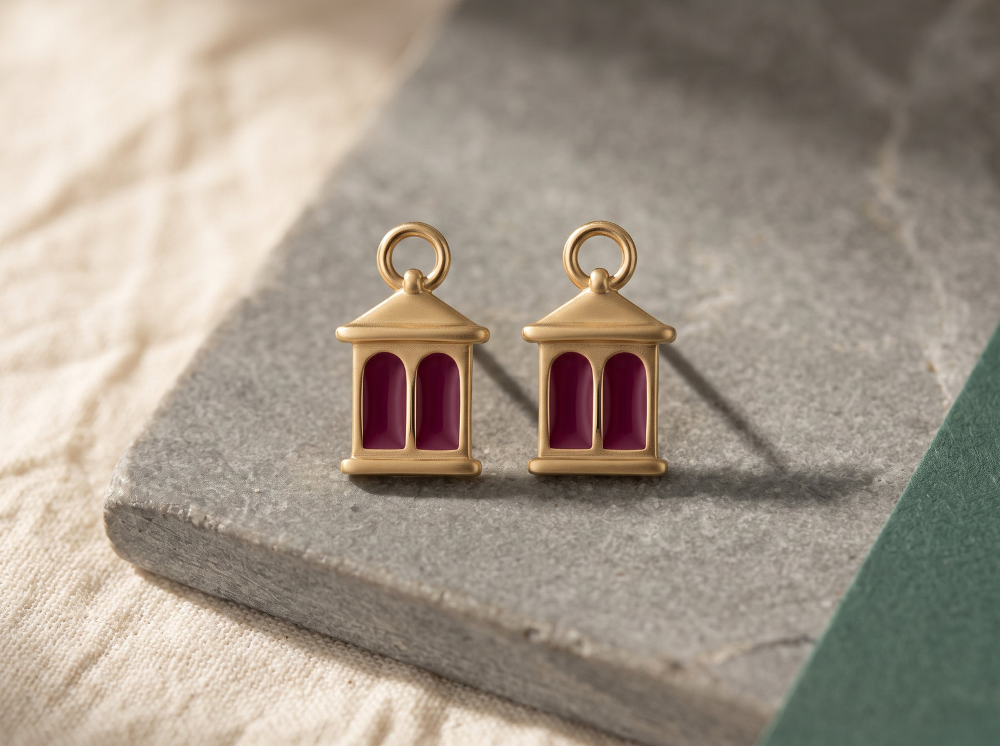
Etsy metni
Başlık 79/140
14K Gold Lantern Stud Earrings, Berry Enamel Windows, Cozy Holiday Gift for Her
Etiketler (13)
14k gold earrings, lantern earrings, lantern studs, berry enamel, enamel earrings, vitreous enamel, gold stud earrings, holiday earrings, winter jewelry, christmas gift, gift for her, christmas lantern, cottage jewelry
Malzemeler
14k yellow gold, vitreous enamel, 14k gold earring posts, 14k gold friction backs
Açıklama
A small gold lantern with two arched windows of deep berry glass enamel, framed in polished 14k gold. It brings a warm note to a Christmas gift and stays a cosy everyday stud through winter and beyond. THE PIECE Each stud is 5.4 mm wide and 9.9 mm tall: a closed round ring 2.6 mm across on top, a sloped roof with rounded eaves, a square body 4.6 mm wide with two arched windows 1.25 mm wide and 3.1 mm tall, and a flat foot 5.0 mm wide. The plate is 0.85 mm thick, 1.4 mm behind the windows. GOLD WEIGHT 1.65 g of 14k gold for the pair, counting both posts and friction backs. On the scale the finished pair weighs 1.67 g in total with the enamel. Each pair is weighed after finishing and checked against this design weight. ENAMEL Kiln-fired vitreous enamel (glass), opaque deep berry, a dark raspberry-purple. The enamel fills both windows level with the gold or just below it. Glass does not fade, but a hard knock can chip it: keep the earrings away from chlorine and harsh chemicals, and clean the enamel with warm soapy water and a soft brush. LENGTH AND FIT 9.9 mm tall. The post sits behind the roof, above the middle of the piece, so the lantern stays upright on the lobe. A straight 14k gold post, 0.76 mm thick and 11.1 mm long, with a 14k gold friction back. HOW IT IS MADE Made to order. Each lantern is cast in zinc-free 14k gold in one piece, with the window cells formed in the casting. The enamel is fired four times at 760 C. There is no solder: the hard gold post is laser welded on afterwards, on a pad away from the enamel. CARE Store the pair on its own so harder pieces do not knock the enamel. Wipe the gold with a soft cloth. No ultrasonic or steam cleaning. GIFTING Arrives in a gift box, ready to give. Made to order. The processing time is shown at checkout.
Atölye kartı
Fener stud 5.4 x 9.9 mm, duz plaka 0.85 mm (model 1.05), cevre pahi 0.25 x 0.25. Alttan uste: ayak 5.0 x 0.8 (alt koseler r0.4); govde 4.6 x 4.6; cati yamuk 5.4 -> 2.4 gen., 2.0 yuks., sacak koseleri r0.4; tepe kapali halka dis Ø2.6, ic Ø1.0 (tel 0.8), cati ustune 0.1 mm gomulu. Govde arkasi yerel 1.4 (+0.55 arka yuzde). 2 kemerli pencere hucresi: her biri 1.25 gen. x 3.1 yuks. (ust kemer r0.625), 0.6 derin, taban 0.8; yan cerceve 0.7, orta kayit 0.7, alt cerceve 0.7, ust cerceve 0.8. Civi pedi Ø2.0 x 0.35 arka yuzde (yerel 1.2), ayak altindan 7.0 mm yukarida (cati); ped-hucre plan 1.55 mm; ped ust kenari ile halka deligi arasi 0.1 mm.
Tek parca dokum 14K cinkosuz; iki pencere hucresi dokumde. Civi pedi catida (ciplak altin), kutle merkezinin ustunde -> fener dik durur. Kalinlasma yalniz ARKA yuzde (on yuz duz). Tum pisirimler 760 C (bogurtlen, bant alt ucu). Civi pisirim sonrasi lazer. Tas yok, lehim yok.
Tezgâh sırası
- CAD: fener plaka 1.05 (model), govde arkasi +0.55, pencere hucreleri modelde (kemer r0.625, koseler r0.2), cati pedi + soket; ped-hucre plan >=1.5 olcumu.
- 250 px kucuk resim okunurluk testi (fener silueti) CAD onayindan once.
- Recine baski -> vakum dokum cinkosuz 14K; yolluk ped arkasina.
- Tesviye, 10x gozenek, hucre temizligi; cevre pahi ve halka ici mineden once.
- Seri oncesi pilot: ayni alasim + ayni dokumhaneden renk basina kupon, P1-P4 cevrimiyle pisirilir; igne deligi, kabarcik, catlak ve renk tonu gecmeden uretim yok.
- Yuzey zenginlestirme (depletion gilding) x3-4: ~593 C -> %10 H2SO4 pickle -> durulama (yalniz mineden ONCE; sonra asit yok).
- Islak dolum 1. sarj ince (derin bogurtlen, tek renk) -> kurut -> P1 760 C x 2:00 dk (kalibre pirometre, firin termokupl kontrolu).
- 2. sarj -> P2 760 C x 2:00 dk.
- 3. sarj (jant ustune hafif tasan) -> P3 760 C x 2:00 dk.
- Su altinda alundum tas/elmas pedle mineyi jant kotuna (0-0.05 mm alti) DUZ taslama; hucre kenarinda cip kontrolu.
- P4 parlatma pisirimi 760 C x 1:00 dk (toplam 4 pisirim, hepsi <=780 C).
- Hafif sitrik pickle + durulama (H2SO4/HNO3 banyo YOK).
- Mineyi Plasti-tac + parlak gumus siperle maskele; Stuller 1800 sert civiyi ped soketine (Ø0.8 x 0.5) oturt, dusuk guc lazer, hava nozuluyla sogut (Staley yontemi).
- Civi testi: penseyle cekerken yarim-tam tur burgu (Revere) -> is sertlestirme + kaynak testi; civi dikligi 90 +-3 derece.
- El cilasi yalniz ciplak altina; ultrasonik yok.
- QC: cift 1.65 g +-0.05; bogurtlen ton kupon referansiyla; mine 10x; orta kayit 0.7 surekliligi.
Malzeme listesi
- Alasim: 14K sari, CINKOSUZ 'enamelable' dokum alasimi (Otto Frei 846-180 no-zinc master alloy ile alasimlanmis; dokumhaneden yazili Zn=0 sertifikasi + DSC solidus), vakum/inert gaz dokum; dokum metali ~1.17 g/cift (govde x 1.15)
- Mine: <=780 C'de olgunlasan kursunsuz yumusak opak mine (or. Soyer soft serisi), renk basina kupon; renk: derin bogurtlen (koyu ahududu-mor; Cd/Se icerigi teyit); pisirilmis ~22 mg/cift
- 2 x Stuller 1800 14KY sert cekme friction civi 0.76 x 11.1 mm (0.0658 g/adet = 0.132 g)
- 2 x 14K sari friction arkalik 5-6.3 mm (0.25 g/adet VARSAYIM = 0.50 g; KANIT 0.2-0.4 g kaynaksiz - tedarikci numunesi tartilmadan CAD onayi yok)
- GRAM DOKUMU (cift, x2 x 0.01307 g/mm3): fener plaka (ayak 3.93 + govde 21.16 + cati 7.73 + halka 4.46 = 37.28 mm2) x 0.85: +31.69 mm3 -> +0.8283 g; govde bolgesi arka kalinlasma 4.6x4.6 x 0.55 (yerel 1.4): +11.64 mm3 -> +0.3042 g; 2 kemerli pencere hucresi 2 x 3.707 mm2 x 0.6: -4.45 mm3 -> -0.1163 g; cevre pahi 0.25x0.25 x cevre ~30.6: -0.95 mm3 -> -0.0248 g; civi pedi O2.0 x 0.35 (arka, cati): +1.10 mm3 -> +0.0287 g; civi soketi: -0.25 mm3 -> -0.0066 g; civi 2 x Stuller 1800 0.76x11.1 = 0.1316 g; arkalik 2 x 0.25 g (varsayim) = 0.50 g => govde 1.0136 g, ALTIN 1.645 g (bant 1.40-1.75, tavana pay 0.105 g)
Arıza modları
| Arıza | Tasarım nasıl önlüyor |
|---|---|
| Bogurtlenin yanmasi/kararmasi | Tum pisirimler 760 C, kisa, tek renk. |
| Orta kayit (0.7) ya da cerceve sarkmasi | Kayit/cerceve 0.7, taban 0.8 + govde arkasi 1.4 rijit cekirdek; 760 C. |
| Lazer isisiyla mine catlamasi | Ped catida, hucreden plan 1.55 mm, maske, dusuk guc. |
| Stud'in one devrilmesi | Civi catida, kutle merkezinin (govde) ustunde. |
| Kemer tepesinde mine catlagi | Kemer r0.625, hucre koseleri r0.2; keskin altin uc yok. |
Tolerans
| Kural | Değer | |
|---|---|---|
| L1 karat + cinkosuz | 14K, Zn=0 | ✓ |
| L2 hucre 0.6 derin, >=0.7 gen., derinlik <=2 x gen. | 0.6; 1.25 gen.; 0.6 <= 2.5 | ✓ |
| L2 hucre arasi + cevre duvar >=0.70, taban >=0.8 | kayit 0.70, cerceve 0.70/0.80, taban 0.8 | ✓ |
| L2 renk | 1: bogurtlen, 760 C | ✓ |
| L2/KANIT pisirim <=4, <=780 C | 4 x 760 C | ✓ |
| L3/KANIT ped-hucre plan >=1.5, ped >=0.8 | 1.55 mm; yerel 1.2 | ✓ |
| L5 yapisal >=0.8 | plaka 0.85; tepe halka teli 0.8 | ✓ |
| L5 aciklik >=0.5 | halka ici Ø1.0 | ✓ |
| L5 uc r>=0.4 | ayak ve sacak koseleri r0.4 | ✓ |
| L7 cift altin 1.40-1.75; tavana pay >=0.05 | 1.645 g; pay 0.105 | ✓ |
| L9 stud <=12 | 9.9 mm | ✓ |
| L11 degistirme havuzu | fener (havuzda) | ✓ |
| L12 tek kahraman | iki bogurtlen pencereli fener | ✓ |
Görsel promptları (16)
- 01Hero / arama küçük resmi: tek ürün, marka natürmortu, 4:3.Referanssız
Quiet luxury editorial still-life product photography. Warm ivory linen ground, honed grey stone slab, a sliver of deep jade-green matte card. Soft directional window light from upper left, long soft shadow, shallow depth of field. Solid yellow gold with warm antique tone. Restrained heirloom mood. No text, no logo, no glitter, no Christmas decoration. The piece: Pair of 14K yellow gold stud earrings, each a flat lantern 5.4 mm wide and 9.9 mm tall. A closed round gold ring 2.6 mm across sits on top of a sloped gold roof 2.0 mm tall with rounded eaves. Below it, a square body 4.6 mm wide holds two tall arched windows side by side, each 1.25 mm wide and 3.1 mm tall, filled with smooth opaque deep berry (dark raspberry-purple) enamel level with the gold. Polished gold bars 0.7 mm wide frame and divide the windows. A flat gold foot 5.0 mm wide forms the base. Straight post behind the roof. The piece carries no gemstones at all and no empty settings. The only colour on the piece is opaque deep berry enamel (a dark wine red, not bright red) filling the two arched window cells of each lantern; every other surface is yellow gold. The pair lies side by side on the honed grey stone slab, both fronts facing the camera, about 15 mm apart, posts hidden underneath; exactly two earrings. Seen from about 30 degrees above with a 100 mm macro lens, the piece in razor-sharp focus, filling about 45 percent of the frame width, centred with generous empty margin on all four sides. No people and no hands.
Alt metin 14K gold lantern stud earrings with two arched windows of deep berry enamel and a ring on top
- 02Takılı hâli: ölçek ve duruş. Hero'dan sonra dönüşümü en çok etkileyen kare.Referans: hero kırpımı
Quiet luxury editorial photography in warm ivory, stone grey and deep jade-green tones, soft directional window light from the upper left, true colour, fine film grain, no heavy retouching. No text, no logo, no watermark, no glitter. The attached reference image is a crop of this exact piece: keep its shape, proportions, gold colour and enamel colours exactly as in the reference. The piece: Pair of 14K yellow gold stud earrings, each a flat lantern 5.4 mm wide and 9.9 mm tall. A closed round gold ring 2.6 mm across sits on top of a sloped gold roof 2.0 mm tall with rounded eaves. Below it, a square body 4.6 mm wide holds two tall arched windows side by side, each 1.25 mm wide and 3.1 mm tall, filled with smooth opaque deep berry (dark raspberry-purple) enamel level with the gold. Polished gold bars 0.7 mm wide frame and divide the windows. A flat gold foot 5.0 mm wide forms the base. Straight post behind the roof. The piece carries no gemstones at all and no empty settings. The only colour on the piece is opaque deep berry enamel (a dark wine red, not bright red) filling the two arched window cells of each lantern; every other surface is yellow gold. One earring worn on a woman's left earlobe, side profile, hair tucked behind the ear, cropped tight from cheekbone to jaw; only one ear is in the frame and exactly one earring is visible; no other earrings and no piercings elsewhere; true to scale, the main element measures about 9.9 mm across.
Alt metin 14K gold lantern stud earrings with two arched windows of deep berry enamel and a ring on top, worn
- 03Makro işçilik: fiyatı meşrulaştıran detay (mine yüzeyi, flush taş, kenar bitimi).Referans: hero kırpımı
Quiet luxury editorial photography in warm ivory, stone grey and deep jade-green tones, soft directional window light from the upper left, true colour, fine film grain, no heavy retouching. No text, no logo, no watermark, no glitter. The attached reference image is a crop of this exact piece: keep its shape, proportions, gold colour and enamel colours exactly as in the reference. The piece: Pair of 14K yellow gold stud earrings, each a flat lantern 5.4 mm wide and 9.9 mm tall. A closed round gold ring 2.6 mm across sits on top of a sloped gold roof 2.0 mm tall with rounded eaves. Below it, a square body 4.6 mm wide holds two tall arched windows side by side, each 1.25 mm wide and 3.1 mm tall, filled with smooth opaque deep berry (dark raspberry-purple) enamel level with the gold. Polished gold bars 0.7 mm wide frame and divide the windows. A flat gold foot 5.0 mm wide forms the base. Straight post behind the roof. The piece carries no gemstones at all and no empty settings. The only colour on the piece is opaque deep berry enamel (a dark wine red, not bright red) filling the two arched window cells of each lantern; every other surface is yellow gold. Extreme close-up macro, 100 mm macro lens: The two arched windows of opaque deep berry enamel, level with the gold and divided by the polished gold center bar, under the sloped roof. The rest of the piece falls away into soft focus on warm-ivory linen.
Alt metin Close-up of the two deep berry enamel windows of the gold lantern
- 04Elde ölçek: mm'yi parmak ucuna çevirir, 'beklediğimden küçük' iadesini önler.Referans: hero kırpımı
Quiet luxury editorial photography in warm ivory, stone grey and deep jade-green tones, soft directional window light from the upper left, true colour, fine film grain, no heavy retouching. No text, no logo, no watermark, no glitter. The attached reference image is a crop of this exact piece: keep its shape, proportions, gold colour and enamel colours exactly as in the reference. The piece: Pair of 14K yellow gold stud earrings, each a flat lantern 5.4 mm wide and 9.9 mm tall. A closed round gold ring 2.6 mm across sits on top of a sloped gold roof 2.0 mm tall with rounded eaves. Below it, a square body 4.6 mm wide holds two tall arched windows side by side, each 1.25 mm wide and 3.1 mm tall, filled with smooth opaque deep berry (dark raspberry-purple) enamel level with the gold. Polished gold bars 0.7 mm wide frame and divide the windows. A flat gold foot 5.0 mm wide forms the base. Straight post behind the roof. The piece carries no gemstones at all and no empty settings. The only colour on the piece is opaque deep berry enamel (a dark wine red, not bright red) filling the two arched window cells of each lantern; every other surface is yellow gold. Close-up for scale against a plain warm-ivory background thrown softly out of focus: one earring held between the thumb and index finger of a woman's hand by its edges, front facing the camera; the second earring is not in the frame; true to scale, the main element measures about 9.9 mm across, a fingertip is about 16 mm wide; it is the only jewellery in the image; anatomically correct hands with five fingers, short natural unpolished nails.
Alt metin 14K gold lantern stud earrings with two arched windows of deep berry enamel and a ring on top, held between fingers for scale
- 05Arka ve bulgular: dolu gövde, kilit / çivi / iğne; sağlamlık sorusunu cevaplar.Referans: hero kırpımı
Quiet luxury editorial photography in warm ivory, stone grey and deep jade-green tones, soft directional window light from the upper left, true colour, fine film grain, no heavy retouching. No text, no logo, no watermark, no glitter. The attached reference image is a crop of this exact piece: keep its shape, proportions, gold colour and enamel colours exactly as in the reference. The piece: Pair of 14K yellow gold stud earrings, each a flat lantern 5.4 mm wide and 9.9 mm tall. A closed round gold ring 2.6 mm across sits on top of a sloped gold roof 2.0 mm tall with rounded eaves. Below it, a square body 4.6 mm wide holds two tall arched windows side by side, each 1.25 mm wide and 3.1 mm tall, filled with smooth opaque deep berry (dark raspberry-purple) enamel level with the gold. Polished gold bars 0.7 mm wide frame and divide the windows. A flat gold foot 5.0 mm wide forms the base. Straight post behind the roof. The piece carries no gemstones at all and no empty settings. The only colour on the piece is opaque deep berry enamel (a dark wine red, not bright red) filling the two arched window cells of each lantern; every other surface is yellow gold. The back of the piece, top-down on honed grey stone: A flat solid gold back, thicker behind the windows, with a small raised round pad behind the roof holding the straight post.
Alt metin Back of the stud earrings showing the flat solid gold back of the lantern and the post behind the roof
- 06Tam boy / çift / mekanizma: uzunluk, ayar ve ne geldiğini tek karede gösterir.Referans: hero kırpımı
Quiet luxury editorial photography in warm ivory, stone grey and deep jade-green tones, soft directional window light from the upper left, true colour, fine film grain, no heavy retouching. No text, no logo, no watermark, no glitter. The attached reference image is a crop of this exact piece: keep its shape, proportions, gold colour and enamel colours exactly as in the reference. The piece: Pair of 14K yellow gold stud earrings, each a flat lantern 5.4 mm wide and 9.9 mm tall. A closed round gold ring 2.6 mm across sits on top of a sloped gold roof 2.0 mm tall with rounded eaves. Below it, a square body 4.6 mm wide holds two tall arched windows side by side, each 1.25 mm wide and 3.1 mm tall, filled with smooth opaque deep berry (dark raspberry-purple) enamel level with the gold. Polished gold bars 0.7 mm wide frame and divide the windows. A flat gold foot 5.0 mm wide forms the base. Straight post behind the roof. The piece carries no gemstones at all and no empty settings. The only colour on the piece is opaque deep berry enamel (a dark wine red, not bright red) filling the two arched window cells of each lantern; every other surface is yellow gold. The pair laid flat side by side on warm-ivory linen, top-down, both fronts to the camera, mirror-symmetric, about 15 mm apart, exactly two earrings.
Alt metin 14K gold lantern stud earrings with two arched windows of deep berry enamel and a ring on top, pair
- 07Yan profil: kalınlık ve kütle, düz baskı değil gerçek altın olduğunu gösterir.Referans: hero kırpımı
Quiet luxury editorial photography in warm ivory, stone grey and deep jade-green tones, soft directional window light from the upper left, true colour, fine film grain, no heavy retouching. No text, no logo, no watermark, no glitter. The attached reference image is a crop of this exact piece: keep its shape, proportions, gold colour and enamel colours exactly as in the reference. The piece: Pair of 14K yellow gold stud earrings, each a flat lantern 5.4 mm wide and 9.9 mm tall. A closed round gold ring 2.6 mm across sits on top of a sloped gold roof 2.0 mm tall with rounded eaves. Below it, a square body 4.6 mm wide holds two tall arched windows side by side, each 1.25 mm wide and 3.1 mm tall, filled with smooth opaque deep berry (dark raspberry-purple) enamel level with the gold. Polished gold bars 0.7 mm wide frame and divide the windows. A flat gold foot 5.0 mm wide forms the base. Straight post behind the roof. The piece carries no gemstones at all and no empty settings. The only colour on the piece is opaque deep berry enamel (a dark wine red, not bright red) filling the two arched window cells of each lantern; every other surface is yellow gold. Side profile at eye level on honed grey stone, the camera level with the piece: In side profile the plate is 0.85 mm thick and 1.4 mm through the window section, 9.9 mm tall.
Alt metin Side profile of the stud earrings showing its thickness
- 08Kış yaşam stili: sezonu Noel dekoru olmadan kurar.Referans: hero kırpımı
Quiet luxury editorial photography in warm ivory, stone grey and deep jade-green tones, soft directional window light from the upper left, true colour, fine film grain, no heavy retouching. No text, no logo, no watermark, no glitter. The attached reference image is a crop of this exact piece: keep its shape, proportions, gold colour and enamel colours exactly as in the reference. The piece: Pair of 14K yellow gold stud earrings, each a flat lantern 5.4 mm wide and 9.9 mm tall. A closed round gold ring 2.6 mm across sits on top of a sloped gold roof 2.0 mm tall with rounded eaves. Below it, a square body 4.6 mm wide holds two tall arched windows side by side, each 1.25 mm wide and 3.1 mm tall, filled with smooth opaque deep berry (dark raspberry-purple) enamel level with the gold. Polished gold bars 0.7 mm wide frame and divide the windows. A flat gold foot 5.0 mm wide forms the base. Straight post behind the roof. The piece carries no gemstones at all and no empty settings. The only colour on the piece is opaque deep berry enamel (a dark wine red, not bright red) filling the two arched window cells of each lantern; every other surface is yellow gold. Winter afternoon light: three-quarter view of a woman with dark hair pulled back into a low knot, ivory turtleneck sweater, cropped below the eyes; exactly one earring visible on the near ear; it is the only jewellery in the image.
Alt metin 14K gold lantern stud earrings with two arched windows of deep berry enamel and a ring on top, styled with winter knitwear
- 09Hediye kutusu: Noel alıcısının ilk sorusu, hediyeye hazır mı?Referans: hero kırpımı
Quiet luxury editorial photography in warm ivory, stone grey and deep jade-green tones, soft directional window light from the upper left, true colour, fine film grain, no heavy retouching. No text, no logo, no watermark, no glitter. The attached reference image is a crop of this exact piece: keep its shape, proportions, gold colour and enamel colours exactly as in the reference. The piece: Pair of 14K yellow gold stud earrings, each a flat lantern 5.4 mm wide and 9.9 mm tall. A closed round gold ring 2.6 mm across sits on top of a sloped gold roof 2.0 mm tall with rounded eaves. Below it, a square body 4.6 mm wide holds two tall arched windows side by side, each 1.25 mm wide and 3.1 mm tall, filled with smooth opaque deep berry (dark raspberry-purple) enamel level with the gold. Polished gold bars 0.7 mm wide frame and divide the windows. A flat gold foot 5.0 mm wide forms the base. Straight post behind the roof. The piece carries no gemstones at all and no empty settings. The only colour on the piece is opaque deep berry enamel (a dark wine red, not bright red) filling the two arched window cells of each lantern; every other surface is yellow gold. Top-down: the pair side by side, fronts up inside a small open square gift box in plain warm-ivory card with a soft ivory insert, the lid set beside it, a length of narrow deep jade-green ribbon untied beside the box, on honed grey stone. No branding, no printed pattern, no tissue paper, no Christmas decoration, exactly one box.
Alt metin 14K gold lantern stud earrings with two arched windows of deep berry enamel and a ring on top in a gift box
- 10Gerçek renk: nötr gün ışığında altın ve mine rengi; renk kaynaklı iadeyi azaltır.Referans: hero kırpımı
Quiet luxury editorial photography in warm ivory, stone grey and deep jade-green tones, soft directional window light from the upper left, true colour, fine film grain, no heavy retouching. No text, no logo, no watermark, no glitter. The attached reference image is a crop of this exact piece: keep its shape, proportions, gold colour and enamel colours exactly as in the reference. The piece: Pair of 14K yellow gold stud earrings, each a flat lantern 5.4 mm wide and 9.9 mm tall. A closed round gold ring 2.6 mm across sits on top of a sloped gold roof 2.0 mm tall with rounded eaves. Below it, a square body 4.6 mm wide holds two tall arched windows side by side, each 1.25 mm wide and 3.1 mm tall, filled with smooth opaque deep berry (dark raspberry-purple) enamel level with the gold. Polished gold bars 0.7 mm wide frame and divide the windows. A flat gold foot 5.0 mm wide forms the base. Straight post behind the roof. The piece carries no gemstones at all and no empty settings. The only colour on the piece is opaque deep berry enamel (a dark wine red, not bright red) filling the two arched window cells of each lantern; every other surface is yellow gold. Colour-accurate reference shot: the piece alone, top-down on plain matte white-ivory paper under even neutral north daylight, no shadow drama, no props, the piece centred and filling half the frame.
Alt metin 14K gold lantern stud earrings with two arched windows of deep berry enamel and a ring on top in neutral daylight, true colour
- 11Ölçü grafiği tabanı: sağ üçte bir boş; mm etiketleri sonra eklenir.Referans: hero kırpımı
Quiet luxury editorial photography in warm ivory, stone grey and deep jade-green tones, soft directional window light from the upper left, true colour, fine film grain, no heavy retouching. No text, no logo, no watermark, no glitter. The attached reference image is a crop of this exact piece: keep its shape, proportions, gold colour and enamel colours exactly as in the reference. The piece: Pair of 14K yellow gold stud earrings, each a flat lantern 5.4 mm wide and 9.9 mm tall. A closed round gold ring 2.6 mm across sits on top of a sloped gold roof 2.0 mm tall with rounded eaves. Below it, a square body 4.6 mm wide holds two tall arched windows side by side, each 1.25 mm wide and 3.1 mm tall, filled with smooth opaque deep berry (dark raspberry-purple) enamel level with the gold. Polished gold bars 0.7 mm wide frame and divide the windows. A flat gold foot 5.0 mm wide forms the base. Straight post behind the roof. The piece carries no gemstones at all and no empty settings. The only colour on the piece is opaque deep berry enamel (a dark wine red, not bright red) filling the two arched window cells of each lantern; every other surface is yellow gold. The piece alone, top-down on plain warm-ivory paper, placed in the left two thirds of the frame; the right third is empty paper for dimension labels to be added later; even soft light, no props.
Alt metin 14K gold lantern stud earrings with two arched windows of deep berry enamel and a ring on top with space for dimensions
- 12El işçiliği: siparişe üretim hikâyesi, tezgâhta parça.Referans: hero kırpımı
Quiet luxury editorial photography in warm ivory, stone grey and deep jade-green tones, soft directional window light from the upper left, true colour, fine film grain, no heavy retouching. No text, no logo, no watermark, no glitter. The attached reference image is a crop of this exact piece: keep its shape, proportions, gold colour and enamel colours exactly as in the reference. The piece: Pair of 14K yellow gold stud earrings, each a flat lantern 5.4 mm wide and 9.9 mm tall. A closed round gold ring 2.6 mm across sits on top of a sloped gold roof 2.0 mm tall with rounded eaves. Below it, a square body 4.6 mm wide holds two tall arched windows side by side, each 1.25 mm wide and 3.1 mm tall, filled with smooth opaque deep berry (dark raspberry-purple) enamel level with the gold. Polished gold bars 0.7 mm wide frame and divide the windows. A flat gold foot 5.0 mm wide forms the base. Straight post behind the roof. The piece carries no gemstones at all and no empty settings. The only colour on the piece is opaque deep berry enamel (a dark wine red, not bright red) filling the two arched window cells of each lantern; every other surface is yellow gold. The finished piece lying on a worn wooden jeweller's bench pin beside a small porcelain dish of deep berry enamel powder and a fine sable brush, warm lamp light, shallow depth of field, the piece in sharp focus; no hands.
Alt metin 14K gold lantern stud earrings with two arched windows of deep berry enamel and a ring on top on a jeweller's bench
- 13Motifin anlamı: sol üçte bir boş; sembol hikâyesi metni sonra eklenir.Referans: hero kırpımı
Quiet luxury editorial photography in warm ivory, stone grey and deep jade-green tones, soft directional window light from the upper left, true colour, fine film grain, no heavy retouching. No text, no logo, no watermark, no glitter. The attached reference image is a crop of this exact piece: keep its shape, proportions, gold colour and enamel colours exactly as in the reference. The piece: Pair of 14K yellow gold stud earrings, each a flat lantern 5.4 mm wide and 9.9 mm tall. A closed round gold ring 2.6 mm across sits on top of a sloped gold roof 2.0 mm tall with rounded eaves. Below it, a square body 4.6 mm wide holds two tall arched windows side by side, each 1.25 mm wide and 3.1 mm tall, filled with smooth opaque deep berry (dark raspberry-purple) enamel level with the gold. Polished gold bars 0.7 mm wide frame and divide the windows. A flat gold foot 5.0 mm wide forms the base. Straight post behind the roof. The piece carries no gemstones at all and no empty settings. The only colour on the piece is opaque deep berry enamel (a dark wine red, not bright red) filling the two arched window cells of each lantern; every other surface is yellow gold. The piece alone, top-down on a deep jade-green matte card, placed in the right two thirds of the frame; the left third is empty card for a caption to be added later; soft directional light.
Alt metin 14K gold lantern stud earrings with two arched windows of deep berry enamel and a ring on top on a deep green card
- 14Yıl boyu takılır: 'yalnız Noel' itirazını kırar.Referans: hero kırpımı
Quiet luxury editorial photography in warm ivory, stone grey and deep jade-green tones, soft directional window light from the upper left, true colour, fine film grain, no heavy retouching. No text, no logo, no watermark, no glitter. The attached reference image is a crop of this exact piece: keep its shape, proportions, gold colour and enamel colours exactly as in the reference. The piece: Pair of 14K yellow gold stud earrings, each a flat lantern 5.4 mm wide and 9.9 mm tall. A closed round gold ring 2.6 mm across sits on top of a sloped gold roof 2.0 mm tall with rounded eaves. Below it, a square body 4.6 mm wide holds two tall arched windows side by side, each 1.25 mm wide and 3.1 mm tall, filled with smooth opaque deep berry (dark raspberry-purple) enamel level with the gold. Polished gold bars 0.7 mm wide frame and divide the windows. A flat gold foot 5.0 mm wide forms the base. Straight post behind the roof. The piece carries no gemstones at all and no empty settings. The only colour on the piece is opaque deep berry enamel (a dark wine red, not bright red) filling the two arched window cells of each lantern; every other surface is yellow gold. Everyday wear, no season: side profile of a woman with short dark hair, plain white t-shirt collar, soft daylight, cropped from cheekbone to jaw; exactly one earring visible on the near ear.
Alt metin 14K gold lantern stud earrings with two arched windows of deep berry enamel and a ring on top, everyday wear
- 15Hediye anı: duygu; Noel satın alma niyetine bağlar.Referans: hero kırpımı
Quiet luxury editorial photography in warm ivory, stone grey and deep jade-green tones, soft directional window light from the upper left, true colour, fine film grain, no heavy retouching. No text, no logo, no watermark, no glitter. The attached reference image is a crop of this exact piece: keep its shape, proportions, gold colour and enamel colours exactly as in the reference. The piece: Pair of 14K yellow gold stud earrings, each a flat lantern 5.4 mm wide and 9.9 mm tall. A closed round gold ring 2.6 mm across sits on top of a sloped gold roof 2.0 mm tall with rounded eaves. Below it, a square body 4.6 mm wide holds two tall arched windows side by side, each 1.25 mm wide and 3.1 mm tall, filled with smooth opaque deep berry (dark raspberry-purple) enamel level with the gold. Polished gold bars 0.7 mm wide frame and divide the windows. A flat gold foot 5.0 mm wide forms the base. Straight post behind the roof. The piece carries no gemstones at all and no empty settings. The only colour on the piece is opaque deep berry enamel (a dark wine red, not bright red) filling the two arched window cells of each lantern; every other surface is yellow gold. A gift being given: two pairs of hands across a pale oak table, one pair holding out the small open warm-ivory gift box with the piece visible inside, the other reaching for it, soft warm window light, sleeves of ivory and grey knitwear; exactly one box and one piece of jewellery; anatomically correct hands with five fingers, short natural unpolished nails.
Alt metin 14K gold lantern stud earrings with two arched windows of deep berry enamel and a ring on top given as a gift
- 16Mağaza ızgarası / Pinterest: koyu jade zeminde yüksek kontrast kare.Referans: hero kırpımı
Quiet luxury editorial photography in warm ivory, stone grey and deep jade-green tones, soft directional window light from the upper left, true colour, fine film grain, no heavy retouching. No text, no logo, no watermark, no glitter. The attached reference image is a crop of this exact piece: keep its shape, proportions, gold colour and enamel colours exactly as in the reference. The piece: Pair of 14K yellow gold stud earrings, each a flat lantern 5.4 mm wide and 9.9 mm tall. A closed round gold ring 2.6 mm across sits on top of a sloped gold roof 2.0 mm tall with rounded eaves. Below it, a square body 4.6 mm wide holds two tall arched windows side by side, each 1.25 mm wide and 3.1 mm tall, filled with smooth opaque deep berry (dark raspberry-purple) enamel level with the gold. Polished gold bars 0.7 mm wide frame and divide the windows. A flat gold foot 5.0 mm wide forms the base. Straight post behind the roof. The piece carries no gemstones at all and no empty settings. The only colour on the piece is opaque deep berry enamel (a dark wine red, not bright red) filling the two arched window cells of each lantern; every other surface is yellow gold. Top-down flat lay of the piece centred on a deep jade-green matte card with a narrow border of warm-ivory linen at the top edge, crisp soft light, the piece filling about 40 percent of the frame so a square crop keeps all of it.
Alt metin 14K gold lantern stud earrings with two arched windows of deep berry enamel and a ring on top, flat lay on deep green
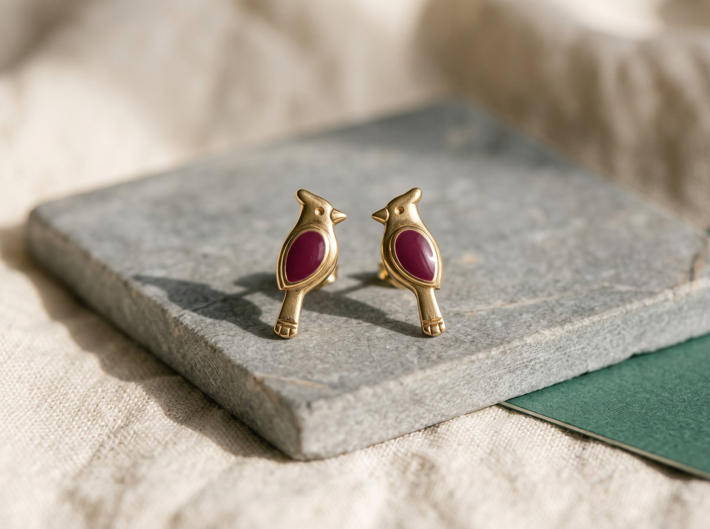
Model kuşa tasarımda olmayan iki ayak ekledi (her küpenin altında pençeler). Tasarımda gövde doğrudan kuyruğa iner, ayak yok.
Düzeltilmiş prompt (01 hero, referanssız)
Quiet luxury editorial still-life product photography. Warm ivory linen ground, honed grey stone slab, a sliver of deep jade-green matte card. Soft directional window light from upper left, long soft shadow, shallow depth of field. Solid yellow gold with warm antique tone. Restrained heirloom mood. No text, no logo, no glitter, no Christmas decoration. The piece: Pair of 14K yellow gold stud earrings shaped as a cardinal bird in side profile with its body pointing upward, 5.8 mm wide and 11.5 mm tall. The head, a peaked crest with a rounded tip, a short cone beak with a rounded tip and the tail are polished gold; the eye is a small round polished recess 0.9 mm across. The breast and body hold one oval field of smooth opaque deep berry (dark raspberry-purple) enamel, 3.2 mm wide and 3.7 mm tall, level with a gold border at least 0.7 mm wide. The tail has three bright crosswise grooves. Straight post behind the head. The bird has no legs and no feet: below the enamel body the outline runs straight into the tail, the tail tip is the lowest point of the earring and nothing else touches the slab. The piece carries no gemstones at all and no empty settings. The only colour on the piece is opaque deep berry enamel (a dark wine red, not bright red) filling the single oval cell on the breast and body; every other surface is yellow gold. The pair lies side by side on the honed grey stone slab, both fronts facing the camera, about 15 mm apart, posts hidden underneath; exactly two earrings. Seen from about 30 degrees above with a 100 mm macro lens, the piece in razor-sharp focus, filling about 45 percent of the frame width, centred with generous empty margin on all four sides. No people and no hands.
Etsy metni
Başlık 81/140
14K Gold Cardinal Bird Stud Earrings, Berry Enamel Breast, Memorial Keepsake Gift
Etiketler (13)
14k gold earrings, cardinal earrings, cardinal bird gift, bird earrings, memorial gift, sympathy gift, berry enamel, enamel earrings, gold stud earrings, bird lover gift, christmas gift, gift for her, remembrance gift
Malzemeler
14k yellow gold, vitreous enamel, 14k gold earring posts, 14k gold friction backs
Açıklama
A cardinal in 14k gold, upright in side profile, with its breast in deep berry glass enamel. Cardinals are kept as a sign of remembrance, which makes this pair a gentle Christmas gift that carries on through the year. THE PIECE Each stud is 5.8 mm wide and 11.5 mm tall. Head, peaked crest, cone beak and tail are polished gold, with a round polished eye recess 0.9 mm across and three bright grooves across the tail. The oval enamel field on the breast is 3.2 mm wide and 3.7 mm tall, inside a gold border at least 0.7 mm wide. GOLD WEIGHT 1.59 g of 14k gold for the pair, counting both posts and friction backs. On the scale the finished pair weighs 1.62 g in total with the enamel. Each pair is weighed after finishing and checked against this design weight. ENAMEL Kiln-fired vitreous enamel (glass), opaque deep berry, a dark raspberry-purple that is deeper than a bright cardinal red. The enamel sits level with the gold or just below it. Glass does not fade, but a hard knock can chip it: keep the earrings away from chlorine and harsh chemicals, and clean the enamel with warm soapy water and a soft brush. LENGTH AND FIT 11.5 mm tall. The post sits behind the head, so the bird stays upright on the lobe. A straight 14k gold post, 0.76 mm thick and 11.1 mm long, with a 14k gold friction back. HOW IT IS MADE Made to order. Each cardinal is cast in zinc-free 14k gold in one piece, with the enamel cell formed in the casting. The enamel is fired four times at 760 C. There is no solder: the hard gold post is laser welded on afterwards, on a pad away from the enamel. CARE Store the pair on its own so harder pieces do not knock the enamel. Wipe the gold with a soft cloth. No ultrasonic or steam cleaning. GIFTING Arrives in a gift box, ready to give. Made to order. The processing time is shown at checkout.
Atölye kartı
5.8 x 11.45 mm. Plaka 0.9 (model 1.1); govde hucre bolgesi ARKA yuzde +0.5 (yerel 1.4), on yuz duz; hucre oval 3.2 x 3.7, 0.6 derin, taban 0.8, jant min 0.73. Goz kor cukur Ø0.9 x 0.3. Kuyruk 3 oluk 0.5 x 0.25. Tepelik, gaga ve kuyruk uclari r0.4. Civi pedi Ø2.2 (yerel 1.2) basin arkasinda; ped-hucre plan 1.62 mm.
Tek parca dokum 14K cinkosuz; hucre dokumde. Kus dik durusta: bas ustte, civi basin arkasinda, kutle merkezinin ustunde. Bas/tepelik/gaga ciplak altin (civi pedi alani). Kalinlasma yalniz arka yuzde. Bogurtlen tum pisirimlerde 760 C. Civi pisirim sonrasi lazer. Tas yok, lehim yok, dal/tunek yok.
Tezgâh sırası
- 250 px kucuk resim okunurluk testi (altin basli kardinal silueti) CAD onayindan ONCE.
- CAD: hucre modelde, kalinlasma arka yuzde, goz kor cukur, bas pedi + soket; uclar r0.4; model +0.2.
- Recine baski -> vakum dokum cinkosuz 14K; yolluk bas pedine.
- Tesviye, 10x gozenek, hucre temizligi; kuyruk oluklari ve goz cukuru mineden once.
- Seri oncesi pilot: ayni alasim + ayni dokumhaneden renk basina kupon, P1-P4 cevrimiyle pisirilir; igne deligi, kabarcik, catlak ve renk tonu gecmeden uretim yok.
- Yuzey zenginlestirme (depletion gilding) x3-4: ~593 C -> %10 H2SO4 pickle -> durulama (yalniz mineden ONCE; sonra asit yok).
- Islak dolum 1. sarj ince (derin bogurtlen) -> kurut -> P1 760 C x 2:00 dk (kalibre pirometre, firin termokupl kontrolu).
- 2. sarj -> P2 760 C x 2:00 dk.
- 3. sarj (jant ustune hafif tasan) -> P3 760 C x 2:00 dk.
- Su altinda alundum tas/elmas pedle mineyi jant kotuna (0-0.05 mm alti) DUZ taslama; hucre kenarinda cip kontrolu.
- P4 parlatma pisirimi 760 C x 1:00 dk (toplam 4 pisirim, hepsi <=780 C).
- Hafif sitrik pickle + durulama (H2SO4/HNO3 banyo YOK).
- Mineyi Plasti-tac + parlak gumus siperle maskele; Stuller 1800 sert civiyi ped soketine (Ø0.8 x 0.5) oturt, dusuk guc lazer, hava nozuluyla sogut (Staley yontemi).
- Civi testi: penseyle cekerken yarim-tam tur burgu (Revere) -> is sertlestirme + kaynak testi; civi dikligi 90 +-3 derece.
- El cilasi: tepelik, gaga, kuyruk; mine maskeli; ultrasonik yok.
- QC: cift 1.59 g +-0.05; bogurtlen ton; uclar r0.4; mine 10x.
Malzeme listesi
- Alasim: 14K sari, CINKOSUZ 'enamelable' dokum alasimi (Otto Frei 846-180 no-zinc master alloy ile alasimlanmis; dokumhaneden yazili Zn=0 sertifikasi + DSC solidus), vakum/inert gaz dokum; dokum metali ~1.10 g/cift (govde x 1.15)
- Mine: <=780 C'de olgunlasan kursunsuz yumusak opak mine (or. Soyer soft serisi), renk basina kupon; renk: derin bogurtlen (koyu ahududu-mor); pisirilmis ~28 mg/cift
- 2 x Stuller 1800 14KY sert cekme friction civi 0.76 x 11.1 mm (0.0658 g/adet = 0.132 g)
- 2 x 14K sari friction arkalik 5-6.3 mm (0.25 g/adet VARSAYIM = 0.50 g; KANIT 0.2-0.4 g kaynaksiz - tedarikci numunesi tartilmadan CAD onayi yok)
- GRAM DOKUMU (cift, x2 x 0.01307 g/mm3): kus silueti 36.25 mm2 x 0.9: +32.62 mm3 -> +0.8528 g; govde hucre bolgesi arka +0.5 (18.44 mm2): +9.22 mm3 -> +0.2410 g; govde hucresi 9.30 mm2 x 0.6: -5.58 mm3 -> -0.1459 g; kor goz O0.9 x 0.3: -0.19 mm3 -> -0.0050 g; kuyruk 3 oluk: -0.27 mm3 -> -0.0071 g; civi pedi O2.2 x 0.3: +1.14 mm3 -> +0.0298 g; civi soketi: -0.25 mm3 -> -0.0066 g; civi 2 x Stuller 1800 0.76x11.1 = 0.1316 g; arkalik 2 x 0.25 g (varsayim) = 0.50 g => govde 0.9592 g, ALTIN 1.591 g (bant 1.40-1.75, tavana pay 0.159 g)
Arıza modları
| Arıza | Tasarım nasıl önlüyor |
|---|---|
| Stud'in one devrilmesi | Civi basta, kutle merkezi civinin altinda. |
| Bogurtlen yanmasi | 760 C, kisa, tek renk. |
| Tepelik/gaga ucunun kirilmasi/takilmasi | Uclar r0.4 (0.8 gen.), kalinlik 0.9. |
| Civi tavlanmasi / lazer catlagi | Pisirim sonrasi sert civi, ped hucreden 1.62 mm, maske. |
Tolerans
| Kural | Değer | |
|---|---|---|
| L1 karat + cinkosuz | 14K, Zn=0 | ✓ |
| L2 hucre 0.6 derin, >=0.7 gen. | 0.6 / 3.2 mm | ✓ |
| L2 cevre duvar >=0.70, taban >=0.8 | min 0.73 / 0.8 | ✓ |
| L2 renk | 1: bogurtlen, 760 C | ✓ |
| L2/KANIT pisirim <=4, <=780 C | 4 x 760 C | ✓ |
| L3/KANIT ped-hucre plan >=1.5 | 1.62 mm | ✓ |
| L5 yapisal >=0.8, dekoratif >=0.6 | plaka 0.9; oluk sonrasi 0.65 | ✓ |
| L5 uc r>=0.4 | tepelik, gaga, kuyruk r0.4 | ✓ |
| L7 cift altin 1.40-1.75 | 1.591 g | ✓ |
| L9 stud <=12 | 11.45 mm | ✓ |
| L11 dal yok | dal/tunek yok | ✓ |
| L12 tek kahraman | bogurtlen govdeli kardinal | ✓ |
Görsel promptları (16)
- 01Hero / arama küçük resmi: tek ürün, marka natürmortu, 4:3.Referanssız
Quiet luxury editorial still-life product photography. Warm ivory linen ground, honed grey stone slab, a sliver of deep jade-green matte card. Soft directional window light from upper left, long soft shadow, shallow depth of field. Solid yellow gold with warm antique tone. Restrained heirloom mood. No text, no logo, no glitter, no Christmas decoration. The piece: Pair of 14K yellow gold stud earrings shaped as an upright cardinal bird in side profile, 5.8 mm wide and 11.5 mm tall. The head, a peaked crest with a rounded tip, a short cone beak with a rounded tip and the tail are polished gold; the eye is a small round polished recess 0.9 mm across. The breast and body hold one oval field of smooth opaque deep berry (dark raspberry-purple) enamel, 3.2 mm wide and 3.7 mm tall, level with a gold border at least 0.7 mm wide. The tail has three bright crosswise grooves. Straight post behind the head. The piece carries no gemstones at all and no empty settings. The only colour on the piece is opaque deep berry enamel (a dark wine red, not bright red) filling the single oval cell on the breast and body; every other surface is yellow gold. The pair lies side by side on the honed grey stone slab, both fronts facing the camera, about 15 mm apart, posts hidden underneath; exactly two earrings. Seen from about 30 degrees above with a 100 mm macro lens, the piece in razor-sharp focus, filling about 45 percent of the frame width, centred with generous empty margin on all four sides. No people and no hands.
Alt metin 14K gold cardinal bird stud earrings with a deep berry enamel breast and a polished gold crest
- 02Takılı hâli: ölçek ve duruş. Hero'dan sonra dönüşümü en çok etkileyen kare.Referans: hero kırpımı
Quiet luxury editorial photography in warm ivory, stone grey and deep jade-green tones, soft directional window light from the upper left, true colour, fine film grain, no heavy retouching. No text, no logo, no watermark, no glitter. The attached reference image is a crop of this exact piece: keep its shape, proportions, gold colour and enamel colours exactly as in the reference. The piece: Pair of 14K yellow gold stud earrings shaped as an upright cardinal bird in side profile, 5.8 mm wide and 11.5 mm tall. The head, a peaked crest with a rounded tip, a short cone beak with a rounded tip and the tail are polished gold; the eye is a small round polished recess 0.9 mm across. The breast and body hold one oval field of smooth opaque deep berry (dark raspberry-purple) enamel, 3.2 mm wide and 3.7 mm tall, level with a gold border at least 0.7 mm wide. The tail has three bright crosswise grooves. Straight post behind the head. The piece carries no gemstones at all and no empty settings. The only colour on the piece is opaque deep berry enamel (a dark wine red, not bright red) filling the single oval cell on the breast and body; every other surface is yellow gold. One earring worn on a woman's left earlobe, side profile, hair tucked behind the ear, cropped tight from cheekbone to jaw; only one ear is in the frame and exactly one earring is visible; no other earrings and no piercings elsewhere; true to scale, the main element measures about 11.5 mm across.
Alt metin 14K gold cardinal bird stud earrings with a deep berry enamel breast and a polished gold crest, worn
- 03Makro işçilik: fiyatı meşrulaştıran detay (mine yüzeyi, flush taş, kenar bitimi).Referans: hero kırpımı
Quiet luxury editorial photography in warm ivory, stone grey and deep jade-green tones, soft directional window light from the upper left, true colour, fine film grain, no heavy retouching. No text, no logo, no watermark, no glitter. The attached reference image is a crop of this exact piece: keep its shape, proportions, gold colour and enamel colours exactly as in the reference. The piece: Pair of 14K yellow gold stud earrings shaped as an upright cardinal bird in side profile, 5.8 mm wide and 11.5 mm tall. The head, a peaked crest with a rounded tip, a short cone beak with a rounded tip and the tail are polished gold; the eye is a small round polished recess 0.9 mm across. The breast and body hold one oval field of smooth opaque deep berry (dark raspberry-purple) enamel, 3.2 mm wide and 3.7 mm tall, level with a gold border at least 0.7 mm wide. The tail has three bright crosswise grooves. Straight post behind the head. The piece carries no gemstones at all and no empty settings. The only colour on the piece is opaque deep berry enamel (a dark wine red, not bright red) filling the single oval cell on the breast and body; every other surface is yellow gold. Extreme close-up macro, 100 mm macro lens: The oval field of opaque deep berry enamel on the cardinal's breast, framed in polished gold, below the peaked crest and the round eye recess. The rest of the piece falls away into soft focus on warm-ivory linen.
Alt metin Close-up of the deep berry enamel breast of the gold cardinal
- 04Elde ölçek: mm'yi parmak ucuna çevirir, 'beklediğimden küçük' iadesini önler.Referans: hero kırpımı
Quiet luxury editorial photography in warm ivory, stone grey and deep jade-green tones, soft directional window light from the upper left, true colour, fine film grain, no heavy retouching. No text, no logo, no watermark, no glitter. The attached reference image is a crop of this exact piece: keep its shape, proportions, gold colour and enamel colours exactly as in the reference. The piece: Pair of 14K yellow gold stud earrings shaped as an upright cardinal bird in side profile, 5.8 mm wide and 11.5 mm tall. The head, a peaked crest with a rounded tip, a short cone beak with a rounded tip and the tail are polished gold; the eye is a small round polished recess 0.9 mm across. The breast and body hold one oval field of smooth opaque deep berry (dark raspberry-purple) enamel, 3.2 mm wide and 3.7 mm tall, level with a gold border at least 0.7 mm wide. The tail has three bright crosswise grooves. Straight post behind the head. The piece carries no gemstones at all and no empty settings. The only colour on the piece is opaque deep berry enamel (a dark wine red, not bright red) filling the single oval cell on the breast and body; every other surface is yellow gold. Close-up for scale against a plain warm-ivory background thrown softly out of focus: one earring held between the thumb and index finger of a woman's hand by its edges, front facing the camera; the second earring is not in the frame; true to scale, the main element measures about 11.5 mm across, a fingertip is about 16 mm wide; it is the only jewellery in the image; anatomically correct hands with five fingers, short natural unpolished nails.
Alt metin 14K gold cardinal bird stud earrings with a deep berry enamel breast and a polished gold crest, held between fingers for scale
- 05Arka ve bulgular: dolu gövde, kilit / çivi / iğne; sağlamlık sorusunu cevaplar.Referans: hero kırpımı
Quiet luxury editorial photography in warm ivory, stone grey and deep jade-green tones, soft directional window light from the upper left, true colour, fine film grain, no heavy retouching. No text, no logo, no watermark, no glitter. The attached reference image is a crop of this exact piece: keep its shape, proportions, gold colour and enamel colours exactly as in the reference. The piece: Pair of 14K yellow gold stud earrings shaped as an upright cardinal bird in side profile, 5.8 mm wide and 11.5 mm tall. The head, a peaked crest with a rounded tip, a short cone beak with a rounded tip and the tail are polished gold; the eye is a small round polished recess 0.9 mm across. The breast and body hold one oval field of smooth opaque deep berry (dark raspberry-purple) enamel, 3.2 mm wide and 3.7 mm tall, level with a gold border at least 0.7 mm wide. The tail has three bright crosswise grooves. Straight post behind the head. The piece carries no gemstones at all and no empty settings. The only colour on the piece is opaque deep berry enamel (a dark wine red, not bright red) filling the single oval cell on the breast and body; every other surface is yellow gold. The back of the piece, top-down on honed grey stone: A flat solid gold back, thicker behind the breast, with a small raised round pad behind the head holding the straight post.
Alt metin Back of the stud earrings showing the flat solid gold back of the cardinal and the post behind the head
- 06Tam boy / çift / mekanizma: uzunluk, ayar ve ne geldiğini tek karede gösterir.Referans: hero kırpımı
Quiet luxury editorial photography in warm ivory, stone grey and deep jade-green tones, soft directional window light from the upper left, true colour, fine film grain, no heavy retouching. No text, no logo, no watermark, no glitter. The attached reference image is a crop of this exact piece: keep its shape, proportions, gold colour and enamel colours exactly as in the reference. The piece: Pair of 14K yellow gold stud earrings shaped as an upright cardinal bird in side profile, 5.8 mm wide and 11.5 mm tall. The head, a peaked crest with a rounded tip, a short cone beak with a rounded tip and the tail are polished gold; the eye is a small round polished recess 0.9 mm across. The breast and body hold one oval field of smooth opaque deep berry (dark raspberry-purple) enamel, 3.2 mm wide and 3.7 mm tall, level with a gold border at least 0.7 mm wide. The tail has three bright crosswise grooves. Straight post behind the head. The piece carries no gemstones at all and no empty settings. The only colour on the piece is opaque deep berry enamel (a dark wine red, not bright red) filling the single oval cell on the breast and body; every other surface is yellow gold. The pair laid flat side by side on warm-ivory linen, top-down, both fronts to the camera, mirror-symmetric, about 15 mm apart, exactly two earrings.
Alt metin 14K gold cardinal bird stud earrings with a deep berry enamel breast and a polished gold crest, pair
- 07Yan profil: kalınlık ve kütle, düz baskı değil gerçek altın olduğunu gösterir.Referans: hero kırpımı
Quiet luxury editorial photography in warm ivory, stone grey and deep jade-green tones, soft directional window light from the upper left, true colour, fine film grain, no heavy retouching. No text, no logo, no watermark, no glitter. The attached reference image is a crop of this exact piece: keep its shape, proportions, gold colour and enamel colours exactly as in the reference. The piece: Pair of 14K yellow gold stud earrings shaped as an upright cardinal bird in side profile, 5.8 mm wide and 11.5 mm tall. The head, a peaked crest with a rounded tip, a short cone beak with a rounded tip and the tail are polished gold; the eye is a small round polished recess 0.9 mm across. The breast and body hold one oval field of smooth opaque deep berry (dark raspberry-purple) enamel, 3.2 mm wide and 3.7 mm tall, level with a gold border at least 0.7 mm wide. The tail has three bright crosswise grooves. Straight post behind the head. The piece carries no gemstones at all and no empty settings. The only colour on the piece is opaque deep berry enamel (a dark wine red, not bright red) filling the single oval cell on the breast and body; every other surface is yellow gold. Side profile at eye level on honed grey stone, the camera level with the piece: In side profile the bird is 0.9 mm thick and 1.4 mm through the enamel body, 11.5 mm tall.
Alt metin Side profile of the stud earrings showing its thickness
- 08Kış yaşam stili: sezonu Noel dekoru olmadan kurar.Referans: hero kırpımı
Quiet luxury editorial photography in warm ivory, stone grey and deep jade-green tones, soft directional window light from the upper left, true colour, fine film grain, no heavy retouching. No text, no logo, no watermark, no glitter. The attached reference image is a crop of this exact piece: keep its shape, proportions, gold colour and enamel colours exactly as in the reference. The piece: Pair of 14K yellow gold stud earrings shaped as an upright cardinal bird in side profile, 5.8 mm wide and 11.5 mm tall. The head, a peaked crest with a rounded tip, a short cone beak with a rounded tip and the tail are polished gold; the eye is a small round polished recess 0.9 mm across. The breast and body hold one oval field of smooth opaque deep berry (dark raspberry-purple) enamel, 3.2 mm wide and 3.7 mm tall, level with a gold border at least 0.7 mm wide. The tail has three bright crosswise grooves. Straight post behind the head. The piece carries no gemstones at all and no empty settings. The only colour on the piece is opaque deep berry enamel (a dark wine red, not bright red) filling the single oval cell on the breast and body; every other surface is yellow gold. Winter afternoon light: three-quarter view of a woman with dark hair pulled back into a low knot, ivory turtleneck sweater, cropped below the eyes; exactly one earring visible on the near ear; it is the only jewellery in the image.
Alt metin 14K gold cardinal bird stud earrings with a deep berry enamel breast and a polished gold crest, styled with winter knitwear
- 09Hediye kutusu: Noel alıcısının ilk sorusu, hediyeye hazır mı?Referans: hero kırpımı
Quiet luxury editorial photography in warm ivory, stone grey and deep jade-green tones, soft directional window light from the upper left, true colour, fine film grain, no heavy retouching. No text, no logo, no watermark, no glitter. The attached reference image is a crop of this exact piece: keep its shape, proportions, gold colour and enamel colours exactly as in the reference. The piece: Pair of 14K yellow gold stud earrings shaped as an upright cardinal bird in side profile, 5.8 mm wide and 11.5 mm tall. The head, a peaked crest with a rounded tip, a short cone beak with a rounded tip and the tail are polished gold; the eye is a small round polished recess 0.9 mm across. The breast and body hold one oval field of smooth opaque deep berry (dark raspberry-purple) enamel, 3.2 mm wide and 3.7 mm tall, level with a gold border at least 0.7 mm wide. The tail has three bright crosswise grooves. Straight post behind the head. The piece carries no gemstones at all and no empty settings. The only colour on the piece is opaque deep berry enamel (a dark wine red, not bright red) filling the single oval cell on the breast and body; every other surface is yellow gold. Top-down: the pair side by side, fronts up inside a small open square gift box in plain warm-ivory card with a soft ivory insert, the lid set beside it, a length of narrow deep jade-green ribbon untied beside the box, on honed grey stone. No branding, no printed pattern, no tissue paper, no Christmas decoration, exactly one box.
Alt metin 14K gold cardinal bird stud earrings with a deep berry enamel breast and a polished gold crest in a gift box
- 10Gerçek renk: nötr gün ışığında altın ve mine rengi; renk kaynaklı iadeyi azaltır.Referans: hero kırpımı
Quiet luxury editorial photography in warm ivory, stone grey and deep jade-green tones, soft directional window light from the upper left, true colour, fine film grain, no heavy retouching. No text, no logo, no watermark, no glitter. The attached reference image is a crop of this exact piece: keep its shape, proportions, gold colour and enamel colours exactly as in the reference. The piece: Pair of 14K yellow gold stud earrings shaped as an upright cardinal bird in side profile, 5.8 mm wide and 11.5 mm tall. The head, a peaked crest with a rounded tip, a short cone beak with a rounded tip and the tail are polished gold; the eye is a small round polished recess 0.9 mm across. The breast and body hold one oval field of smooth opaque deep berry (dark raspberry-purple) enamel, 3.2 mm wide and 3.7 mm tall, level with a gold border at least 0.7 mm wide. The tail has three bright crosswise grooves. Straight post behind the head. The piece carries no gemstones at all and no empty settings. The only colour on the piece is opaque deep berry enamel (a dark wine red, not bright red) filling the single oval cell on the breast and body; every other surface is yellow gold. Colour-accurate reference shot: the piece alone, top-down on plain matte white-ivory paper under even neutral north daylight, no shadow drama, no props, the piece centred and filling half the frame.
Alt metin 14K gold cardinal bird stud earrings with a deep berry enamel breast and a polished gold crest in neutral daylight, true colour
- 11Ölçü grafiği tabanı: sağ üçte bir boş; mm etiketleri sonra eklenir.Referans: hero kırpımı
Quiet luxury editorial photography in warm ivory, stone grey and deep jade-green tones, soft directional window light from the upper left, true colour, fine film grain, no heavy retouching. No text, no logo, no watermark, no glitter. The attached reference image is a crop of this exact piece: keep its shape, proportions, gold colour and enamel colours exactly as in the reference. The piece: Pair of 14K yellow gold stud earrings shaped as an upright cardinal bird in side profile, 5.8 mm wide and 11.5 mm tall. The head, a peaked crest with a rounded tip, a short cone beak with a rounded tip and the tail are polished gold; the eye is a small round polished recess 0.9 mm across. The breast and body hold one oval field of smooth opaque deep berry (dark raspberry-purple) enamel, 3.2 mm wide and 3.7 mm tall, level with a gold border at least 0.7 mm wide. The tail has three bright crosswise grooves. Straight post behind the head. The piece carries no gemstones at all and no empty settings. The only colour on the piece is opaque deep berry enamel (a dark wine red, not bright red) filling the single oval cell on the breast and body; every other surface is yellow gold. The piece alone, top-down on plain warm-ivory paper, placed in the left two thirds of the frame; the right third is empty paper for dimension labels to be added later; even soft light, no props.
Alt metin 14K gold cardinal bird stud earrings with a deep berry enamel breast and a polished gold crest with space for dimensions
- 12El işçiliği: siparişe üretim hikâyesi, tezgâhta parça.Referans: hero kırpımı
Quiet luxury editorial photography in warm ivory, stone grey and deep jade-green tones, soft directional window light from the upper left, true colour, fine film grain, no heavy retouching. No text, no logo, no watermark, no glitter. The attached reference image is a crop of this exact piece: keep its shape, proportions, gold colour and enamel colours exactly as in the reference. The piece: Pair of 14K yellow gold stud earrings shaped as an upright cardinal bird in side profile, 5.8 mm wide and 11.5 mm tall. The head, a peaked crest with a rounded tip, a short cone beak with a rounded tip and the tail are polished gold; the eye is a small round polished recess 0.9 mm across. The breast and body hold one oval field of smooth opaque deep berry (dark raspberry-purple) enamel, 3.2 mm wide and 3.7 mm tall, level with a gold border at least 0.7 mm wide. The tail has three bright crosswise grooves. Straight post behind the head. The piece carries no gemstones at all and no empty settings. The only colour on the piece is opaque deep berry enamel (a dark wine red, not bright red) filling the single oval cell on the breast and body; every other surface is yellow gold. The finished piece lying on a worn wooden jeweller's bench pin beside a small porcelain dish of deep berry enamel powder and a fine sable brush, warm lamp light, shallow depth of field, the piece in sharp focus; no hands.
Alt metin 14K gold cardinal bird stud earrings with a deep berry enamel breast and a polished gold crest on a jeweller's bench
- 13Motifin anlamı: sol üçte bir boş; sembol hikâyesi metni sonra eklenir.Referans: hero kırpımı
Quiet luxury editorial photography in warm ivory, stone grey and deep jade-green tones, soft directional window light from the upper left, true colour, fine film grain, no heavy retouching. No text, no logo, no watermark, no glitter. The attached reference image is a crop of this exact piece: keep its shape, proportions, gold colour and enamel colours exactly as in the reference. The piece: Pair of 14K yellow gold stud earrings shaped as an upright cardinal bird in side profile, 5.8 mm wide and 11.5 mm tall. The head, a peaked crest with a rounded tip, a short cone beak with a rounded tip and the tail are polished gold; the eye is a small round polished recess 0.9 mm across. The breast and body hold one oval field of smooth opaque deep berry (dark raspberry-purple) enamel, 3.2 mm wide and 3.7 mm tall, level with a gold border at least 0.7 mm wide. The tail has three bright crosswise grooves. Straight post behind the head. The piece carries no gemstones at all and no empty settings. The only colour on the piece is opaque deep berry enamel (a dark wine red, not bright red) filling the single oval cell on the breast and body; every other surface is yellow gold. The piece alone, top-down on a deep jade-green matte card, placed in the right two thirds of the frame; the left third is empty card for a caption to be added later; soft directional light.
Alt metin 14K gold cardinal bird stud earrings with a deep berry enamel breast and a polished gold crest on a deep green card
- 14Yıl boyu takılır: 'yalnız Noel' itirazını kırar.Referans: hero kırpımı
Quiet luxury editorial photography in warm ivory, stone grey and deep jade-green tones, soft directional window light from the upper left, true colour, fine film grain, no heavy retouching. No text, no logo, no watermark, no glitter. The attached reference image is a crop of this exact piece: keep its shape, proportions, gold colour and enamel colours exactly as in the reference. The piece: Pair of 14K yellow gold stud earrings shaped as an upright cardinal bird in side profile, 5.8 mm wide and 11.5 mm tall. The head, a peaked crest with a rounded tip, a short cone beak with a rounded tip and the tail are polished gold; the eye is a small round polished recess 0.9 mm across. The breast and body hold one oval field of smooth opaque deep berry (dark raspberry-purple) enamel, 3.2 mm wide and 3.7 mm tall, level with a gold border at least 0.7 mm wide. The tail has three bright crosswise grooves. Straight post behind the head. The piece carries no gemstones at all and no empty settings. The only colour on the piece is opaque deep berry enamel (a dark wine red, not bright red) filling the single oval cell on the breast and body; every other surface is yellow gold. Everyday wear, no season: side profile of a woman with short dark hair, plain white t-shirt collar, soft daylight, cropped from cheekbone to jaw; exactly one earring visible on the near ear.
Alt metin 14K gold cardinal bird stud earrings with a deep berry enamel breast and a polished gold crest, everyday wear
- 15Hediye anı: duygu; Noel satın alma niyetine bağlar.Referans: hero kırpımı
Quiet luxury editorial photography in warm ivory, stone grey and deep jade-green tones, soft directional window light from the upper left, true colour, fine film grain, no heavy retouching. No text, no logo, no watermark, no glitter. The attached reference image is a crop of this exact piece: keep its shape, proportions, gold colour and enamel colours exactly as in the reference. The piece: Pair of 14K yellow gold stud earrings shaped as an upright cardinal bird in side profile, 5.8 mm wide and 11.5 mm tall. The head, a peaked crest with a rounded tip, a short cone beak with a rounded tip and the tail are polished gold; the eye is a small round polished recess 0.9 mm across. The breast and body hold one oval field of smooth opaque deep berry (dark raspberry-purple) enamel, 3.2 mm wide and 3.7 mm tall, level with a gold border at least 0.7 mm wide. The tail has three bright crosswise grooves. Straight post behind the head. The piece carries no gemstones at all and no empty settings. The only colour on the piece is opaque deep berry enamel (a dark wine red, not bright red) filling the single oval cell on the breast and body; every other surface is yellow gold. A gift being given: two pairs of hands across a pale oak table, one pair holding out the small open warm-ivory gift box with the piece visible inside, the other reaching for it, soft warm window light, sleeves of ivory and grey knitwear; exactly one box and one piece of jewellery; anatomically correct hands with five fingers, short natural unpolished nails.
Alt metin 14K gold cardinal bird stud earrings with a deep berry enamel breast and a polished gold crest given as a gift
- 16Mağaza ızgarası / Pinterest: koyu jade zeminde yüksek kontrast kare.Referans: hero kırpımı
Quiet luxury editorial photography in warm ivory, stone grey and deep jade-green tones, soft directional window light from the upper left, true colour, fine film grain, no heavy retouching. No text, no logo, no watermark, no glitter. The attached reference image is a crop of this exact piece: keep its shape, proportions, gold colour and enamel colours exactly as in the reference. The piece: Pair of 14K yellow gold stud earrings shaped as an upright cardinal bird in side profile, 5.8 mm wide and 11.5 mm tall. The head, a peaked crest with a rounded tip, a short cone beak with a rounded tip and the tail are polished gold; the eye is a small round polished recess 0.9 mm across. The breast and body hold one oval field of smooth opaque deep berry (dark raspberry-purple) enamel, 3.2 mm wide and 3.7 mm tall, level with a gold border at least 0.7 mm wide. The tail has three bright crosswise grooves. Straight post behind the head. The piece carries no gemstones at all and no empty settings. The only colour on the piece is opaque deep berry enamel (a dark wine red, not bright red) filling the single oval cell on the breast and body; every other surface is yellow gold. Top-down flat lay of the piece centred on a deep jade-green matte card with a narrow border of warm-ivory linen at the top edge, crisp soft light, the piece filling about 40 percent of the frame so a square crop keeps all of it.
Alt metin 14K gold cardinal bird stud earrings with a deep berry enamel breast and a polished gold crest, flat lay on deep green
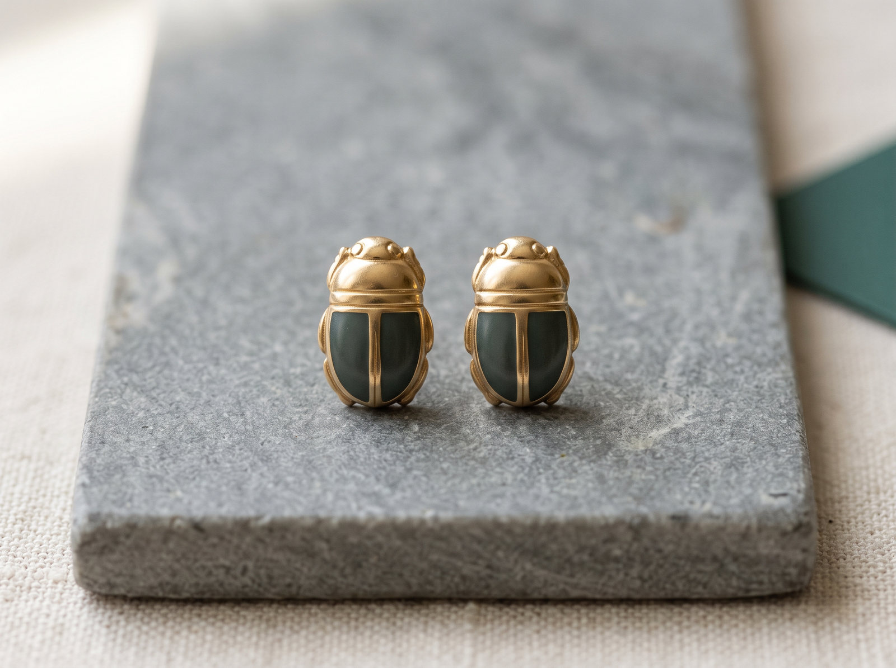
Etsy metni
Başlık 78/140
14K Gold Scarab Beetle Stud Earrings, Jade Green Enamel, Egyptian Amulet Studs
Etiketler (13)
14k gold earrings, scarab earrings, scarab beetle, beetle earrings, egyptian jewelry, amulet jewelry, green enamel, enamel earrings, jade green enamel, gold stud earrings, christmas gift, unisex earrings, talisman jewelry
Malzemeler
14k yellow gold, vitreous enamel, 14k gold earring posts, 14k gold friction backs
Açıklama
A scarab beetle in 14k gold with its two wing covers in deep jade-green glass enamel. The old amulet of renewal, given as a Christmas gift and worn the whole year. THE PIECE Each stud is 5.2 mm wide and 9.3 mm long, gently curved across its width. The head and the plate behind it are polished gold with two lengthwise grooves. The two wing covers are split by a 0.7 mm gold center line inside a 0.7 mm gold border. The shell is 0.9 mm thick, 1.4 mm behind the enamel. GOLD WEIGHT 1.66 g of 14k gold for the pair, counting both posts and friction backs. On the scale the finished pair weighs 1.70 g in total with the enamel. Each pair is weighed after finishing and checked against this design weight. ENAMEL Kiln-fired vitreous enamel (glass), opaque deep jade-green. The enamel follows the gentle curve of the shell, level with the gold or just below it. Glass does not fade, but a hard knock can chip it: keep the earrings away from chlorine and harsh chemicals, and clean the enamel with warm soapy water and a soft brush. LENGTH AND FIT 9.3 mm long. The post sits behind the head plate, so the scarab stays upright on the lobe. A straight 14k gold post, 0.76 mm thick and 11.1 mm long, with a 14k gold friction back. HOW IT IS MADE Made to order. Each scarab is cast in zinc-free 14k gold in one piece, with the enamel cells formed in the casting. The enamel is fired four times at no more than 780 C. There is no solder: the hard gold post is laser welded on afterwards, on a pad away from the enamel. CARE Store the pair on its own so harder pieces do not knock the enamel. Wipe the gold with a soft cloth. No ultrasonic or steam cleaning. GIFTING Arrives in a gift box, ready to give. Made to order. The processing time is shown at checkout.
Atölye kartı
5.2 x 9.25 mm; enine tek egrilik, yukselti 0.5 mm / 5.2 mm kiris (gelisim faktoru 1.024). Kabuk 0.9 mm (model 1.1); elytra hucre bolgesi ARKA yuzde +0.5 (yerel 1.4), on yuz kabuk egrisini izler. 2 hucre DIKDORTGEN 1.55 x 3.75 mm, koseler r0.35 (5.71 mm2/adet), 0.6 derin, taban 0.8; omurga 0.70, jant 0.70, ust bant 1.35. Pronotum 2 boyuna oluk 0.5 x 0.25. Civi pedi Ø2.2 (yerel 1.2), ped-hucre plan 1.63 mm.
Tek parca dokum 14K cinkosuz; tek egrilikli kabuk, kalinlasma yalniz arka yuzde (kapali bosluk yok -> hollow degil). Hucreler dokumde. Civi pronotum arkasindaki pede pisirim sonrasi lazer. Tas yok, lehim yok.
Tezgâh sırası
- CAD: kapali kati egri kabuk (gelisim alani), arka kalinlasma, dikdortgen hucreler r0.35, ped + soket; model +0.2.
- Recine baski -> vakum dokum cinkosuz 14K; yolluk ped arkasina.
- Tesviye, 10x gozenek, hucre temizligi (egri tabanda doku yok); pronotum oluklari mineden once.
- Seri oncesi pilot: ayni alasim + ayni dokumhaneden renk basina kupon, P1-P4 cevrimiyle pisirilir; igne deligi, kabarcik, catlak ve renk tonu gecmeden uretim yok.
- Yuzey zenginlestirme (depletion gilding) x3-4: ~593 C -> %10 H2SO4 pickle -> durulama (yalniz mineden ONCE; sonra asit yok).
- Islak dolum 1. sarj ince (derin yesim yesili, iki hucre) -> kurut -> P1 780 C x 1:30 dk (kalibre pirometre, firin termokupl kontrolu).
- 2. sarj -> P2 780 C x 1:30 dk.
- 3. sarj (jant ustune hafif tasan) -> P3 780 C x 1:30 dk.
- Su altinda alundum tas/elmas pedle mineyi jant kotuna (0-0.05 mm alti) DUZ taslama; hucre kenarinda cip kontrolu.
- P4 parlatma pisirimi 770 C x 1:00 dk (toplam 4 pisirim, hepsi <=780 C).
- Hafif sitrik pickle + durulama (H2SO4/HNO3 banyo YOK).
- Mineyi Plasti-tac + parlak gumus siperle maskele; Stuller 1800 sert civiyi ped soketine (Ø0.8 x 0.5) oturt, dusuk guc lazer, hava nozuluyla sogut (Staley yontemi).
- Civi testi: penseyle cekerken yarim-tam tur burgu (Revere) -> is sertlestirme + kaynak testi; civi dikligi 90 +-3 derece.
- El cilasi bas/pronotum/kenar; mine maskeli; ultrasonik yok.
- QC: cift 1.66 g +-0.05; omurga 0.70 surekliligi; mine 10x.
Malzeme listesi
- Alasim: 14K sari, CINKOSUZ 'enamelable' dokum alasimi (Otto Frei 846-180 no-zinc master alloy ile alasimlanmis; dokumhaneden yazili Zn=0 sertifikasi + DSC solidus), vakum/inert gaz dokum; dokum metali ~1.19 g/cift (govde x 1.15)
- Mine: <=780 C'de olgunlasan kursunsuz yumusak opak mine (or. Soyer soft serisi), renk basina kupon; renk: derin yesim yesili; pisirilmis ~35 mg/cift
- 2 x Stuller 1800 14KY sert cekme friction civi 0.76 x 11.1 mm (0.0658 g/adet = 0.132 g)
- 2 x 14K sari friction arkalik 5-6.3 mm (0.25 g/adet VARSAYIM = 0.50 g; KANIT 0.2-0.4 g kaynaksiz - tedarikci numunesi tartilmadan CAD onayi yok)
- GRAM DOKUMU (cift, x2 x 0.01307 g/mm3): skarabe silueti 37.23 mm2 x 0.9 x 1.024: +34.31 mm3 -> +0.8969 g; elytra arka kalinlasma 22.48 mm2 x 0.5 x 1.024: +11.51 mm3 -> +0.3009 g; 2 hucre dikdortgen 1.55x3.75 r0.35 = 2 x 5.71 mm2 x 0.6 x 1.024: -7.01 mm3 -> -0.1833 g; pronotum 2 oluk: -0.25 mm3 -> -0.0065 g; civi pedi O2.2 x 0.3: +1.14 mm3 -> +0.0298 g; civi soketi: -0.25 mm3 -> -0.0066 g; civi 2 x Stuller 1800 0.76x11.1 = 0.1316 g; arkalik 2 x 0.25 g (varsayim) = 0.50 g => govde 1.0311 g, ALTIN 1.663 g (bant 1.40-1.75, tavana pay 0.087 g)
Arıza modları
| Arıza | Tasarım nasıl önlüyor |
|---|---|
| Gram sapmasi (duz plaka formulu) | Gelisim alani x kalinlik (1.024) + tek tanimli dikdortgen hucre alani 5.71 mm2. |
| Egri yuzeyde minenin kenardan incelmesi | Tek egrilik, 0.5 mm yukselti; hucre duvarlari dik 0.6; ince sarjlar. |
| Omurga duvarinin sarkmasi | Omurga 0.70, <=780 C. |
| Civi tavlanmasi / lazer catlagi | Pisirim sonrasi sert civi, ped hucreden 1.63 mm, maske. |
Tolerans
| Kural | Değer | |
|---|---|---|
| L1 karat + cinkosuz | 14K, Zn=0 | ✓ |
| L2 hucre 0.6 derin, >=0.7 gen. | 0.6 / 1.55 mm | ✓ |
| L2 hucre arasi + cevre duvar >=0.70 | omurga 0.70, jant 0.70 | ✓ |
| L2 taban >=0.8 | 0.8 mm | ✓ |
| L2 renk | 1: derin yesim yesili | ✓ |
| L2/KANIT pisirim <=4, <=780 C | 780/780/780/770 C | ✓ |
| L3/KANIT ped-hucre plan >=1.5 | 1.63 mm | ✓ |
| L5 yapisal >=0.8, oluk sonrasi >=0.6 | kabuk 0.9; 0.65 | ✓ |
| L6 hollow yok | kalinlasma arka yuzde, kapali bosluk yok | ✓ |
| L7 cift altin 1.40-1.75 | 1.663 g | ✓ |
| L9 stud <=12 | 9.25 mm | ✓ |
| L12 tek kahraman | yesil kanatli skarabe | ✓ |
Görsel promptları (16)
- 01Hero / arama küçük resmi: tek ürün, marka natürmortu, 4:3.Referanssız
Quiet luxury editorial still-life product photography. Warm ivory linen ground, honed grey stone slab, a sliver of deep jade-green matte card. Soft directional window light from upper left, long soft shadow, shallow depth of field. Solid yellow gold with warm antique tone. Restrained heirloom mood. No text, no logo, no glitter, no Christmas decoration. The piece: Pair of 14K yellow gold stud earrings shaped as a scarab beetle in top view, 5.2 mm wide and 9.3 mm long, gently curved across its width, with a smooth oval outline. The head and the wide plate behind it are polished gold with two lengthwise bright grooves. The two closed wing covers are filled with smooth opaque deep jade-green enamel (a dark muted grey-green), split by a polished gold center line 0.7 mm wide and framed by a gold border 0.7 mm wide, with a gold band 1.35 mm deep across their top. Straight post behind the head plate. The piece carries no gemstones at all and no empty settings. The only colour on the piece is opaque deep jade-green enamel filling the two wing-cover cells on either side of the gold center line; every other surface is yellow gold. The pair lies side by side on the honed grey stone slab, both fronts facing the camera, about 15 mm apart, posts hidden underneath; exactly two earrings. Seen from about 30 degrees above with a 100 mm macro lens, the piece in razor-sharp focus, filling about 45 percent of the frame width, centred with generous empty margin on all four sides. No people and no hands.
Alt metin 14K gold scarab beetle stud earrings with deep jade-green enamel wing covers
- 02Takılı hâli: ölçek ve duruş. Hero'dan sonra dönüşümü en çok etkileyen kare.Referans: hero kırpımı
Quiet luxury editorial photography in warm ivory, stone grey and deep jade-green tones, soft directional window light from the upper left, true colour, fine film grain, no heavy retouching. No text, no logo, no watermark, no glitter. The attached reference image is a crop of this exact piece: keep its shape, proportions, gold colour and enamel colours exactly as in the reference. The piece: Pair of 14K yellow gold stud earrings shaped as a scarab beetle in top view, 5.2 mm wide and 9.3 mm long, gently curved across its width, with a smooth oval outline. The head and the wide plate behind it are polished gold with two lengthwise bright grooves. The two closed wing covers are filled with smooth opaque deep jade-green enamel (a dark muted grey-green), split by a polished gold center line 0.7 mm wide and framed by a gold border 0.7 mm wide, with a gold band 1.35 mm deep across their top. Straight post behind the head plate. The piece carries no gemstones at all and no empty settings. The only colour on the piece is opaque deep jade-green enamel filling the two wing-cover cells on either side of the gold center line; every other surface is yellow gold. One earring worn on a woman's left earlobe, side profile, hair tucked behind the ear, cropped tight from cheekbone to jaw; only one ear is in the frame and exactly one earring is visible; no other earrings and no piercings elsewhere; true to scale, the main element measures about 9.3 mm across.
Alt metin 14K gold scarab beetle stud earrings with deep jade-green enamel wing covers, worn
- 03Makro işçilik: fiyatı meşrulaştıran detay (mine yüzeyi, flush taş, kenar bitimi).Referans: hero kırpımı
Quiet luxury editorial photography in warm ivory, stone grey and deep jade-green tones, soft directional window light from the upper left, true colour, fine film grain, no heavy retouching. No text, no logo, no watermark, no glitter. The attached reference image is a crop of this exact piece: keep its shape, proportions, gold colour and enamel colours exactly as in the reference. The piece: Pair of 14K yellow gold stud earrings shaped as a scarab beetle in top view, 5.2 mm wide and 9.3 mm long, gently curved across its width, with a smooth oval outline. The head and the wide plate behind it are polished gold with two lengthwise bright grooves. The two closed wing covers are filled with smooth opaque deep jade-green enamel (a dark muted grey-green), split by a polished gold center line 0.7 mm wide and framed by a gold border 0.7 mm wide, with a gold band 1.35 mm deep across their top. Straight post behind the head plate. The piece carries no gemstones at all and no empty settings. The only colour on the piece is opaque deep jade-green enamel filling the two wing-cover cells on either side of the gold center line; every other surface is yellow gold. Extreme close-up macro, 100 mm macro lens: The two jade-green enamel wing covers split by the polished gold center line, with the two bright grooves on the plate above them. The rest of the piece falls away into soft focus on warm-ivory linen.
Alt metin Close-up of the jade-green enamel wing covers and gold center line of the scarab
- 04Elde ölçek: mm'yi parmak ucuna çevirir, 'beklediğimden küçük' iadesini önler.Referans: hero kırpımı
Quiet luxury editorial photography in warm ivory, stone grey and deep jade-green tones, soft directional window light from the upper left, true colour, fine film grain, no heavy retouching. No text, no logo, no watermark, no glitter. The attached reference image is a crop of this exact piece: keep its shape, proportions, gold colour and enamel colours exactly as in the reference. The piece: Pair of 14K yellow gold stud earrings shaped as a scarab beetle in top view, 5.2 mm wide and 9.3 mm long, gently curved across its width, with a smooth oval outline. The head and the wide plate behind it are polished gold with two lengthwise bright grooves. The two closed wing covers are filled with smooth opaque deep jade-green enamel (a dark muted grey-green), split by a polished gold center line 0.7 mm wide and framed by a gold border 0.7 mm wide, with a gold band 1.35 mm deep across their top. Straight post behind the head plate. The piece carries no gemstones at all and no empty settings. The only colour on the piece is opaque deep jade-green enamel filling the two wing-cover cells on either side of the gold center line; every other surface is yellow gold. Close-up for scale against a plain warm-ivory background thrown softly out of focus: one earring held between the thumb and index finger of a woman's hand by its edges, front facing the camera; the second earring is not in the frame; true to scale, the main element measures about 9.3 mm across, a fingertip is about 16 mm wide; it is the only jewellery in the image; anatomically correct hands with five fingers, short natural unpolished nails.
Alt metin 14K gold scarab beetle stud earrings with deep jade-green enamel wing covers, held between fingers for scale
- 05Arka ve bulgular: dolu gövde, kilit / çivi / iğne; sağlamlık sorusunu cevaplar.Referans: hero kırpımı
Quiet luxury editorial photography in warm ivory, stone grey and deep jade-green tones, soft directional window light from the upper left, true colour, fine film grain, no heavy retouching. No text, no logo, no watermark, no glitter. The attached reference image is a crop of this exact piece: keep its shape, proportions, gold colour and enamel colours exactly as in the reference. The piece: Pair of 14K yellow gold stud earrings shaped as a scarab beetle in top view, 5.2 mm wide and 9.3 mm long, gently curved across its width, with a smooth oval outline. The head and the wide plate behind it are polished gold with two lengthwise bright grooves. The two closed wing covers are filled with smooth opaque deep jade-green enamel (a dark muted grey-green), split by a polished gold center line 0.7 mm wide and framed by a gold border 0.7 mm wide, with a gold band 1.35 mm deep across their top. Straight post behind the head plate. The piece carries no gemstones at all and no empty settings. The only colour on the piece is opaque deep jade-green enamel filling the two wing-cover cells on either side of the gold center line; every other surface is yellow gold. The back of the piece, top-down on honed grey stone: A smooth solid gold back that follows the curve of the shell, thicker behind the wing covers, with a small raised round pad behind the head plate holding the straight post.
Alt metin Back of the stud earrings showing the curved solid gold back of the scarab and the post behind the head
- 06Tam boy / çift / mekanizma: uzunluk, ayar ve ne geldiğini tek karede gösterir.Referans: hero kırpımı
Quiet luxury editorial photography in warm ivory, stone grey and deep jade-green tones, soft directional window light from the upper left, true colour, fine film grain, no heavy retouching. No text, no logo, no watermark, no glitter. The attached reference image is a crop of this exact piece: keep its shape, proportions, gold colour and enamel colours exactly as in the reference. The piece: Pair of 14K yellow gold stud earrings shaped as a scarab beetle in top view, 5.2 mm wide and 9.3 mm long, gently curved across its width, with a smooth oval outline. The head and the wide plate behind it are polished gold with two lengthwise bright grooves. The two closed wing covers are filled with smooth opaque deep jade-green enamel (a dark muted grey-green), split by a polished gold center line 0.7 mm wide and framed by a gold border 0.7 mm wide, with a gold band 1.35 mm deep across their top. Straight post behind the head plate. The piece carries no gemstones at all and no empty settings. The only colour on the piece is opaque deep jade-green enamel filling the two wing-cover cells on either side of the gold center line; every other surface is yellow gold. The pair laid flat side by side on warm-ivory linen, top-down, both fronts to the camera, mirror-symmetric, about 15 mm apart, exactly two earrings.
Alt metin 14K gold scarab beetle stud earrings with deep jade-green enamel wing covers, pair
- 07Yan profil: kalınlık ve kütle, düz baskı değil gerçek altın olduğunu gösterir.Referans: hero kırpımı
Quiet luxury editorial photography in warm ivory, stone grey and deep jade-green tones, soft directional window light from the upper left, true colour, fine film grain, no heavy retouching. No text, no logo, no watermark, no glitter. The attached reference image is a crop of this exact piece: keep its shape, proportions, gold colour and enamel colours exactly as in the reference. The piece: Pair of 14K yellow gold stud earrings shaped as a scarab beetle in top view, 5.2 mm wide and 9.3 mm long, gently curved across its width, with a smooth oval outline. The head and the wide plate behind it are polished gold with two lengthwise bright grooves. The two closed wing covers are filled with smooth opaque deep jade-green enamel (a dark muted grey-green), split by a polished gold center line 0.7 mm wide and framed by a gold border 0.7 mm wide, with a gold band 1.35 mm deep across their top. Straight post behind the head plate. The piece carries no gemstones at all and no empty settings. The only colour on the piece is opaque deep jade-green enamel filling the two wing-cover cells on either side of the gold center line; every other surface is yellow gold. Side profile at eye level on honed grey stone, the camera level with the piece: In side profile the shell is 0.9 mm thick and 1.4 mm under the wing covers, rising 0.5 mm across its width, 9.3 mm long.
Alt metin Side profile of the stud earrings showing its thickness
- 08Kış yaşam stili: sezonu Noel dekoru olmadan kurar.Referans: hero kırpımı
Quiet luxury editorial photography in warm ivory, stone grey and deep jade-green tones, soft directional window light from the upper left, true colour, fine film grain, no heavy retouching. No text, no logo, no watermark, no glitter. The attached reference image is a crop of this exact piece: keep its shape, proportions, gold colour and enamel colours exactly as in the reference. The piece: Pair of 14K yellow gold stud earrings shaped as a scarab beetle in top view, 5.2 mm wide and 9.3 mm long, gently curved across its width, with a smooth oval outline. The head and the wide plate behind it are polished gold with two lengthwise bright grooves. The two closed wing covers are filled with smooth opaque deep jade-green enamel (a dark muted grey-green), split by a polished gold center line 0.7 mm wide and framed by a gold border 0.7 mm wide, with a gold band 1.35 mm deep across their top. Straight post behind the head plate. The piece carries no gemstones at all and no empty settings. The only colour on the piece is opaque deep jade-green enamel filling the two wing-cover cells on either side of the gold center line; every other surface is yellow gold. Winter afternoon light: three-quarter view of a woman with dark hair pulled back into a low knot, ivory turtleneck sweater, cropped below the eyes; exactly one earring visible on the near ear; it is the only jewellery in the image.
Alt metin 14K gold scarab beetle stud earrings with deep jade-green enamel wing covers, styled with winter knitwear
- 09Hediye kutusu: Noel alıcısının ilk sorusu, hediyeye hazır mı?Referans: hero kırpımı
Quiet luxury editorial photography in warm ivory, stone grey and deep jade-green tones, soft directional window light from the upper left, true colour, fine film grain, no heavy retouching. No text, no logo, no watermark, no glitter. The attached reference image is a crop of this exact piece: keep its shape, proportions, gold colour and enamel colours exactly as in the reference. The piece: Pair of 14K yellow gold stud earrings shaped as a scarab beetle in top view, 5.2 mm wide and 9.3 mm long, gently curved across its width, with a smooth oval outline. The head and the wide plate behind it are polished gold with two lengthwise bright grooves. The two closed wing covers are filled with smooth opaque deep jade-green enamel (a dark muted grey-green), split by a polished gold center line 0.7 mm wide and framed by a gold border 0.7 mm wide, with a gold band 1.35 mm deep across their top. Straight post behind the head plate. The piece carries no gemstones at all and no empty settings. The only colour on the piece is opaque deep jade-green enamel filling the two wing-cover cells on either side of the gold center line; every other surface is yellow gold. Top-down: the pair side by side, fronts up inside a small open square gift box in plain warm-ivory card with a soft ivory insert, the lid set beside it, a length of narrow deep jade-green ribbon untied beside the box, on honed grey stone. No branding, no printed pattern, no tissue paper, no Christmas decoration, exactly one box.
Alt metin 14K gold scarab beetle stud earrings with deep jade-green enamel wing covers in a gift box
- 10Gerçek renk: nötr gün ışığında altın ve mine rengi; renk kaynaklı iadeyi azaltır.Referans: hero kırpımı
Quiet luxury editorial photography in warm ivory, stone grey and deep jade-green tones, soft directional window light from the upper left, true colour, fine film grain, no heavy retouching. No text, no logo, no watermark, no glitter. The attached reference image is a crop of this exact piece: keep its shape, proportions, gold colour and enamel colours exactly as in the reference. The piece: Pair of 14K yellow gold stud earrings shaped as a scarab beetle in top view, 5.2 mm wide and 9.3 mm long, gently curved across its width, with a smooth oval outline. The head and the wide plate behind it are polished gold with two lengthwise bright grooves. The two closed wing covers are filled with smooth opaque deep jade-green enamel (a dark muted grey-green), split by a polished gold center line 0.7 mm wide and framed by a gold border 0.7 mm wide, with a gold band 1.35 mm deep across their top. Straight post behind the head plate. The piece carries no gemstones at all and no empty settings. The only colour on the piece is opaque deep jade-green enamel filling the two wing-cover cells on either side of the gold center line; every other surface is yellow gold. Colour-accurate reference shot: the piece alone, top-down on plain matte white-ivory paper under even neutral north daylight, no shadow drama, no props, the piece centred and filling half the frame.
Alt metin 14K gold scarab beetle stud earrings with deep jade-green enamel wing covers in neutral daylight, true colour
- 11Ölçü grafiği tabanı: sağ üçte bir boş; mm etiketleri sonra eklenir.Referans: hero kırpımı
Quiet luxury editorial photography in warm ivory, stone grey and deep jade-green tones, soft directional window light from the upper left, true colour, fine film grain, no heavy retouching. No text, no logo, no watermark, no glitter. The attached reference image is a crop of this exact piece: keep its shape, proportions, gold colour and enamel colours exactly as in the reference. The piece: Pair of 14K yellow gold stud earrings shaped as a scarab beetle in top view, 5.2 mm wide and 9.3 mm long, gently curved across its width, with a smooth oval outline. The head and the wide plate behind it are polished gold with two lengthwise bright grooves. The two closed wing covers are filled with smooth opaque deep jade-green enamel (a dark muted grey-green), split by a polished gold center line 0.7 mm wide and framed by a gold border 0.7 mm wide, with a gold band 1.35 mm deep across their top. Straight post behind the head plate. The piece carries no gemstones at all and no empty settings. The only colour on the piece is opaque deep jade-green enamel filling the two wing-cover cells on either side of the gold center line; every other surface is yellow gold. The piece alone, top-down on plain warm-ivory paper, placed in the left two thirds of the frame; the right third is empty paper for dimension labels to be added later; even soft light, no props.
Alt metin 14K gold scarab beetle stud earrings with deep jade-green enamel wing covers with space for dimensions
- 12El işçiliği: siparişe üretim hikâyesi, tezgâhta parça.Referans: hero kırpımı
Quiet luxury editorial photography in warm ivory, stone grey and deep jade-green tones, soft directional window light from the upper left, true colour, fine film grain, no heavy retouching. No text, no logo, no watermark, no glitter. The attached reference image is a crop of this exact piece: keep its shape, proportions, gold colour and enamel colours exactly as in the reference. The piece: Pair of 14K yellow gold stud earrings shaped as a scarab beetle in top view, 5.2 mm wide and 9.3 mm long, gently curved across its width, with a smooth oval outline. The head and the wide plate behind it are polished gold with two lengthwise bright grooves. The two closed wing covers are filled with smooth opaque deep jade-green enamel (a dark muted grey-green), split by a polished gold center line 0.7 mm wide and framed by a gold border 0.7 mm wide, with a gold band 1.35 mm deep across their top. Straight post behind the head plate. The piece carries no gemstones at all and no empty settings. The only colour on the piece is opaque deep jade-green enamel filling the two wing-cover cells on either side of the gold center line; every other surface is yellow gold. The finished piece lying on a worn wooden jeweller's bench pin beside a small porcelain dish of jade-green enamel powder and a fine sable brush, warm lamp light, shallow depth of field, the piece in sharp focus; no hands.
Alt metin 14K gold scarab beetle stud earrings with deep jade-green enamel wing covers on a jeweller's bench
- 13Motifin anlamı: sol üçte bir boş; sembol hikâyesi metni sonra eklenir.Referans: hero kırpımı
Quiet luxury editorial photography in warm ivory, stone grey and deep jade-green tones, soft directional window light from the upper left, true colour, fine film grain, no heavy retouching. No text, no logo, no watermark, no glitter. The attached reference image is a crop of this exact piece: keep its shape, proportions, gold colour and enamel colours exactly as in the reference. The piece: Pair of 14K yellow gold stud earrings shaped as a scarab beetle in top view, 5.2 mm wide and 9.3 mm long, gently curved across its width, with a smooth oval outline. The head and the wide plate behind it are polished gold with two lengthwise bright grooves. The two closed wing covers are filled with smooth opaque deep jade-green enamel (a dark muted grey-green), split by a polished gold center line 0.7 mm wide and framed by a gold border 0.7 mm wide, with a gold band 1.35 mm deep across their top. Straight post behind the head plate. The piece carries no gemstones at all and no empty settings. The only colour on the piece is opaque deep jade-green enamel filling the two wing-cover cells on either side of the gold center line; every other surface is yellow gold. The piece alone, top-down on a deep jade-green matte card, placed in the right two thirds of the frame; the left third is empty card for a caption to be added later; soft directional light.
Alt metin 14K gold scarab beetle stud earrings with deep jade-green enamel wing covers on a deep green card
- 14Yıl boyu takılır: 'yalnız Noel' itirazını kırar.Referans: hero kırpımı
Quiet luxury editorial photography in warm ivory, stone grey and deep jade-green tones, soft directional window light from the upper left, true colour, fine film grain, no heavy retouching. No text, no logo, no watermark, no glitter. The attached reference image is a crop of this exact piece: keep its shape, proportions, gold colour and enamel colours exactly as in the reference. The piece: Pair of 14K yellow gold stud earrings shaped as a scarab beetle in top view, 5.2 mm wide and 9.3 mm long, gently curved across its width, with a smooth oval outline. The head and the wide plate behind it are polished gold with two lengthwise bright grooves. The two closed wing covers are filled with smooth opaque deep jade-green enamel (a dark muted grey-green), split by a polished gold center line 0.7 mm wide and framed by a gold border 0.7 mm wide, with a gold band 1.35 mm deep across their top. Straight post behind the head plate. The piece carries no gemstones at all and no empty settings. The only colour on the piece is opaque deep jade-green enamel filling the two wing-cover cells on either side of the gold center line; every other surface is yellow gold. Everyday wear, no season: side profile of a woman with short dark hair, plain white t-shirt collar, soft daylight, cropped from cheekbone to jaw; exactly one earring visible on the near ear.
Alt metin 14K gold scarab beetle stud earrings with deep jade-green enamel wing covers, everyday wear
- 15Hediye anı: duygu; Noel satın alma niyetine bağlar.Referans: hero kırpımı
Quiet luxury editorial photography in warm ivory, stone grey and deep jade-green tones, soft directional window light from the upper left, true colour, fine film grain, no heavy retouching. No text, no logo, no watermark, no glitter. The attached reference image is a crop of this exact piece: keep its shape, proportions, gold colour and enamel colours exactly as in the reference. The piece: Pair of 14K yellow gold stud earrings shaped as a scarab beetle in top view, 5.2 mm wide and 9.3 mm long, gently curved across its width, with a smooth oval outline. The head and the wide plate behind it are polished gold with two lengthwise bright grooves. The two closed wing covers are filled with smooth opaque deep jade-green enamel (a dark muted grey-green), split by a polished gold center line 0.7 mm wide and framed by a gold border 0.7 mm wide, with a gold band 1.35 mm deep across their top. Straight post behind the head plate. The piece carries no gemstones at all and no empty settings. The only colour on the piece is opaque deep jade-green enamel filling the two wing-cover cells on either side of the gold center line; every other surface is yellow gold. A gift being given: two pairs of hands across a pale oak table, one pair holding out the small open warm-ivory gift box with the piece visible inside, the other reaching for it, soft warm window light, sleeves of ivory and grey knitwear; exactly one box and one piece of jewellery; anatomically correct hands with five fingers, short natural unpolished nails.
Alt metin 14K gold scarab beetle stud earrings with deep jade-green enamel wing covers given as a gift
- 16Mağaza ızgarası / Pinterest: koyu jade zeminde yüksek kontrast kare.Referans: hero kırpımı
Quiet luxury editorial photography in warm ivory, stone grey and deep jade-green tones, soft directional window light from the upper left, true colour, fine film grain, no heavy retouching. No text, no logo, no watermark, no glitter. The attached reference image is a crop of this exact piece: keep its shape, proportions, gold colour and enamel colours exactly as in the reference. The piece: Pair of 14K yellow gold stud earrings shaped as a scarab beetle in top view, 5.2 mm wide and 9.3 mm long, gently curved across its width, with a smooth oval outline. The head and the wide plate behind it are polished gold with two lengthwise bright grooves. The two closed wing covers are filled with smooth opaque deep jade-green enamel (a dark muted grey-green), split by a polished gold center line 0.7 mm wide and framed by a gold border 0.7 mm wide, with a gold band 1.35 mm deep across their top. Straight post behind the head plate. The piece carries no gemstones at all and no empty settings. The only colour on the piece is opaque deep jade-green enamel filling the two wing-cover cells on either side of the gold center line; every other surface is yellow gold. Top-down flat lay of the piece centred on a deep jade-green matte card with a narrow border of warm-ivory linen at the top edge, crisp soft light, the piece filling about 40 percent of the frame so a square crop keeps all of it.
Alt metin 14K gold scarab beetle stud earrings with deep jade-green enamel wing covers, flat lay on deep green
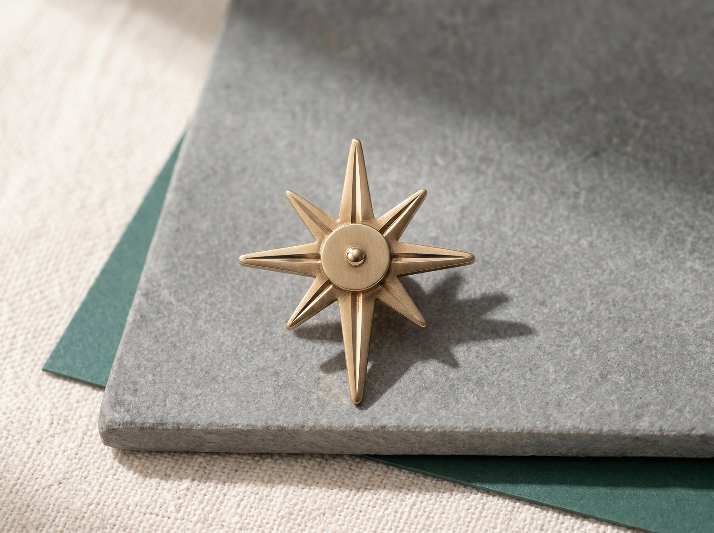
Etsy metni
Başlık 71/140
14K Gold Star Lapel Pin for Men, Eight Point North Star, Groomsman Gift
Etiketler (13)
14k gold lapel pin, mens lapel pin, star lapel pin, north star pin, gold brooch for men, suit pin, groomsman gift, celestial jewelry, christmas gift, gift for him, solid gold pin, wedding lapel pin, mens jewelry
Malzemeler
14k yellow gold, 14k white gold pin stem, 14k gold safety catch
Açıklama
An eight-pointed star for the lapel, four long rays and four short ones, each with a bright cut groove and a matte centre. A Christmas gift for him, and the pin he wears to every wedding after. THE PIECE 26 mm wide and 30 mm tall; the lower ray is drawn longest. Each ray is 1.3 mm thick with a flat top and one bright V groove that fades before the rounded tip. The 8 mm centre disc is honed matte with a small polished dome. GOLD WEIGHT 3.33 g of 14k gold, counting the 14k white gold pin stem and the safety catch. On the scale the finished piece weighs 3.33 g in total with everything on it. HOW IT FASTENS One pin stem of hardened 14k white gold with a rotating safety catch, the standard fine-jewellery fastening for a brooch worn every day. HOW IT IS MADE Made to order. Cast in 14k gold in one piece. CARE Wipe with a soft dry cloth, or wash in warm water with a drop of mild soap and a soft brush. Take it off for swimming and cleaning. No bleach or chlorine. GIFTING Arrives in a gift box, ready to give. Made to order. The processing time is shown at checkout.
Atölye kartı
26.0 x 30.0 mm. Gobek D8.0 x 1.4 (deliksiz), merkez kubbe D2.6 h0.3. Kardinal isinlar (ust/sol/sag) gobek kenarindan 9.0 (R13), alt isin 13.0 (R17); plan 3.4 -> 0.8, uc r0.4, DIKDORTGEN kesit 1.3 sabit. Diyagonal isinlar 5.5 (R9.5), 2.6 -> 0.8, 1.2. On yuz V: 90 derece, 0.4 derin, 0.8 genis; isin 1.4 mm'ye daralinca (kardinal 6.9, alt 10.0, diyagonal 3.7 mm) 1.1 mm'de sifira sonumlenir; V altinda kalan ag 0.9. Model: bitmis + 0.2, elmas tirasli on yuzde +0.1 (isin modeli 1.6 kalin). Igne hatti yatay isinlar ekseninde (y=0), mafsal x=-6, kilit x=+6, igne 14.5 mm.
Tek parca 14K kayip-mum dokum: yildiz + mafsal kulaklari (sol yatay isin arkasi) ayni mumdan. Mine yok, tas yok, firina girmez. Emniyetli doner kilit dokulemez (doner kovan ayri parca) -> satin alma 14KY kilit, sag yatay isin arkasina (isin genisligi 2.8, kalinlik 1.3) lazerle kaynaklanir; parca hic firina girmedigi icin sert lehim de serbest ama lazer secildi (isil tav yok, renk dikisi yok). Igne 14K beyaz (nikelli), is-sertlestirilmis, kulaklara soguk percinlenir. Hollow yok.
Tezgâh sırası
- 1. CAD: bitmis olculer + 0.2 bitirme payi; on yuz +0.1 elmas tiras payi (isin modeli 1.6 kalin); V oluk modelde YOK (tezgahta kesilir), uc r0.4.
- 2. Recine baski (DLP 25-50 um), destekler arka yuzde; besleme gobek arkasindan + alt isin kokune yardimci kanal.
- 3. Yatirim, kademeli yakma (recine ~730 C'ye kadar); 14K standart alasim vakum dokum, metal ~1060-1080 C, flaska ~600 C.
- 4. Yolluk kesimi, tesviye (ege, 600-1200 zimpara); isin kalinligi kumpasla 1.30 +/- 0.05 (V oncesi 1.4).
- 5. Gobek honlama (3M radial 220), merkez kubbe parlatma.
- 6. Elmas tiras: on yuz V, 90 derece uc, 0.4 derin; V isin 1.4 genislige inince 1.1 mm'de sonumlenir; sonrasi ag kalinligi >=0.85 kontrol.
- 7. Kilit: sag yatay isin arkasi r=6 noktasina 14KY 460-12 kilit lazer kaynagi (0.2-0.3 mm noktalar, argon); kilit sabun+amonyakli suda kaynatilir (Otto Frei notu).
- 8. Igne: 14KW 0.86 mm, 14.5 mm'ye kes, ucu konik bile, cekerek 1/2 tur burgu ile sertlestir; 0.8 mm 14K percinle kulaklara tak; kilide 1 mm on gerilimle oturt.
- 9. Cila (yalniz kenar ve gobek kubbe), tambur YOK (V keskinligi korunur).
- 10. QC: tartim 3.31 g +/- %5, uc yaricaplari >=0.4 (parmak testi), kilit 20 ac-kapa, igne cekme testi 2 kg, kumastan gecirme.
Malzeme listesi
- Alasim: 14K sari standart dokum alasimi (minesiz parca; firina girmez), vakum dokum. Dokum govde (kulak/ped dahil) 2.940 g x 1.15 = 3.38 g dokum metali (yolluk/kayip payi).
- Mine tozu: yok.
- Tas: yok.
- Bulgular (satin alma): 14K beyaz igne 0.86 mm (Otto Frei 601-14, 38.1 mm'den 14.5 mm'ye kesilir) 0.125 g; 14KY emniyetli doner kilit Otto Frei 460-12 0.22 g (tahmin); 14K percin teli 0.8 mm x 3.0 0.020 g. Toplam bulgu 0.365 g (altin grama dahil).
Arıza modları
| Arıza | Tasarım nasıl önlüyor |
|---|---|
| Elmas tiras V'sinin isin ucunu yarmasi (orijinalde 0.8 uc genisligine 0.8 genis V) | V, isin 1.4 mm'ye daralinca 1.1 mm'de sifira sonumlenir; uc 0.8 genis tam kesit kalir. |
| Iki yuzlu V ile agin 0.5 mm'ye inmesi ve isinin kirilmasi | Yalniz on yuz V; ag 0.9 >= 0.8 yapisal. |
| Iginin gobekteki acik delikten onden gorunmesi (orijinal D2.6 delik igne hattinin tam ustunde) | Gobek deligi kaldirildi; gobek kati, merkez parlak kubbe. |
| Parcanin yakada one devrilmesi | Alt isin 13 mm (diger kardinal 9 mm) -> kutle merkezi y=-0.6, igne hatti y=0 ustte kalir. |
| Dar isin tabaninda kilidin tasmasi | Kilit r=6'da (isin 2.8 genis); kilit tabani 2.8'e egelenir. |
Tolerans
| Kural | Değer | |
|---|---|---|
| L1 karat 14K (KANIT karat_policy: 14K vitreous 'marginal', not_viable degil; 18K'ye gecilmez) | 14K sari | ✓ |
| L2 mine | mine yok - uygulanmaz | ✓ |
| L3 birlestirme: mafsal topuzu tek dokum; pisirim sonrasi ek yalniz lazer | mafsal kulaklari dokum; kilit lazer; lehim 0 | ✓ |
| L4 tas | tas yok - uygulanmaz | ✓ |
| L5 dekoratif >=0.6 | isin ucu 0.8, V alti ag 0.9 | ✓ |
| L5 yapisal >=0.8 | isin kalinligi 1.3 / 1.2, gobek 1.4 | ✓ |
| L5 mafsal kesiti >=1.0 | kulak 1.0 x 2.0 x 2.2 | ✓ |
| L5 aciklik >=0.6 | aciklik yok (gobek deligi kaldirildi) | ✓ |
| L5 model +0.2 (+0.1 elmas tiras yuzu) | isin modeli 1.6 (bitmis 1.3) | ✓ |
| L5 giyilen uclar r>=0.4 | tum isin uclari r0.4 | ✓ |
| L6 hollow (yalniz kolye/bros, asla mineyle degil) | kati govde, hollow yok; 'solid' basliga girebilir | ✓ |
| L7 bros bandi 3.0-4.2 g altin (bulgu dahil) | 3.305 g (govde 2.940 + bulgu 0.365); tavana pay 0.89 g | ✓ |
| L10 <=30 mm tek igne; mafsal ustte; doner emniyet kilidi; bulgu grama dahil | 26 x 30 mm, tek igne 14.5 mm; igne hatti kutle merkezinin 0.6 mm ustunde (alt isin uzun); 460-12 doner kilit; bulgu 0.365 g dahil | ✓ |
| L11 8 kollu yildiz <=2 / motif ailesi <=3 | 8 kollu yildiz: P1 + P7 = 2; goksel aile P1, P2, P7 = 3 | ✓ |
| L12 tek kahraman ozellik | parlak elmas tirasli 8 isinli yildiz | ✓ |
Görsel promptları (16)
- 01Hero / arama küçük resmi: tek ürün, marka natürmortu, 4:3.Referanssız
Quiet luxury editorial still-life product photography. Warm ivory linen ground, honed grey stone slab, a sliver of deep jade-green matte card. Soft directional window light from upper left, long soft shadow, shallow depth of field. Solid yellow gold with warm antique tone. Restrained heirloom mood. No text, no logo, no glitter, no Christmas decoration. The piece: Men's lapel pin in 14K yellow gold, 26 mm wide and 30 mm tall: an eight-pointed star with four long rays and four short diagonal rays. The top, left and right rays reach 13 mm from the centre; the lower ray reaches 17 mm. The diagonal rays reach 9.5 mm. Each ray is 1.3 mm thick with a flat top and one bright diamond-cut V groove along its centre that fades out before the rounded tip. The 8 mm centre disc is honed matte with a 2.6 mm polished dome. Back: 14K white gold pin stem with a rotating safety catch. The piece carries no gemstones at all and no empty settings. The piece has no enamel and no colour: every surface is yellow gold. The brooch lies face up, centred on the honed grey stone slab, pin hidden behind it; exactly one brooch. Seen from about 30 degrees above with a 100 mm macro lens, the piece in razor-sharp focus, filling about 45 percent of the frame width, centred with generous empty margin on all four sides. No people and no hands.
Alt metin 14K gold eight-pointed star lapel pin for men
- 02Takılı hâli: ölçek ve duruş. Hero'dan sonra dönüşümü en çok etkileyen kare.Referans: hero kırpımı
Quiet luxury editorial photography in warm ivory, stone grey and deep jade-green tones, soft directional window light from the upper left, true colour, fine film grain, no heavy retouching. No text, no logo, no watermark, no glitter. The attached reference image is a crop of this exact piece: keep its shape, proportions and gold colour exactly as in the reference. The piece: Men's lapel pin in 14K yellow gold, 26 mm wide and 30 mm tall: an eight-pointed star with four long rays and four short diagonal rays. The top, left and right rays reach 13 mm from the centre; the lower ray reaches 17 mm. The diagonal rays reach 9.5 mm. Each ray is 1.3 mm thick with a flat top and one bright diamond-cut V groove along its centre that fades out before the rounded tip. The 8 mm centre disc is honed matte with a 2.6 mm polished dome. Back: 14K white gold pin stem with a rotating safety catch. The piece carries no gemstones at all and no empty settings. The piece has no enamel and no colour: every surface is yellow gold. Pinned through the left lapel of a man's charcoal grey wool flannel suit jacket at the buttonhole, white shirt, no tie, cropped from collar to chest so no face shows; exactly one pin on the jacket and no pocket square; true to scale, the main element measures about 30 mm across.
Alt metin 14K gold eight-pointed star lapel pin for men, worn
- 03Makro işçilik: fiyatı meşrulaştıran detay (mine yüzeyi, flush taş, kenar bitimi).Referans: hero kırpımı
Quiet luxury editorial photography in warm ivory, stone grey and deep jade-green tones, soft directional window light from the upper left, true colour, fine film grain, no heavy retouching. No text, no logo, no watermark, no glitter. The attached reference image is a crop of this exact piece: keep its shape, proportions and gold colour exactly as in the reference. The piece: Men's lapel pin in 14K yellow gold, 26 mm wide and 30 mm tall: an eight-pointed star with four long rays and four short diagonal rays. The top, left and right rays reach 13 mm from the centre; the lower ray reaches 17 mm. The diagonal rays reach 9.5 mm. Each ray is 1.3 mm thick with a flat top and one bright diamond-cut V groove along its centre that fades out before the rounded tip. The 8 mm centre disc is honed matte with a 2.6 mm polished dome. Back: 14K white gold pin stem with a rotating safety catch. The piece carries no gemstones at all and no empty settings. The piece has no enamel and no colour: every surface is yellow gold. Extreme close-up macro, 100 mm macro lens: The centre disc with its honed matte finish and small polished dome, and the bright V groove running down each ray. The rest of the piece falls away into soft focus on warm-ivory linen.
Alt metin Close-up of the matte centre disc and the bright grooves on the rays
- 04Elde ölçek: mm'yi parmak ucuna çevirir, 'beklediğimden küçük' iadesini önler.Referans: hero kırpımı
Quiet luxury editorial photography in warm ivory, stone grey and deep jade-green tones, soft directional window light from the upper left, true colour, fine film grain, no heavy retouching. No text, no logo, no watermark, no glitter. The attached reference image is a crop of this exact piece: keep its shape, proportions and gold colour exactly as in the reference. The piece: Men's lapel pin in 14K yellow gold, 26 mm wide and 30 mm tall: an eight-pointed star with four long rays and four short diagonal rays. The top, left and right rays reach 13 mm from the centre; the lower ray reaches 17 mm. The diagonal rays reach 9.5 mm. Each ray is 1.3 mm thick with a flat top and one bright diamond-cut V groove along its centre that fades out before the rounded tip. The 8 mm centre disc is honed matte with a 2.6 mm polished dome. Back: 14K white gold pin stem with a rotating safety catch. The piece carries no gemstones at all and no empty settings. The piece has no enamel and no colour: every surface is yellow gold. Close-up for scale against a plain warm-ivory background thrown softly out of focus: the brooch resting face up on the open palm of a woman's hand; true to scale, the main element measures about 30 mm across, a fingertip is about 16 mm wide; it is the only jewellery in the image; anatomically correct hands with five fingers, short natural unpolished nails.
Alt metin 14K gold eight-pointed star lapel pin for men, held between fingers for scale
- 05Arka ve bulgular: dolu gövde, kilit / çivi / iğne; sağlamlık sorusunu cevaplar.Referans: hero kırpımı
Quiet luxury editorial photography in warm ivory, stone grey and deep jade-green tones, soft directional window light from the upper left, true colour, fine film grain, no heavy retouching. No text, no logo, no watermark, no glitter. The attached reference image is a crop of this exact piece: keep its shape, proportions and gold colour exactly as in the reference. The piece: Men's lapel pin in 14K yellow gold, 26 mm wide and 30 mm tall: an eight-pointed star with four long rays and four short diagonal rays. The top, left and right rays reach 13 mm from the centre; the lower ray reaches 17 mm. The diagonal rays reach 9.5 mm. Each ray is 1.3 mm thick with a flat top and one bright diamond-cut V groove along its centre that fades out before the rounded tip. The 8 mm centre disc is honed matte with a 2.6 mm polished dome. Back: 14K white gold pin stem with a rotating safety catch. The piece carries no gemstones at all and no empty settings. The piece has no enamel and no colour: every surface is yellow gold. The back of the piece, top-down on honed grey stone: The flat back of the star with the 14K white gold pin stem, the hinge and the rotating safety catch.
Alt metin Back of the lapel pin showing the pin stem and safety catch
- 06Tam boy / çift / mekanizma: uzunluk, ayar ve ne geldiğini tek karede gösterir.Referans: hero kırpımı
Quiet luxury editorial photography in warm ivory, stone grey and deep jade-green tones, soft directional window light from the upper left, true colour, fine film grain, no heavy retouching. No text, no logo, no watermark, no glitter. The attached reference image is a crop of this exact piece: keep its shape, proportions and gold colour exactly as in the reference. The piece: Men's lapel pin in 14K yellow gold, 26 mm wide and 30 mm tall: an eight-pointed star with four long rays and four short diagonal rays. The top, left and right rays reach 13 mm from the centre; the lower ray reaches 17 mm. The diagonal rays reach 9.5 mm. Each ray is 1.3 mm thick with a flat top and one bright diamond-cut V groove along its centre that fades out before the rounded tip. The 8 mm centre disc is honed matte with a 2.6 mm polished dome. Back: 14K white gold pin stem with a rotating safety catch. The piece carries no gemstones at all and no empty settings. The piece has no enamel and no colour: every surface is yellow gold. The brooch lying face down on honed grey stone with its pin stem swung open out of the safety catch so the full length of the pin, the hinge joint and the open catch are all visible, top-down.
Alt metin 14K gold eight-pointed star lapel pin for men, pin open
- 07Yan profil: kalınlık ve kütle, düz baskı değil gerçek altın olduğunu gösterir.Referans: hero kırpımı
Quiet luxury editorial photography in warm ivory, stone grey and deep jade-green tones, soft directional window light from the upper left, true colour, fine film grain, no heavy retouching. No text, no logo, no watermark, no glitter. The attached reference image is a crop of this exact piece: keep its shape, proportions and gold colour exactly as in the reference. The piece: Men's lapel pin in 14K yellow gold, 26 mm wide and 30 mm tall: an eight-pointed star with four long rays and four short diagonal rays. The top, left and right rays reach 13 mm from the centre; the lower ray reaches 17 mm. The diagonal rays reach 9.5 mm. Each ray is 1.3 mm thick with a flat top and one bright diamond-cut V groove along its centre that fades out before the rounded tip. The 8 mm centre disc is honed matte with a 2.6 mm polished dome. Back: 14K white gold pin stem with a rotating safety catch. The piece carries no gemstones at all and no empty settings. The piece has no enamel and no colour: every surface is yellow gold. Side profile at eye level on honed grey stone, the camera level with the piece: A flat star 1.3 mm thick with the centre dome rising slightly above it.
Alt metin Side profile of the lapel pin showing its thickness
- 08Kış yaşam stili: sezonu Noel dekoru olmadan kurar.Referans: hero kırpımı
Quiet luxury editorial photography in warm ivory, stone grey and deep jade-green tones, soft directional window light from the upper left, true colour, fine film grain, no heavy retouching. No text, no logo, no watermark, no glitter. The attached reference image is a crop of this exact piece: keep its shape, proportions and gold colour exactly as in the reference. The piece: Men's lapel pin in 14K yellow gold, 26 mm wide and 30 mm tall: an eight-pointed star with four long rays and four short diagonal rays. The top, left and right rays reach 13 mm from the centre; the lower ray reaches 17 mm. The diagonal rays reach 9.5 mm. Each ray is 1.3 mm thick with a flat top and one bright diamond-cut V groove along its centre that fades out before the rounded tip. The 8 mm centre disc is honed matte with a 2.6 mm polished dome. Back: 14K white gold pin stem with a rotating safety catch. The piece carries no gemstones at all and no empty settings. The piece has no enamel and no colour: every surface is yellow gold. Outdoors in pale winter light: a man in a navy wool overcoat with the pin through the left lapel, a grey scarf, cropped from collar to chest so no face shows; exactly one pin.
Alt metin 14K gold eight-pointed star lapel pin for men, styled with winter knitwear
- 09Hediye kutusu: Noel alıcısının ilk sorusu, hediyeye hazır mı?Referans: hero kırpımı
Quiet luxury editorial photography in warm ivory, stone grey and deep jade-green tones, soft directional window light from the upper left, true colour, fine film grain, no heavy retouching. No text, no logo, no watermark, no glitter. The attached reference image is a crop of this exact piece: keep its shape, proportions and gold colour exactly as in the reference. The piece: Men's lapel pin in 14K yellow gold, 26 mm wide and 30 mm tall: an eight-pointed star with four long rays and four short diagonal rays. The top, left and right rays reach 13 mm from the centre; the lower ray reaches 17 mm. The diagonal rays reach 9.5 mm. Each ray is 1.3 mm thick with a flat top and one bright diamond-cut V groove along its centre that fades out before the rounded tip. The 8 mm centre disc is honed matte with a 2.6 mm polished dome. Back: 14K white gold pin stem with a rotating safety catch. The piece carries no gemstones at all and no empty settings. The piece has no enamel and no colour: every surface is yellow gold. Top-down: the brooch face up inside a small open square gift box in plain warm-ivory card with a soft ivory insert, the lid set beside it, a length of narrow deep jade-green ribbon untied beside the box, on honed grey stone. No branding, no printed pattern, no tissue paper, no Christmas decoration, exactly one box.
Alt metin 14K gold eight-pointed star lapel pin for men in a gift box
- 10Gerçek renk: nötr gün ışığında altın ve mine rengi; renk kaynaklı iadeyi azaltır.Referans: hero kırpımı
Quiet luxury editorial photography in warm ivory, stone grey and deep jade-green tones, soft directional window light from the upper left, true colour, fine film grain, no heavy retouching. No text, no logo, no watermark, no glitter. The attached reference image is a crop of this exact piece: keep its shape, proportions and gold colour exactly as in the reference. The piece: Men's lapel pin in 14K yellow gold, 26 mm wide and 30 mm tall: an eight-pointed star with four long rays and four short diagonal rays. The top, left and right rays reach 13 mm from the centre; the lower ray reaches 17 mm. The diagonal rays reach 9.5 mm. Each ray is 1.3 mm thick with a flat top and one bright diamond-cut V groove along its centre that fades out before the rounded tip. The 8 mm centre disc is honed matte with a 2.6 mm polished dome. Back: 14K white gold pin stem with a rotating safety catch. The piece carries no gemstones at all and no empty settings. The piece has no enamel and no colour: every surface is yellow gold. Colour-accurate reference shot: the piece alone, top-down on plain matte white-ivory paper under even neutral north daylight, no shadow drama, no props, the piece centred and filling half the frame.
Alt metin 14K gold eight-pointed star lapel pin for men in neutral daylight, true colour
- 11Ölçü grafiği tabanı: sağ üçte bir boş; mm etiketleri sonra eklenir.Referans: hero kırpımı
Quiet luxury editorial photography in warm ivory, stone grey and deep jade-green tones, soft directional window light from the upper left, true colour, fine film grain, no heavy retouching. No text, no logo, no watermark, no glitter. The attached reference image is a crop of this exact piece: keep its shape, proportions and gold colour exactly as in the reference. The piece: Men's lapel pin in 14K yellow gold, 26 mm wide and 30 mm tall: an eight-pointed star with four long rays and four short diagonal rays. The top, left and right rays reach 13 mm from the centre; the lower ray reaches 17 mm. The diagonal rays reach 9.5 mm. Each ray is 1.3 mm thick with a flat top and one bright diamond-cut V groove along its centre that fades out before the rounded tip. The 8 mm centre disc is honed matte with a 2.6 mm polished dome. Back: 14K white gold pin stem with a rotating safety catch. The piece carries no gemstones at all and no empty settings. The piece has no enamel and no colour: every surface is yellow gold. The piece alone, top-down on plain warm-ivory paper, placed in the left two thirds of the frame; the right third is empty paper for dimension labels to be added later; even soft light, no props.
Alt metin 14K gold eight-pointed star lapel pin for men with space for dimensions
- 12El işçiliği: siparişe üretim hikâyesi, tezgâhta parça.Referans: hero kırpımı
Quiet luxury editorial photography in warm ivory, stone grey and deep jade-green tones, soft directional window light from the upper left, true colour, fine film grain, no heavy retouching. No text, no logo, no watermark, no glitter. The attached reference image is a crop of this exact piece: keep its shape, proportions and gold colour exactly as in the reference. The piece: Men's lapel pin in 14K yellow gold, 26 mm wide and 30 mm tall: an eight-pointed star with four long rays and four short diagonal rays. The top, left and right rays reach 13 mm from the centre; the lower ray reaches 17 mm. The diagonal rays reach 9.5 mm. Each ray is 1.3 mm thick with a flat top and one bright diamond-cut V groove along its centre that fades out before the rounded tip. The 8 mm centre disc is honed matte with a 2.6 mm polished dome. Back: 14K white gold pin stem with a rotating safety catch. The piece carries no gemstones at all and no empty settings. The piece has no enamel and no colour: every surface is yellow gold. The finished piece lying on a worn wooden jeweller's bench pin beside a steel burnisher and a fine half-round file, warm lamp light, shallow depth of field, the piece in sharp focus; no hands.
Alt metin 14K gold eight-pointed star lapel pin for men on a jeweller's bench
- 13Motifin anlamı: sol üçte bir boş; sembol hikâyesi metni sonra eklenir.Referans: hero kırpımı
Quiet luxury editorial photography in warm ivory, stone grey and deep jade-green tones, soft directional window light from the upper left, true colour, fine film grain, no heavy retouching. No text, no logo, no watermark, no glitter. The attached reference image is a crop of this exact piece: keep its shape, proportions and gold colour exactly as in the reference. The piece: Men's lapel pin in 14K yellow gold, 26 mm wide and 30 mm tall: an eight-pointed star with four long rays and four short diagonal rays. The top, left and right rays reach 13 mm from the centre; the lower ray reaches 17 mm. The diagonal rays reach 9.5 mm. Each ray is 1.3 mm thick with a flat top and one bright diamond-cut V groove along its centre that fades out before the rounded tip. The 8 mm centre disc is honed matte with a 2.6 mm polished dome. Back: 14K white gold pin stem with a rotating safety catch. The piece carries no gemstones at all and no empty settings. The piece has no enamel and no colour: every surface is yellow gold. The piece alone, top-down on a deep jade-green matte card, placed in the right two thirds of the frame; the left third is empty card for a caption to be added later; soft directional light.
Alt metin 14K gold eight-pointed star lapel pin for men on a deep green card
- 14Yıl boyu takılır: 'yalnız Noel' itirazını kırar.Referans: hero kırpımı
Quiet luxury editorial photography in warm ivory, stone grey and deep jade-green tones, soft directional window light from the upper left, true colour, fine film grain, no heavy retouching. No text, no logo, no watermark, no glitter. The attached reference image is a crop of this exact piece: keep its shape, proportions and gold colour exactly as in the reference. The piece: Men's lapel pin in 14K yellow gold, 26 mm wide and 30 mm tall: an eight-pointed star with four long rays and four short diagonal rays. The top, left and right rays reach 13 mm from the centre; the lower ray reaches 17 mm. The diagonal rays reach 9.5 mm. Each ray is 1.3 mm thick with a flat top and one bright diamond-cut V groove along its centre that fades out before the rounded tip. The 8 mm centre disc is honed matte with a 2.6 mm polished dome. Back: 14K white gold pin stem with a rotating safety catch. The piece carries no gemstones at all and no empty settings. The piece has no enamel and no colour: every surface is yellow gold. Everyday wear, no season: the pin on the lapel of a man's unstructured stone-grey linen blazer over a white t-shirt, soft daylight, cropped from collar to chest; exactly one pin.
Alt metin 14K gold eight-pointed star lapel pin for men, everyday wear
- 15Hediye anı: duygu; Noel satın alma niyetine bağlar.Referans: hero kırpımı
Quiet luxury editorial photography in warm ivory, stone grey and deep jade-green tones, soft directional window light from the upper left, true colour, fine film grain, no heavy retouching. No text, no logo, no watermark, no glitter. The attached reference image is a crop of this exact piece: keep its shape, proportions and gold colour exactly as in the reference. The piece: Men's lapel pin in 14K yellow gold, 26 mm wide and 30 mm tall: an eight-pointed star with four long rays and four short diagonal rays. The top, left and right rays reach 13 mm from the centre; the lower ray reaches 17 mm. The diagonal rays reach 9.5 mm. Each ray is 1.3 mm thick with a flat top and one bright diamond-cut V groove along its centre that fades out before the rounded tip. The 8 mm centre disc is honed matte with a 2.6 mm polished dome. Back: 14K white gold pin stem with a rotating safety catch. The piece carries no gemstones at all and no empty settings. The piece has no enamel and no colour: every surface is yellow gold. A gift being given: two pairs of hands across a pale oak table, one pair holding out the small open warm-ivory gift box with the piece visible inside, the other reaching for it, soft warm window light, sleeves of ivory and grey knitwear; exactly one box and one piece of jewellery; anatomically correct hands with five fingers, short natural unpolished nails.
Alt metin 14K gold eight-pointed star lapel pin for men given as a gift
- 16Mağaza ızgarası / Pinterest: koyu jade zeminde yüksek kontrast kare.Referans: hero kırpımı
Quiet luxury editorial photography in warm ivory, stone grey and deep jade-green tones, soft directional window light from the upper left, true colour, fine film grain, no heavy retouching. No text, no logo, no watermark, no glitter. The attached reference image is a crop of this exact piece: keep its shape, proportions and gold colour exactly as in the reference. The piece: Men's lapel pin in 14K yellow gold, 26 mm wide and 30 mm tall: an eight-pointed star with four long rays and four short diagonal rays. The top, left and right rays reach 13 mm from the centre; the lower ray reaches 17 mm. The diagonal rays reach 9.5 mm. Each ray is 1.3 mm thick with a flat top and one bright diamond-cut V groove along its centre that fades out before the rounded tip. The 8 mm centre disc is honed matte with a 2.6 mm polished dome. Back: 14K white gold pin stem with a rotating safety catch. The piece carries no gemstones at all and no empty settings. The piece has no enamel and no colour: every surface is yellow gold. Top-down flat lay of the piece centred on a deep jade-green matte card with a narrow border of warm-ivory linen at the top edge, crisp soft light, the piece filling about 40 percent of the frame so a square crop keeps all of it.
Alt metin 14K gold eight-pointed star lapel pin for men, flat lay on deep green
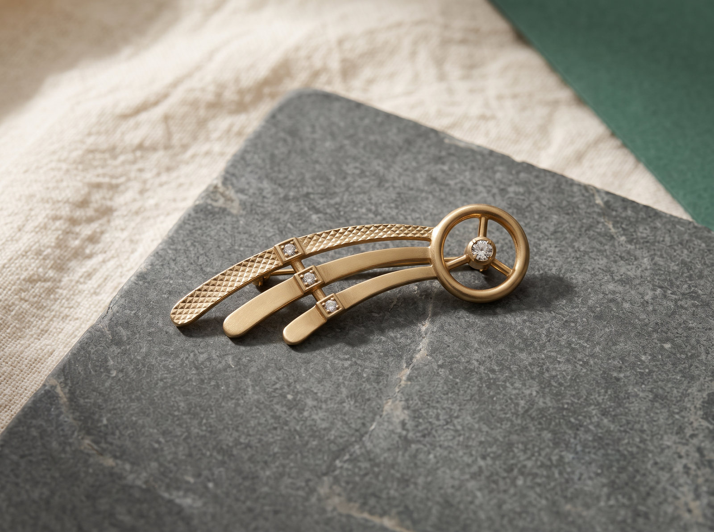
Kuyrukta 2 yerine 3 çapraz çubuk/pad çizildi, yani toplam 4 taş (spec 3); üst şeridin yüzeyi diamond-cut değil kareli kordon gibi işlenmiş.
Düzeltilmiş prompt (01 hero, referanssız)
Quiet luxury editorial still-life product photography. Warm ivory linen ground, honed grey stone slab, a sliver of deep jade-green matte card. Soft directional window light from upper left, long soft shadow, shallow depth of field. Solid yellow gold with warm antique tone. Restrained heirloom mood. No text, no logo, no glitter, no Christmas decoration. The piece: Brooch in 14K yellow gold, 42 mm long and 14 mm tall, shaped as a comet lying almost horizontal: the head at the right end, the tail trailing to the left and slightly downward. Head: an 11 mm open gold ring with three short spokes holding a central collet set with one 1.8 mm lab grown white sapphire. Tail: three separate tapered gold ribbons, 31, 25 and 19 mm long, with rounded tips and open gaps between them. Exactly two small gold cross-bars bridge the ribbons, one near the head and one halfway along the tail; each of the two bars carries one raised 2.8 mm square pad set with one 1.8 mm lab grown white sapphire, flush-set; there is no third bar and no third pad. Ribbon tops are bright diamond-cut (fine bright facets, not a knurled or checkered pattern), side faces honed matte. Back: two 14K white gold pin stems with rotating safety catches. The stones are exactly these and no others: three 1.8 mm round lab-grown white sapphires: one in the central collet of the head ring and one flush-set in the raised square pad on each of the two cross-bars. No other stone and no empty setting anywhere on the piece. The piece has no enamel and no colour: every surface is yellow gold. The brooch lies face up, centred on the honed grey stone slab, pin hidden behind it; exactly one brooch. Seen from about 30 degrees above with a 100 mm macro lens, the piece in razor-sharp focus, filling about 45 percent of the frame width, centred with generous empty margin on all four sides. No people and no hands.
Etsy metni
Başlık 83/140
14K Gold Comet Brooch, Three Lab Grown Sapphires, Shooting Star Pin, Celestial Gift
Etiketler (13)
14k gold brooch, comet brooch, shooting star pin, lab grown sapphire, celestial jewelry, star brooch, gold pin, coat brooch, christmas gift, gift for her, solid gold brooch, statement brooch, astronomy gift
Malzemeler
14k yellow gold, lab grown white sapphire, 14k white gold pin stem, 14k gold safety catch
Açıklama
A comet lying across the coat: an open gold ring for a head and three tapered gold ribbons trailing behind, with lab-grown white sapphires at the head and on the cross-bars. A celestial Christmas gift. THE PIECE 42 mm long and 14 mm tall. The 11 mm head ring holds a central collet on three short spokes; the three tail ribbons are 31, 25 and 19 mm long with rounded tips, bridged by two small cross-bars. Ribbon tops are diamond-cut, the sides honed matte. GOLD WEIGHT 3.92 g of 14k gold, counting the 14k white gold pin stem and the safety catch. On the scale the finished piece weighs 3.93 g in total with the stones. STONES Three 1.8 mm round lab-grown white sapphires: one in the head collet and one flush set on each cross-bar pad, 0.07 ct in total. Mohs 9. HOW IT FASTENS Two pin stems of hardened 14k white gold with a rotating safety catch, the standard fine-jewellery fastening for a brooch worn every day. HOW IT IS MADE Made to order. Cast in 14k gold in one piece. The stones are set last, cold, after all firing and polishing. CARE Wipe with a soft dry cloth, or wash in warm water with a drop of mild soap and a soft brush. Take it off for swimming and cleaning. No bleach or chlorine. GIFTING Arrives in a gift box, ready to give. Made to order. The processing time is shown at checkout.
Atölye kartı
42 x 14 mm. Bas halkasi OD11.0 / ID8.4, 1.8 kalin; 3 parmak 2.7 x 1.0 x 1.5; merkez kolet OD2.8 x 1.8. Seritler 31 / 25 / 19 boy, plan 2.4 -> 0.8 (uc r0.4), kalinlik 1.1 / 1.0 / 0.9; sirtta 0.25 elmas tiras pahi. Dugum 1: bastan 9 mm, uc seridi baglar (31'in 0.29'u, 19'un 0.47'si). Dugum 2: bastan 17 mm, 31 ve 25 seritlerini baglar (0.55 / 0.68). Dugum 2.8 x 2.8 x 1.8. Iki igne, her biri 14.5 mm, araliklari 18 mm, ust kenar seridinin arkasinda (ust ucte). Model +0.2, elmas tiras yuzu +0.1.
Tek parca 14K dokum (bas + parmaklar + kolet + 3 serit + 2 dugum + 2 cift mafsal kulagi). Mine yok, firina girmez. Taslar: kolet ve dugumlerde 1.8 mm lab beyaz safir, alttan D1.0 delikli flush. 2 kilit satin alma, lazerle; igneler 14KW soguk percin. Hollow yok.
Tezgâh sırası
- 1. CAD: bitmis + 0.2; serit sirti +0.1 (elmas tiras); tas yuvalari D1.0 pilot delik modelde (derinlik/cap 1.8), uc r0.4.
- 2. Recine baski; besleme bas halkasi arkasi + her serit kokune; ince 0.9 serit icin uc tarafina hava kanali.
- 3. Yatirim + yakma; 14K standart alasim vakum dokum.
- 4. Yolluk kesimi, tesviye; serit kalinliklari 1.1 / 1.0 / 0.9 +/- 0.05; dugum kalinligi 1.8.
- 5. Elmas tiras: serit sirtlarinda 2 x 0.25 pah; yan yuzler honlu.
- 6. Tas yuvasi: pilot D1.0 teyit, 1.8 mm yuva frezesi (90 derece hart bur), girdle oturma 0.02 bindirme.
- 7. Tas oturtma: 3 x 1.8 lab beyaz safir flush, burnisor ile; tas sonrasi delikten isik kontrolu.
- 8. 2 kilit lazer kaynak (ust kenar seridi arkasi), 2 igne 14.5 mm burgu-sertlestirme + percin.
- 9. Cila; QC: tartim 3.79 g +/- %5, tas sallanma testi (igne ucu), serit ucu egilme kontrolu, 2 kilit ac-kapa.
Malzeme listesi
- Alasim: 14K sari standart dokum alasimi (minesiz parca; firina girmez), vakum dokum. Dokum govde (kulak/ped dahil) 3.059 g x 1.15 = 3.52 g dokum metali (yolluk/kayip payi).
- Mine tozu: yok.
- Taslar: 3 x 1.8 mm lab grown white sapphire = 0.0740 ct.
- Bulgular (satin alma): 2 x 14K beyaz igne 0.86 mm (Otto Frei 601-14, 38.1 mm'den 14.5 mm'ye kesilir) 0.125 g; 2 x 14KY emniyetli doner kilit Otto Frei 460-12 0.22 g (tahmin); 2 x 14K percin teli 0.8 mm x 3.0 0.020 g. Toplam bulgu 0.730 g (altin grama dahil).
Arıza modları
| Arıza | Tasarım nasıl önlüyor |
|---|---|
| Tas culet'inin brosun arkasindan cikmasi (orijinal 1.2 mm dugumde 1.22 mm yuva) | Dugum ve kolet 1.8 kalin (KANIT 1.8 mm tas icin 1.7), alttan D1.0 delik. |
| 31 mm seridin son dugumden sonraki serbest ucunun takilip egilmesi | Dugum 2 bastan 17 mm'de; serbest uc 14 mm, kesit 1.1 kalin, uc r0.4; parmak/kumas testi QC'de. |
| Parmaklarin halka ile kolet arasina sigmamasi (orijinal 4.2 mm parmak, gercek bosluk 2.7) | Parmak 2.7 mm, hacim cifte sayimi giderildi. |
| Uzun brosun yakada donmesi | Cift igne, 18 mm aralik, ust kenarda. |
Tolerans
| Kural | Değer | |
|---|---|---|
| L1 karat 14K (KANIT karat_policy: 14K vitreous 'marginal', not_viable degil; 18K'ye gecilmez) | 14K sari | ✓ |
| L2 mine | mine yok - uygulanmaz | ✓ |
| L3 birlestirme | mafsal kulaklari tek dokum; kilit lazer; lehim 0 | ✓ |
| L4 lab-grown yuvarlak 1.3-2.0, flush | 3 x 1.8 lab beyaz safir, flush | ✓ |
| L4 ev sahibi kalinligi (KANIT 1.8 mm tas -> 1.7) | 1.8 | ✓ |
| L4 yanal duvar (KANIT 1.8-2.5 mm tas -> 0.45) | 0.50 | ✓ |
| L4 tas altinda delik | D1.0, derinlik/cap 1.8 <= 2 | ✓ |
| L4 tas sayisi <=7, pave yok | 3 | ✓ |
| L5 dekoratif >=0.6 | serit ucu 0.8, parmak 1.0 | ✓ |
| L5 yapisal >=0.8 | serit 0.9-1.1, halka duvari 1.3 x 1.8 | ✓ |
| L5 mafsal kesiti >=1.0 | kulak 1.0 x 2.0 x 2.2 (x2) | ✓ |
| L5 aciklik >=0.6 | seritler arasi en dar 1.2; halka ici 2.7 | ✓ |
| L5 model +0.2 / giyilen uc r>=0.4 | model +0.2 (+0.1 sirt); serit uclari r0.4 | ✓ |
| L6 hollow (yalniz kolye/bros, asla mineyle degil) | kati govde, hollow yok; 'solid' basliga girebilir | ✓ |
| L7 bros bandi 3.0-4.2 g altin (bulgu dahil) | 3.788 g (govde 3.059 + bulgu 0.730); tavana pay 0.41 g | ✓ |
| L10 >30 mm cift igne; mafsal ustte; doner kilit; bulgu dahil | 42 mm -> 2 igne 18 mm aralik, ust kenarda; 2 x 460-12; bulgu 0.730 g dahil | ✓ |
| L12 tek kahraman ozellik | uc parlak serit + isikli bas: diyagonal komet siluet | ✓ |
Görsel promptları (16)
- 01Hero / arama küçük resmi: tek ürün, marka natürmortu, 4:3.Referanssız
Quiet luxury editorial still-life product photography. Warm ivory linen ground, honed grey stone slab, a sliver of deep jade-green matte card. Soft directional window light from upper left, long soft shadow, shallow depth of field. Solid yellow gold with warm antique tone. Restrained heirloom mood. No text, no logo, no glitter, no Christmas decoration. The piece: Brooch in 14K yellow gold, 42 mm long and 14 mm tall, shaped as a comet lying almost horizontal: the head at the right end, the tail trailing to the left and slightly downward. Head: an 11 mm open gold ring with three short spokes holding a central collet set with one 1.8 mm lab grown white sapphire. Tail: three separate tapered gold ribbons, 31, 25 and 19 mm long, with rounded tips and open gaps between them. Two small gold cross-bars bridge the ribbons; each bar carries a raised 2.8 mm square pad set with one 1.8 mm lab grown white sapphire, flush-set. Ribbon tops are bright diamond-cut, side faces honed matte. Back: two 14K white gold pin stems with rotating safety catches. The stones are exactly these and no others: three 1.8 mm round lab-grown white sapphires: one in the central collet of the head ring and one flush-set in the raised square pad on each of the two cross-bars. No other stone and no empty setting anywhere on the piece. The piece has no enamel and no colour: every surface is yellow gold. The brooch lies face up, centred on the honed grey stone slab, pin hidden behind it; exactly one brooch. Seen from about 30 degrees above with a 100 mm macro lens, the piece in razor-sharp focus, filling about 45 percent of the frame width, centred with generous empty margin on all four sides. No people and no hands.
Alt metin 14K gold comet brooch with three lab grown white sapphires
- 02Takılı hâli: ölçek ve duruş. Hero'dan sonra dönüşümü en çok etkileyen kare.Referans: hero kırpımı
Quiet luxury editorial photography in warm ivory, stone grey and deep jade-green tones, soft directional window light from the upper left, true colour, fine film grain, no heavy retouching. No text, no logo, no watermark, no glitter. The attached reference image is a crop of this exact piece: keep its shape, proportions, gold colour and stones exactly as in the reference. The piece: Brooch in 14K yellow gold, 42 mm long and 14 mm tall, shaped as a comet lying almost horizontal: the head at the right end, the tail trailing to the left and slightly downward. Head: an 11 mm open gold ring with three short spokes holding a central collet set with one 1.8 mm lab grown white sapphire. Tail: three separate tapered gold ribbons, 31, 25 and 19 mm long, with rounded tips and open gaps between them. Two small gold cross-bars bridge the ribbons; each bar carries a raised 2.8 mm square pad set with one 1.8 mm lab grown white sapphire, flush-set. Ribbon tops are bright diamond-cut, side faces honed matte. Back: two 14K white gold pin stems with rotating safety catches. The stones are exactly these and no others: three 1.8 mm round lab-grown white sapphires: one in the central collet of the head ring and one flush-set in the raised square pad on each of the two cross-bars. No other stone and no empty setting anywhere on the piece. The piece has no enamel and no colour: every surface is yellow gold. Pinned on the left lapel of a woman's camel wool coat, cropped from collar to chest so no face shows; exactly one brooch on the coat and no other jewellery; true to scale, the main element measures about 42 mm across.
Alt metin 14K gold comet brooch with three lab grown white sapphires, worn
- 03Makro işçilik: fiyatı meşrulaştıran detay (mine yüzeyi, flush taş, kenar bitimi).Referans: hero kırpımı
Quiet luxury editorial photography in warm ivory, stone grey and deep jade-green tones, soft directional window light from the upper left, true colour, fine film grain, no heavy retouching. No text, no logo, no watermark, no glitter. The attached reference image is a crop of this exact piece: keep its shape, proportions, gold colour and stones exactly as in the reference. The piece: Brooch in 14K yellow gold, 42 mm long and 14 mm tall, shaped as a comet lying almost horizontal: the head at the right end, the tail trailing to the left and slightly downward. Head: an 11 mm open gold ring with three short spokes holding a central collet set with one 1.8 mm lab grown white sapphire. Tail: three separate tapered gold ribbons, 31, 25 and 19 mm long, with rounded tips and open gaps between them. Two small gold cross-bars bridge the ribbons; each bar carries a raised 2.8 mm square pad set with one 1.8 mm lab grown white sapphire, flush-set. Ribbon tops are bright diamond-cut, side faces honed matte. Back: two 14K white gold pin stems with rotating safety catches. The stones are exactly these and no others: three 1.8 mm round lab-grown white sapphires: one in the central collet of the head ring and one flush-set in the raised square pad on each of the two cross-bars. No other stone and no empty setting anywhere on the piece. The piece has no enamel and no colour: every surface is yellow gold. Extreme close-up macro, 100 mm macro lens: The open head ring with its three spokes and the central collet holding a lab-grown white sapphire, and the start of the three tail ribbons. The rest of the piece falls away into soft focus on warm-ivory linen.
Alt metin Close-up of the comet head ring and its lab-grown sapphire
- 04Elde ölçek: mm'yi parmak ucuna çevirir, 'beklediğimden küçük' iadesini önler.Referans: hero kırpımı
Quiet luxury editorial photography in warm ivory, stone grey and deep jade-green tones, soft directional window light from the upper left, true colour, fine film grain, no heavy retouching. No text, no logo, no watermark, no glitter. The attached reference image is a crop of this exact piece: keep its shape, proportions, gold colour and stones exactly as in the reference. The piece: Brooch in 14K yellow gold, 42 mm long and 14 mm tall, shaped as a comet lying almost horizontal: the head at the right end, the tail trailing to the left and slightly downward. Head: an 11 mm open gold ring with three short spokes holding a central collet set with one 1.8 mm lab grown white sapphire. Tail: three separate tapered gold ribbons, 31, 25 and 19 mm long, with rounded tips and open gaps between them. Two small gold cross-bars bridge the ribbons; each bar carries a raised 2.8 mm square pad set with one 1.8 mm lab grown white sapphire, flush-set. Ribbon tops are bright diamond-cut, side faces honed matte. Back: two 14K white gold pin stems with rotating safety catches. The stones are exactly these and no others: three 1.8 mm round lab-grown white sapphires: one in the central collet of the head ring and one flush-set in the raised square pad on each of the two cross-bars. No other stone and no empty setting anywhere on the piece. The piece has no enamel and no colour: every surface is yellow gold. Close-up for scale against a plain warm-ivory background thrown softly out of focus: the brooch resting face up on the open palm of a woman's hand; true to scale, the main element measures about 42 mm across, a fingertip is about 16 mm wide; it is the only jewellery in the image; anatomically correct hands with five fingers, short natural unpolished nails.
Alt metin 14K gold comet brooch with three lab grown white sapphires, held between fingers for scale
- 05Arka ve bulgular: dolu gövde, kilit / çivi / iğne; sağlamlık sorusunu cevaplar.Referans: hero kırpımı
Quiet luxury editorial photography in warm ivory, stone grey and deep jade-green tones, soft directional window light from the upper left, true colour, fine film grain, no heavy retouching. No text, no logo, no watermark, no glitter. The attached reference image is a crop of this exact piece: keep its shape, proportions, gold colour and stones exactly as in the reference. The piece: Brooch in 14K yellow gold, 42 mm long and 14 mm tall, shaped as a comet lying almost horizontal: the head at the right end, the tail trailing to the left and slightly downward. Head: an 11 mm open gold ring with three short spokes holding a central collet set with one 1.8 mm lab grown white sapphire. Tail: three separate tapered gold ribbons, 31, 25 and 19 mm long, with rounded tips and open gaps between them. Two small gold cross-bars bridge the ribbons; each bar carries a raised 2.8 mm square pad set with one 1.8 mm lab grown white sapphire, flush-set. Ribbon tops are bright diamond-cut, side faces honed matte. Back: two 14K white gold pin stems with rotating safety catches. The stones are exactly these and no others: three 1.8 mm round lab-grown white sapphires: one in the central collet of the head ring and one flush-set in the raised square pad on each of the two cross-bars. No other stone and no empty setting anywhere on the piece. The piece has no enamel and no colour: every surface is yellow gold. The back of the piece, top-down on honed grey stone: The back of the comet with two 14K white gold pin stems, their hinges and rotating safety catches.
Alt metin Back of the brooch showing the two pin stems and safety catches
- 06Tam boy / çift / mekanizma: uzunluk, ayar ve ne geldiğini tek karede gösterir.Referans: hero kırpımı
Quiet luxury editorial photography in warm ivory, stone grey and deep jade-green tones, soft directional window light from the upper left, true colour, fine film grain, no heavy retouching. No text, no logo, no watermark, no glitter. The attached reference image is a crop of this exact piece: keep its shape, proportions, gold colour and stones exactly as in the reference. The piece: Brooch in 14K yellow gold, 42 mm long and 14 mm tall, shaped as a comet lying almost horizontal: the head at the right end, the tail trailing to the left and slightly downward. Head: an 11 mm open gold ring with three short spokes holding a central collet set with one 1.8 mm lab grown white sapphire. Tail: three separate tapered gold ribbons, 31, 25 and 19 mm long, with rounded tips and open gaps between them. Two small gold cross-bars bridge the ribbons; each bar carries a raised 2.8 mm square pad set with one 1.8 mm lab grown white sapphire, flush-set. Ribbon tops are bright diamond-cut, side faces honed matte. Back: two 14K white gold pin stems with rotating safety catches. The stones are exactly these and no others: three 1.8 mm round lab-grown white sapphires: one in the central collet of the head ring and one flush-set in the raised square pad on each of the two cross-bars. No other stone and no empty setting anywhere on the piece. The piece has no enamel and no colour: every surface is yellow gold. The brooch lying face down on honed grey stone with its pin stem swung open out of the safety catch so the full length of the pin, the hinge joint and the open catch are all visible, top-down.
Alt metin 14K gold comet brooch with three lab grown white sapphires, pin open
- 07Yan profil: kalınlık ve kütle, düz baskı değil gerçek altın olduğunu gösterir.Referans: hero kırpımı
Quiet luxury editorial photography in warm ivory, stone grey and deep jade-green tones, soft directional window light from the upper left, true colour, fine film grain, no heavy retouching. No text, no logo, no watermark, no glitter. The attached reference image is a crop of this exact piece: keep its shape, proportions, gold colour and stones exactly as in the reference. The piece: Brooch in 14K yellow gold, 42 mm long and 14 mm tall, shaped as a comet lying almost horizontal: the head at the right end, the tail trailing to the left and slightly downward. Head: an 11 mm open gold ring with three short spokes holding a central collet set with one 1.8 mm lab grown white sapphire. Tail: three separate tapered gold ribbons, 31, 25 and 19 mm long, with rounded tips and open gaps between them. Two small gold cross-bars bridge the ribbons; each bar carries a raised 2.8 mm square pad set with one 1.8 mm lab grown white sapphire, flush-set. Ribbon tops are bright diamond-cut, side faces honed matte. Back: two 14K white gold pin stems with rotating safety catches. The stones are exactly these and no others: three 1.8 mm round lab-grown white sapphires: one in the central collet of the head ring and one flush-set in the raised square pad on each of the two cross-bars. No other stone and no empty setting anywhere on the piece. The piece has no enamel and no colour: every surface is yellow gold. Side profile at eye level on honed grey stone, the camera level with the piece: Flat tail ribbons 0.9 to 1.1 mm thick and a head ring 1.8 mm thick.
Alt metin Side profile of the brooch showing its thickness
- 08Kış yaşam stili: sezonu Noel dekoru olmadan kurar.Referans: hero kırpımı
Quiet luxury editorial photography in warm ivory, stone grey and deep jade-green tones, soft directional window light from the upper left, true colour, fine film grain, no heavy retouching. No text, no logo, no watermark, no glitter. The attached reference image is a crop of this exact piece: keep its shape, proportions, gold colour and stones exactly as in the reference. The piece: Brooch in 14K yellow gold, 42 mm long and 14 mm tall, shaped as a comet lying almost horizontal: the head at the right end, the tail trailing to the left and slightly downward. Head: an 11 mm open gold ring with three short spokes holding a central collet set with one 1.8 mm lab grown white sapphire. Tail: three separate tapered gold ribbons, 31, 25 and 19 mm long, with rounded tips and open gaps between them. Two small gold cross-bars bridge the ribbons; each bar carries a raised 2.8 mm square pad set with one 1.8 mm lab grown white sapphire, flush-set. Ribbon tops are bright diamond-cut, side faces honed matte. Back: two 14K white gold pin stems with rotating safety catches. The stones are exactly these and no others: three 1.8 mm round lab-grown white sapphires: one in the central collet of the head ring and one flush-set in the raised square pad on each of the two cross-bars. No other stone and no empty setting anywhere on the piece. The piece has no enamel and no colour: every surface is yellow gold. Outdoors in pale winter light: a woman in an ivory wool coat with the brooch on the left lapel, a grey knit scarf, cropped from collar to chest so no face shows; exactly one brooch.
Alt metin 14K gold comet brooch with three lab grown white sapphires, styled with winter knitwear
- 09Hediye kutusu: Noel alıcısının ilk sorusu, hediyeye hazır mı?Referans: hero kırpımı
Quiet luxury editorial photography in warm ivory, stone grey and deep jade-green tones, soft directional window light from the upper left, true colour, fine film grain, no heavy retouching. No text, no logo, no watermark, no glitter. The attached reference image is a crop of this exact piece: keep its shape, proportions, gold colour and stones exactly as in the reference. The piece: Brooch in 14K yellow gold, 42 mm long and 14 mm tall, shaped as a comet lying almost horizontal: the head at the right end, the tail trailing to the left and slightly downward. Head: an 11 mm open gold ring with three short spokes holding a central collet set with one 1.8 mm lab grown white sapphire. Tail: three separate tapered gold ribbons, 31, 25 and 19 mm long, with rounded tips and open gaps between them. Two small gold cross-bars bridge the ribbons; each bar carries a raised 2.8 mm square pad set with one 1.8 mm lab grown white sapphire, flush-set. Ribbon tops are bright diamond-cut, side faces honed matte. Back: two 14K white gold pin stems with rotating safety catches. The stones are exactly these and no others: three 1.8 mm round lab-grown white sapphires: one in the central collet of the head ring and one flush-set in the raised square pad on each of the two cross-bars. No other stone and no empty setting anywhere on the piece. The piece has no enamel and no colour: every surface is yellow gold. Top-down: the brooch face up inside a small open square gift box in plain warm-ivory card with a soft ivory insert, the lid set beside it, a length of narrow deep jade-green ribbon untied beside the box, on honed grey stone. No branding, no printed pattern, no tissue paper, no Christmas decoration, exactly one box.
Alt metin 14K gold comet brooch with three lab grown white sapphires in a gift box
- 10Gerçek renk: nötr gün ışığında altın ve mine rengi; renk kaynaklı iadeyi azaltır.Referans: hero kırpımı
Quiet luxury editorial photography in warm ivory, stone grey and deep jade-green tones, soft directional window light from the upper left, true colour, fine film grain, no heavy retouching. No text, no logo, no watermark, no glitter. The attached reference image is a crop of this exact piece: keep its shape, proportions, gold colour and stones exactly as in the reference. The piece: Brooch in 14K yellow gold, 42 mm long and 14 mm tall, shaped as a comet lying almost horizontal: the head at the right end, the tail trailing to the left and slightly downward. Head: an 11 mm open gold ring with three short spokes holding a central collet set with one 1.8 mm lab grown white sapphire. Tail: three separate tapered gold ribbons, 31, 25 and 19 mm long, with rounded tips and open gaps between them. Two small gold cross-bars bridge the ribbons; each bar carries a raised 2.8 mm square pad set with one 1.8 mm lab grown white sapphire, flush-set. Ribbon tops are bright diamond-cut, side faces honed matte. Back: two 14K white gold pin stems with rotating safety catches. The stones are exactly these and no others: three 1.8 mm round lab-grown white sapphires: one in the central collet of the head ring and one flush-set in the raised square pad on each of the two cross-bars. No other stone and no empty setting anywhere on the piece. The piece has no enamel and no colour: every surface is yellow gold. Colour-accurate reference shot: the piece alone, top-down on plain matte white-ivory paper under even neutral north daylight, no shadow drama, no props, the piece centred and filling half the frame.
Alt metin 14K gold comet brooch with three lab grown white sapphires in neutral daylight, true colour
- 11Ölçü grafiği tabanı: sağ üçte bir boş; mm etiketleri sonra eklenir.Referans: hero kırpımı
Quiet luxury editorial photography in warm ivory, stone grey and deep jade-green tones, soft directional window light from the upper left, true colour, fine film grain, no heavy retouching. No text, no logo, no watermark, no glitter. The attached reference image is a crop of this exact piece: keep its shape, proportions, gold colour and stones exactly as in the reference. The piece: Brooch in 14K yellow gold, 42 mm long and 14 mm tall, shaped as a comet lying almost horizontal: the head at the right end, the tail trailing to the left and slightly downward. Head: an 11 mm open gold ring with three short spokes holding a central collet set with one 1.8 mm lab grown white sapphire. Tail: three separate tapered gold ribbons, 31, 25 and 19 mm long, with rounded tips and open gaps between them. Two small gold cross-bars bridge the ribbons; each bar carries a raised 2.8 mm square pad set with one 1.8 mm lab grown white sapphire, flush-set. Ribbon tops are bright diamond-cut, side faces honed matte. Back: two 14K white gold pin stems with rotating safety catches. The stones are exactly these and no others: three 1.8 mm round lab-grown white sapphires: one in the central collet of the head ring and one flush-set in the raised square pad on each of the two cross-bars. No other stone and no empty setting anywhere on the piece. The piece has no enamel and no colour: every surface is yellow gold. The piece alone, top-down on plain warm-ivory paper, placed in the left two thirds of the frame; the right third is empty paper for dimension labels to be added later; even soft light, no props.
Alt metin 14K gold comet brooch with three lab grown white sapphires with space for dimensions
- 12El işçiliği: siparişe üretim hikâyesi, tezgâhta parça.Referans: hero kırpımı
Quiet luxury editorial photography in warm ivory, stone grey and deep jade-green tones, soft directional window light from the upper left, true colour, fine film grain, no heavy retouching. No text, no logo, no watermark, no glitter. The attached reference image is a crop of this exact piece: keep its shape, proportions, gold colour and stones exactly as in the reference. The piece: Brooch in 14K yellow gold, 42 mm long and 14 mm tall, shaped as a comet lying almost horizontal: the head at the right end, the tail trailing to the left and slightly downward. Head: an 11 mm open gold ring with three short spokes holding a central collet set with one 1.8 mm lab grown white sapphire. Tail: three separate tapered gold ribbons, 31, 25 and 19 mm long, with rounded tips and open gaps between them. Two small gold cross-bars bridge the ribbons; each bar carries a raised 2.8 mm square pad set with one 1.8 mm lab grown white sapphire, flush-set. Ribbon tops are bright diamond-cut, side faces honed matte. Back: two 14K white gold pin stems with rotating safety catches. The stones are exactly these and no others: three 1.8 mm round lab-grown white sapphires: one in the central collet of the head ring and one flush-set in the raised square pad on each of the two cross-bars. No other stone and no empty setting anywhere on the piece. The piece has no enamel and no colour: every surface is yellow gold. The finished piece lying on a worn wooden jeweller's bench pin beside a steel burnisher, a fine half-round file and a pair of brass tweezers, warm lamp light, shallow depth of field, the piece in sharp focus; no hands.
Alt metin 14K gold comet brooch with three lab grown white sapphires on a jeweller's bench
- 13Motifin anlamı: sol üçte bir boş; sembol hikâyesi metni sonra eklenir.Referans: hero kırpımı
Quiet luxury editorial photography in warm ivory, stone grey and deep jade-green tones, soft directional window light from the upper left, true colour, fine film grain, no heavy retouching. No text, no logo, no watermark, no glitter. The attached reference image is a crop of this exact piece: keep its shape, proportions, gold colour and stones exactly as in the reference. The piece: Brooch in 14K yellow gold, 42 mm long and 14 mm tall, shaped as a comet lying almost horizontal: the head at the right end, the tail trailing to the left and slightly downward. Head: an 11 mm open gold ring with three short spokes holding a central collet set with one 1.8 mm lab grown white sapphire. Tail: three separate tapered gold ribbons, 31, 25 and 19 mm long, with rounded tips and open gaps between them. Two small gold cross-bars bridge the ribbons; each bar carries a raised 2.8 mm square pad set with one 1.8 mm lab grown white sapphire, flush-set. Ribbon tops are bright diamond-cut, side faces honed matte. Back: two 14K white gold pin stems with rotating safety catches. The stones are exactly these and no others: three 1.8 mm round lab-grown white sapphires: one in the central collet of the head ring and one flush-set in the raised square pad on each of the two cross-bars. No other stone and no empty setting anywhere on the piece. The piece has no enamel and no colour: every surface is yellow gold. The piece alone, top-down on a deep jade-green matte card, placed in the right two thirds of the frame; the left third is empty card for a caption to be added later; soft directional light.
Alt metin 14K gold comet brooch with three lab grown white sapphires on a deep green card
- 14Yıl boyu takılır: 'yalnız Noel' itirazını kırar.Referans: hero kırpımı
Quiet luxury editorial photography in warm ivory, stone grey and deep jade-green tones, soft directional window light from the upper left, true colour, fine film grain, no heavy retouching. No text, no logo, no watermark, no glitter. The attached reference image is a crop of this exact piece: keep its shape, proportions, gold colour and stones exactly as in the reference. The piece: Brooch in 14K yellow gold, 42 mm long and 14 mm tall, shaped as a comet lying almost horizontal: the head at the right end, the tail trailing to the left and slightly downward. Head: an 11 mm open gold ring with three short spokes holding a central collet set with one 1.8 mm lab grown white sapphire. Tail: three separate tapered gold ribbons, 31, 25 and 19 mm long, with rounded tips and open gaps between them. Two small gold cross-bars bridge the ribbons; each bar carries a raised 2.8 mm square pad set with one 1.8 mm lab grown white sapphire, flush-set. Ribbon tops are bright diamond-cut, side faces honed matte. Back: two 14K white gold pin stems with rotating safety catches. The stones are exactly these and no others: three 1.8 mm round lab-grown white sapphires: one in the central collet of the head ring and one flush-set in the raised square pad on each of the two cross-bars. No other stone and no empty setting anywhere on the piece. The piece has no enamel and no colour: every surface is yellow gold. Everyday wear, no season: the brooch on the collar of a woman's ivory denim jacket, soft daylight, cropped from collar to chest; exactly one brooch.
Alt metin 14K gold comet brooch with three lab grown white sapphires, everyday wear
- 15Hediye anı: duygu; Noel satın alma niyetine bağlar.Referans: hero kırpımı
Quiet luxury editorial photography in warm ivory, stone grey and deep jade-green tones, soft directional window light from the upper left, true colour, fine film grain, no heavy retouching. No text, no logo, no watermark, no glitter. The attached reference image is a crop of this exact piece: keep its shape, proportions, gold colour and stones exactly as in the reference. The piece: Brooch in 14K yellow gold, 42 mm long and 14 mm tall, shaped as a comet lying almost horizontal: the head at the right end, the tail trailing to the left and slightly downward. Head: an 11 mm open gold ring with three short spokes holding a central collet set with one 1.8 mm lab grown white sapphire. Tail: three separate tapered gold ribbons, 31, 25 and 19 mm long, with rounded tips and open gaps between them. Two small gold cross-bars bridge the ribbons; each bar carries a raised 2.8 mm square pad set with one 1.8 mm lab grown white sapphire, flush-set. Ribbon tops are bright diamond-cut, side faces honed matte. Back: two 14K white gold pin stems with rotating safety catches. The stones are exactly these and no others: three 1.8 mm round lab-grown white sapphires: one in the central collet of the head ring and one flush-set in the raised square pad on each of the two cross-bars. No other stone and no empty setting anywhere on the piece. The piece has no enamel and no colour: every surface is yellow gold. A gift being given: two pairs of hands across a pale oak table, one pair holding out the small open warm-ivory gift box with the piece visible inside, the other reaching for it, soft warm window light, sleeves of ivory and grey knitwear; exactly one box and one piece of jewellery; anatomically correct hands with five fingers, short natural unpolished nails.
Alt metin 14K gold comet brooch with three lab grown white sapphires given as a gift
- 16Mağaza ızgarası / Pinterest: koyu jade zeminde yüksek kontrast kare.Referans: hero kırpımı
Quiet luxury editorial photography in warm ivory, stone grey and deep jade-green tones, soft directional window light from the upper left, true colour, fine film grain, no heavy retouching. No text, no logo, no watermark, no glitter. The attached reference image is a crop of this exact piece: keep its shape, proportions, gold colour and stones exactly as in the reference. The piece: Brooch in 14K yellow gold, 42 mm long and 14 mm tall, shaped as a comet lying almost horizontal: the head at the right end, the tail trailing to the left and slightly downward. Head: an 11 mm open gold ring with three short spokes holding a central collet set with one 1.8 mm lab grown white sapphire. Tail: three separate tapered gold ribbons, 31, 25 and 19 mm long, with rounded tips and open gaps between them. Two small gold cross-bars bridge the ribbons; each bar carries a raised 2.8 mm square pad set with one 1.8 mm lab grown white sapphire, flush-set. Ribbon tops are bright diamond-cut, side faces honed matte. Back: two 14K white gold pin stems with rotating safety catches. The stones are exactly these and no others: three 1.8 mm round lab-grown white sapphires: one in the central collet of the head ring and one flush-set in the raised square pad on each of the two cross-bars. No other stone and no empty setting anywhere on the piece. The piece has no enamel and no colour: every surface is yellow gold. Top-down flat lay of the piece centred on a deep jade-green matte card with a narrow border of warm-ivory linen at the top edge, crisp soft light, the piece filling about 40 percent of the frame so a square crop keeps all of it.
Alt metin 14K gold comet brooch with three lab grown white sapphires, flat lay on deep green
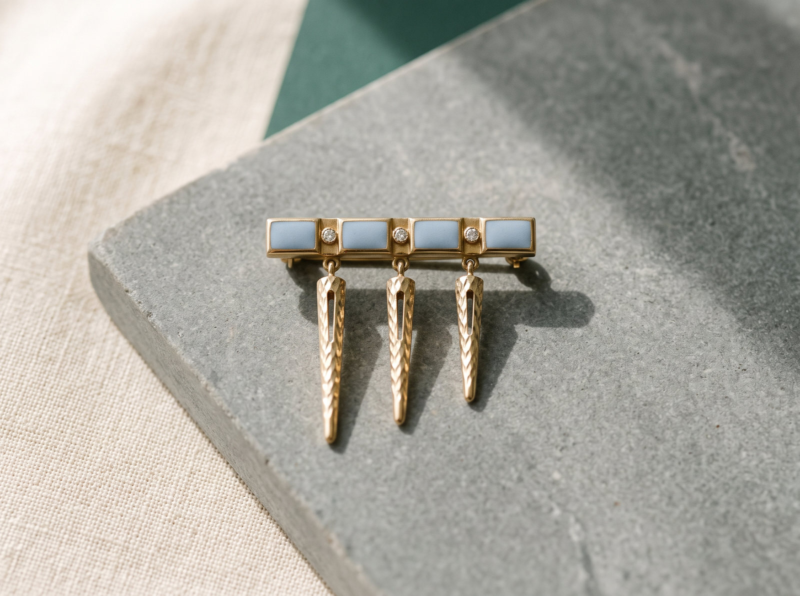
Etsy metni
Başlık 81/140
14K Gold Icicle Brooch, Ice Blue Enamel Bar Pin, Lab Grown Sapphires, Winter Gift
Etiketler (13)
14k gold brooch, icicle brooch, enamel brooch, ice blue enamel, vitreous enamel, winter jewelry, bar brooch, lab grown sapphire, christmas gift, gift for her, coat brooch, solid gold brooch, ice jewelry
Malzemeler
14k yellow gold, vitreous enamel, lab grown white sapphire, 14k white gold pin stem, 14k gold safety catch
Açıklama
A gold bar with four fields of ice-blue glass enamel and three lab-grown sapphires, and three icicles hanging below it. A winter brooch for Christmas that stays on the coat until spring. THE PIECE 28 mm wide and 26 mm tall. The bar is 3.9 mm tall; the icicles hang 22, 17 and 15 mm, each with a narrow open slit in its upper half and a rounded tip. Icicle faces are diamond-cut. GOLD WEIGHT 3.71 g of 14k gold, counting the 14k white gold pin stem and the safety catch. On the scale the finished piece weighs 3.78 g in total with the enamel and stones. ENAMEL Kiln-fired vitreous enamel (glass), opaque ice blue, level with polished gold borders. STONES Three 1.5 mm round lab-grown white sapphires, flush set between the enamel fields. Mohs 9. HOW IT FASTENS One pin stem of hardened 14k white gold with a rotating safety catch, the standard fine-jewellery fastening for a brooch worn every day. HOW IT IS MADE Made to order. Cast in 14k gold in one piece, in a zinc-free gold alloy chosen for enamel. The enamel cells are cast into the gold, filled by hand and kiln-fired. Nothing is soldered after the first firing; any fitting added later is laser welded away from the enamel. The stones are set last, cold, after all firing and polishing. CARE Wipe with a soft dry cloth, or wash in warm water with a drop of mild soap. Glass enamel is hard and does not fade, but it can chip if struck against stone or metal. Keep it away from ultrasonic cleaners. No bleach or chlorine. GIFTING Arrives in a gift box, ready to give. Made to order. The processing time is shown at checkout.
Atölye kartı
28.0 x 25.9 mm. Bar 28.0 x 3.9 x 1.5. Hucreler 4 x (4.3 x 2.5 x 0.55); uc duvar 0.75, yan duvar 0.70, ayirici 3.1 (tas yuvasi). Sarkitlar x = -9 / 0 / +8 konumunda; 22 / 17 / 15 boy, plan 3.4 -> 0.8 (uc r0.4), kalinlik 1.1 / 1.0 / 1.0. Yarik 0.6 genis, bar altindan 3.6 mm'de baslar, sarkit 1.8 mm'ye daralinca biter (22: 3.6->13.5, 17: 3.6->10.5, 15: 3.6->9.2), uclari r0.3. Igne hatti bar altindan 2.1 mm (sarkit koklerinde), mafsal sol sarkit, kilit sag sarkit; igne 19.5 mm.
Tek parca 14K CINKOSUZ alasim dokum: bar + 4 hucre + 3 sarkit + mafsal kulaklari + kilit pedi. Lehim yok. Taban 1.5 - 0.55 = 0.95 (karsi-mine gerekmez). Kilit pedi sag sarkit kokunde, mine kenarina duzlemde 1.55 mm (KANIT >=1.5), pisirim sonrasi lazer. Taslar tum pisirimlerden sonra ayiricilarda, mine kenarina 0.8.
Tezgâh sırası
- 1. CAD: bitmis + 0.2; hucre tabani filetosu r0.15; tas pilot delikleri D0.9 modelde (derinlik/cap 1.67); yarik uclari r0.3.
- 2. Recine baski; besleme bar arkasi ortadan; sarkit uclarina hava kanali.
- 3. Yatirim + yakma; CINKOSUZ 14K, vakum dokum. Gozenek kontrolu (10x lup, hucre tabanlari); gozenekli parca hurda.
- 4. Tesviye; bar kalinligi 1.5, hucre derinligi 0.55 derinlik saatiyle; yariklar 0.6 pin-gauge.
- 5. Hucre temizligi (cam firca, doku yok), tas yuvalarinin on frezesi (mineden ONCE; pisirim sonrasi titresim mineye ulasmasin).
- 6. Yuzey zenginlestirme: 3-4 dongu ~593 C tav + %10 H2SO4; damitik su, yagsiz.
- 7. Karsi-mine: gerekmez (taban 0.95 >= 0.8).
- 8. Islak dolum opak buz mavisi; Pisirim 1: 780 C, 75 sn, kalibre pirometre, sehpada bar alttan destekli.
- 9. Pisirim 2: ikinci dolum, 780 C, 75 sn.
- 10. Tasla zimpara (alundum + su), mine altinla es seviye.
- 11. Pisirim 3: 770 C, 50 sn parlatma. Toplam 3.
- 12. Asit YOK; bikarbonat + su notr temizlik.
- 13. Sarkitlarda elmas tiras (mineye torna yaklasmaz; sarkitlar bar altinda).
- 14. Tas oturtma: 3 x 1.5 lab beyaz safir flush, burnisorle elle (cekic YOK, mine yaninda); mine Plasti-tac ile maskeli.
- 15. Pisirim sonrasi lazer: sag sarkit kok pedine 460-12 kilit; Plasti-tac + parlak gumus siper, dusuk guc, hava sogutma.
- 16. Igne 14KW 19.5 mm burgu-sertlestir, sol sarkit kulaklarina percin.
- 17. Cila (yalniz altin), QC: tartim 3.68 g +/- %5, mine pinhole/catlak 10x, tas testi, kilit 20 ac-kapa.
Malzeme listesi
- Alasim: 14K sari CINKOSUZ mine-uyumlu alasim (Otto Frei 846-180 'No Zinc' master alloy + 24K ile 14K; dokumhaneden yazili Zn=0 sertifikasi + solidus/DSC degeri), vakum/inert gaz dokum. Dokum govde (kulak/ped dahil) 3.273 g x 1.15 = 3.76 g dokum metali (yolluk/kayip payi).
- Mine tozu: kursunsuz opak buz mavisi ~148 mg (pisirilmis 59 mg x 2.5 dolum/tas kaybi).
- Taslar: 3 x 1.5 mm lab grown white sapphire = 0.0428 ct.
- Bulgular (satin alma): 14K beyaz igne 0.86 mm (Otto Frei 601-14, 38.1 mm'den 19.5 mm'ye kesilir) 0.163 g; 14KY emniyetli doner kilit Otto Frei 460-12 0.22 g (tahmin); 14K percin teli 0.8 mm x 3.0 0.020 g. Toplam bulgu 0.403 g (altin grama dahil).
Arıza modları
| Arıza | Tasarım nasıl önlüyor |
|---|---|
| Bar uclarinda mine tutunmamasi (orijinalde uc duvar 0.00) | Hucreler 4.3'e kisaldi; uc duvar 0.75, yan duvar 0.70. |
| Yarigin sarkit ucunu ikiye ayirmasi | Yarik sarkit 1.8 mm'ye daralinca biter; yan duvarlar >=0.6. |
| Uzun mine sirasinda (17.2 mm) firinda bar egilmesi | Bar 1.5 kalin, 780 C ust sinir, sehpada tam destek; pilot mine parcasi P6 (daha rijit). |
| Kilit kaynaginin mineyi yakmasi | Ped sarkit kokunde, mine kenarina 1.55 mm; maske + siper + dusuk guc. |
| Igne yarik icinden onden gorunmesi | Yariklar igne hattinin (bar alti 2.1) 1.5 mm altinda baslar. |
Tolerans
| Kural | Değer | |
|---|---|---|
| L1 karat 14K (KANIT karat_policy: 14K vitreous 'marginal', not_viable degil; 18K'ye gecilmez) | 14K sari | ✓ |
| L2 opak vitreous champleve, hucreler dokumde birakilir (oyma degil) | opak, kursunsuz; hucreler mumda modelli | ✓ |
| L2 hucre derinligi 0.5-0.6 | 0.55 | ✓ |
| L2 hucre genisligi >=0.7 ve derinlik <=2x genislik | min genislik 2.5; oran 0.22 | ✓ |
| L2 hucre tabani >=0.8 (karsi-mine gerekmez) | 0.95 | ✓ |
| L2 hucre arasi ve cevre altin duvar >=0.70 | 0.7 | ✓ |
| L2 hucre icinde kabartma/doku yok | duz, filetolu taban (r0.15) | ✓ |
| L2 palet + renk sayisi | 1 renk: buz mavisi | ✓ |
| L2 pisirim <=4 dongu, <=790 C (KANIT) | 3 pisirim, 770-780 C | ✓ |
| L3 ilk pisirimden sonra hamlac lehimi yok | lehim baglantisi 0; mafsal kulaklari govdeyle tek dokum; kilit pisirim sonrasi lazerle | ✓ |
| L3 pisirim sonrasi ek yalniz lazer, ciplak ped, mine kenarina >=1.5 | kilit pedi mine kenarina 1.55 (duzlemde) | ✓ |
| L4 lab-grown 1.3-2.0 flush, <=7 tas | 3 x 1.5 lab beyaz safir | ✓ |
| L4 ev sahibi (KANIT 1.5 mm tas -> 1.5) + alttan delik | 1.5, D0.9 delik | ✓ |
| L4 yanal duvar (KANIT <1.8 mm tas -> 0.35) | 1.2 (dikey), 0.8 (mineye) | ✓ |
| L4 ciplak altinda, mine kenarina >=0.5, pisirimlerden sonra | 0.8; son pisirimden sonra | ✓ |
| L5 dekoratif >=0.6 | sarkit ucu 0.8; yarik yan duvari >=0.6 | ✓ |
| L5 yapisal >=0.8 | bar 1.5, sarkit 1.0-1.1 | ✓ |
| L5 mafsal kesiti >=1.0 | kulak 1.0 x 2.0 x 2.2 | ✓ |
| L5 aciklik >=0.6 ve derinlik <=2x | yarik 0.6, derinlik 1.0-1.1 -> oran 1.83 | ✓ |
| L5 model +0.2 / uc r>=0.4 | +0.2 (+0.1 sarkit yuzu); uclar r0.4 | ✓ |
| L6 hollow (yalniz kolye/bros, asla mineyle degil) | kati govde, hollow yok; 'solid' basliga girebilir | ✓ |
| L7 bros bandi 3.0-4.2 g altin (bulgu dahil) | 3.676 g (govde 3.273 + bulgu 0.403); tavana pay 0.52 g | ✓ |
| L10 <=30 mm tek igne; mafsal ustte; doner kilit | 28 mm genis, en/boy 1.08 -> tek igne 19.5 mm; igne bar altinda (ust %22); 460-12 | ✓ |
| L12 tek kahraman ozellik | buz mavisi bar + uc sarkit | ✓ |
Görsel promptları (16)
- 01Hero / arama küçük resmi: tek ürün, marka natürmortu, 4:3.Referanssız
Quiet luxury editorial still-life product photography. Warm ivory linen ground, honed grey stone slab, a sliver of deep jade-green matte card. Soft directional window light from upper left, long soft shadow, shallow depth of field. Solid yellow gold with warm antique tone. Restrained heirloom mood. No text, no logo, no glitter, no Christmas decoration. The piece: Brooch in 14K yellow gold: a 28 mm horizontal bar, 3.9 mm tall, with three tapered icicles hanging below it, 22, 17 and 15 mm long; overall 28 mm wide and 26 mm tall. The bar face holds four rectangular fields of opaque ice-blue enamel (a soft pale powder blue with a grey cast), each 4.3 by 2.5 mm, level with the gold and framed by polished gold borders. Between the enamel fields sit three 1.5 mm lab grown white sapphires, flush-set. Each icicle has an open slit 0.6 mm wide in its upper half and a rounded tip; icicle faces are bright diamond-cut. Back: a 14K white gold pin stem runs behind the icicle roots, just below the bar, with a rotating safety catch. The stones are exactly these and no others: three 1.5 mm round lab-grown white sapphires, flush-set between the four enamel fields of the bar. No other stone and no empty setting anywhere on the piece. The only colour on the piece is opaque ice-blue enamel filling four rectangular fields on the face of the bar; every other surface is yellow gold. The brooch lies face up, centred on the honed grey stone slab, pin hidden behind it; exactly one brooch. Seen from about 30 degrees above with a 100 mm macro lens, the piece in razor-sharp focus, filling about 45 percent of the frame width, centred with generous empty margin on all four sides. No people and no hands.
Alt metin 14K gold icicle bar brooch with ice blue enamel and lab grown sapphires
- 02Takılı hâli: ölçek ve duruş. Hero'dan sonra dönüşümü en çok etkileyen kare.Referans: hero kırpımı
Quiet luxury editorial photography in warm ivory, stone grey and deep jade-green tones, soft directional window light from the upper left, true colour, fine film grain, no heavy retouching. No text, no logo, no watermark, no glitter. The attached reference image is a crop of this exact piece: keep its shape, proportions, gold colour, enamel colours and stones exactly as in the reference. The piece: Brooch in 14K yellow gold: a 28 mm horizontal bar, 3.9 mm tall, with three tapered icicles hanging below it, 22, 17 and 15 mm long; overall 28 mm wide and 26 mm tall. The bar face holds four rectangular fields of opaque ice-blue enamel (a soft pale powder blue with a grey cast), each 4.3 by 2.5 mm, level with the gold and framed by polished gold borders. Between the enamel fields sit three 1.5 mm lab grown white sapphires, flush-set. Each icicle has an open slit 0.6 mm wide in its upper half and a rounded tip; icicle faces are bright diamond-cut. Back: a 14K white gold pin stem runs behind the icicle roots, just below the bar, with a rotating safety catch. The stones are exactly these and no others: three 1.5 mm round lab-grown white sapphires, flush-set between the four enamel fields of the bar. No other stone and no empty setting anywhere on the piece. The only colour on the piece is opaque ice-blue enamel filling four rectangular fields on the face of the bar; every other surface is yellow gold. Pinned on the left lapel of a woman's camel wool coat, cropped from collar to chest so no face shows; exactly one brooch on the coat and no other jewellery; true to scale, the main element measures about 28 mm across.
Alt metin 14K gold icicle bar brooch with ice blue enamel and lab grown sapphires, worn
- 03Makro işçilik: fiyatı meşrulaştıran detay (mine yüzeyi, flush taş, kenar bitimi).Referans: hero kırpımı
Quiet luxury editorial photography in warm ivory, stone grey and deep jade-green tones, soft directional window light from the upper left, true colour, fine film grain, no heavy retouching. No text, no logo, no watermark, no glitter. The attached reference image is a crop of this exact piece: keep its shape, proportions, gold colour, enamel colours and stones exactly as in the reference. The piece: Brooch in 14K yellow gold: a 28 mm horizontal bar, 3.9 mm tall, with three tapered icicles hanging below it, 22, 17 and 15 mm long; overall 28 mm wide and 26 mm tall. The bar face holds four rectangular fields of opaque ice-blue enamel (a soft pale powder blue with a grey cast), each 4.3 by 2.5 mm, level with the gold and framed by polished gold borders. Between the enamel fields sit three 1.5 mm lab grown white sapphires, flush-set. Each icicle has an open slit 0.6 mm wide in its upper half and a rounded tip; icicle faces are bright diamond-cut. Back: a 14K white gold pin stem runs behind the icicle roots, just below the bar, with a rotating safety catch. The stones are exactly these and no others: three 1.5 mm round lab-grown white sapphires, flush-set between the four enamel fields of the bar. No other stone and no empty setting anywhere on the piece. The only colour on the piece is opaque ice-blue enamel filling four rectangular fields on the face of the bar; every other surface is yellow gold. Extreme close-up macro, 100 mm macro lens: The bar face with its four opaque ice-blue enamel fields and the flush-set lab-grown white sapphires between them. The rest of the piece falls away into soft focus on warm-ivory linen.
Alt metin Close-up of the ice blue enamel bar and its lab-grown sapphires
- 04Elde ölçek: mm'yi parmak ucuna çevirir, 'beklediğimden küçük' iadesini önler.Referans: hero kırpımı
Quiet luxury editorial photography in warm ivory, stone grey and deep jade-green tones, soft directional window light from the upper left, true colour, fine film grain, no heavy retouching. No text, no logo, no watermark, no glitter. The attached reference image is a crop of this exact piece: keep its shape, proportions, gold colour, enamel colours and stones exactly as in the reference. The piece: Brooch in 14K yellow gold: a 28 mm horizontal bar, 3.9 mm tall, with three tapered icicles hanging below it, 22, 17 and 15 mm long; overall 28 mm wide and 26 mm tall. The bar face holds four rectangular fields of opaque ice-blue enamel (a soft pale powder blue with a grey cast), each 4.3 by 2.5 mm, level with the gold and framed by polished gold borders. Between the enamel fields sit three 1.5 mm lab grown white sapphires, flush-set. Each icicle has an open slit 0.6 mm wide in its upper half and a rounded tip; icicle faces are bright diamond-cut. Back: a 14K white gold pin stem runs behind the icicle roots, just below the bar, with a rotating safety catch. The stones are exactly these and no others: three 1.5 mm round lab-grown white sapphires, flush-set between the four enamel fields of the bar. No other stone and no empty setting anywhere on the piece. The only colour on the piece is opaque ice-blue enamel filling four rectangular fields on the face of the bar; every other surface is yellow gold. Close-up for scale against a plain warm-ivory background thrown softly out of focus: the brooch resting face up on the open palm of a woman's hand; true to scale, the main element measures about 28 mm across, a fingertip is about 16 mm wide; it is the only jewellery in the image; anatomically correct hands with five fingers, short natural unpolished nails.
Alt metin 14K gold icicle bar brooch with ice blue enamel and lab grown sapphires, held between fingers for scale
- 05Arka ve bulgular: dolu gövde, kilit / çivi / iğne; sağlamlık sorusunu cevaplar.Referans: hero kırpımı
Quiet luxury editorial photography in warm ivory, stone grey and deep jade-green tones, soft directional window light from the upper left, true colour, fine film grain, no heavy retouching. No text, no logo, no watermark, no glitter. The attached reference image is a crop of this exact piece: keep its shape, proportions, gold colour, enamel colours and stones exactly as in the reference. The piece: Brooch in 14K yellow gold: a 28 mm horizontal bar, 3.9 mm tall, with three tapered icicles hanging below it, 22, 17 and 15 mm long; overall 28 mm wide and 26 mm tall. The bar face holds four rectangular fields of opaque ice-blue enamel (a soft pale powder blue with a grey cast), each 4.3 by 2.5 mm, level with the gold and framed by polished gold borders. Between the enamel fields sit three 1.5 mm lab grown white sapphires, flush-set. Each icicle has an open slit 0.6 mm wide in its upper half and a rounded tip; icicle faces are bright diamond-cut. Back: a 14K white gold pin stem runs behind the icicle roots, just below the bar, with a rotating safety catch. The stones are exactly these and no others: three 1.5 mm round lab-grown white sapphires, flush-set between the four enamel fields of the bar. No other stone and no empty setting anywhere on the piece. The only colour on the piece is opaque ice-blue enamel filling four rectangular fields on the face of the bar; every other surface is yellow gold. The back of the piece, top-down on honed grey stone: The back of the bar and icicles with the 14K white gold pin stem behind the icicle roots and the rotating safety catch.
Alt metin Back of the brooch showing the pin stem and safety catch
- 06Tam boy / çift / mekanizma: uzunluk, ayar ve ne geldiğini tek karede gösterir.Referans: hero kırpımı
Quiet luxury editorial photography in warm ivory, stone grey and deep jade-green tones, soft directional window light from the upper left, true colour, fine film grain, no heavy retouching. No text, no logo, no watermark, no glitter. The attached reference image is a crop of this exact piece: keep its shape, proportions, gold colour, enamel colours and stones exactly as in the reference. The piece: Brooch in 14K yellow gold: a 28 mm horizontal bar, 3.9 mm tall, with three tapered icicles hanging below it, 22, 17 and 15 mm long; overall 28 mm wide and 26 mm tall. The bar face holds four rectangular fields of opaque ice-blue enamel (a soft pale powder blue with a grey cast), each 4.3 by 2.5 mm, level with the gold and framed by polished gold borders. Between the enamel fields sit three 1.5 mm lab grown white sapphires, flush-set. Each icicle has an open slit 0.6 mm wide in its upper half and a rounded tip; icicle faces are bright diamond-cut. Back: a 14K white gold pin stem runs behind the icicle roots, just below the bar, with a rotating safety catch. The stones are exactly these and no others: three 1.5 mm round lab-grown white sapphires, flush-set between the four enamel fields of the bar. No other stone and no empty setting anywhere on the piece. The only colour on the piece is opaque ice-blue enamel filling four rectangular fields on the face of the bar; every other surface is yellow gold. The brooch lying face down on honed grey stone with its pin stem swung open out of the safety catch so the full length of the pin, the hinge joint and the open catch are all visible, top-down.
Alt metin 14K gold icicle bar brooch with ice blue enamel and lab grown sapphires, pin open
- 07Yan profil: kalınlık ve kütle, düz baskı değil gerçek altın olduğunu gösterir.Referans: hero kırpımı
Quiet luxury editorial photography in warm ivory, stone grey and deep jade-green tones, soft directional window light from the upper left, true colour, fine film grain, no heavy retouching. No text, no logo, no watermark, no glitter. The attached reference image is a crop of this exact piece: keep its shape, proportions, gold colour, enamel colours and stones exactly as in the reference. The piece: Brooch in 14K yellow gold: a 28 mm horizontal bar, 3.9 mm tall, with three tapered icicles hanging below it, 22, 17 and 15 mm long; overall 28 mm wide and 26 mm tall. The bar face holds four rectangular fields of opaque ice-blue enamel (a soft pale powder blue with a grey cast), each 4.3 by 2.5 mm, level with the gold and framed by polished gold borders. Between the enamel fields sit three 1.5 mm lab grown white sapphires, flush-set. Each icicle has an open slit 0.6 mm wide in its upper half and a rounded tip; icicle faces are bright diamond-cut. Back: a 14K white gold pin stem runs behind the icicle roots, just below the bar, with a rotating safety catch. The stones are exactly these and no others: three 1.5 mm round lab-grown white sapphires, flush-set between the four enamel fields of the bar. No other stone and no empty setting anywhere on the piece. The only colour on the piece is opaque ice-blue enamel filling four rectangular fields on the face of the bar; every other surface is yellow gold. Side profile at eye level on honed grey stone, the camera level with the piece: A flat bar 1.5 mm thick with icicles 1.0 to 1.1 mm thick.
Alt metin Side profile of the brooch showing its thickness
- 08Kış yaşam stili: sezonu Noel dekoru olmadan kurar.Referans: hero kırpımı
Quiet luxury editorial photography in warm ivory, stone grey and deep jade-green tones, soft directional window light from the upper left, true colour, fine film grain, no heavy retouching. No text, no logo, no watermark, no glitter. The attached reference image is a crop of this exact piece: keep its shape, proportions, gold colour, enamel colours and stones exactly as in the reference. The piece: Brooch in 14K yellow gold: a 28 mm horizontal bar, 3.9 mm tall, with three tapered icicles hanging below it, 22, 17 and 15 mm long; overall 28 mm wide and 26 mm tall. The bar face holds four rectangular fields of opaque ice-blue enamel (a soft pale powder blue with a grey cast), each 4.3 by 2.5 mm, level with the gold and framed by polished gold borders. Between the enamel fields sit three 1.5 mm lab grown white sapphires, flush-set. Each icicle has an open slit 0.6 mm wide in its upper half and a rounded tip; icicle faces are bright diamond-cut. Back: a 14K white gold pin stem runs behind the icicle roots, just below the bar, with a rotating safety catch. The stones are exactly these and no others: three 1.5 mm round lab-grown white sapphires, flush-set between the four enamel fields of the bar. No other stone and no empty setting anywhere on the piece. The only colour on the piece is opaque ice-blue enamel filling four rectangular fields on the face of the bar; every other surface is yellow gold. Outdoors in pale winter light: a woman in an ivory wool coat with the brooch on the left lapel, a grey knit scarf, cropped from collar to chest so no face shows; exactly one brooch.
Alt metin 14K gold icicle bar brooch with ice blue enamel and lab grown sapphires, styled with winter knitwear
- 09Hediye kutusu: Noel alıcısının ilk sorusu, hediyeye hazır mı?Referans: hero kırpımı
Quiet luxury editorial photography in warm ivory, stone grey and deep jade-green tones, soft directional window light from the upper left, true colour, fine film grain, no heavy retouching. No text, no logo, no watermark, no glitter. The attached reference image is a crop of this exact piece: keep its shape, proportions, gold colour, enamel colours and stones exactly as in the reference. The piece: Brooch in 14K yellow gold: a 28 mm horizontal bar, 3.9 mm tall, with three tapered icicles hanging below it, 22, 17 and 15 mm long; overall 28 mm wide and 26 mm tall. The bar face holds four rectangular fields of opaque ice-blue enamel (a soft pale powder blue with a grey cast), each 4.3 by 2.5 mm, level with the gold and framed by polished gold borders. Between the enamel fields sit three 1.5 mm lab grown white sapphires, flush-set. Each icicle has an open slit 0.6 mm wide in its upper half and a rounded tip; icicle faces are bright diamond-cut. Back: a 14K white gold pin stem runs behind the icicle roots, just below the bar, with a rotating safety catch. The stones are exactly these and no others: three 1.5 mm round lab-grown white sapphires, flush-set between the four enamel fields of the bar. No other stone and no empty setting anywhere on the piece. The only colour on the piece is opaque ice-blue enamel filling four rectangular fields on the face of the bar; every other surface is yellow gold. Top-down: the brooch face up inside a small open square gift box in plain warm-ivory card with a soft ivory insert, the lid set beside it, a length of narrow deep jade-green ribbon untied beside the box, on honed grey stone. No branding, no printed pattern, no tissue paper, no Christmas decoration, exactly one box.
Alt metin 14K gold icicle bar brooch with ice blue enamel and lab grown sapphires in a gift box
- 10Gerçek renk: nötr gün ışığında altın ve mine rengi; renk kaynaklı iadeyi azaltır.Referans: hero kırpımı
Quiet luxury editorial photography in warm ivory, stone grey and deep jade-green tones, soft directional window light from the upper left, true colour, fine film grain, no heavy retouching. No text, no logo, no watermark, no glitter. The attached reference image is a crop of this exact piece: keep its shape, proportions, gold colour, enamel colours and stones exactly as in the reference. The piece: Brooch in 14K yellow gold: a 28 mm horizontal bar, 3.9 mm tall, with three tapered icicles hanging below it, 22, 17 and 15 mm long; overall 28 mm wide and 26 mm tall. The bar face holds four rectangular fields of opaque ice-blue enamel (a soft pale powder blue with a grey cast), each 4.3 by 2.5 mm, level with the gold and framed by polished gold borders. Between the enamel fields sit three 1.5 mm lab grown white sapphires, flush-set. Each icicle has an open slit 0.6 mm wide in its upper half and a rounded tip; icicle faces are bright diamond-cut. Back: a 14K white gold pin stem runs behind the icicle roots, just below the bar, with a rotating safety catch. The stones are exactly these and no others: three 1.5 mm round lab-grown white sapphires, flush-set between the four enamel fields of the bar. No other stone and no empty setting anywhere on the piece. The only colour on the piece is opaque ice-blue enamel filling four rectangular fields on the face of the bar; every other surface is yellow gold. Colour-accurate reference shot: the piece alone, top-down on plain matte white-ivory paper under even neutral north daylight, no shadow drama, no props, the piece centred and filling half the frame.
Alt metin 14K gold icicle bar brooch with ice blue enamel and lab grown sapphires in neutral daylight, true colour
- 11Ölçü grafiği tabanı: sağ üçte bir boş; mm etiketleri sonra eklenir.Referans: hero kırpımı
Quiet luxury editorial photography in warm ivory, stone grey and deep jade-green tones, soft directional window light from the upper left, true colour, fine film grain, no heavy retouching. No text, no logo, no watermark, no glitter. The attached reference image is a crop of this exact piece: keep its shape, proportions, gold colour, enamel colours and stones exactly as in the reference. The piece: Brooch in 14K yellow gold: a 28 mm horizontal bar, 3.9 mm tall, with three tapered icicles hanging below it, 22, 17 and 15 mm long; overall 28 mm wide and 26 mm tall. The bar face holds four rectangular fields of opaque ice-blue enamel (a soft pale powder blue with a grey cast), each 4.3 by 2.5 mm, level with the gold and framed by polished gold borders. Between the enamel fields sit three 1.5 mm lab grown white sapphires, flush-set. Each icicle has an open slit 0.6 mm wide in its upper half and a rounded tip; icicle faces are bright diamond-cut. Back: a 14K white gold pin stem runs behind the icicle roots, just below the bar, with a rotating safety catch. The stones are exactly these and no others: three 1.5 mm round lab-grown white sapphires, flush-set between the four enamel fields of the bar. No other stone and no empty setting anywhere on the piece. The only colour on the piece is opaque ice-blue enamel filling four rectangular fields on the face of the bar; every other surface is yellow gold. The piece alone, top-down on plain warm-ivory paper, placed in the left two thirds of the frame; the right third is empty paper for dimension labels to be added later; even soft light, no props.
Alt metin 14K gold icicle bar brooch with ice blue enamel and lab grown sapphires with space for dimensions
- 12El işçiliği: siparişe üretim hikâyesi, tezgâhta parça.Referans: hero kırpımı
Quiet luxury editorial photography in warm ivory, stone grey and deep jade-green tones, soft directional window light from the upper left, true colour, fine film grain, no heavy retouching. No text, no logo, no watermark, no glitter. The attached reference image is a crop of this exact piece: keep its shape, proportions, gold colour, enamel colours and stones exactly as in the reference. The piece: Brooch in 14K yellow gold: a 28 mm horizontal bar, 3.9 mm tall, with three tapered icicles hanging below it, 22, 17 and 15 mm long; overall 28 mm wide and 26 mm tall. The bar face holds four rectangular fields of opaque ice-blue enamel (a soft pale powder blue with a grey cast), each 4.3 by 2.5 mm, level with the gold and framed by polished gold borders. Between the enamel fields sit three 1.5 mm lab grown white sapphires, flush-set. Each icicle has an open slit 0.6 mm wide in its upper half and a rounded tip; icicle faces are bright diamond-cut. Back: a 14K white gold pin stem runs behind the icicle roots, just below the bar, with a rotating safety catch. The stones are exactly these and no others: three 1.5 mm round lab-grown white sapphires, flush-set between the four enamel fields of the bar. No other stone and no empty setting anywhere on the piece. The only colour on the piece is opaque ice-blue enamel filling four rectangular fields on the face of the bar; every other surface is yellow gold. The finished piece lying on a worn wooden jeweller's bench pin beside a small porcelain dish of ice-blue enamel powder, a fine sable brush and a pair of brass tweezers, warm lamp light, shallow depth of field, the piece in sharp focus; no hands.
Alt metin 14K gold icicle bar brooch with ice blue enamel and lab grown sapphires on a jeweller's bench
- 13Motifin anlamı: sol üçte bir boş; sembol hikâyesi metni sonra eklenir.Referans: hero kırpımı
Quiet luxury editorial photography in warm ivory, stone grey and deep jade-green tones, soft directional window light from the upper left, true colour, fine film grain, no heavy retouching. No text, no logo, no watermark, no glitter. The attached reference image is a crop of this exact piece: keep its shape, proportions, gold colour, enamel colours and stones exactly as in the reference. The piece: Brooch in 14K yellow gold: a 28 mm horizontal bar, 3.9 mm tall, with three tapered icicles hanging below it, 22, 17 and 15 mm long; overall 28 mm wide and 26 mm tall. The bar face holds four rectangular fields of opaque ice-blue enamel (a soft pale powder blue with a grey cast), each 4.3 by 2.5 mm, level with the gold and framed by polished gold borders. Between the enamel fields sit three 1.5 mm lab grown white sapphires, flush-set. Each icicle has an open slit 0.6 mm wide in its upper half and a rounded tip; icicle faces are bright diamond-cut. Back: a 14K white gold pin stem runs behind the icicle roots, just below the bar, with a rotating safety catch. The stones are exactly these and no others: three 1.5 mm round lab-grown white sapphires, flush-set between the four enamel fields of the bar. No other stone and no empty setting anywhere on the piece. The only colour on the piece is opaque ice-blue enamel filling four rectangular fields on the face of the bar; every other surface is yellow gold. The piece alone, top-down on a deep jade-green matte card, placed in the right two thirds of the frame; the left third is empty card for a caption to be added later; soft directional light.
Alt metin 14K gold icicle bar brooch with ice blue enamel and lab grown sapphires on a deep green card
- 14Yıl boyu takılır: 'yalnız Noel' itirazını kırar.Referans: hero kırpımı
Quiet luxury editorial photography in warm ivory, stone grey and deep jade-green tones, soft directional window light from the upper left, true colour, fine film grain, no heavy retouching. No text, no logo, no watermark, no glitter. The attached reference image is a crop of this exact piece: keep its shape, proportions, gold colour, enamel colours and stones exactly as in the reference. The piece: Brooch in 14K yellow gold: a 28 mm horizontal bar, 3.9 mm tall, with three tapered icicles hanging below it, 22, 17 and 15 mm long; overall 28 mm wide and 26 mm tall. The bar face holds four rectangular fields of opaque ice-blue enamel (a soft pale powder blue with a grey cast), each 4.3 by 2.5 mm, level with the gold and framed by polished gold borders. Between the enamel fields sit three 1.5 mm lab grown white sapphires, flush-set. Each icicle has an open slit 0.6 mm wide in its upper half and a rounded tip; icicle faces are bright diamond-cut. Back: a 14K white gold pin stem runs behind the icicle roots, just below the bar, with a rotating safety catch. The stones are exactly these and no others: three 1.5 mm round lab-grown white sapphires, flush-set between the four enamel fields of the bar. No other stone and no empty setting anywhere on the piece. The only colour on the piece is opaque ice-blue enamel filling four rectangular fields on the face of the bar; every other surface is yellow gold. Everyday wear, no season: the brooch on the collar of a woman's ivory denim jacket, soft daylight, cropped from collar to chest; exactly one brooch.
Alt metin 14K gold icicle bar brooch with ice blue enamel and lab grown sapphires, everyday wear
- 15Hediye anı: duygu; Noel satın alma niyetine bağlar.Referans: hero kırpımı
Quiet luxury editorial photography in warm ivory, stone grey and deep jade-green tones, soft directional window light from the upper left, true colour, fine film grain, no heavy retouching. No text, no logo, no watermark, no glitter. The attached reference image is a crop of this exact piece: keep its shape, proportions, gold colour, enamel colours and stones exactly as in the reference. The piece: Brooch in 14K yellow gold: a 28 mm horizontal bar, 3.9 mm tall, with three tapered icicles hanging below it, 22, 17 and 15 mm long; overall 28 mm wide and 26 mm tall. The bar face holds four rectangular fields of opaque ice-blue enamel (a soft pale powder blue with a grey cast), each 4.3 by 2.5 mm, level with the gold and framed by polished gold borders. Between the enamel fields sit three 1.5 mm lab grown white sapphires, flush-set. Each icicle has an open slit 0.6 mm wide in its upper half and a rounded tip; icicle faces are bright diamond-cut. Back: a 14K white gold pin stem runs behind the icicle roots, just below the bar, with a rotating safety catch. The stones are exactly these and no others: three 1.5 mm round lab-grown white sapphires, flush-set between the four enamel fields of the bar. No other stone and no empty setting anywhere on the piece. The only colour on the piece is opaque ice-blue enamel filling four rectangular fields on the face of the bar; every other surface is yellow gold. A gift being given: two pairs of hands across a pale oak table, one pair holding out the small open warm-ivory gift box with the piece visible inside, the other reaching for it, soft warm window light, sleeves of ivory and grey knitwear; exactly one box and one piece of jewellery; anatomically correct hands with five fingers, short natural unpolished nails.
Alt metin 14K gold icicle bar brooch with ice blue enamel and lab grown sapphires given as a gift
- 16Mağaza ızgarası / Pinterest: koyu jade zeminde yüksek kontrast kare.Referans: hero kırpımı
Quiet luxury editorial photography in warm ivory, stone grey and deep jade-green tones, soft directional window light from the upper left, true colour, fine film grain, no heavy retouching. No text, no logo, no watermark, no glitter. The attached reference image is a crop of this exact piece: keep its shape, proportions, gold colour, enamel colours and stones exactly as in the reference. The piece: Brooch in 14K yellow gold: a 28 mm horizontal bar, 3.9 mm tall, with three tapered icicles hanging below it, 22, 17 and 15 mm long; overall 28 mm wide and 26 mm tall. The bar face holds four rectangular fields of opaque ice-blue enamel (a soft pale powder blue with a grey cast), each 4.3 by 2.5 mm, level with the gold and framed by polished gold borders. Between the enamel fields sit three 1.5 mm lab grown white sapphires, flush-set. Each icicle has an open slit 0.6 mm wide in its upper half and a rounded tip; icicle faces are bright diamond-cut. Back: a 14K white gold pin stem runs behind the icicle roots, just below the bar, with a rotating safety catch. The stones are exactly these and no others: three 1.5 mm round lab-grown white sapphires, flush-set between the four enamel fields of the bar. No other stone and no empty setting anywhere on the piece. The only colour on the piece is opaque ice-blue enamel filling four rectangular fields on the face of the bar; every other surface is yellow gold. Top-down flat lay of the piece centred on a deep jade-green matte card with a narrow border of warm-ivory linen at the top edge, crisp soft light, the piece filling about 40 percent of the frame so a square crop keeps all of it.
Alt metin 14K gold icicle bar brooch with ice blue enamel and lab grown sapphires, flat lay on deep green
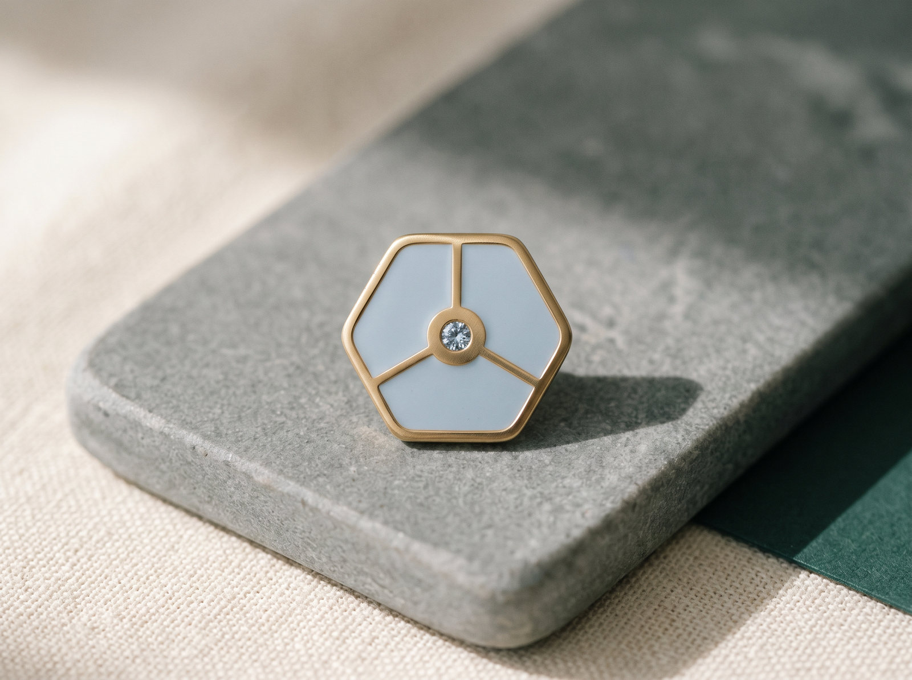
Etsy metni
Başlık 71/140
14K Gold Ice Crystal Lapel Pin for Men, Blue Enamel, Lab Grown Sapphire
Etiketler (13)
14k gold lapel pin, mens lapel pin, ice crystal pin, hexagon lapel pin, enamel lapel pin, ice blue enamel, vitreous enamel, lab grown sapphire, gold brooch for men, suit pin, christmas gift, gift for him, winter jewelry
Malzemeler
14k yellow gold, vitreous enamel, lab grown blue sapphire, 14k white gold pin stem, 14k gold safety catch
Açıklama
A gold hexagon split by three ribs into three fields of ice-blue glass enamel, with a pale blue lab-grown sapphire where the ribs meet. An ice crystal for the lapel, and a Christmas gift for him. THE PIECE 18 mm across the corners and 15.6 mm across the flats, 1.45 mm thick, with a 1.0 mm polished gold rim and rounded corners. GOLD WEIGHT 3.70 g of 14k gold, counting the 14k white gold pin stem and the safety catch. On the scale the finished piece weighs 3.91 g in total with the enamel and stones. ENAMEL Kiln-fired vitreous enamel (glass), opaque ice blue, level with the gold ribs. STONES One 1.5 mm round lab-grown sapphire in a pale ice blue, flush set in the centre disc. Mohs 9. HOW IT FASTENS One pin stem of hardened 14k white gold with a rotating safety catch, the standard fine-jewellery fastening for a brooch worn every day. HOW IT IS MADE Made to order. Cast in 14k gold in one piece, in a zinc-free gold alloy chosen for enamel. The enamel cells are cast into the gold, filled by hand and kiln-fired. Nothing is soldered after the first firing; any fitting added later is laser welded away from the enamel. The stones are set last, cold, after all firing and polishing. CARE Wipe with a soft dry cloth, or wash in warm water with a drop of mild soap. Glass enamel is hard and does not fade, but it can chip if struck against stone or metal. Keep it away from ultrasonic cleaners. No bleach or chlorine. GIFTING Arrives in a gift box, ready to give. Made to order. The processing time is shown at checkout.
Atölye kartı
Altigen R9.0 (kose-kose 18.0, kenar-kenar 15.6), plaka 1.45; cevre altin cerceve 1.0; 6 kaburga 0.8 genis, gobek D3.4 (arkadan +0.15 -> 1.6). 6 ucgen hucre, toplam 120.6 mm2 x 0.55 derin; hucre koseleri r0.4 (60 derece kose min 0.7 genislik). Kose r0.5. Igne hatti y=+2.0, mafsal x=-5.5, kilit kaidesi x=+5.5; igne 13.5 mm. Model +0.2.
Tek parca 14K CINKOSUZ dokum: altigen plaka + kaburgalar + gobek + yukseltilmis mafsal kulaklari + kilit kaynak kaidesi. Lehim yok. Taban 1.45 - 0.55 = 0.90 (karsi-mine yok). Tum yuz mineli oldugu icin kilit, D1.6 x 1.2 ayak + 2.6 x 2.6 x 0.8 pedli dokum kaideye lazerle: kaynak yuzu mineye 3D en az 0.90 + 1.2 + 0.8 = 2.9 mm (KANIT >=1.5). Lab mavi safir gobekte, tum pisirimlerden sonra.
Tezgâh sırası
- 1. CAD: bitmis + 0.2; hucre tabani r0.15 fileto, 60 derece hucre koseleri r0.4; gobek pilot delik D0.9; kaide ve uzun kulaklar arka yuzde.
- 2. Recine baski; besleme kilit kaidesinden degil, plaka kenarindan (kaide ayagi ince).
- 3. Yatirim + yakma; CINKOSUZ 14K vakum dokum; gozenek kontrolu (6 hucre tabani), gozenekli hurda.
- 4. Tesviye; plaka 1.45, hucre 0.55; kaburga 0.8 kumpas.
- 5. Hucre temizligi; gobek tas yuvasi on frezesi.
- 6. Yuzey zenginlestirme 3-4 dongu (~593 C + %10 H2SO4).
- 7. Karsi-mine: gerekmez (taban 0.90).
- 8. Islak dolum opak buz mavisi; Pisirim 1: 780 C, 75 sn.
- 9. Pisirim 2: 780 C, 75 sn.
- 10. Tasla zimpara, mine-kaburga es seviye.
- 11. Pisirim 3: 770 C, 50 sn parlatma. Toplam 3.
- 12. Asit yok; notr temizlik.
- 13. Gobege 1.5 lab mavi safir, burnisorle flush (cekic yok).
- 14. Lazer: kaide pedine 460-12 kilit; Plasti-tac + parlak gumus siper; dusuk guc, hava sogutma.
- 15. Igne 14KW 13.5 mm burgu-sertlestir, percin.
- 16. Cila (cerceve), QC: tartim 3.83 g +/- %5, 6 hucre pinhole, kilit testi.
Malzeme listesi
- Alasim: 14K sari CINKOSUZ mine-uyumlu alasim (Otto Frei 846-180 'No Zinc' master alloy + 24K ile 14K; dokumhaneden yazili Zn=0 sertifikasi + solidus/DSC degeri), vakum/inert gaz dokum. Dokum govde (kulak/ped dahil) 3.474 g x 1.15 = 4.00 g dokum metali (yolluk/kayip payi).
- Mine tozu: kursunsuz opak buz mavisi ~415 mg (pisirilmis 166 mg x 2.5).
- Tas: 1 x 1.5 mm lab grown blue sapphire = 0.0143 ct.
- Bulgular (satin alma): 14K beyaz igne 0.86 mm (Otto Frei 601-14, 38.1 mm'den 13.5 mm'ye kesilir) 0.118 g; 14KY emniyetli doner kilit Otto Frei 460-12 0.22 g (tahmin); 14K percin teli 0.8 mm x 3.0 0.020 g. Toplam bulgu 0.357 g (altin grama dahil).
Arıza modları
| Arıza | Tasarım nasıl önlüyor |
|---|---|
| Genis mine alaninda (121 mm2) firinda plaka carpilmasi | 6 kaburga + cerceve plakayi rijitler; taban 0.90; 780 C ust sinir; sehpada duz destek. |
| Dar 60 derece hucre kosesinde mine dolmamasi / catlak | Koseler r0.4 (min genislik 0.7). |
| Kilit kaynaginin mineyi kavurmasi (yuzun tamami mine) | Kaynak yuzu 2.9 mm yukseltilmis kaidede; maske + siper; kuponla dogrulama. |
| Uzun mafsal kulaginin igne kaldiracindan egilmesi | Kulak 1.0 x 2.4 kesit (L5 >=1.0), 4.2 boy; igne yalniz 13.5. |
Tolerans
| Kural | Değer | |
|---|---|---|
| L1 karat 14K (KANIT karat_policy: 14K vitreous 'marginal', not_viable degil; 18K'ye gecilmez) | 14K sari | ✓ |
| L2 opak vitreous champleve, hucreler dokumde birakilir (oyma degil) | opak, kursunsuz; hucreler mumda modelli | ✓ |
| L2 hucre derinligi 0.5-0.6 | 0.55 | ✓ |
| L2 hucre genisligi >=0.7 ve derinlik <=2x genislik | min genislik 0.7; oran 0.79 | ✓ |
| L2 hucre tabani >=0.8 (karsi-mine gerekmez) | 0.9 | ✓ |
| L2 hucre arasi ve cevre altin duvar >=0.70 | 0.8 | ✓ |
| L2 hucre icinde kabartma/doku yok | duz, filetolu taban (r0.15) | ✓ |
| L2 palet + renk sayisi | 1 renk: buz mavisi | ✓ |
| L2 pisirim <=4 dongu, <=790 C (KANIT) | 3 pisirim, 770-780 C | ✓ |
| L3 ilk pisirimden sonra hamlac lehimi yok | lehim baglantisi 0; mafsal kulaklari govdeyle tek dokum; kilit pisirim sonrasi lazerle | ✓ |
| L3 pisirim sonrasi lazer, ciplak ped, mineye >=1.5 | kaide pedi, 3D mesafe 2.9 mm (duzlemde degil; bkz open_questions) | ✓ |
| L4 lab mavi safir (buz mavisi) 1.3-2.0 flush, <=7 | 1 x 1.5 | ✓ |
| L4 ev sahibi (KANIT 1.5) + alttan delik | 1.6, D0.9 | ✓ |
| L4 yanal duvar >=0.35 / mine kenarina >=0.5 | 0.95 / 0.95 | ✓ |
| L5 dekoratif >=0.6 / yapisal >=0.8 | kaburga 0.8, cerceve 1.0; plaka 1.45 | ✓ |
| L5 mafsal kesiti >=1.0 | kulak 1.0 x 2.4 x 4.2 | ✓ |
| L5 aciklik | aciklik yok | ✓ |
| L5 model +0.2 / uc r>=0.4 | +0.2; altigen koseleri r0.5 | ✓ |
| L6 hollow (yalniz kolye/bros, asla mineyle degil) | kati govde, hollow yok; 'solid' basliga girebilir | ✓ |
| L7 bros bandi 3.0-4.2 g altin (bulgu dahil) | 3.832 g (govde 3.474 + bulgu 0.357); tavana pay 0.37 g | ✓ |
| L10 <=30 tek igne; mafsal ustte; doner kilit | 18 mm, tek igne 13.5; igne hatti merkezin 2.0 mm ustunde; 460-12 | ✓ |
| L11 pinnate yok; buz yalniz altigen kristal; duz 6 kollu kar tanesi yok | dis hat duz altigen levha, kol yok | ✓ |
| L12 tek kahraman ozellik | buz mavisi altigen + 6 kaburga | ✓ |
Görsel promptları (16)
- 01Hero / arama küçük resmi: tek ürün, marka natürmortu, 4:3.Referanssız
Quiet luxury editorial still-life product photography. Warm ivory linen ground, honed grey stone slab, a sliver of deep jade-green matte card. Soft directional window light from upper left, long soft shadow, shallow depth of field. Solid yellow gold with warm antique tone. Restrained heirloom mood. No text, no logo, no glitter, no Christmas decoration. The piece: Men's lapel pin in 14K yellow gold: a flat hexagon 18 mm across the corners and 15.6 mm across the flats, with a flat side at the top and rounded corners. Three straight 0.8 mm gold ribs run from a 3.4 mm centre disc to three alternate corners and divide the face into three diamond-shaped fields of opaque ice-blue enamel (a soft pale powder blue with a grey cast), level with the gold. A 1.0 mm polished gold rim frames the hexagon. The centre disc holds one 1.5 mm pale ice-blue lab grown sapphire, flush-set. Back: 14K white gold pin stem with a rotating safety catch. The stones are exactly these and no others: one 1.5 mm round pale ice-blue lab-grown sapphire flush-set in the centre disc. No other stone and no empty setting anywhere on the piece. The only colour on the piece is opaque ice-blue enamel filling the three diamond-shaped fields of the hexagon; every other surface is yellow gold. The brooch lies face up, centred on the honed grey stone slab, pin hidden behind it; exactly one brooch. Seen from about 30 degrees above with a 100 mm macro lens, the piece in razor-sharp focus, filling about 45 percent of the frame width, centred with generous empty margin on all four sides. No people and no hands.
Alt metin 14K gold hexagon ice crystal lapel pin with ice blue enamel
- 02Takılı hâli: ölçek ve duruş. Hero'dan sonra dönüşümü en çok etkileyen kare.Referans: hero kırpımı
Quiet luxury editorial photography in warm ivory, stone grey and deep jade-green tones, soft directional window light from the upper left, true colour, fine film grain, no heavy retouching. No text, no logo, no watermark, no glitter. The attached reference image is a crop of this exact piece: keep its shape, proportions, gold colour, enamel colours and stones exactly as in the reference. The piece: Men's lapel pin in 14K yellow gold: a flat hexagon 18 mm across the corners and 15.6 mm across the flats, with a flat side at the top and rounded corners. Three straight 0.8 mm gold ribs run from a 3.4 mm centre disc to three alternate corners and divide the face into three diamond-shaped fields of opaque ice-blue enamel (a soft pale powder blue with a grey cast), level with the gold. A 1.0 mm polished gold rim frames the hexagon. The centre disc holds one 1.5 mm pale ice-blue lab grown sapphire, flush-set. Back: 14K white gold pin stem with a rotating safety catch. The stones are exactly these and no others: one 1.5 mm round pale ice-blue lab-grown sapphire flush-set in the centre disc. No other stone and no empty setting anywhere on the piece. The only colour on the piece is opaque ice-blue enamel filling the three diamond-shaped fields of the hexagon; every other surface is yellow gold. Pinned through the left lapel of a man's charcoal grey wool flannel suit jacket at the buttonhole, white shirt, no tie, cropped from collar to chest so no face shows; exactly one pin on the jacket and no pocket square; true to scale, the main element measures about 18 mm across.
Alt metin 14K gold hexagon ice crystal lapel pin with ice blue enamel, worn
- 03Makro işçilik: fiyatı meşrulaştıran detay (mine yüzeyi, flush taş, kenar bitimi).Referans: hero kırpımı
Quiet luxury editorial photography in warm ivory, stone grey and deep jade-green tones, soft directional window light from the upper left, true colour, fine film grain, no heavy retouching. No text, no logo, no watermark, no glitter. The attached reference image is a crop of this exact piece: keep its shape, proportions, gold colour, enamel colours and stones exactly as in the reference. The piece: Men's lapel pin in 14K yellow gold: a flat hexagon 18 mm across the corners and 15.6 mm across the flats, with a flat side at the top and rounded corners. Three straight 0.8 mm gold ribs run from a 3.4 mm centre disc to three alternate corners and divide the face into three diamond-shaped fields of opaque ice-blue enamel (a soft pale powder blue with a grey cast), level with the gold. A 1.0 mm polished gold rim frames the hexagon. The centre disc holds one 1.5 mm pale ice-blue lab grown sapphire, flush-set. Back: 14K white gold pin stem with a rotating safety catch. The stones are exactly these and no others: one 1.5 mm round pale ice-blue lab-grown sapphire flush-set in the centre disc. No other stone and no empty setting anywhere on the piece. The only colour on the piece is opaque ice-blue enamel filling the three diamond-shaped fields of the hexagon; every other surface is yellow gold. Extreme close-up macro, 100 mm macro lens: The centre disc with its flush-set pale ice-blue lab-grown sapphire where the three gold ribs meet, and the ice-blue enamel fields. The rest of the piece falls away into soft focus on warm-ivory linen.
Alt metin Close-up of the centre sapphire where the three gold ribs meet
- 04Elde ölçek: mm'yi parmak ucuna çevirir, 'beklediğimden küçük' iadesini önler.Referans: hero kırpımı
Quiet luxury editorial photography in warm ivory, stone grey and deep jade-green tones, soft directional window light from the upper left, true colour, fine film grain, no heavy retouching. No text, no logo, no watermark, no glitter. The attached reference image is a crop of this exact piece: keep its shape, proportions, gold colour, enamel colours and stones exactly as in the reference. The piece: Men's lapel pin in 14K yellow gold: a flat hexagon 18 mm across the corners and 15.6 mm across the flats, with a flat side at the top and rounded corners. Three straight 0.8 mm gold ribs run from a 3.4 mm centre disc to three alternate corners and divide the face into three diamond-shaped fields of opaque ice-blue enamel (a soft pale powder blue with a grey cast), level with the gold. A 1.0 mm polished gold rim frames the hexagon. The centre disc holds one 1.5 mm pale ice-blue lab grown sapphire, flush-set. Back: 14K white gold pin stem with a rotating safety catch. The stones are exactly these and no others: one 1.5 mm round pale ice-blue lab-grown sapphire flush-set in the centre disc. No other stone and no empty setting anywhere on the piece. The only colour on the piece is opaque ice-blue enamel filling the three diamond-shaped fields of the hexagon; every other surface is yellow gold. Close-up for scale against a plain warm-ivory background thrown softly out of focus: the brooch resting face up on the open palm of a woman's hand; true to scale, the main element measures about 18 mm across, a fingertip is about 16 mm wide; it is the only jewellery in the image; anatomically correct hands with five fingers, short natural unpolished nails.
Alt metin 14K gold hexagon ice crystal lapel pin with ice blue enamel, held between fingers for scale
- 05Arka ve bulgular: dolu gövde, kilit / çivi / iğne; sağlamlık sorusunu cevaplar.Referans: hero kırpımı
Quiet luxury editorial photography in warm ivory, stone grey and deep jade-green tones, soft directional window light from the upper left, true colour, fine film grain, no heavy retouching. No text, no logo, no watermark, no glitter. The attached reference image is a crop of this exact piece: keep its shape, proportions, gold colour, enamel colours and stones exactly as in the reference. The piece: Men's lapel pin in 14K yellow gold: a flat hexagon 18 mm across the corners and 15.6 mm across the flats, with a flat side at the top and rounded corners. Three straight 0.8 mm gold ribs run from a 3.4 mm centre disc to three alternate corners and divide the face into three diamond-shaped fields of opaque ice-blue enamel (a soft pale powder blue with a grey cast), level with the gold. A 1.0 mm polished gold rim frames the hexagon. The centre disc holds one 1.5 mm pale ice-blue lab grown sapphire, flush-set. Back: 14K white gold pin stem with a rotating safety catch. The stones are exactly these and no others: one 1.5 mm round pale ice-blue lab-grown sapphire flush-set in the centre disc. No other stone and no empty setting anywhere on the piece. The only colour on the piece is opaque ice-blue enamel filling the three diamond-shaped fields of the hexagon; every other surface is yellow gold. The back of the piece, top-down on honed grey stone: The flat back of the hexagon with the 14K white gold pin stem, the hinge and the rotating safety catch.
Alt metin Back of the lapel pin showing the pin stem and safety catch
- 06Tam boy / çift / mekanizma: uzunluk, ayar ve ne geldiğini tek karede gösterir.Referans: hero kırpımı
Quiet luxury editorial photography in warm ivory, stone grey and deep jade-green tones, soft directional window light from the upper left, true colour, fine film grain, no heavy retouching. No text, no logo, no watermark, no glitter. The attached reference image is a crop of this exact piece: keep its shape, proportions, gold colour, enamel colours and stones exactly as in the reference. The piece: Men's lapel pin in 14K yellow gold: a flat hexagon 18 mm across the corners and 15.6 mm across the flats, with a flat side at the top and rounded corners. Three straight 0.8 mm gold ribs run from a 3.4 mm centre disc to three alternate corners and divide the face into three diamond-shaped fields of opaque ice-blue enamel (a soft pale powder blue with a grey cast), level with the gold. A 1.0 mm polished gold rim frames the hexagon. The centre disc holds one 1.5 mm pale ice-blue lab grown sapphire, flush-set. Back: 14K white gold pin stem with a rotating safety catch. The stones are exactly these and no others: one 1.5 mm round pale ice-blue lab-grown sapphire flush-set in the centre disc. No other stone and no empty setting anywhere on the piece. The only colour on the piece is opaque ice-blue enamel filling the three diamond-shaped fields of the hexagon; every other surface is yellow gold. The brooch lying face down on honed grey stone with its pin stem swung open out of the safety catch so the full length of the pin, the hinge joint and the open catch are all visible, top-down.
Alt metin 14K gold hexagon ice crystal lapel pin with ice blue enamel, pin open
- 07Yan profil: kalınlık ve kütle, düz baskı değil gerçek altın olduğunu gösterir.Referans: hero kırpımı
Quiet luxury editorial photography in warm ivory, stone grey and deep jade-green tones, soft directional window light from the upper left, true colour, fine film grain, no heavy retouching. No text, no logo, no watermark, no glitter. The attached reference image is a crop of this exact piece: keep its shape, proportions, gold colour, enamel colours and stones exactly as in the reference. The piece: Men's lapel pin in 14K yellow gold: a flat hexagon 18 mm across the corners and 15.6 mm across the flats, with a flat side at the top and rounded corners. Three straight 0.8 mm gold ribs run from a 3.4 mm centre disc to three alternate corners and divide the face into three diamond-shaped fields of opaque ice-blue enamel (a soft pale powder blue with a grey cast), level with the gold. A 1.0 mm polished gold rim frames the hexagon. The centre disc holds one 1.5 mm pale ice-blue lab grown sapphire, flush-set. Back: 14K white gold pin stem with a rotating safety catch. The stones are exactly these and no others: one 1.5 mm round pale ice-blue lab-grown sapphire flush-set in the centre disc. No other stone and no empty setting anywhere on the piece. The only colour on the piece is opaque ice-blue enamel filling the three diamond-shaped fields of the hexagon; every other surface is yellow gold. Side profile at eye level on honed grey stone, the camera level with the piece: A flat hexagon plate 1.45 mm thick.
Alt metin Side profile of the lapel pin showing its thickness
- 08Kış yaşam stili: sezonu Noel dekoru olmadan kurar.Referans: hero kırpımı
Quiet luxury editorial photography in warm ivory, stone grey and deep jade-green tones, soft directional window light from the upper left, true colour, fine film grain, no heavy retouching. No text, no logo, no watermark, no glitter. The attached reference image is a crop of this exact piece: keep its shape, proportions, gold colour, enamel colours and stones exactly as in the reference. The piece: Men's lapel pin in 14K yellow gold: a flat hexagon 18 mm across the corners and 15.6 mm across the flats, with a flat side at the top and rounded corners. Three straight 0.8 mm gold ribs run from a 3.4 mm centre disc to three alternate corners and divide the face into three diamond-shaped fields of opaque ice-blue enamel (a soft pale powder blue with a grey cast), level with the gold. A 1.0 mm polished gold rim frames the hexagon. The centre disc holds one 1.5 mm pale ice-blue lab grown sapphire, flush-set. Back: 14K white gold pin stem with a rotating safety catch. The stones are exactly these and no others: one 1.5 mm round pale ice-blue lab-grown sapphire flush-set in the centre disc. No other stone and no empty setting anywhere on the piece. The only colour on the piece is opaque ice-blue enamel filling the three diamond-shaped fields of the hexagon; every other surface is yellow gold. Outdoors in pale winter light: a man in a navy wool overcoat with the pin through the left lapel, a grey scarf, cropped from collar to chest so no face shows; exactly one pin.
Alt metin 14K gold hexagon ice crystal lapel pin with ice blue enamel, styled with winter knitwear
- 09Hediye kutusu: Noel alıcısının ilk sorusu, hediyeye hazır mı?Referans: hero kırpımı
Quiet luxury editorial photography in warm ivory, stone grey and deep jade-green tones, soft directional window light from the upper left, true colour, fine film grain, no heavy retouching. No text, no logo, no watermark, no glitter. The attached reference image is a crop of this exact piece: keep its shape, proportions, gold colour, enamel colours and stones exactly as in the reference. The piece: Men's lapel pin in 14K yellow gold: a flat hexagon 18 mm across the corners and 15.6 mm across the flats, with a flat side at the top and rounded corners. Three straight 0.8 mm gold ribs run from a 3.4 mm centre disc to three alternate corners and divide the face into three diamond-shaped fields of opaque ice-blue enamel (a soft pale powder blue with a grey cast), level with the gold. A 1.0 mm polished gold rim frames the hexagon. The centre disc holds one 1.5 mm pale ice-blue lab grown sapphire, flush-set. Back: 14K white gold pin stem with a rotating safety catch. The stones are exactly these and no others: one 1.5 mm round pale ice-blue lab-grown sapphire flush-set in the centre disc. No other stone and no empty setting anywhere on the piece. The only colour on the piece is opaque ice-blue enamel filling the three diamond-shaped fields of the hexagon; every other surface is yellow gold. Top-down: the brooch face up inside a small open square gift box in plain warm-ivory card with a soft ivory insert, the lid set beside it, a length of narrow deep jade-green ribbon untied beside the box, on honed grey stone. No branding, no printed pattern, no tissue paper, no Christmas decoration, exactly one box.
Alt metin 14K gold hexagon ice crystal lapel pin with ice blue enamel in a gift box
- 10Gerçek renk: nötr gün ışığında altın ve mine rengi; renk kaynaklı iadeyi azaltır.Referans: hero kırpımı
Quiet luxury editorial photography in warm ivory, stone grey and deep jade-green tones, soft directional window light from the upper left, true colour, fine film grain, no heavy retouching. No text, no logo, no watermark, no glitter. The attached reference image is a crop of this exact piece: keep its shape, proportions, gold colour, enamel colours and stones exactly as in the reference. The piece: Men's lapel pin in 14K yellow gold: a flat hexagon 18 mm across the corners and 15.6 mm across the flats, with a flat side at the top and rounded corners. Three straight 0.8 mm gold ribs run from a 3.4 mm centre disc to three alternate corners and divide the face into three diamond-shaped fields of opaque ice-blue enamel (a soft pale powder blue with a grey cast), level with the gold. A 1.0 mm polished gold rim frames the hexagon. The centre disc holds one 1.5 mm pale ice-blue lab grown sapphire, flush-set. Back: 14K white gold pin stem with a rotating safety catch. The stones are exactly these and no others: one 1.5 mm round pale ice-blue lab-grown sapphire flush-set in the centre disc. No other stone and no empty setting anywhere on the piece. The only colour on the piece is opaque ice-blue enamel filling the three diamond-shaped fields of the hexagon; every other surface is yellow gold. Colour-accurate reference shot: the piece alone, top-down on plain matte white-ivory paper under even neutral north daylight, no shadow drama, no props, the piece centred and filling half the frame.
Alt metin 14K gold hexagon ice crystal lapel pin with ice blue enamel in neutral daylight, true colour
- 11Ölçü grafiği tabanı: sağ üçte bir boş; mm etiketleri sonra eklenir.Referans: hero kırpımı
Quiet luxury editorial photography in warm ivory, stone grey and deep jade-green tones, soft directional window light from the upper left, true colour, fine film grain, no heavy retouching. No text, no logo, no watermark, no glitter. The attached reference image is a crop of this exact piece: keep its shape, proportions, gold colour, enamel colours and stones exactly as in the reference. The piece: Men's lapel pin in 14K yellow gold: a flat hexagon 18 mm across the corners and 15.6 mm across the flats, with a flat side at the top and rounded corners. Three straight 0.8 mm gold ribs run from a 3.4 mm centre disc to three alternate corners and divide the face into three diamond-shaped fields of opaque ice-blue enamel (a soft pale powder blue with a grey cast), level with the gold. A 1.0 mm polished gold rim frames the hexagon. The centre disc holds one 1.5 mm pale ice-blue lab grown sapphire, flush-set. Back: 14K white gold pin stem with a rotating safety catch. The stones are exactly these and no others: one 1.5 mm round pale ice-blue lab-grown sapphire flush-set in the centre disc. No other stone and no empty setting anywhere on the piece. The only colour on the piece is opaque ice-blue enamel filling the three diamond-shaped fields of the hexagon; every other surface is yellow gold. The piece alone, top-down on plain warm-ivory paper, placed in the left two thirds of the frame; the right third is empty paper for dimension labels to be added later; even soft light, no props.
Alt metin 14K gold hexagon ice crystal lapel pin with ice blue enamel with space for dimensions
- 12El işçiliği: siparişe üretim hikâyesi, tezgâhta parça.Referans: hero kırpımı
Quiet luxury editorial photography in warm ivory, stone grey and deep jade-green tones, soft directional window light from the upper left, true colour, fine film grain, no heavy retouching. No text, no logo, no watermark, no glitter. The attached reference image is a crop of this exact piece: keep its shape, proportions, gold colour, enamel colours and stones exactly as in the reference. The piece: Men's lapel pin in 14K yellow gold: a flat hexagon 18 mm across the corners and 15.6 mm across the flats, with a flat side at the top and rounded corners. Three straight 0.8 mm gold ribs run from a 3.4 mm centre disc to three alternate corners and divide the face into three diamond-shaped fields of opaque ice-blue enamel (a soft pale powder blue with a grey cast), level with the gold. A 1.0 mm polished gold rim frames the hexagon. The centre disc holds one 1.5 mm pale ice-blue lab grown sapphire, flush-set. Back: 14K white gold pin stem with a rotating safety catch. The stones are exactly these and no others: one 1.5 mm round pale ice-blue lab-grown sapphire flush-set in the centre disc. No other stone and no empty setting anywhere on the piece. The only colour on the piece is opaque ice-blue enamel filling the three diamond-shaped fields of the hexagon; every other surface is yellow gold. The finished piece lying on a worn wooden jeweller's bench pin beside a small porcelain dish of ice-blue enamel powder, a fine sable brush and a pair of brass tweezers, warm lamp light, shallow depth of field, the piece in sharp focus; no hands.
Alt metin 14K gold hexagon ice crystal lapel pin with ice blue enamel on a jeweller's bench
- 13Motifin anlamı: sol üçte bir boş; sembol hikâyesi metni sonra eklenir.Referans: hero kırpımı
Quiet luxury editorial photography in warm ivory, stone grey and deep jade-green tones, soft directional window light from the upper left, true colour, fine film grain, no heavy retouching. No text, no logo, no watermark, no glitter. The attached reference image is a crop of this exact piece: keep its shape, proportions, gold colour, enamel colours and stones exactly as in the reference. The piece: Men's lapel pin in 14K yellow gold: a flat hexagon 18 mm across the corners and 15.6 mm across the flats, with a flat side at the top and rounded corners. Three straight 0.8 mm gold ribs run from a 3.4 mm centre disc to three alternate corners and divide the face into three diamond-shaped fields of opaque ice-blue enamel (a soft pale powder blue with a grey cast), level with the gold. A 1.0 mm polished gold rim frames the hexagon. The centre disc holds one 1.5 mm pale ice-blue lab grown sapphire, flush-set. Back: 14K white gold pin stem with a rotating safety catch. The stones are exactly these and no others: one 1.5 mm round pale ice-blue lab-grown sapphire flush-set in the centre disc. No other stone and no empty setting anywhere on the piece. The only colour on the piece is opaque ice-blue enamel filling the three diamond-shaped fields of the hexagon; every other surface is yellow gold. The piece alone, top-down on a deep jade-green matte card, placed in the right two thirds of the frame; the left third is empty card for a caption to be added later; soft directional light.
Alt metin 14K gold hexagon ice crystal lapel pin with ice blue enamel on a deep green card
- 14Yıl boyu takılır: 'yalnız Noel' itirazını kırar.Referans: hero kırpımı
Quiet luxury editorial photography in warm ivory, stone grey and deep jade-green tones, soft directional window light from the upper left, true colour, fine film grain, no heavy retouching. No text, no logo, no watermark, no glitter. The attached reference image is a crop of this exact piece: keep its shape, proportions, gold colour, enamel colours and stones exactly as in the reference. The piece: Men's lapel pin in 14K yellow gold: a flat hexagon 18 mm across the corners and 15.6 mm across the flats, with a flat side at the top and rounded corners. Three straight 0.8 mm gold ribs run from a 3.4 mm centre disc to three alternate corners and divide the face into three diamond-shaped fields of opaque ice-blue enamel (a soft pale powder blue with a grey cast), level with the gold. A 1.0 mm polished gold rim frames the hexagon. The centre disc holds one 1.5 mm pale ice-blue lab grown sapphire, flush-set. Back: 14K white gold pin stem with a rotating safety catch. The stones are exactly these and no others: one 1.5 mm round pale ice-blue lab-grown sapphire flush-set in the centre disc. No other stone and no empty setting anywhere on the piece. The only colour on the piece is opaque ice-blue enamel filling the three diamond-shaped fields of the hexagon; every other surface is yellow gold. Everyday wear, no season: the pin on the lapel of a man's unstructured stone-grey linen blazer over a white t-shirt, soft daylight, cropped from collar to chest; exactly one pin.
Alt metin 14K gold hexagon ice crystal lapel pin with ice blue enamel, everyday wear
- 15Hediye anı: duygu; Noel satın alma niyetine bağlar.Referans: hero kırpımı
Quiet luxury editorial photography in warm ivory, stone grey and deep jade-green tones, soft directional window light from the upper left, true colour, fine film grain, no heavy retouching. No text, no logo, no watermark, no glitter. The attached reference image is a crop of this exact piece: keep its shape, proportions, gold colour, enamel colours and stones exactly as in the reference. The piece: Men's lapel pin in 14K yellow gold: a flat hexagon 18 mm across the corners and 15.6 mm across the flats, with a flat side at the top and rounded corners. Three straight 0.8 mm gold ribs run from a 3.4 mm centre disc to three alternate corners and divide the face into three diamond-shaped fields of opaque ice-blue enamel (a soft pale powder blue with a grey cast), level with the gold. A 1.0 mm polished gold rim frames the hexagon. The centre disc holds one 1.5 mm pale ice-blue lab grown sapphire, flush-set. Back: 14K white gold pin stem with a rotating safety catch. The stones are exactly these and no others: one 1.5 mm round pale ice-blue lab-grown sapphire flush-set in the centre disc. No other stone and no empty setting anywhere on the piece. The only colour on the piece is opaque ice-blue enamel filling the three diamond-shaped fields of the hexagon; every other surface is yellow gold. A gift being given: two pairs of hands across a pale oak table, one pair holding out the small open warm-ivory gift box with the piece visible inside, the other reaching for it, soft warm window light, sleeves of ivory and grey knitwear; exactly one box and one piece of jewellery; anatomically correct hands with five fingers, short natural unpolished nails.
Alt metin 14K gold hexagon ice crystal lapel pin with ice blue enamel given as a gift
- 16Mağaza ızgarası / Pinterest: koyu jade zeminde yüksek kontrast kare.Referans: hero kırpımı
Quiet luxury editorial photography in warm ivory, stone grey and deep jade-green tones, soft directional window light from the upper left, true colour, fine film grain, no heavy retouching. No text, no logo, no watermark, no glitter. The attached reference image is a crop of this exact piece: keep its shape, proportions, gold colour, enamel colours and stones exactly as in the reference. The piece: Men's lapel pin in 14K yellow gold: a flat hexagon 18 mm across the corners and 15.6 mm across the flats, with a flat side at the top and rounded corners. Three straight 0.8 mm gold ribs run from a 3.4 mm centre disc to three alternate corners and divide the face into three diamond-shaped fields of opaque ice-blue enamel (a soft pale powder blue with a grey cast), level with the gold. A 1.0 mm polished gold rim frames the hexagon. The centre disc holds one 1.5 mm pale ice-blue lab grown sapphire, flush-set. Back: 14K white gold pin stem with a rotating safety catch. The stones are exactly these and no others: one 1.5 mm round pale ice-blue lab-grown sapphire flush-set in the centre disc. No other stone and no empty setting anywhere on the piece. The only colour on the piece is opaque ice-blue enamel filling the three diamond-shaped fields of the hexagon; every other surface is yellow gold. Top-down flat lay of the piece centred on a deep jade-green matte card with a narrow border of warm-ivory linen at the top edge, crisp soft light, the piece filling about 40 percent of the frame so a square crop keeps all of it.
Alt metin 14K gold hexagon ice crystal lapel pin with ice blue enamel, flat lay on deep green
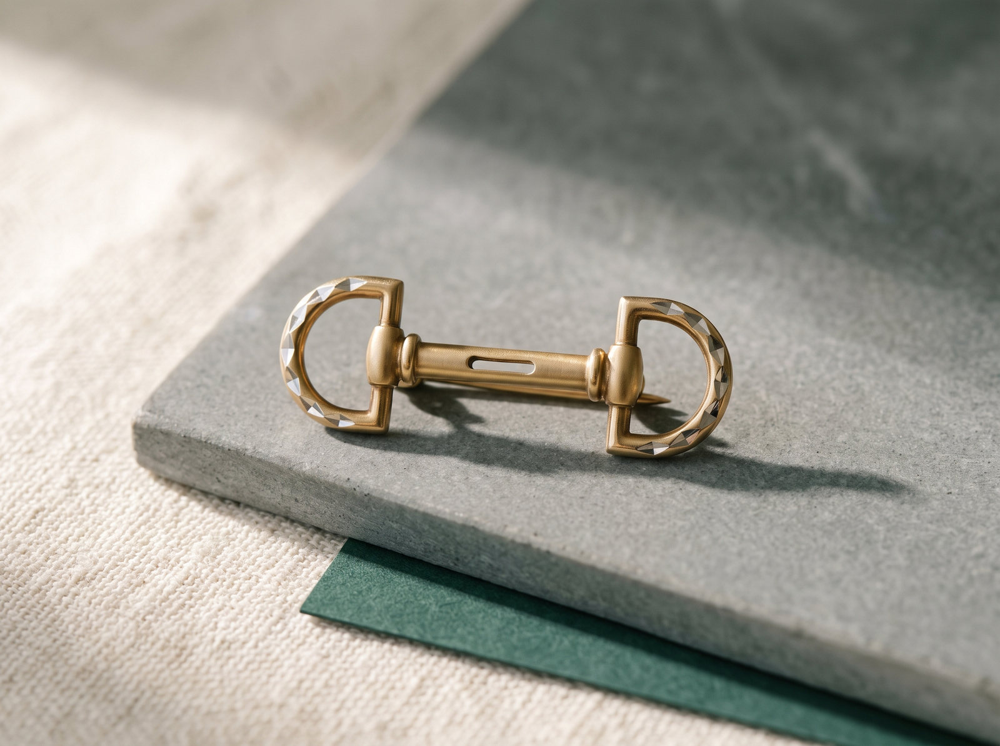
Etsy metni
Başlık 81/140
14K Gold Snaffle Bit Lapel Pin for Men, Openwork Equestrian Pin, Horse Lover Gift
Etiketler (13)
14k gold lapel pin, mens lapel pin, snaffle bit pin, equestrian pin, horse lover gift, gold brooch for men, suit pin, riding jewelry, derby jewelry, christmas gift, gift for him, solid gold pin, equestrian gift
Malzemeler
14k yellow gold, 14k white gold pin stem, 14k gold safety catch
Açıklama
A snaffle bit for the lapel: two open D-shaped rings with bright cut facets, joined by a honed gold bar. An equestrian Christmas gift for him that goes from the stable to the wedding. THE PIECE 30 mm wide and 13 mm tall. Each D ring is 13 mm tall with its straight side to the centre and six diamond-cut facets around its curve. The 3.0 mm bar has an open slot along its middle and a round collar at each end. GOLD WEIGHT 4.10 g of 14k gold, counting the 14k white gold pin stem and the safety catch. On the scale the finished piece weighs 4.10 g in total with everything on it. HOW IT FASTENS Two pin stems of hardened 14k white gold with a rotating safety catch, the standard fine-jewellery fastening for a brooch worn every day. HOW IT IS MADE Made to order. Cast in 14k gold in one piece. Two pins keep a 30 mm piece level on the lapel. CARE Wipe with a soft dry cloth, or wash in warm water with a drop of mild soap and a soft brush. Take it off for swimming and cleaning. No bleach or chlorine. GIFTING Arrives in a gift box, ready to give. Made to order. The processing time is shown at checkout.
Atölye kartı
30.0 x 13.0 mm. D-halka: yay orta yaricap 5.75, kesit 1.5 x 1.4; duz kenar 11.5 x 2.2 x 1.6. Bar 14.8 x 3.0 x 1.6, yarik 7.0 x 0.8. Yakalar D4.0 x 1.6. Fasetler 6/halka, V 0.4 x 2.0. Igne hatti y=+2.5; mafsal sol duz kenar (x=-8.5), kilit sag duz kenar (x=+8.5); igne 19.5 mm. Model +0.2, faset yuzu +0.1.
TEK PARCA 14K dokum: iki halka, bar ve yakalar kaynasik; ic ice gecen hareketli birlesim YOK, kapanma lehimi/kaynagi YOK. Mine yok, tas yok, firina girmez. Mafsal kulaklari sol duz kenarla tek dokum; kilit satin alma, lazer. Hollow yok.
Tezgâh sırası
- 1. CAD: tek govde (halka-bar-yaka birlesik), bitmis + 0.2, faset yuzlerine +0.1; yarik 0.8 (model 0.6).
- 2. Recine baski; besleme bar arkasi ortasindan, iki halka yayina yardimci kanal.
- 3. Yatirim + yakma; 14K standart alasim vakum dokum.
- 4. Tesviye; halka kesiti 1.5 x 1.4, duz kenar 2.2 x 1.6 kumpas; yarik 0.8 pin-gauge.
- 5. Elmas tiras: halka basina 6 faset (V 0.4); bar honlama.
- 6. Lazer: sag duz kenara 460-12 kilit (taban 2.2'ye egelenir).
- 7. Igne 14KW 19.5 mm burgu-sertlestir, percin.
- 8. Cila; QC: tartim 3.60 g +/- %5, kilit testi, kumas testi.
Malzeme listesi
- Alasim: 14K sari standart dokum alasimi (minesiz parca; firina girmez), vakum dokum. Dokum govde (kulak/ped dahil) 3.199 g x 1.15 = 3.68 g dokum metali (yolluk/kayip payi).
- Mine tozu: yok.
- Tas: yok.
- Bulgular (satin alma): 14K beyaz igne 0.86 mm (Otto Frei 601-14, 38.1 mm'den 19.5 mm'ye kesilir) 0.163 g; 14KY emniyetli doner kilit Otto Frei 460-12 0.22 g (tahmin); 14K percin teli 0.8 mm x 3.0 0.020 g. Toplam bulgu 0.403 g (altin grama dahil).
Arıza modları
| Arıza | Tasarım nasıl önlüyor |
|---|---|
| Hareketli halkalarin yakada dikey eksen etrafinda donup disari bakmasi (orijinal tasarim) | Tek parca sabit dokum; halkalar donmez. |
| Gecme halkanin bar gozune sigmamasi (orijinal: halka capraz kesiti 2.19 > bar) | Gecme yok; dokulebilir tek govde (KANIT: gecmeli parcalar kayip mumla dokulemez). |
| Kapanma lehim dikisinin faset uzerinde cizgi olarak gorunmesi | Kapanma yok; fasetler kesintisiz yuzeyde. |
| Kilit tabaninin 2.2 mm duz kenardan tasmasi | Taban 2.2'ye egelenir; QC'de onden gorunurluk kontrolu. |
Tolerans
| Kural | Değer | |
|---|---|---|
| L1 karat 14K (KANIT karat_policy: 14K vitreous 'marginal', not_viable degil; 18K'ye gecilmez) | 14K sari | ✓ |
| L2 mine | mine yok - uygulanmaz | ✓ |
| L3 birlestirme | tek parca dokum, mafsal kulaklari dokum, kilit lazer; lehim 0 | ✓ |
| L4 tas | tas yok - uygulanmaz | ✓ |
| L5 dekoratif >=0.6 / yapisal >=0.8 | halka 1.5 x 1.4 (faset sonrasi >=1.0), bar 3.0 x 1.6 | ✓ |
| L5 mafsal kesiti >=1.0 | kulak 1.0 x 2.0 x 2.2 | ✓ |
| L5 aciklik >=0.6 ve derinlik <=2x | yarik 0.8, derinlik 1.6 -> oran 2.0 | ✓ |
| L5 model +0.2 / uc r>=0.4 | +0.2 (+0.1 faset); serbest uc yok | ✓ |
| L6 hollow (yalniz kolye/bros, asla mineyle degil) | kati govde, hollow yok; 'solid' basliga girebilir | ✓ |
| L7 bros bandi 3.0-4.2 g altin (bulgu dahil) | 3.602 g (govde 3.199 + bulgu 0.403); tavana pay 0.60 g | ✓ |
| L10 <=30 tek igne; mafsal ustte; doner kilit | 30.0 mm, en/boy 2.3 ama genislik <=30 -> tek igne 19.5 mm iki halkayi da tutar; igne merkezin 2.5 ustunde; 460-12 | ✓ |
| L12 tek kahraman ozellik | iki parlak fasetli D-halka | ✓ |
Görsel promptları (16)
- 01Hero / arama küçük resmi: tek ürün, marka natürmortu, 4:3.Referanssız
Quiet luxury editorial still-life product photography. Warm ivory linen ground, honed grey stone slab, a sliver of deep jade-green matte card. Soft directional window light from upper left, long soft shadow, shallow depth of field. Solid yellow gold with warm antique tone. Restrained heirloom mood. No text, no logo, no glitter, no Christmas decoration. The piece: Men's lapel pin in 14K yellow gold, 30 mm wide and 13 mm tall: a horse snaffle bit of two D-shaped open rings joined by a straight bar. Each ring is 13 mm tall with its straight side facing the centre. The 3.0 mm bar between the rings has an open slot 7.0 by 0.8 mm along its middle and a round 4.0 mm collar at each end where it meets a ring. Each ring has six bright diamond-cut facets around its curve; the bar is honed matte. Back: two 14K white gold pin stems hidden behind the bar, each with a rotating safety catch. The piece carries no gemstones at all and no empty settings. The piece has no enamel and no colour: every surface is yellow gold. The brooch lies face up, centred on the honed grey stone slab, pin hidden behind it; exactly one brooch. Seen from about 30 degrees above with a 100 mm macro lens, the piece in razor-sharp focus, filling about 45 percent of the frame width, centred with generous empty margin on all four sides. No people and no hands.
Alt metin 14K gold snaffle bit lapel pin for men with open D rings
- 02Takılı hâli: ölçek ve duruş. Hero'dan sonra dönüşümü en çok etkileyen kare.Referans: hero kırpımı
Quiet luxury editorial photography in warm ivory, stone grey and deep jade-green tones, soft directional window light from the upper left, true colour, fine film grain, no heavy retouching. No text, no logo, no watermark, no glitter. The attached reference image is a crop of this exact piece: keep its shape, proportions and gold colour exactly as in the reference. The piece: Men's lapel pin in 14K yellow gold, 30 mm wide and 13 mm tall: a horse snaffle bit of two D-shaped open rings joined by a straight bar. Each ring is 13 mm tall with its straight side facing the centre. The 3.0 mm bar between the rings has an open slot 7.0 by 0.8 mm along its middle and a round 4.0 mm collar at each end where it meets a ring. Each ring has six bright diamond-cut facets around its curve; the bar is honed matte. Back: two 14K white gold pin stems hidden behind the bar, each with a rotating safety catch. The piece carries no gemstones at all and no empty settings. The piece has no enamel and no colour: every surface is yellow gold. Pinned through the left lapel of a man's charcoal grey wool flannel suit jacket at the buttonhole, white shirt, no tie, cropped from collar to chest so no face shows; exactly one pin on the jacket and no pocket square; true to scale, the main element measures about 30 mm across.
Alt metin 14K gold snaffle bit lapel pin for men with open D rings, worn
- 03Makro işçilik: fiyatı meşrulaştıran detay (mine yüzeyi, flush taş, kenar bitimi).Referans: hero kırpımı
Quiet luxury editorial photography in warm ivory, stone grey and deep jade-green tones, soft directional window light from the upper left, true colour, fine film grain, no heavy retouching. No text, no logo, no watermark, no glitter. The attached reference image is a crop of this exact piece: keep its shape, proportions and gold colour exactly as in the reference. The piece: Men's lapel pin in 14K yellow gold, 30 mm wide and 13 mm tall: a horse snaffle bit of two D-shaped open rings joined by a straight bar. Each ring is 13 mm tall with its straight side facing the centre. The 3.0 mm bar between the rings has an open slot 7.0 by 0.8 mm along its middle and a round 4.0 mm collar at each end where it meets a ring. Each ring has six bright diamond-cut facets around its curve; the bar is honed matte. Back: two 14K white gold pin stems hidden behind the bar, each with a rotating safety catch. The piece carries no gemstones at all and no empty settings. The piece has no enamel and no colour: every surface is yellow gold. Extreme close-up macro, 100 mm macro lens: One D-shaped ring with its bright diamond-cut facets and the round collar where it meets the honed bar. The rest of the piece falls away into soft focus on warm-ivory linen.
Alt metin Close-up of a faceted D ring and its collar
- 04Elde ölçek: mm'yi parmak ucuna çevirir, 'beklediğimden küçük' iadesini önler.Referans: hero kırpımı
Quiet luxury editorial photography in warm ivory, stone grey and deep jade-green tones, soft directional window light from the upper left, true colour, fine film grain, no heavy retouching. No text, no logo, no watermark, no glitter. The attached reference image is a crop of this exact piece: keep its shape, proportions and gold colour exactly as in the reference. The piece: Men's lapel pin in 14K yellow gold, 30 mm wide and 13 mm tall: a horse snaffle bit of two D-shaped open rings joined by a straight bar. Each ring is 13 mm tall with its straight side facing the centre. The 3.0 mm bar between the rings has an open slot 7.0 by 0.8 mm along its middle and a round 4.0 mm collar at each end where it meets a ring. Each ring has six bright diamond-cut facets around its curve; the bar is honed matte. Back: two 14K white gold pin stems hidden behind the bar, each with a rotating safety catch. The piece carries no gemstones at all and no empty settings. The piece has no enamel and no colour: every surface is yellow gold. Close-up for scale against a plain warm-ivory background thrown softly out of focus: the brooch resting face up on the open palm of a woman's hand; true to scale, the main element measures about 30 mm across, a fingertip is about 16 mm wide; it is the only jewellery in the image; anatomically correct hands with five fingers, short natural unpolished nails.
Alt metin 14K gold snaffle bit lapel pin for men with open D rings, held between fingers for scale
- 05Arka ve bulgular: dolu gövde, kilit / çivi / iğne; sağlamlık sorusunu cevaplar.Referans: hero kırpımı
Quiet luxury editorial photography in warm ivory, stone grey and deep jade-green tones, soft directional window light from the upper left, true colour, fine film grain, no heavy retouching. No text, no logo, no watermark, no glitter. The attached reference image is a crop of this exact piece: keep its shape, proportions and gold colour exactly as in the reference. The piece: Men's lapel pin in 14K yellow gold, 30 mm wide and 13 mm tall: a horse snaffle bit of two D-shaped open rings joined by a straight bar. Each ring is 13 mm tall with its straight side facing the centre. The 3.0 mm bar between the rings has an open slot 7.0 by 0.8 mm along its middle and a round 4.0 mm collar at each end where it meets a ring. Each ring has six bright diamond-cut facets around its curve; the bar is honed matte. Back: two 14K white gold pin stems hidden behind the bar, each with a rotating safety catch. The piece carries no gemstones at all and no empty settings. The piece has no enamel and no colour: every surface is yellow gold. The back of the piece, top-down on honed grey stone: The back of the snaffle bit with two 14K white gold pin stems behind the bar, their hinges and rotating safety catches.
Alt metin Back of the lapel pin showing the two pin stems behind the bar
- 06Tam boy / çift / mekanizma: uzunluk, ayar ve ne geldiğini tek karede gösterir.Referans: hero kırpımı
Quiet luxury editorial photography in warm ivory, stone grey and deep jade-green tones, soft directional window light from the upper left, true colour, fine film grain, no heavy retouching. No text, no logo, no watermark, no glitter. The attached reference image is a crop of this exact piece: keep its shape, proportions and gold colour exactly as in the reference. The piece: Men's lapel pin in 14K yellow gold, 30 mm wide and 13 mm tall: a horse snaffle bit of two D-shaped open rings joined by a straight bar. Each ring is 13 mm tall with its straight side facing the centre. The 3.0 mm bar between the rings has an open slot 7.0 by 0.8 mm along its middle and a round 4.0 mm collar at each end where it meets a ring. Each ring has six bright diamond-cut facets around its curve; the bar is honed matte. Back: two 14K white gold pin stems hidden behind the bar, each with a rotating safety catch. The piece carries no gemstones at all and no empty settings. The piece has no enamel and no colour: every surface is yellow gold. The brooch lying face down on honed grey stone with its pin stem swung open out of the safety catch so the full length of the pin, the hinge joint and the open catch are all visible, top-down.
Alt metin 14K gold snaffle bit lapel pin for men with open D rings, pin open
- 07Yan profil: kalınlık ve kütle, düz baskı değil gerçek altın olduğunu gösterir.Referans: hero kırpımı
Quiet luxury editorial photography in warm ivory, stone grey and deep jade-green tones, soft directional window light from the upper left, true colour, fine film grain, no heavy retouching. No text, no logo, no watermark, no glitter. The attached reference image is a crop of this exact piece: keep its shape, proportions and gold colour exactly as in the reference. The piece: Men's lapel pin in 14K yellow gold, 30 mm wide and 13 mm tall: a horse snaffle bit of two D-shaped open rings joined by a straight bar. Each ring is 13 mm tall with its straight side facing the centre. The 3.0 mm bar between the rings has an open slot 7.0 by 0.8 mm along its middle and a round 4.0 mm collar at each end where it meets a ring. Each ring has six bright diamond-cut facets around its curve; the bar is honed matte. Back: two 14K white gold pin stems hidden behind the bar, each with a rotating safety catch. The piece carries no gemstones at all and no empty settings. The piece has no enamel and no colour: every surface is yellow gold. Side profile at eye level on honed grey stone, the camera level with the piece: Flat D-shaped rings 1.4 mm thick and a bar 1.6 mm thick.
Alt metin Side profile of the lapel pin showing its thickness
- 08Kış yaşam stili: sezonu Noel dekoru olmadan kurar.Referans: hero kırpımı
Quiet luxury editorial photography in warm ivory, stone grey and deep jade-green tones, soft directional window light from the upper left, true colour, fine film grain, no heavy retouching. No text, no logo, no watermark, no glitter. The attached reference image is a crop of this exact piece: keep its shape, proportions and gold colour exactly as in the reference. The piece: Men's lapel pin in 14K yellow gold, 30 mm wide and 13 mm tall: a horse snaffle bit of two D-shaped open rings joined by a straight bar. Each ring is 13 mm tall with its straight side facing the centre. The 3.0 mm bar between the rings has an open slot 7.0 by 0.8 mm along its middle and a round 4.0 mm collar at each end where it meets a ring. Each ring has six bright diamond-cut facets around its curve; the bar is honed matte. Back: two 14K white gold pin stems hidden behind the bar, each with a rotating safety catch. The piece carries no gemstones at all and no empty settings. The piece has no enamel and no colour: every surface is yellow gold. Outdoors in pale winter light: a man in a navy wool overcoat with the pin through the left lapel, a grey scarf, cropped from collar to chest so no face shows; exactly one pin.
Alt metin 14K gold snaffle bit lapel pin for men with open D rings, styled with winter knitwear
- 09Hediye kutusu: Noel alıcısının ilk sorusu, hediyeye hazır mı?Referans: hero kırpımı
Quiet luxury editorial photography in warm ivory, stone grey and deep jade-green tones, soft directional window light from the upper left, true colour, fine film grain, no heavy retouching. No text, no logo, no watermark, no glitter. The attached reference image is a crop of this exact piece: keep its shape, proportions and gold colour exactly as in the reference. The piece: Men's lapel pin in 14K yellow gold, 30 mm wide and 13 mm tall: a horse snaffle bit of two D-shaped open rings joined by a straight bar. Each ring is 13 mm tall with its straight side facing the centre. The 3.0 mm bar between the rings has an open slot 7.0 by 0.8 mm along its middle and a round 4.0 mm collar at each end where it meets a ring. Each ring has six bright diamond-cut facets around its curve; the bar is honed matte. Back: two 14K white gold pin stems hidden behind the bar, each with a rotating safety catch. The piece carries no gemstones at all and no empty settings. The piece has no enamel and no colour: every surface is yellow gold. Top-down: the brooch face up inside a small open square gift box in plain warm-ivory card with a soft ivory insert, the lid set beside it, a length of narrow deep jade-green ribbon untied beside the box, on honed grey stone. No branding, no printed pattern, no tissue paper, no Christmas decoration, exactly one box.
Alt metin 14K gold snaffle bit lapel pin for men with open D rings in a gift box
- 10Gerçek renk: nötr gün ışığında altın ve mine rengi; renk kaynaklı iadeyi azaltır.Referans: hero kırpımı
Quiet luxury editorial photography in warm ivory, stone grey and deep jade-green tones, soft directional window light from the upper left, true colour, fine film grain, no heavy retouching. No text, no logo, no watermark, no glitter. The attached reference image is a crop of this exact piece: keep its shape, proportions and gold colour exactly as in the reference. The piece: Men's lapel pin in 14K yellow gold, 30 mm wide and 13 mm tall: a horse snaffle bit of two D-shaped open rings joined by a straight bar. Each ring is 13 mm tall with its straight side facing the centre. The 3.0 mm bar between the rings has an open slot 7.0 by 0.8 mm along its middle and a round 4.0 mm collar at each end where it meets a ring. Each ring has six bright diamond-cut facets around its curve; the bar is honed matte. Back: two 14K white gold pin stems hidden behind the bar, each with a rotating safety catch. The piece carries no gemstones at all and no empty settings. The piece has no enamel and no colour: every surface is yellow gold. Colour-accurate reference shot: the piece alone, top-down on plain matte white-ivory paper under even neutral north daylight, no shadow drama, no props, the piece centred and filling half the frame.
Alt metin 14K gold snaffle bit lapel pin for men with open D rings in neutral daylight, true colour
- 11Ölçü grafiği tabanı: sağ üçte bir boş; mm etiketleri sonra eklenir.Referans: hero kırpımı
Quiet luxury editorial photography in warm ivory, stone grey and deep jade-green tones, soft directional window light from the upper left, true colour, fine film grain, no heavy retouching. No text, no logo, no watermark, no glitter. The attached reference image is a crop of this exact piece: keep its shape, proportions and gold colour exactly as in the reference. The piece: Men's lapel pin in 14K yellow gold, 30 mm wide and 13 mm tall: a horse snaffle bit of two D-shaped open rings joined by a straight bar. Each ring is 13 mm tall with its straight side facing the centre. The 3.0 mm bar between the rings has an open slot 7.0 by 0.8 mm along its middle and a round 4.0 mm collar at each end where it meets a ring. Each ring has six bright diamond-cut facets around its curve; the bar is honed matte. Back: two 14K white gold pin stems hidden behind the bar, each with a rotating safety catch. The piece carries no gemstones at all and no empty settings. The piece has no enamel and no colour: every surface is yellow gold. The piece alone, top-down on plain warm-ivory paper, placed in the left two thirds of the frame; the right third is empty paper for dimension labels to be added later; even soft light, no props.
Alt metin 14K gold snaffle bit lapel pin for men with open D rings with space for dimensions
- 12El işçiliği: siparişe üretim hikâyesi, tezgâhta parça.Referans: hero kırpımı
Quiet luxury editorial photography in warm ivory, stone grey and deep jade-green tones, soft directional window light from the upper left, true colour, fine film grain, no heavy retouching. No text, no logo, no watermark, no glitter. The attached reference image is a crop of this exact piece: keep its shape, proportions and gold colour exactly as in the reference. The piece: Men's lapel pin in 14K yellow gold, 30 mm wide and 13 mm tall: a horse snaffle bit of two D-shaped open rings joined by a straight bar. Each ring is 13 mm tall with its straight side facing the centre. The 3.0 mm bar between the rings has an open slot 7.0 by 0.8 mm along its middle and a round 4.0 mm collar at each end where it meets a ring. Each ring has six bright diamond-cut facets around its curve; the bar is honed matte. Back: two 14K white gold pin stems hidden behind the bar, each with a rotating safety catch. The piece carries no gemstones at all and no empty settings. The piece has no enamel and no colour: every surface is yellow gold. The finished piece lying on a worn wooden jeweller's bench pin beside a steel burnisher and a fine half-round file, warm lamp light, shallow depth of field, the piece in sharp focus; no hands.
Alt metin 14K gold snaffle bit lapel pin for men with open D rings on a jeweller's bench
- 13Motifin anlamı: sol üçte bir boş; sembol hikâyesi metni sonra eklenir.Referans: hero kırpımı
Quiet luxury editorial photography in warm ivory, stone grey and deep jade-green tones, soft directional window light from the upper left, true colour, fine film grain, no heavy retouching. No text, no logo, no watermark, no glitter. The attached reference image is a crop of this exact piece: keep its shape, proportions and gold colour exactly as in the reference. The piece: Men's lapel pin in 14K yellow gold, 30 mm wide and 13 mm tall: a horse snaffle bit of two D-shaped open rings joined by a straight bar. Each ring is 13 mm tall with its straight side facing the centre. The 3.0 mm bar between the rings has an open slot 7.0 by 0.8 mm along its middle and a round 4.0 mm collar at each end where it meets a ring. Each ring has six bright diamond-cut facets around its curve; the bar is honed matte. Back: two 14K white gold pin stems hidden behind the bar, each with a rotating safety catch. The piece carries no gemstones at all and no empty settings. The piece has no enamel and no colour: every surface is yellow gold. The piece alone, top-down on a deep jade-green matte card, placed in the right two thirds of the frame; the left third is empty card for a caption to be added later; soft directional light.
Alt metin 14K gold snaffle bit lapel pin for men with open D rings on a deep green card
- 14Yıl boyu takılır: 'yalnız Noel' itirazını kırar.Referans: hero kırpımı
Quiet luxury editorial photography in warm ivory, stone grey and deep jade-green tones, soft directional window light from the upper left, true colour, fine film grain, no heavy retouching. No text, no logo, no watermark, no glitter. The attached reference image is a crop of this exact piece: keep its shape, proportions and gold colour exactly as in the reference. The piece: Men's lapel pin in 14K yellow gold, 30 mm wide and 13 mm tall: a horse snaffle bit of two D-shaped open rings joined by a straight bar. Each ring is 13 mm tall with its straight side facing the centre. The 3.0 mm bar between the rings has an open slot 7.0 by 0.8 mm along its middle and a round 4.0 mm collar at each end where it meets a ring. Each ring has six bright diamond-cut facets around its curve; the bar is honed matte. Back: two 14K white gold pin stems hidden behind the bar, each with a rotating safety catch. The piece carries no gemstones at all and no empty settings. The piece has no enamel and no colour: every surface is yellow gold. Everyday wear, no season: the pin on the lapel of a man's unstructured stone-grey linen blazer over a white t-shirt, soft daylight, cropped from collar to chest; exactly one pin.
Alt metin 14K gold snaffle bit lapel pin for men with open D rings, everyday wear
- 15Hediye anı: duygu; Noel satın alma niyetine bağlar.Referans: hero kırpımı
Quiet luxury editorial photography in warm ivory, stone grey and deep jade-green tones, soft directional window light from the upper left, true colour, fine film grain, no heavy retouching. No text, no logo, no watermark, no glitter. The attached reference image is a crop of this exact piece: keep its shape, proportions and gold colour exactly as in the reference. The piece: Men's lapel pin in 14K yellow gold, 30 mm wide and 13 mm tall: a horse snaffle bit of two D-shaped open rings joined by a straight bar. Each ring is 13 mm tall with its straight side facing the centre. The 3.0 mm bar between the rings has an open slot 7.0 by 0.8 mm along its middle and a round 4.0 mm collar at each end where it meets a ring. Each ring has six bright diamond-cut facets around its curve; the bar is honed matte. Back: two 14K white gold pin stems hidden behind the bar, each with a rotating safety catch. The piece carries no gemstones at all and no empty settings. The piece has no enamel and no colour: every surface is yellow gold. A gift being given: two pairs of hands across a pale oak table, one pair holding out the small open warm-ivory gift box with the piece visible inside, the other reaching for it, soft warm window light, sleeves of ivory and grey knitwear; exactly one box and one piece of jewellery; anatomically correct hands with five fingers, short natural unpolished nails.
Alt metin 14K gold snaffle bit lapel pin for men with open D rings given as a gift
- 16Mağaza ızgarası / Pinterest: koyu jade zeminde yüksek kontrast kare.Referans: hero kırpımı
Quiet luxury editorial photography in warm ivory, stone grey and deep jade-green tones, soft directional window light from the upper left, true colour, fine film grain, no heavy retouching. No text, no logo, no watermark, no glitter. The attached reference image is a crop of this exact piece: keep its shape, proportions and gold colour exactly as in the reference. The piece: Men's lapel pin in 14K yellow gold, 30 mm wide and 13 mm tall: a horse snaffle bit of two D-shaped open rings joined by a straight bar. Each ring is 13 mm tall with its straight side facing the centre. The 3.0 mm bar between the rings has an open slot 7.0 by 0.8 mm along its middle and a round 4.0 mm collar at each end where it meets a ring. Each ring has six bright diamond-cut facets around its curve; the bar is honed matte. Back: two 14K white gold pin stems hidden behind the bar, each with a rotating safety catch. The piece carries no gemstones at all and no empty settings. The piece has no enamel and no colour: every surface is yellow gold. Top-down flat lay of the piece centred on a deep jade-green matte card with a narrow border of warm-ivory linen at the top edge, crisp soft light, the piece filling about 40 percent of the frame so a square crop keeps all of it.
Alt metin 14K gold snaffle bit lapel pin for men with open D rings, flat lay on deep green
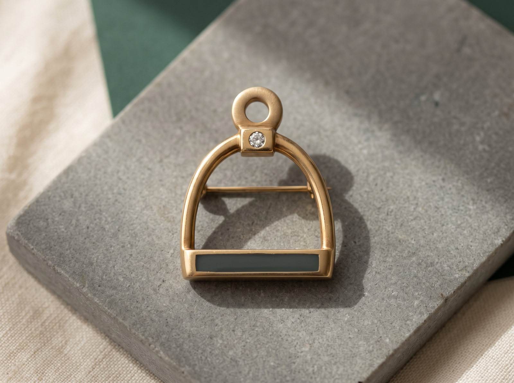
Etsy metni
Başlık 87/140
14K Gold Stirrup Brooch, Jade Green Enamel, Lab Grown Sapphire, Equestrian Gift for Her
Etiketler (13)
14k gold brooch, stirrup brooch, equestrian jewelry, enamel brooch, green enamel, vitreous enamel, lab grown sapphire, horse lover gift, riding jewelry, christmas gift, gift for her, coat brooch, solid gold brooch
Malzemeler
14k yellow gold, vitreous enamel, lab grown white sapphire, 14k white gold pin stem, 14k gold safety catch
Açıklama
A riding stirrup in 14k gold, its tread lined with jade-green glass enamel and a lab-grown sapphire set below the strap loop. An equestrian Christmas gift that is worn all year. THE PIECE 26 mm tall and 22 mm wide. A polished 2.0 mm arch rises from an 18 by 4.4 mm tread to a small round strap loop; the enamel runs in one 14 mm channel along the tread. GOLD WEIGHT 3.74 g of 14k gold, counting the 14k white gold pin stem and the safety catch. On the scale the finished piece weighs 3.80 g in total with the enamel and stones. ENAMEL Kiln-fired vitreous enamel (glass), opaque deep jade green, level with the gold. STONES One 2.0 mm round lab-grown white sapphire, flush set in a raised block on the arch. Mohs 9. HOW IT FASTENS One pin stem of hardened 14k white gold with a rotating safety catch, the standard fine-jewellery fastening for a brooch worn every day. HOW IT IS MADE Made to order. Cast in 14k gold in one piece, in a zinc-free gold alloy chosen for enamel. The enamel cells are cast into the gold, filled by hand and kiln-fired. Nothing is soldered after the first firing; any fitting added later is laser welded away from the enamel. The stones are set last, cold, after all firing and polishing. CARE Wipe with a soft dry cloth, or wash in warm water with a drop of mild soap. Glass enamel is hard and does not fade, but it can chip if struck against stone or metal. Keep it away from ultrasonic cleaners. No bleach or chlorine. GIFTING Arrives in a gift box, ready to give. Made to order. The processing time is shown at checkout.
Atölye kartı
26 x 22 mm. Kemer OD22 / ID18 x 1.4, dairenin %60'i. Tepe bossu 3.4 x 3.0 x 2.0 (tas ev sahibi 2.0). Basamak 18.0 x 4.4 x 1.5; olugun 14.0 x 2.8 x 0.55; yan duvar 0.8, uc duvar 2.0; taban 0.95. Kayis gozu OD5.5 / ID3.1 x 1.2. Igne hatti ust ucte, mafsal sol kemer kolu, kilit sag kemer kolu; igne 18.5 mm. Model +0.2.
Tek parca 14K CINKOSUZ dokum. Lehim yok. Mine basamakta, tas kemer tepesinde (mineden ~20 mm), kilit pedi kemer kolunda (mineden >10 mm, duz ped, kaide gerekmez). Taban 0.95 (karsi-mine yok). Tas ve kilit pisirimlerden sonra.
Tezgâh sırası
- 1. CAD: bitmis + 0.2; olugun tabani r0.15; boss pilot D1.0.
- 2. Recine baski; besleme basamak arkasi.
- 3. Yatirim + yakma; CINKOSUZ 14K vakum dokum; gozenek kontrolu (olugun tabani).
- 4. Tesviye; basamak 1.5, olugun 0.55; boss 2.0.
- 5. Olugun temizligi; boss yuvasi on frezesi.
- 6. Yuzey zenginlestirme 3-4 dongu (~593 C + %10 H2SO4).
- 7. Karsi-mine: gerekmez (taban 0.95).
- 8. Islak dolum opak derin yesil; Pisirim 1: 780 C, 75 sn; sehpada basamak alttan.
- 9. Pisirim 2: 780 C, 75 sn.
- 10. Tasla zimpara.
- 11. Pisirim 3: 770 C, 50 sn. Toplam 3.
- 12. Notr temizlik (asit yok); kemer parlatma, kayis gozu honlama.
- 13. 2.0 lab mavi safir flush (tepe bossu).
- 14. Lazer: sag kemer kolu pedine 460-12 kilit (mine 10 mm uzakta; yine de maske).
- 15. Igne 14KW 18.5 mm burgu-sertlestir, percin.
- 16. QC: tartim 3.54 g +/- %5, mine pinhole, tas, kilit.
Malzeme listesi
- Alasim: 14K sari CINKOSUZ mine-uyumlu alasim (Otto Frei 846-180 'No Zinc' master alloy + 24K ile 14K; dokumhaneden yazili Zn=0 sertifikasi + solidus/DSC degeri), vakum/inert gaz dokum. Dokum govde (kulak/ped dahil) 3.142 g x 1.15 = 3.61 g dokum metali (yolluk/kayip payi).
- Mine tozu: kursunsuz opak derin yesil ~135 mg (pisirilmis 54 mg x 2.5).
- Tas: 1 x 2.0 mm lab grown blue sapphire = 0.0338 ct.
- Bulgular (satin alma): 14K beyaz igne 0.86 mm (Otto Frei 601-14, 38.1 mm'den 18.5 mm'ye kesilir) 0.156 g; 14KY emniyetli doner kilit Otto Frei 460-12 0.22 g (tahmin); 14K percin teli 0.8 mm x 3.0 0.020 g. Toplam bulgu 0.395 g (altin grama dahil).
Arıza modları
| Arıza | Tasarım nasıl önlüyor |
|---|---|
| Tasin bossun arkasindan cikmasi (orijinal 1.5 boss, 0.28 taban) | Boss 2.0 (KANIT 2.0 mm tas -> 1.8) + alttan delik. |
| Kemerin firinda sarkmasi (ince 2.0 x 1.4 yay) | Parca basamak uzerine yatirilir, kemer sehpada destekli; 780 C ust sinir. |
| Oluk mine kenarinda catlak | Duz, rijit 1.5 basamak; taban 0.95; fileto. |
Tolerans
| Kural | Değer | |
|---|---|---|
| L1 karat 14K (KANIT karat_policy: 14K vitreous 'marginal', not_viable degil; 18K'ye gecilmez) | 14K sari | ✓ |
| L2 opak vitreous champleve, hucreler dokumde birakilir (oyma degil) | opak, kursunsuz; hucreler mumda modelli | ✓ |
| L2 hucre derinligi 0.5-0.6 | 0.55 | ✓ |
| L2 hucre genisligi >=0.7 ve derinlik <=2x genislik | min genislik 2.8; oran 0.20 | ✓ |
| L2 hucre tabani >=0.8 (karsi-mine gerekmez) | 0.95 | ✓ |
| L2 hucre arasi ve cevre altin duvar >=0.70 | 0.8 | ✓ |
| L2 hucre icinde kabartma/doku yok | duz, filetolu taban (r0.15) | ✓ |
| L2 palet + renk sayisi | 1 renk: derin yesil (jade) | ✓ |
| L2 pisirim <=4 dongu, <=790 C (KANIT) | 3 pisirim, 770-780 C | ✓ |
| L3 ilk pisirimden sonra hamlac lehimi yok | lehim baglantisi 0; mafsal kulaklari govdeyle tek dokum; kilit pisirim sonrasi lazerle | ✓ |
| L3 pisirim sonrasi lazer, ciplak ped, mineye >=1.5 | kilit pedi kemer kolunda, mineye >10 mm | ✓ |
| L4 lab mavi safir (buz mavisi) 1.3-2.0 flush, <=7 | 1 x 2.0 | ✓ |
| L4 ev sahibi (KANIT 2.0 mm -> 1.8) + delik | 2.0, D1.0 | ✓ |
| L4 yanal duvar (KANIT 1.8-2.5 -> 0.45) | 0.5 / 0.7 | ✓ |
| L4 mine kenarina >=0.5 | ~20 mm | ✓ |
| L5 dekoratif >=0.6 / yapisal >=0.8 | kemer 2.0 x 1.4, basamak 1.5, goz 1.2 x 1.2 | ✓ |
| L5 mafsal kesiti >=1.0 | kulak 1.0 x 2.0 x 2.2 | ✓ |
| L5 aciklik >=0.6 | kayis gozu D3.1 (derinlik 1.2) | ✓ |
| L5 model +0.2 / uc r>=0.4 | +0.2; serbest uc yok | ✓ |
| L6 hollow (yalniz kolye/bros, asla mineyle degil) | kati govde, hollow yok; 'solid' basliga girebilir | ✓ |
| L7 bros bandi 3.0-4.2 g altin (bulgu dahil) | 3.537 g (govde 3.142 + bulgu 0.395); tavana pay 0.66 g | ✓ |
| L10 <=30 tek igne; mafsal ustte; doner kilit | 26 mm, tek igne 18.5; ust ucte; 460-12 | ✓ |
| L12 tek kahraman ozellik | uzengi siluet + yesil basamak | ✓ |
Görsel promptları (16)
- 01Hero / arama küçük resmi: tek ürün, marka natürmortu, 4:3.Referanssız
Quiet luxury editorial still-life product photography. Warm ivory linen ground, honed grey stone slab, a sliver of deep jade-green matte card. Soft directional window light from upper left, long soft shadow, shallow depth of field. Solid yellow gold with warm antique tone. Restrained heirloom mood. No text, no logo, no glitter, no Christmas decoration. The piece: Brooch in 14K yellow gold, 26 mm tall and 22 mm wide, shaped as a riding stirrup. A polished arch 2.0 mm wide rises from a flat tread to a small round strap loop at the top with an open 3.1 mm hole. Just below the loop, a small raised rectangular block on the arch holds one 2.0 mm lab grown white sapphire, flush-set. The tread is 18 by 4.4 mm with one 14 by 2.8 mm channel of opaque deep jade-green enamel (a dark muted grey-green), level with the gold. The strap loop is honed matte. Back: 14K white gold pin stem with a rotating safety catch. The stones are exactly these and no others: one 2.0 mm round lab-grown white sapphire flush-set in the small raised block below the strap loop. No other stone and no empty setting anywhere on the piece. The only colour on the piece is opaque deep jade-green enamel filling the single channel along the tread; every other surface is yellow gold. The brooch lies face up, centred on the honed grey stone slab, pin hidden behind it; exactly one brooch. Seen from about 30 degrees above with a 100 mm macro lens, the piece in razor-sharp focus, filling about 45 percent of the frame width, centred with generous empty margin on all four sides. No people and no hands.
Alt metin 14K gold stirrup brooch with a jade green enamel tread and lab grown sapphire
- 02Takılı hâli: ölçek ve duruş. Hero'dan sonra dönüşümü en çok etkileyen kare.Referans: hero kırpımı
Quiet luxury editorial photography in warm ivory, stone grey and deep jade-green tones, soft directional window light from the upper left, true colour, fine film grain, no heavy retouching. No text, no logo, no watermark, no glitter. The attached reference image is a crop of this exact piece: keep its shape, proportions, gold colour, enamel colours and stones exactly as in the reference. The piece: Brooch in 14K yellow gold, 26 mm tall and 22 mm wide, shaped as a riding stirrup. A polished arch 2.0 mm wide rises from a flat tread to a small round strap loop at the top with an open 3.1 mm hole. Just below the loop, a small raised rectangular block on the arch holds one 2.0 mm lab grown white sapphire, flush-set. The tread is 18 by 4.4 mm with one 14 by 2.8 mm channel of opaque deep jade-green enamel (a dark muted grey-green), level with the gold. The strap loop is honed matte. Back: 14K white gold pin stem with a rotating safety catch. The stones are exactly these and no others: one 2.0 mm round lab-grown white sapphire flush-set in the small raised block below the strap loop. No other stone and no empty setting anywhere on the piece. The only colour on the piece is opaque deep jade-green enamel filling the single channel along the tread; every other surface is yellow gold. Pinned on the left lapel of a woman's camel wool coat, cropped from collar to chest so no face shows; exactly one brooch on the coat and no other jewellery; true to scale, the main element measures about 26 mm across.
Alt metin 14K gold stirrup brooch with a jade green enamel tread and lab grown sapphire, worn
- 03Makro işçilik: fiyatı meşrulaştıran detay (mine yüzeyi, flush taş, kenar bitimi).Referans: hero kırpımı
Quiet luxury editorial photography in warm ivory, stone grey and deep jade-green tones, soft directional window light from the upper left, true colour, fine film grain, no heavy retouching. No text, no logo, no watermark, no glitter. The attached reference image is a crop of this exact piece: keep its shape, proportions, gold colour, enamel colours and stones exactly as in the reference. The piece: Brooch in 14K yellow gold, 26 mm tall and 22 mm wide, shaped as a riding stirrup. A polished arch 2.0 mm wide rises from a flat tread to a small round strap loop at the top with an open 3.1 mm hole. Just below the loop, a small raised rectangular block on the arch holds one 2.0 mm lab grown white sapphire, flush-set. The tread is 18 by 4.4 mm with one 14 by 2.8 mm channel of opaque deep jade-green enamel (a dark muted grey-green), level with the gold. The strap loop is honed matte. Back: 14K white gold pin stem with a rotating safety catch. The stones are exactly these and no others: one 2.0 mm round lab-grown white sapphire flush-set in the small raised block below the strap loop. No other stone and no empty setting anywhere on the piece. The only colour on the piece is opaque deep jade-green enamel filling the single channel along the tread; every other surface is yellow gold. Extreme close-up macro, 100 mm macro lens: The tread with its channel of opaque deep jade-green enamel, and the polished arch rising from it. The rest of the piece falls away into soft focus on warm-ivory linen.
Alt metin Close-up of the jade green enamel tread
- 04Elde ölçek: mm'yi parmak ucuna çevirir, 'beklediğimden küçük' iadesini önler.Referans: hero kırpımı
Quiet luxury editorial photography in warm ivory, stone grey and deep jade-green tones, soft directional window light from the upper left, true colour, fine film grain, no heavy retouching. No text, no logo, no watermark, no glitter. The attached reference image is a crop of this exact piece: keep its shape, proportions, gold colour, enamel colours and stones exactly as in the reference. The piece: Brooch in 14K yellow gold, 26 mm tall and 22 mm wide, shaped as a riding stirrup. A polished arch 2.0 mm wide rises from a flat tread to a small round strap loop at the top with an open 3.1 mm hole. Just below the loop, a small raised rectangular block on the arch holds one 2.0 mm lab grown white sapphire, flush-set. The tread is 18 by 4.4 mm with one 14 by 2.8 mm channel of opaque deep jade-green enamel (a dark muted grey-green), level with the gold. The strap loop is honed matte. Back: 14K white gold pin stem with a rotating safety catch. The stones are exactly these and no others: one 2.0 mm round lab-grown white sapphire flush-set in the small raised block below the strap loop. No other stone and no empty setting anywhere on the piece. The only colour on the piece is opaque deep jade-green enamel filling the single channel along the tread; every other surface is yellow gold. Close-up for scale against a plain warm-ivory background thrown softly out of focus: the brooch resting face up on the open palm of a woman's hand; true to scale, the main element measures about 26 mm across, a fingertip is about 16 mm wide; it is the only jewellery in the image; anatomically correct hands with five fingers, short natural unpolished nails.
Alt metin 14K gold stirrup brooch with a jade green enamel tread and lab grown sapphire, held between fingers for scale
- 05Arka ve bulgular: dolu gövde, kilit / çivi / iğne; sağlamlık sorusunu cevaplar.Referans: hero kırpımı
Quiet luxury editorial photography in warm ivory, stone grey and deep jade-green tones, soft directional window light from the upper left, true colour, fine film grain, no heavy retouching. No text, no logo, no watermark, no glitter. The attached reference image is a crop of this exact piece: keep its shape, proportions, gold colour, enamel colours and stones exactly as in the reference. The piece: Brooch in 14K yellow gold, 26 mm tall and 22 mm wide, shaped as a riding stirrup. A polished arch 2.0 mm wide rises from a flat tread to a small round strap loop at the top with an open 3.1 mm hole. Just below the loop, a small raised rectangular block on the arch holds one 2.0 mm lab grown white sapphire, flush-set. The tread is 18 by 4.4 mm with one 14 by 2.8 mm channel of opaque deep jade-green enamel (a dark muted grey-green), level with the gold. The strap loop is honed matte. Back: 14K white gold pin stem with a rotating safety catch. The stones are exactly these and no others: one 2.0 mm round lab-grown white sapphire flush-set in the small raised block below the strap loop. No other stone and no empty setting anywhere on the piece. The only colour on the piece is opaque deep jade-green enamel filling the single channel along the tread; every other surface is yellow gold. The back of the piece, top-down on honed grey stone: The back of the stirrup with the 14K white gold pin stem across the arch, the hinge and the rotating safety catch.
Alt metin Back of the brooch showing the pin stem and safety catch
- 06Tam boy / çift / mekanizma: uzunluk, ayar ve ne geldiğini tek karede gösterir.Referans: hero kırpımı
Quiet luxury editorial photography in warm ivory, stone grey and deep jade-green tones, soft directional window light from the upper left, true colour, fine film grain, no heavy retouching. No text, no logo, no watermark, no glitter. The attached reference image is a crop of this exact piece: keep its shape, proportions, gold colour, enamel colours and stones exactly as in the reference. The piece: Brooch in 14K yellow gold, 26 mm tall and 22 mm wide, shaped as a riding stirrup. A polished arch 2.0 mm wide rises from a flat tread to a small round strap loop at the top with an open 3.1 mm hole. Just below the loop, a small raised rectangular block on the arch holds one 2.0 mm lab grown white sapphire, flush-set. The tread is 18 by 4.4 mm with one 14 by 2.8 mm channel of opaque deep jade-green enamel (a dark muted grey-green), level with the gold. The strap loop is honed matte. Back: 14K white gold pin stem with a rotating safety catch. The stones are exactly these and no others: one 2.0 mm round lab-grown white sapphire flush-set in the small raised block below the strap loop. No other stone and no empty setting anywhere on the piece. The only colour on the piece is opaque deep jade-green enamel filling the single channel along the tread; every other surface is yellow gold. The brooch lying face down on honed grey stone with its pin stem swung open out of the safety catch so the full length of the pin, the hinge joint and the open catch are all visible, top-down.
Alt metin 14K gold stirrup brooch with a jade green enamel tread and lab grown sapphire, pin open
- 07Yan profil: kalınlık ve kütle, düz baskı değil gerçek altın olduğunu gösterir.Referans: hero kırpımı
Quiet luxury editorial photography in warm ivory, stone grey and deep jade-green tones, soft directional window light from the upper left, true colour, fine film grain, no heavy retouching. No text, no logo, no watermark, no glitter. The attached reference image is a crop of this exact piece: keep its shape, proportions, gold colour, enamel colours and stones exactly as in the reference. The piece: Brooch in 14K yellow gold, 26 mm tall and 22 mm wide, shaped as a riding stirrup. A polished arch 2.0 mm wide rises from a flat tread to a small round strap loop at the top with an open 3.1 mm hole. Just below the loop, a small raised rectangular block on the arch holds one 2.0 mm lab grown white sapphire, flush-set. The tread is 18 by 4.4 mm with one 14 by 2.8 mm channel of opaque deep jade-green enamel (a dark muted grey-green), level with the gold. The strap loop is honed matte. Back: 14K white gold pin stem with a rotating safety catch. The stones are exactly these and no others: one 2.0 mm round lab-grown white sapphire flush-set in the small raised block below the strap loop. No other stone and no empty setting anywhere on the piece. The only colour on the piece is opaque deep jade-green enamel filling the single channel along the tread; every other surface is yellow gold. Side profile at eye level on honed grey stone, the camera level with the piece: A flat arch 1.4 mm thick and a tread 1.5 mm thick.
Alt metin Side profile of the brooch showing its thickness
- 08Kış yaşam stili: sezonu Noel dekoru olmadan kurar.Referans: hero kırpımı
Quiet luxury editorial photography in warm ivory, stone grey and deep jade-green tones, soft directional window light from the upper left, true colour, fine film grain, no heavy retouching. No text, no logo, no watermark, no glitter. The attached reference image is a crop of this exact piece: keep its shape, proportions, gold colour, enamel colours and stones exactly as in the reference. The piece: Brooch in 14K yellow gold, 26 mm tall and 22 mm wide, shaped as a riding stirrup. A polished arch 2.0 mm wide rises from a flat tread to a small round strap loop at the top with an open 3.1 mm hole. Just below the loop, a small raised rectangular block on the arch holds one 2.0 mm lab grown white sapphire, flush-set. The tread is 18 by 4.4 mm with one 14 by 2.8 mm channel of opaque deep jade-green enamel (a dark muted grey-green), level with the gold. The strap loop is honed matte. Back: 14K white gold pin stem with a rotating safety catch. The stones are exactly these and no others: one 2.0 mm round lab-grown white sapphire flush-set in the small raised block below the strap loop. No other stone and no empty setting anywhere on the piece. The only colour on the piece is opaque deep jade-green enamel filling the single channel along the tread; every other surface is yellow gold. Outdoors in pale winter light: a woman in an ivory wool coat with the brooch on the left lapel, a grey knit scarf, cropped from collar to chest so no face shows; exactly one brooch.
Alt metin 14K gold stirrup brooch with a jade green enamel tread and lab grown sapphire, styled with winter knitwear
- 09Hediye kutusu: Noel alıcısının ilk sorusu, hediyeye hazır mı?Referans: hero kırpımı
Quiet luxury editorial photography in warm ivory, stone grey and deep jade-green tones, soft directional window light from the upper left, true colour, fine film grain, no heavy retouching. No text, no logo, no watermark, no glitter. The attached reference image is a crop of this exact piece: keep its shape, proportions, gold colour, enamel colours and stones exactly as in the reference. The piece: Brooch in 14K yellow gold, 26 mm tall and 22 mm wide, shaped as a riding stirrup. A polished arch 2.0 mm wide rises from a flat tread to a small round strap loop at the top with an open 3.1 mm hole. Just below the loop, a small raised rectangular block on the arch holds one 2.0 mm lab grown white sapphire, flush-set. The tread is 18 by 4.4 mm with one 14 by 2.8 mm channel of opaque deep jade-green enamel (a dark muted grey-green), level with the gold. The strap loop is honed matte. Back: 14K white gold pin stem with a rotating safety catch. The stones are exactly these and no others: one 2.0 mm round lab-grown white sapphire flush-set in the small raised block below the strap loop. No other stone and no empty setting anywhere on the piece. The only colour on the piece is opaque deep jade-green enamel filling the single channel along the tread; every other surface is yellow gold. Top-down: the brooch face up inside a small open square gift box in plain warm-ivory card with a soft ivory insert, the lid set beside it, a length of narrow deep jade-green ribbon untied beside the box, on honed grey stone. No branding, no printed pattern, no tissue paper, no Christmas decoration, exactly one box.
Alt metin 14K gold stirrup brooch with a jade green enamel tread and lab grown sapphire in a gift box
- 10Gerçek renk: nötr gün ışığında altın ve mine rengi; renk kaynaklı iadeyi azaltır.Referans: hero kırpımı
Quiet luxury editorial photography in warm ivory, stone grey and deep jade-green tones, soft directional window light from the upper left, true colour, fine film grain, no heavy retouching. No text, no logo, no watermark, no glitter. The attached reference image is a crop of this exact piece: keep its shape, proportions, gold colour, enamel colours and stones exactly as in the reference. The piece: Brooch in 14K yellow gold, 26 mm tall and 22 mm wide, shaped as a riding stirrup. A polished arch 2.0 mm wide rises from a flat tread to a small round strap loop at the top with an open 3.1 mm hole. Just below the loop, a small raised rectangular block on the arch holds one 2.0 mm lab grown white sapphire, flush-set. The tread is 18 by 4.4 mm with one 14 by 2.8 mm channel of opaque deep jade-green enamel (a dark muted grey-green), level with the gold. The strap loop is honed matte. Back: 14K white gold pin stem with a rotating safety catch. The stones are exactly these and no others: one 2.0 mm round lab-grown white sapphire flush-set in the small raised block below the strap loop. No other stone and no empty setting anywhere on the piece. The only colour on the piece is opaque deep jade-green enamel filling the single channel along the tread; every other surface is yellow gold. Colour-accurate reference shot: the piece alone, top-down on plain matte white-ivory paper under even neutral north daylight, no shadow drama, no props, the piece centred and filling half the frame.
Alt metin 14K gold stirrup brooch with a jade green enamel tread and lab grown sapphire in neutral daylight, true colour
- 11Ölçü grafiği tabanı: sağ üçte bir boş; mm etiketleri sonra eklenir.Referans: hero kırpımı
Quiet luxury editorial photography in warm ivory, stone grey and deep jade-green tones, soft directional window light from the upper left, true colour, fine film grain, no heavy retouching. No text, no logo, no watermark, no glitter. The attached reference image is a crop of this exact piece: keep its shape, proportions, gold colour, enamel colours and stones exactly as in the reference. The piece: Brooch in 14K yellow gold, 26 mm tall and 22 mm wide, shaped as a riding stirrup. A polished arch 2.0 mm wide rises from a flat tread to a small round strap loop at the top with an open 3.1 mm hole. Just below the loop, a small raised rectangular block on the arch holds one 2.0 mm lab grown white sapphire, flush-set. The tread is 18 by 4.4 mm with one 14 by 2.8 mm channel of opaque deep jade-green enamel (a dark muted grey-green), level with the gold. The strap loop is honed matte. Back: 14K white gold pin stem with a rotating safety catch. The stones are exactly these and no others: one 2.0 mm round lab-grown white sapphire flush-set in the small raised block below the strap loop. No other stone and no empty setting anywhere on the piece. The only colour on the piece is opaque deep jade-green enamel filling the single channel along the tread; every other surface is yellow gold. The piece alone, top-down on plain warm-ivory paper, placed in the left two thirds of the frame; the right third is empty paper for dimension labels to be added later; even soft light, no props.
Alt metin 14K gold stirrup brooch with a jade green enamel tread and lab grown sapphire with space for dimensions
- 12El işçiliği: siparişe üretim hikâyesi, tezgâhta parça.Referans: hero kırpımı
Quiet luxury editorial photography in warm ivory, stone grey and deep jade-green tones, soft directional window light from the upper left, true colour, fine film grain, no heavy retouching. No text, no logo, no watermark, no glitter. The attached reference image is a crop of this exact piece: keep its shape, proportions, gold colour, enamel colours and stones exactly as in the reference. The piece: Brooch in 14K yellow gold, 26 mm tall and 22 mm wide, shaped as a riding stirrup. A polished arch 2.0 mm wide rises from a flat tread to a small round strap loop at the top with an open 3.1 mm hole. Just below the loop, a small raised rectangular block on the arch holds one 2.0 mm lab grown white sapphire, flush-set. The tread is 18 by 4.4 mm with one 14 by 2.8 mm channel of opaque deep jade-green enamel (a dark muted grey-green), level with the gold. The strap loop is honed matte. Back: 14K white gold pin stem with a rotating safety catch. The stones are exactly these and no others: one 2.0 mm round lab-grown white sapphire flush-set in the small raised block below the strap loop. No other stone and no empty setting anywhere on the piece. The only colour on the piece is opaque deep jade-green enamel filling the single channel along the tread; every other surface is yellow gold. The finished piece lying on a worn wooden jeweller's bench pin beside a small porcelain dish of deep green enamel powder, a fine sable brush and a pair of brass tweezers, warm lamp light, shallow depth of field, the piece in sharp focus; no hands.
Alt metin 14K gold stirrup brooch with a jade green enamel tread and lab grown sapphire on a jeweller's bench
- 13Motifin anlamı: sol üçte bir boş; sembol hikâyesi metni sonra eklenir.Referans: hero kırpımı
Quiet luxury editorial photography in warm ivory, stone grey and deep jade-green tones, soft directional window light from the upper left, true colour, fine film grain, no heavy retouching. No text, no logo, no watermark, no glitter. The attached reference image is a crop of this exact piece: keep its shape, proportions, gold colour, enamel colours and stones exactly as in the reference. The piece: Brooch in 14K yellow gold, 26 mm tall and 22 mm wide, shaped as a riding stirrup. A polished arch 2.0 mm wide rises from a flat tread to a small round strap loop at the top with an open 3.1 mm hole. Just below the loop, a small raised rectangular block on the arch holds one 2.0 mm lab grown white sapphire, flush-set. The tread is 18 by 4.4 mm with one 14 by 2.8 mm channel of opaque deep jade-green enamel (a dark muted grey-green), level with the gold. The strap loop is honed matte. Back: 14K white gold pin stem with a rotating safety catch. The stones are exactly these and no others: one 2.0 mm round lab-grown white sapphire flush-set in the small raised block below the strap loop. No other stone and no empty setting anywhere on the piece. The only colour on the piece is opaque deep jade-green enamel filling the single channel along the tread; every other surface is yellow gold. The piece alone, top-down on a deep jade-green matte card, placed in the right two thirds of the frame; the left third is empty card for a caption to be added later; soft directional light.
Alt metin 14K gold stirrup brooch with a jade green enamel tread and lab grown sapphire on a deep green card
- 14Yıl boyu takılır: 'yalnız Noel' itirazını kırar.Referans: hero kırpımı
Quiet luxury editorial photography in warm ivory, stone grey and deep jade-green tones, soft directional window light from the upper left, true colour, fine film grain, no heavy retouching. No text, no logo, no watermark, no glitter. The attached reference image is a crop of this exact piece: keep its shape, proportions, gold colour, enamel colours and stones exactly as in the reference. The piece: Brooch in 14K yellow gold, 26 mm tall and 22 mm wide, shaped as a riding stirrup. A polished arch 2.0 mm wide rises from a flat tread to a small round strap loop at the top with an open 3.1 mm hole. Just below the loop, a small raised rectangular block on the arch holds one 2.0 mm lab grown white sapphire, flush-set. The tread is 18 by 4.4 mm with one 14 by 2.8 mm channel of opaque deep jade-green enamel (a dark muted grey-green), level with the gold. The strap loop is honed matte. Back: 14K white gold pin stem with a rotating safety catch. The stones are exactly these and no others: one 2.0 mm round lab-grown white sapphire flush-set in the small raised block below the strap loop. No other stone and no empty setting anywhere on the piece. The only colour on the piece is opaque deep jade-green enamel filling the single channel along the tread; every other surface is yellow gold. Everyday wear, no season: the brooch on the collar of a woman's ivory denim jacket, soft daylight, cropped from collar to chest; exactly one brooch.
Alt metin 14K gold stirrup brooch with a jade green enamel tread and lab grown sapphire, everyday wear
- 15Hediye anı: duygu; Noel satın alma niyetine bağlar.Referans: hero kırpımı
Quiet luxury editorial photography in warm ivory, stone grey and deep jade-green tones, soft directional window light from the upper left, true colour, fine film grain, no heavy retouching. No text, no logo, no watermark, no glitter. The attached reference image is a crop of this exact piece: keep its shape, proportions, gold colour, enamel colours and stones exactly as in the reference. The piece: Brooch in 14K yellow gold, 26 mm tall and 22 mm wide, shaped as a riding stirrup. A polished arch 2.0 mm wide rises from a flat tread to a small round strap loop at the top with an open 3.1 mm hole. Just below the loop, a small raised rectangular block on the arch holds one 2.0 mm lab grown white sapphire, flush-set. The tread is 18 by 4.4 mm with one 14 by 2.8 mm channel of opaque deep jade-green enamel (a dark muted grey-green), level with the gold. The strap loop is honed matte. Back: 14K white gold pin stem with a rotating safety catch. The stones are exactly these and no others: one 2.0 mm round lab-grown white sapphire flush-set in the small raised block below the strap loop. No other stone and no empty setting anywhere on the piece. The only colour on the piece is opaque deep jade-green enamel filling the single channel along the tread; every other surface is yellow gold. A gift being given: two pairs of hands across a pale oak table, one pair holding out the small open warm-ivory gift box with the piece visible inside, the other reaching for it, soft warm window light, sleeves of ivory and grey knitwear; exactly one box and one piece of jewellery; anatomically correct hands with five fingers, short natural unpolished nails.
Alt metin 14K gold stirrup brooch with a jade green enamel tread and lab grown sapphire given as a gift
- 16Mağaza ızgarası / Pinterest: koyu jade zeminde yüksek kontrast kare.Referans: hero kırpımı
Quiet luxury editorial photography in warm ivory, stone grey and deep jade-green tones, soft directional window light from the upper left, true colour, fine film grain, no heavy retouching. No text, no logo, no watermark, no glitter. The attached reference image is a crop of this exact piece: keep its shape, proportions, gold colour, enamel colours and stones exactly as in the reference. The piece: Brooch in 14K yellow gold, 26 mm tall and 22 mm wide, shaped as a riding stirrup. A polished arch 2.0 mm wide rises from a flat tread to a small round strap loop at the top with an open 3.1 mm hole. Just below the loop, a small raised rectangular block on the arch holds one 2.0 mm lab grown white sapphire, flush-set. The tread is 18 by 4.4 mm with one 14 by 2.8 mm channel of opaque deep jade-green enamel (a dark muted grey-green), level with the gold. The strap loop is honed matte. Back: 14K white gold pin stem with a rotating safety catch. The stones are exactly these and no others: one 2.0 mm round lab-grown white sapphire flush-set in the small raised block below the strap loop. No other stone and no empty setting anywhere on the piece. The only colour on the piece is opaque deep jade-green enamel filling the single channel along the tread; every other surface is yellow gold. Top-down flat lay of the piece centred on a deep jade-green matte card with a narrow border of warm-ivory linen at the top edge, crisp soft light, the piece filling about 40 percent of the frame so a square crop keeps all of it.
Alt metin 14K gold stirrup brooch with a jade green enamel tread and lab grown sapphire, flat lay on deep green
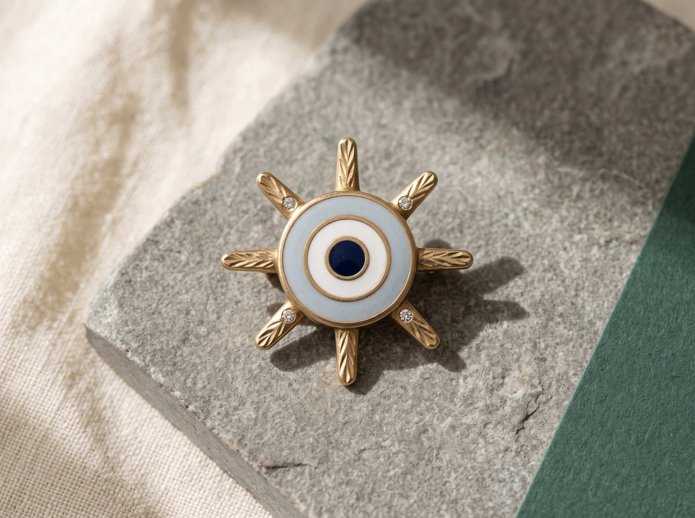
Etsy metni
Başlık 89/140
14K Gold Evil Eye Brooch, Nazar Enamel Sunburst Pin, Lab Grown Sapphires, Protection Gift
Etiketler (13)
14k gold brooch, evil eye brooch, nazar brooch, enamel brooch, vitreous enamel, sunburst brooch, lab grown sapphire, protection amulet, talisman jewelry, christmas gift, gift for her, coat brooch, solid gold brooch
Malzemeler
14k yellow gold, vitreous enamel, lab grown white sapphire, 14k white gold pin stem, 14k gold safety catch
Açıklama
An evil eye in ice-blue, white and navy glass enamel at the centre of eight gold rays, with a lab-grown sapphire at the base of each diagonal ray. A protection gift for Christmas and every day after. THE PIECE 23 mm across. The eye disc is 12 mm across; the eight rays are 5.5 mm long with rounded tips and bright diamond-cut faces. GOLD WEIGHT 3.63 g of 14k gold, counting the 14k white gold pin stem and the safety catch. On the scale the finished piece weighs 3.73 g in total with the enamel and stones. ENAMEL Kiln-fired vitreous enamel (glass), opaque, in three rings divided by 0.7 mm gold walls: ice blue outside, then white, then a navy-blue centre. STONES Four 1.5 mm round lab-grown white sapphires, flush set at the ray bases. Mohs 9. HOW IT FASTENS One pin stem of hardened 14k white gold with a rotating safety catch, the standard fine-jewellery fastening for a brooch worn every day. HOW IT IS MADE Made to order. Cast in 14k gold in one piece, in a zinc-free gold alloy chosen for enamel. The enamel cells are cast into the gold, filled by hand and kiln-fired. Nothing is soldered after the first firing; any fitting added later is laser welded away from the enamel. The stones are set last, cold, after all firing and polishing. CARE Wipe with a soft dry cloth, or wash in warm water with a drop of mild soap. Glass enamel is hard and does not fade, but it can chip if struck against stone or metal. Keep it away from ultrasonic cleaners. No bleach or chlorine. GIFTING Arrives in a gift box, ready to give. Made to order. The processing time is shown at checkout.
Atölye kartı
OD23. Disk D12.0 x 1.4. Halkalar: cevre altin r5.3-6.0 (0.7), buz mavisi r4.3-5.3 (1.0), altin r3.6-4.3 (0.7), beyaz r2.6-3.6 (1.0), altin r1.9-2.6 (0.7), lacivert bebek D3.8. Hucre 0.55, taban 0.85. 8 isin 5.5 boy, 2.8 -> 0.8 (uc r0.4), 1.2 kalin; 4 diyagonal isin kokunde 2.6 x 2.2 yerel boss (1.6). Tas merkezi r6.85. Igne hatti y=+1.5, mafsal x=-4.0, kilit kaidesi x=+4.0 (ikisi de disk arkasinda r<=6.0); igne 10.5 mm. Model +0.2, isin yuzu +0.1.
Tek parca 14K CINKOSUZ dokum. Lehim yok. 3 renk tek dolumda, 3 pisirim. Disk arkasi mine altinda oldugu icin kilit D1.6 x 1.2 + 2.6 x 2.6 x 0.8 kaideye lazer (3D mineye 0.85 + 2.0 = 2.85 mm). Taslar isin kokunde ciplak altinda, mineye 0.8, tum pisirimlerden sonra.
Tezgâh sırası
- 1. CAD: bitmis + 0.2; 0.7 halka duvarlari model 0.9 (tasla kaybi icin); hucre tabani r0.15; 4 pilot D0.9; kaide + uzun kulaklar.
- 2. Recine baski; besleme disk arkasi kenardan.
- 3. Yatirim + yakma; CINKOSUZ 14K vakum dokum; gozenek kontrolu.
- 4. Tesviye; disk 1.4, hucre 0.55, duvar 0.7 (+0.2) kumpas.
- 5. Hucre temizligi; 4 tas yuvasi on frezesi.
- 6. Yuzey zenginlestirme 3-4 dongu.
- 7. Karsi-mine: gerekmez (taban 0.85).
- 8. Islak dolum: lacivert bebek, beyaz halka, buz mavisi halka; Pisirim 1: 780 C, 75 sn.
- 9. Pisirim 2: 780 C, 75 sn.
- 10. Tasla zimpara (duvarlar 0.7 bitmise iner).
- 11. Pisirim 3: 770 C, 50 sn. Toplam 3.
- 12. Notr temizlik; isinlarda elmas tiras (mine diskten uzak, isin kokunden 1.5 mm sonra baslar).
- 13. 4 x 1.5 lab beyaz safir flush, burnisorle (itme diskten disari).
- 14. Lazer: kaideye 460-12 kilit; maske + siper.
- 15. Igne 14KW 10.5 mm, percin.
- 16. QC: tartim 3.62 g +/- %5, halka duvari kirilmasi (lup), tas, kilit.
Malzeme listesi
- Alasim: 14K sari CINKOSUZ mine-uyumlu alasim (Otto Frei 846-180 'No Zinc' master alloy + 24K ile 14K; dokumhaneden yazili Zn=0 sertifikasi + solidus/DSC degeri), vakum/inert gaz dokum. Dokum govde (kulak/ped dahil) 3.281 g x 1.15 = 3.77 g dokum metali (yolluk/kayip payi).
- Mine tozu (toplam ~210 mg): opak buz mavisi ~104 mg, opak beyaz ~67 mg, opak lacivert ~39 mg (pisirilmis x 2.5).
- Taslar: 4 x 1.5 mm lab grown white sapphire = 0.0571 ct.
- Bulgular (satin alma): 14K beyaz igne 0.86 mm (Otto Frei 601-14, 38.1 mm'den 10.5 mm'ye kesilir) 0.095 g; 14KY emniyetli doner kilit Otto Frei 460-12 0.22 g (tahmin); 14K percin teli 0.8 mm x 3.0 0.020 g. Toplam bulgu 0.335 g (altin grama dahil).
Arıza modları
| Arıza | Tasarım nasıl önlüyor |
|---|---|
| Renkler arasi ince duvarin tasla incelip kirilmasi (orijinal 0.5) | Duvar 0.7 bitmis, model 0.9. |
| Tasin isinin arkasindan cikmasi (orijinal 1.2 isin, 0.28 taban) | Yerel boss 1.6 (KANIT 1.5) + alttan delik. |
| Beyazin 14K'de krem/sariya donmesi | Opak beyaz, depletion gilding, kuponla renk onayi. |
| Kisa igne acikligi (8 mm) ile kumas tutusu | Kilit acik yuzu yukari, igne ucu 2.5 tasar; pilotta ceket yakasinda deneme. |
Tolerans
| Kural | Değer | |
|---|---|---|
| L1 karat 14K (KANIT karat_policy: 14K vitreous 'marginal', not_viable degil; 18K'ye gecilmez) | 14K sari | ✓ |
| L2 opak vitreous champleve, hucreler dokumde birakilir (oyma degil) | opak, kursunsuz; hucreler mumda modelli | ✓ |
| L2 hucre derinligi 0.5-0.6 | 0.55 | ✓ |
| L2 hucre genisligi >=0.7 ve derinlik <=2x genislik | min genislik 1.0; oran 0.55 | ✓ |
| L2 hucre tabani >=0.8 (karsi-mine gerekmez) | 0.85 | ✓ |
| L2 hucre arasi ve cevre altin duvar >=0.70 | 0.7 | ✓ |
| L2 hucre icinde kabartma/doku yok | duz, filetolu taban (r0.15) | ✓ |
| L2 palet + renk sayisi | 3 renk: buz mavisi + nazar istisnasi lacivert + beyaz (yalniz goz motifi) | ✓ |
| L2 pisirim <=4 dongu, <=790 C (KANIT) | 3 pisirim, 770-780 C | ✓ |
| L3 ilk pisirimden sonra hamlac lehimi yok | lehim baglantisi 0; mafsal kulaklari govdeyle tek dokum; kilit pisirim sonrasi lazerle | ✓ |
| L3 pisirim sonrasi lazer, mineye >=1.5 | kaide, 3D 2.85 mm | ✓ |
| L4 lab-grown 1.3-2.0 flush, <=7 | 4 x 1.5 | ✓ |
| L4 ev sahibi (KANIT 1.5) + delik | 1.6, D0.9 | ✓ |
| L4 yanal duvar >=0.35 / mine kenarina >=0.5 | 0.5 / 0.8 | ✓ |
| L5 dekoratif >=0.6 / yapisal >=0.8 | isin ucu 0.8, duvar 0.7; isin 1.2, disk 1.4 | ✓ |
| L5 mafsal kesiti >=1.0 | kulak 1.0 x 2.4 x 4.2 | ✓ |
| L5 aciklik | aciklik yok | ✓ |
| L5 model +0.2 / uc r>=0.4 | +0.2 (+0.1 isin); uclar r0.4 | ✓ |
| L6 hollow (yalniz kolye/bros, asla mineyle degil) | kati govde, hollow yok; 'solid' basliga girebilir | ✓ |
| L7 bros bandi 3.0-4.2 g altin (bulgu dahil) | 3.616 g (govde 3.281 + bulgu 0.335); tavana pay 0.58 g | ✓ |
| L10 <=30 tek igne; mafsal ustte; doner kilit | 23 mm, tek igne 10.5; merkezin 1.5 ustunde (simetrik parca, kutle merkezi = merkez); 460-12 | ✓ |
| L11 8 kollu yildiz <=2 | P1 + P7 = 2 | ✓ |
| L12 tek kahraman ozellik | nazar gozu (3 renk halka) | ✓ |
Görsel promptları (16)
- 01Hero / arama küçük resmi: tek ürün, marka natürmortu, 4:3.Referanssız
Quiet luxury editorial still-life product photography. Warm ivory linen ground, honed grey stone slab, a sliver of deep jade-green matte card. Soft directional window light from upper left, long soft shadow, shallow depth of field. Solid yellow gold with warm antique tone. Restrained heirloom mood. No text, no logo, no glitter, no Christmas decoration. The piece: Brooch in 14K yellow gold, 23 mm across: a round 12 mm eye disc surrounded by eight tapered rays, each 5.5 mm long with a rounded tip. The disc shows three concentric fields separated by 0.7 mm gold rings: an outer ring of opaque ice-blue enamel (a soft pale powder blue with a grey cast), a ring of opaque white enamel and a 3.8 mm centre of opaque navy-blue enamel (a deep dark blue). Four 1.5 mm lab grown white sapphires are flush-set at the bases of the four diagonal rays. Rays are bright diamond-cut; the enamel is level with the gold and glossy. Back: 14K white gold pin stem with a rotating safety catch. The stones are exactly these and no others: four 1.5 mm round lab-grown white sapphires, one flush-set at the base of each of the four diagonal rays. No other stone and no empty setting anywhere on the piece. The only colour on the piece is opaque enamel in three concentric fields of the eye disc, from the outside inward: an ice-blue ring, a white ring and a navy-blue centre; every other surface is yellow gold. The brooch lies face up, centred on the honed grey stone slab, pin hidden behind it; exactly one brooch. Seen from about 30 degrees above with a 100 mm macro lens, the piece in razor-sharp focus, filling about 45 percent of the frame width, centred with generous empty margin on all four sides. No people and no hands.
Alt metin 14K gold evil eye sunburst brooch with nazar enamel and lab grown sapphires
- 02Takılı hâli: ölçek ve duruş. Hero'dan sonra dönüşümü en çok etkileyen kare.Referans: hero kırpımı
Quiet luxury editorial photography in warm ivory, stone grey and deep jade-green tones, soft directional window light from the upper left, true colour, fine film grain, no heavy retouching. No text, no logo, no watermark, no glitter. The attached reference image is a crop of this exact piece: keep its shape, proportions, gold colour, enamel colours and stones exactly as in the reference. The piece: Brooch in 14K yellow gold, 23 mm across: a round 12 mm eye disc surrounded by eight tapered rays, each 5.5 mm long with a rounded tip. The disc shows three concentric fields separated by 0.7 mm gold rings: an outer ring of opaque ice-blue enamel (a soft pale powder blue with a grey cast), a ring of opaque white enamel and a 3.8 mm centre of opaque navy-blue enamel (a deep dark blue). Four 1.5 mm lab grown white sapphires are flush-set at the bases of the four diagonal rays. Rays are bright diamond-cut; the enamel is level with the gold and glossy. Back: 14K white gold pin stem with a rotating safety catch. The stones are exactly these and no others: four 1.5 mm round lab-grown white sapphires, one flush-set at the base of each of the four diagonal rays. No other stone and no empty setting anywhere on the piece. The only colour on the piece is opaque enamel in three concentric fields of the eye disc, from the outside inward: an ice-blue ring, a white ring and a navy-blue centre; every other surface is yellow gold. Pinned on the left lapel of a woman's camel wool coat, cropped from collar to chest so no face shows; exactly one brooch on the coat and no other jewellery; true to scale, the main element measures about 23 mm across.
Alt metin 14K gold evil eye sunburst brooch with nazar enamel and lab grown sapphires, worn
- 03Makro işçilik: fiyatı meşrulaştıran detay (mine yüzeyi, flush taş, kenar bitimi).Referans: hero kırpımı
Quiet luxury editorial photography in warm ivory, stone grey and deep jade-green tones, soft directional window light from the upper left, true colour, fine film grain, no heavy retouching. No text, no logo, no watermark, no glitter. The attached reference image is a crop of this exact piece: keep its shape, proportions, gold colour, enamel colours and stones exactly as in the reference. The piece: Brooch in 14K yellow gold, 23 mm across: a round 12 mm eye disc surrounded by eight tapered rays, each 5.5 mm long with a rounded tip. The disc shows three concentric fields separated by 0.7 mm gold rings: an outer ring of opaque ice-blue enamel (a soft pale powder blue with a grey cast), a ring of opaque white enamel and a 3.8 mm centre of opaque navy-blue enamel (a deep dark blue). Four 1.5 mm lab grown white sapphires are flush-set at the bases of the four diagonal rays. Rays are bright diamond-cut; the enamel is level with the gold and glossy. Back: 14K white gold pin stem with a rotating safety catch. The stones are exactly these and no others: four 1.5 mm round lab-grown white sapphires, one flush-set at the base of each of the four diagonal rays. No other stone and no empty setting anywhere on the piece. The only colour on the piece is opaque enamel in three concentric fields of the eye disc, from the outside inward: an ice-blue ring, a white ring and a navy-blue centre; every other surface is yellow gold. Extreme close-up macro, 100 mm macro lens: The eye disc with its ice-blue, white and navy-blue enamel rings and the lab-grown white sapphires at the bases of the diagonal rays. The rest of the piece falls away into soft focus on warm-ivory linen.
Alt metin Close-up of the enamel evil eye and the sapphires at the ray bases
- 04Elde ölçek: mm'yi parmak ucuna çevirir, 'beklediğimden küçük' iadesini önler.Referans: hero kırpımı
Quiet luxury editorial photography in warm ivory, stone grey and deep jade-green tones, soft directional window light from the upper left, true colour, fine film grain, no heavy retouching. No text, no logo, no watermark, no glitter. The attached reference image is a crop of this exact piece: keep its shape, proportions, gold colour, enamel colours and stones exactly as in the reference. The piece: Brooch in 14K yellow gold, 23 mm across: a round 12 mm eye disc surrounded by eight tapered rays, each 5.5 mm long with a rounded tip. The disc shows three concentric fields separated by 0.7 mm gold rings: an outer ring of opaque ice-blue enamel (a soft pale powder blue with a grey cast), a ring of opaque white enamel and a 3.8 mm centre of opaque navy-blue enamel (a deep dark blue). Four 1.5 mm lab grown white sapphires are flush-set at the bases of the four diagonal rays. Rays are bright diamond-cut; the enamel is level with the gold and glossy. Back: 14K white gold pin stem with a rotating safety catch. The stones are exactly these and no others: four 1.5 mm round lab-grown white sapphires, one flush-set at the base of each of the four diagonal rays. No other stone and no empty setting anywhere on the piece. The only colour on the piece is opaque enamel in three concentric fields of the eye disc, from the outside inward: an ice-blue ring, a white ring and a navy-blue centre; every other surface is yellow gold. Close-up for scale against a plain warm-ivory background thrown softly out of focus: the brooch resting face up on the open palm of a woman's hand; true to scale, the main element measures about 23 mm across, a fingertip is about 16 mm wide; it is the only jewellery in the image; anatomically correct hands with five fingers, short natural unpolished nails.
Alt metin 14K gold evil eye sunburst brooch with nazar enamel and lab grown sapphires, held between fingers for scale
- 05Arka ve bulgular: dolu gövde, kilit / çivi / iğne; sağlamlık sorusunu cevaplar.Referans: hero kırpımı
Quiet luxury editorial photography in warm ivory, stone grey and deep jade-green tones, soft directional window light from the upper left, true colour, fine film grain, no heavy retouching. No text, no logo, no watermark, no glitter. The attached reference image is a crop of this exact piece: keep its shape, proportions, gold colour, enamel colours and stones exactly as in the reference. The piece: Brooch in 14K yellow gold, 23 mm across: a round 12 mm eye disc surrounded by eight tapered rays, each 5.5 mm long with a rounded tip. The disc shows three concentric fields separated by 0.7 mm gold rings: an outer ring of opaque ice-blue enamel (a soft pale powder blue with a grey cast), a ring of opaque white enamel and a 3.8 mm centre of opaque navy-blue enamel (a deep dark blue). Four 1.5 mm lab grown white sapphires are flush-set at the bases of the four diagonal rays. Rays are bright diamond-cut; the enamel is level with the gold and glossy. Back: 14K white gold pin stem with a rotating safety catch. The stones are exactly these and no others: four 1.5 mm round lab-grown white sapphires, one flush-set at the base of each of the four diagonal rays. No other stone and no empty setting anywhere on the piece. The only colour on the piece is opaque enamel in three concentric fields of the eye disc, from the outside inward: an ice-blue ring, a white ring and a navy-blue centre; every other surface is yellow gold. The back of the piece, top-down on honed grey stone: The flat back of the disc and rays with the 14K white gold pin stem, the hinge and the rotating safety catch.
Alt metin Back of the brooch showing the pin stem and safety catch
- 06Tam boy / çift / mekanizma: uzunluk, ayar ve ne geldiğini tek karede gösterir.Referans: hero kırpımı
Quiet luxury editorial photography in warm ivory, stone grey and deep jade-green tones, soft directional window light from the upper left, true colour, fine film grain, no heavy retouching. No text, no logo, no watermark, no glitter. The attached reference image is a crop of this exact piece: keep its shape, proportions, gold colour, enamel colours and stones exactly as in the reference. The piece: Brooch in 14K yellow gold, 23 mm across: a round 12 mm eye disc surrounded by eight tapered rays, each 5.5 mm long with a rounded tip. The disc shows three concentric fields separated by 0.7 mm gold rings: an outer ring of opaque ice-blue enamel (a soft pale powder blue with a grey cast), a ring of opaque white enamel and a 3.8 mm centre of opaque navy-blue enamel (a deep dark blue). Four 1.5 mm lab grown white sapphires are flush-set at the bases of the four diagonal rays. Rays are bright diamond-cut; the enamel is level with the gold and glossy. Back: 14K white gold pin stem with a rotating safety catch. The stones are exactly these and no others: four 1.5 mm round lab-grown white sapphires, one flush-set at the base of each of the four diagonal rays. No other stone and no empty setting anywhere on the piece. The only colour on the piece is opaque enamel in three concentric fields of the eye disc, from the outside inward: an ice-blue ring, a white ring and a navy-blue centre; every other surface is yellow gold. The brooch lying face down on honed grey stone with its pin stem swung open out of the safety catch so the full length of the pin, the hinge joint and the open catch are all visible, top-down.
Alt metin 14K gold evil eye sunburst brooch with nazar enamel and lab grown sapphires, pin open
- 07Yan profil: kalınlık ve kütle, düz baskı değil gerçek altın olduğunu gösterir.Referans: hero kırpımı
Quiet luxury editorial photography in warm ivory, stone grey and deep jade-green tones, soft directional window light from the upper left, true colour, fine film grain, no heavy retouching. No text, no logo, no watermark, no glitter. The attached reference image is a crop of this exact piece: keep its shape, proportions, gold colour, enamel colours and stones exactly as in the reference. The piece: Brooch in 14K yellow gold, 23 mm across: a round 12 mm eye disc surrounded by eight tapered rays, each 5.5 mm long with a rounded tip. The disc shows three concentric fields separated by 0.7 mm gold rings: an outer ring of opaque ice-blue enamel (a soft pale powder blue with a grey cast), a ring of opaque white enamel and a 3.8 mm centre of opaque navy-blue enamel (a deep dark blue). Four 1.5 mm lab grown white sapphires are flush-set at the bases of the four diagonal rays. Rays are bright diamond-cut; the enamel is level with the gold and glossy. Back: 14K white gold pin stem with a rotating safety catch. The stones are exactly these and no others: four 1.5 mm round lab-grown white sapphires, one flush-set at the base of each of the four diagonal rays. No other stone and no empty setting anywhere on the piece. The only colour on the piece is opaque enamel in three concentric fields of the eye disc, from the outside inward: an ice-blue ring, a white ring and a navy-blue centre; every other surface is yellow gold. Side profile at eye level on honed grey stone, the camera level with the piece: A flat disc 1.4 mm thick with rays 1.2 mm thick.
Alt metin Side profile of the brooch showing its thickness
- 08Kış yaşam stili: sezonu Noel dekoru olmadan kurar.Referans: hero kırpımı
Quiet luxury editorial photography in warm ivory, stone grey and deep jade-green tones, soft directional window light from the upper left, true colour, fine film grain, no heavy retouching. No text, no logo, no watermark, no glitter. The attached reference image is a crop of this exact piece: keep its shape, proportions, gold colour, enamel colours and stones exactly as in the reference. The piece: Brooch in 14K yellow gold, 23 mm across: a round 12 mm eye disc surrounded by eight tapered rays, each 5.5 mm long with a rounded tip. The disc shows three concentric fields separated by 0.7 mm gold rings: an outer ring of opaque ice-blue enamel (a soft pale powder blue with a grey cast), a ring of opaque white enamel and a 3.8 mm centre of opaque navy-blue enamel (a deep dark blue). Four 1.5 mm lab grown white sapphires are flush-set at the bases of the four diagonal rays. Rays are bright diamond-cut; the enamel is level with the gold and glossy. Back: 14K white gold pin stem with a rotating safety catch. The stones are exactly these and no others: four 1.5 mm round lab-grown white sapphires, one flush-set at the base of each of the four diagonal rays. No other stone and no empty setting anywhere on the piece. The only colour on the piece is opaque enamel in three concentric fields of the eye disc, from the outside inward: an ice-blue ring, a white ring and a navy-blue centre; every other surface is yellow gold. Outdoors in pale winter light: a woman in an ivory wool coat with the brooch on the left lapel, a grey knit scarf, cropped from collar to chest so no face shows; exactly one brooch.
Alt metin 14K gold evil eye sunburst brooch with nazar enamel and lab grown sapphires, styled with winter knitwear
- 09Hediye kutusu: Noel alıcısının ilk sorusu, hediyeye hazır mı?Referans: hero kırpımı
Quiet luxury editorial photography in warm ivory, stone grey and deep jade-green tones, soft directional window light from the upper left, true colour, fine film grain, no heavy retouching. No text, no logo, no watermark, no glitter. The attached reference image is a crop of this exact piece: keep its shape, proportions, gold colour, enamel colours and stones exactly as in the reference. The piece: Brooch in 14K yellow gold, 23 mm across: a round 12 mm eye disc surrounded by eight tapered rays, each 5.5 mm long with a rounded tip. The disc shows three concentric fields separated by 0.7 mm gold rings: an outer ring of opaque ice-blue enamel (a soft pale powder blue with a grey cast), a ring of opaque white enamel and a 3.8 mm centre of opaque navy-blue enamel (a deep dark blue). Four 1.5 mm lab grown white sapphires are flush-set at the bases of the four diagonal rays. Rays are bright diamond-cut; the enamel is level with the gold and glossy. Back: 14K white gold pin stem with a rotating safety catch. The stones are exactly these and no others: four 1.5 mm round lab-grown white sapphires, one flush-set at the base of each of the four diagonal rays. No other stone and no empty setting anywhere on the piece. The only colour on the piece is opaque enamel in three concentric fields of the eye disc, from the outside inward: an ice-blue ring, a white ring and a navy-blue centre; every other surface is yellow gold. Top-down: the brooch face up inside a small open square gift box in plain warm-ivory card with a soft ivory insert, the lid set beside it, a length of narrow deep jade-green ribbon untied beside the box, on honed grey stone. No branding, no printed pattern, no tissue paper, no Christmas decoration, exactly one box.
Alt metin 14K gold evil eye sunburst brooch with nazar enamel and lab grown sapphires in a gift box
- 10Gerçek renk: nötr gün ışığında altın ve mine rengi; renk kaynaklı iadeyi azaltır.Referans: hero kırpımı
Quiet luxury editorial photography in warm ivory, stone grey and deep jade-green tones, soft directional window light from the upper left, true colour, fine film grain, no heavy retouching. No text, no logo, no watermark, no glitter. The attached reference image is a crop of this exact piece: keep its shape, proportions, gold colour, enamel colours and stones exactly as in the reference. The piece: Brooch in 14K yellow gold, 23 mm across: a round 12 mm eye disc surrounded by eight tapered rays, each 5.5 mm long with a rounded tip. The disc shows three concentric fields separated by 0.7 mm gold rings: an outer ring of opaque ice-blue enamel (a soft pale powder blue with a grey cast), a ring of opaque white enamel and a 3.8 mm centre of opaque navy-blue enamel (a deep dark blue). Four 1.5 mm lab grown white sapphires are flush-set at the bases of the four diagonal rays. Rays are bright diamond-cut; the enamel is level with the gold and glossy. Back: 14K white gold pin stem with a rotating safety catch. The stones are exactly these and no others: four 1.5 mm round lab-grown white sapphires, one flush-set at the base of each of the four diagonal rays. No other stone and no empty setting anywhere on the piece. The only colour on the piece is opaque enamel in three concentric fields of the eye disc, from the outside inward: an ice-blue ring, a white ring and a navy-blue centre; every other surface is yellow gold. Colour-accurate reference shot: the piece alone, top-down on plain matte white-ivory paper under even neutral north daylight, no shadow drama, no props, the piece centred and filling half the frame.
Alt metin 14K gold evil eye sunburst brooch with nazar enamel and lab grown sapphires in neutral daylight, true colour
- 11Ölçü grafiği tabanı: sağ üçte bir boş; mm etiketleri sonra eklenir.Referans: hero kırpımı
Quiet luxury editorial photography in warm ivory, stone grey and deep jade-green tones, soft directional window light from the upper left, true colour, fine film grain, no heavy retouching. No text, no logo, no watermark, no glitter. The attached reference image is a crop of this exact piece: keep its shape, proportions, gold colour, enamel colours and stones exactly as in the reference. The piece: Brooch in 14K yellow gold, 23 mm across: a round 12 mm eye disc surrounded by eight tapered rays, each 5.5 mm long with a rounded tip. The disc shows three concentric fields separated by 0.7 mm gold rings: an outer ring of opaque ice-blue enamel (a soft pale powder blue with a grey cast), a ring of opaque white enamel and a 3.8 mm centre of opaque navy-blue enamel (a deep dark blue). Four 1.5 mm lab grown white sapphires are flush-set at the bases of the four diagonal rays. Rays are bright diamond-cut; the enamel is level with the gold and glossy. Back: 14K white gold pin stem with a rotating safety catch. The stones are exactly these and no others: four 1.5 mm round lab-grown white sapphires, one flush-set at the base of each of the four diagonal rays. No other stone and no empty setting anywhere on the piece. The only colour on the piece is opaque enamel in three concentric fields of the eye disc, from the outside inward: an ice-blue ring, a white ring and a navy-blue centre; every other surface is yellow gold. The piece alone, top-down on plain warm-ivory paper, placed in the left two thirds of the frame; the right third is empty paper for dimension labels to be added later; even soft light, no props.
Alt metin 14K gold evil eye sunburst brooch with nazar enamel and lab grown sapphires with space for dimensions
- 12El işçiliği: siparişe üretim hikâyesi, tezgâhta parça.Referans: hero kırpımı
Quiet luxury editorial photography in warm ivory, stone grey and deep jade-green tones, soft directional window light from the upper left, true colour, fine film grain, no heavy retouching. No text, no logo, no watermark, no glitter. The attached reference image is a crop of this exact piece: keep its shape, proportions, gold colour, enamel colours and stones exactly as in the reference. The piece: Brooch in 14K yellow gold, 23 mm across: a round 12 mm eye disc surrounded by eight tapered rays, each 5.5 mm long with a rounded tip. The disc shows three concentric fields separated by 0.7 mm gold rings: an outer ring of opaque ice-blue enamel (a soft pale powder blue with a grey cast), a ring of opaque white enamel and a 3.8 mm centre of opaque navy-blue enamel (a deep dark blue). Four 1.5 mm lab grown white sapphires are flush-set at the bases of the four diagonal rays. Rays are bright diamond-cut; the enamel is level with the gold and glossy. Back: 14K white gold pin stem with a rotating safety catch. The stones are exactly these and no others: four 1.5 mm round lab-grown white sapphires, one flush-set at the base of each of the four diagonal rays. No other stone and no empty setting anywhere on the piece. The only colour on the piece is opaque enamel in three concentric fields of the eye disc, from the outside inward: an ice-blue ring, a white ring and a navy-blue centre; every other surface is yellow gold. The finished piece lying on a worn wooden jeweller's bench pin beside a small porcelain dish of ice-blue enamel powder, a fine sable brush and a pair of brass tweezers, warm lamp light, shallow depth of field, the piece in sharp focus; no hands.
Alt metin 14K gold evil eye sunburst brooch with nazar enamel and lab grown sapphires on a jeweller's bench
- 13Motifin anlamı: sol üçte bir boş; sembol hikâyesi metni sonra eklenir.Referans: hero kırpımı
Quiet luxury editorial photography in warm ivory, stone grey and deep jade-green tones, soft directional window light from the upper left, true colour, fine film grain, no heavy retouching. No text, no logo, no watermark, no glitter. The attached reference image is a crop of this exact piece: keep its shape, proportions, gold colour, enamel colours and stones exactly as in the reference. The piece: Brooch in 14K yellow gold, 23 mm across: a round 12 mm eye disc surrounded by eight tapered rays, each 5.5 mm long with a rounded tip. The disc shows three concentric fields separated by 0.7 mm gold rings: an outer ring of opaque ice-blue enamel (a soft pale powder blue with a grey cast), a ring of opaque white enamel and a 3.8 mm centre of opaque navy-blue enamel (a deep dark blue). Four 1.5 mm lab grown white sapphires are flush-set at the bases of the four diagonal rays. Rays are bright diamond-cut; the enamel is level with the gold and glossy. Back: 14K white gold pin stem with a rotating safety catch. The stones are exactly these and no others: four 1.5 mm round lab-grown white sapphires, one flush-set at the base of each of the four diagonal rays. No other stone and no empty setting anywhere on the piece. The only colour on the piece is opaque enamel in three concentric fields of the eye disc, from the outside inward: an ice-blue ring, a white ring and a navy-blue centre; every other surface is yellow gold. The piece alone, top-down on a deep jade-green matte card, placed in the right two thirds of the frame; the left third is empty card for a caption to be added later; soft directional light.
Alt metin 14K gold evil eye sunburst brooch with nazar enamel and lab grown sapphires on a deep green card
- 14Yıl boyu takılır: 'yalnız Noel' itirazını kırar.Referans: hero kırpımı
Quiet luxury editorial photography in warm ivory, stone grey and deep jade-green tones, soft directional window light from the upper left, true colour, fine film grain, no heavy retouching. No text, no logo, no watermark, no glitter. The attached reference image is a crop of this exact piece: keep its shape, proportions, gold colour, enamel colours and stones exactly as in the reference. The piece: Brooch in 14K yellow gold, 23 mm across: a round 12 mm eye disc surrounded by eight tapered rays, each 5.5 mm long with a rounded tip. The disc shows three concentric fields separated by 0.7 mm gold rings: an outer ring of opaque ice-blue enamel (a soft pale powder blue with a grey cast), a ring of opaque white enamel and a 3.8 mm centre of opaque navy-blue enamel (a deep dark blue). Four 1.5 mm lab grown white sapphires are flush-set at the bases of the four diagonal rays. Rays are bright diamond-cut; the enamel is level with the gold and glossy. Back: 14K white gold pin stem with a rotating safety catch. The stones are exactly these and no others: four 1.5 mm round lab-grown white sapphires, one flush-set at the base of each of the four diagonal rays. No other stone and no empty setting anywhere on the piece. The only colour on the piece is opaque enamel in three concentric fields of the eye disc, from the outside inward: an ice-blue ring, a white ring and a navy-blue centre; every other surface is yellow gold. Everyday wear, no season: the brooch on the collar of a woman's ivory denim jacket, soft daylight, cropped from collar to chest; exactly one brooch.
Alt metin 14K gold evil eye sunburst brooch with nazar enamel and lab grown sapphires, everyday wear
- 15Hediye anı: duygu; Noel satın alma niyetine bağlar.Referans: hero kırpımı
Quiet luxury editorial photography in warm ivory, stone grey and deep jade-green tones, soft directional window light from the upper left, true colour, fine film grain, no heavy retouching. No text, no logo, no watermark, no glitter. The attached reference image is a crop of this exact piece: keep its shape, proportions, gold colour, enamel colours and stones exactly as in the reference. The piece: Brooch in 14K yellow gold, 23 mm across: a round 12 mm eye disc surrounded by eight tapered rays, each 5.5 mm long with a rounded tip. The disc shows three concentric fields separated by 0.7 mm gold rings: an outer ring of opaque ice-blue enamel (a soft pale powder blue with a grey cast), a ring of opaque white enamel and a 3.8 mm centre of opaque navy-blue enamel (a deep dark blue). Four 1.5 mm lab grown white sapphires are flush-set at the bases of the four diagonal rays. Rays are bright diamond-cut; the enamel is level with the gold and glossy. Back: 14K white gold pin stem with a rotating safety catch. The stones are exactly these and no others: four 1.5 mm round lab-grown white sapphires, one flush-set at the base of each of the four diagonal rays. No other stone and no empty setting anywhere on the piece. The only colour on the piece is opaque enamel in three concentric fields of the eye disc, from the outside inward: an ice-blue ring, a white ring and a navy-blue centre; every other surface is yellow gold. A gift being given: two pairs of hands across a pale oak table, one pair holding out the small open warm-ivory gift box with the piece visible inside, the other reaching for it, soft warm window light, sleeves of ivory and grey knitwear; exactly one box and one piece of jewellery; anatomically correct hands with five fingers, short natural unpolished nails.
Alt metin 14K gold evil eye sunburst brooch with nazar enamel and lab grown sapphires given as a gift
- 16Mağaza ızgarası / Pinterest: koyu jade zeminde yüksek kontrast kare.Referans: hero kırpımı
Quiet luxury editorial photography in warm ivory, stone grey and deep jade-green tones, soft directional window light from the upper left, true colour, fine film grain, no heavy retouching. No text, no logo, no watermark, no glitter. The attached reference image is a crop of this exact piece: keep its shape, proportions, gold colour, enamel colours and stones exactly as in the reference. The piece: Brooch in 14K yellow gold, 23 mm across: a round 12 mm eye disc surrounded by eight tapered rays, each 5.5 mm long with a rounded tip. The disc shows three concentric fields separated by 0.7 mm gold rings: an outer ring of opaque ice-blue enamel (a soft pale powder blue with a grey cast), a ring of opaque white enamel and a 3.8 mm centre of opaque navy-blue enamel (a deep dark blue). Four 1.5 mm lab grown white sapphires are flush-set at the bases of the four diagonal rays. Rays are bright diamond-cut; the enamel is level with the gold and glossy. Back: 14K white gold pin stem with a rotating safety catch. The stones are exactly these and no others: four 1.5 mm round lab-grown white sapphires, one flush-set at the base of each of the four diagonal rays. No other stone and no empty setting anywhere on the piece. The only colour on the piece is opaque enamel in three concentric fields of the eye disc, from the outside inward: an ice-blue ring, a white ring and a navy-blue centre; every other surface is yellow gold. Top-down flat lay of the piece centred on a deep jade-green matte card with a narrow border of warm-ivory linen at the top edge, crisp soft light, the piece filling about 40 percent of the frame so a square crop keeps all of it.
Alt metin 14K gold evil eye sunburst brooch with nazar enamel and lab grown sapphires, flat lay on deep green
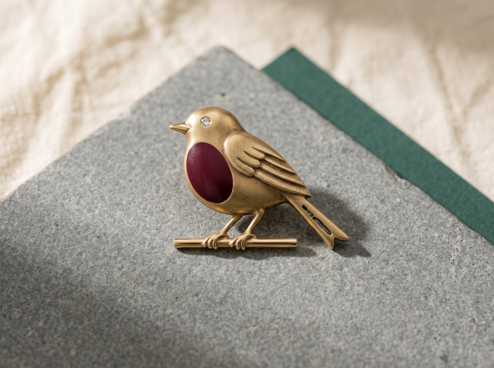
Etsy metni
Başlık 70/140
14K Gold Robin Lapel Pin for Men, Berry Enamel, Lab Grown Sapphire Eye
Etiketler (13)
14k gold lapel pin, mens lapel pin, robin pin, bird lapel pin, enamel lapel pin, berry enamel, vitreous enamel, lab grown sapphire, gold brooch for men, suit pin, christmas gift, gift for him, winter bird
Malzemeler
14k yellow gold, vitreous enamel, lab grown white sapphire, 14k white gold pin stem, 14k gold safety catch
Açıklama
A robin on a perch, its breast in deep berry glass enamel and its eye a lab-grown white sapphire. A winter bird for the lapel, and a Christmas gift for him. THE PIECE 24 mm long and 18 mm tall. The robin faces left on a 16 mm perch bar; four matte feather ridges cross its back and the 10 mm tail points down and back with two open slits. Beak, feet and perch are polished. GOLD WEIGHT 3.53 g of 14k gold, counting the 14k white gold pin stem and the safety catch. On the scale the finished piece weighs 3.58 g in total with the enamel and stones. ENAMEL Kiln-fired vitreous enamel (glass), opaque deep berry, cadmium-free, level with the gold. STONES One 1.5 mm round lab-grown white sapphire, flush set as the eye. Mohs 9. HOW IT FASTENS One pin stem of hardened 14k white gold with a rotating safety catch, the standard fine-jewellery fastening for a brooch worn every day. HOW IT IS MADE Made to order. Cast in 14k gold in one piece, in a zinc-free gold alloy chosen for enamel. The enamel cells are cast into the gold, filled by hand and kiln-fired. Nothing is soldered after the first firing; any fitting added later is laser welded away from the enamel. The stones are set last, cold, after all firing and polishing. CARE Wipe with a soft dry cloth, or wash in warm water with a drop of mild soap. Glass enamel is hard and does not fade, but it can chip if struck against stone or metal. Keep it away from ultrasonic cleaners. No bleach or chlorine. GIFTING Arrives in a gift box, ready to give. Made to order. The processing time is shown at checkout.
Atölye kartı
24 x 18 mm. Govde elips 12.0 x 9.5 x 1.4; gogus hucresi elips 8.0 x 5.0 x 0.55 (taban 0.85, cevre duvar >=0.8). Bas D7.0 x 1.4, goz bossu D3.0 (1.5). Gaga 3.0 x 1.6 x 1.2 r0.4. Kuyruk 10.0 boy, 4.8 -> 3.6, 1.0; ust kenar omurgasi 1.2 x 1.2; 2 yarik 0.6 x 6.0. Tunek 16.0 x 1.4 x 1.4 (uc r0.7), ayaklar 2 x 2.5 x 1.0 x 1.0. Igne hatti ust ucte: mafsal bas arkasi, kilit govde ust-arka (gogus hucresine duzlemde 2.0); igne 14.5 mm. Model +0.2.
Tek parca 14K CINKOSUZ dokum. Lehim yok. Plan dolgu katsayisi yerine acik geometrik govde (elips + daire + ucgen + yamuk). Mine yalniz gogus; bogurtlen tek renk, bandin alt ucunda. Goz tasi bas bossunda (mineden uzak), kilit duz pedde, pisirimlerden sonra.
Tezgâh sırası
- 1. CAD: bitmis + 0.2; acik geometri (elips govde, daire bas); hucre tabani r0.15; goz pilot D0.9; kuyruk yarik uclari r0.3.
- 2. Recine baski; besleme govde arkasi; kuyruk ucuna hava kanali.
- 3. Yatirim + yakma; CINKOSUZ 14K vakum dokum; gozenek kontrolu.
- 4. Tesviye; plaka 1.4, hucre 0.55, kuyruk 1.0 / omurga 1.2.
- 5. Hucre temizligi; goz yuvasi on frezesi.
- 6. Yuzey zenginlestirme 3-4 dongu.
- 7. Karsi-mine: gerekmez (taban 0.85).
- 8. Islak dolum opak derin bogurtlen; Pisirim 1: 765 C, 80 sn.
- 9. Pisirim 2: 765 C, 80 sn.
- 10. Tasla zimpara.
- 11. Pisirim 3: 760 C, 60 sn. Toplam 3; hepsi bandin alt ucu.
- 12. Notr temizlik; tuy sirtlari matlama, gaga/ayak/tunek parlatma.
- 13. 1.5 lab beyaz safir goz, flush.
- 14. Lazer: govde ust-arka pedine 460-12 kilit; maske.
- 15. Igne 14KW 14.5 mm, percin.
- 16. QC: tartim 3.50 g +/- %5, renk kontrolu (bogurtlen kararmasi), kilit.
Malzeme listesi
- Alasim: 14K sari CINKOSUZ mine-uyumlu alasim (Otto Frei 846-180 'No Zinc' master alloy + 24K ile 14K; dokumhaneden yazili Zn=0 sertifikasi + solidus/DSC degeri), vakum/inert gaz dokum. Dokum govde (kulak/ped dahil) 3.136 g x 1.15 = 3.61 g dokum metali (yolluk/kayip payi).
- Mine tozu: kursunsuz opak derin bogurtlen ~108 mg (pisirilmis 43 mg x 2.5); kadmiyum icerigi tedarikciden teyit.
- Tas: 1 x 1.5 mm lab grown white sapphire = 0.0143 ct.
- Bulgular (satin alma): 14K beyaz igne 0.86 mm (Otto Frei 601-14, 38.1 mm'den 14.5 mm'ye kesilir) 0.125 g; 14KY emniyetli doner kilit Otto Frei 460-12 0.22 g (tahmin); 14K percin teli 0.8 mm x 3.0 0.020 g. Toplam bulgu 0.365 g (altin grama dahil).
Arıza modları
| Arıza | Tasarım nasıl önlüyor |
|---|---|
| Kuyruk kafesinin egilmesi (en uzak, ince eleman) | Ust kenarda 1.2 x 1.2 omurga; yarik 3 -> 2 (teller >=0.6). |
| Goz tasinin arkadan cikmasi (orijinal 1.4 plaka, 0.48 taban) | Goz bossu 1.5 (KANIT) + alttan delik. |
| Bogurtlen minenin yuksek isida kararmasi | Tek renk, 760-765 C, kisa sure; kupon. |
| Gram belirsizligi (orijinal 0.75 plan dolgu varsayimi) | Acik geometrik govde; dolgu katsayisi yok. |
Tolerans
| Kural | Değer | |
|---|---|---|
| L1 karat 14K (KANIT karat_policy: 14K vitreous 'marginal', not_viable degil; 18K'ye gecilmez) | 14K sari | ✓ |
| L2 opak vitreous champleve, hucreler dokumde birakilir (oyma degil) | opak, kursunsuz; hucreler mumda modelli | ✓ |
| L2 hucre derinligi 0.5-0.6 | 0.55 | ✓ |
| L2 hucre genisligi >=0.7 ve derinlik <=2x genislik | min genislik 5.0; oran 0.11 | ✓ |
| L2 hucre tabani >=0.8 (karsi-mine gerekmez) | 0.85 | ✓ |
| L2 hucre arasi ve cevre altin duvar >=0.70 | 0.8 | ✓ |
| L2 hucre icinde kabartma/doku yok | duz, filetolu taban (r0.15) | ✓ |
| L2 palet + renk sayisi | 1 renk: derin bogurtlen | ✓ |
| L2 pisirim <=4 dongu, <=790 C (KANIT) | 3 pisirim, 760-765 C (bogurtlen alt uc) | ✓ |
| L3 ilk pisirimden sonra hamlac lehimi yok | lehim baglantisi 0; mafsal kulaklari govdeyle tek dokum; kilit pisirim sonrasi lazerle | ✓ |
| L3 pisirim sonrasi lazer, ciplak ped, mineye >=1.5 | duz ped, duzlemde 2.0 | ✓ |
| L4 lab-grown 1.3-2.0 flush, <=7 | 1 x 1.5 | ✓ |
| L4 ev sahibi (KANIT 1.5) + delik | 1.5, D0.9 | ✓ |
| L4 yanal duvar / mine kenarina | >=2.0 / >3 mm | ✓ |
| L5 dekoratif >=0.6 | kuyruk teli 0.6, tuy sirti 0.6 | ✓ |
| L5 yapisal >=0.8 | govde 1.4, tunek 1.4 x 1.4, kuyruk 1.0 + omurga 1.2 | ✓ |
| L5 mafsal kesiti >=1.0 | kulak 1.0 x 2.0 x 2.2 | ✓ |
| L5 aciklik >=0.6 ve derinlik <=2x | yarik 0.6, derinlik 1.0 -> 1.67 | ✓ |
| L5 model +0.2 / uc r>=0.4 | +0.2; gaga r0.4, tunek r0.7, kuyruk r0.4 | ✓ |
| L6 hollow (yalniz kolye/bros, asla mineyle degil) | kati govde, hollow yok; 'solid' basliga girebilir | ✓ |
| L7 bros bandi 3.0-4.2 g altin (bulgu dahil) | 3.501 g (govde 3.136 + bulgu 0.365); tavana pay 0.70 g | ✓ |
| L10 <=30 tek igne; mafsal ustte; doner kilit | 24 x 18 (en/boy 1.33, uzun form degil) -> tek igne 14.5, bas/govde ust hattinda; 460-12 | ✓ |
| L12 tek kahraman ozellik | bogurtlen gogus | ✓ |
Görsel promptları (16)
- 01Hero / arama küçük resmi: tek ürün, marka natürmortu, 4:3.Referanssız
Quiet luxury editorial still-life product photography. Warm ivory linen ground, honed grey stone slab, a sliver of deep jade-green matte card. Soft directional window light from upper left, long soft shadow, shallow depth of field. Solid yellow gold with warm antique tone. Restrained heirloom mood. No text, no logo, no glitter, no Christmas decoration. The piece: Men's lapel pin in 14K yellow gold, 24 mm long and 18 mm tall: a robin in side profile facing left, standing on a 16 mm straight perch bar. The oval breast holds one 8 by 5 mm field of opaque deep berry enamel (a dark wine red, not bright red), level with the gold. The round 7 mm head has one 1.5 mm lab grown white sapphire eye, flush-set. Four raised feather ridges with a matte finish cross the upper back of the body. The 10 mm tail points steeply down and back to the right; it has two open slits and a solid top edge. Beak, feet and perch are polished. Back: 14K white gold pin stem with a rotating safety catch. The stones are exactly these and no others: one 1.5 mm round lab-grown white sapphire flush-set as the robin's eye. No other stone and no empty setting anywhere on the piece. The only colour on the piece is opaque deep berry enamel filling the single oval cell on the robin's breast; every other surface is yellow gold. The brooch lies face up, centred on the honed grey stone slab, pin hidden behind it; exactly one brooch. Seen from about 30 degrees above with a 100 mm macro lens, the piece in razor-sharp focus, filling about 45 percent of the frame width, centred with generous empty margin on all four sides. No people and no hands.
Alt metin 14K gold robin lapel pin with a deep berry enamel breast
- 02Takılı hâli: ölçek ve duruş. Hero'dan sonra dönüşümü en çok etkileyen kare.Referans: hero kırpımı
Quiet luxury editorial photography in warm ivory, stone grey and deep jade-green tones, soft directional window light from the upper left, true colour, fine film grain, no heavy retouching. No text, no logo, no watermark, no glitter. The attached reference image is a crop of this exact piece: keep its shape, proportions, gold colour, enamel colours and stones exactly as in the reference. The piece: Men's lapel pin in 14K yellow gold, 24 mm long and 18 mm tall: a robin in side profile facing left, standing on a 16 mm straight perch bar. The oval breast holds one 8 by 5 mm field of opaque deep berry enamel (a dark wine red, not bright red), level with the gold. The round 7 mm head has one 1.5 mm lab grown white sapphire eye, flush-set. Four raised feather ridges with a matte finish cross the upper back of the body. The 10 mm tail points steeply down and back to the right; it has two open slits and a solid top edge. Beak, feet and perch are polished. Back: 14K white gold pin stem with a rotating safety catch. The stones are exactly these and no others: one 1.5 mm round lab-grown white sapphire flush-set as the robin's eye. No other stone and no empty setting anywhere on the piece. The only colour on the piece is opaque deep berry enamel filling the single oval cell on the robin's breast; every other surface is yellow gold. Pinned through the left lapel of a man's charcoal grey wool flannel suit jacket at the buttonhole, white shirt, no tie, cropped from collar to chest so no face shows; exactly one pin on the jacket and no pocket square; true to scale, the main element measures about 24 mm across.
Alt metin 14K gold robin lapel pin with a deep berry enamel breast, worn
- 03Makro işçilik: fiyatı meşrulaştıran detay (mine yüzeyi, flush taş, kenar bitimi).Referans: hero kırpımı
Quiet luxury editorial photography in warm ivory, stone grey and deep jade-green tones, soft directional window light from the upper left, true colour, fine film grain, no heavy retouching. No text, no logo, no watermark, no glitter. The attached reference image is a crop of this exact piece: keep its shape, proportions, gold colour, enamel colours and stones exactly as in the reference. The piece: Men's lapel pin in 14K yellow gold, 24 mm long and 18 mm tall: a robin in side profile facing left, standing on a 16 mm straight perch bar. The oval breast holds one 8 by 5 mm field of opaque deep berry enamel (a dark wine red, not bright red), level with the gold. The round 7 mm head has one 1.5 mm lab grown white sapphire eye, flush-set. Four raised feather ridges with a matte finish cross the upper back of the body. The 10 mm tail points steeply down and back to the right; it has two open slits and a solid top edge. Beak, feet and perch are polished. Back: 14K white gold pin stem with a rotating safety catch. The stones are exactly these and no others: one 1.5 mm round lab-grown white sapphire flush-set as the robin's eye. No other stone and no empty setting anywhere on the piece. The only colour on the piece is opaque deep berry enamel filling the single oval cell on the robin's breast; every other surface is yellow gold. Extreme close-up macro, 100 mm macro lens: The robin's head with its flush-set lab-grown white sapphire eye and the deep berry enamel breast below it. The rest of the piece falls away into soft focus on warm-ivory linen.
Alt metin Close-up of the robin's sapphire eye and berry enamel breast
- 04Elde ölçek: mm'yi parmak ucuna çevirir, 'beklediğimden küçük' iadesini önler.Referans: hero kırpımı
Quiet luxury editorial photography in warm ivory, stone grey and deep jade-green tones, soft directional window light from the upper left, true colour, fine film grain, no heavy retouching. No text, no logo, no watermark, no glitter. The attached reference image is a crop of this exact piece: keep its shape, proportions, gold colour, enamel colours and stones exactly as in the reference. The piece: Men's lapel pin in 14K yellow gold, 24 mm long and 18 mm tall: a robin in side profile facing left, standing on a 16 mm straight perch bar. The oval breast holds one 8 by 5 mm field of opaque deep berry enamel (a dark wine red, not bright red), level with the gold. The round 7 mm head has one 1.5 mm lab grown white sapphire eye, flush-set. Four raised feather ridges with a matte finish cross the upper back of the body. The 10 mm tail points steeply down and back to the right; it has two open slits and a solid top edge. Beak, feet and perch are polished. Back: 14K white gold pin stem with a rotating safety catch. The stones are exactly these and no others: one 1.5 mm round lab-grown white sapphire flush-set as the robin's eye. No other stone and no empty setting anywhere on the piece. The only colour on the piece is opaque deep berry enamel filling the single oval cell on the robin's breast; every other surface is yellow gold. Close-up for scale against a plain warm-ivory background thrown softly out of focus: the brooch resting face up on the open palm of a woman's hand; true to scale, the main element measures about 24 mm across, a fingertip is about 16 mm wide; it is the only jewellery in the image; anatomically correct hands with five fingers, short natural unpolished nails.
Alt metin 14K gold robin lapel pin with a deep berry enamel breast, held between fingers for scale
- 05Arka ve bulgular: dolu gövde, kilit / çivi / iğne; sağlamlık sorusunu cevaplar.Referans: hero kırpımı
Quiet luxury editorial photography in warm ivory, stone grey and deep jade-green tones, soft directional window light from the upper left, true colour, fine film grain, no heavy retouching. No text, no logo, no watermark, no glitter. The attached reference image is a crop of this exact piece: keep its shape, proportions, gold colour, enamel colours and stones exactly as in the reference. The piece: Men's lapel pin in 14K yellow gold, 24 mm long and 18 mm tall: a robin in side profile facing left, standing on a 16 mm straight perch bar. The oval breast holds one 8 by 5 mm field of opaque deep berry enamel (a dark wine red, not bright red), level with the gold. The round 7 mm head has one 1.5 mm lab grown white sapphire eye, flush-set. Four raised feather ridges with a matte finish cross the upper back of the body. The 10 mm tail points steeply down and back to the right; it has two open slits and a solid top edge. Beak, feet and perch are polished. Back: 14K white gold pin stem with a rotating safety catch. The stones are exactly these and no others: one 1.5 mm round lab-grown white sapphire flush-set as the robin's eye. No other stone and no empty setting anywhere on the piece. The only colour on the piece is opaque deep berry enamel filling the single oval cell on the robin's breast; every other surface is yellow gold. The back of the piece, top-down on honed grey stone: The flat back of the robin and perch with the 14K white gold pin stem, the hinge and the rotating safety catch.
Alt metin Back of the lapel pin showing the pin stem and safety catch
- 06Tam boy / çift / mekanizma: uzunluk, ayar ve ne geldiğini tek karede gösterir.Referans: hero kırpımı
Quiet luxury editorial photography in warm ivory, stone grey and deep jade-green tones, soft directional window light from the upper left, true colour, fine film grain, no heavy retouching. No text, no logo, no watermark, no glitter. The attached reference image is a crop of this exact piece: keep its shape, proportions, gold colour, enamel colours and stones exactly as in the reference. The piece: Men's lapel pin in 14K yellow gold, 24 mm long and 18 mm tall: a robin in side profile facing left, standing on a 16 mm straight perch bar. The oval breast holds one 8 by 5 mm field of opaque deep berry enamel (a dark wine red, not bright red), level with the gold. The round 7 mm head has one 1.5 mm lab grown white sapphire eye, flush-set. Four raised feather ridges with a matte finish cross the upper back of the body. The 10 mm tail points steeply down and back to the right; it has two open slits and a solid top edge. Beak, feet and perch are polished. Back: 14K white gold pin stem with a rotating safety catch. The stones are exactly these and no others: one 1.5 mm round lab-grown white sapphire flush-set as the robin's eye. No other stone and no empty setting anywhere on the piece. The only colour on the piece is opaque deep berry enamel filling the single oval cell on the robin's breast; every other surface is yellow gold. The brooch lying face down on honed grey stone with its pin stem swung open out of the safety catch so the full length of the pin, the hinge joint and the open catch are all visible, top-down.
Alt metin 14K gold robin lapel pin with a deep berry enamel breast, pin open
- 07Yan profil: kalınlık ve kütle, düz baskı değil gerçek altın olduğunu gösterir.Referans: hero kırpımı
Quiet luxury editorial photography in warm ivory, stone grey and deep jade-green tones, soft directional window light from the upper left, true colour, fine film grain, no heavy retouching. No text, no logo, no watermark, no glitter. The attached reference image is a crop of this exact piece: keep its shape, proportions, gold colour, enamel colours and stones exactly as in the reference. The piece: Men's lapel pin in 14K yellow gold, 24 mm long and 18 mm tall: a robin in side profile facing left, standing on a 16 mm straight perch bar. The oval breast holds one 8 by 5 mm field of opaque deep berry enamel (a dark wine red, not bright red), level with the gold. The round 7 mm head has one 1.5 mm lab grown white sapphire eye, flush-set. Four raised feather ridges with a matte finish cross the upper back of the body. The 10 mm tail points steeply down and back to the right; it has two open slits and a solid top edge. Beak, feet and perch are polished. Back: 14K white gold pin stem with a rotating safety catch. The stones are exactly these and no others: one 1.5 mm round lab-grown white sapphire flush-set as the robin's eye. No other stone and no empty setting anywhere on the piece. The only colour on the piece is opaque deep berry enamel filling the single oval cell on the robin's breast; every other surface is yellow gold. Side profile at eye level on honed grey stone, the camera level with the piece: A flat bird 1.4 mm thick standing on a 1.4 mm perch bar.
Alt metin Side profile of the lapel pin showing its thickness
- 08Kış yaşam stili: sezonu Noel dekoru olmadan kurar.Referans: hero kırpımı
Quiet luxury editorial photography in warm ivory, stone grey and deep jade-green tones, soft directional window light from the upper left, true colour, fine film grain, no heavy retouching. No text, no logo, no watermark, no glitter. The attached reference image is a crop of this exact piece: keep its shape, proportions, gold colour, enamel colours and stones exactly as in the reference. The piece: Men's lapel pin in 14K yellow gold, 24 mm long and 18 mm tall: a robin in side profile facing left, standing on a 16 mm straight perch bar. The oval breast holds one 8 by 5 mm field of opaque deep berry enamel (a dark wine red, not bright red), level with the gold. The round 7 mm head has one 1.5 mm lab grown white sapphire eye, flush-set. Four raised feather ridges with a matte finish cross the upper back of the body. The 10 mm tail points steeply down and back to the right; it has two open slits and a solid top edge. Beak, feet and perch are polished. Back: 14K white gold pin stem with a rotating safety catch. The stones are exactly these and no others: one 1.5 mm round lab-grown white sapphire flush-set as the robin's eye. No other stone and no empty setting anywhere on the piece. The only colour on the piece is opaque deep berry enamel filling the single oval cell on the robin's breast; every other surface is yellow gold. Outdoors in pale winter light: a man in a navy wool overcoat with the pin through the left lapel, a grey scarf, cropped from collar to chest so no face shows; exactly one pin.
Alt metin 14K gold robin lapel pin with a deep berry enamel breast, styled with winter knitwear
- 09Hediye kutusu: Noel alıcısının ilk sorusu, hediyeye hazır mı?Referans: hero kırpımı
Quiet luxury editorial photography in warm ivory, stone grey and deep jade-green tones, soft directional window light from the upper left, true colour, fine film grain, no heavy retouching. No text, no logo, no watermark, no glitter. The attached reference image is a crop of this exact piece: keep its shape, proportions, gold colour, enamel colours and stones exactly as in the reference. The piece: Men's lapel pin in 14K yellow gold, 24 mm long and 18 mm tall: a robin in side profile facing left, standing on a 16 mm straight perch bar. The oval breast holds one 8 by 5 mm field of opaque deep berry enamel (a dark wine red, not bright red), level with the gold. The round 7 mm head has one 1.5 mm lab grown white sapphire eye, flush-set. Four raised feather ridges with a matte finish cross the upper back of the body. The 10 mm tail points steeply down and back to the right; it has two open slits and a solid top edge. Beak, feet and perch are polished. Back: 14K white gold pin stem with a rotating safety catch. The stones are exactly these and no others: one 1.5 mm round lab-grown white sapphire flush-set as the robin's eye. No other stone and no empty setting anywhere on the piece. The only colour on the piece is opaque deep berry enamel filling the single oval cell on the robin's breast; every other surface is yellow gold. Top-down: the brooch face up inside a small open square gift box in plain warm-ivory card with a soft ivory insert, the lid set beside it, a length of narrow deep jade-green ribbon untied beside the box, on honed grey stone. No branding, no printed pattern, no tissue paper, no Christmas decoration, exactly one box.
Alt metin 14K gold robin lapel pin with a deep berry enamel breast in a gift box
- 10Gerçek renk: nötr gün ışığında altın ve mine rengi; renk kaynaklı iadeyi azaltır.Referans: hero kırpımı
Quiet luxury editorial photography in warm ivory, stone grey and deep jade-green tones, soft directional window light from the upper left, true colour, fine film grain, no heavy retouching. No text, no logo, no watermark, no glitter. The attached reference image is a crop of this exact piece: keep its shape, proportions, gold colour, enamel colours and stones exactly as in the reference. The piece: Men's lapel pin in 14K yellow gold, 24 mm long and 18 mm tall: a robin in side profile facing left, standing on a 16 mm straight perch bar. The oval breast holds one 8 by 5 mm field of opaque deep berry enamel (a dark wine red, not bright red), level with the gold. The round 7 mm head has one 1.5 mm lab grown white sapphire eye, flush-set. Four raised feather ridges with a matte finish cross the upper back of the body. The 10 mm tail points steeply down and back to the right; it has two open slits and a solid top edge. Beak, feet and perch are polished. Back: 14K white gold pin stem with a rotating safety catch. The stones are exactly these and no others: one 1.5 mm round lab-grown white sapphire flush-set as the robin's eye. No other stone and no empty setting anywhere on the piece. The only colour on the piece is opaque deep berry enamel filling the single oval cell on the robin's breast; every other surface is yellow gold. Colour-accurate reference shot: the piece alone, top-down on plain matte white-ivory paper under even neutral north daylight, no shadow drama, no props, the piece centred and filling half the frame.
Alt metin 14K gold robin lapel pin with a deep berry enamel breast in neutral daylight, true colour
- 11Ölçü grafiği tabanı: sağ üçte bir boş; mm etiketleri sonra eklenir.Referans: hero kırpımı
Quiet luxury editorial photography in warm ivory, stone grey and deep jade-green tones, soft directional window light from the upper left, true colour, fine film grain, no heavy retouching. No text, no logo, no watermark, no glitter. The attached reference image is a crop of this exact piece: keep its shape, proportions, gold colour, enamel colours and stones exactly as in the reference. The piece: Men's lapel pin in 14K yellow gold, 24 mm long and 18 mm tall: a robin in side profile facing left, standing on a 16 mm straight perch bar. The oval breast holds one 8 by 5 mm field of opaque deep berry enamel (a dark wine red, not bright red), level with the gold. The round 7 mm head has one 1.5 mm lab grown white sapphire eye, flush-set. Four raised feather ridges with a matte finish cross the upper back of the body. The 10 mm tail points steeply down and back to the right; it has two open slits and a solid top edge. Beak, feet and perch are polished. Back: 14K white gold pin stem with a rotating safety catch. The stones are exactly these and no others: one 1.5 mm round lab-grown white sapphire flush-set as the robin's eye. No other stone and no empty setting anywhere on the piece. The only colour on the piece is opaque deep berry enamel filling the single oval cell on the robin's breast; every other surface is yellow gold. The piece alone, top-down on plain warm-ivory paper, placed in the left two thirds of the frame; the right third is empty paper for dimension labels to be added later; even soft light, no props.
Alt metin 14K gold robin lapel pin with a deep berry enamel breast with space for dimensions
- 12El işçiliği: siparişe üretim hikâyesi, tezgâhta parça.Referans: hero kırpımı
Quiet luxury editorial photography in warm ivory, stone grey and deep jade-green tones, soft directional window light from the upper left, true colour, fine film grain, no heavy retouching. No text, no logo, no watermark, no glitter. The attached reference image is a crop of this exact piece: keep its shape, proportions, gold colour, enamel colours and stones exactly as in the reference. The piece: Men's lapel pin in 14K yellow gold, 24 mm long and 18 mm tall: a robin in side profile facing left, standing on a 16 mm straight perch bar. The oval breast holds one 8 by 5 mm field of opaque deep berry enamel (a dark wine red, not bright red), level with the gold. The round 7 mm head has one 1.5 mm lab grown white sapphire eye, flush-set. Four raised feather ridges with a matte finish cross the upper back of the body. The 10 mm tail points steeply down and back to the right; it has two open slits and a solid top edge. Beak, feet and perch are polished. Back: 14K white gold pin stem with a rotating safety catch. The stones are exactly these and no others: one 1.5 mm round lab-grown white sapphire flush-set as the robin's eye. No other stone and no empty setting anywhere on the piece. The only colour on the piece is opaque deep berry enamel filling the single oval cell on the robin's breast; every other surface is yellow gold. The finished piece lying on a worn wooden jeweller's bench pin beside a small porcelain dish of deep berry enamel powder, a fine sable brush and a pair of brass tweezers, warm lamp light, shallow depth of field, the piece in sharp focus; no hands.
Alt metin 14K gold robin lapel pin with a deep berry enamel breast on a jeweller's bench
- 13Motifin anlamı: sol üçte bir boş; sembol hikâyesi metni sonra eklenir.Referans: hero kırpımı
Quiet luxury editorial photography in warm ivory, stone grey and deep jade-green tones, soft directional window light from the upper left, true colour, fine film grain, no heavy retouching. No text, no logo, no watermark, no glitter. The attached reference image is a crop of this exact piece: keep its shape, proportions, gold colour, enamel colours and stones exactly as in the reference. The piece: Men's lapel pin in 14K yellow gold, 24 mm long and 18 mm tall: a robin in side profile facing left, standing on a 16 mm straight perch bar. The oval breast holds one 8 by 5 mm field of opaque deep berry enamel (a dark wine red, not bright red), level with the gold. The round 7 mm head has one 1.5 mm lab grown white sapphire eye, flush-set. Four raised feather ridges with a matte finish cross the upper back of the body. The 10 mm tail points steeply down and back to the right; it has two open slits and a solid top edge. Beak, feet and perch are polished. Back: 14K white gold pin stem with a rotating safety catch. The stones are exactly these and no others: one 1.5 mm round lab-grown white sapphire flush-set as the robin's eye. No other stone and no empty setting anywhere on the piece. The only colour on the piece is opaque deep berry enamel filling the single oval cell on the robin's breast; every other surface is yellow gold. The piece alone, top-down on a deep jade-green matte card, placed in the right two thirds of the frame; the left third is empty card for a caption to be added later; soft directional light.
Alt metin 14K gold robin lapel pin with a deep berry enamel breast on a deep green card
- 14Yıl boyu takılır: 'yalnız Noel' itirazını kırar.Referans: hero kırpımı
Quiet luxury editorial photography in warm ivory, stone grey and deep jade-green tones, soft directional window light from the upper left, true colour, fine film grain, no heavy retouching. No text, no logo, no watermark, no glitter. The attached reference image is a crop of this exact piece: keep its shape, proportions, gold colour, enamel colours and stones exactly as in the reference. The piece: Men's lapel pin in 14K yellow gold, 24 mm long and 18 mm tall: a robin in side profile facing left, standing on a 16 mm straight perch bar. The oval breast holds one 8 by 5 mm field of opaque deep berry enamel (a dark wine red, not bright red), level with the gold. The round 7 mm head has one 1.5 mm lab grown white sapphire eye, flush-set. Four raised feather ridges with a matte finish cross the upper back of the body. The 10 mm tail points steeply down and back to the right; it has two open slits and a solid top edge. Beak, feet and perch are polished. Back: 14K white gold pin stem with a rotating safety catch. The stones are exactly these and no others: one 1.5 mm round lab-grown white sapphire flush-set as the robin's eye. No other stone and no empty setting anywhere on the piece. The only colour on the piece is opaque deep berry enamel filling the single oval cell on the robin's breast; every other surface is yellow gold. Everyday wear, no season: the pin on the lapel of a man's unstructured stone-grey linen blazer over a white t-shirt, soft daylight, cropped from collar to chest; exactly one pin.
Alt metin 14K gold robin lapel pin with a deep berry enamel breast, everyday wear
- 15Hediye anı: duygu; Noel satın alma niyetine bağlar.Referans: hero kırpımı
Quiet luxury editorial photography in warm ivory, stone grey and deep jade-green tones, soft directional window light from the upper left, true colour, fine film grain, no heavy retouching. No text, no logo, no watermark, no glitter. The attached reference image is a crop of this exact piece: keep its shape, proportions, gold colour, enamel colours and stones exactly as in the reference. The piece: Men's lapel pin in 14K yellow gold, 24 mm long and 18 mm tall: a robin in side profile facing left, standing on a 16 mm straight perch bar. The oval breast holds one 8 by 5 mm field of opaque deep berry enamel (a dark wine red, not bright red), level with the gold. The round 7 mm head has one 1.5 mm lab grown white sapphire eye, flush-set. Four raised feather ridges with a matte finish cross the upper back of the body. The 10 mm tail points steeply down and back to the right; it has two open slits and a solid top edge. Beak, feet and perch are polished. Back: 14K white gold pin stem with a rotating safety catch. The stones are exactly these and no others: one 1.5 mm round lab-grown white sapphire flush-set as the robin's eye. No other stone and no empty setting anywhere on the piece. The only colour on the piece is opaque deep berry enamel filling the single oval cell on the robin's breast; every other surface is yellow gold. A gift being given: two pairs of hands across a pale oak table, one pair holding out the small open warm-ivory gift box with the piece visible inside, the other reaching for it, soft warm window light, sleeves of ivory and grey knitwear; exactly one box and one piece of jewellery; anatomically correct hands with five fingers, short natural unpolished nails.
Alt metin 14K gold robin lapel pin with a deep berry enamel breast given as a gift
- 16Mağaza ızgarası / Pinterest: koyu jade zeminde yüksek kontrast kare.Referans: hero kırpımı
Quiet luxury editorial photography in warm ivory, stone grey and deep jade-green tones, soft directional window light from the upper left, true colour, fine film grain, no heavy retouching. No text, no logo, no watermark, no glitter. The attached reference image is a crop of this exact piece: keep its shape, proportions, gold colour, enamel colours and stones exactly as in the reference. The piece: Men's lapel pin in 14K yellow gold, 24 mm long and 18 mm tall: a robin in side profile facing left, standing on a 16 mm straight perch bar. The oval breast holds one 8 by 5 mm field of opaque deep berry enamel (a dark wine red, not bright red), level with the gold. The round 7 mm head has one 1.5 mm lab grown white sapphire eye, flush-set. Four raised feather ridges with a matte finish cross the upper back of the body. The 10 mm tail points steeply down and back to the right; it has two open slits and a solid top edge. Beak, feet and perch are polished. Back: 14K white gold pin stem with a rotating safety catch. The stones are exactly these and no others: one 1.5 mm round lab-grown white sapphire flush-set as the robin's eye. No other stone and no empty setting anywhere on the piece. The only colour on the piece is opaque deep berry enamel filling the single oval cell on the robin's breast; every other surface is yellow gold. Top-down flat lay of the piece centred on a deep jade-green matte card with a narrow border of warm-ivory linen at the top edge, crisp soft light, the piece filling about 40 percent of the frame so a square crop keeps all of it.
Alt metin 14K gold robin lapel pin with a deep berry enamel breast, flat lay on deep green
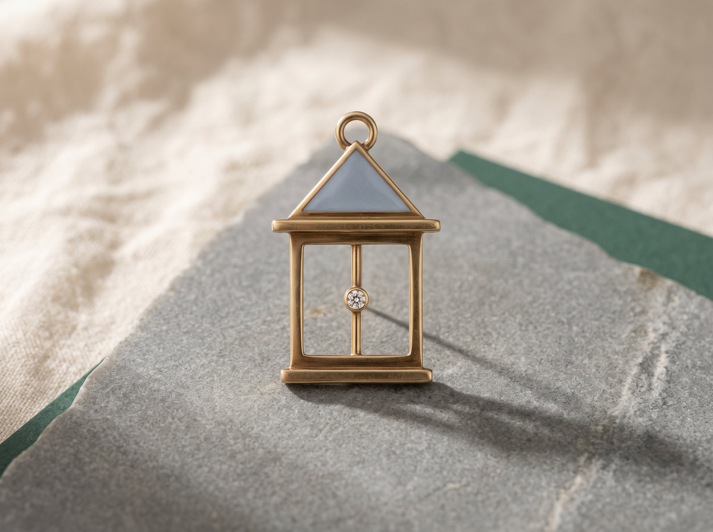
Etsy metni
Başlık 84/140
14K Gold Lantern Brooch, Ice Blue Enamel Roof, Lab Grown Sapphire Flame, Winter Gift
Etiketler (13)
14k gold brooch, lantern brooch, enamel brooch, ice blue enamel, vitreous enamel, lab grown sapphire, winter jewelry, candle brooch, christmas gift, gift for her, coat brooch, solid gold brooch, cozy gift
Malzemeler
14k yellow gold, vitreous enamel, lab grown white sapphire, 14k white gold pin stem, 14k gold safety catch
Açıklama
A small lantern in 14k gold: an ice-blue glass enamel roof, an open window, and a lab-grown white sapphire standing in for the flame. A winter-evening brooch for Christmas and the months after. THE PIECE 25.6 mm tall and 15 mm wide. A round hanging ring sits on the triangular roof; two 1.4 mm posts frame an open window 11.2 by 12 mm, with a 1.0 mm gold rod rising to the stone at its centre. GOLD WEIGHT 3.36 g of 14k gold, counting the 14k white gold pin stem and the safety catch. On the scale the finished piece weighs 3.39 g in total with the enamel and stones. ENAMEL Kiln-fired vitreous enamel (glass), opaque ice blue, level with the gold roof edges. STONES One 1.8 mm round lab-grown white sapphire in a round tube collet, open at the back. Mohs 9. HOW IT FASTENS One pin stem of hardened 14k white gold with a rotating safety catch, the standard fine-jewellery fastening for a brooch worn every day. HOW IT IS MADE Made to order. Cast in 14k gold in one piece, in a zinc-free gold alloy chosen for enamel. The enamel cells are cast into the gold, filled by hand and kiln-fired. Nothing is soldered after the first firing; any fitting added later is laser welded away from the enamel. The stones are set last, cold, after all firing and polishing. CARE Wipe with a soft dry cloth, or wash in warm water with a drop of mild soap. Glass enamel is hard and does not fade, but it can chip if struck against stone or metal. Keep it away from ultrasonic cleaners. No bleach or chlorine. GIFTING Arrives in a gift box, ready to give. Made to order. The processing time is shown at checkout.
Atölye kartı
25.6 x 15.0 mm. Halka orta cap 3.0, kesit 1.0 x 1.0. Cati ucgeni 14.0 x 5.5 x 1.45; ucgen hucre 10.0 x 3.4 x 0.55 (taban 0.90, cevre duvar >=0.9). Sacak 15.0 x 1.4 x 1.4. Direkler 2 x 12.0 x 1.4 x 1.4; pencere 11.2 x 12.0 acik; alt ray 12.0 x 1.2 x 1.4; kaide 13.0 x 2.0 x 1.4. Alev cubugu 4.5 x 1.0 x 1.0; kolet tup OD2.8 x 1.7, arkasi D1.0 acik. Igne hatti sacak arkasinda (ust ucte); igne 13.0 mm. Model +0.2.
Tek parca 14K CINKOSUZ dokum, 2.5D (on gorunus), HOLLOW YOK. Lehim yok. Mine yalniz cati; tas pencere ortasinda (mineye ~8 mm). Kilit sacak arkasinda D1.6 x 1.2 + 2.6 x 2.6 x 0.8 kaideye lazer (cati hucresine 3D >=1.5).
Tezgâh sırası
- 1. CAD: 2.5D tek govde, bitmis + 0.2; cati hucresi r0.4 koseler; kolet D1.0 delik (derinlik/cap 1.7).
- 2. Recine baski; besleme kaide arkasi + sacak arkasi (iki uc).
- 3. Yatirim + yakma; CINKOSUZ 14K vakum dokum; gozenek kontrolu (cati hucresi).
- 4. Tesviye; direk 1.4 x 1.4, cati 1.45, alev cubugu 1.0.
- 5. Hucre temizligi; kolet yuvasi on frezesi.
- 6. Yuzey zenginlestirme 3-4 dongu.
- 7. Karsi-mine: gerekmez (taban 0.90).
- 8. Islak dolum opak buz mavisi; Pisirim 1: 780 C, 75 sn (parca kaide uzerinde duz).
- 9. Pisirim 2: 780 C, 75 sn.
- 10. Tasla zimpara.
- 11. Pisirim 3: 770 C, 50 sn. Toplam 3.
- 12. Notr temizlik; direk/ray parlatma.
- 13. 1.8 lab beyaz safir kolete flush (cubuk destekli, burnisor).
- 14. Lazer: sacak arkasi kaideye 460-12 kilit; maske.
- 15. Igne 14KW 13.0 mm, percin.
- 16. QC: tartim 3.35 g +/- %5, alev cubugu egilme kontrolu, kilit.
Malzeme listesi
- Alasim: 14K sari CINKOSUZ mine-uyumlu alasim (Otto Frei 846-180 'No Zinc' master alloy + 24K ile 14K; dokumhaneden yazili Zn=0 sertifikasi + solidus/DSC degeri), vakum/inert gaz dokum. Dokum govde (kulak/ped dahil) 2.992 g x 1.15 = 3.44 g dokum metali (yolluk/kayip payi).
- Mine tozu: kursunsuz opak buz mavisi ~58 mg.
- Tas: 1 x 1.8 mm lab grown white sapphire = 0.0247 ct.
- Bulgular (satin alma): 14K beyaz igne 0.86 mm (Otto Frei 601-14, 38.1 mm'den 13.0 mm'ye kesilir) 0.114 g; 14KY emniyetli doner kilit Otto Frei 460-12 0.22 g (tahmin); 14K percin teli 0.8 mm x 3.0 0.020 g. Toplam bulgu 0.354 g (altin grama dahil).
Arıza modları
| Arıza | Tasarım nasıl önlüyor |
|---|---|
| Mineli hollow cati (orijinal) - L6 ihlali, ic yuzeye karsi-mine surulemez | 2.5D duz cati plakasi, hollow yok. |
| 14:1 ince direklerin yakada egilmesi (orijinal 1.0 x 1.0 x 14) | Direkler 1.4 x 1.4 x 12. |
| Alev koletinin cubuk ustunde sallanmasi | Cubuk 1.0 x 1.0 x 4.5, tek dokum; QC egilme testi. |
| 'Dort yandan gorunen tas' iddiasi ile flush ayarin celismesi | Tup kolet arkasi acik: isik arkadan girer; iddia 'arkasi acik' olarak duzeltildi. |
Tolerans
| Kural | Değer | |
|---|---|---|
| L1 karat 14K (KANIT karat_policy: 14K vitreous 'marginal', not_viable degil; 18K'ye gecilmez) | 14K sari | ✓ |
| L2 opak vitreous champleve, hucreler dokumde birakilir (oyma degil) | opak, kursunsuz; hucreler mumda modelli | ✓ |
| L2 hucre derinligi 0.5-0.6 | 0.55 | ✓ |
| L2 hucre genisligi >=0.7 ve derinlik <=2x genislik | min genislik 1.0; oran 0.55 | ✓ |
| L2 hucre tabani >=0.8 (karsi-mine gerekmez) | 0.9 | ✓ |
| L2 hucre arasi ve cevre altin duvar >=0.70 | 0.9 | ✓ |
| L2 hucre icinde kabartma/doku yok | duz, filetolu taban (r0.15) | ✓ |
| L2 palet + renk sayisi | 1 renk: buz mavisi | ✓ |
| L2 pisirim <=4 dongu, <=790 C (KANIT) | 3 pisirim, 770-780 C | ✓ |
| L3 ilk pisirimden sonra hamlac lehimi yok | lehim baglantisi 0; mafsal kulaklari govdeyle tek dokum; kilit pisirim sonrasi lazerle | ✓ |
| L3 pisirim sonrasi lazer, mineye >=1.5 | kaide, 3D >=1.5 | ✓ |
| L4 lab-grown 1.3-2.0 flush, <=7 | 1 x 1.8 | ✓ |
| L4 ev sahibi (KANIT 1.8 -> 1.7) + delik | 1.7, D1.0 | ✓ |
| L4 yanal duvar (KANIT 0.45) / mine kenarina | 0.5 / ~8 mm | ✓ |
| L5 dekoratif >=0.6 / yapisal >=0.8 | cubuk 1.0; direk 1.4, ray 1.2-1.4 | ✓ |
| L5 mafsal kesiti >=1.0 | kulak 1.0 x 2.4 x 4.2; ask halkasi 1.0 x 1.0 | ✓ |
| L5 aciklik >=0.6 | pencere 11.2 x 12.0; halka ici D2.0 | ✓ |
| L5 model +0.2 / uc r>=0.4 | +0.2; kaide koseleri r0.5 | ✓ |
| L6 hollow yok (mineli parca) | kati 2.5D; drenaj deligi gereksiz | ✓ |
| L7 bros bandi 3.0-4.2 g altin (bulgu dahil) | 3.345 g (govde 2.992 + bulgu 0.354); tavana pay 0.85 g | ✓ |
| L10 <=30 tek igne; mafsal ustte; doner kilit | 25.6 x 15 (en/boy 1.7) -> tek igne 13.0, sacakta (ust %35); 460-12 | ✓ |
| L12 tek kahraman ozellik | buz mavisi cati + pencerede alev tasi | ✓ |
Görsel promptları (16)
- 01Hero / arama küçük resmi: tek ürün, marka natürmortu, 4:3.Referanssız
Quiet luxury editorial still-life product photography. Warm ivory linen ground, honed grey stone slab, a sliver of deep jade-green matte card. Soft directional window light from upper left, long soft shadow, shallow depth of field. Solid yellow gold with warm antique tone. Restrained heirloom mood. No text, no logo, no glitter, no Christmas decoration. The piece: Brooch in 14K yellow gold, 25.6 mm tall and 15 mm wide: a lantern seen from the front. A round hanging ring sits on a triangular roof holding one triangular field of opaque ice-blue enamel (a soft pale powder blue with a grey cast), level with the gold. The roof rests on a 15 mm gold eave bar. Two 1.4 mm side posts frame an open window 11.2 mm wide and 12 mm tall. In the window centre a 1.0 mm gold rod rises from the lower rail to a round tube collet holding one 1.8 mm lab grown white sapphire, open at the back. A 13 by 2 mm base below; polished posts and rails. Back: 14K white gold pin stem with a rotating safety catch. The stones are exactly these and no others: one 1.8 mm round lab-grown white sapphire in a round tube collet on the gold rod at the centre of the window. No other stone and no empty setting anywhere on the piece. The only colour on the piece is opaque ice-blue enamel filling the single triangular field of the roof; every other surface is yellow gold. The brooch lies face up, centred on the honed grey stone slab, pin hidden behind it; exactly one brooch. Seen from about 30 degrees above with a 100 mm macro lens, the piece in razor-sharp focus, filling about 45 percent of the frame width, centred with generous empty margin on all four sides. No people and no hands.
Alt metin 14K gold lantern brooch with an ice blue enamel roof and lab grown sapphire flame
- 02Takılı hâli: ölçek ve duruş. Hero'dan sonra dönüşümü en çok etkileyen kare.Referans: hero kırpımı
Quiet luxury editorial photography in warm ivory, stone grey and deep jade-green tones, soft directional window light from the upper left, true colour, fine film grain, no heavy retouching. No text, no logo, no watermark, no glitter. The attached reference image is a crop of this exact piece: keep its shape, proportions, gold colour, enamel colours and stones exactly as in the reference. The piece: Brooch in 14K yellow gold, 25.6 mm tall and 15 mm wide: a lantern seen from the front. A round hanging ring sits on a triangular roof holding one triangular field of opaque ice-blue enamel (a soft pale powder blue with a grey cast), level with the gold. The roof rests on a 15 mm gold eave bar. Two 1.4 mm side posts frame an open window 11.2 mm wide and 12 mm tall. In the window centre a 1.0 mm gold rod rises from the lower rail to a round tube collet holding one 1.8 mm lab grown white sapphire, open at the back. A 13 by 2 mm base below; polished posts and rails. Back: 14K white gold pin stem with a rotating safety catch. The stones are exactly these and no others: one 1.8 mm round lab-grown white sapphire in a round tube collet on the gold rod at the centre of the window. No other stone and no empty setting anywhere on the piece. The only colour on the piece is opaque ice-blue enamel filling the single triangular field of the roof; every other surface is yellow gold. Pinned on the left lapel of a woman's camel wool coat, cropped from collar to chest so no face shows; exactly one brooch on the coat and no other jewellery; true to scale, the main element measures about 25.6 mm across.
Alt metin 14K gold lantern brooch with an ice blue enamel roof and lab grown sapphire flame, worn
- 03Makro işçilik: fiyatı meşrulaştıran detay (mine yüzeyi, flush taş, kenar bitimi).Referans: hero kırpımı
Quiet luxury editorial photography in warm ivory, stone grey and deep jade-green tones, soft directional window light from the upper left, true colour, fine film grain, no heavy retouching. No text, no logo, no watermark, no glitter. The attached reference image is a crop of this exact piece: keep its shape, proportions, gold colour, enamel colours and stones exactly as in the reference. The piece: Brooch in 14K yellow gold, 25.6 mm tall and 15 mm wide: a lantern seen from the front. A round hanging ring sits on a triangular roof holding one triangular field of opaque ice-blue enamel (a soft pale powder blue with a grey cast), level with the gold. The roof rests on a 15 mm gold eave bar. Two 1.4 mm side posts frame an open window 11.2 mm wide and 12 mm tall. In the window centre a 1.0 mm gold rod rises from the lower rail to a round tube collet holding one 1.8 mm lab grown white sapphire, open at the back. A 13 by 2 mm base below; polished posts and rails. Back: 14K white gold pin stem with a rotating safety catch. The stones are exactly these and no others: one 1.8 mm round lab-grown white sapphire in a round tube collet on the gold rod at the centre of the window. No other stone and no empty setting anywhere on the piece. The only colour on the piece is opaque ice-blue enamel filling the single triangular field of the roof; every other surface is yellow gold. Extreme close-up macro, 100 mm macro lens: The open window of the lantern with the gold rod and the lab-grown white sapphire in its tube collet, under the ice-blue enamel roof. The rest of the piece falls away into soft focus on warm-ivory linen.
Alt metin Close-up of the sapphire flame inside the open lantern window
- 04Elde ölçek: mm'yi parmak ucuna çevirir, 'beklediğimden küçük' iadesini önler.Referans: hero kırpımı
Quiet luxury editorial photography in warm ivory, stone grey and deep jade-green tones, soft directional window light from the upper left, true colour, fine film grain, no heavy retouching. No text, no logo, no watermark, no glitter. The attached reference image is a crop of this exact piece: keep its shape, proportions, gold colour, enamel colours and stones exactly as in the reference. The piece: Brooch in 14K yellow gold, 25.6 mm tall and 15 mm wide: a lantern seen from the front. A round hanging ring sits on a triangular roof holding one triangular field of opaque ice-blue enamel (a soft pale powder blue with a grey cast), level with the gold. The roof rests on a 15 mm gold eave bar. Two 1.4 mm side posts frame an open window 11.2 mm wide and 12 mm tall. In the window centre a 1.0 mm gold rod rises from the lower rail to a round tube collet holding one 1.8 mm lab grown white sapphire, open at the back. A 13 by 2 mm base below; polished posts and rails. Back: 14K white gold pin stem with a rotating safety catch. The stones are exactly these and no others: one 1.8 mm round lab-grown white sapphire in a round tube collet on the gold rod at the centre of the window. No other stone and no empty setting anywhere on the piece. The only colour on the piece is opaque ice-blue enamel filling the single triangular field of the roof; every other surface is yellow gold. Close-up for scale against a plain warm-ivory background thrown softly out of focus: the brooch resting face up on the open palm of a woman's hand; true to scale, the main element measures about 25.6 mm across, a fingertip is about 16 mm wide; it is the only jewellery in the image; anatomically correct hands with five fingers, short natural unpolished nails.
Alt metin 14K gold lantern brooch with an ice blue enamel roof and lab grown sapphire flame, held between fingers for scale
- 05Arka ve bulgular: dolu gövde, kilit / çivi / iğne; sağlamlık sorusunu cevaplar.Referans: hero kırpımı
Quiet luxury editorial photography in warm ivory, stone grey and deep jade-green tones, soft directional window light from the upper left, true colour, fine film grain, no heavy retouching. No text, no logo, no watermark, no glitter. The attached reference image is a crop of this exact piece: keep its shape, proportions, gold colour, enamel colours and stones exactly as in the reference. The piece: Brooch in 14K yellow gold, 25.6 mm tall and 15 mm wide: a lantern seen from the front. A round hanging ring sits on a triangular roof holding one triangular field of opaque ice-blue enamel (a soft pale powder blue with a grey cast), level with the gold. The roof rests on a 15 mm gold eave bar. Two 1.4 mm side posts frame an open window 11.2 mm wide and 12 mm tall. In the window centre a 1.0 mm gold rod rises from the lower rail to a round tube collet holding one 1.8 mm lab grown white sapphire, open at the back. A 13 by 2 mm base below; polished posts and rails. Back: 14K white gold pin stem with a rotating safety catch. The stones are exactly these and no others: one 1.8 mm round lab-grown white sapphire in a round tube collet on the gold rod at the centre of the window. No other stone and no empty setting anywhere on the piece. The only colour on the piece is opaque ice-blue enamel filling the single triangular field of the roof; every other surface is yellow gold. The back of the piece, top-down on honed grey stone: The back of the lantern with the 14K white gold pin stem behind the roof, the hinge and the rotating safety catch.
Alt metin Back of the brooch showing the pin stem and safety catch
- 06Tam boy / çift / mekanizma: uzunluk, ayar ve ne geldiğini tek karede gösterir.Referans: hero kırpımı
Quiet luxury editorial photography in warm ivory, stone grey and deep jade-green tones, soft directional window light from the upper left, true colour, fine film grain, no heavy retouching. No text, no logo, no watermark, no glitter. The attached reference image is a crop of this exact piece: keep its shape, proportions, gold colour, enamel colours and stones exactly as in the reference. The piece: Brooch in 14K yellow gold, 25.6 mm tall and 15 mm wide: a lantern seen from the front. A round hanging ring sits on a triangular roof holding one triangular field of opaque ice-blue enamel (a soft pale powder blue with a grey cast), level with the gold. The roof rests on a 15 mm gold eave bar. Two 1.4 mm side posts frame an open window 11.2 mm wide and 12 mm tall. In the window centre a 1.0 mm gold rod rises from the lower rail to a round tube collet holding one 1.8 mm lab grown white sapphire, open at the back. A 13 by 2 mm base below; polished posts and rails. Back: 14K white gold pin stem with a rotating safety catch. The stones are exactly these and no others: one 1.8 mm round lab-grown white sapphire in a round tube collet on the gold rod at the centre of the window. No other stone and no empty setting anywhere on the piece. The only colour on the piece is opaque ice-blue enamel filling the single triangular field of the roof; every other surface is yellow gold. The brooch lying face down on honed grey stone with its pin stem swung open out of the safety catch so the full length of the pin, the hinge joint and the open catch are all visible, top-down.
Alt metin 14K gold lantern brooch with an ice blue enamel roof and lab grown sapphire flame, pin open
- 07Yan profil: kalınlık ve kütle, düz baskı değil gerçek altın olduğunu gösterir.Referans: hero kırpımı
Quiet luxury editorial photography in warm ivory, stone grey and deep jade-green tones, soft directional window light from the upper left, true colour, fine film grain, no heavy retouching. No text, no logo, no watermark, no glitter. The attached reference image is a crop of this exact piece: keep its shape, proportions, gold colour, enamel colours and stones exactly as in the reference. The piece: Brooch in 14K yellow gold, 25.6 mm tall and 15 mm wide: a lantern seen from the front. A round hanging ring sits on a triangular roof holding one triangular field of opaque ice-blue enamel (a soft pale powder blue with a grey cast), level with the gold. The roof rests on a 15 mm gold eave bar. Two 1.4 mm side posts frame an open window 11.2 mm wide and 12 mm tall. In the window centre a 1.0 mm gold rod rises from the lower rail to a round tube collet holding one 1.8 mm lab grown white sapphire, open at the back. A 13 by 2 mm base below; polished posts and rails. Back: 14K white gold pin stem with a rotating safety catch. The stones are exactly these and no others: one 1.8 mm round lab-grown white sapphire in a round tube collet on the gold rod at the centre of the window. No other stone and no empty setting anywhere on the piece. The only colour on the piece is opaque ice-blue enamel filling the single triangular field of the roof; every other surface is yellow gold. Side profile at eye level on honed grey stone, the camera level with the piece: Flat posts and rails 1.4 mm thick and a roof 1.45 mm thick.
Alt metin Side profile of the brooch showing its thickness
- 08Kış yaşam stili: sezonu Noel dekoru olmadan kurar.Referans: hero kırpımı
Quiet luxury editorial photography in warm ivory, stone grey and deep jade-green tones, soft directional window light from the upper left, true colour, fine film grain, no heavy retouching. No text, no logo, no watermark, no glitter. The attached reference image is a crop of this exact piece: keep its shape, proportions, gold colour, enamel colours and stones exactly as in the reference. The piece: Brooch in 14K yellow gold, 25.6 mm tall and 15 mm wide: a lantern seen from the front. A round hanging ring sits on a triangular roof holding one triangular field of opaque ice-blue enamel (a soft pale powder blue with a grey cast), level with the gold. The roof rests on a 15 mm gold eave bar. Two 1.4 mm side posts frame an open window 11.2 mm wide and 12 mm tall. In the window centre a 1.0 mm gold rod rises from the lower rail to a round tube collet holding one 1.8 mm lab grown white sapphire, open at the back. A 13 by 2 mm base below; polished posts and rails. Back: 14K white gold pin stem with a rotating safety catch. The stones are exactly these and no others: one 1.8 mm round lab-grown white sapphire in a round tube collet on the gold rod at the centre of the window. No other stone and no empty setting anywhere on the piece. The only colour on the piece is opaque ice-blue enamel filling the single triangular field of the roof; every other surface is yellow gold. Outdoors in pale winter light: a woman in an ivory wool coat with the brooch on the left lapel, a grey knit scarf, cropped from collar to chest so no face shows; exactly one brooch.
Alt metin 14K gold lantern brooch with an ice blue enamel roof and lab grown sapphire flame, styled with winter knitwear
- 09Hediye kutusu: Noel alıcısının ilk sorusu, hediyeye hazır mı?Referans: hero kırpımı
Quiet luxury editorial photography in warm ivory, stone grey and deep jade-green tones, soft directional window light from the upper left, true colour, fine film grain, no heavy retouching. No text, no logo, no watermark, no glitter. The attached reference image is a crop of this exact piece: keep its shape, proportions, gold colour, enamel colours and stones exactly as in the reference. The piece: Brooch in 14K yellow gold, 25.6 mm tall and 15 mm wide: a lantern seen from the front. A round hanging ring sits on a triangular roof holding one triangular field of opaque ice-blue enamel (a soft pale powder blue with a grey cast), level with the gold. The roof rests on a 15 mm gold eave bar. Two 1.4 mm side posts frame an open window 11.2 mm wide and 12 mm tall. In the window centre a 1.0 mm gold rod rises from the lower rail to a round tube collet holding one 1.8 mm lab grown white sapphire, open at the back. A 13 by 2 mm base below; polished posts and rails. Back: 14K white gold pin stem with a rotating safety catch. The stones are exactly these and no others: one 1.8 mm round lab-grown white sapphire in a round tube collet on the gold rod at the centre of the window. No other stone and no empty setting anywhere on the piece. The only colour on the piece is opaque ice-blue enamel filling the single triangular field of the roof; every other surface is yellow gold. Top-down: the brooch face up inside a small open square gift box in plain warm-ivory card with a soft ivory insert, the lid set beside it, a length of narrow deep jade-green ribbon untied beside the box, on honed grey stone. No branding, no printed pattern, no tissue paper, no Christmas decoration, exactly one box.
Alt metin 14K gold lantern brooch with an ice blue enamel roof and lab grown sapphire flame in a gift box
- 10Gerçek renk: nötr gün ışığında altın ve mine rengi; renk kaynaklı iadeyi azaltır.Referans: hero kırpımı
Quiet luxury editorial photography in warm ivory, stone grey and deep jade-green tones, soft directional window light from the upper left, true colour, fine film grain, no heavy retouching. No text, no logo, no watermark, no glitter. The attached reference image is a crop of this exact piece: keep its shape, proportions, gold colour, enamel colours and stones exactly as in the reference. The piece: Brooch in 14K yellow gold, 25.6 mm tall and 15 mm wide: a lantern seen from the front. A round hanging ring sits on a triangular roof holding one triangular field of opaque ice-blue enamel (a soft pale powder blue with a grey cast), level with the gold. The roof rests on a 15 mm gold eave bar. Two 1.4 mm side posts frame an open window 11.2 mm wide and 12 mm tall. In the window centre a 1.0 mm gold rod rises from the lower rail to a round tube collet holding one 1.8 mm lab grown white sapphire, open at the back. A 13 by 2 mm base below; polished posts and rails. Back: 14K white gold pin stem with a rotating safety catch. The stones are exactly these and no others: one 1.8 mm round lab-grown white sapphire in a round tube collet on the gold rod at the centre of the window. No other stone and no empty setting anywhere on the piece. The only colour on the piece is opaque ice-blue enamel filling the single triangular field of the roof; every other surface is yellow gold. Colour-accurate reference shot: the piece alone, top-down on plain matte white-ivory paper under even neutral north daylight, no shadow drama, no props, the piece centred and filling half the frame.
Alt metin 14K gold lantern brooch with an ice blue enamel roof and lab grown sapphire flame in neutral daylight, true colour
- 11Ölçü grafiği tabanı: sağ üçte bir boş; mm etiketleri sonra eklenir.Referans: hero kırpımı
Quiet luxury editorial photography in warm ivory, stone grey and deep jade-green tones, soft directional window light from the upper left, true colour, fine film grain, no heavy retouching. No text, no logo, no watermark, no glitter. The attached reference image is a crop of this exact piece: keep its shape, proportions, gold colour, enamel colours and stones exactly as in the reference. The piece: Brooch in 14K yellow gold, 25.6 mm tall and 15 mm wide: a lantern seen from the front. A round hanging ring sits on a triangular roof holding one triangular field of opaque ice-blue enamel (a soft pale powder blue with a grey cast), level with the gold. The roof rests on a 15 mm gold eave bar. Two 1.4 mm side posts frame an open window 11.2 mm wide and 12 mm tall. In the window centre a 1.0 mm gold rod rises from the lower rail to a round tube collet holding one 1.8 mm lab grown white sapphire, open at the back. A 13 by 2 mm base below; polished posts and rails. Back: 14K white gold pin stem with a rotating safety catch. The stones are exactly these and no others: one 1.8 mm round lab-grown white sapphire in a round tube collet on the gold rod at the centre of the window. No other stone and no empty setting anywhere on the piece. The only colour on the piece is opaque ice-blue enamel filling the single triangular field of the roof; every other surface is yellow gold. The piece alone, top-down on plain warm-ivory paper, placed in the left two thirds of the frame; the right third is empty paper for dimension labels to be added later; even soft light, no props.
Alt metin 14K gold lantern brooch with an ice blue enamel roof and lab grown sapphire flame with space for dimensions
- 12El işçiliği: siparişe üretim hikâyesi, tezgâhta parça.Referans: hero kırpımı
Quiet luxury editorial photography in warm ivory, stone grey and deep jade-green tones, soft directional window light from the upper left, true colour, fine film grain, no heavy retouching. No text, no logo, no watermark, no glitter. The attached reference image is a crop of this exact piece: keep its shape, proportions, gold colour, enamel colours and stones exactly as in the reference. The piece: Brooch in 14K yellow gold, 25.6 mm tall and 15 mm wide: a lantern seen from the front. A round hanging ring sits on a triangular roof holding one triangular field of opaque ice-blue enamel (a soft pale powder blue with a grey cast), level with the gold. The roof rests on a 15 mm gold eave bar. Two 1.4 mm side posts frame an open window 11.2 mm wide and 12 mm tall. In the window centre a 1.0 mm gold rod rises from the lower rail to a round tube collet holding one 1.8 mm lab grown white sapphire, open at the back. A 13 by 2 mm base below; polished posts and rails. Back: 14K white gold pin stem with a rotating safety catch. The stones are exactly these and no others: one 1.8 mm round lab-grown white sapphire in a round tube collet on the gold rod at the centre of the window. No other stone and no empty setting anywhere on the piece. The only colour on the piece is opaque ice-blue enamel filling the single triangular field of the roof; every other surface is yellow gold. The finished piece lying on a worn wooden jeweller's bench pin beside a small porcelain dish of ice-blue enamel powder, a fine sable brush and a pair of brass tweezers, warm lamp light, shallow depth of field, the piece in sharp focus; no hands.
Alt metin 14K gold lantern brooch with an ice blue enamel roof and lab grown sapphire flame on a jeweller's bench
- 13Motifin anlamı: sol üçte bir boş; sembol hikâyesi metni sonra eklenir.Referans: hero kırpımı
Quiet luxury editorial photography in warm ivory, stone grey and deep jade-green tones, soft directional window light from the upper left, true colour, fine film grain, no heavy retouching. No text, no logo, no watermark, no glitter. The attached reference image is a crop of this exact piece: keep its shape, proportions, gold colour, enamel colours and stones exactly as in the reference. The piece: Brooch in 14K yellow gold, 25.6 mm tall and 15 mm wide: a lantern seen from the front. A round hanging ring sits on a triangular roof holding one triangular field of opaque ice-blue enamel (a soft pale powder blue with a grey cast), level with the gold. The roof rests on a 15 mm gold eave bar. Two 1.4 mm side posts frame an open window 11.2 mm wide and 12 mm tall. In the window centre a 1.0 mm gold rod rises from the lower rail to a round tube collet holding one 1.8 mm lab grown white sapphire, open at the back. A 13 by 2 mm base below; polished posts and rails. Back: 14K white gold pin stem with a rotating safety catch. The stones are exactly these and no others: one 1.8 mm round lab-grown white sapphire in a round tube collet on the gold rod at the centre of the window. No other stone and no empty setting anywhere on the piece. The only colour on the piece is opaque ice-blue enamel filling the single triangular field of the roof; every other surface is yellow gold. The piece alone, top-down on a deep jade-green matte card, placed in the right two thirds of the frame; the left third is empty card for a caption to be added later; soft directional light.
Alt metin 14K gold lantern brooch with an ice blue enamel roof and lab grown sapphire flame on a deep green card
- 14Yıl boyu takılır: 'yalnız Noel' itirazını kırar.Referans: hero kırpımı
Quiet luxury editorial photography in warm ivory, stone grey and deep jade-green tones, soft directional window light from the upper left, true colour, fine film grain, no heavy retouching. No text, no logo, no watermark, no glitter. The attached reference image is a crop of this exact piece: keep its shape, proportions, gold colour, enamel colours and stones exactly as in the reference. The piece: Brooch in 14K yellow gold, 25.6 mm tall and 15 mm wide: a lantern seen from the front. A round hanging ring sits on a triangular roof holding one triangular field of opaque ice-blue enamel (a soft pale powder blue with a grey cast), level with the gold. The roof rests on a 15 mm gold eave bar. Two 1.4 mm side posts frame an open window 11.2 mm wide and 12 mm tall. In the window centre a 1.0 mm gold rod rises from the lower rail to a round tube collet holding one 1.8 mm lab grown white sapphire, open at the back. A 13 by 2 mm base below; polished posts and rails. Back: 14K white gold pin stem with a rotating safety catch. The stones are exactly these and no others: one 1.8 mm round lab-grown white sapphire in a round tube collet on the gold rod at the centre of the window. No other stone and no empty setting anywhere on the piece. The only colour on the piece is opaque ice-blue enamel filling the single triangular field of the roof; every other surface is yellow gold. Everyday wear, no season: the brooch on the collar of a woman's ivory denim jacket, soft daylight, cropped from collar to chest; exactly one brooch.
Alt metin 14K gold lantern brooch with an ice blue enamel roof and lab grown sapphire flame, everyday wear
- 15Hediye anı: duygu; Noel satın alma niyetine bağlar.Referans: hero kırpımı
Quiet luxury editorial photography in warm ivory, stone grey and deep jade-green tones, soft directional window light from the upper left, true colour, fine film grain, no heavy retouching. No text, no logo, no watermark, no glitter. The attached reference image is a crop of this exact piece: keep its shape, proportions, gold colour, enamel colours and stones exactly as in the reference. The piece: Brooch in 14K yellow gold, 25.6 mm tall and 15 mm wide: a lantern seen from the front. A round hanging ring sits on a triangular roof holding one triangular field of opaque ice-blue enamel (a soft pale powder blue with a grey cast), level with the gold. The roof rests on a 15 mm gold eave bar. Two 1.4 mm side posts frame an open window 11.2 mm wide and 12 mm tall. In the window centre a 1.0 mm gold rod rises from the lower rail to a round tube collet holding one 1.8 mm lab grown white sapphire, open at the back. A 13 by 2 mm base below; polished posts and rails. Back: 14K white gold pin stem with a rotating safety catch. The stones are exactly these and no others: one 1.8 mm round lab-grown white sapphire in a round tube collet on the gold rod at the centre of the window. No other stone and no empty setting anywhere on the piece. The only colour on the piece is opaque ice-blue enamel filling the single triangular field of the roof; every other surface is yellow gold. A gift being given: two pairs of hands across a pale oak table, one pair holding out the small open warm-ivory gift box with the piece visible inside, the other reaching for it, soft warm window light, sleeves of ivory and grey knitwear; exactly one box and one piece of jewellery; anatomically correct hands with five fingers, short natural unpolished nails.
Alt metin 14K gold lantern brooch with an ice blue enamel roof and lab grown sapphire flame given as a gift
- 16Mağaza ızgarası / Pinterest: koyu jade zeminde yüksek kontrast kare.Referans: hero kırpımı
Quiet luxury editorial photography in warm ivory, stone grey and deep jade-green tones, soft directional window light from the upper left, true colour, fine film grain, no heavy retouching. No text, no logo, no watermark, no glitter. The attached reference image is a crop of this exact piece: keep its shape, proportions, gold colour, enamel colours and stones exactly as in the reference. The piece: Brooch in 14K yellow gold, 25.6 mm tall and 15 mm wide: a lantern seen from the front. A round hanging ring sits on a triangular roof holding one triangular field of opaque ice-blue enamel (a soft pale powder blue with a grey cast), level with the gold. The roof rests on a 15 mm gold eave bar. Two 1.4 mm side posts frame an open window 11.2 mm wide and 12 mm tall. In the window centre a 1.0 mm gold rod rises from the lower rail to a round tube collet holding one 1.8 mm lab grown white sapphire, open at the back. A 13 by 2 mm base below; polished posts and rails. Back: 14K white gold pin stem with a rotating safety catch. The stones are exactly these and no others: one 1.8 mm round lab-grown white sapphire in a round tube collet on the gold rod at the centre of the window. No other stone and no empty setting anywhere on the piece. The only colour on the piece is opaque ice-blue enamel filling the single triangular field of the roof; every other surface is yellow gold. Top-down flat lay of the piece centred on a deep jade-green matte card with a narrow border of warm-ivory linen at the top edge, crisp soft light, the piece filling about 40 percent of the frame so a square crop keeps all of it.
Alt metin 14K gold lantern brooch with an ice blue enamel roof and lab grown sapphire flame, flat lay on deep green
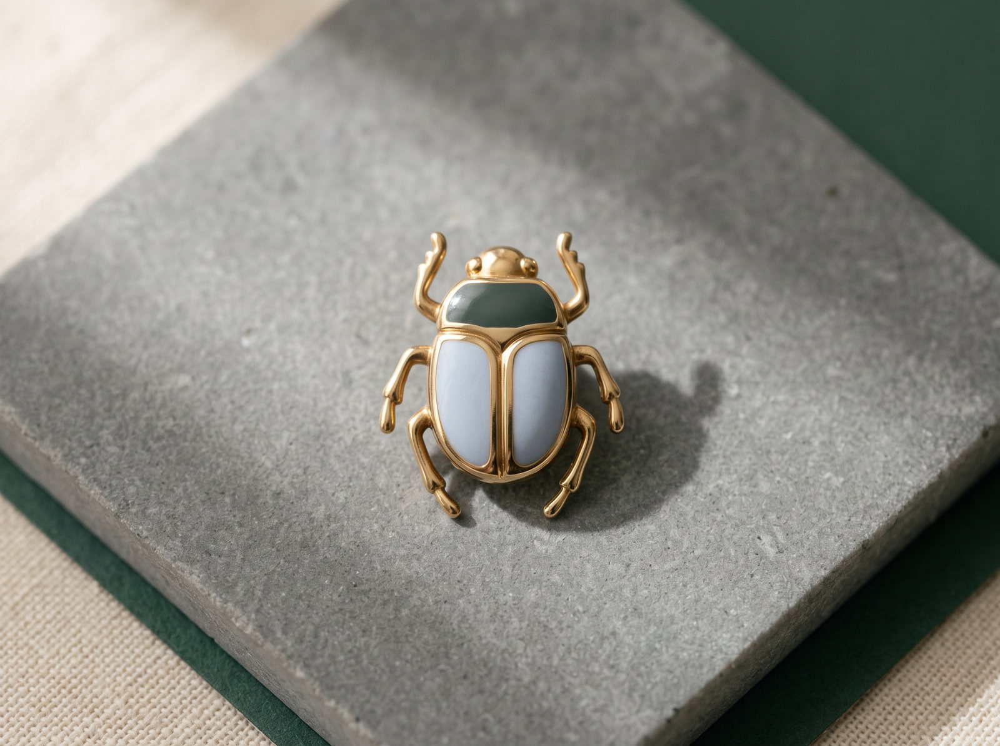
Etsy metni
Başlık 75/140
14K Gold Scarab Lapel Pin for Men, Green Blue Enamel Beetle, Good Luck Gift
Etiketler (13)
14k gold lapel pin, mens lapel pin, scarab pin, beetle lapel pin, enamel lapel pin, vitreous enamel, scarab amulet, good luck gift, gold brooch for men, suit pin, christmas gift, gift for him, talisman jewelry
Malzemeler
14k yellow gold, vitreous enamel, 14k white gold pin stem, 14k gold safety catch
Açıklama
A scarab for the lapel: a deep jade-green glass enamel shield, ice-blue enamel wing cases and six gold legs. The beetle of renewal and good luck, as a Christmas gift for him. THE PIECE 22 mm long and 21 mm wide including the legs. A polished 1.0 mm gold ridge runs between the wing cases; the six 1.0 mm legs angle outward with rounded ends. GOLD WEIGHT 3.91 g of 14k gold, counting the 14k white gold pin stem and the safety catch. On the scale the finished piece weighs 4.00 g in total with the enamel. ENAMEL Kiln-fired vitreous enamel (glass), opaque: deep jade green on the front shield, ice blue on the wing cases, level with the gold. HOW IT FASTENS One pin stem of hardened 14k white gold with a rotating safety catch, the standard fine-jewellery fastening for a brooch worn every day. HOW IT IS MADE Made to order. Cast in 14k gold in one piece, in a zinc-free gold alloy chosen for enamel. The enamel cells are cast into the gold, filled by hand and kiln-fired. Nothing is soldered after the first firing; any fitting added later is laser welded away from the enamel. CARE Wipe with a soft dry cloth, or wash in warm water with a drop of mild soap. Glass enamel is hard and does not fade, but it can chip if struck against stone or metal. Keep it away from ultrasonic cleaners. No bleach or chlorine. GIFTING Arrives in a gift box, ready to give. Made to order. The processing time is shown at checkout.
Atölye kartı
22 x 21 mm (bacaklar dahil; govde 11 genis). Pronotum 10.0 x 5.0 x 1.4 (r2.0), yesil hucre 7.0 x 3.0 x 0.55. Elytra 2 x 12.0 x 5.0 x 1.4, mavi hucre 9.0 x 2.6 x 0.55 (yan duvar 1.2). Omurga 12.0 x 1.0 x 1.4. 6 bacak 7.0 x 1.0 x 1.0, yana ~45 derece, uc r0.5. Bas 4.0 x 2.5 x 1.2. Taban 0.85. Igne hatti pronotum-elytra sinirinda, mafsal x=-4.5, kilit kaidesi x=+4.5; igne 11.5 mm. Model +0.2.
Tek parca 14K CINKOSUZ dokum. Lehim yok. 2 renk ayni dolumlarda, 3 pisirim. Govde arkasi mine altinda -> kilit kaideye lazer (3D 0.85 + 2.0). Tas yok.
Tezgâh sırası
- 1. CAD: bitmis + 0.2; hucre tabani r0.15; bacak uclari r0.5; kaide + uzun kulaklar.
- 2. Recine baski; besleme omurga arkasi; bacak uclarina hava kanali.
- 3. Yatirim + yakma; CINKOSUZ 14K vakum dokum; gozenek kontrolu.
- 4. Tesviye; plaka 1.4, hucre 0.55, bacak 1.0 x 1.0.
- 5. Hucre temizligi.
- 6. Yuzey zenginlestirme 3-4 dongu.
- 7. Karsi-mine: gerekmez (taban 0.85).
- 8. Islak dolum yesil + buz mavisi; Pisirim 1: 780 C, 75 sn (bacaklar sehpada destekli).
- 9. Pisirim 2: 780 C, 75 sn.
- 10. Tasla zimpara.
- 11. Pisirim 3: 770 C, 50 sn. Toplam 3.
- 12. Notr temizlik; omurga ve kenar parlatma.
- 13. Tas: yok.
- 14. Lazer: kaideye 460-12 kilit; maske.
- 15. Igne 14KW 11.5 mm, percin.
- 16. QC: tartim 3.94 g +/- %5, bacak egilme, kilit.
Malzeme listesi
- Alasim: 14K sari CINKOSUZ mine-uyumlu alasim (Otto Frei 846-180 'No Zinc' master alloy + 24K ile 14K; dokumhaneden yazili Zn=0 sertifikasi + solidus/DSC degeri), vakum/inert gaz dokum. Dokum govde (kulak/ped dahil) 3.600 g x 1.15 = 4.14 g dokum metali (yolluk/kayip payi).
- Mine tozu: opak derin yesil ~72 mg, opak buz mavisi ~161 mg.
- Tas: yok.
- Bulgular (satin alma): 14K beyaz igne 0.86 mm (Otto Frei 601-14, 38.1 mm'den 11.5 mm'ye kesilir) 0.102 g; 14KY emniyetli doner kilit Otto Frei 460-12 0.22 g (tahmin); 14K percin teli 0.8 mm x 3.0 0.020 g. Toplam bulgu 0.342 g (altin grama dahil).
Arıza modları
| Arıza | Tasarım nasıl önlüyor |
|---|---|
| Konsol bacaklarin yakada takilip egilmesi | Bacak 0.9 -> 1.0 x 1.0, uc r0.5, ~45 derece yana. |
| Iki renk arasinda mine tasmasi | Renkler ayri hucrelerde, aradaki duvar >=1.0 (omurga / pronotum kenari). |
| Ince bacaklarin firinda sarkmasi | Bacaklar sehpada destekli; 780 C ust sinir. |
Tolerans
| Kural | Değer | |
|---|---|---|
| L1 karat 14K (KANIT karat_policy: 14K vitreous 'marginal', not_viable degil; 18K'ye gecilmez) | 14K sari | ✓ |
| L2 opak vitreous champleve, hucreler dokumde birakilir (oyma degil) | opak, kursunsuz; hucreler mumda modelli | ✓ |
| L2 hucre derinligi 0.5-0.6 | 0.55 | ✓ |
| L2 hucre genisligi >=0.7 ve derinlik <=2x genislik | min genislik 2.6; oran 0.21 | ✓ |
| L2 hucre tabani >=0.8 (karsi-mine gerekmez) | 0.85 | ✓ |
| L2 hucre arasi ve cevre altin duvar >=0.70 | 1.0 | ✓ |
| L2 hucre icinde kabartma/doku yok | duz, filetolu taban (r0.15) | ✓ |
| L2 palet + renk sayisi | 2 renk: derin yesil + buz mavisi | ✓ |
| L2 pisirim <=4 dongu, <=790 C (KANIT) | 3 pisirim, 770-780 C | ✓ |
| L3 ilk pisirimden sonra hamlac lehimi yok | lehim baglantisi 0; mafsal kulaklari govdeyle tek dokum; kilit pisirim sonrasi lazerle | ✓ |
| L3 pisirim sonrasi lazer, mineye >=1.5 | kaide, 3D 2.85 mm | ✓ |
| L4 tas | tas yok - uygulanmaz | ✓ |
| L5 dekoratif >=0.6 / yapisal >=0.8 | bacak 1.0 x 1.0; plaka 1.4 | ✓ |
| L5 mafsal kesiti >=1.0 | kulak 1.0 x 2.4 x 4.2 | ✓ |
| L5 aciklik | bacak aralari acik (>=2 mm) | ✓ |
| L5 model +0.2 / uc r>=0.4 | +0.2; bacak uclari r0.5 | ✓ |
| L6 hollow (yalniz kolye/bros, asla mineyle degil) | kati govde, hollow yok; 'solid' basliga girebilir | ✓ |
| L7 bros bandi 3.0-4.2 g altin (bulgu dahil) | 3.942 g (govde 3.600 + bulgu 0.342); tavana pay 0.26 g | ✓ |
| L10 <=30 tek igne; mafsal ustte; doner kilit | 22 x 21, tek igne 11.5; ust ucte; 460-12 | ✓ |
| L12 tek kahraman ozellik | iki renk mineli skarabe kabugu | ✓ |
Görsel promptları (16)
- 01Hero / arama küçük resmi: tek ürün, marka natürmortu, 4:3.Referanssız
Quiet luxury editorial still-life product photography. Warm ivory linen ground, honed grey stone slab, a sliver of deep jade-green matte card. Soft directional window light from upper left, long soft shadow, shallow depth of field. Solid yellow gold with warm antique tone. Restrained heirloom mood. No text, no logo, no glitter, no Christmas decoration. The piece: Men's lapel pin in 14K yellow gold, 22 mm long and 21 mm wide: a scarab beetle seen from above. The front shield holds one 7 by 3 mm field of opaque deep jade-green enamel (a dark muted grey-green); each of the two wing cases holds one 9 by 2.6 mm field of opaque ice-blue enamel (a soft pale powder blue with a grey cast) with rounded ends, level with the gold. A polished 1.0 mm gold ridge runs between the wing cases. Six legs, 1.0 mm thick with rounded ends, angle outward, three on each side. A small rounded head at the front. Gold edges polished. Back: 14K white gold pin stem with a rotating safety catch. The piece carries no gemstones at all and no empty settings. The only colour on the piece is opaque enamel in three fields: deep jade-green on the front shield and ice-blue on each of the two wing cases; every other surface is yellow gold. The brooch lies face up, centred on the honed grey stone slab, pin hidden behind it; exactly one brooch. Seen from about 30 degrees above with a 100 mm macro lens, the piece in razor-sharp focus, filling about 45 percent of the frame width, centred with generous empty margin on all four sides. No people and no hands.
Alt metin 14K gold scarab lapel pin with green and ice blue enamel
- 02Takılı hâli: ölçek ve duruş. Hero'dan sonra dönüşümü en çok etkileyen kare.Referans: hero kırpımı
Quiet luxury editorial photography in warm ivory, stone grey and deep jade-green tones, soft directional window light from the upper left, true colour, fine film grain, no heavy retouching. No text, no logo, no watermark, no glitter. The attached reference image is a crop of this exact piece: keep its shape, proportions, gold colour and enamel colours exactly as in the reference. The piece: Men's lapel pin in 14K yellow gold, 22 mm long and 21 mm wide: a scarab beetle seen from above. The front shield holds one 7 by 3 mm field of opaque deep jade-green enamel (a dark muted grey-green); each of the two wing cases holds one 9 by 2.6 mm field of opaque ice-blue enamel (a soft pale powder blue with a grey cast) with rounded ends, level with the gold. A polished 1.0 mm gold ridge runs between the wing cases. Six legs, 1.0 mm thick with rounded ends, angle outward, three on each side. A small rounded head at the front. Gold edges polished. Back: 14K white gold pin stem with a rotating safety catch. The piece carries no gemstones at all and no empty settings. The only colour on the piece is opaque enamel in three fields: deep jade-green on the front shield and ice-blue on each of the two wing cases; every other surface is yellow gold. Pinned through the left lapel of a man's charcoal grey wool flannel suit jacket at the buttonhole, white shirt, no tie, cropped from collar to chest so no face shows; exactly one pin on the jacket and no pocket square; true to scale, the main element measures about 22 mm across.
Alt metin 14K gold scarab lapel pin with green and ice blue enamel, worn
- 03Makro işçilik: fiyatı meşrulaştıran detay (mine yüzeyi, flush taş, kenar bitimi).Referans: hero kırpımı
Quiet luxury editorial photography in warm ivory, stone grey and deep jade-green tones, soft directional window light from the upper left, true colour, fine film grain, no heavy retouching. No text, no logo, no watermark, no glitter. The attached reference image is a crop of this exact piece: keep its shape, proportions, gold colour and enamel colours exactly as in the reference. The piece: Men's lapel pin in 14K yellow gold, 22 mm long and 21 mm wide: a scarab beetle seen from above. The front shield holds one 7 by 3 mm field of opaque deep jade-green enamel (a dark muted grey-green); each of the two wing cases holds one 9 by 2.6 mm field of opaque ice-blue enamel (a soft pale powder blue with a grey cast) with rounded ends, level with the gold. A polished 1.0 mm gold ridge runs between the wing cases. Six legs, 1.0 mm thick with rounded ends, angle outward, three on each side. A small rounded head at the front. Gold edges polished. Back: 14K white gold pin stem with a rotating safety catch. The piece carries no gemstones at all and no empty settings. The only colour on the piece is opaque enamel in three fields: deep jade-green on the front shield and ice-blue on each of the two wing cases; every other surface is yellow gold. Extreme close-up macro, 100 mm macro lens: The scarab's ice-blue enamel wing cases either side of the polished gold ridge, and the deep jade-green enamel front shield. The rest of the piece falls away into soft focus on warm-ivory linen.
Alt metin Close-up of the enamel wing cases and front shield
- 04Elde ölçek: mm'yi parmak ucuna çevirir, 'beklediğimden küçük' iadesini önler.Referans: hero kırpımı
Quiet luxury editorial photography in warm ivory, stone grey and deep jade-green tones, soft directional window light from the upper left, true colour, fine film grain, no heavy retouching. No text, no logo, no watermark, no glitter. The attached reference image is a crop of this exact piece: keep its shape, proportions, gold colour and enamel colours exactly as in the reference. The piece: Men's lapel pin in 14K yellow gold, 22 mm long and 21 mm wide: a scarab beetle seen from above. The front shield holds one 7 by 3 mm field of opaque deep jade-green enamel (a dark muted grey-green); each of the two wing cases holds one 9 by 2.6 mm field of opaque ice-blue enamel (a soft pale powder blue with a grey cast) with rounded ends, level with the gold. A polished 1.0 mm gold ridge runs between the wing cases. Six legs, 1.0 mm thick with rounded ends, angle outward, three on each side. A small rounded head at the front. Gold edges polished. Back: 14K white gold pin stem with a rotating safety catch. The piece carries no gemstones at all and no empty settings. The only colour on the piece is opaque enamel in three fields: deep jade-green on the front shield and ice-blue on each of the two wing cases; every other surface is yellow gold. Close-up for scale against a plain warm-ivory background thrown softly out of focus: the brooch resting face up on the open palm of a woman's hand; true to scale, the main element measures about 22 mm across, a fingertip is about 16 mm wide; it is the only jewellery in the image; anatomically correct hands with five fingers, short natural unpolished nails.
Alt metin 14K gold scarab lapel pin with green and ice blue enamel, held between fingers for scale
- 05Arka ve bulgular: dolu gövde, kilit / çivi / iğne; sağlamlık sorusunu cevaplar.Referans: hero kırpımı
Quiet luxury editorial photography in warm ivory, stone grey and deep jade-green tones, soft directional window light from the upper left, true colour, fine film grain, no heavy retouching. No text, no logo, no watermark, no glitter. The attached reference image is a crop of this exact piece: keep its shape, proportions, gold colour and enamel colours exactly as in the reference. The piece: Men's lapel pin in 14K yellow gold, 22 mm long and 21 mm wide: a scarab beetle seen from above. The front shield holds one 7 by 3 mm field of opaque deep jade-green enamel (a dark muted grey-green); each of the two wing cases holds one 9 by 2.6 mm field of opaque ice-blue enamel (a soft pale powder blue with a grey cast) with rounded ends, level with the gold. A polished 1.0 mm gold ridge runs between the wing cases. Six legs, 1.0 mm thick with rounded ends, angle outward, three on each side. A small rounded head at the front. Gold edges polished. Back: 14K white gold pin stem with a rotating safety catch. The piece carries no gemstones at all and no empty settings. The only colour on the piece is opaque enamel in three fields: deep jade-green on the front shield and ice-blue on each of the two wing cases; every other surface is yellow gold. The back of the piece, top-down on honed grey stone: The flat back of the scarab with the 14K white gold pin stem, the hinge and the rotating safety catch.
Alt metin Back of the lapel pin showing the pin stem and safety catch
- 06Tam boy / çift / mekanizma: uzunluk, ayar ve ne geldiğini tek karede gösterir.Referans: hero kırpımı
Quiet luxury editorial photography in warm ivory, stone grey and deep jade-green tones, soft directional window light from the upper left, true colour, fine film grain, no heavy retouching. No text, no logo, no watermark, no glitter. The attached reference image is a crop of this exact piece: keep its shape, proportions, gold colour and enamel colours exactly as in the reference. The piece: Men's lapel pin in 14K yellow gold, 22 mm long and 21 mm wide: a scarab beetle seen from above. The front shield holds one 7 by 3 mm field of opaque deep jade-green enamel (a dark muted grey-green); each of the two wing cases holds one 9 by 2.6 mm field of opaque ice-blue enamel (a soft pale powder blue with a grey cast) with rounded ends, level with the gold. A polished 1.0 mm gold ridge runs between the wing cases. Six legs, 1.0 mm thick with rounded ends, angle outward, three on each side. A small rounded head at the front. Gold edges polished. Back: 14K white gold pin stem with a rotating safety catch. The piece carries no gemstones at all and no empty settings. The only colour on the piece is opaque enamel in three fields: deep jade-green on the front shield and ice-blue on each of the two wing cases; every other surface is yellow gold. The brooch lying face down on honed grey stone with its pin stem swung open out of the safety catch so the full length of the pin, the hinge joint and the open catch are all visible, top-down.
Alt metin 14K gold scarab lapel pin with green and ice blue enamel, pin open
- 07Yan profil: kalınlık ve kütle, düz baskı değil gerçek altın olduğunu gösterir.Referans: hero kırpımı
Quiet luxury editorial photography in warm ivory, stone grey and deep jade-green tones, soft directional window light from the upper left, true colour, fine film grain, no heavy retouching. No text, no logo, no watermark, no glitter. The attached reference image is a crop of this exact piece: keep its shape, proportions, gold colour and enamel colours exactly as in the reference. The piece: Men's lapel pin in 14K yellow gold, 22 mm long and 21 mm wide: a scarab beetle seen from above. The front shield holds one 7 by 3 mm field of opaque deep jade-green enamel (a dark muted grey-green); each of the two wing cases holds one 9 by 2.6 mm field of opaque ice-blue enamel (a soft pale powder blue with a grey cast) with rounded ends, level with the gold. A polished 1.0 mm gold ridge runs between the wing cases. Six legs, 1.0 mm thick with rounded ends, angle outward, three on each side. A small rounded head at the front. Gold edges polished. Back: 14K white gold pin stem with a rotating safety catch. The piece carries no gemstones at all and no empty settings. The only colour on the piece is opaque enamel in three fields: deep jade-green on the front shield and ice-blue on each of the two wing cases; every other surface is yellow gold. Side profile at eye level on honed grey stone, the camera level with the piece: A flat beetle 1.4 mm thick with legs 1.0 mm thick.
Alt metin Side profile of the lapel pin showing its thickness
- 08Kış yaşam stili: sezonu Noel dekoru olmadan kurar.Referans: hero kırpımı
Quiet luxury editorial photography in warm ivory, stone grey and deep jade-green tones, soft directional window light from the upper left, true colour, fine film grain, no heavy retouching. No text, no logo, no watermark, no glitter. The attached reference image is a crop of this exact piece: keep its shape, proportions, gold colour and enamel colours exactly as in the reference. The piece: Men's lapel pin in 14K yellow gold, 22 mm long and 21 mm wide: a scarab beetle seen from above. The front shield holds one 7 by 3 mm field of opaque deep jade-green enamel (a dark muted grey-green); each of the two wing cases holds one 9 by 2.6 mm field of opaque ice-blue enamel (a soft pale powder blue with a grey cast) with rounded ends, level with the gold. A polished 1.0 mm gold ridge runs between the wing cases. Six legs, 1.0 mm thick with rounded ends, angle outward, three on each side. A small rounded head at the front. Gold edges polished. Back: 14K white gold pin stem with a rotating safety catch. The piece carries no gemstones at all and no empty settings. The only colour on the piece is opaque enamel in three fields: deep jade-green on the front shield and ice-blue on each of the two wing cases; every other surface is yellow gold. Outdoors in pale winter light: a man in a navy wool overcoat with the pin through the left lapel, a grey scarf, cropped from collar to chest so no face shows; exactly one pin.
Alt metin 14K gold scarab lapel pin with green and ice blue enamel, styled with winter knitwear
- 09Hediye kutusu: Noel alıcısının ilk sorusu, hediyeye hazır mı?Referans: hero kırpımı
Quiet luxury editorial photography in warm ivory, stone grey and deep jade-green tones, soft directional window light from the upper left, true colour, fine film grain, no heavy retouching. No text, no logo, no watermark, no glitter. The attached reference image is a crop of this exact piece: keep its shape, proportions, gold colour and enamel colours exactly as in the reference. The piece: Men's lapel pin in 14K yellow gold, 22 mm long and 21 mm wide: a scarab beetle seen from above. The front shield holds one 7 by 3 mm field of opaque deep jade-green enamel (a dark muted grey-green); each of the two wing cases holds one 9 by 2.6 mm field of opaque ice-blue enamel (a soft pale powder blue with a grey cast) with rounded ends, level with the gold. A polished 1.0 mm gold ridge runs between the wing cases. Six legs, 1.0 mm thick with rounded ends, angle outward, three on each side. A small rounded head at the front. Gold edges polished. Back: 14K white gold pin stem with a rotating safety catch. The piece carries no gemstones at all and no empty settings. The only colour on the piece is opaque enamel in three fields: deep jade-green on the front shield and ice-blue on each of the two wing cases; every other surface is yellow gold. Top-down: the brooch face up inside a small open square gift box in plain warm-ivory card with a soft ivory insert, the lid set beside it, a length of narrow deep jade-green ribbon untied beside the box, on honed grey stone. No branding, no printed pattern, no tissue paper, no Christmas decoration, exactly one box.
Alt metin 14K gold scarab lapel pin with green and ice blue enamel in a gift box
- 10Gerçek renk: nötr gün ışığında altın ve mine rengi; renk kaynaklı iadeyi azaltır.Referans: hero kırpımı
Quiet luxury editorial photography in warm ivory, stone grey and deep jade-green tones, soft directional window light from the upper left, true colour, fine film grain, no heavy retouching. No text, no logo, no watermark, no glitter. The attached reference image is a crop of this exact piece: keep its shape, proportions, gold colour and enamel colours exactly as in the reference. The piece: Men's lapel pin in 14K yellow gold, 22 mm long and 21 mm wide: a scarab beetle seen from above. The front shield holds one 7 by 3 mm field of opaque deep jade-green enamel (a dark muted grey-green); each of the two wing cases holds one 9 by 2.6 mm field of opaque ice-blue enamel (a soft pale powder blue with a grey cast) with rounded ends, level with the gold. A polished 1.0 mm gold ridge runs between the wing cases. Six legs, 1.0 mm thick with rounded ends, angle outward, three on each side. A small rounded head at the front. Gold edges polished. Back: 14K white gold pin stem with a rotating safety catch. The piece carries no gemstones at all and no empty settings. The only colour on the piece is opaque enamel in three fields: deep jade-green on the front shield and ice-blue on each of the two wing cases; every other surface is yellow gold. Colour-accurate reference shot: the piece alone, top-down on plain matte white-ivory paper under even neutral north daylight, no shadow drama, no props, the piece centred and filling half the frame.
Alt metin 14K gold scarab lapel pin with green and ice blue enamel in neutral daylight, true colour
- 11Ölçü grafiği tabanı: sağ üçte bir boş; mm etiketleri sonra eklenir.Referans: hero kırpımı
Quiet luxury editorial photography in warm ivory, stone grey and deep jade-green tones, soft directional window light from the upper left, true colour, fine film grain, no heavy retouching. No text, no logo, no watermark, no glitter. The attached reference image is a crop of this exact piece: keep its shape, proportions, gold colour and enamel colours exactly as in the reference. The piece: Men's lapel pin in 14K yellow gold, 22 mm long and 21 mm wide: a scarab beetle seen from above. The front shield holds one 7 by 3 mm field of opaque deep jade-green enamel (a dark muted grey-green); each of the two wing cases holds one 9 by 2.6 mm field of opaque ice-blue enamel (a soft pale powder blue with a grey cast) with rounded ends, level with the gold. A polished 1.0 mm gold ridge runs between the wing cases. Six legs, 1.0 mm thick with rounded ends, angle outward, three on each side. A small rounded head at the front. Gold edges polished. Back: 14K white gold pin stem with a rotating safety catch. The piece carries no gemstones at all and no empty settings. The only colour on the piece is opaque enamel in three fields: deep jade-green on the front shield and ice-blue on each of the two wing cases; every other surface is yellow gold. The piece alone, top-down on plain warm-ivory paper, placed in the left two thirds of the frame; the right third is empty paper for dimension labels to be added later; even soft light, no props.
Alt metin 14K gold scarab lapel pin with green and ice blue enamel with space for dimensions
- 12El işçiliği: siparişe üretim hikâyesi, tezgâhta parça.Referans: hero kırpımı
Quiet luxury editorial photography in warm ivory, stone grey and deep jade-green tones, soft directional window light from the upper left, true colour, fine film grain, no heavy retouching. No text, no logo, no watermark, no glitter. The attached reference image is a crop of this exact piece: keep its shape, proportions, gold colour and enamel colours exactly as in the reference. The piece: Men's lapel pin in 14K yellow gold, 22 mm long and 21 mm wide: a scarab beetle seen from above. The front shield holds one 7 by 3 mm field of opaque deep jade-green enamel (a dark muted grey-green); each of the two wing cases holds one 9 by 2.6 mm field of opaque ice-blue enamel (a soft pale powder blue with a grey cast) with rounded ends, level with the gold. A polished 1.0 mm gold ridge runs between the wing cases. Six legs, 1.0 mm thick with rounded ends, angle outward, three on each side. A small rounded head at the front. Gold edges polished. Back: 14K white gold pin stem with a rotating safety catch. The piece carries no gemstones at all and no empty settings. The only colour on the piece is opaque enamel in three fields: deep jade-green on the front shield and ice-blue on each of the two wing cases; every other surface is yellow gold. The finished piece lying on a worn wooden jeweller's bench pin beside a small porcelain dish of deep green enamel powder and a fine sable brush, warm lamp light, shallow depth of field, the piece in sharp focus; no hands.
Alt metin 14K gold scarab lapel pin with green and ice blue enamel on a jeweller's bench
- 13Motifin anlamı: sol üçte bir boş; sembol hikâyesi metni sonra eklenir.Referans: hero kırpımı
Quiet luxury editorial photography in warm ivory, stone grey and deep jade-green tones, soft directional window light from the upper left, true colour, fine film grain, no heavy retouching. No text, no logo, no watermark, no glitter. The attached reference image is a crop of this exact piece: keep its shape, proportions, gold colour and enamel colours exactly as in the reference. The piece: Men's lapel pin in 14K yellow gold, 22 mm long and 21 mm wide: a scarab beetle seen from above. The front shield holds one 7 by 3 mm field of opaque deep jade-green enamel (a dark muted grey-green); each of the two wing cases holds one 9 by 2.6 mm field of opaque ice-blue enamel (a soft pale powder blue with a grey cast) with rounded ends, level with the gold. A polished 1.0 mm gold ridge runs between the wing cases. Six legs, 1.0 mm thick with rounded ends, angle outward, three on each side. A small rounded head at the front. Gold edges polished. Back: 14K white gold pin stem with a rotating safety catch. The piece carries no gemstones at all and no empty settings. The only colour on the piece is opaque enamel in three fields: deep jade-green on the front shield and ice-blue on each of the two wing cases; every other surface is yellow gold. The piece alone, top-down on a deep jade-green matte card, placed in the right two thirds of the frame; the left third is empty card for a caption to be added later; soft directional light.
Alt metin 14K gold scarab lapel pin with green and ice blue enamel on a deep green card
- 14Yıl boyu takılır: 'yalnız Noel' itirazını kırar.Referans: hero kırpımı
Quiet luxury editorial photography in warm ivory, stone grey and deep jade-green tones, soft directional window light from the upper left, true colour, fine film grain, no heavy retouching. No text, no logo, no watermark, no glitter. The attached reference image is a crop of this exact piece: keep its shape, proportions, gold colour and enamel colours exactly as in the reference. The piece: Men's lapel pin in 14K yellow gold, 22 mm long and 21 mm wide: a scarab beetle seen from above. The front shield holds one 7 by 3 mm field of opaque deep jade-green enamel (a dark muted grey-green); each of the two wing cases holds one 9 by 2.6 mm field of opaque ice-blue enamel (a soft pale powder blue with a grey cast) with rounded ends, level with the gold. A polished 1.0 mm gold ridge runs between the wing cases. Six legs, 1.0 mm thick with rounded ends, angle outward, three on each side. A small rounded head at the front. Gold edges polished. Back: 14K white gold pin stem with a rotating safety catch. The piece carries no gemstones at all and no empty settings. The only colour on the piece is opaque enamel in three fields: deep jade-green on the front shield and ice-blue on each of the two wing cases; every other surface is yellow gold. Everyday wear, no season: the pin on the lapel of a man's unstructured stone-grey linen blazer over a white t-shirt, soft daylight, cropped from collar to chest; exactly one pin.
Alt metin 14K gold scarab lapel pin with green and ice blue enamel, everyday wear
- 15Hediye anı: duygu; Noel satın alma niyetine bağlar.Referans: hero kırpımı
Quiet luxury editorial photography in warm ivory, stone grey and deep jade-green tones, soft directional window light from the upper left, true colour, fine film grain, no heavy retouching. No text, no logo, no watermark, no glitter. The attached reference image is a crop of this exact piece: keep its shape, proportions, gold colour and enamel colours exactly as in the reference. The piece: Men's lapel pin in 14K yellow gold, 22 mm long and 21 mm wide: a scarab beetle seen from above. The front shield holds one 7 by 3 mm field of opaque deep jade-green enamel (a dark muted grey-green); each of the two wing cases holds one 9 by 2.6 mm field of opaque ice-blue enamel (a soft pale powder blue with a grey cast) with rounded ends, level with the gold. A polished 1.0 mm gold ridge runs between the wing cases. Six legs, 1.0 mm thick with rounded ends, angle outward, three on each side. A small rounded head at the front. Gold edges polished. Back: 14K white gold pin stem with a rotating safety catch. The piece carries no gemstones at all and no empty settings. The only colour on the piece is opaque enamel in three fields: deep jade-green on the front shield and ice-blue on each of the two wing cases; every other surface is yellow gold. A gift being given: two pairs of hands across a pale oak table, one pair holding out the small open warm-ivory gift box with the piece visible inside, the other reaching for it, soft warm window light, sleeves of ivory and grey knitwear; exactly one box and one piece of jewellery; anatomically correct hands with five fingers, short natural unpolished nails.
Alt metin 14K gold scarab lapel pin with green and ice blue enamel given as a gift
- 16Mağaza ızgarası / Pinterest: koyu jade zeminde yüksek kontrast kare.Referans: hero kırpımı
Quiet luxury editorial photography in warm ivory, stone grey and deep jade-green tones, soft directional window light from the upper left, true colour, fine film grain, no heavy retouching. No text, no logo, no watermark, no glitter. The attached reference image is a crop of this exact piece: keep its shape, proportions, gold colour and enamel colours exactly as in the reference. The piece: Men's lapel pin in 14K yellow gold, 22 mm long and 21 mm wide: a scarab beetle seen from above. The front shield holds one 7 by 3 mm field of opaque deep jade-green enamel (a dark muted grey-green); each of the two wing cases holds one 9 by 2.6 mm field of opaque ice-blue enamel (a soft pale powder blue with a grey cast) with rounded ends, level with the gold. A polished 1.0 mm gold ridge runs between the wing cases. Six legs, 1.0 mm thick with rounded ends, angle outward, three on each side. A small rounded head at the front. Gold edges polished. Back: 14K white gold pin stem with a rotating safety catch. The piece carries no gemstones at all and no empty settings. The only colour on the piece is opaque enamel in three fields: deep jade-green on the front shield and ice-blue on each of the two wing cases; every other surface is yellow gold. Top-down flat lay of the piece centred on a deep jade-green matte card with a narrow border of warm-ivory linen at the top edge, crisp soft light, the piece filling about 40 percent of the frame so a square crop keeps all of it.
Alt metin 14K gold scarab lapel pin with green and ice blue enamel, flat lay on deep green
Bu süzgeçte parça yok.